Date: 2019-12-03 20:32:06 CET, cola version: 1.3.2
Document is loading...
All available functions which can be applied to this res_list object:
res_list
#> A 'ConsensusPartitionList' object with 24 methods.
#> On a matrix with 17867 rows and 63 columns.
#> Top rows are extracted by 'SD, CV, MAD, ATC' methods.
#> Subgroups are detected by 'hclust, kmeans, skmeans, pam, mclust, NMF' method.
#> Number of partitions are tried for k = 2, 3, 4, 5, 6.
#> Performed in total 30000 partitions by row resampling.
#>
#> Following methods can be applied to this 'ConsensusPartitionList' object:
#> [1] "cola_report" "collect_classes" "collect_plots" "collect_stats"
#> [5] "colnames" "functional_enrichment" "get_anno_col" "get_anno"
#> [9] "get_classes" "get_matrix" "get_membership" "get_stats"
#> [13] "is_best_k" "is_stable_k" "ncol" "nrow"
#> [17] "rownames" "show" "suggest_best_k" "test_to_known_factors"
#> [21] "top_rows_heatmap" "top_rows_overlap"
#>
#> You can get result for a single method by, e.g. object["SD", "hclust"] or object["SD:hclust"]
#> or a subset of methods by object[c("SD", "CV")], c("hclust", "kmeans")]
The call of run_all_consensus_partition_methods() was:
#> run_all_consensus_partition_methods(data = mat, mc.cores = 4, anno = anno)
Dimension of the input matrix:
mat = get_matrix(res_list)
dim(mat)
#> [1] 17867 63
The density distribution for each sample is visualized as in one column in the following heatmap. The clustering is based on the distance which is the Kolmogorov-Smirnov statistic between two distributions.
library(ComplexHeatmap)
densityHeatmap(mat, top_annotation = HeatmapAnnotation(df = get_anno(res_list),
col = get_anno_col(res_list)), ylab = "value", cluster_columns = TRUE, show_column_names = FALSE,
mc.cores = 4)
Folowing table shows the best k (number of partitions) for each combination
of top-value methods and partition methods. Clicking on the method name in
the table goes to the section for a single combination of methods.
The cola vignette explains the definition of the metrics used for determining the best number of partitions.
suggest_best_k(res_list)
| The best k | 1-PAC | Mean silhouette | Concordance | Optional k | ||
|---|---|---|---|---|---|---|
| SD:skmeans | 2 | 1.000 | 0.964 | 0.986 | ** | |
| MAD:skmeans | 2 | 1.000 | 0.972 | 0.988 | ** | |
| ATC:kmeans | 2 | 1.000 | 0.961 | 0.985 | ** | |
| MAD:pam | 2 | 0.961 | 0.893 | 0.954 | ** | |
| CV:skmeans | 3 | 0.957 | 0.942 | 0.975 | ** | 2 |
| ATC:skmeans | 4 | 0.909 | 0.889 | 0.938 | * | 2,3 |
| CV:mclust | 3 | 0.905 | 0.885 | 0.953 | * | |
| SD:pam | 2 | 0.903 | 0.865 | 0.942 | * | |
| SD:NMF | 2 | 0.900 | 0.933 | 0.970 | * | |
| MAD:mclust | 4 | 0.886 | 0.868 | 0.932 | ||
| MAD:kmeans | 2 | 0.872 | 0.890 | 0.956 | ||
| CV:NMF | 2 | 0.839 | 0.895 | 0.958 | ||
| MAD:NMF | 2 | 0.838 | 0.926 | 0.969 | ||
| CV:pam | 3 | 0.838 | 0.864 | 0.942 | ||
| CV:kmeans | 2 | 0.838 | 0.860 | 0.930 | ||
| ATC:NMF | 2 | 0.812 | 0.904 | 0.957 | ||
| SD:mclust | 4 | 0.798 | 0.887 | 0.948 | ||
| ATC:pam | 3 | 0.786 | 0.842 | 0.934 | ||
| SD:kmeans | 2 | 0.784 | 0.889 | 0.950 | ||
| ATC:mclust | 3 | 0.691 | 0.867 | 0.919 | ||
| ATC:hclust | 2 | 0.579 | 0.712 | 0.874 | ||
| SD:hclust | 2 | 0.559 | 0.828 | 0.919 | ||
| CV:hclust | 2 | 0.559 | 0.853 | 0.923 | ||
| MAD:hclust | 2 | 0.559 | 0.818 | 0.916 |
**: 1-PAC > 0.95, *: 1-PAC > 0.9
Cumulative distribution function curves of consensus matrix for all methods.
collect_plots(res_list, fun = plot_ecdf)
Consensus heatmaps for all methods. (What is a consensus heatmap?)
collect_plots(res_list, k = 2, fun = consensus_heatmap, mc.cores = 4)
collect_plots(res_list, k = 3, fun = consensus_heatmap, mc.cores = 4)
collect_plots(res_list, k = 4, fun = consensus_heatmap, mc.cores = 4)
collect_plots(res_list, k = 5, fun = consensus_heatmap, mc.cores = 4)
collect_plots(res_list, k = 6, fun = consensus_heatmap, mc.cores = 4)
Membership heatmaps for all methods. (What is a membership heatmap?)
collect_plots(res_list, k = 2, fun = membership_heatmap, mc.cores = 4)
collect_plots(res_list, k = 3, fun = membership_heatmap, mc.cores = 4)
collect_plots(res_list, k = 4, fun = membership_heatmap, mc.cores = 4)
collect_plots(res_list, k = 5, fun = membership_heatmap, mc.cores = 4)
collect_plots(res_list, k = 6, fun = membership_heatmap, mc.cores = 4)
Signature heatmaps for all methods. (What is a signature heatmap?)
Note in following heatmaps, rows are scaled.
collect_plots(res_list, k = 2, fun = get_signatures, mc.cores = 4)
collect_plots(res_list, k = 3, fun = get_signatures, mc.cores = 4)
collect_plots(res_list, k = 4, fun = get_signatures, mc.cores = 4)
collect_plots(res_list, k = 5, fun = get_signatures, mc.cores = 4)
collect_plots(res_list, k = 6, fun = get_signatures, mc.cores = 4)

The statistics used for measuring the stability of consensus partitioning. (How are they defined?)
get_stats(res_list, k = 2)
#> k 1-PAC mean_silhouette concordance area_increased Rand Jaccard
#> SD:NMF 2 0.900 0.933 0.970 0.505 0.492 0.492
#> CV:NMF 2 0.839 0.895 0.958 0.503 0.495 0.495
#> MAD:NMF 2 0.838 0.926 0.969 0.505 0.492 0.492
#> ATC:NMF 2 0.812 0.904 0.957 0.495 0.495 0.495
#> SD:skmeans 2 1.000 0.964 0.986 0.508 0.492 0.492
#> CV:skmeans 2 0.933 0.945 0.975 0.508 0.493 0.493
#> MAD:skmeans 2 1.000 0.972 0.988 0.508 0.492 0.492
#> ATC:skmeans 2 1.000 0.983 0.993 0.508 0.492 0.492
#> SD:mclust 2 0.409 0.845 0.852 0.422 0.529 0.529
#> CV:mclust 2 0.440 0.869 0.831 0.402 0.548 0.548
#> MAD:mclust 2 0.267 0.812 0.787 0.427 0.529 0.529
#> ATC:mclust 2 0.340 0.607 0.793 0.324 0.825 0.825
#> SD:kmeans 2 0.784 0.889 0.950 0.498 0.493 0.493
#> CV:kmeans 2 0.838 0.860 0.930 0.489 0.514 0.514
#> MAD:kmeans 2 0.872 0.890 0.956 0.501 0.493 0.493
#> ATC:kmeans 2 1.000 0.961 0.985 0.507 0.492 0.492
#> SD:pam 2 0.903 0.865 0.942 0.390 0.600 0.600
#> CV:pam 2 0.843 0.914 0.960 0.397 0.572 0.572
#> MAD:pam 2 0.961 0.893 0.954 0.388 0.615 0.615
#> ATC:pam 2 0.638 0.827 0.918 0.420 0.615 0.615
#> SD:hclust 2 0.559 0.828 0.919 0.479 0.514 0.514
#> CV:hclust 2 0.559 0.853 0.923 0.484 0.514 0.514
#> MAD:hclust 2 0.559 0.818 0.916 0.490 0.507 0.507
#> ATC:hclust 2 0.579 0.712 0.874 0.423 0.529 0.529
get_stats(res_list, k = 3)
#> k 1-PAC mean_silhouette concordance area_increased Rand Jaccard
#> SD:NMF 3 0.586 0.672 0.801 0.315 0.746 0.529
#> CV:NMF 3 0.507 0.552 0.746 0.320 0.713 0.484
#> MAD:NMF 3 0.553 0.622 0.775 0.316 0.745 0.528
#> ATC:NMF 3 0.788 0.882 0.938 0.337 0.735 0.515
#> SD:skmeans 3 0.882 0.916 0.964 0.322 0.702 0.466
#> CV:skmeans 3 0.957 0.942 0.975 0.325 0.717 0.487
#> MAD:skmeans 3 0.887 0.926 0.965 0.318 0.722 0.495
#> ATC:skmeans 3 0.979 0.959 0.983 0.280 0.816 0.641
#> SD:mclust 3 0.767 0.823 0.918 0.505 0.743 0.544
#> CV:mclust 3 0.905 0.885 0.953 0.642 0.719 0.517
#> MAD:mclust 3 0.723 0.835 0.920 0.498 0.743 0.544
#> ATC:mclust 3 0.691 0.867 0.919 0.779 0.557 0.466
#> SD:kmeans 3 0.673 0.790 0.875 0.329 0.721 0.493
#> CV:kmeans 3 0.683 0.831 0.894 0.353 0.774 0.578
#> MAD:kmeans 3 0.696 0.819 0.892 0.323 0.721 0.493
#> ATC:kmeans 3 0.590 0.732 0.864 0.303 0.718 0.486
#> SD:pam 3 0.843 0.835 0.936 0.449 0.817 0.699
#> CV:pam 3 0.838 0.864 0.942 0.494 0.814 0.675
#> MAD:pam 3 0.783 0.807 0.930 0.476 0.797 0.670
#> ATC:pam 3 0.786 0.842 0.934 0.444 0.785 0.650
#> SD:hclust 3 0.365 0.696 0.724 0.222 0.968 0.940
#> CV:hclust 3 0.377 0.584 0.713 0.260 0.822 0.661
#> MAD:hclust 3 0.396 0.692 0.671 0.237 1.000 1.000
#> ATC:hclust 3 0.470 0.609 0.793 0.418 0.778 0.601
get_stats(res_list, k = 4)
#> k 1-PAC mean_silhouette concordance area_increased Rand Jaccard
#> SD:NMF 4 0.566 0.651 0.810 0.1214 0.781 0.454
#> CV:NMF 4 0.538 0.582 0.781 0.1224 0.737 0.377
#> MAD:NMF 4 0.552 0.669 0.812 0.1220 0.782 0.457
#> ATC:NMF 4 0.566 0.544 0.787 0.1089 0.897 0.703
#> SD:skmeans 4 0.695 0.572 0.772 0.1111 0.938 0.816
#> CV:skmeans 4 0.697 0.592 0.798 0.1122 0.926 0.778
#> MAD:skmeans 4 0.678 0.607 0.784 0.1125 0.925 0.776
#> ATC:skmeans 4 0.909 0.889 0.938 0.1120 0.930 0.801
#> SD:mclust 4 0.798 0.887 0.948 0.1003 0.959 0.880
#> CV:mclust 4 0.871 0.869 0.954 0.0651 0.919 0.770
#> MAD:mclust 4 0.886 0.868 0.932 0.1094 0.959 0.880
#> ATC:mclust 4 0.465 0.657 0.806 0.1493 0.817 0.592
#> SD:kmeans 4 0.659 0.658 0.828 0.1034 0.881 0.663
#> CV:kmeans 4 0.650 0.668 0.826 0.1082 0.919 0.762
#> MAD:kmeans 4 0.628 0.613 0.755 0.1065 0.883 0.670
#> ATC:kmeans 4 0.645 0.680 0.821 0.1081 0.840 0.562
#> SD:pam 4 0.591 0.575 0.813 0.1595 0.888 0.749
#> CV:pam 4 0.732 0.694 0.876 0.1780 0.798 0.540
#> MAD:pam 4 0.601 0.522 0.725 0.1709 0.760 0.466
#> ATC:pam 4 0.752 0.729 0.885 0.1034 0.951 0.877
#> SD:hclust 4 0.458 0.486 0.719 0.2107 0.728 0.476
#> CV:hclust 4 0.447 0.559 0.748 0.1677 0.794 0.505
#> MAD:hclust 4 0.435 0.499 0.676 0.1801 0.735 0.488
#> ATC:hclust 4 0.549 0.700 0.779 0.2033 0.750 0.442
get_stats(res_list, k = 5)
#> k 1-PAC mean_silhouette concordance area_increased Rand Jaccard
#> SD:NMF 5 0.580 0.553 0.749 0.0531 0.903 0.653
#> CV:NMF 5 0.573 0.489 0.705 0.0546 0.919 0.702
#> MAD:NMF 5 0.622 0.596 0.781 0.0548 0.884 0.604
#> ATC:NMF 5 0.604 0.634 0.810 0.0585 0.799 0.406
#> SD:skmeans 5 0.712 0.635 0.791 0.0682 0.859 0.548
#> CV:skmeans 5 0.723 0.675 0.811 0.0652 0.859 0.532
#> MAD:skmeans 5 0.721 0.614 0.765 0.0680 0.875 0.579
#> ATC:skmeans 5 0.743 0.690 0.824 0.0563 0.969 0.892
#> SD:mclust 5 0.847 0.805 0.894 0.0845 0.914 0.726
#> CV:mclust 5 0.824 0.826 0.898 0.0858 0.894 0.666
#> MAD:mclust 5 0.836 0.828 0.905 0.0702 0.914 0.726
#> ATC:mclust 5 0.494 0.451 0.708 0.0650 0.925 0.783
#> SD:kmeans 5 0.681 0.484 0.700 0.0634 0.912 0.701
#> CV:kmeans 5 0.672 0.534 0.648 0.0648 0.880 0.598
#> MAD:kmeans 5 0.642 0.436 0.642 0.0636 0.911 0.680
#> ATC:kmeans 5 0.607 0.493 0.701 0.0606 0.915 0.703
#> SD:pam 5 0.665 0.584 0.832 0.0779 0.844 0.611
#> CV:pam 5 0.667 0.651 0.858 0.0284 0.881 0.641
#> MAD:pam 5 0.676 0.591 0.819 0.0737 0.820 0.438
#> ATC:pam 5 0.711 0.702 0.850 0.1070 0.859 0.630
#> SD:hclust 5 0.574 0.588 0.720 0.0833 0.947 0.804
#> CV:hclust 5 0.568 0.543 0.714 0.0744 0.907 0.687
#> MAD:hclust 5 0.518 0.581 0.703 0.0679 0.942 0.791
#> ATC:hclust 5 0.613 0.559 0.760 0.0542 0.853 0.551
get_stats(res_list, k = 6)
#> k 1-PAC mean_silhouette concordance area_increased Rand Jaccard
#> SD:NMF 6 0.670 0.596 0.789 0.0401 0.935 0.727
#> CV:NMF 6 0.648 0.625 0.793 0.0388 0.874 0.527
#> MAD:NMF 6 0.671 0.601 0.783 0.0377 0.966 0.846
#> ATC:NMF 6 0.624 0.543 0.754 0.0470 0.858 0.475
#> SD:skmeans 6 0.745 0.544 0.756 0.0370 0.922 0.651
#> CV:skmeans 6 0.722 0.584 0.763 0.0382 0.951 0.766
#> MAD:skmeans 6 0.752 0.576 0.760 0.0397 0.933 0.700
#> ATC:skmeans 6 0.729 0.626 0.761 0.0378 0.969 0.883
#> SD:mclust 6 0.816 0.632 0.857 0.0495 0.934 0.752
#> CV:mclust 6 0.788 0.727 0.866 0.0551 0.945 0.768
#> MAD:mclust 6 0.780 0.748 0.854 0.0479 0.982 0.927
#> ATC:mclust 6 0.672 0.657 0.803 0.0878 0.874 0.631
#> SD:kmeans 6 0.691 0.622 0.769 0.0473 0.875 0.551
#> CV:kmeans 6 0.667 0.453 0.684 0.0449 0.872 0.516
#> MAD:kmeans 6 0.678 0.632 0.768 0.0464 0.839 0.426
#> ATC:kmeans 6 0.657 0.524 0.728 0.0446 0.866 0.534
#> SD:pam 6 0.754 0.676 0.836 0.0998 0.892 0.654
#> CV:pam 6 0.667 0.633 0.830 0.0809 0.934 0.751
#> MAD:pam 6 0.753 0.726 0.844 0.0798 0.868 0.529
#> ATC:pam 6 0.755 0.664 0.830 0.0685 0.892 0.632
#> SD:hclust 6 0.572 0.580 0.717 0.0259 0.943 0.777
#> CV:hclust 6 0.611 0.586 0.728 0.0361 0.966 0.859
#> MAD:hclust 6 0.570 0.613 0.706 0.0338 0.994 0.973
#> ATC:hclust 6 0.667 0.589 0.752 0.0289 0.853 0.519
Following heatmap plots the partition for each combination of methods and the lightness correspond to the silhouette scores for samples in each method. On top the consensus subgroup is inferred from all methods by taking the mean silhouette scores as weight.
collect_stats(res_list, k = 2)
collect_stats(res_list, k = 3)
collect_stats(res_list, k = 4)
collect_stats(res_list, k = 5)
collect_stats(res_list, k = 6)
Collect partitions from all methods:
collect_classes(res_list, k = 2)
collect_classes(res_list, k = 3)
collect_classes(res_list, k = 4)
collect_classes(res_list, k = 5)
collect_classes(res_list, k = 6)
Overlap of top rows from different top-row methods:
top_rows_overlap(res_list, top_n = 1000, method = "euler")
top_rows_overlap(res_list, top_n = 2000, method = "euler")
top_rows_overlap(res_list, top_n = 3000, method = "euler")
top_rows_overlap(res_list, top_n = 4000, method = "euler")
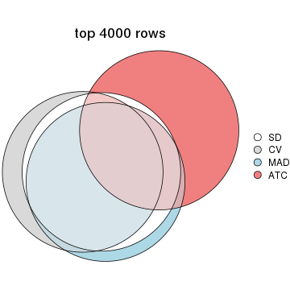
top_rows_overlap(res_list, top_n = 5000, method = "euler")
Also visualize the correspondance of rankings between different top-row methods:
top_rows_overlap(res_list, top_n = 1000, method = "correspondance")
top_rows_overlap(res_list, top_n = 2000, method = "correspondance")
top_rows_overlap(res_list, top_n = 3000, method = "correspondance")
top_rows_overlap(res_list, top_n = 4000, method = "correspondance")
top_rows_overlap(res_list, top_n = 5000, method = "correspondance")
Heatmaps of the top rows:
top_rows_heatmap(res_list, top_n = 1000)
top_rows_heatmap(res_list, top_n = 2000)
top_rows_heatmap(res_list, top_n = 3000)
top_rows_heatmap(res_list, top_n = 4000)
top_rows_heatmap(res_list, top_n = 5000)
Test correlation between subgroups and known annotations. If the known annotation is numeric, one-way ANOVA test is applied, and if the known annotation is discrete, chi-squared contingency table test is applied.
test_to_known_factors(res_list, k = 2)
#> n disease.state(p) other(p) k
#> SD:NMF 62 0.1217 0.239 2
#> CV:NMF 60 0.0955 0.231 2
#> MAD:NMF 62 0.1493 0.330 2
#> ATC:NMF 61 0.0861 0.264 2
#> SD:skmeans 61 0.1342 0.282 2
#> CV:skmeans 63 0.1104 0.202 2
#> MAD:skmeans 63 0.1649 0.384 2
#> ATC:skmeans 63 0.1649 0.521 2
#> SD:mclust 60 0.3062 0.177 2
#> CV:mclust 63 0.2519 0.241 2
#> MAD:mclust 60 0.2629 0.159 2
#> ATC:mclust 60 0.7041 0.841 2
#> SD:kmeans 60 0.1198 0.279 2
#> CV:kmeans 57 0.1682 0.267 2
#> MAD:kmeans 61 0.1342 0.282 2
#> ATC:kmeans 62 0.1493 0.515 2
#> SD:pam 59 0.7218 0.824 2
#> CV:pam 58 0.7013 0.876 2
#> MAD:pam 60 0.6610 0.784 2
#> ATC:pam 62 0.5685 0.787 2
#> SD:hclust 59 0.1044 0.203 2
#> CV:hclust 60 0.0951 0.200 2
#> MAD:hclust 58 0.1894 0.191 2
#> ATC:hclust 55 0.1625 0.120 2
test_to_known_factors(res_list, k = 3)
#> n disease.state(p) other(p) k
#> SD:NMF 58 0.0121 0.323 3
#> CV:NMF 52 0.0145 0.410 3
#> MAD:NMF 55 0.0186 0.370 3
#> ATC:NMF 62 0.1360 0.211 3
#> SD:skmeans 62 0.4510 0.284 3
#> CV:skmeans 62 0.4510 0.284 3
#> MAD:skmeans 62 0.5227 0.326 3
#> ATC:skmeans 62 0.2656 0.437 3
#> SD:mclust 54 0.3022 0.182 3
#> CV:mclust 59 0.5708 0.264 3
#> MAD:mclust 61 0.5019 0.294 3
#> ATC:mclust 62 0.5382 0.574 3
#> SD:kmeans 57 0.4867 0.288 3
#> CV:kmeans 58 0.4535 0.356 3
#> MAD:kmeans 60 0.4987 0.372 3
#> ATC:kmeans 56 0.3263 0.173 3
#> SD:pam 56 0.5122 0.765 3
#> CV:pam 56 0.7244 0.793 3
#> MAD:pam 56 0.4768 0.697 3
#> ATC:pam 60 0.0807 0.518 3
#> SD:hclust 58 0.1147 0.237 3
#> CV:hclust 46 0.1645 0.363 3
#> MAD:hclust 58 0.1894 0.191 3
#> ATC:hclust 48 0.3189 0.434 3
test_to_known_factors(res_list, k = 4)
#> n disease.state(p) other(p) k
#> SD:NMF 51 0.0836 0.0806 4
#> CV:NMF 45 0.2403 0.0978 4
#> MAD:NMF 53 0.4192 0.1415 4
#> ATC:NMF 39 0.1748 0.1931 4
#> SD:skmeans 44 0.2695 0.4205 4
#> CV:skmeans 45 0.5616 0.1761 4
#> MAD:skmeans 44 0.5959 0.1657 4
#> ATC:skmeans 61 0.1212 0.6704 4
#> SD:mclust 60 0.2167 0.0306 4
#> CV:mclust 59 0.2217 0.0211 4
#> MAD:mclust 60 0.2057 0.0141 4
#> ATC:mclust 53 0.1088 0.1135 4
#> SD:kmeans 52 0.1506 0.3057 4
#> CV:kmeans 50 0.1000 0.2908 4
#> MAD:kmeans 50 0.0354 0.4853 4
#> ATC:kmeans 58 0.4220 0.4134 4
#> SD:pam 46 0.5794 0.5468 4
#> CV:pam 52 0.3104 0.6846 4
#> MAD:pam 46 0.3721 0.6738 4
#> ATC:pam 52 0.3302 0.3618 4
#> SD:hclust 33 0.1720 0.3962 4
#> CV:hclust 46 0.0808 0.0539 4
#> MAD:hclust 33 0.4835 0.2795 4
#> ATC:hclust 48 0.2286 0.6698 4
test_to_known_factors(res_list, k = 5)
#> n disease.state(p) other(p) k
#> SD:NMF 43 0.1393 0.4999 5
#> CV:NMF 35 0.3291 0.4144 5
#> MAD:NMF 47 0.1308 0.4271 5
#> ATC:NMF 49 0.0506 0.0963 5
#> SD:skmeans 46 0.7240 0.2616 5
#> CV:skmeans 51 0.7045 0.6142 5
#> MAD:skmeans 47 0.4889 0.3432 5
#> ATC:skmeans 51 0.2148 0.1695 5
#> SD:mclust 54 0.3625 0.0757 5
#> CV:mclust 57 0.3846 0.0642 5
#> MAD:mclust 59 0.3804 0.0171 5
#> ATC:mclust 33 0.0850 0.0564 5
#> SD:kmeans 31 0.1513 0.0607 5
#> CV:kmeans 34 0.0616 0.3266 5
#> MAD:kmeans 27 0.0790 0.3809 5
#> ATC:kmeans 37 0.3001 0.5733 5
#> SD:pam 43 0.2695 0.0869 5
#> CV:pam 52 0.0773 0.4091 5
#> MAD:pam 44 0.4293 0.2041 5
#> ATC:pam 53 0.2210 0.5554 5
#> SD:hclust 50 0.1082 0.0734 5
#> CV:hclust 43 0.1539 0.1457 5
#> MAD:hclust 44 0.0194 0.1047 5
#> ATC:hclust 42 0.5892 0.4688 5
test_to_known_factors(res_list, k = 6)
#> n disease.state(p) other(p) k
#> SD:NMF 49 0.3254 0.6886 6
#> CV:NMF 51 0.3241 0.6207 6
#> MAD:NMF 47 0.2534 0.4936 6
#> ATC:NMF 48 0.0637 0.1015 6
#> SD:skmeans 42 0.1260 0.1254 6
#> CV:skmeans 44 0.3003 0.3881 6
#> MAD:skmeans 45 0.1195 0.4282 6
#> ATC:skmeans 53 0.3028 0.5151 6
#> SD:mclust 50 0.4307 0.0478 6
#> CV:mclust 52 0.4588 0.0534 6
#> MAD:mclust 57 0.4043 0.0297 6
#> ATC:mclust 55 0.1752 0.0397 6
#> SD:kmeans 50 0.0260 0.0876 6
#> CV:kmeans 24 0.0333 0.2898 6
#> MAD:kmeans 44 0.1995 0.0745 6
#> ATC:kmeans 40 0.2549 0.3846 6
#> SD:pam 50 0.1391 0.0771 6
#> CV:pam 45 0.2725 0.3707 6
#> MAD:pam 56 0.2362 0.0496 6
#> ATC:pam 54 0.5011 0.3528 6
#> SD:hclust 40 0.0981 0.5497 6
#> CV:hclust 48 0.0758 0.4765 6
#> MAD:hclust 45 0.0562 0.4788 6
#> ATC:hclust 41 0.3516 0.4447 6
The object with results only for a single top-value method and a single partition method can be extracted as:
res = res_list["SD", "hclust"]
# you can also extract it by
# res = res_list["SD:hclust"]
A summary of res and all the functions that can be applied to it:
res
#> A 'ConsensusPartition' object with k = 2, 3, 4, 5, 6.
#> On a matrix with 17867 rows and 63 columns.
#> Top rows (1000, 2000, 3000, 4000, 5000) are extracted by 'SD' method.
#> Subgroups are detected by 'hclust' method.
#> Performed in total 1250 partitions by row resampling.
#> Best k for subgroups seems to be 2.
#>
#> Following methods can be applied to this 'ConsensusPartition' object:
#> [1] "cola_report" "collect_classes" "collect_plots"
#> [4] "collect_stats" "colnames" "compare_signatures"
#> [7] "consensus_heatmap" "dimension_reduction" "functional_enrichment"
#> [10] "get_anno_col" "get_anno" "get_classes"
#> [13] "get_consensus" "get_matrix" "get_membership"
#> [16] "get_param" "get_signatures" "get_stats"
#> [19] "is_best_k" "is_stable_k" "membership_heatmap"
#> [22] "ncol" "nrow" "plot_ecdf"
#> [25] "rownames" "select_partition_number" "show"
#> [28] "suggest_best_k" "test_to_known_factors"
collect_plots() function collects all the plots made from res for all k (number of partitions)
into one single page to provide an easy and fast comparison between different k.
collect_plots(res)

The plots are:
k and the heatmap of
predicted classes for each k.k.k.k.All the plots in panels can be made by individual functions and they are plotted later in this section.
select_partition_number() produces several plots showing different
statistics for choosing “optimized” k. There are following statistics:
k;k, the area increased is defined as \(A_k - A_{k-1}\).The detailed explanations of these statistics can be found in the cola vignette.
Generally speaking, lower PAC score, higher mean silhouette score or higher
concordance corresponds to better partition. Rand index and Jaccard index
measure how similar the current partition is compared to partition with k-1.
If they are too similar, we won't accept k is better than k-1.
select_partition_number(res)
The numeric values for all these statistics can be obtained by get_stats().
get_stats(res)
#> k 1-PAC mean_silhouette concordance area_increased Rand Jaccard
#> 2 2 0.559 0.828 0.919 0.4792 0.514 0.514
#> 3 3 0.365 0.696 0.724 0.2216 0.968 0.940
#> 4 4 0.458 0.486 0.719 0.2107 0.728 0.476
#> 5 5 0.574 0.588 0.720 0.0833 0.947 0.804
#> 6 6 0.572 0.580 0.717 0.0259 0.943 0.777
suggest_best_k() suggests the best \(k\) based on these statistics. The rules are as follows:
NA.suggest_best_k(res)
#> [1] 2
Following shows the table of the partitions (You need to click the show/hide
code output link to see it). The membership matrix (columns with name p*)
is inferred by
clue::cl_consensus()
function with the SE method. Basically the value in the membership matrix
represents the probability to belong to a certain group. The finall class
label for an item is determined with the group with highest probability it
belongs to.
In get_classes() function, the entropy is calculated from the membership
matrix and the silhouette score is calculated from the consensus matrix.
cbind(get_classes(res, k = 2), get_membership(res, k = 2))
#> class entropy silhouette p1 p2
#> GSM946745 2 0.7299 0.7837 0.204 0.796
#> GSM946739 2 0.0376 0.9059 0.004 0.996
#> GSM946738 1 0.9909 0.1653 0.556 0.444
#> GSM946746 2 0.5946 0.8437 0.144 0.856
#> GSM946747 1 0.1414 0.9016 0.980 0.020
#> GSM946711 2 0.0000 0.9060 0.000 1.000
#> GSM946760 2 0.0000 0.9060 0.000 1.000
#> GSM946710 1 0.5178 0.8356 0.884 0.116
#> GSM946761 2 0.0000 0.9060 0.000 1.000
#> GSM946701 1 0.0000 0.9031 1.000 0.000
#> GSM946703 1 0.0000 0.9031 1.000 0.000
#> GSM946704 2 0.0000 0.9060 0.000 1.000
#> GSM946706 1 0.2043 0.8962 0.968 0.032
#> GSM946708 2 0.0376 0.9059 0.004 0.996
#> GSM946709 2 0.7674 0.7478 0.224 0.776
#> GSM946712 2 0.6148 0.8376 0.152 0.848
#> GSM946720 1 0.0000 0.9031 1.000 0.000
#> GSM946722 1 0.5629 0.8244 0.868 0.132
#> GSM946753 1 0.0000 0.9031 1.000 0.000
#> GSM946762 1 0.5629 0.8244 0.868 0.132
#> GSM946707 1 0.0938 0.9032 0.988 0.012
#> GSM946721 1 0.0000 0.9031 1.000 0.000
#> GSM946719 1 0.3879 0.8699 0.924 0.076
#> GSM946716 1 0.0938 0.9032 0.988 0.012
#> GSM946751 1 0.4161 0.8637 0.916 0.084
#> GSM946740 2 0.0000 0.9060 0.000 1.000
#> GSM946741 1 0.0000 0.9031 1.000 0.000
#> GSM946718 1 0.1633 0.9009 0.976 0.024
#> GSM946737 1 0.0938 0.9032 0.988 0.012
#> GSM946742 1 0.2043 0.8962 0.968 0.032
#> GSM946749 1 0.0000 0.9031 1.000 0.000
#> GSM946702 2 0.8207 0.7006 0.256 0.744
#> GSM946713 1 0.2423 0.8948 0.960 0.040
#> GSM946723 1 0.1184 0.9026 0.984 0.016
#> GSM946736 1 0.0000 0.9031 1.000 0.000
#> GSM946705 1 0.0000 0.9031 1.000 0.000
#> GSM946715 1 0.0000 0.9031 1.000 0.000
#> GSM946726 2 0.0000 0.9060 0.000 1.000
#> GSM946727 1 0.9988 0.0574 0.520 0.480
#> GSM946748 2 0.8499 0.6347 0.276 0.724
#> GSM946756 2 0.0938 0.9034 0.012 0.988
#> GSM946724 2 0.0000 0.9060 0.000 1.000
#> GSM946733 1 0.0000 0.9031 1.000 0.000
#> GSM946734 1 0.9552 0.3808 0.624 0.376
#> GSM946754 1 0.0938 0.9032 0.988 0.012
#> GSM946700 2 0.5178 0.8629 0.116 0.884
#> GSM946714 2 0.0000 0.9060 0.000 1.000
#> GSM946729 2 0.5519 0.8556 0.128 0.872
#> GSM946731 1 0.5059 0.8472 0.888 0.112
#> GSM946743 1 0.2948 0.8902 0.948 0.052
#> GSM946744 2 0.0000 0.9060 0.000 1.000
#> GSM946730 1 0.4161 0.8637 0.916 0.084
#> GSM946755 1 0.9129 0.5076 0.672 0.328
#> GSM946717 1 0.0000 0.9031 1.000 0.000
#> GSM946725 2 0.8443 0.6565 0.272 0.728
#> GSM946728 2 0.0000 0.9060 0.000 1.000
#> GSM946752 1 0.0000 0.9031 1.000 0.000
#> GSM946757 2 0.5408 0.8582 0.124 0.876
#> GSM946758 2 0.0000 0.9060 0.000 1.000
#> GSM946759 1 0.9635 0.3373 0.612 0.388
#> GSM946732 1 0.2423 0.8948 0.960 0.040
#> GSM946750 1 0.3733 0.8728 0.928 0.072
#> GSM946735 2 0.2603 0.8937 0.044 0.956
cbind(get_classes(res, k = 3), get_membership(res, k = 3))
#> class entropy silhouette p1 p2 p3
#> GSM946745 2 0.5521 0.6922 NA 0.788 0.180
#> GSM946739 2 0.4605 0.7561 NA 0.796 0.000
#> GSM946738 3 0.9103 0.1003 NA 0.380 0.476
#> GSM946746 2 0.4469 0.7370 NA 0.852 0.120
#> GSM946747 3 0.6143 0.7259 NA 0.012 0.684
#> GSM946711 2 0.5760 0.7194 NA 0.672 0.000
#> GSM946760 2 0.5291 0.7479 NA 0.732 0.000
#> GSM946710 3 0.6880 0.7185 NA 0.108 0.736
#> GSM946761 2 0.5760 0.7194 NA 0.672 0.000
#> GSM946701 3 0.3619 0.7777 NA 0.000 0.864
#> GSM946703 3 0.5529 0.7350 NA 0.000 0.704
#> GSM946704 2 0.5291 0.7479 NA 0.732 0.000
#> GSM946706 3 0.4446 0.7514 NA 0.032 0.856
#> GSM946708 2 0.3038 0.7656 NA 0.896 0.000
#> GSM946709 2 0.6542 0.6521 NA 0.736 0.204
#> GSM946712 2 0.5334 0.7346 NA 0.820 0.120
#> GSM946720 3 0.5529 0.7350 NA 0.000 0.704
#> GSM946722 3 0.7039 0.7076 NA 0.128 0.728
#> GSM946753 3 0.5529 0.7350 NA 0.000 0.704
#> GSM946762 3 0.7039 0.7076 NA 0.128 0.728
#> GSM946707 3 0.0829 0.7883 NA 0.012 0.984
#> GSM946721 3 0.5529 0.7350 NA 0.000 0.704
#> GSM946719 3 0.5407 0.7279 NA 0.076 0.820
#> GSM946716 3 0.1015 0.7887 NA 0.012 0.980
#> GSM946751 3 0.5650 0.7212 NA 0.084 0.808
#> GSM946740 2 0.5948 0.7426 NA 0.640 0.000
#> GSM946741 3 0.5529 0.7350 NA 0.000 0.704
#> GSM946718 3 0.1031 0.7875 NA 0.024 0.976
#> GSM946737 3 0.0829 0.7883 NA 0.012 0.984
#> GSM946742 3 0.4446 0.7514 NA 0.032 0.856
#> GSM946749 3 0.4931 0.7545 NA 0.000 0.768
#> GSM946702 2 0.6361 0.6188 NA 0.728 0.232
#> GSM946713 3 0.1999 0.7843 NA 0.036 0.952
#> GSM946723 3 0.5845 0.7282 NA 0.004 0.688
#> GSM946736 3 0.3038 0.7683 NA 0.000 0.896
#> GSM946705 3 0.3038 0.7683 NA 0.000 0.896
#> GSM946715 3 0.5529 0.7350 NA 0.000 0.704
#> GSM946726 2 0.5905 0.7421 NA 0.648 0.000
#> GSM946727 2 0.8511 -0.0184 NA 0.480 0.428
#> GSM946748 2 0.7606 0.5788 NA 0.664 0.244
#> GSM946756 2 0.5728 0.7451 NA 0.720 0.008
#> GSM946724 2 0.5785 0.7195 NA 0.668 0.000
#> GSM946733 3 0.5529 0.7350 NA 0.000 0.704
#> GSM946734 3 0.8452 0.2925 NA 0.372 0.532
#> GSM946754 3 0.1337 0.7889 NA 0.012 0.972
#> GSM946700 2 0.4586 0.7506 NA 0.856 0.096
#> GSM946714 2 0.5948 0.7426 NA 0.640 0.000
#> GSM946729 2 0.4676 0.7425 NA 0.848 0.112
#> GSM946731 3 0.6546 0.7343 NA 0.096 0.756
#> GSM946743 3 0.5136 0.7708 NA 0.044 0.824
#> GSM946744 2 0.5760 0.7194 NA 0.672 0.000
#> GSM946730 3 0.5650 0.7212 NA 0.084 0.808
#> GSM946755 3 0.7338 0.4795 NA 0.288 0.652
#> GSM946717 3 0.3038 0.7683 NA 0.000 0.896
#> GSM946725 2 0.8440 0.5793 NA 0.620 0.196
#> GSM946728 2 0.5948 0.7426 NA 0.640 0.000
#> GSM946752 3 0.3038 0.7663 NA 0.000 0.896
#> GSM946757 2 0.4602 0.7452 NA 0.852 0.108
#> GSM946758 2 0.3267 0.7662 NA 0.884 0.000
#> GSM946759 3 0.8906 0.2642 NA 0.344 0.520
#> GSM946732 3 0.1999 0.7843 NA 0.036 0.952
#> GSM946750 3 0.5467 0.7264 NA 0.072 0.816
#> GSM946735 2 0.4995 0.7534 NA 0.824 0.032
cbind(get_classes(res, k = 4), get_membership(res, k = 4))
#> class entropy silhouette p1 p2 p3 p4
#> GSM946745 2 0.9035 0.315 0.204 0.460 0.100 0.236
#> GSM946739 4 0.4775 0.468 0.028 0.232 0.000 0.740
#> GSM946738 3 0.5967 0.215 0.020 0.012 0.540 0.428
#> GSM946746 2 0.8411 0.331 0.216 0.476 0.040 0.268
#> GSM946747 1 0.3751 0.775 0.800 0.004 0.196 0.000
#> GSM946711 4 0.0592 0.602 0.000 0.016 0.000 0.984
#> GSM946760 2 0.1584 0.540 0.000 0.952 0.012 0.036
#> GSM946710 1 0.3710 0.559 0.804 0.004 0.192 0.000
#> GSM946761 4 0.0592 0.602 0.000 0.016 0.000 0.984
#> GSM946701 1 0.4817 0.609 0.612 0.000 0.388 0.000
#> GSM946703 1 0.3837 0.792 0.776 0.000 0.224 0.000
#> GSM946704 2 0.1584 0.540 0.000 0.952 0.012 0.036
#> GSM946706 3 0.0804 0.648 0.000 0.012 0.980 0.008
#> GSM946708 4 0.5745 0.459 0.056 0.288 0.000 0.656
#> GSM946709 2 0.8218 0.266 0.312 0.464 0.028 0.196
#> GSM946712 4 0.8746 -0.115 0.216 0.364 0.048 0.372
#> GSM946720 1 0.3837 0.792 0.776 0.000 0.224 0.000
#> GSM946722 1 0.4579 0.520 0.756 0.004 0.224 0.016
#> GSM946753 1 0.3837 0.792 0.776 0.000 0.224 0.000
#> GSM946762 1 0.4579 0.520 0.756 0.004 0.224 0.016
#> GSM946707 3 0.4576 0.410 0.260 0.000 0.728 0.012
#> GSM946721 1 0.3837 0.792 0.776 0.000 0.224 0.000
#> GSM946719 3 0.2125 0.647 0.004 0.052 0.932 0.012
#> GSM946716 3 0.4663 0.384 0.272 0.000 0.716 0.012
#> GSM946751 3 0.2174 0.646 0.000 0.052 0.928 0.020
#> GSM946740 2 0.3356 0.491 0.000 0.824 0.000 0.176
#> GSM946741 1 0.3837 0.792 0.776 0.000 0.224 0.000
#> GSM946718 3 0.4868 0.358 0.304 0.000 0.684 0.012
#> GSM946737 3 0.4576 0.410 0.260 0.000 0.728 0.012
#> GSM946742 3 0.0804 0.648 0.000 0.012 0.980 0.008
#> GSM946749 3 0.4605 0.308 0.336 0.000 0.664 0.000
#> GSM946702 2 0.8698 0.167 0.324 0.404 0.044 0.228
#> GSM946713 3 0.5256 0.242 0.392 0.000 0.596 0.012
#> GSM946723 1 0.4049 0.786 0.780 0.008 0.212 0.000
#> GSM946736 3 0.1022 0.640 0.032 0.000 0.968 0.000
#> GSM946705 3 0.1022 0.640 0.032 0.000 0.968 0.000
#> GSM946715 1 0.3837 0.792 0.776 0.000 0.224 0.000
#> GSM946726 2 0.3219 0.494 0.000 0.836 0.000 0.164
#> GSM946727 3 0.9172 0.036 0.124 0.224 0.456 0.196
#> GSM946748 4 0.7782 0.168 0.360 0.244 0.000 0.396
#> GSM946756 2 0.1833 0.539 0.000 0.944 0.024 0.032
#> GSM946724 4 0.3311 0.511 0.000 0.172 0.000 0.828
#> GSM946733 1 0.3837 0.792 0.776 0.000 0.224 0.000
#> GSM946734 3 0.6971 0.390 0.012 0.196 0.624 0.168
#> GSM946754 3 0.5392 -0.287 0.460 0.000 0.528 0.012
#> GSM946700 2 0.7905 0.382 0.212 0.516 0.020 0.252
#> GSM946714 2 0.3356 0.491 0.000 0.824 0.000 0.176
#> GSM946729 2 0.8065 0.392 0.216 0.512 0.028 0.244
#> GSM946731 1 0.6217 0.557 0.624 0.044 0.316 0.016
#> GSM946743 1 0.5916 0.564 0.568 0.016 0.400 0.016
#> GSM946744 4 0.0592 0.602 0.000 0.016 0.000 0.984
#> GSM946730 3 0.2174 0.646 0.000 0.052 0.928 0.020
#> GSM946755 3 0.8742 0.193 0.288 0.044 0.408 0.260
#> GSM946717 3 0.1022 0.640 0.032 0.000 0.968 0.000
#> GSM946725 4 0.6895 0.450 0.128 0.020 0.212 0.640
#> GSM946728 2 0.3356 0.491 0.000 0.824 0.000 0.176
#> GSM946752 3 0.0817 0.643 0.024 0.000 0.976 0.000
#> GSM946757 2 0.8000 0.392 0.216 0.512 0.024 0.248
#> GSM946758 4 0.6123 0.367 0.056 0.372 0.000 0.572
#> GSM946759 3 0.5725 0.351 0.012 0.016 0.600 0.372
#> GSM946732 3 0.5256 0.242 0.392 0.000 0.596 0.012
#> GSM946750 3 0.1807 0.647 0.000 0.052 0.940 0.008
#> GSM946735 4 0.5331 0.552 0.100 0.140 0.004 0.756
cbind(get_classes(res, k = 5), get_membership(res, k = 5))
#> class entropy silhouette p1 p2 p3 p4 p5
#> GSM946745 2 0.7140 0.6951 0.008 0.572 0.068 0.152 0.200
#> GSM946739 4 0.5478 0.4477 0.000 0.164 0.000 0.656 0.180
#> GSM946738 3 0.5527 0.2170 0.000 0.072 0.540 0.388 0.000
#> GSM946746 2 0.5877 0.7576 0.000 0.632 0.008 0.176 0.184
#> GSM946747 1 0.1740 0.7851 0.932 0.056 0.000 0.000 0.012
#> GSM946711 4 0.0404 0.6124 0.000 0.000 0.000 0.988 0.012
#> GSM946760 5 0.4238 0.5183 0.000 0.368 0.000 0.004 0.628
#> GSM946710 1 0.6756 0.5671 0.524 0.280 0.172 0.000 0.024
#> GSM946761 4 0.0404 0.6124 0.000 0.000 0.000 0.988 0.012
#> GSM946701 1 0.4198 0.7266 0.784 0.020 0.164 0.000 0.032
#> GSM946703 1 0.0162 0.7927 0.996 0.004 0.000 0.000 0.000
#> GSM946704 5 0.4238 0.5183 0.000 0.368 0.000 0.004 0.628
#> GSM946706 3 0.1043 0.7171 0.000 0.040 0.960 0.000 0.000
#> GSM946708 4 0.6072 0.3967 0.000 0.292 0.000 0.552 0.156
#> GSM946709 2 0.6923 0.5785 0.100 0.592 0.004 0.096 0.208
#> GSM946712 2 0.6197 0.5642 0.000 0.588 0.016 0.264 0.132
#> GSM946720 1 0.1907 0.7748 0.928 0.028 0.000 0.000 0.044
#> GSM946722 1 0.6298 0.5174 0.520 0.292 0.188 0.000 0.000
#> GSM946753 1 0.1907 0.7748 0.928 0.028 0.000 0.000 0.044
#> GSM946762 1 0.6298 0.5174 0.520 0.292 0.188 0.000 0.000
#> GSM946707 3 0.3890 0.5626 0.252 0.012 0.736 0.000 0.000
#> GSM946721 1 0.1907 0.7748 0.928 0.028 0.000 0.000 0.044
#> GSM946719 3 0.1952 0.7132 0.004 0.084 0.912 0.000 0.000
#> GSM946716 3 0.3967 0.5474 0.264 0.012 0.724 0.000 0.000
#> GSM946751 3 0.2077 0.7118 0.000 0.084 0.908 0.008 0.000
#> GSM946740 5 0.2732 0.7022 0.000 0.000 0.000 0.160 0.840
#> GSM946741 1 0.0290 0.7924 0.992 0.008 0.000 0.000 0.000
#> GSM946718 3 0.4777 0.5030 0.268 0.052 0.680 0.000 0.000
#> GSM946737 3 0.3890 0.5626 0.252 0.012 0.736 0.000 0.000
#> GSM946742 3 0.1043 0.7171 0.000 0.040 0.960 0.000 0.000
#> GSM946749 3 0.5477 0.5172 0.248 0.040 0.668 0.000 0.044
#> GSM946702 2 0.7194 0.5142 0.100 0.580 0.008 0.124 0.188
#> GSM946713 3 0.5852 0.3813 0.280 0.136 0.584 0.000 0.000
#> GSM946723 1 0.0693 0.7919 0.980 0.012 0.000 0.000 0.008
#> GSM946736 3 0.2424 0.6696 0.000 0.132 0.868 0.000 0.000
#> GSM946705 3 0.2424 0.6696 0.000 0.132 0.868 0.000 0.000
#> GSM946715 1 0.0290 0.7924 0.992 0.008 0.000 0.000 0.000
#> GSM946726 5 0.2971 0.7022 0.000 0.008 0.000 0.156 0.836
#> GSM946727 3 0.7734 -0.0394 0.008 0.360 0.420 0.120 0.092
#> GSM946748 4 0.8537 0.0876 0.216 0.248 0.000 0.316 0.220
#> GSM946756 5 0.4367 0.5082 0.000 0.372 0.008 0.000 0.620
#> GSM946724 4 0.2929 0.5277 0.000 0.008 0.000 0.840 0.152
#> GSM946733 1 0.1907 0.7748 0.928 0.028 0.000 0.000 0.044
#> GSM946734 3 0.6759 0.4126 0.004 0.212 0.604 0.100 0.080
#> GSM946754 1 0.4598 0.5267 0.664 0.016 0.312 0.000 0.008
#> GSM946700 2 0.6005 0.7621 0.000 0.600 0.004 0.172 0.224
#> GSM946714 5 0.2732 0.7022 0.000 0.000 0.000 0.160 0.840
#> GSM946729 2 0.5965 0.7689 0.000 0.616 0.008 0.156 0.220
#> GSM946731 1 0.6273 0.6065 0.612 0.172 0.192 0.000 0.024
#> GSM946743 1 0.4928 0.6735 0.724 0.072 0.192 0.000 0.012
#> GSM946744 4 0.0404 0.6124 0.000 0.000 0.000 0.988 0.012
#> GSM946730 3 0.2077 0.7118 0.000 0.084 0.908 0.008 0.000
#> GSM946755 3 0.8815 0.3032 0.184 0.172 0.388 0.228 0.028
#> GSM946717 3 0.2424 0.6696 0.000 0.132 0.868 0.000 0.000
#> GSM946725 4 0.6108 0.3350 0.000 0.224 0.208 0.568 0.000
#> GSM946728 5 0.2732 0.7022 0.000 0.000 0.000 0.160 0.840
#> GSM946752 3 0.0510 0.7129 0.016 0.000 0.984 0.000 0.000
#> GSM946757 2 0.5999 0.7672 0.000 0.612 0.008 0.160 0.220
#> GSM946758 4 0.6545 0.3229 0.000 0.284 0.000 0.476 0.240
#> GSM946759 3 0.5539 0.3709 0.004 0.076 0.596 0.324 0.000
#> GSM946732 3 0.5852 0.3813 0.280 0.136 0.584 0.000 0.000
#> GSM946750 3 0.1732 0.7132 0.000 0.080 0.920 0.000 0.000
#> GSM946735 4 0.3999 0.4156 0.000 0.344 0.000 0.656 0.000
cbind(get_classes(res, k = 6), get_membership(res, k = 6))
#> class entropy silhouette p1 p2 p3 p4 p5 p6
#> GSM946745 2 0.5446 0.3529 0.008 0.716 0.076 0.024 0.124 0.052
#> GSM946739 4 0.6591 0.1553 0.000 0.320 0.000 0.412 0.236 0.032
#> GSM946738 3 0.6392 0.2883 0.000 0.256 0.540 0.116 0.000 0.088
#> GSM946746 2 0.4086 0.4342 0.000 0.796 0.016 0.036 0.120 0.032
#> GSM946747 1 0.1914 0.7486 0.920 0.056 0.000 0.016 0.000 0.008
#> GSM946711 4 0.2258 0.8123 0.000 0.044 0.000 0.896 0.060 0.000
#> GSM946760 6 0.5357 0.9887 0.000 0.232 0.000 0.000 0.180 0.588
#> GSM946710 1 0.7156 0.5091 0.472 0.276 0.172 0.032 0.004 0.044
#> GSM946761 4 0.2258 0.8123 0.000 0.044 0.000 0.896 0.060 0.000
#> GSM946701 1 0.4564 0.6978 0.736 0.000 0.164 0.064 0.000 0.036
#> GSM946703 1 0.0146 0.7549 0.996 0.004 0.000 0.000 0.000 0.000
#> GSM946704 6 0.5357 0.9887 0.000 0.232 0.000 0.000 0.180 0.588
#> GSM946706 3 0.0790 0.7074 0.000 0.032 0.968 0.000 0.000 0.000
#> GSM946708 2 0.6385 0.1432 0.000 0.492 0.000 0.300 0.164 0.044
#> GSM946709 2 0.5033 0.4271 0.080 0.720 0.012 0.008 0.160 0.020
#> GSM946712 2 0.4222 0.5045 0.000 0.788 0.024 0.076 0.100 0.012
#> GSM946720 1 0.2724 0.7157 0.864 0.000 0.000 0.084 0.000 0.052
#> GSM946722 1 0.6161 0.4581 0.492 0.296 0.196 0.000 0.004 0.012
#> GSM946753 1 0.2724 0.7157 0.864 0.000 0.000 0.084 0.000 0.052
#> GSM946762 1 0.6161 0.4581 0.492 0.296 0.196 0.000 0.004 0.012
#> GSM946707 3 0.3608 0.5767 0.248 0.012 0.736 0.004 0.000 0.000
#> GSM946721 1 0.2724 0.7157 0.864 0.000 0.000 0.084 0.000 0.052
#> GSM946719 3 0.1644 0.7024 0.004 0.076 0.920 0.000 0.000 0.000
#> GSM946716 3 0.3679 0.5616 0.260 0.012 0.724 0.004 0.000 0.000
#> GSM946751 3 0.1610 0.7005 0.000 0.084 0.916 0.000 0.000 0.000
#> GSM946740 5 0.0260 0.9852 0.000 0.008 0.000 0.000 0.992 0.000
#> GSM946741 1 0.0508 0.7540 0.984 0.004 0.000 0.000 0.000 0.012
#> GSM946718 3 0.4605 0.5198 0.260 0.044 0.680 0.000 0.004 0.012
#> GSM946737 3 0.3608 0.5767 0.248 0.012 0.736 0.004 0.000 0.000
#> GSM946742 3 0.0790 0.7074 0.000 0.032 0.968 0.000 0.000 0.000
#> GSM946749 3 0.5413 0.5188 0.212 0.004 0.660 0.060 0.000 0.064
#> GSM946702 2 0.5062 0.4572 0.080 0.724 0.016 0.028 0.148 0.004
#> GSM946713 3 0.5618 0.3963 0.272 0.128 0.584 0.000 0.004 0.012
#> GSM946723 1 0.0622 0.7540 0.980 0.012 0.000 0.000 0.008 0.000
#> GSM946736 3 0.3301 0.6130 0.000 0.004 0.772 0.008 0.000 0.216
#> GSM946705 3 0.3301 0.6130 0.000 0.004 0.772 0.008 0.000 0.216
#> GSM946715 1 0.0405 0.7542 0.988 0.004 0.000 0.000 0.000 0.008
#> GSM946726 5 0.0972 0.9553 0.000 0.008 0.000 0.000 0.964 0.028
#> GSM946727 2 0.5801 -0.0173 0.008 0.472 0.428 0.020 0.068 0.004
#> GSM946748 2 0.7845 0.2271 0.192 0.420 0.000 0.116 0.228 0.044
#> GSM946756 6 0.5610 0.9775 0.000 0.228 0.012 0.000 0.172 0.588
#> GSM946724 4 0.4229 0.7066 0.000 0.044 0.000 0.752 0.176 0.028
#> GSM946733 1 0.2724 0.7157 0.864 0.000 0.000 0.084 0.000 0.052
#> GSM946734 3 0.4937 0.3818 0.004 0.316 0.612 0.004 0.064 0.000
#> GSM946754 1 0.4586 0.4914 0.640 0.012 0.312 0.036 0.000 0.000
#> GSM946700 2 0.4367 0.4280 0.000 0.756 0.012 0.024 0.168 0.040
#> GSM946714 5 0.0260 0.9852 0.000 0.008 0.000 0.000 0.992 0.000
#> GSM946729 2 0.4225 0.4256 0.000 0.768 0.016 0.016 0.160 0.040
#> GSM946731 1 0.5943 0.5635 0.588 0.184 0.200 0.000 0.012 0.016
#> GSM946743 1 0.4771 0.6324 0.700 0.084 0.200 0.000 0.012 0.004
#> GSM946744 4 0.2258 0.8123 0.000 0.044 0.000 0.896 0.060 0.000
#> GSM946730 3 0.1610 0.7005 0.000 0.084 0.916 0.000 0.000 0.000
#> GSM946755 3 0.8399 0.2820 0.176 0.252 0.388 0.064 0.020 0.100
#> GSM946717 3 0.3301 0.6130 0.000 0.004 0.772 0.008 0.000 0.216
#> GSM946725 2 0.7187 0.1322 0.000 0.448 0.208 0.232 0.004 0.108
#> GSM946728 5 0.0260 0.9852 0.000 0.008 0.000 0.000 0.992 0.000
#> GSM946752 3 0.0458 0.7069 0.016 0.000 0.984 0.000 0.000 0.000
#> GSM946757 2 0.4260 0.4245 0.000 0.764 0.016 0.016 0.164 0.040
#> GSM946758 2 0.6452 0.1558 0.000 0.472 0.000 0.248 0.248 0.032
#> GSM946759 3 0.6149 0.4121 0.004 0.224 0.600 0.088 0.004 0.080
#> GSM946732 3 0.5618 0.3963 0.272 0.128 0.584 0.000 0.004 0.012
#> GSM946750 3 0.1444 0.7026 0.000 0.072 0.928 0.000 0.000 0.000
#> GSM946735 2 0.5369 0.1630 0.000 0.572 0.000 0.312 0.008 0.108
Heatmaps for the consensus matrix. It visualizes the probability of two samples to be in a same group.
consensus_heatmap(res, k = 2)
consensus_heatmap(res, k = 3)
consensus_heatmap(res, k = 4)
consensus_heatmap(res, k = 5)

consensus_heatmap(res, k = 6)
Heatmaps for the membership of samples in all partitions to see how consistent they are:
membership_heatmap(res, k = 2)

membership_heatmap(res, k = 3)
membership_heatmap(res, k = 4)
membership_heatmap(res, k = 5)
membership_heatmap(res, k = 6)
As soon as we have had the classes for columns, we can look for signatures which are significantly different between classes which can be candidate marks for certain classes. Following are the heatmaps for signatures.
Signature heatmaps where rows are scaled:
get_signatures(res, k = 2)
get_signatures(res, k = 3)
get_signatures(res, k = 4)
get_signatures(res, k = 5)
get_signatures(res, k = 6)
Signature heatmaps where rows are not scaled:
get_signatures(res, k = 2, scale_rows = FALSE)
get_signatures(res, k = 3, scale_rows = FALSE)
get_signatures(res, k = 4, scale_rows = FALSE)
get_signatures(res, k = 5, scale_rows = FALSE)
get_signatures(res, k = 6, scale_rows = FALSE)
Compare the overlap of signatures from different k:
compare_signatures(res)
get_signature() returns a data frame invisibly. TO get the list of signatures, the function
call should be assigned to a variable explicitly. In following code, if plot argument is set
to FALSE, no heatmap is plotted while only the differential analysis is performed.
# code only for demonstration
tb = get_signature(res, k = ..., plot = FALSE)
An example of the output of tb is:
#> which_row fdr mean_1 mean_2 scaled_mean_1 scaled_mean_2 km
#> 1 38 0.042760348 8.373488 9.131774 -0.5533452 0.5164555 1
#> 2 40 0.018707592 7.106213 8.469186 -0.6173731 0.5762149 1
#> 3 55 0.019134737 10.221463 11.207825 -0.6159697 0.5749050 1
#> 4 59 0.006059896 5.921854 7.869574 -0.6899429 0.6439467 1
#> 5 60 0.018055526 8.928898 10.211722 -0.6204761 0.5791110 1
#> 6 98 0.009384629 15.714769 14.887706 0.6635654 -0.6193277 2
...
The columns in tb are:
which_row: row indices corresponding to the input matrix.fdr: FDR for the differential test. mean_x: The mean value in group x.scaled_mean_x: The mean value in group x after rows are scaled.km: Row groups if k-means clustering is applied to rows.UMAP plot which shows how samples are separated.
dimension_reduction(res, k = 2, method = "UMAP")
dimension_reduction(res, k = 3, method = "UMAP")
dimension_reduction(res, k = 4, method = "UMAP")
dimension_reduction(res, k = 5, method = "UMAP")
dimension_reduction(res, k = 6, method = "UMAP")
Following heatmap shows how subgroups are split when increasing k:
collect_classes(res)
Test correlation between subgroups and known annotations. If the known annotation is numeric, one-way ANOVA test is applied, and if the known annotation is discrete, chi-squared contingency table test is applied.
test_to_known_factors(res)
#> n disease.state(p) other(p) k
#> SD:hclust 59 0.1044 0.2026 2
#> SD:hclust 58 0.1147 0.2368 3
#> SD:hclust 33 0.1720 0.3962 4
#> SD:hclust 50 0.1082 0.0734 5
#> SD:hclust 40 0.0981 0.5497 6
If matrix rows can be associated to genes, consider to use GO_Enrichment(res,
...) to perform function enrichment for the signature genes.
The object with results only for a single top-value method and a single partition method can be extracted as:
res = res_list["SD", "kmeans"]
# you can also extract it by
# res = res_list["SD:kmeans"]
A summary of res and all the functions that can be applied to it:
res
#> A 'ConsensusPartition' object with k = 2, 3, 4, 5, 6.
#> On a matrix with 17867 rows and 63 columns.
#> Top rows (1000, 2000, 3000, 4000, 5000) are extracted by 'SD' method.
#> Subgroups are detected by 'kmeans' method.
#> Performed in total 1250 partitions by row resampling.
#> Best k for subgroups seems to be 2.
#>
#> Following methods can be applied to this 'ConsensusPartition' object:
#> [1] "cola_report" "collect_classes" "collect_plots"
#> [4] "collect_stats" "colnames" "compare_signatures"
#> [7] "consensus_heatmap" "dimension_reduction" "functional_enrichment"
#> [10] "get_anno_col" "get_anno" "get_classes"
#> [13] "get_consensus" "get_matrix" "get_membership"
#> [16] "get_param" "get_signatures" "get_stats"
#> [19] "is_best_k" "is_stable_k" "membership_heatmap"
#> [22] "ncol" "nrow" "plot_ecdf"
#> [25] "rownames" "select_partition_number" "show"
#> [28] "suggest_best_k" "test_to_known_factors"
collect_plots() function collects all the plots made from res for all k (number of partitions)
into one single page to provide an easy and fast comparison between different k.
collect_plots(res)
The plots are:
k and the heatmap of
predicted classes for each k.k.k.k.All the plots in panels can be made by individual functions and they are plotted later in this section.
select_partition_number() produces several plots showing different
statistics for choosing “optimized” k. There are following statistics:
k;k, the area increased is defined as \(A_k - A_{k-1}\).The detailed explanations of these statistics can be found in the cola vignette.
Generally speaking, lower PAC score, higher mean silhouette score or higher
concordance corresponds to better partition. Rand index and Jaccard index
measure how similar the current partition is compared to partition with k-1.
If they are too similar, we won't accept k is better than k-1.
select_partition_number(res)
The numeric values for all these statistics can be obtained by get_stats().
get_stats(res)
#> k 1-PAC mean_silhouette concordance area_increased Rand Jaccard
#> 2 2 0.784 0.889 0.950 0.4980 0.493 0.493
#> 3 3 0.673 0.790 0.875 0.3285 0.721 0.493
#> 4 4 0.659 0.658 0.828 0.1034 0.881 0.663
#> 5 5 0.681 0.484 0.700 0.0634 0.912 0.701
#> 6 6 0.691 0.622 0.769 0.0473 0.875 0.551
suggest_best_k() suggests the best \(k\) based on these statistics. The rules are as follows:
NA.suggest_best_k(res)
#> [1] 2
Following shows the table of the partitions (You need to click the show/hide
code output link to see it). The membership matrix (columns with name p*)
is inferred by
clue::cl_consensus()
function with the SE method. Basically the value in the membership matrix
represents the probability to belong to a certain group. The finall class
label for an item is determined with the group with highest probability it
belongs to.
In get_classes() function, the entropy is calculated from the membership
matrix and the silhouette score is calculated from the consensus matrix.
cbind(get_classes(res, k = 2), get_membership(res, k = 2))
#> class entropy silhouette p1 p2
#> GSM946745 2 0.8813 0.633 0.300 0.700
#> GSM946739 2 0.0376 0.921 0.004 0.996
#> GSM946738 2 0.9044 0.599 0.320 0.680
#> GSM946746 2 0.0000 0.922 0.000 1.000
#> GSM946747 1 0.0376 0.965 0.996 0.004
#> GSM946711 2 0.0376 0.921 0.004 0.996
#> GSM946760 2 0.0000 0.922 0.000 1.000
#> GSM946710 1 0.0000 0.965 1.000 0.000
#> GSM946761 2 0.0376 0.921 0.004 0.996
#> GSM946701 1 0.0376 0.965 0.996 0.004
#> GSM946703 1 0.0376 0.965 0.996 0.004
#> GSM946704 2 0.0000 0.922 0.000 1.000
#> GSM946706 1 0.0672 0.965 0.992 0.008
#> GSM946708 2 0.0000 0.922 0.000 1.000
#> GSM946709 2 0.0672 0.920 0.008 0.992
#> GSM946712 2 0.0376 0.921 0.004 0.996
#> GSM946720 1 0.0376 0.965 0.996 0.004
#> GSM946722 2 0.5294 0.849 0.120 0.880
#> GSM946753 1 0.0376 0.965 0.996 0.004
#> GSM946762 1 0.0376 0.965 0.996 0.004
#> GSM946707 1 0.0672 0.965 0.992 0.008
#> GSM946721 1 0.0376 0.965 0.996 0.004
#> GSM946719 1 0.0672 0.965 0.992 0.008
#> GSM946716 1 0.0672 0.965 0.992 0.008
#> GSM946751 1 0.9754 0.215 0.592 0.408
#> GSM946740 2 0.0672 0.920 0.008 0.992
#> GSM946741 1 0.0376 0.965 0.996 0.004
#> GSM946718 1 0.0672 0.965 0.992 0.008
#> GSM946737 1 0.0376 0.965 0.996 0.004
#> GSM946742 1 0.0672 0.965 0.992 0.008
#> GSM946749 1 0.0672 0.965 0.992 0.008
#> GSM946702 2 0.0376 0.921 0.004 0.996
#> GSM946713 1 0.0672 0.965 0.992 0.008
#> GSM946723 1 0.0376 0.965 0.996 0.004
#> GSM946736 1 0.0672 0.965 0.992 0.008
#> GSM946705 1 0.0672 0.965 0.992 0.008
#> GSM946715 1 0.0376 0.965 0.996 0.004
#> GSM946726 2 0.0376 0.921 0.004 0.996
#> GSM946727 2 0.9044 0.599 0.320 0.680
#> GSM946748 2 0.0672 0.920 0.008 0.992
#> GSM946756 1 0.0938 0.965 0.988 0.012
#> GSM946724 2 0.0376 0.921 0.004 0.996
#> GSM946733 1 0.0376 0.965 0.996 0.004
#> GSM946734 2 0.6148 0.817 0.152 0.848
#> GSM946754 1 0.0376 0.965 0.996 0.004
#> GSM946700 2 0.0672 0.920 0.008 0.992
#> GSM946714 2 0.0672 0.920 0.008 0.992
#> GSM946729 2 0.0000 0.922 0.000 1.000
#> GSM946731 1 0.0376 0.965 0.996 0.004
#> GSM946743 1 0.0376 0.965 0.996 0.004
#> GSM946744 2 0.0376 0.921 0.004 0.996
#> GSM946730 1 0.9754 0.215 0.592 0.408
#> GSM946755 1 0.0938 0.963 0.988 0.012
#> GSM946717 1 0.0672 0.965 0.992 0.008
#> GSM946725 2 0.6148 0.817 0.152 0.848
#> GSM946728 2 0.0672 0.920 0.008 0.992
#> GSM946752 1 0.0672 0.965 0.992 0.008
#> GSM946757 2 0.0672 0.920 0.008 0.992
#> GSM946758 2 0.0000 0.922 0.000 1.000
#> GSM946759 2 0.9522 0.489 0.372 0.628
#> GSM946732 1 0.0672 0.965 0.992 0.008
#> GSM946750 2 0.8861 0.626 0.304 0.696
#> GSM946735 2 0.0376 0.921 0.004 0.996
cbind(get_classes(res, k = 3), get_membership(res, k = 3))
#> class entropy silhouette p1 p2 p3
#> GSM946745 3 0.1989 0.79152 0.004 0.048 0.948
#> GSM946739 2 0.3120 0.87866 0.012 0.908 0.080
#> GSM946738 3 0.1015 0.80098 0.008 0.012 0.980
#> GSM946746 2 0.4654 0.84963 0.000 0.792 0.208
#> GSM946747 1 0.0747 0.91262 0.984 0.000 0.016
#> GSM946711 2 0.3207 0.87779 0.012 0.904 0.084
#> GSM946760 2 0.1753 0.88780 0.000 0.952 0.048
#> GSM946710 1 0.0747 0.91262 0.984 0.000 0.016
#> GSM946761 2 0.3207 0.87779 0.012 0.904 0.084
#> GSM946701 1 0.0747 0.91262 0.984 0.000 0.016
#> GSM946703 1 0.0747 0.91262 0.984 0.000 0.016
#> GSM946704 2 0.1289 0.88529 0.000 0.968 0.032
#> GSM946706 3 0.5098 0.73626 0.248 0.000 0.752
#> GSM946708 2 0.2066 0.88584 0.000 0.940 0.060
#> GSM946709 2 0.4351 0.85331 0.004 0.828 0.168
#> GSM946712 2 0.5016 0.84330 0.000 0.760 0.240
#> GSM946720 1 0.0747 0.91262 0.984 0.000 0.016
#> GSM946722 2 0.9254 0.42234 0.332 0.496 0.172
#> GSM946753 1 0.0747 0.91262 0.984 0.000 0.016
#> GSM946762 1 0.0747 0.91262 0.984 0.000 0.016
#> GSM946707 3 0.5178 0.73032 0.256 0.000 0.744
#> GSM946721 1 0.0747 0.91262 0.984 0.000 0.016
#> GSM946719 3 0.2796 0.80178 0.092 0.000 0.908
#> GSM946716 3 0.5178 0.73032 0.256 0.000 0.744
#> GSM946751 3 0.1170 0.80575 0.016 0.008 0.976
#> GSM946740 2 0.0475 0.88150 0.004 0.992 0.004
#> GSM946741 1 0.0747 0.91262 0.984 0.000 0.016
#> GSM946718 3 0.5138 0.73463 0.252 0.000 0.748
#> GSM946737 1 0.5591 0.47987 0.696 0.000 0.304
#> GSM946742 3 0.2066 0.80867 0.060 0.000 0.940
#> GSM946749 1 0.6260 0.00885 0.552 0.000 0.448
#> GSM946702 2 0.4465 0.85360 0.004 0.820 0.176
#> GSM946713 3 0.5016 0.74262 0.240 0.000 0.760
#> GSM946723 1 0.1315 0.88959 0.972 0.020 0.008
#> GSM946736 3 0.5138 0.73275 0.252 0.000 0.748
#> GSM946705 3 0.5138 0.73275 0.252 0.000 0.748
#> GSM946715 1 0.0747 0.91262 0.984 0.000 0.016
#> GSM946726 2 0.0237 0.88058 0.004 0.996 0.000
#> GSM946727 3 0.1482 0.80215 0.012 0.020 0.968
#> GSM946748 2 0.4575 0.86130 0.004 0.812 0.184
#> GSM946756 3 0.3263 0.80035 0.040 0.048 0.912
#> GSM946724 2 0.3207 0.87779 0.012 0.904 0.084
#> GSM946733 1 0.0747 0.91262 0.984 0.000 0.016
#> GSM946734 3 0.6018 0.28808 0.008 0.308 0.684
#> GSM946754 1 0.0747 0.91262 0.984 0.000 0.016
#> GSM946700 2 0.4351 0.85331 0.004 0.828 0.168
#> GSM946714 2 0.0475 0.88150 0.004 0.992 0.004
#> GSM946729 2 0.4555 0.85100 0.000 0.800 0.200
#> GSM946731 3 0.7839 0.02729 0.464 0.052 0.484
#> GSM946743 1 0.1015 0.89817 0.980 0.012 0.008
#> GSM946744 2 0.3207 0.87779 0.012 0.904 0.084
#> GSM946730 3 0.1015 0.80443 0.012 0.008 0.980
#> GSM946755 3 0.2680 0.80749 0.068 0.008 0.924
#> GSM946717 3 0.5138 0.73275 0.252 0.000 0.748
#> GSM946725 3 0.0592 0.79571 0.000 0.012 0.988
#> GSM946728 2 0.0475 0.88150 0.004 0.992 0.004
#> GSM946752 3 0.5138 0.73275 0.252 0.000 0.748
#> GSM946757 2 0.4351 0.85331 0.004 0.828 0.168
#> GSM946758 2 0.1765 0.88426 0.004 0.956 0.040
#> GSM946759 3 0.1182 0.80433 0.012 0.012 0.976
#> GSM946732 1 0.5591 0.47987 0.696 0.000 0.304
#> GSM946750 3 0.1170 0.80110 0.008 0.016 0.976
#> GSM946735 2 0.5016 0.84330 0.000 0.760 0.240
cbind(get_classes(res, k = 4), get_membership(res, k = 4))
#> class entropy silhouette p1 p2 p3 p4
#> GSM946745 3 0.5388 0.3965 0.000 0.456 0.532 0.012
#> GSM946739 4 0.3726 0.7548 0.000 0.212 0.000 0.788
#> GSM946738 3 0.3166 0.8217 0.000 0.116 0.868 0.016
#> GSM946746 2 0.2342 0.6504 0.000 0.912 0.008 0.080
#> GSM946747 1 0.0469 0.9264 0.988 0.012 0.000 0.000
#> GSM946711 4 0.3123 0.7626 0.000 0.156 0.000 0.844
#> GSM946760 2 0.4972 -0.4124 0.000 0.544 0.000 0.456
#> GSM946710 1 0.1411 0.9075 0.960 0.020 0.020 0.000
#> GSM946761 4 0.3123 0.7626 0.000 0.156 0.000 0.844
#> GSM946701 1 0.0000 0.9297 1.000 0.000 0.000 0.000
#> GSM946703 1 0.0000 0.9297 1.000 0.000 0.000 0.000
#> GSM946704 4 0.4925 0.6090 0.000 0.428 0.000 0.572
#> GSM946706 3 0.1394 0.8098 0.008 0.012 0.964 0.016
#> GSM946708 4 0.5000 0.4375 0.000 0.496 0.000 0.504
#> GSM946709 2 0.0707 0.6622 0.000 0.980 0.020 0.000
#> GSM946712 2 0.3278 0.6318 0.000 0.864 0.020 0.116
#> GSM946720 1 0.0000 0.9297 1.000 0.000 0.000 0.000
#> GSM946722 2 0.2405 0.6435 0.036 0.928 0.020 0.016
#> GSM946753 1 0.0000 0.9297 1.000 0.000 0.000 0.000
#> GSM946762 1 0.0592 0.9252 0.984 0.016 0.000 0.000
#> GSM946707 3 0.2281 0.7968 0.096 0.000 0.904 0.000
#> GSM946721 1 0.0000 0.9297 1.000 0.000 0.000 0.000
#> GSM946719 3 0.3380 0.8166 0.008 0.136 0.852 0.004
#> GSM946716 3 0.2651 0.7969 0.096 0.004 0.896 0.004
#> GSM946751 3 0.3166 0.8217 0.000 0.116 0.868 0.016
#> GSM946740 2 0.4477 -0.0136 0.000 0.688 0.000 0.312
#> GSM946741 1 0.0000 0.9297 1.000 0.000 0.000 0.000
#> GSM946718 3 0.2943 0.8246 0.032 0.076 0.892 0.000
#> GSM946737 1 0.5050 0.2815 0.588 0.004 0.408 0.000
#> GSM946742 3 0.1174 0.8120 0.000 0.012 0.968 0.020
#> GSM946749 3 0.5988 0.5315 0.224 0.000 0.676 0.100
#> GSM946702 2 0.1411 0.6644 0.000 0.960 0.020 0.020
#> GSM946713 3 0.3128 0.8244 0.032 0.076 0.888 0.004
#> GSM946723 1 0.0592 0.9252 0.984 0.016 0.000 0.000
#> GSM946736 3 0.3401 0.7428 0.008 0.000 0.840 0.152
#> GSM946705 3 0.3401 0.7428 0.008 0.000 0.840 0.152
#> GSM946715 1 0.0000 0.9297 1.000 0.000 0.000 0.000
#> GSM946726 4 0.4989 0.5639 0.000 0.472 0.000 0.528
#> GSM946727 3 0.5459 0.4446 0.000 0.432 0.552 0.016
#> GSM946748 2 0.2861 0.6290 0.000 0.888 0.016 0.096
#> GSM946756 3 0.4049 0.7707 0.000 0.212 0.780 0.008
#> GSM946724 4 0.3172 0.7610 0.000 0.160 0.000 0.840
#> GSM946733 1 0.0000 0.9297 1.000 0.000 0.000 0.000
#> GSM946734 2 0.6074 -0.2459 0.000 0.500 0.456 0.044
#> GSM946754 1 0.0000 0.9297 1.000 0.000 0.000 0.000
#> GSM946700 2 0.1209 0.6538 0.000 0.964 0.004 0.032
#> GSM946714 2 0.4967 -0.4836 0.000 0.548 0.000 0.452
#> GSM946729 2 0.1256 0.6635 0.000 0.964 0.008 0.028
#> GSM946731 2 0.5565 0.3735 0.048 0.692 0.256 0.004
#> GSM946743 1 0.0592 0.9252 0.984 0.016 0.000 0.000
#> GSM946744 4 0.3123 0.7626 0.000 0.156 0.000 0.844
#> GSM946730 3 0.3047 0.8218 0.000 0.116 0.872 0.012
#> GSM946755 3 0.3743 0.8039 0.000 0.160 0.824 0.016
#> GSM946717 3 0.3401 0.7428 0.008 0.000 0.840 0.152
#> GSM946725 3 0.5878 0.6125 0.000 0.312 0.632 0.056
#> GSM946728 2 0.4500 -0.0282 0.000 0.684 0.000 0.316
#> GSM946752 3 0.1297 0.8067 0.020 0.000 0.964 0.016
#> GSM946757 2 0.1004 0.6581 0.000 0.972 0.004 0.024
#> GSM946758 4 0.4967 0.5424 0.000 0.452 0.000 0.548
#> GSM946759 3 0.4883 0.6831 0.000 0.288 0.696 0.016
#> GSM946732 1 0.5161 0.3003 0.592 0.008 0.400 0.000
#> GSM946750 3 0.3166 0.8215 0.000 0.116 0.868 0.016
#> GSM946735 2 0.3032 0.6264 0.000 0.868 0.008 0.124
cbind(get_classes(res, k = 5), get_membership(res, k = 5))
#> class entropy silhouette p1 p2 p3 p4 p5
#> GSM946745 3 0.5770 0.3315 0.000 0.360 0.556 0.008 0.076
#> GSM946739 4 0.3455 0.5955 0.000 0.208 0.000 0.784 0.008
#> GSM946738 3 0.3854 0.4875 0.000 0.096 0.824 0.012 0.068
#> GSM946746 2 0.3305 0.5446 0.000 0.868 0.044 0.032 0.056
#> GSM946747 1 0.1473 0.9066 0.956 0.020 0.008 0.008 0.008
#> GSM946711 4 0.1043 0.7269 0.000 0.040 0.000 0.960 0.000
#> GSM946760 2 0.6813 -0.1586 0.000 0.364 0.000 0.316 0.320
#> GSM946710 1 0.6261 0.6461 0.676 0.148 0.108 0.016 0.052
#> GSM946761 4 0.1043 0.7269 0.000 0.040 0.000 0.960 0.000
#> GSM946701 1 0.1205 0.9154 0.956 0.000 0.000 0.004 0.040
#> GSM946703 1 0.0162 0.9176 0.996 0.000 0.000 0.000 0.004
#> GSM946704 4 0.6808 0.1095 0.000 0.300 0.000 0.360 0.340
#> GSM946706 3 0.3093 0.2495 0.000 0.000 0.824 0.008 0.168
#> GSM946708 2 0.6200 0.1915 0.000 0.548 0.000 0.256 0.196
#> GSM946709 2 0.1892 0.5341 0.000 0.916 0.004 0.000 0.080
#> GSM946712 2 0.2788 0.5415 0.000 0.888 0.064 0.040 0.008
#> GSM946720 1 0.0880 0.9155 0.968 0.000 0.000 0.000 0.032
#> GSM946722 2 0.2528 0.5445 0.016 0.908 0.056 0.008 0.012
#> GSM946753 1 0.0963 0.9160 0.964 0.000 0.000 0.000 0.036
#> GSM946762 1 0.1758 0.9055 0.944 0.024 0.008 0.004 0.020
#> GSM946707 3 0.2875 0.4018 0.032 0.000 0.888 0.020 0.060
#> GSM946721 1 0.0880 0.9155 0.968 0.000 0.000 0.000 0.032
#> GSM946719 3 0.2243 0.5188 0.000 0.056 0.916 0.016 0.012
#> GSM946716 3 0.2615 0.4201 0.008 0.000 0.892 0.020 0.080
#> GSM946751 3 0.3424 0.4880 0.000 0.064 0.856 0.016 0.064
#> GSM946740 2 0.6410 0.1492 0.000 0.488 0.000 0.192 0.320
#> GSM946741 1 0.0290 0.9172 0.992 0.000 0.000 0.000 0.008
#> GSM946718 3 0.2728 0.4529 0.012 0.008 0.896 0.016 0.068
#> GSM946737 3 0.5750 -0.0616 0.460 0.008 0.484 0.020 0.028
#> GSM946742 3 0.3280 0.2444 0.000 0.000 0.812 0.012 0.176
#> GSM946749 3 0.6704 -0.4778 0.188 0.000 0.492 0.012 0.308
#> GSM946702 2 0.1757 0.5512 0.000 0.936 0.048 0.004 0.012
#> GSM946713 3 0.3018 0.4610 0.000 0.024 0.876 0.020 0.080
#> GSM946723 1 0.1012 0.9131 0.968 0.020 0.000 0.000 0.012
#> GSM946736 5 0.4287 1.0000 0.000 0.000 0.460 0.000 0.540
#> GSM946705 5 0.4287 1.0000 0.000 0.000 0.460 0.000 0.540
#> GSM946715 1 0.0404 0.9172 0.988 0.000 0.000 0.000 0.012
#> GSM946726 4 0.6823 0.0821 0.000 0.328 0.000 0.348 0.324
#> GSM946727 2 0.5399 -0.1590 0.000 0.516 0.440 0.016 0.028
#> GSM946748 2 0.4238 0.5230 0.032 0.828 0.064 0.020 0.056
#> GSM946756 3 0.4543 0.4460 0.000 0.120 0.768 0.008 0.104
#> GSM946724 4 0.1205 0.7250 0.000 0.040 0.000 0.956 0.004
#> GSM946733 1 0.0794 0.9166 0.972 0.000 0.000 0.000 0.028
#> GSM946734 2 0.5231 -0.0995 0.000 0.536 0.428 0.020 0.016
#> GSM946754 1 0.1116 0.9174 0.964 0.004 0.000 0.004 0.028
#> GSM946700 2 0.4420 0.4188 0.000 0.692 0.000 0.028 0.280
#> GSM946714 2 0.6670 0.0232 0.000 0.436 0.000 0.256 0.308
#> GSM946729 2 0.2722 0.5485 0.000 0.896 0.028 0.020 0.056
#> GSM946731 2 0.7415 -0.1395 0.076 0.416 0.408 0.012 0.088
#> GSM946743 1 0.1278 0.9118 0.960 0.020 0.000 0.004 0.016
#> GSM946744 4 0.1043 0.7269 0.000 0.040 0.000 0.960 0.000
#> GSM946730 3 0.3359 0.4893 0.000 0.060 0.860 0.016 0.064
#> GSM946755 3 0.4955 0.4432 0.000 0.188 0.720 0.008 0.084
#> GSM946717 5 0.4287 1.0000 0.000 0.000 0.460 0.000 0.540
#> GSM946725 3 0.5611 0.2194 0.000 0.456 0.488 0.016 0.040
#> GSM946728 2 0.6444 0.1403 0.000 0.484 0.000 0.200 0.316
#> GSM946752 3 0.3141 0.2704 0.000 0.000 0.832 0.016 0.152
#> GSM946757 2 0.4602 0.3985 0.000 0.656 0.000 0.028 0.316
#> GSM946758 2 0.6386 -0.0506 0.000 0.460 0.000 0.368 0.172
#> GSM946759 3 0.5573 0.2778 0.000 0.416 0.528 0.016 0.040
#> GSM946732 1 0.6988 0.0490 0.468 0.044 0.400 0.024 0.064
#> GSM946750 3 0.3551 0.4951 0.000 0.056 0.844 0.012 0.088
#> GSM946735 2 0.2864 0.5399 0.000 0.884 0.064 0.044 0.008
cbind(get_classes(res, k = 6), get_membership(res, k = 6))
#> class entropy silhouette p1 p2 p3 p4 p5 p6
#> GSM946745 3 0.5818 0.3219 0.000 0.332 0.548 0.004 0.040 0.076
#> GSM946739 4 0.4812 0.5847 0.000 0.224 0.000 0.668 0.104 0.004
#> GSM946738 3 0.3894 0.5369 0.000 0.220 0.740 0.004 0.000 0.036
#> GSM946746 2 0.5969 0.4144 0.000 0.560 0.036 0.020 0.316 0.068
#> GSM946747 1 0.2505 0.8638 0.888 0.080 0.004 0.012 0.000 0.016
#> GSM946711 4 0.1501 0.9101 0.000 0.000 0.000 0.924 0.076 0.000
#> GSM946760 5 0.5315 0.6459 0.000 0.096 0.016 0.088 0.716 0.084
#> GSM946710 1 0.6717 0.1950 0.416 0.412 0.096 0.040 0.000 0.036
#> GSM946761 4 0.1501 0.9101 0.000 0.000 0.000 0.924 0.076 0.000
#> GSM946701 1 0.1503 0.8905 0.944 0.008 0.000 0.016 0.000 0.032
#> GSM946703 1 0.1269 0.8899 0.956 0.020 0.000 0.012 0.000 0.012
#> GSM946704 5 0.5009 0.6380 0.000 0.044 0.008 0.148 0.720 0.080
#> GSM946706 3 0.2762 0.5144 0.000 0.000 0.804 0.000 0.000 0.196
#> GSM946708 5 0.4933 0.4363 0.000 0.272 0.000 0.104 0.624 0.000
#> GSM946709 2 0.4444 0.2951 0.000 0.536 0.000 0.000 0.436 0.028
#> GSM946712 2 0.4035 0.6272 0.000 0.744 0.016 0.032 0.208 0.000
#> GSM946720 1 0.1890 0.8857 0.924 0.008 0.000 0.024 0.000 0.044
#> GSM946722 2 0.3762 0.6217 0.000 0.760 0.008 0.004 0.208 0.020
#> GSM946753 1 0.1483 0.8893 0.944 0.008 0.000 0.012 0.000 0.036
#> GSM946762 1 0.3013 0.8314 0.848 0.116 0.004 0.008 0.000 0.024
#> GSM946707 3 0.4478 0.5124 0.016 0.076 0.772 0.028 0.000 0.108
#> GSM946721 1 0.1718 0.8858 0.932 0.008 0.000 0.016 0.000 0.044
#> GSM946719 3 0.2234 0.5997 0.000 0.124 0.872 0.004 0.000 0.000
#> GSM946716 3 0.4315 0.5078 0.016 0.040 0.776 0.032 0.000 0.136
#> GSM946751 3 0.3628 0.5543 0.000 0.184 0.776 0.004 0.000 0.036
#> GSM946740 5 0.0520 0.7590 0.000 0.008 0.000 0.008 0.984 0.000
#> GSM946741 1 0.0458 0.8920 0.984 0.016 0.000 0.000 0.000 0.000
#> GSM946718 3 0.4768 0.5037 0.008 0.092 0.740 0.032 0.000 0.128
#> GSM946737 3 0.7174 0.0735 0.288 0.100 0.484 0.044 0.000 0.084
#> GSM946742 3 0.3125 0.5522 0.000 0.032 0.828 0.004 0.000 0.136
#> GSM946749 6 0.7335 0.3876 0.164 0.052 0.312 0.044 0.000 0.428
#> GSM946702 2 0.3276 0.6078 0.000 0.764 0.004 0.000 0.228 0.004
#> GSM946713 3 0.4699 0.5089 0.008 0.072 0.752 0.032 0.004 0.132
#> GSM946723 1 0.2307 0.8711 0.900 0.064 0.000 0.012 0.000 0.024
#> GSM946736 6 0.2664 0.8291 0.000 0.000 0.184 0.000 0.000 0.816
#> GSM946705 6 0.2664 0.8291 0.000 0.000 0.184 0.000 0.000 0.816
#> GSM946715 1 0.0951 0.8915 0.968 0.020 0.000 0.008 0.000 0.004
#> GSM946726 5 0.3100 0.6824 0.000 0.024 0.000 0.128 0.836 0.012
#> GSM946727 2 0.3457 0.5454 0.000 0.752 0.232 0.000 0.016 0.000
#> GSM946748 2 0.4930 0.5205 0.036 0.692 0.020 0.008 0.232 0.012
#> GSM946756 3 0.5162 0.5204 0.000 0.144 0.704 0.008 0.036 0.108
#> GSM946724 4 0.1588 0.9069 0.000 0.004 0.000 0.924 0.072 0.000
#> GSM946733 1 0.1890 0.8857 0.924 0.008 0.000 0.024 0.000 0.044
#> GSM946734 2 0.3898 0.4371 0.000 0.652 0.336 0.000 0.012 0.000
#> GSM946754 1 0.1624 0.8916 0.936 0.004 0.000 0.020 0.000 0.040
#> GSM946700 5 0.3351 0.6136 0.000 0.160 0.000 0.000 0.800 0.040
#> GSM946714 5 0.1387 0.7435 0.000 0.000 0.000 0.068 0.932 0.000
#> GSM946729 2 0.5652 0.3407 0.000 0.520 0.028 0.004 0.380 0.068
#> GSM946731 3 0.7850 0.1758 0.072 0.312 0.420 0.012 0.076 0.108
#> GSM946743 1 0.2206 0.8702 0.904 0.064 0.000 0.008 0.000 0.024
#> GSM946744 4 0.1501 0.9101 0.000 0.000 0.000 0.924 0.076 0.000
#> GSM946730 3 0.3155 0.5830 0.000 0.132 0.828 0.004 0.000 0.036
#> GSM946755 3 0.5128 0.5155 0.000 0.224 0.668 0.012 0.012 0.084
#> GSM946717 6 0.2631 0.8273 0.000 0.000 0.180 0.000 0.000 0.820
#> GSM946725 2 0.3744 0.5129 0.000 0.724 0.256 0.000 0.004 0.016
#> GSM946728 5 0.0405 0.7597 0.000 0.004 0.000 0.008 0.988 0.000
#> GSM946752 3 0.3834 0.4902 0.000 0.036 0.768 0.012 0.000 0.184
#> GSM946757 5 0.2358 0.6837 0.000 0.108 0.000 0.000 0.876 0.016
#> GSM946758 5 0.4745 0.5263 0.000 0.204 0.000 0.124 0.672 0.000
#> GSM946759 2 0.4037 0.3487 0.000 0.608 0.380 0.000 0.000 0.012
#> GSM946732 3 0.7748 0.0263 0.296 0.112 0.420 0.044 0.004 0.124
#> GSM946750 3 0.3352 0.5855 0.000 0.120 0.820 0.004 0.000 0.056
#> GSM946735 2 0.4392 0.6271 0.000 0.728 0.020 0.032 0.212 0.008
Heatmaps for the consensus matrix. It visualizes the probability of two samples to be in a same group.
consensus_heatmap(res, k = 2)
consensus_heatmap(res, k = 3)
consensus_heatmap(res, k = 4)
consensus_heatmap(res, k = 5)
consensus_heatmap(res, k = 6)
Heatmaps for the membership of samples in all partitions to see how consistent they are:
membership_heatmap(res, k = 2)
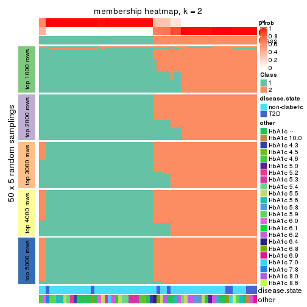
membership_heatmap(res, k = 3)
membership_heatmap(res, k = 4)
membership_heatmap(res, k = 5)
membership_heatmap(res, k = 6)
As soon as we have had the classes for columns, we can look for signatures which are significantly different between classes which can be candidate marks for certain classes. Following are the heatmaps for signatures.
Signature heatmaps where rows are scaled:
get_signatures(res, k = 2)
get_signatures(res, k = 3)
get_signatures(res, k = 4)
get_signatures(res, k = 5)
get_signatures(res, k = 6)
Signature heatmaps where rows are not scaled:
get_signatures(res, k = 2, scale_rows = FALSE)
get_signatures(res, k = 3, scale_rows = FALSE)
get_signatures(res, k = 4, scale_rows = FALSE)
get_signatures(res, k = 5, scale_rows = FALSE)
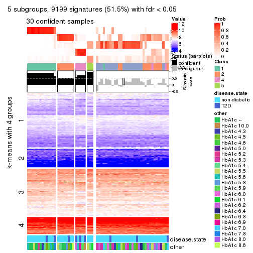
get_signatures(res, k = 6, scale_rows = FALSE)
Compare the overlap of signatures from different k:
compare_signatures(res)
get_signature() returns a data frame invisibly. TO get the list of signatures, the function
call should be assigned to a variable explicitly. In following code, if plot argument is set
to FALSE, no heatmap is plotted while only the differential analysis is performed.
# code only for demonstration
tb = get_signature(res, k = ..., plot = FALSE)
An example of the output of tb is:
#> which_row fdr mean_1 mean_2 scaled_mean_1 scaled_mean_2 km
#> 1 38 0.042760348 8.373488 9.131774 -0.5533452 0.5164555 1
#> 2 40 0.018707592 7.106213 8.469186 -0.6173731 0.5762149 1
#> 3 55 0.019134737 10.221463 11.207825 -0.6159697 0.5749050 1
#> 4 59 0.006059896 5.921854 7.869574 -0.6899429 0.6439467 1
#> 5 60 0.018055526 8.928898 10.211722 -0.6204761 0.5791110 1
#> 6 98 0.009384629 15.714769 14.887706 0.6635654 -0.6193277 2
...
The columns in tb are:
which_row: row indices corresponding to the input matrix.fdr: FDR for the differential test. mean_x: The mean value in group x.scaled_mean_x: The mean value in group x after rows are scaled.km: Row groups if k-means clustering is applied to rows.UMAP plot which shows how samples are separated.
dimension_reduction(res, k = 2, method = "UMAP")
dimension_reduction(res, k = 3, method = "UMAP")
dimension_reduction(res, k = 4, method = "UMAP")
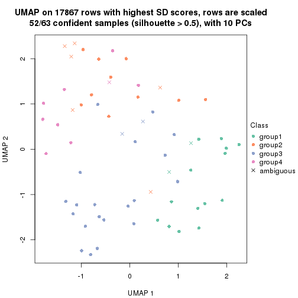
dimension_reduction(res, k = 5, method = "UMAP")
dimension_reduction(res, k = 6, method = "UMAP")
Following heatmap shows how subgroups are split when increasing k:
collect_classes(res)
Test correlation between subgroups and known annotations. If the known annotation is numeric, one-way ANOVA test is applied, and if the known annotation is discrete, chi-squared contingency table test is applied.
test_to_known_factors(res)
#> n disease.state(p) other(p) k
#> SD:kmeans 60 0.120 0.2790 2
#> SD:kmeans 57 0.487 0.2882 3
#> SD:kmeans 52 0.151 0.3057 4
#> SD:kmeans 31 0.151 0.0607 5
#> SD:kmeans 50 0.026 0.0876 6
If matrix rows can be associated to genes, consider to use GO_Enrichment(res,
...) to perform function enrichment for the signature genes.
The object with results only for a single top-value method and a single partition method can be extracted as:
res = res_list["SD", "skmeans"]
# you can also extract it by
# res = res_list["SD:skmeans"]
A summary of res and all the functions that can be applied to it:
res
#> A 'ConsensusPartition' object with k = 2, 3, 4, 5, 6.
#> On a matrix with 17867 rows and 63 columns.
#> Top rows (1000, 2000, 3000, 4000, 5000) are extracted by 'SD' method.
#> Subgroups are detected by 'skmeans' method.
#> Performed in total 1250 partitions by row resampling.
#> Best k for subgroups seems to be 2.
#>
#> Following methods can be applied to this 'ConsensusPartition' object:
#> [1] "cola_report" "collect_classes" "collect_plots"
#> [4] "collect_stats" "colnames" "compare_signatures"
#> [7] "consensus_heatmap" "dimension_reduction" "functional_enrichment"
#> [10] "get_anno_col" "get_anno" "get_classes"
#> [13] "get_consensus" "get_matrix" "get_membership"
#> [16] "get_param" "get_signatures" "get_stats"
#> [19] "is_best_k" "is_stable_k" "membership_heatmap"
#> [22] "ncol" "nrow" "plot_ecdf"
#> [25] "rownames" "select_partition_number" "show"
#> [28] "suggest_best_k" "test_to_known_factors"
collect_plots() function collects all the plots made from res for all k (number of partitions)
into one single page to provide an easy and fast comparison between different k.
collect_plots(res)
The plots are:
k and the heatmap of
predicted classes for each k.k.k.k.All the plots in panels can be made by individual functions and they are plotted later in this section.
select_partition_number() produces several plots showing different
statistics for choosing “optimized” k. There are following statistics:
k;k, the area increased is defined as \(A_k - A_{k-1}\).The detailed explanations of these statistics can be found in the cola vignette.
Generally speaking, lower PAC score, higher mean silhouette score or higher
concordance corresponds to better partition. Rand index and Jaccard index
measure how similar the current partition is compared to partition with k-1.
If they are too similar, we won't accept k is better than k-1.
select_partition_number(res)
The numeric values for all these statistics can be obtained by get_stats().
get_stats(res)
#> k 1-PAC mean_silhouette concordance area_increased Rand Jaccard
#> 2 2 1.000 0.964 0.986 0.5081 0.492 0.492
#> 3 3 0.882 0.916 0.964 0.3220 0.702 0.466
#> 4 4 0.695 0.572 0.772 0.1111 0.938 0.816
#> 5 5 0.712 0.635 0.791 0.0682 0.859 0.548
#> 6 6 0.745 0.544 0.756 0.0370 0.922 0.651
suggest_best_k() suggests the best \(k\) based on these statistics. The rules are as follows:
NA.suggest_best_k(res)
#> [1] 2
Following shows the table of the partitions (You need to click the show/hide
code output link to see it). The membership matrix (columns with name p*)
is inferred by
clue::cl_consensus()
function with the SE method. Basically the value in the membership matrix
represents the probability to belong to a certain group. The finall class
label for an item is determined with the group with highest probability it
belongs to.
In get_classes() function, the entropy is calculated from the membership
matrix and the silhouette score is calculated from the consensus matrix.
cbind(get_classes(res, k = 2), get_membership(res, k = 2))
#> class entropy silhouette p1 p2
#> GSM946745 2 0.0000 0.973 0.000 1.000
#> GSM946739 2 0.0000 0.973 0.000 1.000
#> GSM946738 2 0.0000 0.973 0.000 1.000
#> GSM946746 2 0.0000 0.973 0.000 1.000
#> GSM946747 1 0.0000 0.998 1.000 0.000
#> GSM946711 2 0.0000 0.973 0.000 1.000
#> GSM946760 2 0.0000 0.973 0.000 1.000
#> GSM946710 1 0.0000 0.998 1.000 0.000
#> GSM946761 2 0.0000 0.973 0.000 1.000
#> GSM946701 1 0.0000 0.998 1.000 0.000
#> GSM946703 1 0.0000 0.998 1.000 0.000
#> GSM946704 2 0.0000 0.973 0.000 1.000
#> GSM946706 1 0.0000 0.998 1.000 0.000
#> GSM946708 2 0.0000 0.973 0.000 1.000
#> GSM946709 2 0.0000 0.973 0.000 1.000
#> GSM946712 2 0.0000 0.973 0.000 1.000
#> GSM946720 1 0.0000 0.998 1.000 0.000
#> GSM946722 2 0.0000 0.973 0.000 1.000
#> GSM946753 1 0.0000 0.998 1.000 0.000
#> GSM946762 1 0.0000 0.998 1.000 0.000
#> GSM946707 1 0.0000 0.998 1.000 0.000
#> GSM946721 1 0.0000 0.998 1.000 0.000
#> GSM946719 1 0.0000 0.998 1.000 0.000
#> GSM946716 1 0.0000 0.998 1.000 0.000
#> GSM946751 2 0.9732 0.347 0.404 0.596
#> GSM946740 2 0.0000 0.973 0.000 1.000
#> GSM946741 1 0.0000 0.998 1.000 0.000
#> GSM946718 1 0.0000 0.998 1.000 0.000
#> GSM946737 1 0.0000 0.998 1.000 0.000
#> GSM946742 1 0.0000 0.998 1.000 0.000
#> GSM946749 1 0.0000 0.998 1.000 0.000
#> GSM946702 2 0.0000 0.973 0.000 1.000
#> GSM946713 1 0.0000 0.998 1.000 0.000
#> GSM946723 1 0.0000 0.998 1.000 0.000
#> GSM946736 1 0.0000 0.998 1.000 0.000
#> GSM946705 1 0.0000 0.998 1.000 0.000
#> GSM946715 1 0.0000 0.998 1.000 0.000
#> GSM946726 2 0.0000 0.973 0.000 1.000
#> GSM946727 2 0.0000 0.973 0.000 1.000
#> GSM946748 2 0.0000 0.973 0.000 1.000
#> GSM946756 1 0.0000 0.998 1.000 0.000
#> GSM946724 2 0.0000 0.973 0.000 1.000
#> GSM946733 1 0.0000 0.998 1.000 0.000
#> GSM946734 2 0.0000 0.973 0.000 1.000
#> GSM946754 1 0.0000 0.998 1.000 0.000
#> GSM946700 2 0.0000 0.973 0.000 1.000
#> GSM946714 2 0.0000 0.973 0.000 1.000
#> GSM946729 2 0.0000 0.973 0.000 1.000
#> GSM946731 1 0.0376 0.994 0.996 0.004
#> GSM946743 1 0.0000 0.998 1.000 0.000
#> GSM946744 2 0.0000 0.973 0.000 1.000
#> GSM946730 2 0.9732 0.347 0.404 0.596
#> GSM946755 1 0.3584 0.925 0.932 0.068
#> GSM946717 1 0.0000 0.998 1.000 0.000
#> GSM946725 2 0.0000 0.973 0.000 1.000
#> GSM946728 2 0.0000 0.973 0.000 1.000
#> GSM946752 1 0.0000 0.998 1.000 0.000
#> GSM946757 2 0.0000 0.973 0.000 1.000
#> GSM946758 2 0.0000 0.973 0.000 1.000
#> GSM946759 2 0.1633 0.951 0.024 0.976
#> GSM946732 1 0.0000 0.998 1.000 0.000
#> GSM946750 2 0.0000 0.973 0.000 1.000
#> GSM946735 2 0.0000 0.973 0.000 1.000
cbind(get_classes(res, k = 3), get_membership(res, k = 3))
#> class entropy silhouette p1 p2 p3
#> GSM946745 3 0.4974 0.6810 0.000 0.236 0.764
#> GSM946739 2 0.0000 0.9896 0.000 1.000 0.000
#> GSM946738 3 0.0000 0.9395 0.000 0.000 1.000
#> GSM946746 2 0.0000 0.9896 0.000 1.000 0.000
#> GSM946747 1 0.0000 0.9420 1.000 0.000 0.000
#> GSM946711 2 0.0000 0.9896 0.000 1.000 0.000
#> GSM946760 2 0.0000 0.9896 0.000 1.000 0.000
#> GSM946710 1 0.0000 0.9420 1.000 0.000 0.000
#> GSM946761 2 0.0000 0.9896 0.000 1.000 0.000
#> GSM946701 1 0.0000 0.9420 1.000 0.000 0.000
#> GSM946703 1 0.0000 0.9420 1.000 0.000 0.000
#> GSM946704 2 0.0000 0.9896 0.000 1.000 0.000
#> GSM946706 3 0.0000 0.9395 0.000 0.000 1.000
#> GSM946708 2 0.0000 0.9896 0.000 1.000 0.000
#> GSM946709 2 0.0000 0.9896 0.000 1.000 0.000
#> GSM946712 2 0.0000 0.9896 0.000 1.000 0.000
#> GSM946720 1 0.0000 0.9420 1.000 0.000 0.000
#> GSM946722 1 0.6305 0.0302 0.516 0.484 0.000
#> GSM946753 1 0.0000 0.9420 1.000 0.000 0.000
#> GSM946762 1 0.0000 0.9420 1.000 0.000 0.000
#> GSM946707 3 0.3879 0.8298 0.152 0.000 0.848
#> GSM946721 1 0.0000 0.9420 1.000 0.000 0.000
#> GSM946719 3 0.0000 0.9395 0.000 0.000 1.000
#> GSM946716 3 0.3551 0.8499 0.132 0.000 0.868
#> GSM946751 3 0.0000 0.9395 0.000 0.000 1.000
#> GSM946740 2 0.0000 0.9896 0.000 1.000 0.000
#> GSM946741 1 0.0000 0.9420 1.000 0.000 0.000
#> GSM946718 3 0.3752 0.8383 0.144 0.000 0.856
#> GSM946737 1 0.4555 0.7151 0.800 0.000 0.200
#> GSM946742 3 0.0000 0.9395 0.000 0.000 1.000
#> GSM946749 3 0.5760 0.5507 0.328 0.000 0.672
#> GSM946702 2 0.0000 0.9896 0.000 1.000 0.000
#> GSM946713 3 0.3482 0.8534 0.128 0.000 0.872
#> GSM946723 1 0.0000 0.9420 1.000 0.000 0.000
#> GSM946736 3 0.0000 0.9395 0.000 0.000 1.000
#> GSM946705 3 0.0000 0.9395 0.000 0.000 1.000
#> GSM946715 1 0.0000 0.9420 1.000 0.000 0.000
#> GSM946726 2 0.0000 0.9896 0.000 1.000 0.000
#> GSM946727 3 0.1643 0.9095 0.000 0.044 0.956
#> GSM946748 2 0.0237 0.9857 0.004 0.996 0.000
#> GSM946756 3 0.0000 0.9395 0.000 0.000 1.000
#> GSM946724 2 0.0000 0.9896 0.000 1.000 0.000
#> GSM946733 1 0.0000 0.9420 1.000 0.000 0.000
#> GSM946734 2 0.4555 0.7330 0.000 0.800 0.200
#> GSM946754 1 0.0000 0.9420 1.000 0.000 0.000
#> GSM946700 2 0.0000 0.9896 0.000 1.000 0.000
#> GSM946714 2 0.0000 0.9896 0.000 1.000 0.000
#> GSM946729 2 0.0000 0.9896 0.000 1.000 0.000
#> GSM946731 1 0.0000 0.9420 1.000 0.000 0.000
#> GSM946743 1 0.0000 0.9420 1.000 0.000 0.000
#> GSM946744 2 0.0000 0.9896 0.000 1.000 0.000
#> GSM946730 3 0.0000 0.9395 0.000 0.000 1.000
#> GSM946755 3 0.0000 0.9395 0.000 0.000 1.000
#> GSM946717 3 0.0000 0.9395 0.000 0.000 1.000
#> GSM946725 3 0.0424 0.9350 0.000 0.008 0.992
#> GSM946728 2 0.0000 0.9896 0.000 1.000 0.000
#> GSM946752 3 0.0000 0.9395 0.000 0.000 1.000
#> GSM946757 2 0.0000 0.9896 0.000 1.000 0.000
#> GSM946758 2 0.0000 0.9896 0.000 1.000 0.000
#> GSM946759 3 0.0237 0.9375 0.000 0.004 0.996
#> GSM946732 1 0.4399 0.7332 0.812 0.000 0.188
#> GSM946750 3 0.0000 0.9395 0.000 0.000 1.000
#> GSM946735 2 0.0000 0.9896 0.000 1.000 0.000
cbind(get_classes(res, k = 4), get_membership(res, k = 4))
#> class entropy silhouette p1 p2 p3 p4
#> GSM946745 4 0.6078 0.3312 0.000 0.152 0.164 0.684
#> GSM946739 2 0.0000 0.5742 0.000 1.000 0.000 0.000
#> GSM946738 3 0.4188 0.7039 0.000 0.004 0.752 0.244
#> GSM946746 2 0.4761 0.4209 0.000 0.628 0.000 0.372
#> GSM946747 1 0.0000 0.8983 1.000 0.000 0.000 0.000
#> GSM946711 2 0.0000 0.5742 0.000 1.000 0.000 0.000
#> GSM946760 2 0.4843 0.4084 0.000 0.604 0.000 0.396
#> GSM946710 1 0.0000 0.8983 1.000 0.000 0.000 0.000
#> GSM946761 2 0.0000 0.5742 0.000 1.000 0.000 0.000
#> GSM946701 1 0.0000 0.8983 1.000 0.000 0.000 0.000
#> GSM946703 1 0.0000 0.8983 1.000 0.000 0.000 0.000
#> GSM946704 2 0.4830 0.4122 0.000 0.608 0.000 0.392
#> GSM946706 3 0.0000 0.7737 0.000 0.000 1.000 0.000
#> GSM946708 2 0.0188 0.5742 0.000 0.996 0.000 0.004
#> GSM946709 4 0.4998 -0.5189 0.000 0.488 0.000 0.512
#> GSM946712 2 0.2281 0.5201 0.000 0.904 0.000 0.096
#> GSM946720 1 0.0000 0.8983 1.000 0.000 0.000 0.000
#> GSM946722 1 0.7845 -0.0997 0.404 0.304 0.000 0.292
#> GSM946753 1 0.0000 0.8983 1.000 0.000 0.000 0.000
#> GSM946762 1 0.0000 0.8983 1.000 0.000 0.000 0.000
#> GSM946707 3 0.4153 0.7200 0.132 0.000 0.820 0.048
#> GSM946721 1 0.0000 0.8983 1.000 0.000 0.000 0.000
#> GSM946719 3 0.3942 0.7114 0.000 0.000 0.764 0.236
#> GSM946716 3 0.3818 0.7084 0.108 0.000 0.844 0.048
#> GSM946751 3 0.3975 0.7091 0.000 0.000 0.760 0.240
#> GSM946740 2 0.4961 0.3967 0.000 0.552 0.000 0.448
#> GSM946741 1 0.0000 0.8983 1.000 0.000 0.000 0.000
#> GSM946718 3 0.5849 0.5913 0.164 0.000 0.704 0.132
#> GSM946737 1 0.4387 0.6386 0.776 0.000 0.200 0.024
#> GSM946742 3 0.1302 0.7712 0.000 0.000 0.956 0.044
#> GSM946749 3 0.4175 0.6426 0.200 0.000 0.784 0.016
#> GSM946702 2 0.2921 0.5249 0.000 0.860 0.000 0.140
#> GSM946713 3 0.6344 0.5148 0.128 0.000 0.648 0.224
#> GSM946723 1 0.0000 0.8983 1.000 0.000 0.000 0.000
#> GSM946736 3 0.0000 0.7737 0.000 0.000 1.000 0.000
#> GSM946705 3 0.0188 0.7740 0.000 0.000 0.996 0.004
#> GSM946715 1 0.0000 0.8983 1.000 0.000 0.000 0.000
#> GSM946726 2 0.4907 0.4119 0.000 0.580 0.000 0.420
#> GSM946727 4 0.5911 0.0785 0.000 0.372 0.044 0.584
#> GSM946748 2 0.2944 0.5294 0.004 0.868 0.000 0.128
#> GSM946756 4 0.4898 0.0422 0.000 0.000 0.416 0.584
#> GSM946724 2 0.0000 0.5742 0.000 1.000 0.000 0.000
#> GSM946733 1 0.0000 0.8983 1.000 0.000 0.000 0.000
#> GSM946734 2 0.7096 -0.0969 0.000 0.524 0.144 0.332
#> GSM946754 1 0.0000 0.8983 1.000 0.000 0.000 0.000
#> GSM946700 2 0.4961 0.3967 0.000 0.552 0.000 0.448
#> GSM946714 2 0.4948 0.4038 0.000 0.560 0.000 0.440
#> GSM946729 2 0.4866 0.4120 0.000 0.596 0.000 0.404
#> GSM946731 1 0.5028 0.3429 0.596 0.000 0.004 0.400
#> GSM946743 1 0.0000 0.8983 1.000 0.000 0.000 0.000
#> GSM946744 2 0.0000 0.5742 0.000 1.000 0.000 0.000
#> GSM946730 3 0.3975 0.7091 0.000 0.000 0.760 0.240
#> GSM946755 3 0.4088 0.5946 0.000 0.004 0.764 0.232
#> GSM946717 3 0.0000 0.7737 0.000 0.000 1.000 0.000
#> GSM946725 2 0.7221 -0.2372 0.000 0.436 0.140 0.424
#> GSM946728 2 0.4948 0.4038 0.000 0.560 0.000 0.440
#> GSM946752 3 0.0188 0.7727 0.000 0.000 0.996 0.004
#> GSM946757 2 0.4961 0.3967 0.000 0.552 0.000 0.448
#> GSM946758 2 0.1867 0.5599 0.000 0.928 0.000 0.072
#> GSM946759 3 0.7297 0.3568 0.000 0.220 0.536 0.244
#> GSM946732 1 0.6404 0.5157 0.644 0.000 0.136 0.220
#> GSM946750 3 0.4327 0.7131 0.000 0.016 0.768 0.216
#> GSM946735 2 0.2589 0.5088 0.000 0.884 0.000 0.116
cbind(get_classes(res, k = 5), get_membership(res, k = 5))
#> class entropy silhouette p1 p2 p3 p4 p5
#> GSM946745 4 0.6611 0.35993 0.000 0.108 0.112 0.628 0.152
#> GSM946739 2 0.4026 0.75013 0.000 0.736 0.000 0.020 0.244
#> GSM946738 3 0.1981 0.60159 0.000 0.048 0.924 0.028 0.000
#> GSM946746 5 0.5756 0.41336 0.000 0.312 0.000 0.112 0.576
#> GSM946747 1 0.0000 0.93099 1.000 0.000 0.000 0.000 0.000
#> GSM946711 2 0.4026 0.75013 0.000 0.736 0.000 0.020 0.244
#> GSM946760 5 0.4450 0.69625 0.000 0.132 0.000 0.108 0.760
#> GSM946710 1 0.0693 0.91772 0.980 0.008 0.000 0.012 0.000
#> GSM946761 2 0.4026 0.75013 0.000 0.736 0.000 0.020 0.244
#> GSM946701 1 0.0162 0.93100 0.996 0.004 0.000 0.000 0.000
#> GSM946703 1 0.0000 0.93099 1.000 0.000 0.000 0.000 0.000
#> GSM946704 5 0.4255 0.70226 0.000 0.128 0.000 0.096 0.776
#> GSM946706 3 0.4585 0.55112 0.000 0.020 0.628 0.352 0.000
#> GSM946708 2 0.3980 0.73376 0.000 0.708 0.000 0.008 0.284
#> GSM946709 5 0.2522 0.72012 0.000 0.108 0.000 0.012 0.880
#> GSM946712 2 0.2959 0.70824 0.000 0.864 0.000 0.036 0.100
#> GSM946720 1 0.0000 0.93099 1.000 0.000 0.000 0.000 0.000
#> GSM946722 5 0.7310 0.29535 0.220 0.236 0.000 0.052 0.492
#> GSM946753 1 0.0162 0.93100 0.996 0.004 0.000 0.000 0.000
#> GSM946762 1 0.0324 0.92892 0.992 0.004 0.000 0.004 0.000
#> GSM946707 3 0.5602 0.44674 0.072 0.008 0.596 0.324 0.000
#> GSM946721 1 0.0000 0.93099 1.000 0.000 0.000 0.000 0.000
#> GSM946719 3 0.1626 0.62064 0.000 0.016 0.940 0.044 0.000
#> GSM946716 4 0.5588 -0.06401 0.048 0.016 0.364 0.572 0.000
#> GSM946751 3 0.0898 0.62033 0.000 0.020 0.972 0.008 0.000
#> GSM946740 5 0.0290 0.80008 0.000 0.008 0.000 0.000 0.992
#> GSM946741 1 0.0162 0.93100 0.996 0.004 0.000 0.000 0.000
#> GSM946718 4 0.5451 0.21544 0.064 0.016 0.272 0.648 0.000
#> GSM946737 1 0.5194 0.44032 0.672 0.008 0.252 0.068 0.000
#> GSM946742 3 0.2732 0.62099 0.000 0.000 0.840 0.160 0.000
#> GSM946749 4 0.6676 -0.00191 0.160 0.016 0.332 0.492 0.000
#> GSM946702 2 0.4232 0.58095 0.000 0.676 0.000 0.012 0.312
#> GSM946713 4 0.3127 0.40892 0.020 0.004 0.128 0.848 0.000
#> GSM946723 1 0.0162 0.93100 0.996 0.004 0.000 0.000 0.000
#> GSM946736 3 0.4570 0.56298 0.000 0.020 0.632 0.348 0.000
#> GSM946705 3 0.4555 0.56428 0.000 0.020 0.636 0.344 0.000
#> GSM946715 1 0.0162 0.93100 0.996 0.004 0.000 0.000 0.000
#> GSM946726 5 0.2920 0.73122 0.000 0.132 0.000 0.016 0.852
#> GSM946727 4 0.7082 0.22122 0.000 0.276 0.252 0.452 0.020
#> GSM946748 2 0.4096 0.66461 0.004 0.724 0.000 0.012 0.260
#> GSM946756 4 0.6264 0.35823 0.000 0.020 0.212 0.604 0.164
#> GSM946724 2 0.4026 0.75013 0.000 0.736 0.000 0.020 0.244
#> GSM946733 1 0.0000 0.93099 1.000 0.000 0.000 0.000 0.000
#> GSM946734 2 0.4833 0.47666 0.000 0.676 0.284 0.016 0.024
#> GSM946754 1 0.0000 0.93099 1.000 0.000 0.000 0.000 0.000
#> GSM946700 5 0.0451 0.79914 0.000 0.008 0.000 0.004 0.988
#> GSM946714 5 0.0963 0.78895 0.000 0.036 0.000 0.000 0.964
#> GSM946729 5 0.2905 0.76673 0.000 0.096 0.000 0.036 0.868
#> GSM946731 1 0.6493 0.10784 0.480 0.016 0.000 0.124 0.380
#> GSM946743 1 0.0324 0.92853 0.992 0.004 0.000 0.000 0.004
#> GSM946744 2 0.4026 0.75013 0.000 0.736 0.000 0.020 0.244
#> GSM946730 3 0.0609 0.62407 0.000 0.020 0.980 0.000 0.000
#> GSM946755 4 0.2361 0.42340 0.000 0.012 0.096 0.892 0.000
#> GSM946717 3 0.4585 0.55869 0.000 0.020 0.628 0.352 0.000
#> GSM946725 2 0.3593 0.60355 0.000 0.824 0.116 0.060 0.000
#> GSM946728 5 0.0609 0.79740 0.000 0.020 0.000 0.000 0.980
#> GSM946752 3 0.4682 0.45665 0.000 0.016 0.564 0.420 0.000
#> GSM946757 5 0.0162 0.80034 0.000 0.004 0.000 0.000 0.996
#> GSM946758 2 0.4088 0.67397 0.000 0.632 0.000 0.000 0.368
#> GSM946759 3 0.4877 0.41711 0.000 0.236 0.692 0.072 0.000
#> GSM946732 4 0.4730 0.17496 0.416 0.004 0.012 0.568 0.000
#> GSM946750 3 0.3693 0.53318 0.000 0.080 0.828 0.088 0.004
#> GSM946735 2 0.3693 0.69351 0.000 0.836 0.024 0.036 0.104
cbind(get_classes(res, k = 6), get_membership(res, k = 6))
#> class entropy silhouette p1 p2 p3 p4 p5 p6
#> GSM946745 4 0.4596 0.46585 0.000 0.072 0.024 0.776 0.080 0.048
#> GSM946739 2 0.0146 0.62487 0.000 0.996 0.000 0.000 0.004 0.000
#> GSM946738 6 0.3855 0.67421 0.000 0.012 0.204 0.016 0.008 0.760
#> GSM946746 2 0.6921 -0.16378 0.000 0.388 0.000 0.268 0.288 0.056
#> GSM946747 1 0.0405 0.90254 0.988 0.000 0.000 0.008 0.000 0.004
#> GSM946711 2 0.0146 0.62463 0.000 0.996 0.000 0.000 0.004 0.000
#> GSM946760 5 0.5979 0.39228 0.000 0.352 0.000 0.232 0.416 0.000
#> GSM946710 1 0.2457 0.83524 0.904 0.000 0.012 0.036 0.016 0.032
#> GSM946761 2 0.0146 0.62463 0.000 0.996 0.000 0.000 0.004 0.000
#> GSM946701 1 0.0146 0.90536 0.996 0.000 0.000 0.000 0.000 0.004
#> GSM946703 1 0.0146 0.90505 0.996 0.000 0.000 0.004 0.000 0.000
#> GSM946704 5 0.5887 0.36545 0.000 0.396 0.000 0.200 0.404 0.000
#> GSM946706 3 0.3403 0.59796 0.000 0.000 0.768 0.020 0.000 0.212
#> GSM946708 2 0.1745 0.60196 0.000 0.920 0.000 0.012 0.068 0.000
#> GSM946709 5 0.2797 0.63957 0.000 0.064 0.000 0.036 0.876 0.024
#> GSM946712 2 0.6988 0.43193 0.000 0.488 0.000 0.180 0.188 0.144
#> GSM946720 1 0.0291 0.90463 0.992 0.000 0.000 0.004 0.000 0.004
#> GSM946722 5 0.6795 0.17941 0.080 0.024 0.000 0.192 0.556 0.148
#> GSM946753 1 0.0000 0.90525 1.000 0.000 0.000 0.000 0.000 0.000
#> GSM946762 1 0.0767 0.89370 0.976 0.000 0.000 0.008 0.004 0.012
#> GSM946707 3 0.4553 0.55230 0.064 0.000 0.728 0.028 0.000 0.180
#> GSM946721 1 0.0146 0.90536 0.996 0.000 0.000 0.000 0.000 0.004
#> GSM946719 6 0.3884 0.65367 0.000 0.000 0.240 0.036 0.000 0.724
#> GSM946716 3 0.3210 0.62785 0.040 0.000 0.844 0.096 0.000 0.020
#> GSM946751 6 0.2631 0.70002 0.000 0.000 0.180 0.000 0.000 0.820
#> GSM946740 5 0.2482 0.72530 0.000 0.148 0.000 0.004 0.848 0.000
#> GSM946741 1 0.0000 0.90525 1.000 0.000 0.000 0.000 0.000 0.000
#> GSM946718 3 0.4334 0.44113 0.024 0.000 0.708 0.240 0.000 0.028
#> GSM946737 1 0.5526 0.24158 0.556 0.000 0.332 0.020 0.000 0.092
#> GSM946742 3 0.4263 -0.10498 0.000 0.000 0.504 0.016 0.000 0.480
#> GSM946749 3 0.2744 0.60985 0.072 0.000 0.864 0.064 0.000 0.000
#> GSM946702 2 0.6680 0.27643 0.000 0.408 0.000 0.116 0.388 0.088
#> GSM946713 3 0.4378 -0.03625 0.016 0.000 0.528 0.452 0.000 0.004
#> GSM946723 1 0.0260 0.90268 0.992 0.000 0.000 0.008 0.000 0.000
#> GSM946736 3 0.2653 0.64785 0.000 0.000 0.844 0.012 0.000 0.144
#> GSM946705 3 0.2653 0.64785 0.000 0.000 0.844 0.012 0.000 0.144
#> GSM946715 1 0.0000 0.90525 1.000 0.000 0.000 0.000 0.000 0.000
#> GSM946726 2 0.3998 -0.34595 0.000 0.504 0.000 0.004 0.492 0.000
#> GSM946727 4 0.6453 -0.00926 0.000 0.044 0.020 0.444 0.088 0.404
#> GSM946748 2 0.5780 0.45948 0.004 0.592 0.000 0.080 0.276 0.048
#> GSM946756 4 0.5724 0.40493 0.000 0.000 0.076 0.644 0.116 0.164
#> GSM946724 2 0.0146 0.62463 0.000 0.996 0.000 0.000 0.004 0.000
#> GSM946733 1 0.0146 0.90505 0.996 0.000 0.000 0.004 0.000 0.000
#> GSM946734 6 0.6714 0.13941 0.000 0.296 0.020 0.092 0.080 0.512
#> GSM946754 1 0.0146 0.90536 0.996 0.000 0.000 0.000 0.000 0.004
#> GSM946700 5 0.2504 0.72556 0.000 0.136 0.000 0.004 0.856 0.004
#> GSM946714 5 0.2823 0.69232 0.000 0.204 0.000 0.000 0.796 0.000
#> GSM946729 5 0.5145 0.59254 0.000 0.264 0.000 0.096 0.628 0.012
#> GSM946731 1 0.6400 -0.18317 0.364 0.000 0.004 0.260 0.364 0.008
#> GSM946743 1 0.0725 0.89267 0.976 0.000 0.000 0.012 0.012 0.000
#> GSM946744 2 0.0146 0.62463 0.000 0.996 0.000 0.000 0.004 0.000
#> GSM946730 6 0.2871 0.69409 0.000 0.000 0.192 0.004 0.000 0.804
#> GSM946755 4 0.4343 0.16415 0.000 0.000 0.380 0.592 0.000 0.028
#> GSM946717 3 0.2572 0.65147 0.000 0.000 0.852 0.012 0.000 0.136
#> GSM946725 2 0.7563 0.17579 0.000 0.368 0.028 0.208 0.076 0.320
#> GSM946728 5 0.2562 0.71530 0.000 0.172 0.000 0.000 0.828 0.000
#> GSM946752 3 0.2560 0.66808 0.000 0.000 0.872 0.036 0.000 0.092
#> GSM946757 5 0.2362 0.72593 0.000 0.136 0.000 0.004 0.860 0.000
#> GSM946758 2 0.3533 0.52897 0.000 0.776 0.000 0.020 0.196 0.008
#> GSM946759 6 0.6289 0.51594 0.000 0.096 0.228 0.096 0.004 0.576
#> GSM946732 4 0.6222 0.15095 0.336 0.000 0.288 0.372 0.000 0.004
#> GSM946750 6 0.5785 0.56468 0.000 0.072 0.240 0.080 0.000 0.608
#> GSM946735 2 0.7260 0.39551 0.000 0.440 0.000 0.180 0.184 0.196
Heatmaps for the consensus matrix. It visualizes the probability of two samples to be in a same group.
consensus_heatmap(res, k = 2)
consensus_heatmap(res, k = 3)
consensus_heatmap(res, k = 4)
consensus_heatmap(res, k = 5)
consensus_heatmap(res, k = 6)

Heatmaps for the membership of samples in all partitions to see how consistent they are:
membership_heatmap(res, k = 2)
membership_heatmap(res, k = 3)
membership_heatmap(res, k = 4)
membership_heatmap(res, k = 5)
membership_heatmap(res, k = 6)
As soon as we have had the classes for columns, we can look for signatures which are significantly different between classes which can be candidate marks for certain classes. Following are the heatmaps for signatures.
Signature heatmaps where rows are scaled:
get_signatures(res, k = 2)
get_signatures(res, k = 3)
get_signatures(res, k = 4)
get_signatures(res, k = 5)
get_signatures(res, k = 6)
Signature heatmaps where rows are not scaled:
get_signatures(res, k = 2, scale_rows = FALSE)

get_signatures(res, k = 3, scale_rows = FALSE)
get_signatures(res, k = 4, scale_rows = FALSE)
get_signatures(res, k = 5, scale_rows = FALSE)
get_signatures(res, k = 6, scale_rows = FALSE)
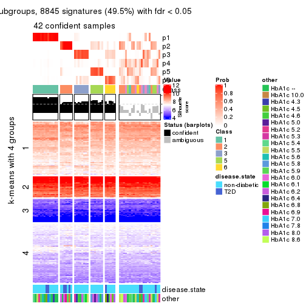
Compare the overlap of signatures from different k:
compare_signatures(res)
get_signature() returns a data frame invisibly. TO get the list of signatures, the function
call should be assigned to a variable explicitly. In following code, if plot argument is set
to FALSE, no heatmap is plotted while only the differential analysis is performed.
# code only for demonstration
tb = get_signature(res, k = ..., plot = FALSE)
An example of the output of tb is:
#> which_row fdr mean_1 mean_2 scaled_mean_1 scaled_mean_2 km
#> 1 38 0.042760348 8.373488 9.131774 -0.5533452 0.5164555 1
#> 2 40 0.018707592 7.106213 8.469186 -0.6173731 0.5762149 1
#> 3 55 0.019134737 10.221463 11.207825 -0.6159697 0.5749050 1
#> 4 59 0.006059896 5.921854 7.869574 -0.6899429 0.6439467 1
#> 5 60 0.018055526 8.928898 10.211722 -0.6204761 0.5791110 1
#> 6 98 0.009384629 15.714769 14.887706 0.6635654 -0.6193277 2
...
The columns in tb are:
which_row: row indices corresponding to the input matrix.fdr: FDR for the differential test. mean_x: The mean value in group x.scaled_mean_x: The mean value in group x after rows are scaled.km: Row groups if k-means clustering is applied to rows.UMAP plot which shows how samples are separated.
dimension_reduction(res, k = 2, method = "UMAP")
dimension_reduction(res, k = 3, method = "UMAP")
dimension_reduction(res, k = 4, method = "UMAP")
dimension_reduction(res, k = 5, method = "UMAP")
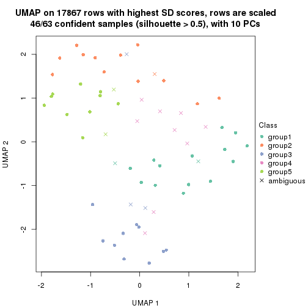
dimension_reduction(res, k = 6, method = "UMAP")
Following heatmap shows how subgroups are split when increasing k:
collect_classes(res)
Test correlation between subgroups and known annotations. If the known annotation is numeric, one-way ANOVA test is applied, and if the known annotation is discrete, chi-squared contingency table test is applied.
test_to_known_factors(res)
#> n disease.state(p) other(p) k
#> SD:skmeans 61 0.134 0.282 2
#> SD:skmeans 62 0.451 0.284 3
#> SD:skmeans 44 0.270 0.420 4
#> SD:skmeans 46 0.724 0.262 5
#> SD:skmeans 42 0.126 0.125 6
If matrix rows can be associated to genes, consider to use GO_Enrichment(res,
...) to perform function enrichment for the signature genes.
The object with results only for a single top-value method and a single partition method can be extracted as:
res = res_list["SD", "pam"]
# you can also extract it by
# res = res_list["SD:pam"]
A summary of res and all the functions that can be applied to it:
res
#> A 'ConsensusPartition' object with k = 2, 3, 4, 5, 6.
#> On a matrix with 17867 rows and 63 columns.
#> Top rows (1000, 2000, 3000, 4000, 5000) are extracted by 'SD' method.
#> Subgroups are detected by 'pam' method.
#> Performed in total 1250 partitions by row resampling.
#> Best k for subgroups seems to be 2.
#>
#> Following methods can be applied to this 'ConsensusPartition' object:
#> [1] "cola_report" "collect_classes" "collect_plots"
#> [4] "collect_stats" "colnames" "compare_signatures"
#> [7] "consensus_heatmap" "dimension_reduction" "functional_enrichment"
#> [10] "get_anno_col" "get_anno" "get_classes"
#> [13] "get_consensus" "get_matrix" "get_membership"
#> [16] "get_param" "get_signatures" "get_stats"
#> [19] "is_best_k" "is_stable_k" "membership_heatmap"
#> [22] "ncol" "nrow" "plot_ecdf"
#> [25] "rownames" "select_partition_number" "show"
#> [28] "suggest_best_k" "test_to_known_factors"
collect_plots() function collects all the plots made from res for all k (number of partitions)
into one single page to provide an easy and fast comparison between different k.
collect_plots(res)
The plots are:
k and the heatmap of
predicted classes for each k.k.k.k.All the plots in panels can be made by individual functions and they are plotted later in this section.
select_partition_number() produces several plots showing different
statistics for choosing “optimized” k. There are following statistics:
k;k, the area increased is defined as \(A_k - A_{k-1}\).The detailed explanations of these statistics can be found in the cola vignette.
Generally speaking, lower PAC score, higher mean silhouette score or higher
concordance corresponds to better partition. Rand index and Jaccard index
measure how similar the current partition is compared to partition with k-1.
If they are too similar, we won't accept k is better than k-1.
select_partition_number(res)
The numeric values for all these statistics can be obtained by get_stats().
get_stats(res)
#> k 1-PAC mean_silhouette concordance area_increased Rand Jaccard
#> 2 2 0.903 0.865 0.942 0.3903 0.600 0.600
#> 3 3 0.843 0.835 0.936 0.4494 0.817 0.699
#> 4 4 0.591 0.575 0.813 0.1595 0.888 0.749
#> 5 5 0.665 0.584 0.832 0.0779 0.844 0.611
#> 6 6 0.754 0.676 0.836 0.0998 0.892 0.654
suggest_best_k() suggests the best \(k\) based on these statistics. The rules are as follows:
NA.suggest_best_k(res)
#> [1] 2
Following shows the table of the partitions (You need to click the show/hide
code output link to see it). The membership matrix (columns with name p*)
is inferred by
clue::cl_consensus()
function with the SE method. Basically the value in the membership matrix
represents the probability to belong to a certain group. The finall class
label for an item is determined with the group with highest probability it
belongs to.
In get_classes() function, the entropy is calculated from the membership
matrix and the silhouette score is calculated from the consensus matrix.
cbind(get_classes(res, k = 2), get_membership(res, k = 2))
#> class entropy silhouette p1 p2
#> GSM946745 2 0.0672 0.9518 0.008 0.992
#> GSM946739 2 0.0000 0.9520 0.000 1.000
#> GSM946738 2 0.0672 0.9518 0.008 0.992
#> GSM946746 2 0.0000 0.9520 0.000 1.000
#> GSM946747 1 0.0000 0.8796 1.000 0.000
#> GSM946711 2 0.0000 0.9520 0.000 1.000
#> GSM946760 2 0.0000 0.9520 0.000 1.000
#> GSM946710 1 0.9996 0.0938 0.512 0.488
#> GSM946761 2 0.0000 0.9520 0.000 1.000
#> GSM946701 1 0.0000 0.8796 1.000 0.000
#> GSM946703 1 0.0000 0.8796 1.000 0.000
#> GSM946704 2 0.0000 0.9520 0.000 1.000
#> GSM946706 2 0.3733 0.9270 0.072 0.928
#> GSM946708 2 0.0000 0.9520 0.000 1.000
#> GSM946709 2 0.0000 0.9520 0.000 1.000
#> GSM946712 2 0.0000 0.9520 0.000 1.000
#> GSM946720 1 0.0000 0.8796 1.000 0.000
#> GSM946722 2 0.2778 0.9374 0.048 0.952
#> GSM946753 1 0.0000 0.8796 1.000 0.000
#> GSM946762 1 0.0000 0.8796 1.000 0.000
#> GSM946707 2 0.4690 0.9051 0.100 0.900
#> GSM946721 1 0.0000 0.8796 1.000 0.000
#> GSM946719 2 0.2778 0.9407 0.048 0.952
#> GSM946716 2 0.4431 0.9127 0.092 0.908
#> GSM946751 2 0.2778 0.9407 0.048 0.952
#> GSM946740 2 0.0000 0.9520 0.000 1.000
#> GSM946741 1 0.0000 0.8796 1.000 0.000
#> GSM946718 2 0.4431 0.9127 0.092 0.908
#> GSM946737 1 0.9970 0.1618 0.532 0.468
#> GSM946742 2 0.2778 0.9407 0.048 0.952
#> GSM946749 1 0.0000 0.8796 1.000 0.000
#> GSM946702 2 0.4161 0.8950 0.084 0.916
#> GSM946713 2 0.4431 0.9127 0.092 0.908
#> GSM946723 1 0.0000 0.8796 1.000 0.000
#> GSM946736 2 0.3431 0.9318 0.064 0.936
#> GSM946705 2 0.4431 0.9127 0.092 0.908
#> GSM946715 1 0.0000 0.8796 1.000 0.000
#> GSM946726 2 0.5294 0.8321 0.120 0.880
#> GSM946727 2 0.0938 0.9515 0.012 0.988
#> GSM946748 2 0.9970 -0.1011 0.468 0.532
#> GSM946756 2 0.2236 0.9453 0.036 0.964
#> GSM946724 2 0.0000 0.9520 0.000 1.000
#> GSM946733 1 0.0000 0.8796 1.000 0.000
#> GSM946734 2 0.0000 0.9520 0.000 1.000
#> GSM946754 1 0.8713 0.5599 0.708 0.292
#> GSM946700 2 0.0000 0.9520 0.000 1.000
#> GSM946714 2 0.0000 0.9520 0.000 1.000
#> GSM946729 2 0.0000 0.9520 0.000 1.000
#> GSM946731 2 0.1414 0.9498 0.020 0.980
#> GSM946743 1 0.0000 0.8796 1.000 0.000
#> GSM946744 2 0.0000 0.9520 0.000 1.000
#> GSM946730 2 0.1184 0.9508 0.016 0.984
#> GSM946755 2 0.2778 0.9407 0.048 0.952
#> GSM946717 2 0.4431 0.9127 0.092 0.908
#> GSM946725 2 0.2778 0.9407 0.048 0.952
#> GSM946728 2 0.0000 0.9520 0.000 1.000
#> GSM946752 2 0.4431 0.9127 0.092 0.908
#> GSM946757 2 0.0000 0.9520 0.000 1.000
#> GSM946758 2 0.0000 0.9520 0.000 1.000
#> GSM946759 2 0.2778 0.9407 0.048 0.952
#> GSM946732 1 0.9996 0.0938 0.512 0.488
#> GSM946750 2 0.0672 0.9518 0.008 0.992
#> GSM946735 2 0.0000 0.9520 0.000 1.000
cbind(get_classes(res, k = 3), get_membership(res, k = 3))
#> class entropy silhouette p1 p2 p3
#> GSM946745 3 0.0000 0.947 0.000 0.000 1.000
#> GSM946739 3 0.2537 0.884 0.000 0.080 0.920
#> GSM946738 3 0.0000 0.947 0.000 0.000 1.000
#> GSM946746 3 0.0000 0.947 0.000 0.000 1.000
#> GSM946747 1 0.0000 0.812 1.000 0.000 0.000
#> GSM946711 2 0.0000 0.994 0.000 1.000 0.000
#> GSM946760 3 0.1411 0.921 0.000 0.036 0.964
#> GSM946710 1 0.6308 0.191 0.508 0.000 0.492
#> GSM946761 2 0.0000 0.994 0.000 1.000 0.000
#> GSM946701 1 0.0000 0.812 1.000 0.000 0.000
#> GSM946703 1 0.0000 0.812 1.000 0.000 0.000
#> GSM946704 2 0.0237 0.991 0.000 0.996 0.004
#> GSM946706 3 0.0000 0.947 0.000 0.000 1.000
#> GSM946708 3 0.6274 0.243 0.000 0.456 0.544
#> GSM946709 3 0.0000 0.947 0.000 0.000 1.000
#> GSM946712 3 0.0000 0.947 0.000 0.000 1.000
#> GSM946720 1 0.0000 0.812 1.000 0.000 0.000
#> GSM946722 3 0.0000 0.947 0.000 0.000 1.000
#> GSM946753 1 0.0000 0.812 1.000 0.000 0.000
#> GSM946762 1 0.0000 0.812 1.000 0.000 0.000
#> GSM946707 3 0.0424 0.941 0.008 0.000 0.992
#> GSM946721 1 0.0000 0.812 1.000 0.000 0.000
#> GSM946719 3 0.0000 0.947 0.000 0.000 1.000
#> GSM946716 3 0.0000 0.947 0.000 0.000 1.000
#> GSM946751 3 0.0000 0.947 0.000 0.000 1.000
#> GSM946740 3 0.6274 0.243 0.000 0.456 0.544
#> GSM946741 1 0.0000 0.812 1.000 0.000 0.000
#> GSM946718 3 0.0000 0.947 0.000 0.000 1.000
#> GSM946737 1 0.6299 0.237 0.524 0.000 0.476
#> GSM946742 3 0.0000 0.947 0.000 0.000 1.000
#> GSM946749 1 0.0000 0.812 1.000 0.000 0.000
#> GSM946702 3 0.2066 0.888 0.060 0.000 0.940
#> GSM946713 3 0.0000 0.947 0.000 0.000 1.000
#> GSM946723 1 0.0000 0.812 1.000 0.000 0.000
#> GSM946736 3 0.0000 0.947 0.000 0.000 1.000
#> GSM946705 3 0.0000 0.947 0.000 0.000 1.000
#> GSM946715 1 0.0000 0.812 1.000 0.000 0.000
#> GSM946726 2 0.1031 0.966 0.000 0.976 0.024
#> GSM946727 3 0.0000 0.947 0.000 0.000 1.000
#> GSM946748 1 0.9299 0.370 0.512 0.196 0.292
#> GSM946756 3 0.0000 0.947 0.000 0.000 1.000
#> GSM946724 2 0.0000 0.994 0.000 1.000 0.000
#> GSM946733 1 0.0000 0.812 1.000 0.000 0.000
#> GSM946734 3 0.0000 0.947 0.000 0.000 1.000
#> GSM946754 1 0.5497 0.568 0.708 0.000 0.292
#> GSM946700 3 0.0000 0.947 0.000 0.000 1.000
#> GSM946714 2 0.0000 0.994 0.000 1.000 0.000
#> GSM946729 3 0.0000 0.947 0.000 0.000 1.000
#> GSM946731 3 0.0000 0.947 0.000 0.000 1.000
#> GSM946743 1 0.0000 0.812 1.000 0.000 0.000
#> GSM946744 2 0.0000 0.994 0.000 1.000 0.000
#> GSM946730 3 0.0000 0.947 0.000 0.000 1.000
#> GSM946755 3 0.0000 0.947 0.000 0.000 1.000
#> GSM946717 3 0.0000 0.947 0.000 0.000 1.000
#> GSM946725 3 0.0000 0.947 0.000 0.000 1.000
#> GSM946728 3 0.6274 0.243 0.000 0.456 0.544
#> GSM946752 3 0.0000 0.947 0.000 0.000 1.000
#> GSM946757 3 0.1411 0.921 0.000 0.036 0.964
#> GSM946758 2 0.0000 0.994 0.000 1.000 0.000
#> GSM946759 3 0.0000 0.947 0.000 0.000 1.000
#> GSM946732 1 0.6308 0.191 0.508 0.000 0.492
#> GSM946750 3 0.0000 0.947 0.000 0.000 1.000
#> GSM946735 3 0.4178 0.781 0.000 0.172 0.828
cbind(get_classes(res, k = 4), get_membership(res, k = 4))
#> class entropy silhouette p1 p2 p3 p4
#> GSM946745 2 0.0000 0.7146 0.000 1.000 0.000 0.000
#> GSM946739 2 0.2578 0.6668 0.000 0.912 0.052 0.036
#> GSM946738 2 0.0000 0.7146 0.000 1.000 0.000 0.000
#> GSM946746 2 0.0592 0.7127 0.000 0.984 0.000 0.016
#> GSM946747 1 0.0000 0.7916 1.000 0.000 0.000 0.000
#> GSM946711 4 0.4972 0.7290 0.000 0.000 0.456 0.544
#> GSM946760 2 0.3266 0.5938 0.000 0.832 0.000 0.168
#> GSM946710 1 0.5000 0.1343 0.504 0.496 0.000 0.000
#> GSM946761 4 0.4972 0.7290 0.000 0.000 0.456 0.544
#> GSM946701 1 0.0000 0.7916 1.000 0.000 0.000 0.000
#> GSM946703 1 0.0000 0.7916 1.000 0.000 0.000 0.000
#> GSM946704 4 0.0657 0.7635 0.000 0.004 0.012 0.984
#> GSM946706 2 0.4624 -0.1874 0.000 0.660 0.340 0.000
#> GSM946708 4 0.4888 -0.0300 0.000 0.412 0.000 0.588
#> GSM946709 2 0.2704 0.6340 0.000 0.876 0.000 0.124
#> GSM946712 2 0.0592 0.7127 0.000 0.984 0.000 0.016
#> GSM946720 1 0.0000 0.7916 1.000 0.000 0.000 0.000
#> GSM946722 2 0.0672 0.7121 0.008 0.984 0.000 0.008
#> GSM946753 1 0.0000 0.7916 1.000 0.000 0.000 0.000
#> GSM946762 1 0.0000 0.7916 1.000 0.000 0.000 0.000
#> GSM946707 2 0.4800 -0.1983 0.004 0.656 0.340 0.000
#> GSM946721 1 0.0592 0.7825 0.984 0.016 0.000 0.000
#> GSM946719 2 0.3074 0.5143 0.000 0.848 0.152 0.000
#> GSM946716 2 0.4454 -0.0271 0.000 0.692 0.308 0.000
#> GSM946751 2 0.0000 0.7146 0.000 1.000 0.000 0.000
#> GSM946740 4 0.2149 0.7082 0.000 0.088 0.000 0.912
#> GSM946741 1 0.0000 0.7916 1.000 0.000 0.000 0.000
#> GSM946718 2 0.3528 0.4202 0.000 0.808 0.192 0.000
#> GSM946737 1 0.7397 0.0963 0.508 0.292 0.200 0.000
#> GSM946742 2 0.4624 -0.1874 0.000 0.660 0.340 0.000
#> GSM946749 1 0.5167 0.4611 0.644 0.016 0.340 0.000
#> GSM946702 2 0.1940 0.6472 0.076 0.924 0.000 0.000
#> GSM946713 2 0.0000 0.7146 0.000 1.000 0.000 0.000
#> GSM946723 1 0.0000 0.7916 1.000 0.000 0.000 0.000
#> GSM946736 3 0.4972 1.0000 0.000 0.456 0.544 0.000
#> GSM946705 3 0.4972 1.0000 0.000 0.456 0.544 0.000
#> GSM946715 1 0.0000 0.7916 1.000 0.000 0.000 0.000
#> GSM946726 4 0.1151 0.7578 0.000 0.024 0.008 0.968
#> GSM946727 2 0.0000 0.7146 0.000 1.000 0.000 0.000
#> GSM946748 1 0.7385 0.2721 0.508 0.296 0.000 0.196
#> GSM946756 2 0.4134 0.1956 0.000 0.740 0.260 0.000
#> GSM946724 4 0.4972 0.7290 0.000 0.000 0.456 0.544
#> GSM946733 1 0.0000 0.7916 1.000 0.000 0.000 0.000
#> GSM946734 2 0.0592 0.7127 0.000 0.984 0.000 0.016
#> GSM946754 1 0.4769 0.4364 0.684 0.308 0.008 0.000
#> GSM946700 2 0.3486 0.5495 0.000 0.812 0.000 0.188
#> GSM946714 4 0.0000 0.7608 0.000 0.000 0.000 1.000
#> GSM946729 2 0.2814 0.6250 0.000 0.868 0.000 0.132
#> GSM946731 2 0.2408 0.6538 0.000 0.896 0.000 0.104
#> GSM946743 1 0.1022 0.7693 0.968 0.000 0.000 0.032
#> GSM946744 4 0.4972 0.7290 0.000 0.000 0.456 0.544
#> GSM946730 2 0.3528 0.4185 0.000 0.808 0.192 0.000
#> GSM946755 2 0.0000 0.7146 0.000 1.000 0.000 0.000
#> GSM946717 3 0.4972 1.0000 0.000 0.456 0.544 0.000
#> GSM946725 2 0.0000 0.7146 0.000 1.000 0.000 0.000
#> GSM946728 4 0.2149 0.7082 0.000 0.088 0.000 0.912
#> GSM946752 2 0.4624 -0.1874 0.000 0.660 0.340 0.000
#> GSM946757 2 0.3837 0.5083 0.000 0.776 0.000 0.224
#> GSM946758 4 0.2814 0.7581 0.000 0.000 0.132 0.868
#> GSM946759 2 0.0000 0.7146 0.000 1.000 0.000 0.000
#> GSM946732 1 0.5295 0.1375 0.504 0.488 0.008 0.000
#> GSM946750 2 0.4103 0.2172 0.000 0.744 0.256 0.000
#> GSM946735 2 0.3486 0.4735 0.000 0.812 0.000 0.188
cbind(get_classes(res, k = 5), get_membership(res, k = 5))
#> class entropy silhouette p1 p2 p3 p4 p5
#> GSM946745 2 0.0000 0.72937 0.000 1.000 0.000 0.000 0.000
#> GSM946739 2 0.2127 0.67809 0.000 0.892 0.000 0.108 0.000
#> GSM946738 2 0.0000 0.72937 0.000 1.000 0.000 0.000 0.000
#> GSM946746 2 0.0000 0.72937 0.000 1.000 0.000 0.000 0.000
#> GSM946747 1 0.4268 0.87401 0.556 0.000 0.444 0.000 0.000
#> GSM946711 4 0.0000 0.88695 0.000 0.000 0.000 1.000 0.000
#> GSM946760 5 0.4294 0.33518 0.000 0.468 0.000 0.000 0.532
#> GSM946710 2 0.6471 0.01768 0.268 0.496 0.236 0.000 0.000
#> GSM946761 4 0.0000 0.88695 0.000 0.000 0.000 1.000 0.000
#> GSM946701 1 0.4268 0.87401 0.556 0.000 0.444 0.000 0.000
#> GSM946703 1 0.4268 0.87401 0.556 0.000 0.444 0.000 0.000
#> GSM946704 5 0.0794 0.48172 0.000 0.000 0.000 0.028 0.972
#> GSM946706 2 0.4268 0.45736 0.444 0.556 0.000 0.000 0.000
#> GSM946708 5 0.4294 0.33518 0.000 0.468 0.000 0.000 0.532
#> GSM946709 2 0.3932 0.22476 0.000 0.672 0.000 0.000 0.328
#> GSM946712 2 0.0000 0.72937 0.000 1.000 0.000 0.000 0.000
#> GSM946720 1 0.4268 0.87401 0.556 0.000 0.444 0.000 0.000
#> GSM946722 2 0.0000 0.72937 0.000 1.000 0.000 0.000 0.000
#> GSM946753 1 0.4268 0.87401 0.556 0.000 0.444 0.000 0.000
#> GSM946762 1 0.4268 0.87401 0.556 0.000 0.444 0.000 0.000
#> GSM946707 2 0.4268 0.45736 0.444 0.556 0.000 0.000 0.000
#> GSM946721 1 0.4268 0.87401 0.556 0.000 0.444 0.000 0.000
#> GSM946719 2 0.2690 0.67322 0.156 0.844 0.000 0.000 0.000
#> GSM946716 2 0.4192 0.50816 0.404 0.596 0.000 0.000 0.000
#> GSM946751 2 0.0000 0.72937 0.000 1.000 0.000 0.000 0.000
#> GSM946740 5 0.0000 0.50035 0.000 0.000 0.000 0.000 1.000
#> GSM946741 1 0.4268 0.87401 0.556 0.000 0.444 0.000 0.000
#> GSM946718 2 0.3074 0.65262 0.196 0.804 0.000 0.000 0.000
#> GSM946737 1 0.6553 -0.01186 0.472 0.292 0.236 0.000 0.000
#> GSM946742 2 0.4268 0.45736 0.444 0.556 0.000 0.000 0.000
#> GSM946749 1 0.0000 0.06685 1.000 0.000 0.000 0.000 0.000
#> GSM946702 2 0.1626 0.69288 0.044 0.940 0.016 0.000 0.000
#> GSM946713 2 0.0000 0.72937 0.000 1.000 0.000 0.000 0.000
#> GSM946723 1 0.4268 0.87401 0.556 0.000 0.444 0.000 0.000
#> GSM946736 3 0.4268 0.57612 0.444 0.000 0.556 0.000 0.000
#> GSM946705 3 0.4268 0.57612 0.444 0.000 0.556 0.000 0.000
#> GSM946715 1 0.4268 0.87401 0.556 0.000 0.444 0.000 0.000
#> GSM946726 5 0.0290 0.49630 0.000 0.000 0.000 0.008 0.992
#> GSM946727 2 0.0000 0.72937 0.000 1.000 0.000 0.000 0.000
#> GSM946748 2 0.6471 0.01768 0.268 0.496 0.236 0.000 0.000
#> GSM946756 2 0.4045 0.55576 0.356 0.644 0.000 0.000 0.000
#> GSM946724 4 0.0000 0.88695 0.000 0.000 0.000 1.000 0.000
#> GSM946733 1 0.4268 0.87401 0.556 0.000 0.444 0.000 0.000
#> GSM946734 2 0.0000 0.72937 0.000 1.000 0.000 0.000 0.000
#> GSM946754 3 0.6694 -0.46369 0.276 0.292 0.432 0.000 0.000
#> GSM946700 5 0.4150 0.46979 0.000 0.388 0.000 0.000 0.612
#> GSM946714 5 0.0000 0.50035 0.000 0.000 0.000 0.000 1.000
#> GSM946729 5 0.4294 0.33518 0.000 0.468 0.000 0.000 0.532
#> GSM946731 2 0.3983 0.21475 0.000 0.660 0.000 0.000 0.340
#> GSM946743 1 0.6259 0.62614 0.540 0.000 0.248 0.000 0.212
#> GSM946744 4 0.0000 0.88695 0.000 0.000 0.000 1.000 0.000
#> GSM946730 2 0.3074 0.65182 0.196 0.804 0.000 0.000 0.000
#> GSM946755 2 0.0000 0.72937 0.000 1.000 0.000 0.000 0.000
#> GSM946717 3 0.4268 0.57612 0.444 0.000 0.556 0.000 0.000
#> GSM946725 2 0.0000 0.72937 0.000 1.000 0.000 0.000 0.000
#> GSM946728 5 0.0000 0.50035 0.000 0.000 0.000 0.000 1.000
#> GSM946752 2 0.4268 0.45736 0.444 0.556 0.000 0.000 0.000
#> GSM946757 5 0.4150 0.46979 0.000 0.388 0.000 0.000 0.612
#> GSM946758 4 0.4294 0.48465 0.000 0.000 0.000 0.532 0.468
#> GSM946759 2 0.0000 0.72937 0.000 1.000 0.000 0.000 0.000
#> GSM946732 2 0.6500 0.00654 0.276 0.488 0.236 0.000 0.000
#> GSM946750 2 0.3837 0.59101 0.308 0.692 0.000 0.000 0.000
#> GSM946735 2 0.0000 0.72937 0.000 1.000 0.000 0.000 0.000
cbind(get_classes(res, k = 6), get_membership(res, k = 6))
#> class entropy silhouette p1 p2 p3 p4 p5 p6
#> GSM946745 2 0.0000 0.8247 0.000 1.000 0.000 0.000 0.000 0.000
#> GSM946739 2 0.1910 0.7652 0.000 0.892 0.000 0.108 0.000 0.000
#> GSM946738 2 0.0458 0.8203 0.000 0.984 0.016 0.000 0.000 0.000
#> GSM946746 2 0.0000 0.8247 0.000 1.000 0.000 0.000 0.000 0.000
#> GSM946747 1 0.2996 0.8395 0.772 0.000 0.228 0.000 0.000 0.000
#> GSM946711 4 0.0000 0.8693 0.000 0.000 0.000 1.000 0.000 0.000
#> GSM946760 5 0.4177 0.3500 0.000 0.468 0.000 0.000 0.520 0.012
#> GSM946710 2 0.4487 0.5233 0.068 0.668 0.264 0.000 0.000 0.000
#> GSM946761 4 0.0000 0.8693 0.000 0.000 0.000 1.000 0.000 0.000
#> GSM946701 1 0.3314 0.8397 0.764 0.000 0.224 0.000 0.000 0.012
#> GSM946703 1 0.0000 0.8471 1.000 0.000 0.000 0.000 0.000 0.000
#> GSM946704 5 0.1074 0.5169 0.000 0.000 0.000 0.028 0.960 0.012
#> GSM946706 3 0.2996 0.6650 0.000 0.000 0.772 0.000 0.000 0.228
#> GSM946708 5 0.3860 0.3480 0.000 0.472 0.000 0.000 0.528 0.000
#> GSM946709 2 0.3531 0.2714 0.000 0.672 0.000 0.000 0.328 0.000
#> GSM946712 2 0.0000 0.8247 0.000 1.000 0.000 0.000 0.000 0.000
#> GSM946720 1 0.0363 0.8440 0.988 0.000 0.000 0.000 0.000 0.012
#> GSM946722 2 0.0000 0.8247 0.000 1.000 0.000 0.000 0.000 0.000
#> GSM946753 1 0.0000 0.8471 1.000 0.000 0.000 0.000 0.000 0.000
#> GSM946762 1 0.3050 0.8350 0.764 0.000 0.236 0.000 0.000 0.000
#> GSM946707 3 0.2996 0.6650 0.000 0.000 0.772 0.000 0.000 0.228
#> GSM946721 1 0.1745 0.7830 0.920 0.000 0.068 0.000 0.000 0.012
#> GSM946719 2 0.3278 0.7115 0.000 0.808 0.152 0.000 0.000 0.040
#> GSM946716 3 0.4500 0.6205 0.000 0.088 0.688 0.000 0.000 0.224
#> GSM946751 2 0.2048 0.7634 0.000 0.880 0.120 0.000 0.000 0.000
#> GSM946740 5 0.0000 0.5403 0.000 0.000 0.000 0.000 1.000 0.000
#> GSM946741 1 0.2996 0.8395 0.772 0.000 0.228 0.000 0.000 0.000
#> GSM946718 3 0.4142 0.5166 0.000 0.232 0.712 0.000 0.000 0.056
#> GSM946737 3 0.1267 0.4974 0.060 0.000 0.940 0.000 0.000 0.000
#> GSM946742 3 0.2996 0.6650 0.000 0.000 0.772 0.000 0.000 0.228
#> GSM946749 3 0.3464 0.5957 0.000 0.000 0.688 0.000 0.000 0.312
#> GSM946702 2 0.0520 0.8195 0.008 0.984 0.008 0.000 0.000 0.000
#> GSM946713 2 0.1141 0.8036 0.000 0.948 0.052 0.000 0.000 0.000
#> GSM946723 1 0.2996 0.8395 0.772 0.000 0.228 0.000 0.000 0.000
#> GSM946736 6 0.0632 1.0000 0.000 0.000 0.024 0.000 0.000 0.976
#> GSM946705 6 0.0632 1.0000 0.000 0.000 0.024 0.000 0.000 0.976
#> GSM946715 1 0.0000 0.8471 1.000 0.000 0.000 0.000 0.000 0.000
#> GSM946726 5 0.0260 0.5365 0.000 0.000 0.000 0.008 0.992 0.000
#> GSM946727 2 0.0000 0.8247 0.000 1.000 0.000 0.000 0.000 0.000
#> GSM946748 2 0.4281 0.5474 0.068 0.704 0.228 0.000 0.000 0.000
#> GSM946756 2 0.5646 0.1644 0.000 0.536 0.244 0.000 0.000 0.220
#> GSM946724 4 0.0000 0.8693 0.000 0.000 0.000 1.000 0.000 0.000
#> GSM946733 1 0.0363 0.8440 0.988 0.000 0.000 0.000 0.000 0.012
#> GSM946734 2 0.1444 0.7920 0.000 0.928 0.072 0.000 0.000 0.000
#> GSM946754 3 0.2762 0.4268 0.196 0.000 0.804 0.000 0.000 0.000
#> GSM946700 5 0.3727 0.4914 0.000 0.388 0.000 0.000 0.612 0.000
#> GSM946714 5 0.0000 0.5403 0.000 0.000 0.000 0.000 1.000 0.000
#> GSM946729 5 0.3860 0.3480 0.000 0.472 0.000 0.000 0.528 0.000
#> GSM946731 2 0.3714 0.2488 0.000 0.656 0.004 0.000 0.340 0.000
#> GSM946743 1 0.4762 0.7374 0.676 0.000 0.176 0.000 0.148 0.000
#> GSM946744 4 0.0000 0.8693 0.000 0.000 0.000 1.000 0.000 0.000
#> GSM946730 2 0.3530 0.6973 0.000 0.792 0.152 0.000 0.000 0.056
#> GSM946755 2 0.0000 0.8247 0.000 1.000 0.000 0.000 0.000 0.000
#> GSM946717 6 0.0632 1.0000 0.000 0.000 0.024 0.000 0.000 0.976
#> GSM946725 2 0.0000 0.8247 0.000 1.000 0.000 0.000 0.000 0.000
#> GSM946728 5 0.0000 0.5403 0.000 0.000 0.000 0.000 1.000 0.000
#> GSM946752 3 0.3189 0.6623 0.000 0.004 0.760 0.000 0.000 0.236
#> GSM946757 5 0.3727 0.4914 0.000 0.388 0.000 0.000 0.612 0.000
#> GSM946758 4 0.3857 0.4370 0.000 0.000 0.000 0.532 0.468 0.000
#> GSM946759 2 0.0000 0.8247 0.000 1.000 0.000 0.000 0.000 0.000
#> GSM946732 3 0.4978 -0.0837 0.068 0.432 0.500 0.000 0.000 0.000
#> GSM946750 2 0.5135 0.4538 0.000 0.616 0.240 0.000 0.000 0.144
#> GSM946735 2 0.0000 0.8247 0.000 1.000 0.000 0.000 0.000 0.000
Heatmaps for the consensus matrix. It visualizes the probability of two samples to be in a same group.
consensus_heatmap(res, k = 2)
consensus_heatmap(res, k = 3)
consensus_heatmap(res, k = 4)
consensus_heatmap(res, k = 5)
consensus_heatmap(res, k = 6)
Heatmaps for the membership of samples in all partitions to see how consistent they are:
membership_heatmap(res, k = 2)
membership_heatmap(res, k = 3)
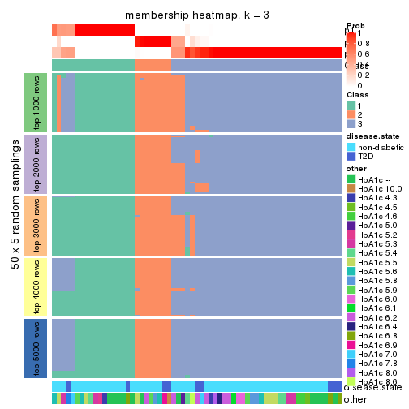
membership_heatmap(res, k = 4)
membership_heatmap(res, k = 5)
membership_heatmap(res, k = 6)
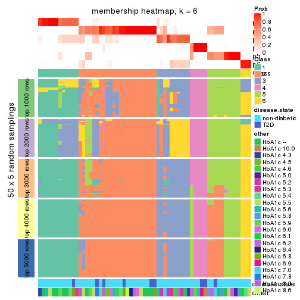
As soon as we have had the classes for columns, we can look for signatures which are significantly different between classes which can be candidate marks for certain classes. Following are the heatmaps for signatures.
Signature heatmaps where rows are scaled:
get_signatures(res, k = 2)
get_signatures(res, k = 3)
get_signatures(res, k = 4)
get_signatures(res, k = 5)
get_signatures(res, k = 6)
Signature heatmaps where rows are not scaled:
get_signatures(res, k = 2, scale_rows = FALSE)
get_signatures(res, k = 3, scale_rows = FALSE)
get_signatures(res, k = 4, scale_rows = FALSE)
get_signatures(res, k = 5, scale_rows = FALSE)
get_signatures(res, k = 6, scale_rows = FALSE)
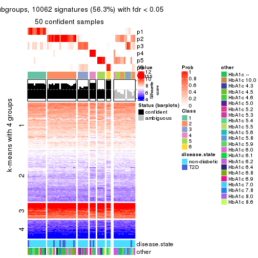
Compare the overlap of signatures from different k:
compare_signatures(res)
get_signature() returns a data frame invisibly. TO get the list of signatures, the function
call should be assigned to a variable explicitly. In following code, if plot argument is set
to FALSE, no heatmap is plotted while only the differential analysis is performed.
# code only for demonstration
tb = get_signature(res, k = ..., plot = FALSE)
An example of the output of tb is:
#> which_row fdr mean_1 mean_2 scaled_mean_1 scaled_mean_2 km
#> 1 38 0.042760348 8.373488 9.131774 -0.5533452 0.5164555 1
#> 2 40 0.018707592 7.106213 8.469186 -0.6173731 0.5762149 1
#> 3 55 0.019134737 10.221463 11.207825 -0.6159697 0.5749050 1
#> 4 59 0.006059896 5.921854 7.869574 -0.6899429 0.6439467 1
#> 5 60 0.018055526 8.928898 10.211722 -0.6204761 0.5791110 1
#> 6 98 0.009384629 15.714769 14.887706 0.6635654 -0.6193277 2
...
The columns in tb are:
which_row: row indices corresponding to the input matrix.fdr: FDR for the differential test. mean_x: The mean value in group x.scaled_mean_x: The mean value in group x after rows are scaled.km: Row groups if k-means clustering is applied to rows.UMAP plot which shows how samples are separated.
dimension_reduction(res, k = 2, method = "UMAP")
dimension_reduction(res, k = 3, method = "UMAP")
dimension_reduction(res, k = 4, method = "UMAP")
dimension_reduction(res, k = 5, method = "UMAP")
dimension_reduction(res, k = 6, method = "UMAP")
Following heatmap shows how subgroups are split when increasing k:
collect_classes(res)
Test correlation between subgroups and known annotations. If the known annotation is numeric, one-way ANOVA test is applied, and if the known annotation is discrete, chi-squared contingency table test is applied.
test_to_known_factors(res)
#> n disease.state(p) other(p) k
#> SD:pam 59 0.722 0.8239 2
#> SD:pam 56 0.512 0.7653 3
#> SD:pam 46 0.579 0.5468 4
#> SD:pam 43 0.270 0.0869 5
#> SD:pam 50 0.139 0.0771 6
If matrix rows can be associated to genes, consider to use GO_Enrichment(res,
...) to perform function enrichment for the signature genes.
The object with results only for a single top-value method and a single partition method can be extracted as:
res = res_list["SD", "mclust"]
# you can also extract it by
# res = res_list["SD:mclust"]
A summary of res and all the functions that can be applied to it:
res
#> A 'ConsensusPartition' object with k = 2, 3, 4, 5, 6.
#> On a matrix with 17867 rows and 63 columns.
#> Top rows (1000, 2000, 3000, 4000, 5000) are extracted by 'SD' method.
#> Subgroups are detected by 'mclust' method.
#> Performed in total 1250 partitions by row resampling.
#> Best k for subgroups seems to be 4.
#>
#> Following methods can be applied to this 'ConsensusPartition' object:
#> [1] "cola_report" "collect_classes" "collect_plots"
#> [4] "collect_stats" "colnames" "compare_signatures"
#> [7] "consensus_heatmap" "dimension_reduction" "functional_enrichment"
#> [10] "get_anno_col" "get_anno" "get_classes"
#> [13] "get_consensus" "get_matrix" "get_membership"
#> [16] "get_param" "get_signatures" "get_stats"
#> [19] "is_best_k" "is_stable_k" "membership_heatmap"
#> [22] "ncol" "nrow" "plot_ecdf"
#> [25] "rownames" "select_partition_number" "show"
#> [28] "suggest_best_k" "test_to_known_factors"
collect_plots() function collects all the plots made from res for all k (number of partitions)
into one single page to provide an easy and fast comparison between different k.
collect_plots(res)
The plots are:
k and the heatmap of
predicted classes for each k.k.k.k.All the plots in panels can be made by individual functions and they are plotted later in this section.
select_partition_number() produces several plots showing different
statistics for choosing “optimized” k. There are following statistics:
k;k, the area increased is defined as \(A_k - A_{k-1}\).The detailed explanations of these statistics can be found in the cola vignette.
Generally speaking, lower PAC score, higher mean silhouette score or higher
concordance corresponds to better partition. Rand index and Jaccard index
measure how similar the current partition is compared to partition with k-1.
If they are too similar, we won't accept k is better than k-1.
select_partition_number(res)
The numeric values for all these statistics can be obtained by get_stats().
get_stats(res)
#> k 1-PAC mean_silhouette concordance area_increased Rand Jaccard
#> 2 2 0.409 0.845 0.852 0.4225 0.529 0.529
#> 3 3 0.767 0.823 0.918 0.5054 0.743 0.544
#> 4 4 0.798 0.887 0.948 0.1003 0.959 0.880
#> 5 5 0.847 0.805 0.894 0.0845 0.914 0.726
#> 6 6 0.816 0.632 0.857 0.0495 0.934 0.752
suggest_best_k() suggests the best \(k\) based on these statistics. The rules are as follows:
NA.suggest_best_k(res)
#> [1] 4
Following shows the table of the partitions (You need to click the show/hide
code output link to see it). The membership matrix (columns with name p*)
is inferred by
clue::cl_consensus()
function with the SE method. Basically the value in the membership matrix
represents the probability to belong to a certain group. The finall class
label for an item is determined with the group with highest probability it
belongs to.
In get_classes() function, the entropy is calculated from the membership
matrix and the silhouette score is calculated from the consensus matrix.
cbind(get_classes(res, k = 2), get_membership(res, k = 2))
#> class entropy silhouette p1 p2
#> GSM946745 1 0.8661 0.846 0.712 0.288
#> GSM946739 2 0.1633 0.949 0.024 0.976
#> GSM946738 1 0.4815 0.795 0.896 0.104
#> GSM946746 2 0.1184 0.955 0.016 0.984
#> GSM946747 1 0.8661 0.845 0.712 0.288
#> GSM946711 2 0.0672 0.939 0.008 0.992
#> GSM946760 2 0.1184 0.955 0.016 0.984
#> GSM946710 1 0.8763 0.844 0.704 0.296
#> GSM946761 2 0.0672 0.939 0.008 0.992
#> GSM946701 1 0.7528 0.831 0.784 0.216
#> GSM946703 1 0.7528 0.831 0.784 0.216
#> GSM946704 2 0.1184 0.955 0.016 0.984
#> GSM946706 1 0.4022 0.801 0.920 0.080
#> GSM946708 2 0.1184 0.955 0.016 0.984
#> GSM946709 2 0.1843 0.943 0.028 0.972
#> GSM946712 2 0.1184 0.955 0.016 0.984
#> GSM946720 1 0.7528 0.831 0.784 0.216
#> GSM946722 1 0.8763 0.844 0.704 0.296
#> GSM946753 1 0.7528 0.831 0.784 0.216
#> GSM946762 1 0.8763 0.844 0.704 0.296
#> GSM946707 1 0.8081 0.851 0.752 0.248
#> GSM946721 1 0.7528 0.831 0.784 0.216
#> GSM946719 1 0.8713 0.845 0.708 0.292
#> GSM946716 1 0.4022 0.801 0.920 0.080
#> GSM946751 1 0.4298 0.806 0.912 0.088
#> GSM946740 2 0.1184 0.955 0.016 0.984
#> GSM946741 1 0.7528 0.831 0.784 0.216
#> GSM946718 1 0.4022 0.801 0.920 0.080
#> GSM946737 1 0.8661 0.846 0.712 0.288
#> GSM946742 1 0.6623 0.837 0.828 0.172
#> GSM946749 1 0.4161 0.804 0.916 0.084
#> GSM946702 2 0.1184 0.955 0.016 0.984
#> GSM946713 1 0.4161 0.804 0.916 0.084
#> GSM946723 1 0.8763 0.844 0.704 0.296
#> GSM946736 1 0.4022 0.801 0.920 0.080
#> GSM946705 1 0.8144 0.851 0.748 0.252
#> GSM946715 1 0.7528 0.831 0.784 0.216
#> GSM946726 2 0.1184 0.955 0.016 0.984
#> GSM946727 1 0.8661 0.846 0.712 0.288
#> GSM946748 1 0.9393 0.776 0.644 0.356
#> GSM946756 1 0.8763 0.844 0.704 0.296
#> GSM946724 2 0.0672 0.939 0.008 0.992
#> GSM946733 1 0.7528 0.831 0.784 0.216
#> GSM946734 2 0.8386 0.477 0.268 0.732
#> GSM946754 1 0.7528 0.831 0.784 0.216
#> GSM946700 2 0.1184 0.955 0.016 0.984
#> GSM946714 2 0.1184 0.955 0.016 0.984
#> GSM946729 2 0.1184 0.955 0.016 0.984
#> GSM946731 1 0.8763 0.844 0.704 0.296
#> GSM946743 1 0.8763 0.844 0.704 0.296
#> GSM946744 2 0.0672 0.939 0.008 0.992
#> GSM946730 1 0.4022 0.801 0.920 0.080
#> GSM946755 1 0.4690 0.811 0.900 0.100
#> GSM946717 1 0.4022 0.801 0.920 0.080
#> GSM946725 2 0.9393 0.149 0.356 0.644
#> GSM946728 2 0.1184 0.955 0.016 0.984
#> GSM946752 1 0.4022 0.801 0.920 0.080
#> GSM946757 2 0.1184 0.955 0.016 0.984
#> GSM946758 2 0.1184 0.955 0.016 0.984
#> GSM946759 1 0.8661 0.846 0.712 0.288
#> GSM946732 1 0.5629 0.824 0.868 0.132
#> GSM946750 1 0.9286 0.395 0.656 0.344
#> GSM946735 2 0.1184 0.955 0.016 0.984
cbind(get_classes(res, k = 3), get_membership(res, k = 3))
#> class entropy silhouette p1 p2 p3
#> GSM946745 3 0.6314 0.473 0.004 0.392 0.604
#> GSM946739 2 0.0000 0.992 0.000 1.000 0.000
#> GSM946738 3 0.0424 0.824 0.000 0.008 0.992
#> GSM946746 2 0.0000 0.992 0.000 1.000 0.000
#> GSM946747 1 0.4634 0.766 0.824 0.164 0.012
#> GSM946711 2 0.0424 0.990 0.008 0.992 0.000
#> GSM946760 2 0.0237 0.992 0.004 0.996 0.000
#> GSM946710 1 0.7192 0.488 0.588 0.380 0.032
#> GSM946761 2 0.0424 0.990 0.008 0.992 0.000
#> GSM946701 1 0.0592 0.846 0.988 0.000 0.012
#> GSM946703 1 0.0592 0.846 0.988 0.000 0.012
#> GSM946704 2 0.0237 0.992 0.004 0.996 0.000
#> GSM946706 3 0.0000 0.826 0.000 0.000 1.000
#> GSM946708 2 0.0000 0.992 0.000 1.000 0.000
#> GSM946709 2 0.0237 0.991 0.000 0.996 0.004
#> GSM946712 2 0.0000 0.992 0.000 1.000 0.000
#> GSM946720 1 0.0592 0.846 0.988 0.000 0.012
#> GSM946722 2 0.0424 0.987 0.000 0.992 0.008
#> GSM946753 1 0.0592 0.846 0.988 0.000 0.012
#> GSM946762 1 0.6490 0.548 0.628 0.360 0.012
#> GSM946707 3 0.0000 0.826 0.000 0.000 1.000
#> GSM946721 1 0.0592 0.846 0.988 0.000 0.012
#> GSM946719 3 0.3686 0.745 0.000 0.140 0.860
#> GSM946716 3 0.0000 0.826 0.000 0.000 1.000
#> GSM946751 3 0.0000 0.826 0.000 0.000 1.000
#> GSM946740 2 0.0237 0.992 0.004 0.996 0.000
#> GSM946741 1 0.0592 0.846 0.988 0.000 0.012
#> GSM946718 3 0.0000 0.826 0.000 0.000 1.000
#> GSM946737 3 0.5397 0.486 0.280 0.000 0.720
#> GSM946742 3 0.0237 0.824 0.004 0.000 0.996
#> GSM946749 3 0.0000 0.826 0.000 0.000 1.000
#> GSM946702 2 0.0237 0.991 0.000 0.996 0.004
#> GSM946713 3 0.0000 0.826 0.000 0.000 1.000
#> GSM946723 1 0.6404 0.577 0.644 0.344 0.012
#> GSM946736 3 0.0000 0.826 0.000 0.000 1.000
#> GSM946705 3 0.0000 0.826 0.000 0.000 1.000
#> GSM946715 1 0.0592 0.846 0.988 0.000 0.012
#> GSM946726 2 0.0237 0.992 0.004 0.996 0.000
#> GSM946727 3 0.6045 0.499 0.000 0.380 0.620
#> GSM946748 2 0.0424 0.987 0.000 0.992 0.008
#> GSM946756 3 0.6282 0.489 0.004 0.384 0.612
#> GSM946724 2 0.0424 0.990 0.008 0.992 0.000
#> GSM946733 1 0.0592 0.846 0.988 0.000 0.012
#> GSM946734 2 0.2066 0.921 0.000 0.940 0.060
#> GSM946754 1 0.0592 0.846 0.988 0.000 0.012
#> GSM946700 2 0.0237 0.992 0.004 0.996 0.000
#> GSM946714 2 0.0000 0.992 0.000 1.000 0.000
#> GSM946729 2 0.0237 0.992 0.004 0.996 0.000
#> GSM946731 3 0.6282 0.489 0.004 0.384 0.612
#> GSM946743 1 0.6282 0.606 0.664 0.324 0.012
#> GSM946744 2 0.0424 0.990 0.008 0.992 0.000
#> GSM946730 3 0.0000 0.826 0.000 0.000 1.000
#> GSM946755 3 0.0424 0.824 0.000 0.008 0.992
#> GSM946717 3 0.0000 0.826 0.000 0.000 1.000
#> GSM946725 3 0.6079 0.487 0.000 0.388 0.612
#> GSM946728 2 0.0000 0.992 0.000 1.000 0.000
#> GSM946752 3 0.0000 0.826 0.000 0.000 1.000
#> GSM946757 2 0.0237 0.992 0.004 0.996 0.000
#> GSM946758 2 0.0000 0.992 0.000 1.000 0.000
#> GSM946759 3 0.6045 0.499 0.000 0.380 0.620
#> GSM946732 3 0.6111 0.215 0.396 0.000 0.604
#> GSM946750 3 0.2860 0.783 0.004 0.084 0.912
#> GSM946735 2 0.0424 0.987 0.000 0.992 0.008
cbind(get_classes(res, k = 4), get_membership(res, k = 4))
#> class entropy silhouette p1 p2 p3 p4
#> GSM946745 3 0.3444 0.755 0.000 0.184 0.816 0.000
#> GSM946739 2 0.0817 0.963 0.000 0.976 0.000 0.024
#> GSM946738 3 0.0188 0.898 0.000 0.004 0.996 0.000
#> GSM946746 2 0.0817 0.963 0.000 0.976 0.000 0.024
#> GSM946747 1 0.2530 0.876 0.888 0.112 0.000 0.000
#> GSM946711 4 0.0707 1.000 0.000 0.020 0.000 0.980
#> GSM946760 2 0.0817 0.963 0.000 0.976 0.000 0.024
#> GSM946710 1 0.3307 0.863 0.868 0.104 0.028 0.000
#> GSM946761 4 0.0707 1.000 0.000 0.020 0.000 0.980
#> GSM946701 1 0.0000 0.933 1.000 0.000 0.000 0.000
#> GSM946703 1 0.0000 0.933 1.000 0.000 0.000 0.000
#> GSM946704 2 0.0817 0.963 0.000 0.976 0.000 0.024
#> GSM946706 3 0.0000 0.900 0.000 0.000 1.000 0.000
#> GSM946708 2 0.0817 0.963 0.000 0.976 0.000 0.024
#> GSM946709 2 0.0707 0.950 0.000 0.980 0.000 0.020
#> GSM946712 2 0.0707 0.950 0.000 0.980 0.000 0.020
#> GSM946720 1 0.0000 0.933 1.000 0.000 0.000 0.000
#> GSM946722 2 0.0707 0.950 0.000 0.980 0.000 0.020
#> GSM946753 1 0.0000 0.933 1.000 0.000 0.000 0.000
#> GSM946762 1 0.2589 0.873 0.884 0.116 0.000 0.000
#> GSM946707 3 0.0000 0.900 0.000 0.000 1.000 0.000
#> GSM946721 1 0.0000 0.933 1.000 0.000 0.000 0.000
#> GSM946719 3 0.0000 0.900 0.000 0.000 1.000 0.000
#> GSM946716 3 0.0000 0.900 0.000 0.000 1.000 0.000
#> GSM946751 3 0.0000 0.900 0.000 0.000 1.000 0.000
#> GSM946740 2 0.0817 0.963 0.000 0.976 0.000 0.024
#> GSM946741 1 0.0000 0.933 1.000 0.000 0.000 0.000
#> GSM946718 3 0.0000 0.900 0.000 0.000 1.000 0.000
#> GSM946737 3 0.4605 0.477 0.336 0.000 0.664 0.000
#> GSM946742 3 0.0000 0.900 0.000 0.000 1.000 0.000
#> GSM946749 3 0.0000 0.900 0.000 0.000 1.000 0.000
#> GSM946702 2 0.0707 0.950 0.000 0.980 0.000 0.020
#> GSM946713 3 0.0000 0.900 0.000 0.000 1.000 0.000
#> GSM946723 1 0.2589 0.873 0.884 0.116 0.000 0.000
#> GSM946736 3 0.0000 0.900 0.000 0.000 1.000 0.000
#> GSM946705 3 0.0000 0.900 0.000 0.000 1.000 0.000
#> GSM946715 1 0.0000 0.933 1.000 0.000 0.000 0.000
#> GSM946726 2 0.0817 0.963 0.000 0.976 0.000 0.024
#> GSM946727 3 0.3606 0.792 0.000 0.140 0.840 0.020
#> GSM946748 2 0.0707 0.950 0.000 0.980 0.000 0.020
#> GSM946756 3 0.2589 0.820 0.000 0.116 0.884 0.000
#> GSM946724 4 0.0707 1.000 0.000 0.020 0.000 0.980
#> GSM946733 1 0.0000 0.933 1.000 0.000 0.000 0.000
#> GSM946734 2 0.4826 0.548 0.000 0.716 0.264 0.020
#> GSM946754 1 0.0000 0.933 1.000 0.000 0.000 0.000
#> GSM946700 2 0.0707 0.962 0.000 0.980 0.000 0.020
#> GSM946714 2 0.0817 0.963 0.000 0.976 0.000 0.024
#> GSM946729 2 0.0469 0.961 0.000 0.988 0.000 0.012
#> GSM946731 3 0.4925 0.301 0.000 0.428 0.572 0.000
#> GSM946743 1 0.2589 0.873 0.884 0.116 0.000 0.000
#> GSM946744 4 0.0707 1.000 0.000 0.020 0.000 0.980
#> GSM946730 3 0.0000 0.900 0.000 0.000 1.000 0.000
#> GSM946755 3 0.0000 0.900 0.000 0.000 1.000 0.000
#> GSM946717 3 0.0000 0.900 0.000 0.000 1.000 0.000
#> GSM946725 3 0.3278 0.814 0.000 0.116 0.864 0.020
#> GSM946728 2 0.0817 0.963 0.000 0.976 0.000 0.024
#> GSM946752 3 0.0000 0.900 0.000 0.000 1.000 0.000
#> GSM946757 2 0.0188 0.959 0.000 0.996 0.000 0.004
#> GSM946758 2 0.0817 0.963 0.000 0.976 0.000 0.024
#> GSM946759 3 0.3105 0.816 0.000 0.120 0.868 0.012
#> GSM946732 3 0.4898 0.279 0.416 0.000 0.584 0.000
#> GSM946750 3 0.0817 0.887 0.000 0.024 0.976 0.000
#> GSM946735 2 0.0707 0.950 0.000 0.980 0.000 0.020
cbind(get_classes(res, k = 5), get_membership(res, k = 5))
#> class entropy silhouette p1 p2 p3 p4 p5
#> GSM946745 3 0.1331 0.8741 0.000 0.040 0.952 0.000 0.008
#> GSM946739 2 0.1626 0.7295 0.000 0.940 0.000 0.044 0.016
#> GSM946738 3 0.0162 0.8969 0.000 0.000 0.996 0.000 0.004
#> GSM946746 2 0.4171 -0.0353 0.000 0.604 0.000 0.000 0.396
#> GSM946747 1 0.0000 0.9775 1.000 0.000 0.000 0.000 0.000
#> GSM946711 4 0.0693 1.0000 0.000 0.008 0.000 0.980 0.012
#> GSM946760 5 0.2629 0.8608 0.000 0.136 0.000 0.004 0.860
#> GSM946710 1 0.2228 0.9106 0.920 0.020 0.044 0.000 0.016
#> GSM946761 4 0.0693 1.0000 0.000 0.008 0.000 0.980 0.012
#> GSM946701 1 0.0000 0.9775 1.000 0.000 0.000 0.000 0.000
#> GSM946703 1 0.0703 0.9742 0.976 0.000 0.000 0.000 0.024
#> GSM946704 5 0.2629 0.8608 0.000 0.136 0.000 0.004 0.860
#> GSM946706 3 0.0000 0.8970 0.000 0.000 1.000 0.000 0.000
#> GSM946708 2 0.3366 0.5176 0.000 0.768 0.000 0.000 0.232
#> GSM946709 2 0.3774 0.3389 0.000 0.704 0.000 0.000 0.296
#> GSM946712 2 0.0510 0.7421 0.000 0.984 0.000 0.000 0.016
#> GSM946720 1 0.0963 0.9696 0.964 0.000 0.000 0.000 0.036
#> GSM946722 2 0.0404 0.7388 0.000 0.988 0.000 0.000 0.012
#> GSM946753 1 0.0404 0.9770 0.988 0.000 0.000 0.000 0.012
#> GSM946762 1 0.1278 0.9561 0.960 0.020 0.004 0.000 0.016
#> GSM946707 3 0.0740 0.8964 0.000 0.004 0.980 0.008 0.008
#> GSM946721 1 0.0963 0.9696 0.964 0.000 0.000 0.000 0.036
#> GSM946719 3 0.0613 0.8960 0.000 0.004 0.984 0.008 0.004
#> GSM946716 3 0.0451 0.8964 0.000 0.004 0.988 0.008 0.000
#> GSM946751 3 0.0566 0.8936 0.000 0.012 0.984 0.000 0.004
#> GSM946740 5 0.3210 0.9157 0.000 0.212 0.000 0.000 0.788
#> GSM946741 1 0.0000 0.9775 1.000 0.000 0.000 0.000 0.000
#> GSM946718 3 0.0451 0.8964 0.000 0.004 0.988 0.008 0.000
#> GSM946737 3 0.4734 0.3464 0.396 0.004 0.588 0.008 0.004
#> GSM946742 3 0.0000 0.8970 0.000 0.000 1.000 0.000 0.000
#> GSM946749 3 0.0807 0.8915 0.000 0.000 0.976 0.012 0.012
#> GSM946702 2 0.0510 0.7421 0.000 0.984 0.000 0.000 0.016
#> GSM946713 3 0.0451 0.8964 0.000 0.004 0.988 0.008 0.000
#> GSM946723 1 0.0162 0.9761 0.996 0.004 0.000 0.000 0.000
#> GSM946736 3 0.0807 0.8915 0.000 0.000 0.976 0.012 0.012
#> GSM946705 3 0.0807 0.8915 0.000 0.000 0.976 0.012 0.012
#> GSM946715 1 0.0510 0.9764 0.984 0.000 0.000 0.000 0.016
#> GSM946726 5 0.3074 0.9054 0.000 0.196 0.000 0.000 0.804
#> GSM946727 2 0.4225 0.3858 0.000 0.632 0.364 0.000 0.004
#> GSM946748 2 0.0404 0.7388 0.000 0.988 0.000 0.000 0.012
#> GSM946756 3 0.2953 0.7878 0.000 0.012 0.844 0.000 0.144
#> GSM946724 4 0.0693 1.0000 0.000 0.008 0.000 0.980 0.012
#> GSM946733 1 0.0963 0.9696 0.964 0.000 0.000 0.000 0.036
#> GSM946734 2 0.2011 0.6902 0.000 0.908 0.088 0.000 0.004
#> GSM946754 1 0.0000 0.9775 1.000 0.000 0.000 0.000 0.000
#> GSM946700 5 0.3210 0.9157 0.000 0.212 0.000 0.000 0.788
#> GSM946714 5 0.3210 0.9157 0.000 0.212 0.000 0.000 0.788
#> GSM946729 5 0.4304 0.3762 0.000 0.484 0.000 0.000 0.516
#> GSM946731 3 0.5964 0.4492 0.088 0.248 0.632 0.000 0.032
#> GSM946743 1 0.0671 0.9703 0.980 0.004 0.000 0.000 0.016
#> GSM946744 4 0.0693 1.0000 0.000 0.008 0.000 0.980 0.012
#> GSM946730 3 0.0162 0.8969 0.000 0.000 0.996 0.000 0.004
#> GSM946755 3 0.0613 0.8960 0.000 0.004 0.984 0.008 0.004
#> GSM946717 3 0.0807 0.8915 0.000 0.000 0.976 0.012 0.012
#> GSM946725 2 0.4166 0.4068 0.000 0.648 0.348 0.000 0.004
#> GSM946728 5 0.3210 0.9157 0.000 0.212 0.000 0.000 0.788
#> GSM946752 3 0.0693 0.8929 0.000 0.000 0.980 0.008 0.012
#> GSM946757 5 0.3210 0.9157 0.000 0.212 0.000 0.000 0.788
#> GSM946758 2 0.3454 0.6177 0.000 0.816 0.000 0.028 0.156
#> GSM946759 3 0.4151 0.4281 0.000 0.344 0.652 0.000 0.004
#> GSM946732 3 0.5054 0.1060 0.472 0.004 0.504 0.008 0.012
#> GSM946750 3 0.0162 0.8969 0.000 0.000 0.996 0.000 0.004
#> GSM946735 2 0.0510 0.7421 0.000 0.984 0.000 0.000 0.016
cbind(get_classes(res, k = 6), get_membership(res, k = 6))
#> class entropy silhouette p1 p2 p3 p4 p5 p6
#> GSM946745 3 0.1398 0.6002 0.000 0.008 0.940 0.000 0.000 0.052
#> GSM946739 2 0.3271 0.6817 0.000 0.760 0.000 0.232 0.008 0.000
#> GSM946738 3 0.0405 0.6448 0.000 0.008 0.988 0.000 0.000 0.004
#> GSM946746 5 0.3862 0.1621 0.000 0.476 0.000 0.000 0.524 0.000
#> GSM946747 1 0.0260 0.8454 0.992 0.000 0.000 0.000 0.000 0.008
#> GSM946711 4 0.0000 1.0000 0.000 0.000 0.000 1.000 0.000 0.000
#> GSM946760 5 0.3620 0.5400 0.000 0.000 0.000 0.000 0.648 0.352
#> GSM946710 1 0.4640 0.5666 0.660 0.284 0.024 0.000 0.000 0.032
#> GSM946761 4 0.0000 1.0000 0.000 0.000 0.000 1.000 0.000 0.000
#> GSM946701 1 0.0363 0.8484 0.988 0.000 0.000 0.000 0.000 0.012
#> GSM946703 1 0.1610 0.8429 0.916 0.000 0.000 0.000 0.000 0.084
#> GSM946704 5 0.3607 0.5426 0.000 0.000 0.000 0.000 0.652 0.348
#> GSM946706 3 0.0458 0.6446 0.000 0.000 0.984 0.000 0.000 0.016
#> GSM946708 2 0.3428 0.4824 0.000 0.696 0.000 0.000 0.304 0.000
#> GSM946709 5 0.4109 0.2956 0.000 0.412 0.000 0.000 0.576 0.012
#> GSM946712 2 0.0260 0.8889 0.000 0.992 0.000 0.000 0.008 0.000
#> GSM946720 1 0.1814 0.8377 0.900 0.000 0.000 0.000 0.000 0.100
#> GSM946722 2 0.1462 0.8855 0.000 0.936 0.000 0.000 0.008 0.056
#> GSM946753 1 0.1141 0.8480 0.948 0.000 0.000 0.000 0.000 0.052
#> GSM946762 1 0.4290 0.6140 0.696 0.260 0.016 0.000 0.000 0.028
#> GSM946707 3 0.1267 0.6257 0.000 0.000 0.940 0.000 0.000 0.060
#> GSM946721 1 0.1814 0.8377 0.900 0.000 0.000 0.000 0.000 0.100
#> GSM946719 3 0.0891 0.6350 0.000 0.008 0.968 0.000 0.000 0.024
#> GSM946716 3 0.0692 0.6442 0.004 0.000 0.976 0.000 0.000 0.020
#> GSM946751 3 0.0260 0.6458 0.000 0.008 0.992 0.000 0.000 0.000
#> GSM946740 5 0.0146 0.7798 0.000 0.004 0.000 0.000 0.996 0.000
#> GSM946741 1 0.0000 0.8470 1.000 0.000 0.000 0.000 0.000 0.000
#> GSM946718 3 0.1666 0.6117 0.036 0.008 0.936 0.000 0.000 0.020
#> GSM946737 3 0.4318 0.0302 0.448 0.000 0.532 0.000 0.000 0.020
#> GSM946742 3 0.0632 0.6399 0.000 0.000 0.976 0.000 0.000 0.024
#> GSM946749 3 0.3428 0.4109 0.000 0.000 0.696 0.000 0.000 0.304
#> GSM946702 2 0.1049 0.8895 0.000 0.960 0.000 0.000 0.008 0.032
#> GSM946713 3 0.0363 0.6452 0.000 0.000 0.988 0.000 0.000 0.012
#> GSM946723 1 0.3247 0.7271 0.808 0.000 0.000 0.000 0.156 0.036
#> GSM946736 3 0.3428 0.4109 0.000 0.000 0.696 0.000 0.000 0.304
#> GSM946705 3 0.3428 0.4109 0.000 0.000 0.696 0.000 0.000 0.304
#> GSM946715 1 0.1556 0.8439 0.920 0.000 0.000 0.000 0.000 0.080
#> GSM946726 5 0.1196 0.7701 0.000 0.008 0.000 0.000 0.952 0.040
#> GSM946727 3 0.3841 -0.0991 0.000 0.380 0.616 0.000 0.000 0.004
#> GSM946748 2 0.1462 0.8855 0.000 0.936 0.000 0.000 0.008 0.056
#> GSM946756 6 0.3997 0.0000 0.000 0.000 0.488 0.000 0.004 0.508
#> GSM946724 4 0.0000 1.0000 0.000 0.000 0.000 1.000 0.000 0.000
#> GSM946733 1 0.1814 0.8377 0.900 0.000 0.000 0.000 0.000 0.100
#> GSM946734 2 0.0790 0.8757 0.000 0.968 0.032 0.000 0.000 0.000
#> GSM946754 1 0.0260 0.8454 0.992 0.000 0.000 0.000 0.000 0.008
#> GSM946700 5 0.0260 0.7802 0.000 0.008 0.000 0.000 0.992 0.000
#> GSM946714 5 0.0146 0.7798 0.000 0.004 0.000 0.000 0.996 0.000
#> GSM946729 5 0.3428 0.5329 0.000 0.304 0.000 0.000 0.696 0.000
#> GSM946731 3 0.7892 -0.4643 0.108 0.052 0.388 0.000 0.292 0.160
#> GSM946743 1 0.1863 0.8187 0.920 0.000 0.000 0.000 0.044 0.036
#> GSM946744 4 0.0000 1.0000 0.000 0.000 0.000 1.000 0.000 0.000
#> GSM946730 3 0.0405 0.6448 0.000 0.008 0.988 0.000 0.000 0.004
#> GSM946755 3 0.0520 0.6427 0.000 0.008 0.984 0.000 0.000 0.008
#> GSM946717 3 0.3428 0.4109 0.000 0.000 0.696 0.000 0.000 0.304
#> GSM946725 2 0.1701 0.8317 0.000 0.920 0.072 0.000 0.000 0.008
#> GSM946728 5 0.0146 0.7798 0.000 0.004 0.000 0.000 0.996 0.000
#> GSM946752 3 0.2092 0.5781 0.000 0.000 0.876 0.000 0.000 0.124
#> GSM946757 5 0.0260 0.7802 0.000 0.008 0.000 0.000 0.992 0.000
#> GSM946758 2 0.1141 0.8729 0.000 0.948 0.000 0.000 0.052 0.000
#> GSM946759 3 0.3864 -0.2424 0.000 0.480 0.520 0.000 0.000 0.000
#> GSM946732 1 0.4314 0.0460 0.536 0.000 0.444 0.000 0.000 0.020
#> GSM946750 3 0.0891 0.6325 0.000 0.008 0.968 0.000 0.000 0.024
#> GSM946735 2 0.0260 0.8889 0.000 0.992 0.000 0.000 0.008 0.000
Heatmaps for the consensus matrix. It visualizes the probability of two samples to be in a same group.
consensus_heatmap(res, k = 2)
consensus_heatmap(res, k = 3)
consensus_heatmap(res, k = 4)

consensus_heatmap(res, k = 5)
consensus_heatmap(res, k = 6)
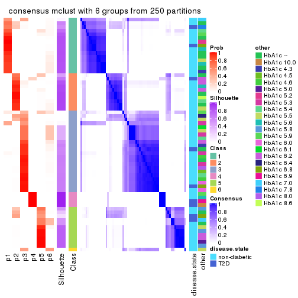
Heatmaps for the membership of samples in all partitions to see how consistent they are:
membership_heatmap(res, k = 2)
membership_heatmap(res, k = 3)
membership_heatmap(res, k = 4)
membership_heatmap(res, k = 5)
membership_heatmap(res, k = 6)
As soon as we have had the classes for columns, we can look for signatures which are significantly different between classes which can be candidate marks for certain classes. Following are the heatmaps for signatures.
Signature heatmaps where rows are scaled:
get_signatures(res, k = 2)

get_signatures(res, k = 3)
get_signatures(res, k = 4)
get_signatures(res, k = 5)

get_signatures(res, k = 6)
Signature heatmaps where rows are not scaled:
get_signatures(res, k = 2, scale_rows = FALSE)
get_signatures(res, k = 3, scale_rows = FALSE)
get_signatures(res, k = 4, scale_rows = FALSE)
get_signatures(res, k = 5, scale_rows = FALSE)
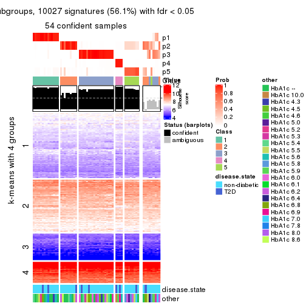
get_signatures(res, k = 6, scale_rows = FALSE)
Compare the overlap of signatures from different k:
compare_signatures(res)
get_signature() returns a data frame invisibly. TO get the list of signatures, the function
call should be assigned to a variable explicitly. In following code, if plot argument is set
to FALSE, no heatmap is plotted while only the differential analysis is performed.
# code only for demonstration
tb = get_signature(res, k = ..., plot = FALSE)
An example of the output of tb is:
#> which_row fdr mean_1 mean_2 scaled_mean_1 scaled_mean_2 km
#> 1 38 0.042760348 8.373488 9.131774 -0.5533452 0.5164555 1
#> 2 40 0.018707592 7.106213 8.469186 -0.6173731 0.5762149 1
#> 3 55 0.019134737 10.221463 11.207825 -0.6159697 0.5749050 1
#> 4 59 0.006059896 5.921854 7.869574 -0.6899429 0.6439467 1
#> 5 60 0.018055526 8.928898 10.211722 -0.6204761 0.5791110 1
#> 6 98 0.009384629 15.714769 14.887706 0.6635654 -0.6193277 2
...
The columns in tb are:
which_row: row indices corresponding to the input matrix.fdr: FDR for the differential test. mean_x: The mean value in group x.scaled_mean_x: The mean value in group x after rows are scaled.km: Row groups if k-means clustering is applied to rows.UMAP plot which shows how samples are separated.
dimension_reduction(res, k = 2, method = "UMAP")
dimension_reduction(res, k = 3, method = "UMAP")
dimension_reduction(res, k = 4, method = "UMAP")

dimension_reduction(res, k = 5, method = "UMAP")
dimension_reduction(res, k = 6, method = "UMAP")
Following heatmap shows how subgroups are split when increasing k:
collect_classes(res)
Test correlation between subgroups and known annotations. If the known annotation is numeric, one-way ANOVA test is applied, and if the known annotation is discrete, chi-squared contingency table test is applied.
test_to_known_factors(res)
#> n disease.state(p) other(p) k
#> SD:mclust 60 0.306 0.1771 2
#> SD:mclust 54 0.302 0.1823 3
#> SD:mclust 60 0.217 0.0306 4
#> SD:mclust 54 0.362 0.0757 5
#> SD:mclust 50 0.431 0.0478 6
If matrix rows can be associated to genes, consider to use GO_Enrichment(res,
...) to perform function enrichment for the signature genes.
The object with results only for a single top-value method and a single partition method can be extracted as:
res = res_list["SD", "NMF"]
# you can also extract it by
# res = res_list["SD:NMF"]
A summary of res and all the functions that can be applied to it:
res
#> A 'ConsensusPartition' object with k = 2, 3, 4, 5, 6.
#> On a matrix with 17867 rows and 63 columns.
#> Top rows (1000, 2000, 3000, 4000, 5000) are extracted by 'SD' method.
#> Subgroups are detected by 'NMF' method.
#> Performed in total 1250 partitions by row resampling.
#> Best k for subgroups seems to be 2.
#>
#> Following methods can be applied to this 'ConsensusPartition' object:
#> [1] "cola_report" "collect_classes" "collect_plots"
#> [4] "collect_stats" "colnames" "compare_signatures"
#> [7] "consensus_heatmap" "dimension_reduction" "functional_enrichment"
#> [10] "get_anno_col" "get_anno" "get_classes"
#> [13] "get_consensus" "get_matrix" "get_membership"
#> [16] "get_param" "get_signatures" "get_stats"
#> [19] "is_best_k" "is_stable_k" "membership_heatmap"
#> [22] "ncol" "nrow" "plot_ecdf"
#> [25] "rownames" "select_partition_number" "show"
#> [28] "suggest_best_k" "test_to_known_factors"
collect_plots() function collects all the plots made from res for all k (number of partitions)
into one single page to provide an easy and fast comparison between different k.
collect_plots(res)
The plots are:
k and the heatmap of
predicted classes for each k.k.k.k.All the plots in panels can be made by individual functions and they are plotted later in this section.
select_partition_number() produces several plots showing different
statistics for choosing “optimized” k. There are following statistics:
k;k, the area increased is defined as \(A_k - A_{k-1}\).The detailed explanations of these statistics can be found in the cola vignette.
Generally speaking, lower PAC score, higher mean silhouette score or higher
concordance corresponds to better partition. Rand index and Jaccard index
measure how similar the current partition is compared to partition with k-1.
If they are too similar, we won't accept k is better than k-1.
select_partition_number(res)
The numeric values for all these statistics can be obtained by get_stats().
get_stats(res)
#> k 1-PAC mean_silhouette concordance area_increased Rand Jaccard
#> 2 2 0.900 0.933 0.970 0.5054 0.492 0.492
#> 3 3 0.586 0.672 0.801 0.3149 0.746 0.529
#> 4 4 0.566 0.651 0.810 0.1214 0.781 0.454
#> 5 5 0.580 0.553 0.749 0.0531 0.903 0.653
#> 6 6 0.670 0.596 0.789 0.0401 0.935 0.727
suggest_best_k() suggests the best \(k\) based on these statistics. The rules are as follows:
NA.suggest_best_k(res)
#> [1] 2
Following shows the table of the partitions (You need to click the show/hide
code output link to see it). The membership matrix (columns with name p*)
is inferred by
clue::cl_consensus()
function with the SE method. Basically the value in the membership matrix
represents the probability to belong to a certain group. The finall class
label for an item is determined with the group with highest probability it
belongs to.
In get_classes() function, the entropy is calculated from the membership
matrix and the silhouette score is calculated from the consensus matrix.
cbind(get_classes(res, k = 2), get_membership(res, k = 2))
#> class entropy silhouette p1 p2
#> GSM946745 2 0.118 0.947 0.016 0.984
#> GSM946739 2 0.000 0.959 0.000 1.000
#> GSM946738 2 0.000 0.959 0.000 1.000
#> GSM946746 2 0.000 0.959 0.000 1.000
#> GSM946747 1 0.000 0.976 1.000 0.000
#> GSM946711 2 0.000 0.959 0.000 1.000
#> GSM946760 2 0.000 0.959 0.000 1.000
#> GSM946710 1 0.000 0.976 1.000 0.000
#> GSM946761 2 0.000 0.959 0.000 1.000
#> GSM946701 1 0.000 0.976 1.000 0.000
#> GSM946703 1 0.000 0.976 1.000 0.000
#> GSM946704 2 0.000 0.959 0.000 1.000
#> GSM946706 1 0.000 0.976 1.000 0.000
#> GSM946708 2 0.000 0.959 0.000 1.000
#> GSM946709 2 0.000 0.959 0.000 1.000
#> GSM946712 2 0.000 0.959 0.000 1.000
#> GSM946720 1 0.000 0.976 1.000 0.000
#> GSM946722 2 0.821 0.677 0.256 0.744
#> GSM946753 1 0.000 0.976 1.000 0.000
#> GSM946762 1 0.000 0.976 1.000 0.000
#> GSM946707 1 0.000 0.976 1.000 0.000
#> GSM946721 1 0.000 0.976 1.000 0.000
#> GSM946719 1 0.000 0.976 1.000 0.000
#> GSM946716 1 0.000 0.976 1.000 0.000
#> GSM946751 1 0.821 0.643 0.744 0.256
#> GSM946740 2 0.000 0.959 0.000 1.000
#> GSM946741 1 0.000 0.976 1.000 0.000
#> GSM946718 1 0.000 0.976 1.000 0.000
#> GSM946737 1 0.000 0.976 1.000 0.000
#> GSM946742 1 0.278 0.935 0.952 0.048
#> GSM946749 1 0.000 0.976 1.000 0.000
#> GSM946702 2 0.000 0.959 0.000 1.000
#> GSM946713 1 0.000 0.976 1.000 0.000
#> GSM946723 1 0.000 0.976 1.000 0.000
#> GSM946736 1 0.000 0.976 1.000 0.000
#> GSM946705 1 0.000 0.976 1.000 0.000
#> GSM946715 1 0.000 0.976 1.000 0.000
#> GSM946726 2 0.000 0.959 0.000 1.000
#> GSM946727 2 0.833 0.664 0.264 0.736
#> GSM946748 2 0.416 0.889 0.084 0.916
#> GSM946756 1 0.541 0.852 0.876 0.124
#> GSM946724 2 0.000 0.959 0.000 1.000
#> GSM946733 1 0.000 0.976 1.000 0.000
#> GSM946734 2 0.000 0.959 0.000 1.000
#> GSM946754 1 0.000 0.976 1.000 0.000
#> GSM946700 2 0.000 0.959 0.000 1.000
#> GSM946714 2 0.000 0.959 0.000 1.000
#> GSM946729 2 0.000 0.959 0.000 1.000
#> GSM946731 1 0.184 0.953 0.972 0.028
#> GSM946743 1 0.000 0.976 1.000 0.000
#> GSM946744 2 0.000 0.959 0.000 1.000
#> GSM946730 2 0.936 0.484 0.352 0.648
#> GSM946755 1 0.795 0.681 0.760 0.240
#> GSM946717 1 0.000 0.976 1.000 0.000
#> GSM946725 2 0.000 0.959 0.000 1.000
#> GSM946728 2 0.000 0.959 0.000 1.000
#> GSM946752 1 0.000 0.976 1.000 0.000
#> GSM946757 2 0.000 0.959 0.000 1.000
#> GSM946758 2 0.000 0.959 0.000 1.000
#> GSM946759 2 0.760 0.730 0.220 0.780
#> GSM946732 1 0.000 0.976 1.000 0.000
#> GSM946750 2 0.000 0.959 0.000 1.000
#> GSM946735 2 0.000 0.959 0.000 1.000
cbind(get_classes(res, k = 3), get_membership(res, k = 3))
#> class entropy silhouette p1 p2 p3
#> GSM946745 3 0.6962 0.6730 0.036 0.316 0.648
#> GSM946739 3 0.5785 0.6798 0.000 0.332 0.668
#> GSM946738 3 0.0237 0.6716 0.004 0.000 0.996
#> GSM946746 3 0.6154 0.5837 0.000 0.408 0.592
#> GSM946747 1 0.1031 0.8005 0.976 0.024 0.000
#> GSM946711 3 0.5760 0.6817 0.000 0.328 0.672
#> GSM946760 3 0.6309 0.4016 0.000 0.496 0.504
#> GSM946710 1 0.1163 0.8155 0.972 0.000 0.028
#> GSM946761 3 0.5835 0.6730 0.000 0.340 0.660
#> GSM946701 1 0.0237 0.8102 0.996 0.004 0.000
#> GSM946703 1 0.1289 0.7947 0.968 0.032 0.000
#> GSM946704 2 0.5968 -0.0183 0.000 0.636 0.364
#> GSM946706 1 0.5835 0.7335 0.660 0.000 0.340
#> GSM946708 2 0.6095 -0.1250 0.000 0.608 0.392
#> GSM946709 2 0.5363 0.6552 0.276 0.724 0.000
#> GSM946712 3 0.5882 0.6657 0.000 0.348 0.652
#> GSM946720 1 0.0000 0.8115 1.000 0.000 0.000
#> GSM946722 2 0.5397 0.6527 0.280 0.720 0.000
#> GSM946753 1 0.0424 0.8085 0.992 0.008 0.000
#> GSM946762 1 0.1289 0.7956 0.968 0.032 0.000
#> GSM946707 1 0.5760 0.7434 0.672 0.000 0.328
#> GSM946721 1 0.0000 0.8115 1.000 0.000 0.000
#> GSM946719 1 0.0747 0.8145 0.984 0.000 0.016
#> GSM946716 1 0.5678 0.7495 0.684 0.000 0.316
#> GSM946751 3 0.1163 0.6624 0.028 0.000 0.972
#> GSM946740 2 0.0000 0.7167 0.000 1.000 0.000
#> GSM946741 1 0.0892 0.8029 0.980 0.020 0.000
#> GSM946718 1 0.5760 0.7437 0.672 0.000 0.328
#> GSM946737 1 0.3192 0.8112 0.888 0.000 0.112
#> GSM946742 3 0.1529 0.6530 0.040 0.000 0.960
#> GSM946749 1 0.5760 0.7434 0.672 0.000 0.328
#> GSM946702 2 0.3207 0.7120 0.084 0.904 0.012
#> GSM946713 1 0.5760 0.7437 0.672 0.000 0.328
#> GSM946723 2 0.5859 0.5792 0.344 0.656 0.000
#> GSM946736 1 0.5835 0.7343 0.660 0.000 0.340
#> GSM946705 1 0.5835 0.7343 0.660 0.000 0.340
#> GSM946715 1 0.3116 0.7179 0.892 0.108 0.000
#> GSM946726 2 0.0237 0.7142 0.000 0.996 0.004
#> GSM946727 3 0.8113 0.5339 0.212 0.144 0.644
#> GSM946748 2 0.4346 0.6885 0.184 0.816 0.000
#> GSM946756 1 0.3686 0.7115 0.860 0.140 0.000
#> GSM946724 3 0.5760 0.6817 0.000 0.328 0.672
#> GSM946733 1 0.0237 0.8102 0.996 0.004 0.000
#> GSM946734 3 0.5760 0.6818 0.000 0.328 0.672
#> GSM946754 1 0.0237 0.8102 0.996 0.004 0.000
#> GSM946700 2 0.0000 0.7167 0.000 1.000 0.000
#> GSM946714 2 0.0237 0.7142 0.000 0.996 0.004
#> GSM946729 2 0.4887 0.3959 0.000 0.772 0.228
#> GSM946731 2 0.6008 0.5403 0.372 0.628 0.000
#> GSM946743 2 0.5835 0.5843 0.340 0.660 0.000
#> GSM946744 3 0.5785 0.6798 0.000 0.332 0.668
#> GSM946730 3 0.0592 0.6690 0.012 0.000 0.988
#> GSM946755 3 0.4887 0.3493 0.228 0.000 0.772
#> GSM946717 1 0.5785 0.7408 0.668 0.000 0.332
#> GSM946725 3 0.0000 0.6729 0.000 0.000 1.000
#> GSM946728 2 0.0000 0.7167 0.000 1.000 0.000
#> GSM946752 1 0.5785 0.7408 0.668 0.000 0.332
#> GSM946757 2 0.0237 0.7174 0.004 0.996 0.000
#> GSM946758 2 0.2796 0.6279 0.000 0.908 0.092
#> GSM946759 3 0.2066 0.6422 0.060 0.000 0.940
#> GSM946732 1 0.3619 0.8077 0.864 0.000 0.136
#> GSM946750 3 0.0000 0.6729 0.000 0.000 1.000
#> GSM946735 3 0.5785 0.6798 0.000 0.332 0.668
cbind(get_classes(res, k = 4), get_membership(res, k = 4))
#> class entropy silhouette p1 p2 p3 p4
#> GSM946745 3 0.6897 0.357 0.000 0.228 0.592 0.180
#> GSM946739 4 0.1174 0.822 0.000 0.020 0.012 0.968
#> GSM946738 4 0.4624 0.569 0.000 0.000 0.340 0.660
#> GSM946746 4 0.5396 0.635 0.000 0.104 0.156 0.740
#> GSM946747 1 0.0592 0.790 0.984 0.016 0.000 0.000
#> GSM946711 4 0.0524 0.824 0.000 0.008 0.004 0.988
#> GSM946760 2 0.6388 0.573 0.000 0.652 0.192 0.156
#> GSM946710 1 0.1474 0.779 0.948 0.000 0.052 0.000
#> GSM946761 4 0.1661 0.810 0.000 0.052 0.004 0.944
#> GSM946701 1 0.0188 0.791 0.996 0.004 0.000 0.000
#> GSM946703 1 0.0592 0.789 0.984 0.016 0.000 0.000
#> GSM946704 2 0.6236 0.588 0.000 0.668 0.180 0.152
#> GSM946706 3 0.3444 0.750 0.184 0.000 0.816 0.000
#> GSM946708 2 0.4804 0.357 0.000 0.616 0.000 0.384
#> GSM946709 2 0.4857 0.388 0.324 0.668 0.000 0.008
#> GSM946712 4 0.1059 0.823 0.000 0.016 0.012 0.972
#> GSM946720 1 0.0592 0.788 0.984 0.000 0.016 0.000
#> GSM946722 1 0.5663 0.517 0.676 0.264 0.000 0.060
#> GSM946753 1 0.0804 0.791 0.980 0.012 0.008 0.000
#> GSM946762 1 0.4728 0.689 0.792 0.104 0.104 0.000
#> GSM946707 1 0.3257 0.686 0.844 0.000 0.152 0.004
#> GSM946721 1 0.1022 0.781 0.968 0.000 0.032 0.000
#> GSM946719 1 0.3757 0.677 0.828 0.020 0.152 0.000
#> GSM946716 3 0.5279 0.505 0.400 0.012 0.588 0.000
#> GSM946751 4 0.3545 0.769 0.008 0.000 0.164 0.828
#> GSM946740 2 0.1452 0.761 0.008 0.956 0.000 0.036
#> GSM946741 1 0.1820 0.786 0.944 0.036 0.020 0.000
#> GSM946718 1 0.5443 0.198 0.616 0.004 0.364 0.016
#> GSM946737 1 0.1940 0.759 0.924 0.000 0.076 0.000
#> GSM946742 3 0.4124 0.718 0.048 0.028 0.852 0.072
#> GSM946749 3 0.4018 0.716 0.224 0.004 0.772 0.000
#> GSM946702 1 0.7748 0.162 0.436 0.260 0.000 0.304
#> GSM946713 3 0.5361 0.706 0.192 0.036 0.748 0.024
#> GSM946723 2 0.4978 0.275 0.384 0.612 0.004 0.000
#> GSM946736 3 0.3402 0.753 0.164 0.004 0.832 0.000
#> GSM946705 3 0.4151 0.739 0.180 0.004 0.800 0.016
#> GSM946715 1 0.2345 0.750 0.900 0.100 0.000 0.000
#> GSM946726 2 0.2926 0.755 0.000 0.896 0.048 0.056
#> GSM946727 4 0.6945 0.431 0.144 0.008 0.240 0.608
#> GSM946748 1 0.7917 0.200 0.464 0.276 0.008 0.252
#> GSM946756 3 0.7689 0.288 0.124 0.308 0.536 0.032
#> GSM946724 4 0.1297 0.822 0.000 0.016 0.020 0.964
#> GSM946733 1 0.0000 0.790 1.000 0.000 0.000 0.000
#> GSM946734 4 0.0927 0.825 0.000 0.008 0.016 0.976
#> GSM946754 1 0.0707 0.786 0.980 0.000 0.020 0.000
#> GSM946700 2 0.2319 0.761 0.000 0.924 0.036 0.040
#> GSM946714 2 0.1489 0.761 0.004 0.952 0.000 0.044
#> GSM946729 2 0.6133 0.634 0.000 0.676 0.136 0.188
#> GSM946731 2 0.5815 0.608 0.152 0.708 0.140 0.000
#> GSM946743 1 0.4817 0.331 0.612 0.388 0.000 0.000
#> GSM946744 4 0.1042 0.821 0.000 0.020 0.008 0.972
#> GSM946730 4 0.4501 0.690 0.024 0.000 0.212 0.764
#> GSM946755 3 0.4581 0.701 0.052 0.020 0.820 0.108
#> GSM946717 3 0.3402 0.753 0.164 0.004 0.832 0.000
#> GSM946725 4 0.2011 0.814 0.000 0.000 0.080 0.920
#> GSM946728 2 0.1635 0.760 0.008 0.948 0.000 0.044
#> GSM946752 3 0.4193 0.693 0.268 0.000 0.732 0.000
#> GSM946757 2 0.1305 0.762 0.000 0.960 0.004 0.036
#> GSM946758 4 0.5075 0.427 0.012 0.344 0.000 0.644
#> GSM946759 4 0.4899 0.634 0.008 0.004 0.300 0.688
#> GSM946732 1 0.4718 0.439 0.716 0.008 0.272 0.004
#> GSM946750 3 0.5022 0.554 0.000 0.044 0.736 0.220
#> GSM946735 4 0.2706 0.800 0.000 0.020 0.080 0.900
cbind(get_classes(res, k = 5), get_membership(res, k = 5))
#> class entropy silhouette p1 p2 p3 p4 p5
#> GSM946745 4 0.4824 0.5089 0.008 0.064 0.188 0.736 0.004
#> GSM946739 2 0.4308 0.6990 0.000 0.804 0.052 0.040 0.104
#> GSM946738 2 0.5357 0.4708 0.000 0.588 0.344 0.068 0.000
#> GSM946746 4 0.4884 0.2546 0.000 0.392 0.008 0.584 0.016
#> GSM946747 1 0.0865 0.7868 0.972 0.004 0.000 0.000 0.024
#> GSM946711 2 0.2689 0.7349 0.000 0.900 0.040 0.024 0.036
#> GSM946760 4 0.3289 0.5949 0.000 0.048 0.004 0.852 0.096
#> GSM946710 1 0.3723 0.7266 0.844 0.052 0.080 0.020 0.004
#> GSM946761 2 0.2925 0.7265 0.000 0.884 0.016 0.036 0.064
#> GSM946701 1 0.0703 0.7871 0.976 0.000 0.000 0.000 0.024
#> GSM946703 1 0.1082 0.7870 0.964 0.000 0.008 0.000 0.028
#> GSM946704 4 0.3432 0.5639 0.000 0.040 0.000 0.828 0.132
#> GSM946706 3 0.3215 0.6797 0.092 0.000 0.852 0.056 0.000
#> GSM946708 5 0.6415 0.4410 0.000 0.292 0.028 0.116 0.564
#> GSM946709 5 0.5523 0.5680 0.200 0.008 0.000 0.124 0.668
#> GSM946712 2 0.2972 0.7426 0.008 0.888 0.056 0.036 0.012
#> GSM946720 1 0.0162 0.7867 0.996 0.000 0.000 0.000 0.004
#> GSM946722 1 0.5660 0.4943 0.648 0.096 0.004 0.008 0.244
#> GSM946753 1 0.0981 0.7867 0.972 0.000 0.012 0.008 0.008
#> GSM946762 1 0.5635 0.4813 0.636 0.000 0.120 0.004 0.240
#> GSM946707 1 0.4910 0.6009 0.724 0.032 0.208 0.036 0.000
#> GSM946721 1 0.0404 0.7857 0.988 0.000 0.012 0.000 0.000
#> GSM946719 1 0.6035 0.4888 0.636 0.024 0.208 0.132 0.000
#> GSM946716 1 0.6310 -0.0591 0.460 0.008 0.412 0.120 0.000
#> GSM946751 2 0.4508 0.6583 0.008 0.740 0.208 0.044 0.000
#> GSM946740 5 0.3579 0.6623 0.000 0.004 0.000 0.240 0.756
#> GSM946741 1 0.1949 0.7813 0.932 0.000 0.016 0.012 0.040
#> GSM946718 1 0.4870 0.6001 0.736 0.024 0.204 0.020 0.016
#> GSM946737 1 0.2621 0.7412 0.876 0.004 0.112 0.008 0.000
#> GSM946742 3 0.4633 0.4688 0.020 0.016 0.700 0.264 0.000
#> GSM946749 3 0.5678 0.5501 0.180 0.004 0.696 0.040 0.080
#> GSM946702 1 0.6551 0.0953 0.452 0.404 0.000 0.016 0.128
#> GSM946713 4 0.5863 0.2163 0.116 0.004 0.292 0.588 0.000
#> GSM946723 5 0.5560 0.2383 0.412 0.000 0.004 0.060 0.524
#> GSM946736 3 0.1857 0.6901 0.060 0.008 0.928 0.004 0.000
#> GSM946705 3 0.2574 0.6914 0.080 0.012 0.896 0.008 0.004
#> GSM946715 1 0.1928 0.7694 0.920 0.000 0.004 0.004 0.072
#> GSM946726 5 0.4233 0.5220 0.000 0.072 0.028 0.092 0.808
#> GSM946727 2 0.7683 0.3534 0.132 0.500 0.192 0.176 0.000
#> GSM946748 5 0.7804 0.1614 0.152 0.272 0.024 0.064 0.488
#> GSM946756 4 0.4318 0.5705 0.036 0.004 0.144 0.792 0.024
#> GSM946724 2 0.6470 0.5418 0.000 0.616 0.076 0.088 0.220
#> GSM946733 1 0.0898 0.7872 0.972 0.000 0.008 0.000 0.020
#> GSM946734 2 0.2523 0.7477 0.008 0.904 0.064 0.020 0.004
#> GSM946754 1 0.0162 0.7866 0.996 0.000 0.000 0.004 0.000
#> GSM946700 5 0.4196 0.5354 0.000 0.004 0.000 0.356 0.640
#> GSM946714 5 0.3993 0.6712 0.000 0.028 0.000 0.216 0.756
#> GSM946729 4 0.5786 0.4514 0.000 0.164 0.012 0.652 0.172
#> GSM946731 4 0.4876 0.4029 0.056 0.000 0.012 0.716 0.216
#> GSM946743 1 0.5551 0.3242 0.600 0.000 0.000 0.096 0.304
#> GSM946744 2 0.3400 0.7179 0.000 0.852 0.036 0.016 0.096
#> GSM946730 2 0.5544 0.5272 0.004 0.624 0.280 0.092 0.000
#> GSM946755 3 0.4803 -0.0897 0.004 0.012 0.496 0.488 0.000
#> GSM946717 3 0.1928 0.6930 0.072 0.004 0.920 0.004 0.000
#> GSM946725 2 0.3207 0.7414 0.012 0.864 0.084 0.040 0.000
#> GSM946728 5 0.3909 0.6711 0.000 0.024 0.000 0.216 0.760
#> GSM946752 3 0.5852 0.5023 0.192 0.004 0.624 0.180 0.000
#> GSM946757 5 0.3607 0.6605 0.000 0.004 0.000 0.244 0.752
#> GSM946758 2 0.4264 0.3775 0.000 0.620 0.000 0.004 0.376
#> GSM946759 3 0.4891 -0.0628 0.004 0.416 0.564 0.008 0.008
#> GSM946732 1 0.3735 0.6866 0.816 0.004 0.132 0.048 0.000
#> GSM946750 4 0.6020 0.2183 0.004 0.112 0.348 0.536 0.000
#> GSM946735 2 0.3807 0.7321 0.016 0.836 0.108 0.020 0.020
cbind(get_classes(res, k = 6), get_membership(res, k = 6))
#> class entropy silhouette p1 p2 p3 p4 p5 p6
#> GSM946745 6 0.0405 0.756 0.000 0.000 0.000 0.008 0.004 0.988
#> GSM946739 4 0.4234 -0.198 0.000 0.440 0.000 0.544 0.000 0.016
#> GSM946738 2 0.4453 0.404 0.000 0.592 0.372 0.000 0.000 0.036
#> GSM946746 6 0.3426 0.546 0.000 0.276 0.000 0.000 0.004 0.720
#> GSM946747 1 0.0976 0.762 0.968 0.008 0.000 0.008 0.016 0.000
#> GSM946711 2 0.3978 0.546 0.000 0.700 0.000 0.268 0.000 0.032
#> GSM946760 6 0.1615 0.761 0.000 0.004 0.000 0.004 0.064 0.928
#> GSM946710 1 0.3934 0.645 0.756 0.208 0.012 0.012 0.004 0.008
#> GSM946761 2 0.4199 0.551 0.000 0.712 0.004 0.248 0.012 0.024
#> GSM946701 1 0.1364 0.759 0.952 0.016 0.000 0.012 0.020 0.000
#> GSM946703 1 0.1225 0.757 0.952 0.000 0.000 0.036 0.012 0.000
#> GSM946704 6 0.2261 0.748 0.000 0.004 0.000 0.008 0.104 0.884
#> GSM946706 3 0.1511 0.800 0.012 0.000 0.940 0.004 0.000 0.044
#> GSM946708 5 0.3749 0.656 0.000 0.068 0.004 0.128 0.796 0.004
#> GSM946709 5 0.1956 0.786 0.080 0.008 0.000 0.000 0.908 0.004
#> GSM946712 2 0.1608 0.656 0.004 0.940 0.004 0.016 0.000 0.036
#> GSM946720 1 0.0551 0.764 0.984 0.004 0.004 0.008 0.000 0.000
#> GSM946722 1 0.6298 0.213 0.440 0.316 0.000 0.016 0.228 0.000
#> GSM946753 1 0.1078 0.764 0.964 0.000 0.000 0.008 0.012 0.016
#> GSM946762 1 0.6270 0.163 0.480 0.016 0.136 0.016 0.352 0.000
#> GSM946707 1 0.4788 0.584 0.696 0.040 0.224 0.004 0.000 0.036
#> GSM946721 1 0.0837 0.763 0.972 0.000 0.004 0.004 0.000 0.020
#> GSM946719 1 0.6393 0.361 0.528 0.028 0.224 0.004 0.004 0.212
#> GSM946716 1 0.6244 0.268 0.500 0.016 0.256 0.004 0.000 0.224
#> GSM946751 2 0.4356 0.598 0.012 0.728 0.212 0.008 0.000 0.040
#> GSM946740 5 0.0858 0.836 0.004 0.000 0.000 0.000 0.968 0.028
#> GSM946741 1 0.1819 0.760 0.932 0.000 0.008 0.032 0.004 0.024
#> GSM946718 1 0.3164 0.720 0.844 0.000 0.020 0.104 0.000 0.032
#> GSM946737 1 0.3799 0.658 0.772 0.008 0.188 0.008 0.000 0.024
#> GSM946742 3 0.3833 0.603 0.016 0.000 0.708 0.004 0.000 0.272
#> GSM946749 4 0.6136 0.048 0.204 0.000 0.268 0.508 0.000 0.020
#> GSM946702 1 0.6612 0.031 0.436 0.368 0.000 0.092 0.104 0.000
#> GSM946713 6 0.2214 0.697 0.092 0.000 0.012 0.004 0.000 0.892
#> GSM946723 1 0.4546 0.264 0.572 0.000 0.000 0.024 0.396 0.008
#> GSM946736 3 0.2051 0.805 0.036 0.000 0.916 0.040 0.000 0.008
#> GSM946705 3 0.2030 0.802 0.016 0.016 0.924 0.036 0.000 0.008
#> GSM946715 1 0.1536 0.758 0.940 0.000 0.000 0.016 0.040 0.004
#> GSM946726 4 0.3547 0.356 0.000 0.000 0.000 0.696 0.300 0.004
#> GSM946727 2 0.5399 0.533 0.068 0.664 0.076 0.000 0.000 0.192
#> GSM946748 4 0.3486 0.564 0.064 0.044 0.000 0.836 0.056 0.000
#> GSM946756 6 0.1794 0.756 0.008 0.000 0.020 0.012 0.024 0.936
#> GSM946724 4 0.2019 0.527 0.000 0.088 0.000 0.900 0.000 0.012
#> GSM946733 1 0.0260 0.763 0.992 0.000 0.000 0.008 0.000 0.000
#> GSM946734 2 0.4191 0.648 0.012 0.776 0.120 0.084 0.008 0.000
#> GSM946754 1 0.1629 0.764 0.944 0.012 0.000 0.012 0.012 0.020
#> GSM946700 5 0.2053 0.787 0.004 0.000 0.000 0.000 0.888 0.108
#> GSM946714 5 0.0922 0.832 0.004 0.000 0.000 0.024 0.968 0.004
#> GSM946729 6 0.6178 0.521 0.000 0.216 0.056 0.000 0.160 0.568
#> GSM946731 6 0.4193 0.577 0.028 0.000 0.008 0.000 0.276 0.688
#> GSM946743 5 0.4331 0.386 0.332 0.000 0.000 0.004 0.636 0.028
#> GSM946744 2 0.4333 0.392 0.000 0.596 0.000 0.376 0.000 0.028
#> GSM946730 2 0.5767 0.517 0.012 0.588 0.268 0.008 0.004 0.120
#> GSM946755 6 0.3668 0.440 0.000 0.004 0.328 0.000 0.000 0.668
#> GSM946717 3 0.2122 0.802 0.040 0.000 0.912 0.040 0.000 0.008
#> GSM946725 2 0.1078 0.654 0.000 0.964 0.008 0.016 0.000 0.012
#> GSM946728 5 0.0603 0.834 0.004 0.000 0.000 0.016 0.980 0.000
#> GSM946752 3 0.5260 0.580 0.096 0.012 0.628 0.004 0.000 0.260
#> GSM946757 5 0.1219 0.830 0.004 0.000 0.000 0.000 0.948 0.048
#> GSM946758 2 0.5605 0.320 0.012 0.560 0.004 0.108 0.316 0.000
#> GSM946759 3 0.1750 0.777 0.004 0.056 0.928 0.008 0.004 0.000
#> GSM946732 1 0.2262 0.748 0.896 0.008 0.000 0.016 0.000 0.080
#> GSM946750 6 0.4464 0.574 0.000 0.096 0.168 0.004 0.004 0.728
#> GSM946735 2 0.1129 0.650 0.000 0.964 0.012 0.012 0.008 0.004
Heatmaps for the consensus matrix. It visualizes the probability of two samples to be in a same group.
consensus_heatmap(res, k = 2)
consensus_heatmap(res, k = 3)
consensus_heatmap(res, k = 4)
consensus_heatmap(res, k = 5)
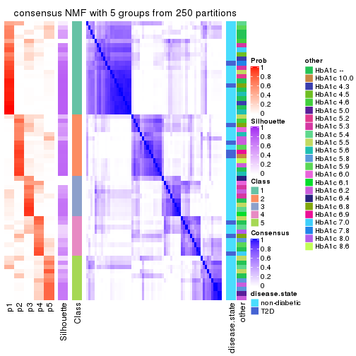
consensus_heatmap(res, k = 6)
Heatmaps for the membership of samples in all partitions to see how consistent they are:
membership_heatmap(res, k = 2)
membership_heatmap(res, k = 3)
membership_heatmap(res, k = 4)
membership_heatmap(res, k = 5)
membership_heatmap(res, k = 6)
As soon as we have had the classes for columns, we can look for signatures which are significantly different between classes which can be candidate marks for certain classes. Following are the heatmaps for signatures.
Signature heatmaps where rows are scaled:
get_signatures(res, k = 2)
get_signatures(res, k = 3)
get_signatures(res, k = 4)
get_signatures(res, k = 5)
get_signatures(res, k = 6)
Signature heatmaps where rows are not scaled:
get_signatures(res, k = 2, scale_rows = FALSE)
get_signatures(res, k = 3, scale_rows = FALSE)

get_signatures(res, k = 4, scale_rows = FALSE)
get_signatures(res, k = 5, scale_rows = FALSE)
get_signatures(res, k = 6, scale_rows = FALSE)
Compare the overlap of signatures from different k:
compare_signatures(res)
get_signature() returns a data frame invisibly. TO get the list of signatures, the function
call should be assigned to a variable explicitly. In following code, if plot argument is set
to FALSE, no heatmap is plotted while only the differential analysis is performed.
# code only for demonstration
tb = get_signature(res, k = ..., plot = FALSE)
An example of the output of tb is:
#> which_row fdr mean_1 mean_2 scaled_mean_1 scaled_mean_2 km
#> 1 38 0.042760348 8.373488 9.131774 -0.5533452 0.5164555 1
#> 2 40 0.018707592 7.106213 8.469186 -0.6173731 0.5762149 1
#> 3 55 0.019134737 10.221463 11.207825 -0.6159697 0.5749050 1
#> 4 59 0.006059896 5.921854 7.869574 -0.6899429 0.6439467 1
#> 5 60 0.018055526 8.928898 10.211722 -0.6204761 0.5791110 1
#> 6 98 0.009384629 15.714769 14.887706 0.6635654 -0.6193277 2
...
The columns in tb are:
which_row: row indices corresponding to the input matrix.fdr: FDR for the differential test. mean_x: The mean value in group x.scaled_mean_x: The mean value in group x after rows are scaled.km: Row groups if k-means clustering is applied to rows.UMAP plot which shows how samples are separated.
dimension_reduction(res, k = 2, method = "UMAP")
dimension_reduction(res, k = 3, method = "UMAP")
dimension_reduction(res, k = 4, method = "UMAP")
dimension_reduction(res, k = 5, method = "UMAP")
dimension_reduction(res, k = 6, method = "UMAP")
Following heatmap shows how subgroups are split when increasing k:
collect_classes(res)
Test correlation between subgroups and known annotations. If the known annotation is numeric, one-way ANOVA test is applied, and if the known annotation is discrete, chi-squared contingency table test is applied.
test_to_known_factors(res)
#> n disease.state(p) other(p) k
#> SD:NMF 62 0.1217 0.2392 2
#> SD:NMF 58 0.0121 0.3229 3
#> SD:NMF 51 0.0836 0.0806 4
#> SD:NMF 43 0.1393 0.4999 5
#> SD:NMF 49 0.3254 0.6886 6
If matrix rows can be associated to genes, consider to use GO_Enrichment(res,
...) to perform function enrichment for the signature genes.
The object with results only for a single top-value method and a single partition method can be extracted as:
res = res_list["CV", "hclust"]
# you can also extract it by
# res = res_list["CV:hclust"]
A summary of res and all the functions that can be applied to it:
res
#> A 'ConsensusPartition' object with k = 2, 3, 4, 5, 6.
#> On a matrix with 17867 rows and 63 columns.
#> Top rows (1000, 2000, 3000, 4000, 5000) are extracted by 'CV' method.
#> Subgroups are detected by 'hclust' method.
#> Performed in total 1250 partitions by row resampling.
#> Best k for subgroups seems to be 2.
#>
#> Following methods can be applied to this 'ConsensusPartition' object:
#> [1] "cola_report" "collect_classes" "collect_plots"
#> [4] "collect_stats" "colnames" "compare_signatures"
#> [7] "consensus_heatmap" "dimension_reduction" "functional_enrichment"
#> [10] "get_anno_col" "get_anno" "get_classes"
#> [13] "get_consensus" "get_matrix" "get_membership"
#> [16] "get_param" "get_signatures" "get_stats"
#> [19] "is_best_k" "is_stable_k" "membership_heatmap"
#> [22] "ncol" "nrow" "plot_ecdf"
#> [25] "rownames" "select_partition_number" "show"
#> [28] "suggest_best_k" "test_to_known_factors"
collect_plots() function collects all the plots made from res for all k (number of partitions)
into one single page to provide an easy and fast comparison between different k.
collect_plots(res)
The plots are:
k and the heatmap of
predicted classes for each k.k.k.k.All the plots in panels can be made by individual functions and they are plotted later in this section.
select_partition_number() produces several plots showing different
statistics for choosing “optimized” k. There are following statistics:
k;k, the area increased is defined as \(A_k - A_{k-1}\).The detailed explanations of these statistics can be found in the cola vignette.
Generally speaking, lower PAC score, higher mean silhouette score or higher
concordance corresponds to better partition. Rand index and Jaccard index
measure how similar the current partition is compared to partition with k-1.
If they are too similar, we won't accept k is better than k-1.
select_partition_number(res)
The numeric values for all these statistics can be obtained by get_stats().
get_stats(res)
#> k 1-PAC mean_silhouette concordance area_increased Rand Jaccard
#> 2 2 0.559 0.853 0.923 0.4840 0.514 0.514
#> 3 3 0.377 0.584 0.713 0.2599 0.822 0.661
#> 4 4 0.447 0.559 0.748 0.1677 0.794 0.505
#> 5 5 0.568 0.543 0.714 0.0744 0.907 0.687
#> 6 6 0.611 0.586 0.728 0.0361 0.966 0.859
suggest_best_k() suggests the best \(k\) based on these statistics. The rules are as follows:
NA.suggest_best_k(res)
#> [1] 2
Following shows the table of the partitions (You need to click the show/hide
code output link to see it). The membership matrix (columns with name p*)
is inferred by
clue::cl_consensus()
function with the SE method. Basically the value in the membership matrix
represents the probability to belong to a certain group. The finall class
label for an item is determined with the group with highest probability it
belongs to.
In get_classes() function, the entropy is calculated from the membership
matrix and the silhouette score is calculated from the consensus matrix.
cbind(get_classes(res, k = 2), get_membership(res, k = 2))
#> class entropy silhouette p1 p2
#> GSM946745 2 0.5294 0.885 0.120 0.880
#> GSM946739 2 0.1843 0.931 0.028 0.972
#> GSM946738 1 0.9427 0.456 0.640 0.360
#> GSM946746 2 0.4161 0.911 0.084 0.916
#> GSM946747 1 0.2043 0.894 0.968 0.032
#> GSM946711 2 0.0000 0.930 0.000 1.000
#> GSM946760 2 0.0376 0.931 0.004 0.996
#> GSM946710 1 0.6801 0.777 0.820 0.180
#> GSM946761 2 0.0000 0.930 0.000 1.000
#> GSM946701 1 0.0000 0.900 1.000 0.000
#> GSM946703 1 0.0000 0.900 1.000 0.000
#> GSM946704 2 0.0376 0.931 0.004 0.996
#> GSM946706 1 0.2236 0.894 0.964 0.036
#> GSM946708 2 0.2043 0.930 0.032 0.968
#> GSM946709 2 0.5519 0.877 0.128 0.872
#> GSM946712 2 0.6531 0.836 0.168 0.832
#> GSM946720 1 0.0000 0.900 1.000 0.000
#> GSM946722 1 0.8267 0.678 0.740 0.260
#> GSM946753 1 0.0000 0.900 1.000 0.000
#> GSM946762 1 0.8016 0.702 0.756 0.244
#> GSM946707 1 0.0672 0.900 0.992 0.008
#> GSM946721 1 0.0000 0.900 1.000 0.000
#> GSM946719 1 0.2423 0.892 0.960 0.040
#> GSM946716 1 0.0672 0.900 0.992 0.008
#> GSM946751 1 0.5629 0.827 0.868 0.132
#> GSM946740 2 0.0376 0.931 0.004 0.996
#> GSM946741 1 0.0000 0.900 1.000 0.000
#> GSM946718 1 0.1843 0.897 0.972 0.028
#> GSM946737 1 0.0672 0.900 0.992 0.008
#> GSM946742 1 0.2603 0.892 0.956 0.044
#> GSM946749 1 0.0000 0.900 1.000 0.000
#> GSM946702 2 0.6343 0.842 0.160 0.840
#> GSM946713 1 0.4298 0.864 0.912 0.088
#> GSM946723 1 0.0000 0.900 1.000 0.000
#> GSM946736 1 0.0000 0.900 1.000 0.000
#> GSM946705 1 0.0000 0.900 1.000 0.000
#> GSM946715 1 0.0000 0.900 1.000 0.000
#> GSM946726 2 0.0376 0.931 0.004 0.996
#> GSM946727 1 0.9983 0.174 0.524 0.476
#> GSM946748 2 0.5842 0.864 0.140 0.860
#> GSM946756 2 0.0672 0.932 0.008 0.992
#> GSM946724 2 0.0000 0.930 0.000 1.000
#> GSM946733 1 0.0000 0.900 1.000 0.000
#> GSM946734 1 0.8267 0.681 0.740 0.260
#> GSM946754 1 0.0376 0.900 0.996 0.004
#> GSM946700 2 0.3584 0.920 0.068 0.932
#> GSM946714 2 0.0376 0.931 0.004 0.996
#> GSM946729 2 0.3431 0.922 0.064 0.936
#> GSM946731 1 0.9732 0.365 0.596 0.404
#> GSM946743 1 0.3114 0.885 0.944 0.056
#> GSM946744 2 0.0000 0.930 0.000 1.000
#> GSM946730 1 0.5629 0.827 0.868 0.132
#> GSM946755 1 0.6531 0.801 0.832 0.168
#> GSM946717 1 0.0000 0.900 1.000 0.000
#> GSM946725 2 0.7453 0.775 0.212 0.788
#> GSM946728 2 0.0376 0.931 0.004 0.996
#> GSM946752 1 0.0672 0.900 0.992 0.008
#> GSM946757 2 0.3431 0.922 0.064 0.936
#> GSM946758 2 0.2043 0.931 0.032 0.968
#> GSM946759 1 0.8267 0.680 0.740 0.260
#> GSM946732 1 0.4298 0.864 0.912 0.088
#> GSM946750 1 0.2603 0.892 0.956 0.044
#> GSM946735 2 0.6801 0.821 0.180 0.820
cbind(get_classes(res, k = 3), get_membership(res, k = 3))
#> class entropy silhouette p1 p2 p3
#> GSM946745 2 0.4807 0.7844 0.092 0.848 0.060
#> GSM946739 2 0.6994 0.7396 0.028 0.612 0.360
#> GSM946738 1 0.9868 -0.3031 0.396 0.344 0.260
#> GSM946746 2 0.3967 0.8023 0.072 0.884 0.044
#> GSM946747 1 0.1411 0.5787 0.964 0.036 0.000
#> GSM946711 2 0.6180 0.7134 0.000 0.584 0.416
#> GSM946760 2 0.2625 0.8143 0.000 0.916 0.084
#> GSM946710 1 0.6829 0.4805 0.736 0.168 0.096
#> GSM946761 2 0.6180 0.7134 0.000 0.584 0.416
#> GSM946701 1 0.2356 0.5588 0.928 0.000 0.072
#> GSM946703 1 0.0237 0.5863 0.996 0.004 0.000
#> GSM946704 2 0.2625 0.8143 0.000 0.916 0.084
#> GSM946706 3 0.7192 0.8391 0.412 0.028 0.560
#> GSM946708 2 0.3028 0.8158 0.032 0.920 0.048
#> GSM946709 2 0.4280 0.7787 0.124 0.856 0.020
#> GSM946712 2 0.6463 0.7370 0.164 0.756 0.080
#> GSM946720 1 0.1163 0.5725 0.972 0.000 0.028
#> GSM946722 1 0.7748 0.4131 0.652 0.252 0.096
#> GSM946753 1 0.1163 0.5725 0.972 0.000 0.028
#> GSM946762 1 0.7603 0.4283 0.668 0.236 0.096
#> GSM946707 1 0.5706 0.0239 0.680 0.000 0.320
#> GSM946721 1 0.1163 0.5725 0.972 0.000 0.028
#> GSM946719 3 0.7309 0.8382 0.416 0.032 0.552
#> GSM946716 1 0.4931 0.3442 0.768 0.000 0.232
#> GSM946751 3 0.8876 0.7247 0.412 0.120 0.468
#> GSM946740 2 0.3619 0.8056 0.000 0.864 0.136
#> GSM946741 1 0.1399 0.5731 0.968 0.004 0.028
#> GSM946718 1 0.6313 0.1266 0.676 0.016 0.308
#> GSM946737 1 0.5706 0.0239 0.680 0.000 0.320
#> GSM946742 3 0.7378 0.8366 0.404 0.036 0.560
#> GSM946749 1 0.5138 0.1373 0.748 0.000 0.252
#> GSM946702 2 0.5719 0.7536 0.156 0.792 0.052
#> GSM946713 1 0.7295 0.3559 0.676 0.072 0.252
#> GSM946723 1 0.0237 0.5863 0.996 0.004 0.000
#> GSM946736 3 0.6267 0.8055 0.452 0.000 0.548
#> GSM946705 3 0.6267 0.8055 0.452 0.000 0.548
#> GSM946715 1 0.0475 0.5855 0.992 0.004 0.004
#> GSM946726 2 0.3941 0.8021 0.000 0.844 0.156
#> GSM946727 2 0.9479 -0.1222 0.192 0.460 0.348
#> GSM946748 2 0.6046 0.7710 0.136 0.784 0.080
#> GSM946756 2 0.2711 0.8146 0.000 0.912 0.088
#> GSM946724 2 0.6095 0.7204 0.000 0.608 0.392
#> GSM946733 1 0.1163 0.5725 0.972 0.000 0.028
#> GSM946734 1 0.9842 -0.4888 0.384 0.248 0.368
#> GSM946754 1 0.4291 0.4371 0.820 0.000 0.180
#> GSM946700 2 0.2749 0.8073 0.064 0.924 0.012
#> GSM946714 2 0.3551 0.8048 0.000 0.868 0.132
#> GSM946729 2 0.2651 0.8086 0.060 0.928 0.012
#> GSM946731 1 0.8338 0.2690 0.516 0.400 0.084
#> GSM946743 1 0.4458 0.5586 0.864 0.056 0.080
#> GSM946744 2 0.6180 0.7134 0.000 0.584 0.416
#> GSM946730 3 0.8876 0.7247 0.412 0.120 0.468
#> GSM946755 1 0.8645 0.1636 0.584 0.148 0.268
#> GSM946717 3 0.6267 0.8055 0.452 0.000 0.548
#> GSM946725 2 0.7180 0.6833 0.196 0.708 0.096
#> GSM946728 2 0.3619 0.8056 0.000 0.864 0.136
#> GSM946752 3 0.6244 0.8106 0.440 0.000 0.560
#> GSM946757 2 0.2651 0.8086 0.060 0.928 0.012
#> GSM946758 2 0.3112 0.8157 0.028 0.916 0.056
#> GSM946759 3 0.9737 0.4338 0.384 0.224 0.392
#> GSM946732 1 0.7295 0.3559 0.676 0.072 0.252
#> GSM946750 3 0.7378 0.8366 0.404 0.036 0.560
#> GSM946735 2 0.6518 0.7276 0.168 0.752 0.080
cbind(get_classes(res, k = 4), get_membership(res, k = 4))
#> class entropy silhouette p1 p2 p3 p4
#> GSM946745 2 0.6708 0.56053 0.172 0.680 0.036 0.112
#> GSM946739 4 0.5143 0.40751 0.036 0.256 0.000 0.708
#> GSM946738 3 0.6443 0.52835 0.008 0.088 0.636 0.268
#> GSM946746 2 0.6235 0.58197 0.148 0.708 0.020 0.124
#> GSM946747 1 0.3205 0.77346 0.872 0.024 0.104 0.000
#> GSM946711 4 0.1474 0.64536 0.000 0.052 0.000 0.948
#> GSM946760 2 0.0336 0.61590 0.000 0.992 0.000 0.008
#> GSM946710 1 0.4220 0.65887 0.828 0.056 0.112 0.004
#> GSM946761 4 0.1474 0.64536 0.000 0.052 0.000 0.948
#> GSM946701 1 0.3610 0.73439 0.800 0.000 0.200 0.000
#> GSM946703 1 0.2773 0.77825 0.880 0.004 0.116 0.000
#> GSM946704 2 0.0336 0.61590 0.000 0.992 0.000 0.008
#> GSM946706 3 0.1209 0.74357 0.004 0.032 0.964 0.000
#> GSM946708 2 0.6991 0.39014 0.136 0.540 0.000 0.324
#> GSM946709 2 0.6720 0.53101 0.216 0.628 0.004 0.152
#> GSM946712 2 0.8009 0.22592 0.268 0.440 0.008 0.284
#> GSM946720 1 0.3485 0.77179 0.856 0.000 0.116 0.028
#> GSM946722 1 0.5308 0.60452 0.756 0.148 0.092 0.004
#> GSM946753 1 0.3485 0.77179 0.856 0.000 0.116 0.028
#> GSM946762 1 0.5223 0.62331 0.764 0.136 0.096 0.004
#> GSM946707 3 0.4539 0.52348 0.272 0.008 0.720 0.000
#> GSM946721 1 0.3485 0.77179 0.856 0.000 0.116 0.028
#> GSM946719 3 0.1452 0.74426 0.008 0.036 0.956 0.000
#> GSM946716 3 0.5055 0.30719 0.368 0.008 0.624 0.000
#> GSM946751 3 0.3726 0.72828 0.008 0.060 0.864 0.068
#> GSM946740 2 0.3219 0.55336 0.000 0.836 0.000 0.164
#> GSM946741 1 0.3668 0.77158 0.852 0.004 0.116 0.028
#> GSM946718 3 0.5112 0.40532 0.340 0.008 0.648 0.004
#> GSM946737 3 0.4539 0.52348 0.272 0.008 0.720 0.000
#> GSM946742 3 0.1211 0.74304 0.000 0.040 0.960 0.000
#> GSM946749 3 0.5460 0.40221 0.340 0.000 0.632 0.028
#> GSM946702 2 0.7556 0.35403 0.264 0.488 0.000 0.248
#> GSM946713 1 0.5929 0.12547 0.520 0.028 0.448 0.004
#> GSM946723 1 0.2773 0.77825 0.880 0.004 0.116 0.000
#> GSM946736 3 0.0592 0.73463 0.016 0.000 0.984 0.000
#> GSM946705 3 0.0592 0.73463 0.016 0.000 0.984 0.000
#> GSM946715 1 0.2958 0.77811 0.876 0.004 0.116 0.004
#> GSM946726 2 0.3528 0.50257 0.000 0.808 0.000 0.192
#> GSM946727 3 0.8529 0.06208 0.168 0.344 0.436 0.052
#> GSM946748 2 0.7601 0.33455 0.232 0.472 0.000 0.296
#> GSM946756 2 0.0524 0.61585 0.000 0.988 0.004 0.008
#> GSM946724 4 0.4356 0.40167 0.000 0.292 0.000 0.708
#> GSM946733 1 0.3485 0.77179 0.856 0.000 0.116 0.028
#> GSM946734 3 0.6153 0.61562 0.040 0.212 0.700 0.048
#> GSM946754 1 0.4897 0.55374 0.660 0.008 0.332 0.000
#> GSM946700 2 0.5100 0.62215 0.152 0.768 0.004 0.076
#> GSM946714 2 0.3266 0.54949 0.000 0.832 0.000 0.168
#> GSM946729 2 0.5032 0.62285 0.152 0.772 0.004 0.072
#> GSM946731 1 0.6568 0.32091 0.572 0.332 0.096 0.000
#> GSM946743 1 0.4511 0.73488 0.784 0.040 0.176 0.000
#> GSM946744 4 0.1474 0.64536 0.000 0.052 0.000 0.948
#> GSM946730 3 0.3726 0.72828 0.008 0.060 0.864 0.068
#> GSM946755 3 0.7517 -0.00702 0.428 0.048 0.460 0.064
#> GSM946717 3 0.0592 0.73463 0.016 0.000 0.984 0.000
#> GSM946725 4 0.8639 0.23438 0.256 0.208 0.060 0.476
#> GSM946728 2 0.3219 0.55336 0.000 0.836 0.000 0.164
#> GSM946752 3 0.0657 0.73847 0.012 0.004 0.984 0.000
#> GSM946757 2 0.5032 0.62285 0.152 0.772 0.004 0.072
#> GSM946758 2 0.7139 0.35644 0.140 0.500 0.000 0.360
#> GSM946759 3 0.6551 0.64151 0.040 0.120 0.700 0.140
#> GSM946732 1 0.5929 0.12547 0.520 0.028 0.448 0.004
#> GSM946750 3 0.1211 0.74304 0.000 0.040 0.960 0.000
#> GSM946735 4 0.7835 0.21985 0.280 0.212 0.012 0.496
cbind(get_classes(res, k = 5), get_membership(res, k = 5))
#> class entropy silhouette p1 p2 p3 p4 p5
#> GSM946745 2 0.7039 0.2012 0.036 0.516 0.040 0.064 0.344
#> GSM946739 4 0.6339 0.4770 0.020 0.188 0.000 0.596 0.196
#> GSM946738 3 0.5752 0.5172 0.004 0.052 0.640 0.272 0.032
#> GSM946746 2 0.6515 0.1915 0.016 0.532 0.024 0.072 0.356
#> GSM946747 1 0.1571 0.7947 0.936 0.060 0.000 0.000 0.004
#> GSM946711 4 0.0671 0.7920 0.000 0.016 0.000 0.980 0.004
#> GSM946760 5 0.3949 0.5439 0.000 0.332 0.000 0.000 0.668
#> GSM946710 1 0.5515 0.5784 0.628 0.260 0.112 0.000 0.000
#> GSM946761 4 0.0671 0.7920 0.000 0.016 0.000 0.980 0.004
#> GSM946701 1 0.2189 0.7708 0.904 0.012 0.084 0.000 0.000
#> GSM946703 1 0.0566 0.8049 0.984 0.012 0.000 0.000 0.004
#> GSM946704 5 0.3949 0.5439 0.000 0.332 0.000 0.000 0.668
#> GSM946706 3 0.1116 0.7265 0.004 0.000 0.964 0.004 0.028
#> GSM946708 2 0.6553 0.3662 0.020 0.512 0.000 0.132 0.336
#> GSM946709 2 0.6099 0.2874 0.092 0.468 0.004 0.004 0.432
#> GSM946712 2 0.7057 0.4204 0.080 0.600 0.012 0.172 0.136
#> GSM946720 1 0.1894 0.7876 0.920 0.072 0.000 0.008 0.000
#> GSM946722 1 0.6522 0.5242 0.584 0.268 0.088 0.000 0.060
#> GSM946753 1 0.1830 0.7893 0.924 0.068 0.000 0.008 0.000
#> GSM946762 1 0.6418 0.5536 0.604 0.248 0.088 0.000 0.060
#> GSM946707 3 0.4040 0.6171 0.260 0.016 0.724 0.000 0.000
#> GSM946721 1 0.1894 0.7876 0.920 0.072 0.000 0.008 0.000
#> GSM946719 3 0.1243 0.7286 0.008 0.004 0.960 0.000 0.028
#> GSM946716 3 0.4430 0.4871 0.360 0.012 0.628 0.000 0.000
#> GSM946751 3 0.3194 0.7079 0.008 0.008 0.868 0.088 0.028
#> GSM946740 5 0.2304 0.6229 0.000 0.008 0.000 0.100 0.892
#> GSM946741 1 0.1990 0.7900 0.920 0.068 0.000 0.008 0.004
#> GSM946718 3 0.4902 0.5417 0.304 0.048 0.648 0.000 0.000
#> GSM946737 3 0.4040 0.6171 0.260 0.016 0.724 0.000 0.000
#> GSM946742 3 0.1202 0.7247 0.000 0.004 0.960 0.004 0.032
#> GSM946749 3 0.5660 0.5295 0.280 0.092 0.620 0.008 0.000
#> GSM946702 2 0.7023 0.3785 0.124 0.516 0.000 0.060 0.300
#> GSM946713 3 0.6242 0.1438 0.428 0.124 0.444 0.000 0.004
#> GSM946723 1 0.0566 0.8049 0.984 0.012 0.000 0.000 0.004
#> GSM946736 3 0.0771 0.7233 0.004 0.020 0.976 0.000 0.000
#> GSM946705 3 0.0771 0.7233 0.004 0.020 0.976 0.000 0.000
#> GSM946715 1 0.0566 0.8047 0.984 0.012 0.000 0.000 0.004
#> GSM946726 5 0.5200 0.5427 0.000 0.160 0.000 0.152 0.688
#> GSM946727 3 0.7663 0.0626 0.048 0.320 0.440 0.012 0.180
#> GSM946748 2 0.7484 0.3125 0.108 0.456 0.000 0.108 0.328
#> GSM946756 5 0.4101 0.5424 0.000 0.332 0.000 0.004 0.664
#> GSM946724 4 0.5200 0.5512 0.000 0.160 0.000 0.688 0.152
#> GSM946733 1 0.1894 0.7876 0.920 0.072 0.000 0.008 0.000
#> GSM946734 3 0.5793 0.6030 0.032 0.124 0.704 0.012 0.128
#> GSM946754 1 0.3659 0.5959 0.768 0.012 0.220 0.000 0.000
#> GSM946700 2 0.5782 0.1096 0.016 0.520 0.004 0.044 0.416
#> GSM946714 5 0.2358 0.6193 0.000 0.008 0.000 0.104 0.888
#> GSM946729 2 0.5700 0.1421 0.016 0.536 0.004 0.040 0.404
#> GSM946731 1 0.7645 0.2444 0.472 0.276 0.076 0.004 0.172
#> GSM946743 1 0.3685 0.7627 0.848 0.048 0.076 0.004 0.024
#> GSM946744 4 0.0671 0.7920 0.000 0.016 0.000 0.980 0.004
#> GSM946730 3 0.3194 0.7079 0.008 0.008 0.868 0.088 0.028
#> GSM946755 3 0.7623 0.2710 0.336 0.132 0.456 0.060 0.016
#> GSM946717 3 0.0771 0.7233 0.004 0.020 0.976 0.000 0.000
#> GSM946725 2 0.6810 0.1696 0.080 0.488 0.064 0.368 0.000
#> GSM946728 5 0.2304 0.6229 0.000 0.008 0.000 0.100 0.892
#> GSM946752 3 0.0566 0.7292 0.012 0.000 0.984 0.004 0.000
#> GSM946757 2 0.5700 0.1421 0.016 0.536 0.004 0.040 0.404
#> GSM946758 2 0.6838 0.3075 0.020 0.456 0.000 0.164 0.360
#> GSM946759 3 0.5930 0.6256 0.032 0.108 0.704 0.132 0.024
#> GSM946732 3 0.6242 0.1438 0.428 0.124 0.444 0.000 0.004
#> GSM946750 3 0.1202 0.7247 0.000 0.004 0.960 0.004 0.032
#> GSM946735 2 0.6172 0.1825 0.084 0.512 0.012 0.388 0.004
cbind(get_classes(res, k = 6), get_membership(res, k = 6))
#> class entropy silhouette p1 p2 p3 p4 p5 p6
#> GSM946745 5 0.5483 0.6265 0.016 0.324 0.040 0.032 0.588 0.000
#> GSM946739 4 0.4084 0.4226 0.000 0.400 0.000 0.588 0.000 0.012
#> GSM946738 3 0.5531 0.5420 0.000 0.092 0.640 0.224 0.040 0.004
#> GSM946746 5 0.5020 0.6517 0.000 0.328 0.024 0.036 0.608 0.004
#> GSM946747 1 0.1663 0.7022 0.912 0.088 0.000 0.000 0.000 0.000
#> GSM946711 4 0.0777 0.7858 0.000 0.024 0.000 0.972 0.004 0.000
#> GSM946760 5 0.0000 0.6066 0.000 0.000 0.000 0.000 1.000 0.000
#> GSM946710 1 0.5630 0.4111 0.552 0.324 0.108 0.004 0.000 0.012
#> GSM946761 4 0.0777 0.7858 0.000 0.024 0.000 0.972 0.004 0.000
#> GSM946701 1 0.2346 0.6949 0.892 0.016 0.084 0.004 0.000 0.004
#> GSM946703 1 0.0865 0.7140 0.964 0.036 0.000 0.000 0.000 0.000
#> GSM946704 5 0.0000 0.6066 0.000 0.000 0.000 0.000 1.000 0.000
#> GSM946706 3 0.1003 0.7278 0.004 0.000 0.964 0.004 0.028 0.000
#> GSM946708 2 0.4288 0.5128 0.000 0.760 0.000 0.052 0.036 0.152
#> GSM946709 2 0.5522 0.2731 0.040 0.612 0.004 0.000 0.276 0.068
#> GSM946712 2 0.5051 0.2178 0.000 0.656 0.012 0.072 0.252 0.008
#> GSM946720 1 0.3466 0.6286 0.760 0.008 0.000 0.008 0.000 0.224
#> GSM946722 1 0.6220 0.3643 0.520 0.340 0.084 0.000 0.024 0.032
#> GSM946753 1 0.3410 0.6331 0.768 0.008 0.000 0.008 0.000 0.216
#> GSM946762 1 0.6020 0.4053 0.548 0.320 0.084 0.000 0.016 0.032
#> GSM946707 3 0.3744 0.6178 0.256 0.016 0.724 0.000 0.000 0.004
#> GSM946721 1 0.3466 0.6286 0.760 0.008 0.000 0.008 0.000 0.224
#> GSM946719 3 0.1049 0.7293 0.008 0.000 0.960 0.000 0.032 0.000
#> GSM946716 3 0.4118 0.5015 0.352 0.020 0.628 0.000 0.000 0.000
#> GSM946751 3 0.2893 0.7118 0.008 0.008 0.868 0.084 0.032 0.000
#> GSM946740 6 0.5911 0.8762 0.000 0.196 0.000 0.028 0.200 0.576
#> GSM946741 1 0.3329 0.6560 0.792 0.020 0.000 0.004 0.000 0.184
#> GSM946718 3 0.4649 0.5508 0.292 0.052 0.648 0.000 0.000 0.008
#> GSM946737 3 0.3744 0.6178 0.256 0.016 0.724 0.000 0.000 0.004
#> GSM946742 3 0.1010 0.7264 0.000 0.000 0.960 0.004 0.036 0.000
#> GSM946749 3 0.5379 0.5148 0.124 0.008 0.616 0.004 0.000 0.248
#> GSM946702 2 0.3965 0.5220 0.076 0.792 0.000 0.000 0.024 0.108
#> GSM946713 3 0.6133 0.2220 0.388 0.148 0.444 0.000 0.016 0.004
#> GSM946723 1 0.0865 0.7140 0.964 0.036 0.000 0.000 0.000 0.000
#> GSM946736 3 0.1471 0.7083 0.000 0.004 0.932 0.000 0.000 0.064
#> GSM946705 3 0.1471 0.7083 0.000 0.004 0.932 0.000 0.000 0.064
#> GSM946715 1 0.1088 0.7134 0.960 0.024 0.000 0.000 0.000 0.016
#> GSM946726 6 0.5367 0.6314 0.000 0.156 0.000 0.048 0.124 0.672
#> GSM946727 3 0.6491 0.0849 0.012 0.296 0.440 0.004 0.244 0.004
#> GSM946748 2 0.4850 0.4250 0.076 0.716 0.000 0.024 0.008 0.176
#> GSM946756 5 0.0146 0.6040 0.000 0.000 0.000 0.004 0.996 0.000
#> GSM946724 4 0.5847 0.5550 0.000 0.132 0.000 0.640 0.108 0.120
#> GSM946733 1 0.3466 0.6286 0.760 0.008 0.000 0.008 0.000 0.224
#> GSM946734 3 0.5218 0.5977 0.012 0.148 0.704 0.004 0.108 0.024
#> GSM946754 1 0.3376 0.5289 0.764 0.016 0.220 0.000 0.000 0.000
#> GSM946700 5 0.4283 0.6942 0.000 0.316 0.004 0.016 0.656 0.008
#> GSM946714 6 0.5911 0.8742 0.000 0.200 0.000 0.028 0.196 0.576
#> GSM946729 5 0.4345 0.6848 0.000 0.332 0.004 0.016 0.640 0.008
#> GSM946731 1 0.7148 0.1961 0.440 0.208 0.076 0.004 0.268 0.004
#> GSM946743 1 0.3638 0.6730 0.828 0.072 0.076 0.004 0.016 0.004
#> GSM946744 4 0.0777 0.7858 0.000 0.024 0.000 0.972 0.004 0.000
#> GSM946730 3 0.2893 0.7118 0.008 0.008 0.868 0.084 0.032 0.000
#> GSM946755 3 0.7216 0.3130 0.296 0.164 0.456 0.048 0.032 0.004
#> GSM946717 3 0.1471 0.7083 0.000 0.004 0.932 0.000 0.000 0.064
#> GSM946725 2 0.5234 0.4227 0.004 0.644 0.064 0.264 0.008 0.016
#> GSM946728 6 0.5911 0.8762 0.000 0.196 0.000 0.028 0.200 0.576
#> GSM946752 3 0.0508 0.7282 0.012 0.000 0.984 0.004 0.000 0.000
#> GSM946757 5 0.4345 0.6848 0.000 0.332 0.004 0.016 0.640 0.008
#> GSM946758 2 0.4024 0.4328 0.000 0.732 0.000 0.044 0.004 0.220
#> GSM946759 3 0.5351 0.6198 0.008 0.136 0.704 0.112 0.020 0.020
#> GSM946732 3 0.6133 0.2220 0.388 0.148 0.444 0.000 0.016 0.004
#> GSM946750 3 0.1010 0.7264 0.000 0.000 0.960 0.004 0.036 0.000
#> GSM946735 2 0.4078 0.4485 0.000 0.700 0.008 0.272 0.004 0.016
Heatmaps for the consensus matrix. It visualizes the probability of two samples to be in a same group.
consensus_heatmap(res, k = 2)
consensus_heatmap(res, k = 3)
consensus_heatmap(res, k = 4)
consensus_heatmap(res, k = 5)
consensus_heatmap(res, k = 6)
Heatmaps for the membership of samples in all partitions to see how consistent they are:
membership_heatmap(res, k = 2)
membership_heatmap(res, k = 3)
membership_heatmap(res, k = 4)
membership_heatmap(res, k = 5)
membership_heatmap(res, k = 6)
As soon as we have had the classes for columns, we can look for signatures which are significantly different between classes which can be candidate marks for certain classes. Following are the heatmaps for signatures.
Signature heatmaps where rows are scaled:
get_signatures(res, k = 2)
get_signatures(res, k = 3)
get_signatures(res, k = 4)
get_signatures(res, k = 5)
get_signatures(res, k = 6)
Signature heatmaps where rows are not scaled:
get_signatures(res, k = 2, scale_rows = FALSE)
get_signatures(res, k = 3, scale_rows = FALSE)
get_signatures(res, k = 4, scale_rows = FALSE)
get_signatures(res, k = 5, scale_rows = FALSE)
get_signatures(res, k = 6, scale_rows = FALSE)
Compare the overlap of signatures from different k:
compare_signatures(res)
get_signature() returns a data frame invisibly. TO get the list of signatures, the function
call should be assigned to a variable explicitly. In following code, if plot argument is set
to FALSE, no heatmap is plotted while only the differential analysis is performed.
# code only for demonstration
tb = get_signature(res, k = ..., plot = FALSE)
An example of the output of tb is:
#> which_row fdr mean_1 mean_2 scaled_mean_1 scaled_mean_2 km
#> 1 38 0.042760348 8.373488 9.131774 -0.5533452 0.5164555 1
#> 2 40 0.018707592 7.106213 8.469186 -0.6173731 0.5762149 1
#> 3 55 0.019134737 10.221463 11.207825 -0.6159697 0.5749050 1
#> 4 59 0.006059896 5.921854 7.869574 -0.6899429 0.6439467 1
#> 5 60 0.018055526 8.928898 10.211722 -0.6204761 0.5791110 1
#> 6 98 0.009384629 15.714769 14.887706 0.6635654 -0.6193277 2
...
The columns in tb are:
which_row: row indices corresponding to the input matrix.fdr: FDR for the differential test. mean_x: The mean value in group x.scaled_mean_x: The mean value in group x after rows are scaled.km: Row groups if k-means clustering is applied to rows.UMAP plot which shows how samples are separated.
dimension_reduction(res, k = 2, method = "UMAP")
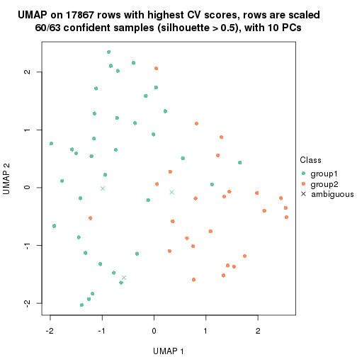
dimension_reduction(res, k = 3, method = "UMAP")
dimension_reduction(res, k = 4, method = "UMAP")
dimension_reduction(res, k = 5, method = "UMAP")
dimension_reduction(res, k = 6, method = "UMAP")
Following heatmap shows how subgroups are split when increasing k:
collect_classes(res)
Test correlation between subgroups and known annotations. If the known annotation is numeric, one-way ANOVA test is applied, and if the known annotation is discrete, chi-squared contingency table test is applied.
test_to_known_factors(res)
#> n disease.state(p) other(p) k
#> CV:hclust 60 0.0951 0.2004 2
#> CV:hclust 46 0.1645 0.3635 3
#> CV:hclust 46 0.0808 0.0539 4
#> CV:hclust 43 0.1539 0.1457 5
#> CV:hclust 48 0.0758 0.4765 6
If matrix rows can be associated to genes, consider to use GO_Enrichment(res,
...) to perform function enrichment for the signature genes.
The object with results only for a single top-value method and a single partition method can be extracted as:
res = res_list["CV", "kmeans"]
# you can also extract it by
# res = res_list["CV:kmeans"]
A summary of res and all the functions that can be applied to it:
res
#> A 'ConsensusPartition' object with k = 2, 3, 4, 5, 6.
#> On a matrix with 17867 rows and 63 columns.
#> Top rows (1000, 2000, 3000, 4000, 5000) are extracted by 'CV' method.
#> Subgroups are detected by 'kmeans' method.
#> Performed in total 1250 partitions by row resampling.
#> Best k for subgroups seems to be 2.
#>
#> Following methods can be applied to this 'ConsensusPartition' object:
#> [1] "cola_report" "collect_classes" "collect_plots"
#> [4] "collect_stats" "colnames" "compare_signatures"
#> [7] "consensus_heatmap" "dimension_reduction" "functional_enrichment"
#> [10] "get_anno_col" "get_anno" "get_classes"
#> [13] "get_consensus" "get_matrix" "get_membership"
#> [16] "get_param" "get_signatures" "get_stats"
#> [19] "is_best_k" "is_stable_k" "membership_heatmap"
#> [22] "ncol" "nrow" "plot_ecdf"
#> [25] "rownames" "select_partition_number" "show"
#> [28] "suggest_best_k" "test_to_known_factors"
collect_plots() function collects all the plots made from res for all k (number of partitions)
into one single page to provide an easy and fast comparison between different k.
collect_plots(res)
The plots are:
k and the heatmap of
predicted classes for each k.k.k.k.All the plots in panels can be made by individual functions and they are plotted later in this section.
select_partition_number() produces several plots showing different
statistics for choosing “optimized” k. There are following statistics:
k;k, the area increased is defined as \(A_k - A_{k-1}\).The detailed explanations of these statistics can be found in the cola vignette.
Generally speaking, lower PAC score, higher mean silhouette score or higher
concordance corresponds to better partition. Rand index and Jaccard index
measure how similar the current partition is compared to partition with k-1.
If they are too similar, we won't accept k is better than k-1.
select_partition_number(res)
The numeric values for all these statistics can be obtained by get_stats().
get_stats(res)
#> k 1-PAC mean_silhouette concordance area_increased Rand Jaccard
#> 2 2 0.838 0.860 0.930 0.4895 0.514 0.514
#> 3 3 0.683 0.831 0.894 0.3533 0.774 0.578
#> 4 4 0.650 0.668 0.826 0.1082 0.919 0.762
#> 5 5 0.672 0.534 0.648 0.0648 0.880 0.598
#> 6 6 0.667 0.453 0.684 0.0449 0.872 0.516
suggest_best_k() suggests the best \(k\) based on these statistics. The rules are as follows:
NA.suggest_best_k(res)
#> [1] 2
Following shows the table of the partitions (You need to click the show/hide
code output link to see it). The membership matrix (columns with name p*)
is inferred by
clue::cl_consensus()
function with the SE method. Basically the value in the membership matrix
represents the probability to belong to a certain group. The finall class
label for an item is determined with the group with highest probability it
belongs to.
In get_classes() function, the entropy is calculated from the membership
matrix and the silhouette score is calculated from the consensus matrix.
cbind(get_classes(res, k = 2), get_membership(res, k = 2))
#> class entropy silhouette p1 p2
#> GSM946745 1 0.9491 0.431 0.632 0.368
#> GSM946739 2 0.2948 0.941 0.052 0.948
#> GSM946738 1 0.9491 0.431 0.632 0.368
#> GSM946746 2 0.2948 0.941 0.052 0.948
#> GSM946747 1 0.2948 0.902 0.948 0.052
#> GSM946711 2 0.2948 0.941 0.052 0.948
#> GSM946760 2 0.2948 0.941 0.052 0.948
#> GSM946710 1 0.2043 0.905 0.968 0.032
#> GSM946761 2 0.2948 0.941 0.052 0.948
#> GSM946701 1 0.2948 0.902 0.948 0.052
#> GSM946703 1 0.2948 0.902 0.948 0.052
#> GSM946704 2 0.2948 0.941 0.052 0.948
#> GSM946706 1 0.0376 0.907 0.996 0.004
#> GSM946708 2 0.2948 0.941 0.052 0.948
#> GSM946709 2 0.0376 0.932 0.004 0.996
#> GSM946712 2 0.2948 0.941 0.052 0.948
#> GSM946720 1 0.2948 0.902 0.948 0.052
#> GSM946722 2 0.1633 0.924 0.024 0.976
#> GSM946753 1 0.2948 0.902 0.948 0.052
#> GSM946762 1 0.2948 0.902 0.948 0.052
#> GSM946707 1 0.0376 0.907 0.996 0.004
#> GSM946721 1 0.2948 0.902 0.948 0.052
#> GSM946719 1 0.0376 0.907 0.996 0.004
#> GSM946716 1 0.0376 0.907 0.996 0.004
#> GSM946751 1 0.7299 0.718 0.796 0.204
#> GSM946740 2 0.0376 0.932 0.004 0.996
#> GSM946741 1 0.2948 0.902 0.948 0.052
#> GSM946718 1 0.0376 0.907 0.996 0.004
#> GSM946737 1 0.0376 0.907 0.996 0.004
#> GSM946742 1 0.0376 0.907 0.996 0.004
#> GSM946749 1 0.0376 0.907 0.996 0.004
#> GSM946702 2 0.0000 0.935 0.000 1.000
#> GSM946713 1 0.0376 0.907 0.996 0.004
#> GSM946723 1 0.2948 0.902 0.948 0.052
#> GSM946736 1 0.0376 0.907 0.996 0.004
#> GSM946705 1 0.0376 0.907 0.996 0.004
#> GSM946715 1 0.2948 0.902 0.948 0.052
#> GSM946726 2 0.0000 0.935 0.000 1.000
#> GSM946727 1 0.9491 0.431 0.632 0.368
#> GSM946748 2 0.0000 0.935 0.000 1.000
#> GSM946756 1 0.0376 0.907 0.996 0.004
#> GSM946724 2 0.2948 0.941 0.052 0.948
#> GSM946733 1 0.2948 0.902 0.948 0.052
#> GSM946734 2 0.9491 0.438 0.368 0.632
#> GSM946754 1 0.2948 0.902 0.948 0.052
#> GSM946700 2 0.0000 0.935 0.000 1.000
#> GSM946714 2 0.0000 0.935 0.000 1.000
#> GSM946729 2 0.2948 0.941 0.052 0.948
#> GSM946731 1 0.3274 0.899 0.940 0.060
#> GSM946743 1 0.2948 0.902 0.948 0.052
#> GSM946744 2 0.2948 0.941 0.052 0.948
#> GSM946730 1 0.7299 0.718 0.796 0.204
#> GSM946755 1 0.0938 0.904 0.988 0.012
#> GSM946717 1 0.0376 0.907 0.996 0.004
#> GSM946725 2 0.9427 0.456 0.360 0.640
#> GSM946728 2 0.0000 0.935 0.000 1.000
#> GSM946752 1 0.0376 0.907 0.996 0.004
#> GSM946757 2 0.0000 0.935 0.000 1.000
#> GSM946758 2 0.0938 0.938 0.012 0.988
#> GSM946759 1 0.9129 0.515 0.672 0.328
#> GSM946732 1 0.0376 0.907 0.996 0.004
#> GSM946750 1 0.9460 0.439 0.636 0.364
#> GSM946735 2 0.2948 0.941 0.052 0.948
cbind(get_classes(res, k = 3), get_membership(res, k = 3))
#> class entropy silhouette p1 p2 p3
#> GSM946745 3 0.1170 0.8395 0.008 0.016 0.976
#> GSM946739 2 0.2527 0.8991 0.020 0.936 0.044
#> GSM946738 3 0.0000 0.8440 0.000 0.000 1.000
#> GSM946746 2 0.4465 0.8764 0.004 0.820 0.176
#> GSM946747 1 0.1031 0.9389 0.976 0.000 0.024
#> GSM946711 2 0.2527 0.8991 0.020 0.936 0.044
#> GSM946760 2 0.2590 0.9033 0.004 0.924 0.072
#> GSM946710 1 0.1289 0.9334 0.968 0.000 0.032
#> GSM946761 2 0.2527 0.8991 0.020 0.936 0.044
#> GSM946701 1 0.1031 0.9389 0.976 0.000 0.024
#> GSM946703 1 0.1031 0.9389 0.976 0.000 0.024
#> GSM946704 2 0.0983 0.9041 0.004 0.980 0.016
#> GSM946706 3 0.4291 0.8156 0.180 0.000 0.820
#> GSM946708 2 0.1267 0.9046 0.004 0.972 0.024
#> GSM946709 2 0.6486 0.8160 0.096 0.760 0.144
#> GSM946712 2 0.4465 0.8765 0.004 0.820 0.176
#> GSM946720 1 0.1031 0.9389 0.976 0.000 0.024
#> GSM946722 2 0.9293 0.2768 0.400 0.440 0.160
#> GSM946753 1 0.1031 0.9389 0.976 0.000 0.024
#> GSM946762 1 0.1031 0.9389 0.976 0.000 0.024
#> GSM946707 3 0.4399 0.8112 0.188 0.000 0.812
#> GSM946721 1 0.1031 0.9389 0.976 0.000 0.024
#> GSM946719 3 0.1964 0.8506 0.056 0.000 0.944
#> GSM946716 3 0.4399 0.8112 0.188 0.000 0.812
#> GSM946751 3 0.0892 0.8513 0.020 0.000 0.980
#> GSM946740 2 0.0661 0.9030 0.004 0.988 0.008
#> GSM946741 1 0.1031 0.9389 0.976 0.000 0.024
#> GSM946718 3 0.4399 0.8112 0.188 0.000 0.812
#> GSM946737 1 0.5926 0.3544 0.644 0.000 0.356
#> GSM946742 3 0.1529 0.8528 0.040 0.000 0.960
#> GSM946749 3 0.6235 0.3446 0.436 0.000 0.564
#> GSM946702 2 0.4293 0.8792 0.004 0.832 0.164
#> GSM946713 3 0.4235 0.8174 0.176 0.000 0.824
#> GSM946723 1 0.1129 0.9122 0.976 0.020 0.004
#> GSM946736 3 0.4399 0.8112 0.188 0.000 0.812
#> GSM946705 3 0.4399 0.8112 0.188 0.000 0.812
#> GSM946715 1 0.1031 0.9389 0.976 0.000 0.024
#> GSM946726 2 0.0237 0.9017 0.004 0.996 0.000
#> GSM946727 3 0.0848 0.8466 0.008 0.008 0.984
#> GSM946748 2 0.3193 0.9004 0.004 0.896 0.100
#> GSM946756 3 0.2152 0.8406 0.016 0.036 0.948
#> GSM946724 2 0.2527 0.8991 0.020 0.936 0.044
#> GSM946733 1 0.1031 0.9389 0.976 0.000 0.024
#> GSM946734 3 0.3826 0.7417 0.008 0.124 0.868
#> GSM946754 1 0.1031 0.9389 0.976 0.000 0.024
#> GSM946700 2 0.3918 0.8811 0.004 0.856 0.140
#> GSM946714 2 0.0475 0.9025 0.004 0.992 0.004
#> GSM946729 2 0.4293 0.8779 0.004 0.832 0.164
#> GSM946731 3 0.7566 0.0772 0.448 0.040 0.512
#> GSM946743 1 0.0983 0.9309 0.980 0.004 0.016
#> GSM946744 2 0.2527 0.8991 0.020 0.936 0.044
#> GSM946730 3 0.0892 0.8513 0.020 0.000 0.980
#> GSM946755 3 0.1411 0.8526 0.036 0.000 0.964
#> GSM946717 3 0.4399 0.8112 0.188 0.000 0.812
#> GSM946725 3 0.0475 0.8390 0.004 0.004 0.992
#> GSM946728 2 0.0475 0.9025 0.004 0.992 0.004
#> GSM946752 3 0.4399 0.8112 0.188 0.000 0.812
#> GSM946757 2 0.3918 0.8811 0.004 0.856 0.140
#> GSM946758 2 0.1267 0.9046 0.004 0.972 0.024
#> GSM946759 3 0.0829 0.8488 0.012 0.004 0.984
#> GSM946732 1 0.5905 0.3657 0.648 0.000 0.352
#> GSM946750 3 0.0237 0.8442 0.000 0.004 0.996
#> GSM946735 2 0.4465 0.8765 0.004 0.820 0.176
cbind(get_classes(res, k = 4), get_membership(res, k = 4))
#> class entropy silhouette p1 p2 p3 p4
#> GSM946745 3 0.5778 0.3980 0.000 0.472 0.500 0.028
#> GSM946739 4 0.3583 0.8131 0.000 0.180 0.004 0.816
#> GSM946738 3 0.2739 0.8201 0.000 0.060 0.904 0.036
#> GSM946746 2 0.1557 0.6759 0.000 0.944 0.000 0.056
#> GSM946747 1 0.0672 0.9176 0.984 0.008 0.000 0.008
#> GSM946711 4 0.3448 0.8128 0.000 0.168 0.004 0.828
#> GSM946760 2 0.4855 -0.0361 0.000 0.600 0.000 0.400
#> GSM946710 1 0.4598 0.7342 0.792 0.044 0.160 0.004
#> GSM946761 4 0.3494 0.8154 0.000 0.172 0.004 0.824
#> GSM946701 1 0.0000 0.9193 1.000 0.000 0.000 0.000
#> GSM946703 1 0.0524 0.9184 0.988 0.004 0.000 0.008
#> GSM946704 4 0.4933 0.5144 0.000 0.432 0.000 0.568
#> GSM946706 3 0.1305 0.8083 0.004 0.000 0.960 0.036
#> GSM946708 2 0.4925 -0.0685 0.000 0.572 0.000 0.428
#> GSM946709 2 0.0895 0.6733 0.020 0.976 0.000 0.004
#> GSM946712 2 0.2530 0.6589 0.000 0.896 0.004 0.100
#> GSM946720 1 0.0188 0.9192 0.996 0.000 0.000 0.004
#> GSM946722 2 0.2635 0.6214 0.072 0.908 0.016 0.004
#> GSM946753 1 0.0000 0.9193 1.000 0.000 0.000 0.000
#> GSM946762 1 0.0469 0.9176 0.988 0.012 0.000 0.000
#> GSM946707 3 0.2310 0.8086 0.068 0.008 0.920 0.004
#> GSM946721 1 0.0000 0.9193 1.000 0.000 0.000 0.000
#> GSM946719 3 0.2804 0.8212 0.016 0.060 0.908 0.016
#> GSM946716 3 0.2310 0.8082 0.068 0.008 0.920 0.004
#> GSM946751 3 0.2739 0.8201 0.000 0.060 0.904 0.036
#> GSM946740 2 0.4697 0.0360 0.000 0.644 0.000 0.356
#> GSM946741 1 0.0188 0.9193 0.996 0.004 0.000 0.000
#> GSM946718 3 0.3029 0.8112 0.068 0.028 0.896 0.008
#> GSM946737 1 0.5712 0.2978 0.572 0.012 0.404 0.012
#> GSM946742 3 0.1389 0.8094 0.000 0.000 0.952 0.048
#> GSM946749 3 0.5480 0.6695 0.140 0.000 0.736 0.124
#> GSM946702 2 0.1118 0.6798 0.000 0.964 0.000 0.036
#> GSM946713 3 0.3637 0.8097 0.052 0.080 0.864 0.004
#> GSM946723 1 0.0937 0.9140 0.976 0.012 0.000 0.012
#> GSM946736 3 0.3157 0.7648 0.004 0.000 0.852 0.144
#> GSM946705 3 0.3157 0.7648 0.004 0.000 0.852 0.144
#> GSM946715 1 0.0376 0.9193 0.992 0.004 0.000 0.004
#> GSM946726 4 0.4855 0.6009 0.000 0.400 0.000 0.600
#> GSM946727 3 0.5760 0.4473 0.000 0.448 0.524 0.028
#> GSM946748 2 0.4175 0.4968 0.012 0.776 0.000 0.212
#> GSM946756 3 0.4741 0.7221 0.000 0.228 0.744 0.028
#> GSM946724 4 0.3448 0.8128 0.000 0.168 0.004 0.828
#> GSM946733 1 0.0188 0.9192 0.996 0.000 0.000 0.004
#> GSM946734 3 0.6120 0.4235 0.000 0.432 0.520 0.048
#> GSM946754 1 0.0000 0.9193 1.000 0.000 0.000 0.000
#> GSM946700 2 0.0707 0.6813 0.000 0.980 0.000 0.020
#> GSM946714 2 0.4977 -0.3475 0.000 0.540 0.000 0.460
#> GSM946729 2 0.0817 0.6817 0.000 0.976 0.000 0.024
#> GSM946731 2 0.5997 0.3723 0.084 0.680 0.232 0.004
#> GSM946743 1 0.0469 0.9176 0.988 0.012 0.000 0.000
#> GSM946744 4 0.3494 0.8154 0.000 0.172 0.004 0.824
#> GSM946730 3 0.2739 0.8201 0.000 0.060 0.904 0.036
#> GSM946755 3 0.4253 0.7540 0.000 0.208 0.776 0.016
#> GSM946717 3 0.3157 0.7648 0.004 0.000 0.852 0.144
#> GSM946725 3 0.5986 0.6009 0.000 0.320 0.620 0.060
#> GSM946728 2 0.4804 -0.0759 0.000 0.616 0.000 0.384
#> GSM946752 3 0.1305 0.8083 0.004 0.000 0.960 0.036
#> GSM946757 2 0.0707 0.6812 0.000 0.980 0.000 0.020
#> GSM946758 4 0.4981 0.3806 0.000 0.464 0.000 0.536
#> GSM946759 3 0.5157 0.6697 0.000 0.284 0.688 0.028
#> GSM946732 1 0.6460 0.4317 0.608 0.064 0.316 0.012
#> GSM946750 3 0.2739 0.8201 0.000 0.060 0.904 0.036
#> GSM946735 2 0.2530 0.6589 0.000 0.896 0.004 0.100
cbind(get_classes(res, k = 5), get_membership(res, k = 5))
#> class entropy silhouette p1 p2 p3 p4 p5
#> GSM946745 2 0.4203 0.4646 0.000 0.760 0.052 0.000 0.188
#> GSM946739 4 0.2446 0.9187 0.000 0.044 0.000 0.900 0.056
#> GSM946738 3 0.4744 0.5836 0.000 0.408 0.572 0.000 0.020
#> GSM946746 5 0.4835 0.5078 0.000 0.380 0.000 0.028 0.592
#> GSM946747 1 0.1498 0.8905 0.952 0.024 0.000 0.008 0.016
#> GSM946711 4 0.1704 0.9697 0.000 0.004 0.000 0.928 0.068
#> GSM946760 5 0.6100 0.4034 0.000 0.184 0.000 0.252 0.564
#> GSM946710 1 0.5955 0.3565 0.552 0.372 0.048 0.020 0.008
#> GSM946761 4 0.1608 0.9708 0.000 0.000 0.000 0.928 0.072
#> GSM946701 1 0.1626 0.8883 0.940 0.044 0.000 0.016 0.000
#> GSM946703 1 0.1087 0.8937 0.968 0.016 0.000 0.008 0.008
#> GSM946704 5 0.5960 0.1859 0.000 0.116 0.000 0.368 0.516
#> GSM946706 3 0.3612 0.6412 0.000 0.268 0.732 0.000 0.000
#> GSM946708 5 0.5915 0.3757 0.000 0.124 0.000 0.324 0.552
#> GSM946709 5 0.3196 0.6012 0.000 0.192 0.000 0.004 0.804
#> GSM946712 5 0.5195 0.5024 0.000 0.388 0.000 0.048 0.564
#> GSM946720 1 0.1988 0.8903 0.928 0.048 0.000 0.016 0.008
#> GSM946722 5 0.5283 0.4630 0.032 0.384 0.000 0.012 0.572
#> GSM946753 1 0.0955 0.8938 0.968 0.028 0.000 0.004 0.000
#> GSM946762 1 0.1095 0.8920 0.968 0.008 0.000 0.012 0.012
#> GSM946707 3 0.4692 0.4767 0.008 0.460 0.528 0.004 0.000
#> GSM946721 1 0.1522 0.8896 0.944 0.044 0.000 0.012 0.000
#> GSM946719 3 0.4793 0.5569 0.000 0.436 0.544 0.000 0.020
#> GSM946716 3 0.4437 0.4528 0.004 0.464 0.532 0.000 0.000
#> GSM946751 3 0.4736 0.5918 0.000 0.404 0.576 0.000 0.020
#> GSM946740 5 0.3074 0.4584 0.000 0.000 0.000 0.196 0.804
#> GSM946741 1 0.0162 0.8958 0.996 0.000 0.000 0.004 0.000
#> GSM946718 2 0.4945 -0.4603 0.012 0.504 0.476 0.004 0.004
#> GSM946737 1 0.7018 -0.1427 0.400 0.320 0.272 0.004 0.004
#> GSM946742 3 0.3661 0.6402 0.000 0.276 0.724 0.000 0.000
#> GSM946749 3 0.4456 0.3541 0.072 0.152 0.768 0.008 0.000
#> GSM946702 5 0.4384 0.5443 0.000 0.324 0.000 0.016 0.660
#> GSM946713 2 0.4770 -0.1233 0.004 0.608 0.372 0.004 0.012
#> GSM946723 1 0.1280 0.8908 0.960 0.008 0.000 0.008 0.024
#> GSM946736 3 0.0703 0.4987 0.000 0.000 0.976 0.024 0.000
#> GSM946705 3 0.0865 0.4980 0.000 0.004 0.972 0.024 0.000
#> GSM946715 1 0.0579 0.8952 0.984 0.000 0.000 0.008 0.008
#> GSM946726 5 0.4451 -0.1194 0.000 0.004 0.000 0.492 0.504
#> GSM946727 2 0.4455 0.4667 0.000 0.744 0.068 0.000 0.188
#> GSM946748 5 0.6862 0.3969 0.028 0.256 0.000 0.192 0.524
#> GSM946756 2 0.6155 0.2256 0.000 0.556 0.252 0.000 0.192
#> GSM946724 4 0.1357 0.9619 0.000 0.004 0.000 0.948 0.048
#> GSM946733 1 0.1186 0.8943 0.964 0.020 0.000 0.008 0.008
#> GSM946734 2 0.5939 0.4060 0.000 0.624 0.188 0.008 0.180
#> GSM946754 1 0.1444 0.8911 0.948 0.040 0.000 0.012 0.000
#> GSM946700 5 0.2723 0.6083 0.000 0.124 0.000 0.012 0.864
#> GSM946714 5 0.3816 0.3166 0.000 0.000 0.000 0.304 0.696
#> GSM946729 5 0.4184 0.5690 0.000 0.284 0.000 0.016 0.700
#> GSM946731 2 0.7167 0.1134 0.072 0.440 0.088 0.004 0.396
#> GSM946743 1 0.0727 0.8929 0.980 0.004 0.000 0.004 0.012
#> GSM946744 4 0.1608 0.9708 0.000 0.000 0.000 0.928 0.072
#> GSM946730 3 0.4726 0.5951 0.000 0.400 0.580 0.000 0.020
#> GSM946755 2 0.4713 0.2031 0.000 0.676 0.280 0.000 0.044
#> GSM946717 3 0.0703 0.4987 0.000 0.000 0.976 0.024 0.000
#> GSM946725 2 0.5682 0.4254 0.000 0.656 0.172 0.008 0.164
#> GSM946728 5 0.3074 0.4584 0.000 0.000 0.000 0.196 0.804
#> GSM946752 3 0.3508 0.6363 0.000 0.252 0.748 0.000 0.000
#> GSM946757 5 0.1430 0.6057 0.000 0.052 0.000 0.004 0.944
#> GSM946758 5 0.5597 0.0879 0.000 0.072 0.000 0.440 0.488
#> GSM946759 2 0.5888 0.2556 0.000 0.580 0.280 0.000 0.140
#> GSM946732 2 0.6986 -0.0160 0.392 0.448 0.124 0.008 0.028
#> GSM946750 3 0.4744 0.5800 0.000 0.408 0.572 0.000 0.020
#> GSM946735 5 0.5185 0.5049 0.000 0.384 0.000 0.048 0.568
cbind(get_classes(res, k = 6), get_membership(res, k = 6))
#> class entropy silhouette p1 p2 p3 p4 p5 p6
#> GSM946745 6 0.7145 0.3314 0.000 0.284 0.292 0.000 0.076 0.348
#> GSM946739 4 0.1592 0.9334 0.000 0.032 0.000 0.940 0.020 0.008
#> GSM946738 3 0.1444 0.4648 0.000 0.072 0.928 0.000 0.000 0.000
#> GSM946746 2 0.4384 0.3518 0.000 0.748 0.004 0.008 0.108 0.132
#> GSM946747 1 0.1592 0.8865 0.940 0.008 0.000 0.000 0.020 0.032
#> GSM946711 4 0.0717 0.9753 0.000 0.008 0.000 0.976 0.016 0.000
#> GSM946760 5 0.7237 0.4210 0.000 0.292 0.000 0.136 0.404 0.168
#> GSM946710 1 0.8149 -0.0373 0.352 0.288 0.152 0.000 0.056 0.152
#> GSM946761 4 0.0717 0.9753 0.000 0.008 0.000 0.976 0.016 0.000
#> GSM946701 1 0.2389 0.8772 0.888 0.000 0.000 0.000 0.052 0.060
#> GSM946703 1 0.1320 0.8881 0.948 0.000 0.000 0.000 0.036 0.016
#> GSM946704 5 0.7164 0.4930 0.000 0.224 0.000 0.168 0.452 0.156
#> GSM946706 3 0.2901 0.4532 0.000 0.000 0.840 0.000 0.032 0.128
#> GSM946708 2 0.5443 -0.3309 0.000 0.504 0.000 0.108 0.384 0.004
#> GSM946709 2 0.3809 0.1894 0.004 0.732 0.000 0.000 0.240 0.024
#> GSM946712 2 0.1457 0.5054 0.000 0.948 0.028 0.016 0.004 0.004
#> GSM946720 1 0.2956 0.8746 0.848 0.000 0.000 0.000 0.088 0.064
#> GSM946722 2 0.1121 0.4947 0.008 0.964 0.004 0.000 0.008 0.016
#> GSM946753 1 0.2401 0.8820 0.892 0.000 0.000 0.004 0.060 0.044
#> GSM946762 1 0.1620 0.8790 0.940 0.024 0.000 0.000 0.012 0.024
#> GSM946707 3 0.3767 0.3415 0.016 0.000 0.720 0.000 0.004 0.260
#> GSM946721 1 0.2852 0.8750 0.856 0.000 0.000 0.000 0.080 0.064
#> GSM946719 3 0.1934 0.4607 0.000 0.040 0.916 0.000 0.000 0.044
#> GSM946716 3 0.4019 0.2645 0.012 0.004 0.652 0.000 0.000 0.332
#> GSM946751 3 0.1387 0.4675 0.000 0.068 0.932 0.000 0.000 0.000
#> GSM946740 5 0.4933 0.6778 0.000 0.300 0.000 0.080 0.616 0.004
#> GSM946741 1 0.0405 0.8902 0.988 0.000 0.000 0.004 0.008 0.000
#> GSM946718 3 0.4830 0.1523 0.012 0.028 0.564 0.004 0.000 0.392
#> GSM946737 3 0.6375 -0.0514 0.280 0.004 0.444 0.000 0.012 0.260
#> GSM946742 3 0.2771 0.4546 0.000 0.000 0.852 0.000 0.032 0.116
#> GSM946749 6 0.6080 -0.1431 0.076 0.000 0.264 0.004 0.080 0.576
#> GSM946702 2 0.3285 0.4410 0.012 0.836 0.000 0.012 0.120 0.020
#> GSM946713 3 0.5827 -0.1554 0.012 0.112 0.444 0.000 0.004 0.428
#> GSM946723 1 0.0912 0.8872 0.972 0.008 0.000 0.004 0.012 0.004
#> GSM946736 3 0.5820 0.1909 0.000 0.000 0.416 0.000 0.184 0.400
#> GSM946705 3 0.5820 0.1909 0.000 0.000 0.416 0.000 0.184 0.400
#> GSM946715 1 0.0935 0.8880 0.964 0.000 0.000 0.004 0.032 0.000
#> GSM946726 5 0.5323 0.5611 0.000 0.112 0.000 0.268 0.608 0.012
#> GSM946727 2 0.5231 0.1663 0.000 0.612 0.252 0.000 0.004 0.132
#> GSM946748 2 0.6612 0.2564 0.056 0.580 0.000 0.068 0.224 0.072
#> GSM946756 3 0.6839 -0.3166 0.000 0.116 0.444 0.000 0.116 0.324
#> GSM946724 4 0.0436 0.9648 0.000 0.004 0.000 0.988 0.004 0.004
#> GSM946733 1 0.1564 0.8900 0.936 0.000 0.000 0.000 0.040 0.024
#> GSM946734 2 0.4984 0.0406 0.000 0.492 0.440 0.000 0.000 0.068
#> GSM946754 1 0.2568 0.8767 0.876 0.000 0.000 0.000 0.056 0.068
#> GSM946700 2 0.5520 -0.4600 0.000 0.448 0.000 0.008 0.444 0.100
#> GSM946714 5 0.5120 0.6692 0.000 0.280 0.000 0.120 0.600 0.000
#> GSM946729 2 0.4707 0.1724 0.000 0.700 0.004 0.004 0.188 0.104
#> GSM946731 6 0.8460 0.3021 0.068 0.272 0.264 0.004 0.116 0.276
#> GSM946743 1 0.1007 0.8877 0.968 0.008 0.000 0.004 0.004 0.016
#> GSM946744 4 0.0717 0.9753 0.000 0.008 0.000 0.976 0.016 0.000
#> GSM946730 3 0.1152 0.4737 0.000 0.044 0.952 0.000 0.000 0.004
#> GSM946755 6 0.6353 0.2364 0.000 0.160 0.348 0.000 0.036 0.456
#> GSM946717 3 0.5820 0.1909 0.000 0.000 0.416 0.000 0.184 0.400
#> GSM946725 2 0.4989 0.1628 0.000 0.592 0.316 0.000 0.000 0.092
#> GSM946728 5 0.4916 0.6780 0.000 0.296 0.000 0.080 0.620 0.004
#> GSM946752 3 0.3385 0.4395 0.000 0.000 0.788 0.000 0.032 0.180
#> GSM946757 5 0.4613 0.4854 0.000 0.440 0.000 0.008 0.528 0.024
#> GSM946758 5 0.5909 0.4291 0.000 0.400 0.000 0.176 0.420 0.004
#> GSM946759 3 0.4808 -0.1011 0.000 0.472 0.476 0.000 0.000 0.052
#> GSM946732 6 0.7368 0.2301 0.284 0.132 0.144 0.000 0.012 0.428
#> GSM946750 3 0.2007 0.4567 0.000 0.032 0.920 0.000 0.012 0.036
#> GSM946735 2 0.1722 0.5046 0.000 0.936 0.036 0.016 0.004 0.008
Heatmaps for the consensus matrix. It visualizes the probability of two samples to be in a same group.
consensus_heatmap(res, k = 2)
consensus_heatmap(res, k = 3)
consensus_heatmap(res, k = 4)
consensus_heatmap(res, k = 5)
consensus_heatmap(res, k = 6)
Heatmaps for the membership of samples in all partitions to see how consistent they are:
membership_heatmap(res, k = 2)
membership_heatmap(res, k = 3)
membership_heatmap(res, k = 4)
membership_heatmap(res, k = 5)
membership_heatmap(res, k = 6)
As soon as we have had the classes for columns, we can look for signatures which are significantly different between classes which can be candidate marks for certain classes. Following are the heatmaps for signatures.
Signature heatmaps where rows are scaled:
get_signatures(res, k = 2)
get_signatures(res, k = 3)
get_signatures(res, k = 4)
get_signatures(res, k = 5)
get_signatures(res, k = 6)
Signature heatmaps where rows are not scaled:
get_signatures(res, k = 2, scale_rows = FALSE)
get_signatures(res, k = 3, scale_rows = FALSE)
get_signatures(res, k = 4, scale_rows = FALSE)
get_signatures(res, k = 5, scale_rows = FALSE)
get_signatures(res, k = 6, scale_rows = FALSE)
Compare the overlap of signatures from different k:
compare_signatures(res)
get_signature() returns a data frame invisibly. TO get the list of signatures, the function
call should be assigned to a variable explicitly. In following code, if plot argument is set
to FALSE, no heatmap is plotted while only the differential analysis is performed.
# code only for demonstration
tb = get_signature(res, k = ..., plot = FALSE)
An example of the output of tb is:
#> which_row fdr mean_1 mean_2 scaled_mean_1 scaled_mean_2 km
#> 1 38 0.042760348 8.373488 9.131774 -0.5533452 0.5164555 1
#> 2 40 0.018707592 7.106213 8.469186 -0.6173731 0.5762149 1
#> 3 55 0.019134737 10.221463 11.207825 -0.6159697 0.5749050 1
#> 4 59 0.006059896 5.921854 7.869574 -0.6899429 0.6439467 1
#> 5 60 0.018055526 8.928898 10.211722 -0.6204761 0.5791110 1
#> 6 98 0.009384629 15.714769 14.887706 0.6635654 -0.6193277 2
...
The columns in tb are:
which_row: row indices corresponding to the input matrix.fdr: FDR for the differential test. mean_x: The mean value in group x.scaled_mean_x: The mean value in group x after rows are scaled.km: Row groups if k-means clustering is applied to rows.UMAP plot which shows how samples are separated.
dimension_reduction(res, k = 2, method = "UMAP")
dimension_reduction(res, k = 3, method = "UMAP")
dimension_reduction(res, k = 4, method = "UMAP")
dimension_reduction(res, k = 5, method = "UMAP")
dimension_reduction(res, k = 6, method = "UMAP")
Following heatmap shows how subgroups are split when increasing k:
collect_classes(res)
Test correlation between subgroups and known annotations. If the known annotation is numeric, one-way ANOVA test is applied, and if the known annotation is discrete, chi-squared contingency table test is applied.
test_to_known_factors(res)
#> n disease.state(p) other(p) k
#> CV:kmeans 57 0.1682 0.267 2
#> CV:kmeans 58 0.4535 0.356 3
#> CV:kmeans 50 0.1000 0.291 4
#> CV:kmeans 34 0.0616 0.327 5
#> CV:kmeans 24 0.0333 0.290 6
If matrix rows can be associated to genes, consider to use GO_Enrichment(res,
...) to perform function enrichment for the signature genes.
The object with results only for a single top-value method and a single partition method can be extracted as:
res = res_list["CV", "skmeans"]
# you can also extract it by
# res = res_list["CV:skmeans"]
A summary of res and all the functions that can be applied to it:
res
#> A 'ConsensusPartition' object with k = 2, 3, 4, 5, 6.
#> On a matrix with 17867 rows and 63 columns.
#> Top rows (1000, 2000, 3000, 4000, 5000) are extracted by 'CV' method.
#> Subgroups are detected by 'skmeans' method.
#> Performed in total 1250 partitions by row resampling.
#> Best k for subgroups seems to be 3.
#>
#> Following methods can be applied to this 'ConsensusPartition' object:
#> [1] "cola_report" "collect_classes" "collect_plots"
#> [4] "collect_stats" "colnames" "compare_signatures"
#> [7] "consensus_heatmap" "dimension_reduction" "functional_enrichment"
#> [10] "get_anno_col" "get_anno" "get_classes"
#> [13] "get_consensus" "get_matrix" "get_membership"
#> [16] "get_param" "get_signatures" "get_stats"
#> [19] "is_best_k" "is_stable_k" "membership_heatmap"
#> [22] "ncol" "nrow" "plot_ecdf"
#> [25] "rownames" "select_partition_number" "show"
#> [28] "suggest_best_k" "test_to_known_factors"
collect_plots() function collects all the plots made from res for all k (number of partitions)
into one single page to provide an easy and fast comparison between different k.
collect_plots(res)
The plots are:
k and the heatmap of
predicted classes for each k.k.k.k.All the plots in panels can be made by individual functions and they are plotted later in this section.
select_partition_number() produces several plots showing different
statistics for choosing “optimized” k. There are following statistics:
k;k, the area increased is defined as \(A_k - A_{k-1}\).The detailed explanations of these statistics can be found in the cola vignette.
Generally speaking, lower PAC score, higher mean silhouette score or higher
concordance corresponds to better partition. Rand index and Jaccard index
measure how similar the current partition is compared to partition with k-1.
If they are too similar, we won't accept k is better than k-1.
select_partition_number(res)
The numeric values for all these statistics can be obtained by get_stats().
get_stats(res)
#> k 1-PAC mean_silhouette concordance area_increased Rand Jaccard
#> 2 2 0.933 0.945 0.975 0.5077 0.493 0.493
#> 3 3 0.957 0.942 0.975 0.3245 0.717 0.487
#> 4 4 0.697 0.592 0.798 0.1122 0.926 0.778
#> 5 5 0.723 0.675 0.811 0.0652 0.859 0.532
#> 6 6 0.722 0.584 0.763 0.0382 0.951 0.766
suggest_best_k() suggests the best \(k\) based on these statistics. The rules are as follows:
NA.suggest_best_k(res)
#> [1] 3
#> attr(,"optional")
#> [1] 2
There is also optional best \(k\) = 2 that is worth to check.
Following shows the table of the partitions (You need to click the show/hide
code output link to see it). The membership matrix (columns with name p*)
is inferred by
clue::cl_consensus()
function with the SE method. Basically the value in the membership matrix
represents the probability to belong to a certain group. The finall class
label for an item is determined with the group with highest probability it
belongs to.
In get_classes() function, the entropy is calculated from the membership
matrix and the silhouette score is calculated from the consensus matrix.
cbind(get_classes(res, k = 2), get_membership(res, k = 2))
#> class entropy silhouette p1 p2
#> GSM946745 2 0.000 0.984 0.000 1.000
#> GSM946739 2 0.000 0.984 0.000 1.000
#> GSM946738 2 0.000 0.984 0.000 1.000
#> GSM946746 2 0.000 0.984 0.000 1.000
#> GSM946747 1 0.000 0.963 1.000 0.000
#> GSM946711 2 0.000 0.984 0.000 1.000
#> GSM946760 2 0.000 0.984 0.000 1.000
#> GSM946710 1 0.000 0.963 1.000 0.000
#> GSM946761 2 0.000 0.984 0.000 1.000
#> GSM946701 1 0.000 0.963 1.000 0.000
#> GSM946703 1 0.000 0.963 1.000 0.000
#> GSM946704 2 0.000 0.984 0.000 1.000
#> GSM946706 1 0.000 0.963 1.000 0.000
#> GSM946708 2 0.000 0.984 0.000 1.000
#> GSM946709 2 0.000 0.984 0.000 1.000
#> GSM946712 2 0.000 0.984 0.000 1.000
#> GSM946720 1 0.000 0.963 1.000 0.000
#> GSM946722 2 0.000 0.984 0.000 1.000
#> GSM946753 1 0.000 0.963 1.000 0.000
#> GSM946762 1 0.000 0.963 1.000 0.000
#> GSM946707 1 0.000 0.963 1.000 0.000
#> GSM946721 1 0.000 0.963 1.000 0.000
#> GSM946719 1 0.000 0.963 1.000 0.000
#> GSM946716 1 0.000 0.963 1.000 0.000
#> GSM946751 1 0.895 0.551 0.688 0.312
#> GSM946740 2 0.000 0.984 0.000 1.000
#> GSM946741 1 0.000 0.963 1.000 0.000
#> GSM946718 1 0.000 0.963 1.000 0.000
#> GSM946737 1 0.000 0.963 1.000 0.000
#> GSM946742 1 0.000 0.963 1.000 0.000
#> GSM946749 1 0.000 0.963 1.000 0.000
#> GSM946702 2 0.000 0.984 0.000 1.000
#> GSM946713 1 0.000 0.963 1.000 0.000
#> GSM946723 1 0.000 0.963 1.000 0.000
#> GSM946736 1 0.000 0.963 1.000 0.000
#> GSM946705 1 0.000 0.963 1.000 0.000
#> GSM946715 1 0.000 0.963 1.000 0.000
#> GSM946726 2 0.000 0.984 0.000 1.000
#> GSM946727 2 0.000 0.984 0.000 1.000
#> GSM946748 2 0.000 0.984 0.000 1.000
#> GSM946756 1 0.456 0.878 0.904 0.096
#> GSM946724 2 0.000 0.984 0.000 1.000
#> GSM946733 1 0.000 0.963 1.000 0.000
#> GSM946734 2 0.689 0.775 0.184 0.816
#> GSM946754 1 0.000 0.963 1.000 0.000
#> GSM946700 2 0.000 0.984 0.000 1.000
#> GSM946714 2 0.000 0.984 0.000 1.000
#> GSM946729 2 0.000 0.984 0.000 1.000
#> GSM946731 1 0.714 0.764 0.804 0.196
#> GSM946743 1 0.000 0.963 1.000 0.000
#> GSM946744 2 0.000 0.984 0.000 1.000
#> GSM946730 1 0.895 0.551 0.688 0.312
#> GSM946755 1 0.722 0.759 0.800 0.200
#> GSM946717 1 0.000 0.963 1.000 0.000
#> GSM946725 2 0.000 0.984 0.000 1.000
#> GSM946728 2 0.000 0.984 0.000 1.000
#> GSM946752 1 0.000 0.963 1.000 0.000
#> GSM946757 2 0.000 0.984 0.000 1.000
#> GSM946758 2 0.000 0.984 0.000 1.000
#> GSM946759 2 0.714 0.757 0.196 0.804
#> GSM946732 1 0.000 0.963 1.000 0.000
#> GSM946750 2 0.311 0.931 0.056 0.944
#> GSM946735 2 0.000 0.984 0.000 1.000
cbind(get_classes(res, k = 3), get_membership(res, k = 3))
#> class entropy silhouette p1 p2 p3
#> GSM946745 3 0.1031 0.962 0.000 0.024 0.976
#> GSM946739 2 0.0000 0.978 0.000 1.000 0.000
#> GSM946738 3 0.0000 0.980 0.000 0.000 1.000
#> GSM946746 2 0.0000 0.978 0.000 1.000 0.000
#> GSM946747 1 0.0000 0.954 1.000 0.000 0.000
#> GSM946711 2 0.0000 0.978 0.000 1.000 0.000
#> GSM946760 2 0.0000 0.978 0.000 1.000 0.000
#> GSM946710 1 0.0000 0.954 1.000 0.000 0.000
#> GSM946761 2 0.0000 0.978 0.000 1.000 0.000
#> GSM946701 1 0.0000 0.954 1.000 0.000 0.000
#> GSM946703 1 0.0000 0.954 1.000 0.000 0.000
#> GSM946704 2 0.0000 0.978 0.000 1.000 0.000
#> GSM946706 3 0.0000 0.980 0.000 0.000 1.000
#> GSM946708 2 0.0000 0.978 0.000 1.000 0.000
#> GSM946709 2 0.3816 0.818 0.148 0.852 0.000
#> GSM946712 2 0.0000 0.978 0.000 1.000 0.000
#> GSM946720 1 0.0000 0.954 1.000 0.000 0.000
#> GSM946722 1 0.5926 0.420 0.644 0.356 0.000
#> GSM946753 1 0.0000 0.954 1.000 0.000 0.000
#> GSM946762 1 0.0000 0.954 1.000 0.000 0.000
#> GSM946707 3 0.1964 0.939 0.056 0.000 0.944
#> GSM946721 1 0.0000 0.954 1.000 0.000 0.000
#> GSM946719 3 0.0000 0.980 0.000 0.000 1.000
#> GSM946716 3 0.0592 0.973 0.012 0.000 0.988
#> GSM946751 3 0.0000 0.980 0.000 0.000 1.000
#> GSM946740 2 0.0000 0.978 0.000 1.000 0.000
#> GSM946741 1 0.0000 0.954 1.000 0.000 0.000
#> GSM946718 3 0.2878 0.898 0.096 0.000 0.904
#> GSM946737 1 0.4605 0.729 0.796 0.000 0.204
#> GSM946742 3 0.0000 0.980 0.000 0.000 1.000
#> GSM946749 3 0.4346 0.785 0.184 0.000 0.816
#> GSM946702 2 0.0000 0.978 0.000 1.000 0.000
#> GSM946713 3 0.1031 0.965 0.024 0.000 0.976
#> GSM946723 1 0.0000 0.954 1.000 0.000 0.000
#> GSM946736 3 0.0000 0.980 0.000 0.000 1.000
#> GSM946705 3 0.0000 0.980 0.000 0.000 1.000
#> GSM946715 1 0.0000 0.954 1.000 0.000 0.000
#> GSM946726 2 0.0000 0.978 0.000 1.000 0.000
#> GSM946727 3 0.0747 0.969 0.000 0.016 0.984
#> GSM946748 2 0.0237 0.975 0.004 0.996 0.000
#> GSM946756 3 0.0000 0.980 0.000 0.000 1.000
#> GSM946724 2 0.0000 0.978 0.000 1.000 0.000
#> GSM946733 1 0.0000 0.954 1.000 0.000 0.000
#> GSM946734 2 0.5465 0.590 0.000 0.712 0.288
#> GSM946754 1 0.0000 0.954 1.000 0.000 0.000
#> GSM946700 2 0.0000 0.978 0.000 1.000 0.000
#> GSM946714 2 0.0000 0.978 0.000 1.000 0.000
#> GSM946729 2 0.0000 0.978 0.000 1.000 0.000
#> GSM946731 1 0.0237 0.951 0.996 0.000 0.004
#> GSM946743 1 0.0000 0.954 1.000 0.000 0.000
#> GSM946744 2 0.0000 0.978 0.000 1.000 0.000
#> GSM946730 3 0.0000 0.980 0.000 0.000 1.000
#> GSM946755 3 0.0000 0.980 0.000 0.000 1.000
#> GSM946717 3 0.0000 0.980 0.000 0.000 1.000
#> GSM946725 3 0.0000 0.980 0.000 0.000 1.000
#> GSM946728 2 0.0000 0.978 0.000 1.000 0.000
#> GSM946752 3 0.0000 0.980 0.000 0.000 1.000
#> GSM946757 2 0.0000 0.978 0.000 1.000 0.000
#> GSM946758 2 0.0000 0.978 0.000 1.000 0.000
#> GSM946759 3 0.0237 0.977 0.000 0.004 0.996
#> GSM946732 1 0.4178 0.775 0.828 0.000 0.172
#> GSM946750 3 0.0000 0.980 0.000 0.000 1.000
#> GSM946735 2 0.0000 0.978 0.000 1.000 0.000
cbind(get_classes(res, k = 4), get_membership(res, k = 4))
#> class entropy silhouette p1 p2 p3 p4
#> GSM946745 4 0.7101 0.2471 0.000 0.360 0.136 0.504
#> GSM946739 2 0.4866 0.5371 0.000 0.596 0.000 0.404
#> GSM946738 3 0.2647 0.7782 0.000 0.000 0.880 0.120
#> GSM946746 2 0.4164 0.4434 0.000 0.736 0.000 0.264
#> GSM946747 1 0.0000 0.8904 1.000 0.000 0.000 0.000
#> GSM946711 2 0.4830 0.5482 0.000 0.608 0.000 0.392
#> GSM946760 2 0.3172 0.4842 0.000 0.840 0.000 0.160
#> GSM946710 1 0.0707 0.8775 0.980 0.000 0.000 0.020
#> GSM946761 2 0.4817 0.5494 0.000 0.612 0.000 0.388
#> GSM946701 1 0.0000 0.8904 1.000 0.000 0.000 0.000
#> GSM946703 1 0.0000 0.8904 1.000 0.000 0.000 0.000
#> GSM946704 2 0.2469 0.5467 0.000 0.892 0.000 0.108
#> GSM946706 3 0.0188 0.7999 0.000 0.000 0.996 0.004
#> GSM946708 2 0.4761 0.5529 0.000 0.628 0.000 0.372
#> GSM946709 2 0.3885 0.4889 0.092 0.844 0.000 0.064
#> GSM946712 4 0.4992 -0.4477 0.000 0.476 0.000 0.524
#> GSM946720 1 0.0000 0.8904 1.000 0.000 0.000 0.000
#> GSM946722 1 0.7506 0.1390 0.484 0.308 0.000 0.208
#> GSM946753 1 0.0000 0.8904 1.000 0.000 0.000 0.000
#> GSM946762 1 0.0000 0.8904 1.000 0.000 0.000 0.000
#> GSM946707 3 0.3820 0.7670 0.064 0.000 0.848 0.088
#> GSM946721 1 0.0000 0.8904 1.000 0.000 0.000 0.000
#> GSM946719 3 0.2469 0.7830 0.000 0.000 0.892 0.108
#> GSM946716 3 0.4731 0.6771 0.060 0.000 0.780 0.160
#> GSM946751 3 0.2647 0.7769 0.000 0.000 0.880 0.120
#> GSM946740 2 0.0000 0.6229 0.000 1.000 0.000 0.000
#> GSM946741 1 0.0000 0.8904 1.000 0.000 0.000 0.000
#> GSM946718 3 0.6771 0.5033 0.152 0.000 0.600 0.248
#> GSM946737 1 0.4936 0.5008 0.700 0.000 0.280 0.020
#> GSM946742 3 0.0707 0.7997 0.000 0.000 0.980 0.020
#> GSM946749 3 0.5990 0.5797 0.188 0.000 0.688 0.124
#> GSM946702 2 0.4981 0.4270 0.000 0.536 0.000 0.464
#> GSM946713 3 0.6464 0.3747 0.076 0.000 0.540 0.384
#> GSM946723 1 0.0000 0.8904 1.000 0.000 0.000 0.000
#> GSM946736 3 0.0000 0.8000 0.000 0.000 1.000 0.000
#> GSM946705 3 0.0000 0.8000 0.000 0.000 1.000 0.000
#> GSM946715 1 0.0000 0.8904 1.000 0.000 0.000 0.000
#> GSM946726 2 0.2589 0.6278 0.000 0.884 0.000 0.116
#> GSM946727 4 0.4465 0.2688 0.000 0.056 0.144 0.800
#> GSM946748 2 0.5353 0.4649 0.012 0.556 0.000 0.432
#> GSM946756 4 0.7906 0.0234 0.000 0.300 0.344 0.356
#> GSM946724 2 0.4866 0.5371 0.000 0.596 0.000 0.404
#> GSM946733 1 0.0000 0.8904 1.000 0.000 0.000 0.000
#> GSM946734 4 0.7210 0.2286 0.000 0.184 0.276 0.540
#> GSM946754 1 0.0000 0.8904 1.000 0.000 0.000 0.000
#> GSM946700 2 0.1118 0.5981 0.000 0.964 0.000 0.036
#> GSM946714 2 0.1389 0.6332 0.000 0.952 0.000 0.048
#> GSM946729 2 0.0188 0.6232 0.000 0.996 0.000 0.004
#> GSM946731 1 0.7042 0.3165 0.532 0.364 0.012 0.092
#> GSM946743 1 0.0000 0.8904 1.000 0.000 0.000 0.000
#> GSM946744 2 0.4830 0.5482 0.000 0.608 0.000 0.392
#> GSM946730 3 0.2530 0.7813 0.000 0.000 0.888 0.112
#> GSM946755 3 0.5744 0.2925 0.000 0.028 0.536 0.436
#> GSM946717 3 0.0000 0.8000 0.000 0.000 1.000 0.000
#> GSM946725 4 0.3610 0.2696 0.000 0.000 0.200 0.800
#> GSM946728 2 0.1118 0.6321 0.000 0.964 0.000 0.036
#> GSM946752 3 0.0336 0.7978 0.000 0.000 0.992 0.008
#> GSM946757 2 0.0000 0.6229 0.000 1.000 0.000 0.000
#> GSM946758 2 0.4761 0.5506 0.000 0.628 0.000 0.372
#> GSM946759 3 0.5038 0.4522 0.000 0.012 0.652 0.336
#> GSM946732 1 0.6362 0.3862 0.560 0.000 0.072 0.368
#> GSM946750 3 0.2216 0.7877 0.000 0.000 0.908 0.092
#> GSM946735 4 0.4994 -0.4511 0.000 0.480 0.000 0.520
cbind(get_classes(res, k = 5), get_membership(res, k = 5))
#> class entropy silhouette p1 p2 p3 p4 p5
#> GSM946745 4 0.4766 0.5776 0.000 0.064 0.032 0.764 0.140
#> GSM946739 2 0.3242 0.7076 0.000 0.784 0.000 0.000 0.216
#> GSM946738 3 0.2209 0.7900 0.000 0.032 0.912 0.056 0.000
#> GSM946746 5 0.6053 0.3953 0.000 0.228 0.000 0.196 0.576
#> GSM946747 1 0.0000 0.9590 1.000 0.000 0.000 0.000 0.000
#> GSM946711 2 0.3366 0.7005 0.000 0.768 0.000 0.000 0.232
#> GSM946760 5 0.4801 0.6086 0.000 0.124 0.000 0.148 0.728
#> GSM946710 1 0.2354 0.8881 0.916 0.032 0.020 0.032 0.000
#> GSM946761 2 0.3366 0.7005 0.000 0.768 0.000 0.000 0.232
#> GSM946701 1 0.0162 0.9565 0.996 0.000 0.000 0.004 0.000
#> GSM946703 1 0.0000 0.9590 1.000 0.000 0.000 0.000 0.000
#> GSM946704 5 0.4711 0.6072 0.000 0.148 0.000 0.116 0.736
#> GSM946706 3 0.2583 0.8132 0.000 0.004 0.864 0.132 0.000
#> GSM946708 2 0.3756 0.7021 0.000 0.744 0.000 0.008 0.248
#> GSM946709 5 0.2206 0.6680 0.004 0.068 0.000 0.016 0.912
#> GSM946712 2 0.4548 0.5929 0.000 0.752 0.000 0.128 0.120
#> GSM946720 1 0.0000 0.9590 1.000 0.000 0.000 0.000 0.000
#> GSM946722 5 0.7627 0.2548 0.228 0.204 0.000 0.088 0.480
#> GSM946753 1 0.0000 0.9590 1.000 0.000 0.000 0.000 0.000
#> GSM946762 1 0.0566 0.9483 0.984 0.004 0.000 0.012 0.000
#> GSM946707 3 0.3964 0.7519 0.056 0.012 0.812 0.120 0.000
#> GSM946721 1 0.0000 0.9590 1.000 0.000 0.000 0.000 0.000
#> GSM946719 3 0.0898 0.7971 0.000 0.020 0.972 0.008 0.000
#> GSM946716 3 0.5171 0.2830 0.040 0.000 0.504 0.456 0.000
#> GSM946751 3 0.1300 0.7901 0.000 0.028 0.956 0.016 0.000
#> GSM946740 5 0.0703 0.7006 0.000 0.024 0.000 0.000 0.976
#> GSM946741 1 0.0000 0.9590 1.000 0.000 0.000 0.000 0.000
#> GSM946718 4 0.5642 0.3016 0.104 0.004 0.272 0.620 0.000
#> GSM946737 1 0.4873 0.3888 0.644 0.000 0.312 0.044 0.000
#> GSM946742 3 0.2286 0.8132 0.000 0.004 0.888 0.108 0.000
#> GSM946749 3 0.6580 0.0443 0.176 0.004 0.412 0.408 0.000
#> GSM946702 2 0.4527 0.5894 0.000 0.700 0.000 0.040 0.260
#> GSM946713 4 0.3304 0.6246 0.052 0.000 0.092 0.852 0.004
#> GSM946723 1 0.0000 0.9590 1.000 0.000 0.000 0.000 0.000
#> GSM946736 3 0.2798 0.8119 0.000 0.008 0.852 0.140 0.000
#> GSM946705 3 0.2843 0.8106 0.000 0.008 0.848 0.144 0.000
#> GSM946715 1 0.0000 0.9590 1.000 0.000 0.000 0.000 0.000
#> GSM946726 5 0.4101 0.2211 0.000 0.372 0.000 0.000 0.628
#> GSM946727 4 0.5434 0.5158 0.000 0.180 0.104 0.696 0.020
#> GSM946748 2 0.4646 0.6220 0.020 0.732 0.000 0.032 0.216
#> GSM946756 4 0.6235 0.2729 0.000 0.004 0.136 0.512 0.348
#> GSM946724 2 0.3210 0.7078 0.000 0.788 0.000 0.000 0.212
#> GSM946733 1 0.0000 0.9590 1.000 0.000 0.000 0.000 0.000
#> GSM946734 2 0.6059 0.2561 0.000 0.560 0.348 0.048 0.044
#> GSM946754 1 0.0000 0.9590 1.000 0.000 0.000 0.000 0.000
#> GSM946700 5 0.0693 0.7026 0.000 0.008 0.000 0.012 0.980
#> GSM946714 5 0.2605 0.6128 0.000 0.148 0.000 0.000 0.852
#> GSM946729 5 0.2669 0.6746 0.000 0.104 0.000 0.020 0.876
#> GSM946731 5 0.6198 0.2247 0.336 0.000 0.012 0.112 0.540
#> GSM946743 1 0.0451 0.9510 0.988 0.000 0.000 0.004 0.008
#> GSM946744 2 0.3336 0.7017 0.000 0.772 0.000 0.000 0.228
#> GSM946730 3 0.1211 0.7912 0.000 0.024 0.960 0.016 0.000
#> GSM946755 4 0.2291 0.6449 0.000 0.008 0.072 0.908 0.012
#> GSM946717 3 0.2843 0.8106 0.000 0.008 0.848 0.144 0.000
#> GSM946725 2 0.5692 0.3131 0.000 0.624 0.100 0.268 0.008
#> GSM946728 5 0.2074 0.6539 0.000 0.104 0.000 0.000 0.896
#> GSM946752 3 0.2719 0.8109 0.000 0.004 0.852 0.144 0.000
#> GSM946757 5 0.0510 0.7013 0.000 0.016 0.000 0.000 0.984
#> GSM946758 2 0.3876 0.6506 0.000 0.684 0.000 0.000 0.316
#> GSM946759 3 0.3950 0.6808 0.000 0.136 0.796 0.068 0.000
#> GSM946732 4 0.3966 0.4445 0.336 0.000 0.000 0.664 0.000
#> GSM946750 3 0.2139 0.7807 0.000 0.052 0.916 0.032 0.000
#> GSM946735 2 0.4849 0.5626 0.000 0.724 0.000 0.136 0.140
cbind(get_classes(res, k = 6), get_membership(res, k = 6))
#> class entropy silhouette p1 p2 p3 p4 p5 p6
#> GSM946745 6 0.5246 0.3720 0.000 0.144 0.032 0.040 0.068 0.716
#> GSM946739 4 0.1957 0.7051 0.000 0.000 0.000 0.888 0.112 0.000
#> GSM946738 3 0.3692 0.6572 0.000 0.244 0.736 0.008 0.000 0.012
#> GSM946746 5 0.7449 0.0467 0.000 0.244 0.000 0.252 0.364 0.140
#> GSM946747 1 0.0881 0.9178 0.972 0.008 0.000 0.008 0.000 0.012
#> GSM946711 4 0.2219 0.7124 0.000 0.000 0.000 0.864 0.136 0.000
#> GSM946760 5 0.5766 0.5782 0.000 0.092 0.000 0.108 0.644 0.156
#> GSM946710 1 0.4192 0.6415 0.696 0.272 0.008 0.012 0.000 0.012
#> GSM946761 4 0.2260 0.7140 0.000 0.000 0.000 0.860 0.140 0.000
#> GSM946701 1 0.0891 0.9193 0.968 0.024 0.000 0.000 0.000 0.008
#> GSM946703 1 0.0767 0.9194 0.976 0.008 0.000 0.004 0.000 0.012
#> GSM946704 5 0.5966 0.5663 0.000 0.084 0.000 0.160 0.620 0.136
#> GSM946706 3 0.1926 0.7165 0.000 0.020 0.912 0.000 0.000 0.068
#> GSM946708 4 0.3133 0.6934 0.000 0.008 0.000 0.780 0.212 0.000
#> GSM946709 5 0.2886 0.6403 0.000 0.064 0.000 0.072 0.860 0.004
#> GSM946712 4 0.5520 -0.3126 0.000 0.416 0.000 0.488 0.076 0.020
#> GSM946720 1 0.0820 0.9208 0.972 0.016 0.000 0.000 0.000 0.012
#> GSM946722 2 0.6861 0.0965 0.088 0.420 0.000 0.100 0.380 0.012
#> GSM946753 1 0.0806 0.9207 0.972 0.020 0.000 0.000 0.000 0.008
#> GSM946762 1 0.1152 0.9054 0.952 0.044 0.000 0.000 0.000 0.004
#> GSM946707 3 0.5563 0.5723 0.064 0.140 0.660 0.000 0.000 0.136
#> GSM946721 1 0.0717 0.9210 0.976 0.016 0.000 0.000 0.000 0.008
#> GSM946719 3 0.3674 0.6817 0.000 0.268 0.716 0.000 0.000 0.016
#> GSM946716 3 0.5228 0.1118 0.052 0.020 0.524 0.000 0.000 0.404
#> GSM946751 3 0.3489 0.6711 0.000 0.288 0.708 0.000 0.000 0.004
#> GSM946740 5 0.0632 0.7367 0.000 0.000 0.000 0.024 0.976 0.000
#> GSM946741 1 0.0603 0.9225 0.980 0.004 0.000 0.000 0.000 0.016
#> GSM946718 6 0.5159 0.4441 0.048 0.040 0.256 0.004 0.000 0.652
#> GSM946737 1 0.6350 0.2819 0.552 0.104 0.244 0.000 0.000 0.100
#> GSM946742 3 0.1908 0.7192 0.000 0.056 0.916 0.000 0.000 0.028
#> GSM946749 6 0.5966 0.1238 0.104 0.032 0.404 0.000 0.000 0.460
#> GSM946702 4 0.6086 0.0719 0.008 0.264 0.000 0.532 0.184 0.012
#> GSM946713 6 0.2408 0.5576 0.012 0.004 0.108 0.000 0.000 0.876
#> GSM946723 1 0.1210 0.9139 0.960 0.020 0.000 0.008 0.004 0.008
#> GSM946736 3 0.2393 0.7029 0.000 0.020 0.884 0.004 0.000 0.092
#> GSM946705 3 0.2653 0.7017 0.000 0.028 0.868 0.004 0.000 0.100
#> GSM946715 1 0.0291 0.9218 0.992 0.004 0.000 0.000 0.000 0.004
#> GSM946726 4 0.4183 0.2027 0.000 0.012 0.000 0.508 0.480 0.000
#> GSM946727 2 0.5526 -0.0405 0.000 0.464 0.012 0.060 0.012 0.452
#> GSM946748 4 0.4905 0.4589 0.024 0.108 0.000 0.732 0.120 0.016
#> GSM946756 6 0.7254 0.2399 0.000 0.148 0.176 0.004 0.216 0.456
#> GSM946724 4 0.1957 0.7051 0.000 0.000 0.000 0.888 0.112 0.000
#> GSM946733 1 0.0653 0.9203 0.980 0.004 0.000 0.004 0.000 0.012
#> GSM946734 2 0.6678 0.2161 0.000 0.384 0.212 0.372 0.016 0.016
#> GSM946754 1 0.1176 0.9171 0.956 0.020 0.000 0.000 0.000 0.024
#> GSM946700 5 0.1180 0.7379 0.000 0.016 0.000 0.012 0.960 0.012
#> GSM946714 5 0.1501 0.7033 0.000 0.000 0.000 0.076 0.924 0.000
#> GSM946729 5 0.3234 0.7100 0.000 0.044 0.000 0.080 0.848 0.028
#> GSM946731 5 0.7212 0.2757 0.228 0.112 0.020 0.000 0.492 0.148
#> GSM946743 1 0.1010 0.9158 0.960 0.036 0.000 0.000 0.000 0.004
#> GSM946744 4 0.2260 0.7140 0.000 0.000 0.000 0.860 0.140 0.000
#> GSM946730 3 0.3405 0.6785 0.000 0.272 0.724 0.000 0.000 0.004
#> GSM946755 6 0.2999 0.5309 0.000 0.068 0.068 0.000 0.008 0.856
#> GSM946717 3 0.2443 0.7004 0.000 0.020 0.880 0.004 0.000 0.096
#> GSM946725 2 0.6033 0.3707 0.000 0.492 0.040 0.364 0.000 0.104
#> GSM946728 5 0.1141 0.7236 0.000 0.000 0.000 0.052 0.948 0.000
#> GSM946752 3 0.2771 0.6915 0.000 0.032 0.852 0.000 0.000 0.116
#> GSM946757 5 0.0458 0.7374 0.000 0.000 0.000 0.016 0.984 0.000
#> GSM946758 4 0.3957 0.6365 0.000 0.020 0.000 0.696 0.280 0.004
#> GSM946759 3 0.6053 0.3257 0.000 0.368 0.476 0.128 0.000 0.028
#> GSM946732 6 0.4183 0.4177 0.240 0.024 0.020 0.000 0.000 0.716
#> GSM946750 3 0.4060 0.6873 0.000 0.120 0.792 0.040 0.004 0.044
#> GSM946735 2 0.5596 0.2133 0.000 0.484 0.000 0.408 0.092 0.016
Heatmaps for the consensus matrix. It visualizes the probability of two samples to be in a same group.
consensus_heatmap(res, k = 2)
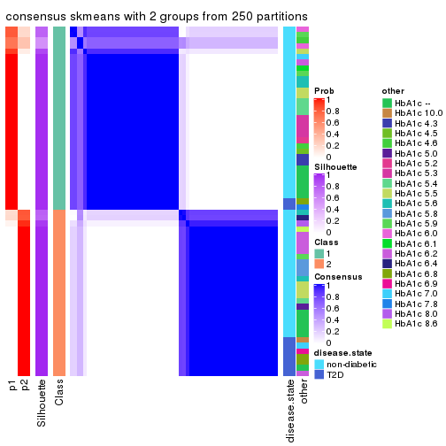
consensus_heatmap(res, k = 3)
consensus_heatmap(res, k = 4)
consensus_heatmap(res, k = 5)
consensus_heatmap(res, k = 6)
Heatmaps for the membership of samples in all partitions to see how consistent they are:
membership_heatmap(res, k = 2)
membership_heatmap(res, k = 3)
membership_heatmap(res, k = 4)
membership_heatmap(res, k = 5)
membership_heatmap(res, k = 6)
As soon as we have had the classes for columns, we can look for signatures which are significantly different between classes which can be candidate marks for certain classes. Following are the heatmaps for signatures.
Signature heatmaps where rows are scaled:
get_signatures(res, k = 2)
get_signatures(res, k = 3)
get_signatures(res, k = 4)
get_signatures(res, k = 5)
get_signatures(res, k = 6)
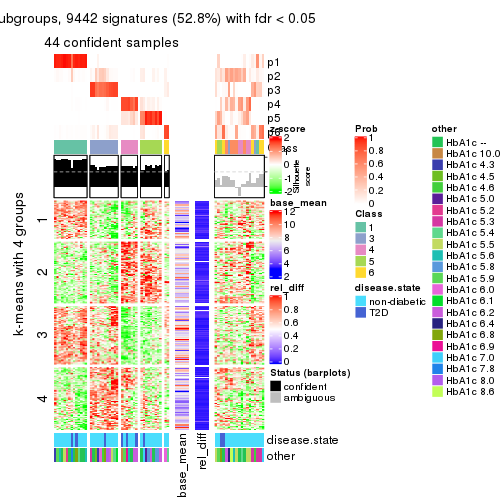
Signature heatmaps where rows are not scaled:
get_signatures(res, k = 2, scale_rows = FALSE)
get_signatures(res, k = 3, scale_rows = FALSE)
get_signatures(res, k = 4, scale_rows = FALSE)
get_signatures(res, k = 5, scale_rows = FALSE)
get_signatures(res, k = 6, scale_rows = FALSE)
Compare the overlap of signatures from different k:
compare_signatures(res)
get_signature() returns a data frame invisibly. TO get the list of signatures, the function
call should be assigned to a variable explicitly. In following code, if plot argument is set
to FALSE, no heatmap is plotted while only the differential analysis is performed.
# code only for demonstration
tb = get_signature(res, k = ..., plot = FALSE)
An example of the output of tb is:
#> which_row fdr mean_1 mean_2 scaled_mean_1 scaled_mean_2 km
#> 1 38 0.042760348 8.373488 9.131774 -0.5533452 0.5164555 1
#> 2 40 0.018707592 7.106213 8.469186 -0.6173731 0.5762149 1
#> 3 55 0.019134737 10.221463 11.207825 -0.6159697 0.5749050 1
#> 4 59 0.006059896 5.921854 7.869574 -0.6899429 0.6439467 1
#> 5 60 0.018055526 8.928898 10.211722 -0.6204761 0.5791110 1
#> 6 98 0.009384629 15.714769 14.887706 0.6635654 -0.6193277 2
...
The columns in tb are:
which_row: row indices corresponding to the input matrix.fdr: FDR for the differential test. mean_x: The mean value in group x.scaled_mean_x: The mean value in group x after rows are scaled.km: Row groups if k-means clustering is applied to rows.UMAP plot which shows how samples are separated.
dimension_reduction(res, k = 2, method = "UMAP")
dimension_reduction(res, k = 3, method = "UMAP")
dimension_reduction(res, k = 4, method = "UMAP")
dimension_reduction(res, k = 5, method = "UMAP")
dimension_reduction(res, k = 6, method = "UMAP")
Following heatmap shows how subgroups are split when increasing k:
collect_classes(res)
Test correlation between subgroups and known annotations. If the known annotation is numeric, one-way ANOVA test is applied, and if the known annotation is discrete, chi-squared contingency table test is applied.
test_to_known_factors(res)
#> n disease.state(p) other(p) k
#> CV:skmeans 63 0.110 0.202 2
#> CV:skmeans 62 0.451 0.284 3
#> CV:skmeans 45 0.562 0.176 4
#> CV:skmeans 51 0.704 0.614 5
#> CV:skmeans 44 0.300 0.388 6
If matrix rows can be associated to genes, consider to use GO_Enrichment(res,
...) to perform function enrichment for the signature genes.
The object with results only for a single top-value method and a single partition method can be extracted as:
res = res_list["CV", "pam"]
# you can also extract it by
# res = res_list["CV:pam"]
A summary of res and all the functions that can be applied to it:
res
#> A 'ConsensusPartition' object with k = 2, 3, 4, 5, 6.
#> On a matrix with 17867 rows and 63 columns.
#> Top rows (1000, 2000, 3000, 4000, 5000) are extracted by 'CV' method.
#> Subgroups are detected by 'pam' method.
#> Performed in total 1250 partitions by row resampling.
#> Best k for subgroups seems to be 3.
#>
#> Following methods can be applied to this 'ConsensusPartition' object:
#> [1] "cola_report" "collect_classes" "collect_plots"
#> [4] "collect_stats" "colnames" "compare_signatures"
#> [7] "consensus_heatmap" "dimension_reduction" "functional_enrichment"
#> [10] "get_anno_col" "get_anno" "get_classes"
#> [13] "get_consensus" "get_matrix" "get_membership"
#> [16] "get_param" "get_signatures" "get_stats"
#> [19] "is_best_k" "is_stable_k" "membership_heatmap"
#> [22] "ncol" "nrow" "plot_ecdf"
#> [25] "rownames" "select_partition_number" "show"
#> [28] "suggest_best_k" "test_to_known_factors"
collect_plots() function collects all the plots made from res for all k (number of partitions)
into one single page to provide an easy and fast comparison between different k.
collect_plots(res)
The plots are:
k and the heatmap of
predicted classes for each k.k.k.k.All the plots in panels can be made by individual functions and they are plotted later in this section.
select_partition_number() produces several plots showing different
statistics for choosing “optimized” k. There are following statistics:
k;k, the area increased is defined as \(A_k - A_{k-1}\).The detailed explanations of these statistics can be found in the cola vignette.
Generally speaking, lower PAC score, higher mean silhouette score or higher
concordance corresponds to better partition. Rand index and Jaccard index
measure how similar the current partition is compared to partition with k-1.
If they are too similar, we won't accept k is better than k-1.
select_partition_number(res)
The numeric values for all these statistics can be obtained by get_stats().
get_stats(res)
#> k 1-PAC mean_silhouette concordance area_increased Rand Jaccard
#> 2 2 0.843 0.914 0.960 0.3966 0.572 0.572
#> 3 3 0.838 0.864 0.942 0.4937 0.814 0.675
#> 4 4 0.732 0.694 0.876 0.1780 0.798 0.540
#> 5 5 0.667 0.651 0.858 0.0284 0.881 0.641
#> 6 6 0.667 0.633 0.830 0.0809 0.934 0.751
suggest_best_k() suggests the best \(k\) based on these statistics. The rules are as follows:
NA.suggest_best_k(res)
#> [1] 3
Following shows the table of the partitions (You need to click the show/hide
code output link to see it). The membership matrix (columns with name p*)
is inferred by
clue::cl_consensus()
function with the SE method. Basically the value in the membership matrix
represents the probability to belong to a certain group. The finall class
label for an item is determined with the group with highest probability it
belongs to.
In get_classes() function, the entropy is calculated from the membership
matrix and the silhouette score is calculated from the consensus matrix.
cbind(get_classes(res, k = 2), get_membership(res, k = 2))
#> class entropy silhouette p1 p2
#> GSM946745 2 0.0000 0.994 0.000 1.000
#> GSM946739 2 0.0000 0.994 0.000 1.000
#> GSM946738 2 0.0000 0.994 0.000 1.000
#> GSM946746 2 0.0000 0.994 0.000 1.000
#> GSM946747 1 0.0000 0.868 1.000 0.000
#> GSM946711 2 0.0000 0.994 0.000 1.000
#> GSM946760 2 0.0000 0.994 0.000 1.000
#> GSM946710 1 0.9686 0.491 0.604 0.396
#> GSM946761 2 0.0000 0.994 0.000 1.000
#> GSM946701 1 0.0000 0.868 1.000 0.000
#> GSM946703 1 0.0000 0.868 1.000 0.000
#> GSM946704 2 0.0000 0.994 0.000 1.000
#> GSM946706 2 0.0000 0.994 0.000 1.000
#> GSM946708 2 0.0000 0.994 0.000 1.000
#> GSM946709 2 0.0000 0.994 0.000 1.000
#> GSM946712 2 0.0000 0.994 0.000 1.000
#> GSM946720 1 0.0000 0.868 1.000 0.000
#> GSM946722 2 0.1184 0.978 0.016 0.984
#> GSM946753 1 0.0000 0.868 1.000 0.000
#> GSM946762 1 0.0000 0.868 1.000 0.000
#> GSM946707 2 0.0000 0.994 0.000 1.000
#> GSM946721 1 0.0000 0.868 1.000 0.000
#> GSM946719 2 0.0000 0.994 0.000 1.000
#> GSM946716 2 0.0000 0.994 0.000 1.000
#> GSM946751 2 0.0000 0.994 0.000 1.000
#> GSM946740 2 0.0376 0.990 0.004 0.996
#> GSM946741 1 0.0000 0.868 1.000 0.000
#> GSM946718 2 0.0000 0.994 0.000 1.000
#> GSM946737 1 0.9686 0.491 0.604 0.396
#> GSM946742 2 0.0000 0.994 0.000 1.000
#> GSM946749 1 0.1414 0.859 0.980 0.020
#> GSM946702 1 0.9993 0.263 0.516 0.484
#> GSM946713 2 0.0376 0.990 0.004 0.996
#> GSM946723 1 0.0000 0.868 1.000 0.000
#> GSM946736 2 0.0000 0.994 0.000 1.000
#> GSM946705 2 0.0000 0.994 0.000 1.000
#> GSM946715 1 0.0000 0.868 1.000 0.000
#> GSM946726 2 0.6712 0.753 0.176 0.824
#> GSM946727 2 0.0000 0.994 0.000 1.000
#> GSM946748 1 0.7299 0.733 0.796 0.204
#> GSM946756 2 0.0000 0.994 0.000 1.000
#> GSM946724 2 0.0000 0.994 0.000 1.000
#> GSM946733 1 0.0000 0.868 1.000 0.000
#> GSM946734 2 0.0000 0.994 0.000 1.000
#> GSM946754 1 0.9815 0.414 0.580 0.420
#> GSM946700 2 0.0000 0.994 0.000 1.000
#> GSM946714 2 0.0938 0.982 0.012 0.988
#> GSM946729 2 0.0000 0.994 0.000 1.000
#> GSM946731 2 0.1184 0.978 0.016 0.984
#> GSM946743 1 0.0000 0.868 1.000 0.000
#> GSM946744 2 0.0000 0.994 0.000 1.000
#> GSM946730 2 0.0000 0.994 0.000 1.000
#> GSM946755 2 0.0000 0.994 0.000 1.000
#> GSM946717 2 0.0000 0.994 0.000 1.000
#> GSM946725 2 0.0000 0.994 0.000 1.000
#> GSM946728 2 0.0000 0.994 0.000 1.000
#> GSM946752 2 0.0000 0.994 0.000 1.000
#> GSM946757 2 0.0000 0.994 0.000 1.000
#> GSM946758 2 0.0000 0.994 0.000 1.000
#> GSM946759 2 0.0000 0.994 0.000 1.000
#> GSM946732 1 0.9686 0.491 0.604 0.396
#> GSM946750 2 0.0000 0.994 0.000 1.000
#> GSM946735 2 0.0000 0.994 0.000 1.000
cbind(get_classes(res, k = 3), get_membership(res, k = 3))
#> class entropy silhouette p1 p2 p3
#> GSM946745 3 0.0000 0.986 0.000 0.000 1.000
#> GSM946739 3 0.0237 0.982 0.000 0.004 0.996
#> GSM946738 3 0.0000 0.986 0.000 0.000 1.000
#> GSM946746 3 0.0000 0.986 0.000 0.000 1.000
#> GSM946747 1 0.0000 0.791 1.000 0.000 0.000
#> GSM946711 2 0.0000 0.958 0.000 1.000 0.000
#> GSM946760 3 0.0000 0.986 0.000 0.000 1.000
#> GSM946710 1 0.6286 0.333 0.536 0.000 0.464
#> GSM946761 2 0.0000 0.958 0.000 1.000 0.000
#> GSM946701 1 0.0000 0.791 1.000 0.000 0.000
#> GSM946703 1 0.0000 0.791 1.000 0.000 0.000
#> GSM946704 2 0.4842 0.656 0.000 0.776 0.224
#> GSM946706 3 0.0000 0.986 0.000 0.000 1.000
#> GSM946708 2 0.0892 0.952 0.000 0.980 0.020
#> GSM946709 3 0.0000 0.986 0.000 0.000 1.000
#> GSM946712 3 0.0000 0.986 0.000 0.000 1.000
#> GSM946720 1 0.0000 0.791 1.000 0.000 0.000
#> GSM946722 3 0.0000 0.986 0.000 0.000 1.000
#> GSM946753 1 0.0000 0.791 1.000 0.000 0.000
#> GSM946762 1 0.0000 0.791 1.000 0.000 0.000
#> GSM946707 3 0.0000 0.986 0.000 0.000 1.000
#> GSM946721 1 0.0000 0.791 1.000 0.000 0.000
#> GSM946719 3 0.0000 0.986 0.000 0.000 1.000
#> GSM946716 3 0.0000 0.986 0.000 0.000 1.000
#> GSM946751 3 0.0000 0.986 0.000 0.000 1.000
#> GSM946740 2 0.0892 0.952 0.000 0.980 0.020
#> GSM946741 1 0.0000 0.791 1.000 0.000 0.000
#> GSM946718 3 0.0000 0.986 0.000 0.000 1.000
#> GSM946737 1 0.6286 0.333 0.536 0.000 0.464
#> GSM946742 3 0.0000 0.986 0.000 0.000 1.000
#> GSM946749 1 0.2878 0.739 0.904 0.000 0.096
#> GSM946702 1 0.9457 0.403 0.460 0.188 0.352
#> GSM946713 3 0.0000 0.986 0.000 0.000 1.000
#> GSM946723 1 0.0000 0.791 1.000 0.000 0.000
#> GSM946736 3 0.0000 0.986 0.000 0.000 1.000
#> GSM946705 3 0.0000 0.986 0.000 0.000 1.000
#> GSM946715 1 0.0000 0.791 1.000 0.000 0.000
#> GSM946726 2 0.0592 0.953 0.000 0.988 0.012
#> GSM946727 3 0.0000 0.986 0.000 0.000 1.000
#> GSM946748 1 0.8985 0.410 0.544 0.292 0.164
#> GSM946756 3 0.0000 0.986 0.000 0.000 1.000
#> GSM946724 2 0.0000 0.958 0.000 1.000 0.000
#> GSM946733 1 0.0000 0.791 1.000 0.000 0.000
#> GSM946734 3 0.0000 0.986 0.000 0.000 1.000
#> GSM946754 1 0.6286 0.310 0.536 0.000 0.464
#> GSM946700 3 0.0000 0.986 0.000 0.000 1.000
#> GSM946714 2 0.0000 0.958 0.000 1.000 0.000
#> GSM946729 3 0.0000 0.986 0.000 0.000 1.000
#> GSM946731 3 0.0000 0.986 0.000 0.000 1.000
#> GSM946743 1 0.0000 0.791 1.000 0.000 0.000
#> GSM946744 2 0.0000 0.958 0.000 1.000 0.000
#> GSM946730 3 0.0000 0.986 0.000 0.000 1.000
#> GSM946755 3 0.0000 0.986 0.000 0.000 1.000
#> GSM946717 3 0.0000 0.986 0.000 0.000 1.000
#> GSM946725 3 0.0000 0.986 0.000 0.000 1.000
#> GSM946728 2 0.0892 0.952 0.000 0.980 0.020
#> GSM946752 3 0.0000 0.986 0.000 0.000 1.000
#> GSM946757 3 0.0000 0.986 0.000 0.000 1.000
#> GSM946758 2 0.0000 0.958 0.000 1.000 0.000
#> GSM946759 3 0.0000 0.986 0.000 0.000 1.000
#> GSM946732 1 0.6286 0.333 0.536 0.000 0.464
#> GSM946750 3 0.0000 0.986 0.000 0.000 1.000
#> GSM946735 3 0.6095 0.315 0.000 0.392 0.608
cbind(get_classes(res, k = 4), get_membership(res, k = 4))
#> class entropy silhouette p1 p2 p3 p4
#> GSM946745 2 0.0000 0.7993 0.000 1.000 0.000 0.000
#> GSM946739 2 0.0336 0.7965 0.000 0.992 0.000 0.008
#> GSM946738 2 0.0188 0.7985 0.000 0.996 0.004 0.000
#> GSM946746 2 0.0000 0.7993 0.000 1.000 0.000 0.000
#> GSM946747 1 0.0000 0.9059 1.000 0.000 0.000 0.000
#> GSM946711 4 0.0592 0.9599 0.000 0.000 0.016 0.984
#> GSM946760 2 0.0000 0.7993 0.000 1.000 0.000 0.000
#> GSM946710 2 0.4967 0.1495 0.452 0.548 0.000 0.000
#> GSM946761 4 0.0592 0.9599 0.000 0.000 0.016 0.984
#> GSM946701 1 0.0000 0.9059 1.000 0.000 0.000 0.000
#> GSM946703 1 0.0000 0.9059 1.000 0.000 0.000 0.000
#> GSM946704 4 0.3837 0.6762 0.000 0.224 0.000 0.776
#> GSM946706 3 0.4661 0.6975 0.000 0.348 0.652 0.000
#> GSM946708 4 0.0817 0.9495 0.000 0.024 0.000 0.976
#> GSM946709 2 0.0000 0.7993 0.000 1.000 0.000 0.000
#> GSM946712 2 0.0000 0.7993 0.000 1.000 0.000 0.000
#> GSM946720 1 0.0000 0.9059 1.000 0.000 0.000 0.000
#> GSM946722 2 0.0188 0.7980 0.004 0.996 0.000 0.000
#> GSM946753 1 0.0000 0.9059 1.000 0.000 0.000 0.000
#> GSM946762 1 0.0000 0.9059 1.000 0.000 0.000 0.000
#> GSM946707 2 0.4925 -0.2008 0.000 0.572 0.428 0.000
#> GSM946721 1 0.0000 0.9059 1.000 0.000 0.000 0.000
#> GSM946719 3 0.4877 0.6104 0.000 0.408 0.592 0.000
#> GSM946716 2 0.4643 0.1285 0.000 0.656 0.344 0.000
#> GSM946751 2 0.2589 0.6692 0.000 0.884 0.116 0.000
#> GSM946740 4 0.0336 0.9598 0.000 0.008 0.000 0.992
#> GSM946741 1 0.0000 0.9059 1.000 0.000 0.000 0.000
#> GSM946718 2 0.0336 0.7960 0.000 0.992 0.008 0.000
#> GSM946737 1 0.7007 -0.0633 0.452 0.432 0.116 0.000
#> GSM946742 3 0.4661 0.6975 0.000 0.348 0.652 0.000
#> GSM946749 3 0.4661 0.3347 0.348 0.000 0.652 0.000
#> GSM946702 2 0.7523 -0.0530 0.400 0.416 0.000 0.184
#> GSM946713 2 0.0188 0.7985 0.000 0.996 0.004 0.000
#> GSM946723 1 0.0000 0.9059 1.000 0.000 0.000 0.000
#> GSM946736 3 0.0592 0.6274 0.000 0.016 0.984 0.000
#> GSM946705 3 0.0592 0.6274 0.000 0.016 0.984 0.000
#> GSM946715 1 0.0000 0.9059 1.000 0.000 0.000 0.000
#> GSM946726 4 0.0592 0.9536 0.000 0.016 0.000 0.984
#> GSM946727 2 0.0000 0.7993 0.000 1.000 0.000 0.000
#> GSM946748 1 0.7489 0.2009 0.452 0.184 0.000 0.364
#> GSM946756 3 0.4730 0.6820 0.000 0.364 0.636 0.000
#> GSM946724 4 0.0592 0.9599 0.000 0.000 0.016 0.984
#> GSM946733 1 0.0000 0.9059 1.000 0.000 0.000 0.000
#> GSM946734 2 0.0336 0.7963 0.000 0.992 0.008 0.000
#> GSM946754 2 0.4967 0.2064 0.452 0.548 0.000 0.000
#> GSM946700 2 0.0188 0.7968 0.000 0.996 0.000 0.004
#> GSM946714 4 0.0188 0.9598 0.000 0.004 0.000 0.996
#> GSM946729 2 0.0000 0.7993 0.000 1.000 0.000 0.000
#> GSM946731 2 0.0000 0.7993 0.000 1.000 0.000 0.000
#> GSM946743 1 0.0188 0.9019 0.996 0.004 0.000 0.000
#> GSM946744 4 0.0592 0.9599 0.000 0.000 0.016 0.984
#> GSM946730 2 0.4888 -0.1367 0.000 0.588 0.412 0.000
#> GSM946755 2 0.0188 0.7985 0.000 0.996 0.004 0.000
#> GSM946717 3 0.0707 0.6277 0.000 0.020 0.980 0.000
#> GSM946725 2 0.0188 0.7985 0.000 0.996 0.004 0.000
#> GSM946728 4 0.0336 0.9598 0.000 0.008 0.000 0.992
#> GSM946752 3 0.4661 0.6975 0.000 0.348 0.652 0.000
#> GSM946757 2 0.0188 0.7968 0.000 0.996 0.000 0.004
#> GSM946758 4 0.0000 0.9598 0.000 0.000 0.000 1.000
#> GSM946759 2 0.0188 0.7985 0.000 0.996 0.004 0.000
#> GSM946732 2 0.4967 0.1495 0.452 0.548 0.000 0.000
#> GSM946750 3 0.4941 0.5466 0.000 0.436 0.564 0.000
#> GSM946735 2 0.5004 0.2494 0.004 0.604 0.000 0.392
cbind(get_classes(res, k = 5), get_membership(res, k = 5))
#> class entropy silhouette p1 p2 p3 p4 p5
#> GSM946745 2 0.0000 0.84195 0.000 1.000 0.000 0.000 0.000
#> GSM946739 2 0.3480 0.61726 0.000 0.752 0.000 0.248 0.000
#> GSM946738 2 0.0162 0.84060 0.000 0.996 0.004 0.000 0.000
#> GSM946746 2 0.0000 0.84195 0.000 1.000 0.000 0.000 0.000
#> GSM946747 1 0.0000 0.78638 1.000 0.000 0.000 0.000 0.000
#> GSM946711 4 0.0290 1.00000 0.000 0.000 0.000 0.992 0.008
#> GSM946760 2 0.0510 0.83604 0.000 0.984 0.000 0.000 0.016
#> GSM946710 1 0.4306 0.23354 0.508 0.492 0.000 0.000 0.000
#> GSM946761 4 0.0290 1.00000 0.000 0.000 0.000 0.992 0.008
#> GSM946701 1 0.0000 0.78638 1.000 0.000 0.000 0.000 0.000
#> GSM946703 1 0.0000 0.78638 1.000 0.000 0.000 0.000 0.000
#> GSM946704 5 0.3391 0.55832 0.000 0.012 0.000 0.188 0.800
#> GSM946706 3 0.3949 0.68313 0.000 0.332 0.668 0.000 0.000
#> GSM946708 2 0.2929 0.71696 0.000 0.820 0.000 0.000 0.180
#> GSM946709 2 0.1732 0.79833 0.000 0.920 0.000 0.000 0.080
#> GSM946712 2 0.0000 0.84195 0.000 1.000 0.000 0.000 0.000
#> GSM946720 1 0.0000 0.78638 1.000 0.000 0.000 0.000 0.000
#> GSM946722 2 0.0000 0.84195 0.000 1.000 0.000 0.000 0.000
#> GSM946753 1 0.0000 0.78638 1.000 0.000 0.000 0.000 0.000
#> GSM946762 1 0.0000 0.78638 1.000 0.000 0.000 0.000 0.000
#> GSM946707 2 0.4256 -0.08589 0.000 0.564 0.436 0.000 0.000
#> GSM946721 1 0.0162 0.78369 0.996 0.000 0.004 0.000 0.000
#> GSM946719 3 0.4171 0.58339 0.000 0.396 0.604 0.000 0.000
#> GSM946716 2 0.4015 0.24152 0.000 0.652 0.348 0.000 0.000
#> GSM946751 2 0.2280 0.74296 0.000 0.880 0.120 0.000 0.000
#> GSM946740 5 0.0000 0.71366 0.000 0.000 0.000 0.000 1.000
#> GSM946741 1 0.0000 0.78638 1.000 0.000 0.000 0.000 0.000
#> GSM946718 2 0.0290 0.83923 0.000 0.992 0.008 0.000 0.000
#> GSM946737 1 0.5742 0.30270 0.508 0.404 0.088 0.000 0.000
#> GSM946742 3 0.3949 0.68313 0.000 0.332 0.668 0.000 0.000
#> GSM946749 3 0.3966 0.36971 0.336 0.000 0.664 0.000 0.000
#> GSM946702 2 0.4256 -0.08070 0.436 0.564 0.000 0.000 0.000
#> GSM946713 2 0.0000 0.84195 0.000 1.000 0.000 0.000 0.000
#> GSM946723 1 0.0000 0.78638 1.000 0.000 0.000 0.000 0.000
#> GSM946736 3 0.0290 0.52350 0.000 0.000 0.992 0.008 0.000
#> GSM946705 3 0.0290 0.52350 0.000 0.000 0.992 0.008 0.000
#> GSM946715 1 0.0000 0.78638 1.000 0.000 0.000 0.000 0.000
#> GSM946726 5 0.0000 0.71366 0.000 0.000 0.000 0.000 1.000
#> GSM946727 2 0.0000 0.84195 0.000 1.000 0.000 0.000 0.000
#> GSM946748 1 0.3837 0.53765 0.692 0.308 0.000 0.000 0.000
#> GSM946756 3 0.4030 0.66545 0.000 0.352 0.648 0.000 0.000
#> GSM946724 4 0.0290 1.00000 0.000 0.000 0.000 0.992 0.008
#> GSM946733 1 0.0000 0.78638 1.000 0.000 0.000 0.000 0.000
#> GSM946734 2 0.0162 0.84079 0.000 0.996 0.004 0.000 0.000
#> GSM946754 1 0.4450 0.08474 0.508 0.488 0.004 0.000 0.000
#> GSM946700 5 0.4249 0.24318 0.000 0.432 0.000 0.000 0.568
#> GSM946714 5 0.0000 0.71366 0.000 0.000 0.000 0.000 1.000
#> GSM946729 2 0.2852 0.72254 0.000 0.828 0.000 0.000 0.172
#> GSM946731 2 0.2852 0.72254 0.000 0.828 0.000 0.000 0.172
#> GSM946743 1 0.3010 0.63384 0.824 0.000 0.004 0.000 0.172
#> GSM946744 4 0.0290 1.00000 0.000 0.000 0.000 0.992 0.008
#> GSM946730 2 0.4219 0.00392 0.000 0.584 0.416 0.000 0.000
#> GSM946755 2 0.0000 0.84195 0.000 1.000 0.000 0.000 0.000
#> GSM946717 3 0.0451 0.52305 0.000 0.004 0.988 0.008 0.000
#> GSM946725 2 0.0000 0.84195 0.000 1.000 0.000 0.000 0.000
#> GSM946728 5 0.0000 0.71366 0.000 0.000 0.000 0.000 1.000
#> GSM946752 3 0.3949 0.68313 0.000 0.332 0.668 0.000 0.000
#> GSM946757 5 0.4256 0.23067 0.000 0.436 0.000 0.000 0.564
#> GSM946758 5 0.2852 0.52113 0.000 0.000 0.000 0.172 0.828
#> GSM946759 2 0.0000 0.84195 0.000 1.000 0.000 0.000 0.000
#> GSM946732 1 0.4306 0.23354 0.508 0.492 0.000 0.000 0.000
#> GSM946750 3 0.4235 0.50731 0.000 0.424 0.576 0.000 0.000
#> GSM946735 2 0.0162 0.84057 0.000 0.996 0.000 0.000 0.004
cbind(get_classes(res, k = 6), get_membership(res, k = 6))
#> class entropy silhouette p1 p2 p3 p4 p5 p6
#> GSM946745 2 0.0000 0.8647 0.000 1.000 0.000 0.000 0.000 0.000
#> GSM946739 2 0.3126 0.6316 0.000 0.752 0.000 0.248 0.000 0.000
#> GSM946738 2 0.3620 0.2429 0.000 0.648 0.352 0.000 0.000 0.000
#> GSM946746 2 0.0000 0.8647 0.000 1.000 0.000 0.000 0.000 0.000
#> GSM946747 1 0.0000 0.7355 1.000 0.000 0.000 0.000 0.000 0.000
#> GSM946711 4 0.0000 1.0000 0.000 0.000 0.000 1.000 0.000 0.000
#> GSM946760 2 0.1334 0.8471 0.000 0.948 0.000 0.000 0.020 0.032
#> GSM946710 1 0.6290 0.5483 0.512 0.228 0.032 0.000 0.000 0.228
#> GSM946761 4 0.0000 1.0000 0.000 0.000 0.000 1.000 0.000 0.000
#> GSM946701 1 0.4110 0.6748 0.692 0.000 0.040 0.000 0.000 0.268
#> GSM946703 1 0.0000 0.7355 1.000 0.000 0.000 0.000 0.000 0.000
#> GSM946704 5 0.4195 0.5332 0.000 0.032 0.000 0.188 0.748 0.032
#> GSM946706 3 0.0146 0.4259 0.000 0.000 0.996 0.000 0.000 0.004
#> GSM946708 2 0.2178 0.7872 0.000 0.868 0.000 0.000 0.132 0.000
#> GSM946709 2 0.1444 0.8320 0.000 0.928 0.000 0.000 0.072 0.000
#> GSM946712 2 0.0000 0.8647 0.000 1.000 0.000 0.000 0.000 0.000
#> GSM946720 1 0.3221 0.6852 0.736 0.000 0.000 0.000 0.000 0.264
#> GSM946722 2 0.0000 0.8647 0.000 1.000 0.000 0.000 0.000 0.000
#> GSM946753 1 0.3221 0.6851 0.736 0.000 0.000 0.000 0.000 0.264
#> GSM946762 1 0.0146 0.7355 0.996 0.000 0.000 0.000 0.000 0.004
#> GSM946707 3 0.0363 0.4349 0.000 0.012 0.988 0.000 0.000 0.000
#> GSM946721 1 0.5539 0.5401 0.548 0.000 0.180 0.000 0.000 0.272
#> GSM946719 3 0.3076 0.4063 0.000 0.240 0.760 0.000 0.000 0.000
#> GSM946716 3 0.3847 0.2192 0.000 0.456 0.544 0.000 0.000 0.000
#> GSM946751 3 0.3867 0.1402 0.000 0.488 0.512 0.000 0.000 0.000
#> GSM946740 5 0.0000 0.7140 0.000 0.000 0.000 0.000 1.000 0.000
#> GSM946741 1 0.0000 0.7355 1.000 0.000 0.000 0.000 0.000 0.000
#> GSM946718 2 0.3151 0.5338 0.000 0.748 0.252 0.000 0.000 0.000
#> GSM946737 1 0.5552 0.4279 0.552 0.196 0.252 0.000 0.000 0.000
#> GSM946742 3 0.0146 0.4259 0.000 0.000 0.996 0.000 0.000 0.004
#> GSM946749 3 0.4028 0.0603 0.308 0.000 0.668 0.000 0.000 0.024
#> GSM946702 2 0.3867 -0.1546 0.488 0.512 0.000 0.000 0.000 0.000
#> GSM946713 2 0.0146 0.8629 0.000 0.996 0.004 0.000 0.000 0.000
#> GSM946723 1 0.0000 0.7355 1.000 0.000 0.000 0.000 0.000 0.000
#> GSM946736 6 0.3428 1.0000 0.000 0.000 0.304 0.000 0.000 0.696
#> GSM946705 6 0.3428 1.0000 0.000 0.000 0.304 0.000 0.000 0.696
#> GSM946715 1 0.0000 0.7355 1.000 0.000 0.000 0.000 0.000 0.000
#> GSM946726 5 0.0000 0.7140 0.000 0.000 0.000 0.000 1.000 0.000
#> GSM946727 2 0.0000 0.8647 0.000 1.000 0.000 0.000 0.000 0.000
#> GSM946748 1 0.3076 0.5807 0.760 0.240 0.000 0.000 0.000 0.000
#> GSM946756 3 0.4157 0.2494 0.000 0.444 0.544 0.000 0.000 0.012
#> GSM946724 4 0.0000 1.0000 0.000 0.000 0.000 1.000 0.000 0.000
#> GSM946733 1 0.0547 0.7322 0.980 0.000 0.000 0.000 0.000 0.020
#> GSM946734 2 0.1007 0.8365 0.000 0.956 0.044 0.000 0.000 0.000
#> GSM946754 1 0.7732 0.1751 0.264 0.256 0.240 0.000 0.000 0.240
#> GSM946700 5 0.3860 0.1293 0.000 0.472 0.000 0.000 0.528 0.000
#> GSM946714 5 0.0000 0.7140 0.000 0.000 0.000 0.000 1.000 0.000
#> GSM946729 2 0.2178 0.7872 0.000 0.868 0.000 0.000 0.132 0.000
#> GSM946731 2 0.2431 0.7832 0.000 0.860 0.008 0.000 0.132 0.000
#> GSM946743 1 0.6519 0.5367 0.548 0.000 0.152 0.000 0.100 0.200
#> GSM946744 4 0.0000 1.0000 0.000 0.000 0.000 1.000 0.000 0.000
#> GSM946730 3 0.3288 0.3991 0.000 0.276 0.724 0.000 0.000 0.000
#> GSM946755 2 0.0000 0.8647 0.000 1.000 0.000 0.000 0.000 0.000
#> GSM946717 6 0.3428 1.0000 0.000 0.000 0.304 0.000 0.000 0.696
#> GSM946725 2 0.0000 0.8647 0.000 1.000 0.000 0.000 0.000 0.000
#> GSM946728 5 0.0000 0.7140 0.000 0.000 0.000 0.000 1.000 0.000
#> GSM946752 3 0.0146 0.4259 0.000 0.000 0.996 0.000 0.000 0.004
#> GSM946757 5 0.3862 0.1150 0.000 0.476 0.000 0.000 0.524 0.000
#> GSM946758 5 0.2219 0.5775 0.000 0.000 0.000 0.136 0.864 0.000
#> GSM946759 2 0.0000 0.8647 0.000 1.000 0.000 0.000 0.000 0.000
#> GSM946732 1 0.3828 0.2911 0.560 0.440 0.000 0.000 0.000 0.000
#> GSM946750 3 0.2520 0.4478 0.000 0.152 0.844 0.000 0.000 0.004
#> GSM946735 2 0.0000 0.8647 0.000 1.000 0.000 0.000 0.000 0.000
Heatmaps for the consensus matrix. It visualizes the probability of two samples to be in a same group.
consensus_heatmap(res, k = 2)
consensus_heatmap(res, k = 3)
consensus_heatmap(res, k = 4)
consensus_heatmap(res, k = 5)
consensus_heatmap(res, k = 6)
Heatmaps for the membership of samples in all partitions to see how consistent they are:
membership_heatmap(res, k = 2)
membership_heatmap(res, k = 3)
membership_heatmap(res, k = 4)
membership_heatmap(res, k = 5)
membership_heatmap(res, k = 6)
As soon as we have had the classes for columns, we can look for signatures which are significantly different between classes which can be candidate marks for certain classes. Following are the heatmaps for signatures.
Signature heatmaps where rows are scaled:
get_signatures(res, k = 2)
get_signatures(res, k = 3)
get_signatures(res, k = 4)
get_signatures(res, k = 5)
get_signatures(res, k = 6)
Signature heatmaps where rows are not scaled:
get_signatures(res, k = 2, scale_rows = FALSE)
get_signatures(res, k = 3, scale_rows = FALSE)
get_signatures(res, k = 4, scale_rows = FALSE)
get_signatures(res, k = 5, scale_rows = FALSE)
get_signatures(res, k = 6, scale_rows = FALSE)
Compare the overlap of signatures from different k:
compare_signatures(res)
get_signature() returns a data frame invisibly. TO get the list of signatures, the function
call should be assigned to a variable explicitly. In following code, if plot argument is set
to FALSE, no heatmap is plotted while only the differential analysis is performed.
# code only for demonstration
tb = get_signature(res, k = ..., plot = FALSE)
An example of the output of tb is:
#> which_row fdr mean_1 mean_2 scaled_mean_1 scaled_mean_2 km
#> 1 38 0.042760348 8.373488 9.131774 -0.5533452 0.5164555 1
#> 2 40 0.018707592 7.106213 8.469186 -0.6173731 0.5762149 1
#> 3 55 0.019134737 10.221463 11.207825 -0.6159697 0.5749050 1
#> 4 59 0.006059896 5.921854 7.869574 -0.6899429 0.6439467 1
#> 5 60 0.018055526 8.928898 10.211722 -0.6204761 0.5791110 1
#> 6 98 0.009384629 15.714769 14.887706 0.6635654 -0.6193277 2
...
The columns in tb are:
which_row: row indices corresponding to the input matrix.fdr: FDR for the differential test. mean_x: The mean value in group x.scaled_mean_x: The mean value in group x after rows are scaled.km: Row groups if k-means clustering is applied to rows.UMAP plot which shows how samples are separated.
dimension_reduction(res, k = 2, method = "UMAP")
dimension_reduction(res, k = 3, method = "UMAP")
dimension_reduction(res, k = 4, method = "UMAP")
dimension_reduction(res, k = 5, method = "UMAP")
dimension_reduction(res, k = 6, method = "UMAP")
Following heatmap shows how subgroups are split when increasing k:
collect_classes(res)
Test correlation between subgroups and known annotations. If the known annotation is numeric, one-way ANOVA test is applied, and if the known annotation is discrete, chi-squared contingency table test is applied.
test_to_known_factors(res)
#> n disease.state(p) other(p) k
#> CV:pam 58 0.7013 0.876 2
#> CV:pam 56 0.7244 0.793 3
#> CV:pam 52 0.3104 0.685 4
#> CV:pam 52 0.0773 0.409 5
#> CV:pam 45 0.2725 0.371 6
If matrix rows can be associated to genes, consider to use GO_Enrichment(res,
...) to perform function enrichment for the signature genes.
The object with results only for a single top-value method and a single partition method can be extracted as:
res = res_list["CV", "mclust"]
# you can also extract it by
# res = res_list["CV:mclust"]
A summary of res and all the functions that can be applied to it:
res
#> A 'ConsensusPartition' object with k = 2, 3, 4, 5, 6.
#> On a matrix with 17867 rows and 63 columns.
#> Top rows (1000, 2000, 3000, 4000, 5000) are extracted by 'CV' method.
#> Subgroups are detected by 'mclust' method.
#> Performed in total 1250 partitions by row resampling.
#> Best k for subgroups seems to be 3.
#>
#> Following methods can be applied to this 'ConsensusPartition' object:
#> [1] "cola_report" "collect_classes" "collect_plots"
#> [4] "collect_stats" "colnames" "compare_signatures"
#> [7] "consensus_heatmap" "dimension_reduction" "functional_enrichment"
#> [10] "get_anno_col" "get_anno" "get_classes"
#> [13] "get_consensus" "get_matrix" "get_membership"
#> [16] "get_param" "get_signatures" "get_stats"
#> [19] "is_best_k" "is_stable_k" "membership_heatmap"
#> [22] "ncol" "nrow" "plot_ecdf"
#> [25] "rownames" "select_partition_number" "show"
#> [28] "suggest_best_k" "test_to_known_factors"
collect_plots() function collects all the plots made from res for all k (number of partitions)
into one single page to provide an easy and fast comparison between different k.
collect_plots(res)
The plots are:
k and the heatmap of
predicted classes for each k.k.k.k.All the plots in panels can be made by individual functions and they are plotted later in this section.
select_partition_number() produces several plots showing different
statistics for choosing “optimized” k. There are following statistics:
k;k, the area increased is defined as \(A_k - A_{k-1}\).The detailed explanations of these statistics can be found in the cola vignette.
Generally speaking, lower PAC score, higher mean silhouette score or higher
concordance corresponds to better partition. Rand index and Jaccard index
measure how similar the current partition is compared to partition with k-1.
If they are too similar, we won't accept k is better than k-1.
select_partition_number(res)
The numeric values for all these statistics can be obtained by get_stats().
get_stats(res)
#> k 1-PAC mean_silhouette concordance area_increased Rand Jaccard
#> 2 2 0.440 0.869 0.831 0.4020 0.548 0.548
#> 3 3 0.905 0.885 0.953 0.6424 0.719 0.517
#> 4 4 0.871 0.869 0.954 0.0651 0.919 0.770
#> 5 5 0.824 0.826 0.898 0.0858 0.894 0.666
#> 6 6 0.788 0.727 0.866 0.0551 0.945 0.768
suggest_best_k() suggests the best \(k\) based on these statistics. The rules are as follows:
NA.suggest_best_k(res)
#> [1] 3
Following shows the table of the partitions (You need to click the show/hide
code output link to see it). The membership matrix (columns with name p*)
is inferred by
clue::cl_consensus()
function with the SE method. Basically the value in the membership matrix
represents the probability to belong to a certain group. The finall class
label for an item is determined with the group with highest probability it
belongs to.
In get_classes() function, the entropy is calculated from the membership
matrix and the silhouette score is calculated from the consensus matrix.
cbind(get_classes(res, k = 2), get_membership(res, k = 2))
#> class entropy silhouette p1 p2
#> GSM946745 1 0.8813 0.867 0.700 0.300
#> GSM946739 2 0.2043 0.964 0.032 0.968
#> GSM946738 1 0.0376 0.692 0.996 0.004
#> GSM946746 2 0.2043 0.964 0.032 0.968
#> GSM946747 1 0.9170 0.867 0.668 0.332
#> GSM946711 2 0.2043 0.964 0.032 0.968
#> GSM946760 2 0.2043 0.964 0.032 0.968
#> GSM946710 1 0.9000 0.867 0.684 0.316
#> GSM946761 2 0.2043 0.964 0.032 0.968
#> GSM946701 1 0.9170 0.867 0.668 0.332
#> GSM946703 1 0.9170 0.867 0.668 0.332
#> GSM946704 2 0.0938 0.970 0.012 0.988
#> GSM946706 1 0.0000 0.689 1.000 0.000
#> GSM946708 2 0.0000 0.970 0.000 1.000
#> GSM946709 2 0.5737 0.756 0.136 0.864
#> GSM946712 2 0.1414 0.969 0.020 0.980
#> GSM946720 1 0.9170 0.867 0.668 0.332
#> GSM946722 1 0.9170 0.867 0.668 0.332
#> GSM946753 1 0.9170 0.867 0.668 0.332
#> GSM946762 1 0.9170 0.867 0.668 0.332
#> GSM946707 1 0.8327 0.861 0.736 0.264
#> GSM946721 1 0.9170 0.867 0.668 0.332
#> GSM946719 1 0.8763 0.867 0.704 0.296
#> GSM946716 1 0.7453 0.834 0.788 0.212
#> GSM946751 1 0.0376 0.692 0.996 0.004
#> GSM946740 2 0.0000 0.970 0.000 1.000
#> GSM946741 1 0.9170 0.867 0.668 0.332
#> GSM946718 1 0.8327 0.861 0.736 0.264
#> GSM946737 1 0.8763 0.868 0.704 0.296
#> GSM946742 1 0.0000 0.689 1.000 0.000
#> GSM946749 1 0.8443 0.864 0.728 0.272
#> GSM946702 2 0.0000 0.970 0.000 1.000
#> GSM946713 1 0.6048 0.791 0.852 0.148
#> GSM946723 1 0.9170 0.867 0.668 0.332
#> GSM946736 1 0.0000 0.689 1.000 0.000
#> GSM946705 1 0.7056 0.821 0.808 0.192
#> GSM946715 1 0.9170 0.867 0.668 0.332
#> GSM946726 2 0.0000 0.970 0.000 1.000
#> GSM946727 1 0.8813 0.867 0.700 0.300
#> GSM946748 1 0.9170 0.867 0.668 0.332
#> GSM946756 1 0.8813 0.867 0.700 0.300
#> GSM946724 2 0.2043 0.964 0.032 0.968
#> GSM946733 1 0.9170 0.867 0.668 0.332
#> GSM946734 1 0.9044 0.854 0.680 0.320
#> GSM946754 1 0.9170 0.867 0.668 0.332
#> GSM946700 2 0.0000 0.970 0.000 1.000
#> GSM946714 2 0.0000 0.970 0.000 1.000
#> GSM946729 2 0.0376 0.971 0.004 0.996
#> GSM946731 1 0.9170 0.867 0.668 0.332
#> GSM946743 1 0.9170 0.867 0.668 0.332
#> GSM946744 2 0.2043 0.964 0.032 0.968
#> GSM946730 1 0.0000 0.689 1.000 0.000
#> GSM946755 1 0.8327 0.861 0.736 0.264
#> GSM946717 1 0.0000 0.689 1.000 0.000
#> GSM946725 1 0.8608 0.867 0.716 0.284
#> GSM946728 2 0.0000 0.970 0.000 1.000
#> GSM946752 1 0.0000 0.689 1.000 0.000
#> GSM946757 2 0.0000 0.970 0.000 1.000
#> GSM946758 2 0.0000 0.970 0.000 1.000
#> GSM946759 1 0.8813 0.867 0.700 0.300
#> GSM946732 1 0.8713 0.868 0.708 0.292
#> GSM946750 1 0.0000 0.689 1.000 0.000
#> GSM946735 2 0.1184 0.970 0.016 0.984
cbind(get_classes(res, k = 3), get_membership(res, k = 3))
#> class entropy silhouette p1 p2 p3
#> GSM946745 3 0.5785 0.539 0.000 0.332 0.668
#> GSM946739 2 0.0000 0.986 0.000 1.000 0.000
#> GSM946738 3 0.0000 0.920 0.000 0.000 1.000
#> GSM946746 2 0.0000 0.986 0.000 1.000 0.000
#> GSM946747 1 0.0000 0.911 1.000 0.000 0.000
#> GSM946711 2 0.0000 0.986 0.000 1.000 0.000
#> GSM946760 2 0.0000 0.986 0.000 1.000 0.000
#> GSM946710 1 0.6905 0.600 0.676 0.044 0.280
#> GSM946761 2 0.0000 0.986 0.000 1.000 0.000
#> GSM946701 1 0.0000 0.911 1.000 0.000 0.000
#> GSM946703 1 0.0000 0.911 1.000 0.000 0.000
#> GSM946704 2 0.0000 0.986 0.000 1.000 0.000
#> GSM946706 3 0.0000 0.920 0.000 0.000 1.000
#> GSM946708 2 0.0000 0.986 0.000 1.000 0.000
#> GSM946709 2 0.0000 0.986 0.000 1.000 0.000
#> GSM946712 2 0.0000 0.986 0.000 1.000 0.000
#> GSM946720 1 0.0000 0.911 1.000 0.000 0.000
#> GSM946722 2 0.0000 0.986 0.000 1.000 0.000
#> GSM946753 1 0.0000 0.911 1.000 0.000 0.000
#> GSM946762 1 0.1860 0.877 0.948 0.052 0.000
#> GSM946707 3 0.0000 0.920 0.000 0.000 1.000
#> GSM946721 1 0.0000 0.911 1.000 0.000 0.000
#> GSM946719 3 0.0000 0.920 0.000 0.000 1.000
#> GSM946716 3 0.0000 0.920 0.000 0.000 1.000
#> GSM946751 3 0.0000 0.920 0.000 0.000 1.000
#> GSM946740 2 0.0000 0.986 0.000 1.000 0.000
#> GSM946741 1 0.0000 0.911 1.000 0.000 0.000
#> GSM946718 3 0.0237 0.917 0.004 0.000 0.996
#> GSM946737 1 0.6305 0.209 0.516 0.000 0.484
#> GSM946742 3 0.0000 0.920 0.000 0.000 1.000
#> GSM946749 3 0.1860 0.872 0.052 0.000 0.948
#> GSM946702 2 0.0000 0.986 0.000 1.000 0.000
#> GSM946713 3 0.0000 0.920 0.000 0.000 1.000
#> GSM946723 1 0.1753 0.881 0.952 0.048 0.000
#> GSM946736 3 0.0000 0.920 0.000 0.000 1.000
#> GSM946705 3 0.0000 0.920 0.000 0.000 1.000
#> GSM946715 1 0.0000 0.911 1.000 0.000 0.000
#> GSM946726 2 0.0000 0.986 0.000 1.000 0.000
#> GSM946727 3 0.1643 0.888 0.000 0.044 0.956
#> GSM946748 2 0.0000 0.986 0.000 1.000 0.000
#> GSM946756 3 0.6126 0.394 0.000 0.400 0.600
#> GSM946724 2 0.0000 0.986 0.000 1.000 0.000
#> GSM946733 1 0.0000 0.911 1.000 0.000 0.000
#> GSM946734 2 0.5497 0.545 0.000 0.708 0.292
#> GSM946754 1 0.0000 0.911 1.000 0.000 0.000
#> GSM946700 2 0.0000 0.986 0.000 1.000 0.000
#> GSM946714 2 0.0000 0.986 0.000 1.000 0.000
#> GSM946729 2 0.0000 0.986 0.000 1.000 0.000
#> GSM946731 3 0.6126 0.394 0.000 0.400 0.600
#> GSM946743 1 0.0000 0.911 1.000 0.000 0.000
#> GSM946744 2 0.0000 0.986 0.000 1.000 0.000
#> GSM946730 3 0.0000 0.920 0.000 0.000 1.000
#> GSM946755 3 0.0000 0.920 0.000 0.000 1.000
#> GSM946717 3 0.0000 0.920 0.000 0.000 1.000
#> GSM946725 3 0.3752 0.793 0.000 0.144 0.856
#> GSM946728 2 0.0000 0.986 0.000 1.000 0.000
#> GSM946752 3 0.0000 0.920 0.000 0.000 1.000
#> GSM946757 2 0.0000 0.986 0.000 1.000 0.000
#> GSM946758 2 0.0000 0.986 0.000 1.000 0.000
#> GSM946759 3 0.0592 0.913 0.000 0.012 0.988
#> GSM946732 1 0.6126 0.432 0.600 0.000 0.400
#> GSM946750 3 0.0237 0.918 0.000 0.004 0.996
#> GSM946735 2 0.0000 0.986 0.000 1.000 0.000
cbind(get_classes(res, k = 4), get_membership(res, k = 4))
#> class entropy silhouette p1 p2 p3 p4
#> GSM946745 3 0.2921 0.7883 0.000 0.140 0.860 0.000
#> GSM946739 2 0.3074 0.7706 0.000 0.848 0.000 0.152
#> GSM946738 3 0.0000 0.9512 0.000 0.000 1.000 0.000
#> GSM946746 2 0.0000 0.9320 0.000 1.000 0.000 0.000
#> GSM946747 1 0.0000 0.8994 1.000 0.000 0.000 0.000
#> GSM946711 4 0.0000 1.0000 0.000 0.000 0.000 1.000
#> GSM946760 2 0.0000 0.9320 0.000 1.000 0.000 0.000
#> GSM946710 1 0.4502 0.6400 0.748 0.016 0.236 0.000
#> GSM946761 4 0.0000 1.0000 0.000 0.000 0.000 1.000
#> GSM946701 1 0.0000 0.8994 1.000 0.000 0.000 0.000
#> GSM946703 1 0.0000 0.8994 1.000 0.000 0.000 0.000
#> GSM946704 2 0.0000 0.9320 0.000 1.000 0.000 0.000
#> GSM946706 3 0.0000 0.9512 0.000 0.000 1.000 0.000
#> GSM946708 2 0.0000 0.9320 0.000 1.000 0.000 0.000
#> GSM946709 2 0.0000 0.9320 0.000 1.000 0.000 0.000
#> GSM946712 2 0.0000 0.9320 0.000 1.000 0.000 0.000
#> GSM946720 1 0.0000 0.8994 1.000 0.000 0.000 0.000
#> GSM946722 2 0.0000 0.9320 0.000 1.000 0.000 0.000
#> GSM946753 1 0.0000 0.8994 1.000 0.000 0.000 0.000
#> GSM946762 1 0.2408 0.8220 0.896 0.104 0.000 0.000
#> GSM946707 3 0.0000 0.9512 0.000 0.000 1.000 0.000
#> GSM946721 1 0.0000 0.8994 1.000 0.000 0.000 0.000
#> GSM946719 3 0.0000 0.9512 0.000 0.000 1.000 0.000
#> GSM946716 3 0.0000 0.9512 0.000 0.000 1.000 0.000
#> GSM946751 3 0.0000 0.9512 0.000 0.000 1.000 0.000
#> GSM946740 2 0.0000 0.9320 0.000 1.000 0.000 0.000
#> GSM946741 1 0.0000 0.8994 1.000 0.000 0.000 0.000
#> GSM946718 3 0.0000 0.9512 0.000 0.000 1.000 0.000
#> GSM946737 3 0.4996 -0.0765 0.484 0.000 0.516 0.000
#> GSM946742 3 0.0000 0.9512 0.000 0.000 1.000 0.000
#> GSM946749 3 0.0336 0.9445 0.008 0.000 0.992 0.000
#> GSM946702 2 0.0000 0.9320 0.000 1.000 0.000 0.000
#> GSM946713 3 0.0000 0.9512 0.000 0.000 1.000 0.000
#> GSM946723 1 0.3219 0.7527 0.836 0.164 0.000 0.000
#> GSM946736 3 0.0000 0.9512 0.000 0.000 1.000 0.000
#> GSM946705 3 0.0000 0.9512 0.000 0.000 1.000 0.000
#> GSM946715 1 0.0000 0.8994 1.000 0.000 0.000 0.000
#> GSM946726 2 0.0000 0.9320 0.000 1.000 0.000 0.000
#> GSM946727 3 0.0592 0.9366 0.000 0.016 0.984 0.000
#> GSM946748 2 0.0000 0.9320 0.000 1.000 0.000 0.000
#> GSM946756 3 0.3610 0.7005 0.000 0.200 0.800 0.000
#> GSM946724 4 0.0000 1.0000 0.000 0.000 0.000 1.000
#> GSM946733 1 0.0000 0.8994 1.000 0.000 0.000 0.000
#> GSM946734 2 0.4888 0.2917 0.000 0.588 0.412 0.000
#> GSM946754 1 0.0000 0.8994 1.000 0.000 0.000 0.000
#> GSM946700 2 0.0000 0.9320 0.000 1.000 0.000 0.000
#> GSM946714 2 0.0000 0.9320 0.000 1.000 0.000 0.000
#> GSM946729 2 0.0000 0.9320 0.000 1.000 0.000 0.000
#> GSM946731 2 0.4989 0.0926 0.000 0.528 0.472 0.000
#> GSM946743 1 0.2345 0.8261 0.900 0.100 0.000 0.000
#> GSM946744 4 0.0000 1.0000 0.000 0.000 0.000 1.000
#> GSM946730 3 0.0000 0.9512 0.000 0.000 1.000 0.000
#> GSM946755 3 0.0000 0.9512 0.000 0.000 1.000 0.000
#> GSM946717 3 0.0000 0.9512 0.000 0.000 1.000 0.000
#> GSM946725 3 0.0336 0.9444 0.000 0.008 0.992 0.000
#> GSM946728 2 0.0000 0.9320 0.000 1.000 0.000 0.000
#> GSM946752 3 0.0000 0.9512 0.000 0.000 1.000 0.000
#> GSM946757 2 0.0000 0.9320 0.000 1.000 0.000 0.000
#> GSM946758 2 0.0000 0.9320 0.000 1.000 0.000 0.000
#> GSM946759 3 0.0000 0.9512 0.000 0.000 1.000 0.000
#> GSM946732 1 0.4855 0.3663 0.600 0.000 0.400 0.000
#> GSM946750 3 0.0000 0.9512 0.000 0.000 1.000 0.000
#> GSM946735 2 0.0000 0.9320 0.000 1.000 0.000 0.000
cbind(get_classes(res, k = 5), get_membership(res, k = 5))
#> class entropy silhouette p1 p2 p3 p4 p5
#> GSM946745 3 0.1124 0.878 0.000 0.004 0.960 0.000 0.036
#> GSM946739 2 0.4681 0.634 0.000 0.728 0.000 0.188 0.084
#> GSM946738 3 0.0290 0.891 0.000 0.008 0.992 0.000 0.000
#> GSM946746 5 0.3561 0.524 0.000 0.260 0.000 0.000 0.740
#> GSM946747 1 0.0000 0.906 1.000 0.000 0.000 0.000 0.000
#> GSM946711 4 0.0000 1.000 0.000 0.000 0.000 1.000 0.000
#> GSM946760 5 0.0000 0.959 0.000 0.000 0.000 0.000 1.000
#> GSM946710 1 0.4049 0.737 0.792 0.124 0.084 0.000 0.000
#> GSM946761 4 0.0000 1.000 0.000 0.000 0.000 1.000 0.000
#> GSM946701 1 0.0000 0.906 1.000 0.000 0.000 0.000 0.000
#> GSM946703 1 0.0000 0.906 1.000 0.000 0.000 0.000 0.000
#> GSM946704 5 0.0000 0.959 0.000 0.000 0.000 0.000 1.000
#> GSM946706 3 0.0162 0.891 0.000 0.004 0.996 0.000 0.000
#> GSM946708 2 0.3796 0.732 0.000 0.700 0.000 0.000 0.300
#> GSM946709 5 0.1121 0.914 0.000 0.044 0.000 0.000 0.956
#> GSM946712 2 0.3336 0.799 0.000 0.772 0.000 0.000 0.228
#> GSM946720 1 0.0000 0.906 1.000 0.000 0.000 0.000 0.000
#> GSM946722 2 0.3305 0.800 0.000 0.776 0.000 0.000 0.224
#> GSM946753 1 0.0000 0.906 1.000 0.000 0.000 0.000 0.000
#> GSM946762 1 0.1124 0.880 0.960 0.004 0.000 0.000 0.036
#> GSM946707 3 0.2891 0.833 0.000 0.176 0.824 0.000 0.000
#> GSM946721 1 0.0000 0.906 1.000 0.000 0.000 0.000 0.000
#> GSM946719 3 0.0000 0.891 0.000 0.000 1.000 0.000 0.000
#> GSM946716 3 0.1043 0.887 0.000 0.040 0.960 0.000 0.000
#> GSM946751 3 0.0290 0.891 0.000 0.008 0.992 0.000 0.000
#> GSM946740 5 0.0000 0.959 0.000 0.000 0.000 0.000 1.000
#> GSM946741 1 0.0000 0.906 1.000 0.000 0.000 0.000 0.000
#> GSM946718 3 0.3262 0.837 0.036 0.124 0.840 0.000 0.000
#> GSM946737 1 0.5991 0.420 0.564 0.148 0.288 0.000 0.000
#> GSM946742 3 0.0404 0.891 0.000 0.012 0.988 0.000 0.000
#> GSM946749 3 0.4747 0.744 0.084 0.196 0.720 0.000 0.000
#> GSM946702 2 0.3305 0.800 0.000 0.776 0.000 0.000 0.224
#> GSM946713 3 0.0162 0.891 0.000 0.004 0.996 0.000 0.000
#> GSM946723 1 0.1197 0.871 0.952 0.000 0.000 0.000 0.048
#> GSM946736 3 0.1270 0.886 0.000 0.052 0.948 0.000 0.000
#> GSM946705 3 0.3003 0.826 0.000 0.188 0.812 0.000 0.000
#> GSM946715 1 0.0000 0.906 1.000 0.000 0.000 0.000 0.000
#> GSM946726 5 0.0162 0.956 0.000 0.004 0.000 0.000 0.996
#> GSM946727 3 0.4564 0.301 0.000 0.372 0.612 0.000 0.016
#> GSM946748 2 0.3274 0.800 0.000 0.780 0.000 0.000 0.220
#> GSM946756 3 0.2305 0.830 0.000 0.012 0.896 0.000 0.092
#> GSM946724 4 0.0000 1.000 0.000 0.000 0.000 1.000 0.000
#> GSM946733 1 0.0000 0.906 1.000 0.000 0.000 0.000 0.000
#> GSM946734 2 0.4251 0.492 0.000 0.672 0.316 0.000 0.012
#> GSM946754 1 0.0000 0.906 1.000 0.000 0.000 0.000 0.000
#> GSM946700 5 0.0000 0.959 0.000 0.000 0.000 0.000 1.000
#> GSM946714 5 0.0000 0.959 0.000 0.000 0.000 0.000 1.000
#> GSM946729 5 0.0000 0.959 0.000 0.000 0.000 0.000 1.000
#> GSM946731 3 0.4392 0.396 0.000 0.008 0.612 0.000 0.380
#> GSM946743 1 0.0609 0.894 0.980 0.000 0.000 0.000 0.020
#> GSM946744 4 0.0000 1.000 0.000 0.000 0.000 1.000 0.000
#> GSM946730 3 0.0404 0.891 0.000 0.012 0.988 0.000 0.000
#> GSM946755 3 0.0000 0.891 0.000 0.000 1.000 0.000 0.000
#> GSM946717 3 0.2516 0.851 0.000 0.140 0.860 0.000 0.000
#> GSM946725 2 0.4150 0.161 0.000 0.612 0.388 0.000 0.000
#> GSM946728 5 0.0000 0.959 0.000 0.000 0.000 0.000 1.000
#> GSM946752 3 0.1197 0.886 0.000 0.048 0.952 0.000 0.000
#> GSM946757 5 0.0000 0.959 0.000 0.000 0.000 0.000 1.000
#> GSM946758 2 0.3774 0.729 0.000 0.704 0.000 0.000 0.296
#> GSM946759 3 0.2929 0.760 0.000 0.180 0.820 0.000 0.000
#> GSM946732 1 0.5708 0.451 0.588 0.112 0.300 0.000 0.000
#> GSM946750 3 0.0404 0.891 0.000 0.012 0.988 0.000 0.000
#> GSM946735 2 0.3336 0.799 0.000 0.772 0.000 0.000 0.228
cbind(get_classes(res, k = 6), get_membership(res, k = 6))
#> class entropy silhouette p1 p2 p3 p4 p5 p6
#> GSM946745 3 0.1409 0.74405 0.000 0.012 0.948 0.000 0.008 0.032
#> GSM946739 2 0.3261 0.71439 0.000 0.780 0.000 0.204 0.016 0.000
#> GSM946738 3 0.0632 0.75810 0.000 0.000 0.976 0.000 0.000 0.024
#> GSM946746 5 0.3390 0.55249 0.000 0.296 0.000 0.000 0.704 0.000
#> GSM946747 1 0.0146 0.90704 0.996 0.000 0.000 0.000 0.000 0.004
#> GSM946711 4 0.0000 1.00000 0.000 0.000 0.000 1.000 0.000 0.000
#> GSM946760 5 0.0820 0.92542 0.000 0.016 0.000 0.000 0.972 0.012
#> GSM946710 1 0.5390 -0.00177 0.544 0.012 0.088 0.000 0.000 0.356
#> GSM946761 4 0.0000 1.00000 0.000 0.000 0.000 1.000 0.000 0.000
#> GSM946701 1 0.0000 0.90848 1.000 0.000 0.000 0.000 0.000 0.000
#> GSM946703 1 0.0000 0.90848 1.000 0.000 0.000 0.000 0.000 0.000
#> GSM946704 5 0.0820 0.92542 0.000 0.016 0.000 0.000 0.972 0.012
#> GSM946706 3 0.0790 0.75590 0.000 0.000 0.968 0.000 0.000 0.032
#> GSM946708 2 0.1663 0.84071 0.000 0.912 0.000 0.000 0.088 0.000
#> GSM946709 5 0.1075 0.92141 0.000 0.048 0.000 0.000 0.952 0.000
#> GSM946712 2 0.1124 0.86060 0.000 0.956 0.008 0.000 0.036 0.000
#> GSM946720 1 0.2668 0.78281 0.828 0.004 0.000 0.000 0.000 0.168
#> GSM946722 2 0.1753 0.84371 0.000 0.912 0.000 0.000 0.084 0.004
#> GSM946753 1 0.0000 0.90848 1.000 0.000 0.000 0.000 0.000 0.000
#> GSM946762 1 0.2958 0.72330 0.824 0.008 0.008 0.000 0.000 0.160
#> GSM946707 6 0.3797 0.35231 0.000 0.000 0.420 0.000 0.000 0.580
#> GSM946721 1 0.0935 0.89127 0.964 0.004 0.000 0.000 0.000 0.032
#> GSM946719 3 0.0363 0.75610 0.000 0.000 0.988 0.000 0.000 0.012
#> GSM946716 3 0.2595 0.63340 0.004 0.000 0.836 0.000 0.000 0.160
#> GSM946751 3 0.0632 0.75645 0.000 0.000 0.976 0.000 0.000 0.024
#> GSM946740 5 0.0260 0.93987 0.000 0.008 0.000 0.000 0.992 0.000
#> GSM946741 1 0.0000 0.90848 1.000 0.000 0.000 0.000 0.000 0.000
#> GSM946718 6 0.5675 0.38651 0.120 0.008 0.432 0.000 0.000 0.440
#> GSM946737 6 0.5998 0.43291 0.364 0.012 0.164 0.000 0.000 0.460
#> GSM946742 3 0.0632 0.75628 0.000 0.000 0.976 0.000 0.000 0.024
#> GSM946749 6 0.4400 0.54235 0.096 0.008 0.164 0.000 0.000 0.732
#> GSM946702 2 0.0935 0.85918 0.000 0.964 0.000 0.000 0.032 0.004
#> GSM946713 3 0.2006 0.69196 0.000 0.004 0.892 0.000 0.000 0.104
#> GSM946723 1 0.0000 0.90848 1.000 0.000 0.000 0.000 0.000 0.000
#> GSM946736 3 0.3076 0.51602 0.000 0.000 0.760 0.000 0.000 0.240
#> GSM946705 6 0.3823 0.14051 0.000 0.000 0.436 0.000 0.000 0.564
#> GSM946715 1 0.0000 0.90848 1.000 0.000 0.000 0.000 0.000 0.000
#> GSM946726 5 0.1610 0.89466 0.000 0.084 0.000 0.000 0.916 0.000
#> GSM946727 3 0.4831 0.26019 0.000 0.340 0.600 0.000 0.008 0.052
#> GSM946748 2 0.0858 0.85856 0.000 0.968 0.000 0.000 0.028 0.004
#> GSM946756 3 0.3017 0.64139 0.000 0.016 0.860 0.000 0.060 0.064
#> GSM946724 4 0.0000 1.00000 0.000 0.000 0.000 1.000 0.000 0.000
#> GSM946733 1 0.2632 0.78296 0.832 0.004 0.000 0.000 0.000 0.164
#> GSM946734 2 0.4015 0.59832 0.000 0.720 0.244 0.000 0.008 0.028
#> GSM946754 1 0.0146 0.90704 0.996 0.000 0.000 0.000 0.000 0.004
#> GSM946700 5 0.0260 0.93987 0.000 0.008 0.000 0.000 0.992 0.000
#> GSM946714 5 0.1007 0.92455 0.000 0.044 0.000 0.000 0.956 0.000
#> GSM946729 5 0.0458 0.93775 0.000 0.016 0.000 0.000 0.984 0.000
#> GSM946731 3 0.6000 0.20653 0.096 0.008 0.592 0.000 0.252 0.052
#> GSM946743 1 0.0000 0.90848 1.000 0.000 0.000 0.000 0.000 0.000
#> GSM946744 4 0.0000 1.00000 0.000 0.000 0.000 1.000 0.000 0.000
#> GSM946730 3 0.0547 0.75862 0.000 0.000 0.980 0.000 0.000 0.020
#> GSM946755 3 0.0972 0.74818 0.000 0.008 0.964 0.000 0.000 0.028
#> GSM946717 3 0.3843 -0.07272 0.000 0.000 0.548 0.000 0.000 0.452
#> GSM946725 2 0.5076 0.42111 0.000 0.620 0.248 0.000 0.000 0.132
#> GSM946728 5 0.0260 0.93987 0.000 0.008 0.000 0.000 0.992 0.000
#> GSM946752 3 0.2092 0.68703 0.000 0.000 0.876 0.000 0.000 0.124
#> GSM946757 5 0.0260 0.93987 0.000 0.008 0.000 0.000 0.992 0.000
#> GSM946758 2 0.1663 0.83469 0.000 0.912 0.000 0.000 0.088 0.000
#> GSM946759 3 0.4947 0.26695 0.000 0.316 0.596 0.000 0.000 0.088
#> GSM946732 6 0.6282 0.43112 0.380 0.012 0.228 0.000 0.000 0.380
#> GSM946750 3 0.0547 0.75654 0.000 0.000 0.980 0.000 0.000 0.020
#> GSM946735 2 0.0935 0.86036 0.000 0.964 0.004 0.000 0.032 0.000
Heatmaps for the consensus matrix. It visualizes the probability of two samples to be in a same group.
consensus_heatmap(res, k = 2)
consensus_heatmap(res, k = 3)
consensus_heatmap(res, k = 4)
consensus_heatmap(res, k = 5)
consensus_heatmap(res, k = 6)
Heatmaps for the membership of samples in all partitions to see how consistent they are:
membership_heatmap(res, k = 2)
membership_heatmap(res, k = 3)
membership_heatmap(res, k = 4)
membership_heatmap(res, k = 5)
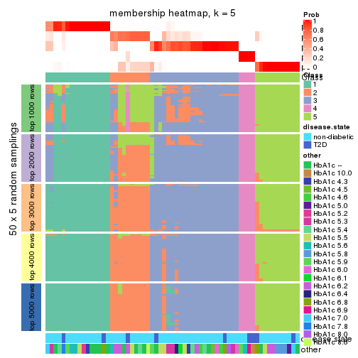
membership_heatmap(res, k = 6)
As soon as we have had the classes for columns, we can look for signatures which are significantly different between classes which can be candidate marks for certain classes. Following are the heatmaps for signatures.
Signature heatmaps where rows are scaled:
get_signatures(res, k = 2)
get_signatures(res, k = 3)
get_signatures(res, k = 4)
get_signatures(res, k = 5)
get_signatures(res, k = 6)
Signature heatmaps where rows are not scaled:
get_signatures(res, k = 2, scale_rows = FALSE)
get_signatures(res, k = 3, scale_rows = FALSE)
get_signatures(res, k = 4, scale_rows = FALSE)
get_signatures(res, k = 5, scale_rows = FALSE)
get_signatures(res, k = 6, scale_rows = FALSE)
Compare the overlap of signatures from different k:
compare_signatures(res)
get_signature() returns a data frame invisibly. TO get the list of signatures, the function
call should be assigned to a variable explicitly. In following code, if plot argument is set
to FALSE, no heatmap is plotted while only the differential analysis is performed.
# code only for demonstration
tb = get_signature(res, k = ..., plot = FALSE)
An example of the output of tb is:
#> which_row fdr mean_1 mean_2 scaled_mean_1 scaled_mean_2 km
#> 1 38 0.042760348 8.373488 9.131774 -0.5533452 0.5164555 1
#> 2 40 0.018707592 7.106213 8.469186 -0.6173731 0.5762149 1
#> 3 55 0.019134737 10.221463 11.207825 -0.6159697 0.5749050 1
#> 4 59 0.006059896 5.921854 7.869574 -0.6899429 0.6439467 1
#> 5 60 0.018055526 8.928898 10.211722 -0.6204761 0.5791110 1
#> 6 98 0.009384629 15.714769 14.887706 0.6635654 -0.6193277 2
...
The columns in tb are:
which_row: row indices corresponding to the input matrix.fdr: FDR for the differential test. mean_x: The mean value in group x.scaled_mean_x: The mean value in group x after rows are scaled.km: Row groups if k-means clustering is applied to rows.UMAP plot which shows how samples are separated.
dimension_reduction(res, k = 2, method = "UMAP")
dimension_reduction(res, k = 3, method = "UMAP")
dimension_reduction(res, k = 4, method = "UMAP")
dimension_reduction(res, k = 5, method = "UMAP")
dimension_reduction(res, k = 6, method = "UMAP")
Following heatmap shows how subgroups are split when increasing k:
collect_classes(res)
Test correlation between subgroups and known annotations. If the known annotation is numeric, one-way ANOVA test is applied, and if the known annotation is discrete, chi-squared contingency table test is applied.
test_to_known_factors(res)
#> n disease.state(p) other(p) k
#> CV:mclust 63 0.252 0.2411 2
#> CV:mclust 59 0.571 0.2636 3
#> CV:mclust 59 0.222 0.0211 4
#> CV:mclust 57 0.385 0.0642 5
#> CV:mclust 52 0.459 0.0534 6
If matrix rows can be associated to genes, consider to use GO_Enrichment(res,
...) to perform function enrichment for the signature genes.
The object with results only for a single top-value method and a single partition method can be extracted as:
res = res_list["CV", "NMF"]
# you can also extract it by
# res = res_list["CV:NMF"]
A summary of res and all the functions that can be applied to it:
res
#> A 'ConsensusPartition' object with k = 2, 3, 4, 5, 6.
#> On a matrix with 17867 rows and 63 columns.
#> Top rows (1000, 2000, 3000, 4000, 5000) are extracted by 'CV' method.
#> Subgroups are detected by 'NMF' method.
#> Performed in total 1250 partitions by row resampling.
#> Best k for subgroups seems to be 2.
#>
#> Following methods can be applied to this 'ConsensusPartition' object:
#> [1] "cola_report" "collect_classes" "collect_plots"
#> [4] "collect_stats" "colnames" "compare_signatures"
#> [7] "consensus_heatmap" "dimension_reduction" "functional_enrichment"
#> [10] "get_anno_col" "get_anno" "get_classes"
#> [13] "get_consensus" "get_matrix" "get_membership"
#> [16] "get_param" "get_signatures" "get_stats"
#> [19] "is_best_k" "is_stable_k" "membership_heatmap"
#> [22] "ncol" "nrow" "plot_ecdf"
#> [25] "rownames" "select_partition_number" "show"
#> [28] "suggest_best_k" "test_to_known_factors"
collect_plots() function collects all the plots made from res for all k (number of partitions)
into one single page to provide an easy and fast comparison between different k.
collect_plots(res)
The plots are:
k and the heatmap of
predicted classes for each k.k.k.k.All the plots in panels can be made by individual functions and they are plotted later in this section.
select_partition_number() produces several plots showing different
statistics for choosing “optimized” k. There are following statistics:
k;k, the area increased is defined as \(A_k - A_{k-1}\).The detailed explanations of these statistics can be found in the cola vignette.
Generally speaking, lower PAC score, higher mean silhouette score or higher
concordance corresponds to better partition. Rand index and Jaccard index
measure how similar the current partition is compared to partition with k-1.
If they are too similar, we won't accept k is better than k-1.
select_partition_number(res)
The numeric values for all these statistics can be obtained by get_stats().
get_stats(res)
#> k 1-PAC mean_silhouette concordance area_increased Rand Jaccard
#> 2 2 0.839 0.895 0.958 0.5035 0.495 0.495
#> 3 3 0.507 0.552 0.746 0.3195 0.713 0.484
#> 4 4 0.538 0.582 0.781 0.1224 0.737 0.377
#> 5 5 0.573 0.489 0.705 0.0546 0.919 0.702
#> 6 6 0.648 0.625 0.793 0.0388 0.874 0.527
suggest_best_k() suggests the best \(k\) based on these statistics. The rules are as follows:
NA.suggest_best_k(res)
#> [1] 2
Following shows the table of the partitions (You need to click the show/hide
code output link to see it). The membership matrix (columns with name p*)
is inferred by
clue::cl_consensus()
function with the SE method. Basically the value in the membership matrix
represents the probability to belong to a certain group. The finall class
label for an item is determined with the group with highest probability it
belongs to.
In get_classes() function, the entropy is calculated from the membership
matrix and the silhouette score is calculated from the consensus matrix.
cbind(get_classes(res, k = 2), get_membership(res, k = 2))
#> class entropy silhouette p1 p2
#> GSM946745 2 0.5178 0.8491 0.116 0.884
#> GSM946739 2 0.0000 0.9647 0.000 1.000
#> GSM946738 2 0.0000 0.9647 0.000 1.000
#> GSM946746 2 0.0000 0.9647 0.000 1.000
#> GSM946747 1 0.0000 0.9450 1.000 0.000
#> GSM946711 2 0.0000 0.9647 0.000 1.000
#> GSM946760 2 0.0000 0.9647 0.000 1.000
#> GSM946710 1 0.0000 0.9450 1.000 0.000
#> GSM946761 2 0.0000 0.9647 0.000 1.000
#> GSM946701 1 0.0000 0.9450 1.000 0.000
#> GSM946703 1 0.0000 0.9450 1.000 0.000
#> GSM946704 2 0.0000 0.9647 0.000 1.000
#> GSM946706 1 0.0000 0.9450 1.000 0.000
#> GSM946708 2 0.0000 0.9647 0.000 1.000
#> GSM946709 2 0.2603 0.9284 0.044 0.956
#> GSM946712 2 0.0000 0.9647 0.000 1.000
#> GSM946720 1 0.0000 0.9450 1.000 0.000
#> GSM946722 2 0.9000 0.5385 0.316 0.684
#> GSM946753 1 0.0000 0.9450 1.000 0.000
#> GSM946762 1 0.0000 0.9450 1.000 0.000
#> GSM946707 1 0.0000 0.9450 1.000 0.000
#> GSM946721 1 0.0000 0.9450 1.000 0.000
#> GSM946719 1 0.0000 0.9450 1.000 0.000
#> GSM946716 1 0.0000 0.9450 1.000 0.000
#> GSM946751 1 0.5408 0.8388 0.876 0.124
#> GSM946740 2 0.0000 0.9647 0.000 1.000
#> GSM946741 1 0.0000 0.9450 1.000 0.000
#> GSM946718 1 0.0000 0.9450 1.000 0.000
#> GSM946737 1 0.0000 0.9450 1.000 0.000
#> GSM946742 1 0.7376 0.7400 0.792 0.208
#> GSM946749 1 0.0000 0.9450 1.000 0.000
#> GSM946702 2 0.0000 0.9647 0.000 1.000
#> GSM946713 1 0.0000 0.9450 1.000 0.000
#> GSM946723 1 0.0000 0.9450 1.000 0.000
#> GSM946736 1 0.0000 0.9450 1.000 0.000
#> GSM946705 1 0.0000 0.9450 1.000 0.000
#> GSM946715 1 0.0000 0.9450 1.000 0.000
#> GSM946726 2 0.0000 0.9647 0.000 1.000
#> GSM946727 1 0.9998 0.0531 0.508 0.492
#> GSM946748 2 0.2603 0.9280 0.044 0.956
#> GSM946756 1 0.6343 0.7986 0.840 0.160
#> GSM946724 2 0.0000 0.9647 0.000 1.000
#> GSM946733 1 0.0000 0.9450 1.000 0.000
#> GSM946734 2 0.0938 0.9560 0.012 0.988
#> GSM946754 1 0.0000 0.9450 1.000 0.000
#> GSM946700 2 0.0000 0.9647 0.000 1.000
#> GSM946714 2 0.0000 0.9647 0.000 1.000
#> GSM946729 2 0.0000 0.9647 0.000 1.000
#> GSM946731 1 0.1843 0.9241 0.972 0.028
#> GSM946743 1 0.0000 0.9450 1.000 0.000
#> GSM946744 2 0.0000 0.9647 0.000 1.000
#> GSM946730 1 0.9993 0.0930 0.516 0.484
#> GSM946755 1 0.7815 0.7041 0.768 0.232
#> GSM946717 1 0.0000 0.9450 1.000 0.000
#> GSM946725 2 0.0000 0.9647 0.000 1.000
#> GSM946728 2 0.0000 0.9647 0.000 1.000
#> GSM946752 1 0.0000 0.9450 1.000 0.000
#> GSM946757 2 0.0000 0.9647 0.000 1.000
#> GSM946758 2 0.0000 0.9647 0.000 1.000
#> GSM946759 2 0.9635 0.3242 0.388 0.612
#> GSM946732 1 0.0000 0.9450 1.000 0.000
#> GSM946750 2 0.0000 0.9647 0.000 1.000
#> GSM946735 2 0.0000 0.9647 0.000 1.000
cbind(get_classes(res, k = 3), get_membership(res, k = 3))
#> class entropy silhouette p1 p2 p3
#> GSM946745 3 0.4605 0.682 0.204 0.000 0.796
#> GSM946739 3 0.0237 0.743 0.000 0.004 0.996
#> GSM946738 3 0.5859 0.613 0.344 0.000 0.656
#> GSM946746 3 0.1163 0.732 0.000 0.028 0.972
#> GSM946747 1 0.6026 0.603 0.624 0.376 0.000
#> GSM946711 3 0.0000 0.743 0.000 0.000 1.000
#> GSM946760 3 0.1411 0.727 0.000 0.036 0.964
#> GSM946710 1 0.5706 0.647 0.680 0.320 0.000
#> GSM946761 3 0.0424 0.741 0.000 0.008 0.992
#> GSM946701 1 0.5905 0.626 0.648 0.352 0.000
#> GSM946703 1 0.6299 0.450 0.524 0.476 0.000
#> GSM946704 3 0.4002 0.595 0.000 0.160 0.840
#> GSM946706 1 0.3116 0.622 0.892 0.000 0.108
#> GSM946708 3 0.4702 0.508 0.000 0.212 0.788
#> GSM946709 2 0.1031 0.610 0.000 0.976 0.024
#> GSM946712 3 0.1163 0.733 0.000 0.028 0.972
#> GSM946720 1 0.5859 0.632 0.656 0.344 0.000
#> GSM946722 2 0.1643 0.621 0.000 0.956 0.044
#> GSM946753 1 0.6095 0.584 0.608 0.392 0.000
#> GSM946762 2 0.6274 -0.367 0.456 0.544 0.000
#> GSM946707 1 0.0000 0.715 1.000 0.000 0.000
#> GSM946721 1 0.5859 0.632 0.656 0.344 0.000
#> GSM946719 1 0.4702 0.692 0.788 0.212 0.000
#> GSM946716 1 0.0000 0.715 1.000 0.000 0.000
#> GSM946751 3 0.6168 0.531 0.412 0.000 0.588
#> GSM946740 2 0.5859 0.558 0.000 0.656 0.344
#> GSM946741 2 0.6309 -0.448 0.496 0.504 0.000
#> GSM946718 1 0.1411 0.697 0.964 0.000 0.036
#> GSM946737 1 0.4750 0.691 0.784 0.216 0.000
#> GSM946742 3 0.6192 0.515 0.420 0.000 0.580
#> GSM946749 1 0.0000 0.715 1.000 0.000 0.000
#> GSM946702 2 0.4887 0.610 0.000 0.772 0.228
#> GSM946713 1 0.1031 0.704 0.976 0.000 0.024
#> GSM946723 2 0.1031 0.574 0.024 0.976 0.000
#> GSM946736 1 0.0424 0.712 0.992 0.000 0.008
#> GSM946705 1 0.0592 0.710 0.988 0.000 0.012
#> GSM946715 2 0.5926 -0.113 0.356 0.644 0.000
#> GSM946726 2 0.5882 0.555 0.000 0.652 0.348
#> GSM946727 1 0.6204 -0.112 0.576 0.000 0.424
#> GSM946748 2 0.3267 0.637 0.000 0.884 0.116
#> GSM946756 1 0.8631 0.439 0.600 0.220 0.180
#> GSM946724 3 0.0000 0.743 0.000 0.000 1.000
#> GSM946733 1 0.6026 0.603 0.624 0.376 0.000
#> GSM946734 3 0.2486 0.738 0.060 0.008 0.932
#> GSM946754 1 0.5905 0.626 0.648 0.352 0.000
#> GSM946700 2 0.5882 0.555 0.000 0.652 0.348
#> GSM946714 2 0.5882 0.555 0.000 0.652 0.348
#> GSM946729 3 0.5560 0.314 0.000 0.300 0.700
#> GSM946731 2 0.4062 0.388 0.164 0.836 0.000
#> GSM946743 2 0.1753 0.552 0.048 0.952 0.000
#> GSM946744 3 0.0237 0.743 0.000 0.004 0.996
#> GSM946730 3 0.5948 0.597 0.360 0.000 0.640
#> GSM946755 1 0.6244 -0.242 0.560 0.000 0.440
#> GSM946717 1 0.0000 0.715 1.000 0.000 0.000
#> GSM946725 3 0.5859 0.613 0.344 0.000 0.656
#> GSM946728 2 0.5882 0.555 0.000 0.652 0.348
#> GSM946752 1 0.0000 0.715 1.000 0.000 0.000
#> GSM946757 2 0.5835 0.560 0.000 0.660 0.340
#> GSM946758 2 0.6260 0.379 0.000 0.552 0.448
#> GSM946759 3 0.6280 0.447 0.460 0.000 0.540
#> GSM946732 1 0.4062 0.703 0.836 0.164 0.000
#> GSM946750 3 0.5859 0.613 0.344 0.000 0.656
#> GSM946735 3 0.0237 0.743 0.000 0.004 0.996
cbind(get_classes(res, k = 4), get_membership(res, k = 4))
#> class entropy silhouette p1 p2 p3 p4
#> GSM946745 3 0.6020 0.455 0.004 0.128 0.700 0.168
#> GSM946739 4 0.1510 0.740 0.000 0.028 0.016 0.956
#> GSM946738 4 0.4998 0.105 0.000 0.000 0.488 0.512
#> GSM946746 4 0.7359 0.111 0.000 0.304 0.188 0.508
#> GSM946747 1 0.0707 0.759 0.980 0.020 0.000 0.000
#> GSM946711 4 0.0657 0.743 0.000 0.012 0.004 0.984
#> GSM946760 2 0.6616 0.598 0.000 0.624 0.220 0.156
#> GSM946710 1 0.1576 0.743 0.948 0.000 0.048 0.004
#> GSM946761 4 0.1902 0.731 0.000 0.064 0.004 0.932
#> GSM946701 1 0.1004 0.749 0.972 0.004 0.024 0.000
#> GSM946703 1 0.2125 0.752 0.920 0.076 0.004 0.000
#> GSM946704 2 0.6490 0.612 0.000 0.640 0.204 0.156
#> GSM946706 3 0.3486 0.736 0.188 0.000 0.812 0.000
#> GSM946708 4 0.5406 0.101 0.000 0.480 0.012 0.508
#> GSM946709 2 0.4776 0.168 0.376 0.624 0.000 0.000
#> GSM946712 4 0.2111 0.730 0.000 0.044 0.024 0.932
#> GSM946720 1 0.0817 0.747 0.976 0.000 0.024 0.000
#> GSM946722 1 0.5173 0.536 0.660 0.320 0.000 0.020
#> GSM946753 1 0.1624 0.758 0.952 0.028 0.020 0.000
#> GSM946762 1 0.4010 0.717 0.816 0.156 0.028 0.000
#> GSM946707 1 0.4857 0.262 0.668 0.000 0.324 0.008
#> GSM946721 1 0.1637 0.726 0.940 0.000 0.060 0.000
#> GSM946719 3 0.5406 0.380 0.480 0.012 0.508 0.000
#> GSM946716 3 0.4843 0.575 0.396 0.000 0.604 0.000
#> GSM946751 4 0.5950 0.190 0.040 0.000 0.416 0.544
#> GSM946740 2 0.1631 0.764 0.020 0.956 0.008 0.016
#> GSM946741 1 0.2271 0.754 0.916 0.076 0.008 0.000
#> GSM946718 1 0.7150 0.225 0.584 0.016 0.280 0.120
#> GSM946737 1 0.2401 0.706 0.904 0.000 0.092 0.004
#> GSM946742 3 0.3699 0.678 0.048 0.008 0.864 0.080
#> GSM946749 3 0.5117 0.686 0.244 0.020 0.724 0.012
#> GSM946702 1 0.7084 0.447 0.572 0.272 0.004 0.152
#> GSM946713 3 0.4500 0.714 0.168 0.012 0.796 0.024
#> GSM946723 1 0.4925 0.351 0.572 0.428 0.000 0.000
#> GSM946736 3 0.3751 0.732 0.196 0.000 0.800 0.004
#> GSM946705 3 0.4284 0.718 0.224 0.000 0.764 0.012
#> GSM946715 1 0.3024 0.723 0.852 0.148 0.000 0.000
#> GSM946726 2 0.2825 0.730 0.012 0.908 0.024 0.056
#> GSM946727 3 0.7283 0.123 0.148 0.000 0.432 0.420
#> GSM946748 1 0.8442 0.208 0.408 0.284 0.024 0.284
#> GSM946756 3 0.7345 0.257 0.116 0.272 0.584 0.028
#> GSM946724 4 0.2227 0.731 0.000 0.036 0.036 0.928
#> GSM946733 1 0.0336 0.758 0.992 0.008 0.000 0.000
#> GSM946734 4 0.1575 0.745 0.004 0.012 0.028 0.956
#> GSM946754 1 0.0895 0.751 0.976 0.004 0.020 0.000
#> GSM946700 2 0.4036 0.744 0.012 0.840 0.116 0.032
#> GSM946714 2 0.1520 0.759 0.020 0.956 0.000 0.024
#> GSM946729 2 0.6473 0.604 0.000 0.644 0.168 0.188
#> GSM946731 2 0.5905 0.674 0.144 0.700 0.156 0.000
#> GSM946743 1 0.4872 0.476 0.640 0.356 0.004 0.000
#> GSM946744 4 0.1022 0.740 0.000 0.032 0.000 0.968
#> GSM946730 4 0.5273 0.128 0.008 0.000 0.456 0.536
#> GSM946755 3 0.3354 0.665 0.044 0.000 0.872 0.084
#> GSM946717 3 0.3751 0.732 0.196 0.000 0.800 0.004
#> GSM946725 4 0.1824 0.738 0.004 0.000 0.060 0.936
#> GSM946728 2 0.1520 0.759 0.020 0.956 0.000 0.024
#> GSM946752 3 0.4134 0.711 0.260 0.000 0.740 0.000
#> GSM946757 2 0.1739 0.765 0.016 0.952 0.008 0.024
#> GSM946758 4 0.5183 0.289 0.008 0.408 0.000 0.584
#> GSM946759 4 0.3810 0.662 0.008 0.000 0.188 0.804
#> GSM946732 1 0.4193 0.401 0.732 0.000 0.268 0.000
#> GSM946750 3 0.4446 0.527 0.000 0.028 0.776 0.196
#> GSM946735 4 0.1820 0.743 0.000 0.020 0.036 0.944
cbind(get_classes(res, k = 5), get_membership(res, k = 5))
#> class entropy silhouette p1 p2 p3 p4 p5
#> GSM946745 5 0.5389 0.1332 0.012 0.040 0.300 0.008 0.640
#> GSM946739 2 0.4552 0.4282 0.000 0.696 0.040 0.264 0.000
#> GSM946738 2 0.4511 0.5271 0.000 0.628 0.356 0.000 0.016
#> GSM946746 2 0.4648 0.2197 0.000 0.524 0.012 0.000 0.464
#> GSM946747 1 0.0000 0.7899 1.000 0.000 0.000 0.000 0.000
#> GSM946711 2 0.2116 0.6167 0.000 0.912 0.004 0.076 0.008
#> GSM946760 5 0.1329 0.6068 0.000 0.032 0.004 0.008 0.956
#> GSM946710 1 0.4394 0.6833 0.788 0.084 0.112 0.016 0.000
#> GSM946761 2 0.3507 0.5850 0.000 0.828 0.000 0.120 0.052
#> GSM946701 1 0.1618 0.7871 0.944 0.000 0.008 0.040 0.008
#> GSM946703 1 0.0693 0.7907 0.980 0.000 0.012 0.008 0.000
#> GSM946704 5 0.1560 0.6056 0.000 0.028 0.004 0.020 0.948
#> GSM946706 3 0.2478 0.6873 0.060 0.008 0.904 0.000 0.028
#> GSM946708 4 0.7022 0.3581 0.000 0.236 0.032 0.508 0.224
#> GSM946709 4 0.6646 0.1875 0.356 0.000 0.000 0.416 0.228
#> GSM946712 2 0.2896 0.6669 0.004 0.892 0.052 0.020 0.032
#> GSM946720 1 0.1430 0.7803 0.944 0.000 0.052 0.000 0.004
#> GSM946722 1 0.5455 0.5768 0.692 0.068 0.004 0.212 0.024
#> GSM946753 1 0.1372 0.7897 0.956 0.000 0.024 0.004 0.016
#> GSM946762 1 0.3813 0.6888 0.800 0.000 0.028 0.164 0.008
#> GSM946707 1 0.5267 0.3375 0.604 0.044 0.344 0.000 0.008
#> GSM946721 1 0.1830 0.7742 0.924 0.000 0.068 0.000 0.008
#> GSM946719 3 0.6461 0.2917 0.400 0.012 0.460 0.000 0.128
#> GSM946716 3 0.5455 0.4003 0.372 0.012 0.572 0.000 0.044
#> GSM946751 2 0.4159 0.6179 0.008 0.716 0.268 0.000 0.008
#> GSM946740 4 0.5254 0.1718 0.036 0.004 0.000 0.500 0.460
#> GSM946741 1 0.2140 0.7873 0.924 0.000 0.040 0.024 0.012
#> GSM946718 1 0.6389 0.3620 0.576 0.024 0.288 0.108 0.004
#> GSM946737 1 0.3734 0.6535 0.780 0.004 0.204 0.004 0.008
#> GSM946742 3 0.3286 0.6259 0.004 0.008 0.828 0.004 0.156
#> GSM946749 3 0.5948 0.5112 0.172 0.012 0.632 0.184 0.000
#> GSM946702 1 0.5726 0.4767 0.636 0.212 0.000 0.148 0.004
#> GSM946713 3 0.6107 0.2944 0.096 0.000 0.456 0.008 0.440
#> GSM946723 1 0.5895 0.4015 0.624 0.000 0.012 0.240 0.124
#> GSM946736 3 0.2006 0.6850 0.072 0.000 0.916 0.012 0.000
#> GSM946705 3 0.2629 0.6643 0.064 0.032 0.896 0.008 0.000
#> GSM946715 1 0.1764 0.7708 0.928 0.000 0.000 0.064 0.008
#> GSM946726 4 0.4996 0.3707 0.000 0.092 0.048 0.760 0.100
#> GSM946727 2 0.7423 0.3662 0.084 0.500 0.260 0.000 0.156
#> GSM946748 4 0.5855 0.2868 0.076 0.212 0.048 0.664 0.000
#> GSM946756 5 0.4646 0.3242 0.016 0.016 0.256 0.004 0.708
#> GSM946724 4 0.5401 -0.1625 0.000 0.452 0.056 0.492 0.000
#> GSM946733 1 0.0404 0.7908 0.988 0.000 0.012 0.000 0.000
#> GSM946734 2 0.3743 0.6722 0.020 0.848 0.084 0.032 0.016
#> GSM946754 1 0.1281 0.7866 0.956 0.000 0.032 0.000 0.012
#> GSM946700 5 0.4088 0.2562 0.008 0.004 0.000 0.276 0.712
#> GSM946714 4 0.5161 0.2246 0.032 0.004 0.000 0.532 0.432
#> GSM946729 5 0.4258 0.5122 0.000 0.128 0.008 0.076 0.788
#> GSM946731 5 0.2555 0.5622 0.028 0.000 0.016 0.052 0.904
#> GSM946743 1 0.5909 0.4046 0.616 0.000 0.004 0.180 0.200
#> GSM946744 2 0.3754 0.5376 0.000 0.796 0.020 0.176 0.008
#> GSM946730 2 0.5083 0.3390 0.000 0.532 0.432 0.000 0.036
#> GSM946755 3 0.4995 0.3028 0.000 0.024 0.552 0.004 0.420
#> GSM946717 3 0.2006 0.6850 0.072 0.000 0.916 0.012 0.000
#> GSM946725 2 0.2068 0.6735 0.004 0.904 0.092 0.000 0.000
#> GSM946728 4 0.5412 0.2241 0.048 0.004 0.000 0.520 0.428
#> GSM946752 3 0.3640 0.6881 0.084 0.008 0.836 0.000 0.072
#> GSM946757 5 0.4971 -0.2598 0.028 0.000 0.000 0.460 0.512
#> GSM946758 2 0.6286 -0.0422 0.020 0.464 0.000 0.428 0.088
#> GSM946759 2 0.5121 0.4411 0.012 0.552 0.416 0.020 0.000
#> GSM946732 1 0.4845 0.6250 0.752 0.008 0.172 0.020 0.048
#> GSM946750 3 0.6055 0.2265 0.000 0.120 0.472 0.000 0.408
#> GSM946735 2 0.3407 0.6680 0.012 0.836 0.132 0.020 0.000
cbind(get_classes(res, k = 6), get_membership(res, k = 6))
#> class entropy silhouette p1 p2 p3 p4 p5 p6
#> GSM946745 6 0.1237 0.7431 0.020 0.000 0.004 0.000 0.020 0.956
#> GSM946739 4 0.4204 -0.0787 0.000 0.448 0.000 0.540 0.004 0.008
#> GSM946738 2 0.4127 0.5642 0.004 0.672 0.304 0.004 0.000 0.016
#> GSM946746 6 0.3984 0.2505 0.000 0.396 0.000 0.000 0.008 0.596
#> GSM946747 1 0.1509 0.7742 0.948 0.012 0.000 0.008 0.024 0.008
#> GSM946711 2 0.3263 0.6397 0.000 0.812 0.004 0.160 0.004 0.020
#> GSM946760 6 0.1806 0.7495 0.000 0.000 0.004 0.000 0.088 0.908
#> GSM946710 1 0.3639 0.6872 0.772 0.200 0.012 0.008 0.000 0.008
#> GSM946761 2 0.3956 0.6354 0.000 0.788 0.004 0.136 0.056 0.016
#> GSM946701 1 0.1772 0.7714 0.936 0.012 0.004 0.008 0.036 0.004
#> GSM946703 1 0.1237 0.7724 0.956 0.000 0.000 0.020 0.020 0.004
#> GSM946704 6 0.2219 0.7298 0.000 0.000 0.000 0.000 0.136 0.864
#> GSM946706 3 0.1124 0.8684 0.008 0.000 0.956 0.000 0.000 0.036
#> GSM946708 5 0.4174 0.5567 0.000 0.056 0.004 0.196 0.740 0.004
#> GSM946709 5 0.2520 0.6564 0.152 0.004 0.000 0.000 0.844 0.000
#> GSM946712 2 0.1226 0.6988 0.004 0.952 0.004 0.000 0.000 0.040
#> GSM946720 1 0.1007 0.7750 0.968 0.008 0.016 0.004 0.004 0.000
#> GSM946722 1 0.6048 0.3921 0.540 0.216 0.004 0.008 0.228 0.004
#> GSM946753 1 0.1854 0.7749 0.932 0.000 0.016 0.004 0.020 0.028
#> GSM946762 1 0.4593 0.4511 0.628 0.012 0.024 0.004 0.332 0.000
#> GSM946707 1 0.5123 0.5507 0.636 0.028 0.272 0.000 0.000 0.064
#> GSM946721 1 0.1321 0.7721 0.952 0.000 0.024 0.004 0.000 0.020
#> GSM946719 1 0.6638 0.2525 0.456 0.016 0.300 0.004 0.012 0.212
#> GSM946716 1 0.5965 0.3391 0.500 0.004 0.300 0.004 0.000 0.192
#> GSM946751 2 0.4517 0.6308 0.004 0.700 0.248 0.008 0.012 0.028
#> GSM946740 5 0.1391 0.7514 0.016 0.000 0.000 0.000 0.944 0.040
#> GSM946741 1 0.1957 0.7719 0.928 0.000 0.008 0.028 0.012 0.024
#> GSM946718 1 0.5257 0.5850 0.648 0.004 0.032 0.248 0.000 0.068
#> GSM946737 1 0.3921 0.6424 0.736 0.004 0.224 0.000 0.000 0.036
#> GSM946742 3 0.2274 0.8399 0.012 0.000 0.892 0.000 0.008 0.088
#> GSM946749 4 0.5369 0.1232 0.108 0.000 0.312 0.572 0.000 0.008
#> GSM946702 1 0.6153 0.5425 0.632 0.152 0.000 0.108 0.092 0.016
#> GSM946713 6 0.2520 0.6729 0.108 0.000 0.012 0.008 0.000 0.872
#> GSM946723 1 0.4423 0.4834 0.652 0.000 0.004 0.024 0.312 0.008
#> GSM946736 3 0.1881 0.8743 0.016 0.004 0.924 0.052 0.000 0.004
#> GSM946705 3 0.2324 0.8729 0.016 0.020 0.908 0.048 0.000 0.008
#> GSM946715 1 0.2001 0.7537 0.900 0.000 0.004 0.004 0.092 0.000
#> GSM946726 4 0.3213 0.5371 0.000 0.000 0.004 0.784 0.204 0.008
#> GSM946727 2 0.6258 0.5088 0.116 0.584 0.108 0.000 0.000 0.192
#> GSM946748 4 0.2177 0.6433 0.032 0.008 0.000 0.908 0.052 0.000
#> GSM946756 6 0.2085 0.7541 0.008 0.000 0.024 0.000 0.056 0.912
#> GSM946724 4 0.2222 0.6275 0.000 0.084 0.000 0.896 0.012 0.008
#> GSM946733 1 0.0951 0.7742 0.968 0.000 0.008 0.004 0.020 0.000
#> GSM946734 2 0.5071 0.6617 0.020 0.720 0.180 0.040 0.020 0.020
#> GSM946754 1 0.1551 0.7765 0.948 0.008 0.004 0.004 0.016 0.020
#> GSM946700 5 0.2805 0.6470 0.004 0.000 0.000 0.000 0.812 0.184
#> GSM946714 5 0.1210 0.7498 0.008 0.004 0.000 0.008 0.960 0.020
#> GSM946729 6 0.6084 0.5376 0.000 0.212 0.036 0.000 0.192 0.560
#> GSM946731 6 0.4337 0.5977 0.020 0.000 0.020 0.004 0.256 0.700
#> GSM946743 5 0.4518 0.4081 0.332 0.000 0.012 0.004 0.632 0.020
#> GSM946744 2 0.4402 0.4870 0.000 0.676 0.004 0.284 0.016 0.020
#> GSM946730 2 0.5674 0.5257 0.004 0.568 0.324 0.012 0.012 0.080
#> GSM946755 6 0.2946 0.6874 0.012 0.000 0.160 0.004 0.000 0.824
#> GSM946717 3 0.2278 0.8695 0.024 0.008 0.908 0.052 0.000 0.008
#> GSM946725 2 0.1096 0.7001 0.004 0.964 0.008 0.004 0.000 0.020
#> GSM946728 5 0.0779 0.7479 0.008 0.008 0.000 0.000 0.976 0.008
#> GSM946752 3 0.3647 0.8173 0.060 0.012 0.820 0.008 0.000 0.100
#> GSM946757 5 0.1779 0.7446 0.016 0.000 0.000 0.000 0.920 0.064
#> GSM946758 5 0.5105 0.0288 0.012 0.432 0.000 0.052 0.504 0.000
#> GSM946759 3 0.2765 0.8140 0.008 0.088 0.876 0.008 0.016 0.004
#> GSM946732 1 0.4122 0.7052 0.776 0.016 0.016 0.036 0.000 0.156
#> GSM946750 6 0.5249 0.4743 0.000 0.080 0.260 0.004 0.020 0.636
#> GSM946735 2 0.0665 0.6953 0.000 0.980 0.004 0.008 0.000 0.008
Heatmaps for the consensus matrix. It visualizes the probability of two samples to be in a same group.
consensus_heatmap(res, k = 2)
consensus_heatmap(res, k = 3)
consensus_heatmap(res, k = 4)
consensus_heatmap(res, k = 5)
consensus_heatmap(res, k = 6)
Heatmaps for the membership of samples in all partitions to see how consistent they are:
membership_heatmap(res, k = 2)
membership_heatmap(res, k = 3)
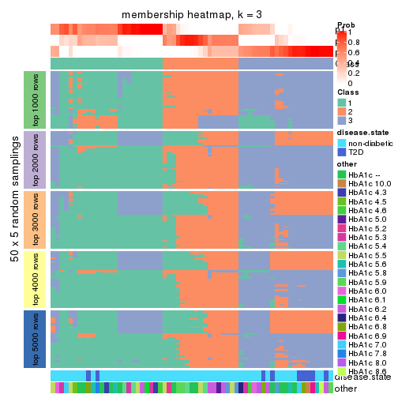
membership_heatmap(res, k = 4)

membership_heatmap(res, k = 5)
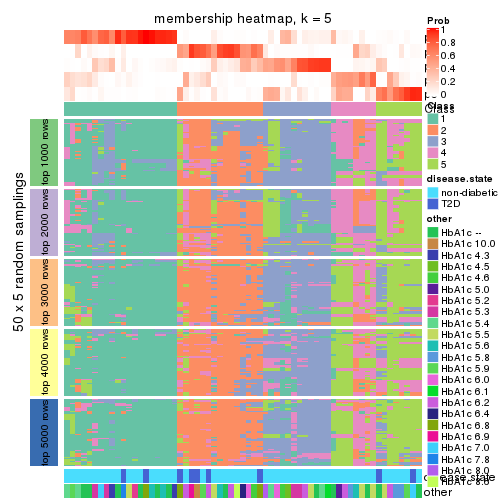
membership_heatmap(res, k = 6)
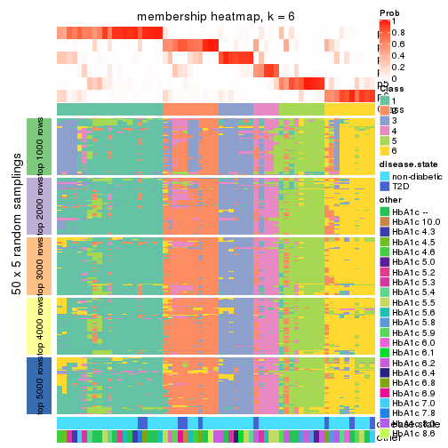
As soon as we have had the classes for columns, we can look for signatures which are significantly different between classes which can be candidate marks for certain classes. Following are the heatmaps for signatures.
Signature heatmaps where rows are scaled:
get_signatures(res, k = 2)
get_signatures(res, k = 3)
get_signatures(res, k = 4)
get_signatures(res, k = 5)
get_signatures(res, k = 6)
Signature heatmaps where rows are not scaled:
get_signatures(res, k = 2, scale_rows = FALSE)
get_signatures(res, k = 3, scale_rows = FALSE)
get_signatures(res, k = 4, scale_rows = FALSE)
get_signatures(res, k = 5, scale_rows = FALSE)
get_signatures(res, k = 6, scale_rows = FALSE)
Compare the overlap of signatures from different k:
compare_signatures(res)
get_signature() returns a data frame invisibly. TO get the list of signatures, the function
call should be assigned to a variable explicitly. In following code, if plot argument is set
to FALSE, no heatmap is plotted while only the differential analysis is performed.
# code only for demonstration
tb = get_signature(res, k = ..., plot = FALSE)
An example of the output of tb is:
#> which_row fdr mean_1 mean_2 scaled_mean_1 scaled_mean_2 km
#> 1 38 0.042760348 8.373488 9.131774 -0.5533452 0.5164555 1
#> 2 40 0.018707592 7.106213 8.469186 -0.6173731 0.5762149 1
#> 3 55 0.019134737 10.221463 11.207825 -0.6159697 0.5749050 1
#> 4 59 0.006059896 5.921854 7.869574 -0.6899429 0.6439467 1
#> 5 60 0.018055526 8.928898 10.211722 -0.6204761 0.5791110 1
#> 6 98 0.009384629 15.714769 14.887706 0.6635654 -0.6193277 2
...
The columns in tb are:
which_row: row indices corresponding to the input matrix.fdr: FDR for the differential test. mean_x: The mean value in group x.scaled_mean_x: The mean value in group x after rows are scaled.km: Row groups if k-means clustering is applied to rows.UMAP plot which shows how samples are separated.
dimension_reduction(res, k = 2, method = "UMAP")
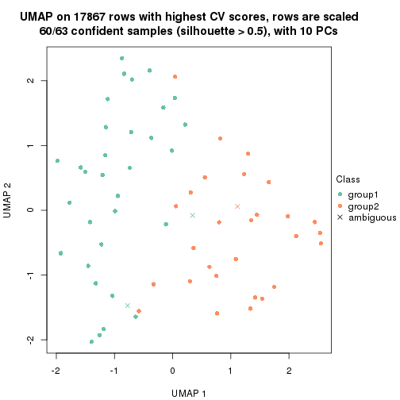
dimension_reduction(res, k = 3, method = "UMAP")
dimension_reduction(res, k = 4, method = "UMAP")
dimension_reduction(res, k = 5, method = "UMAP")
dimension_reduction(res, k = 6, method = "UMAP")
Following heatmap shows how subgroups are split when increasing k:
collect_classes(res)
Test correlation between subgroups and known annotations. If the known annotation is numeric, one-way ANOVA test is applied, and if the known annotation is discrete, chi-squared contingency table test is applied.
test_to_known_factors(res)
#> n disease.state(p) other(p) k
#> CV:NMF 60 0.0955 0.2311 2
#> CV:NMF 52 0.0145 0.4096 3
#> CV:NMF 45 0.2403 0.0978 4
#> CV:NMF 35 0.3291 0.4144 5
#> CV:NMF 51 0.3241 0.6207 6
If matrix rows can be associated to genes, consider to use GO_Enrichment(res,
...) to perform function enrichment for the signature genes.
The object with results only for a single top-value method and a single partition method can be extracted as:
res = res_list["MAD", "hclust"]
# you can also extract it by
# res = res_list["MAD:hclust"]
A summary of res and all the functions that can be applied to it:
res
#> A 'ConsensusPartition' object with k = 2, 3, 4, 5, 6.
#> On a matrix with 17867 rows and 63 columns.
#> Top rows (1000, 2000, 3000, 4000, 5000) are extracted by 'MAD' method.
#> Subgroups are detected by 'hclust' method.
#> Performed in total 1250 partitions by row resampling.
#> Best k for subgroups seems to be 2.
#>
#> Following methods can be applied to this 'ConsensusPartition' object:
#> [1] "cola_report" "collect_classes" "collect_plots"
#> [4] "collect_stats" "colnames" "compare_signatures"
#> [7] "consensus_heatmap" "dimension_reduction" "functional_enrichment"
#> [10] "get_anno_col" "get_anno" "get_classes"
#> [13] "get_consensus" "get_matrix" "get_membership"
#> [16] "get_param" "get_signatures" "get_stats"
#> [19] "is_best_k" "is_stable_k" "membership_heatmap"
#> [22] "ncol" "nrow" "plot_ecdf"
#> [25] "rownames" "select_partition_number" "show"
#> [28] "suggest_best_k" "test_to_known_factors"
collect_plots() function collects all the plots made from res for all k (number of partitions)
into one single page to provide an easy and fast comparison between different k.
collect_plots(res)
The plots are:
k and the heatmap of
predicted classes for each k.k.k.k.All the plots in panels can be made by individual functions and they are plotted later in this section.
select_partition_number() produces several plots showing different
statistics for choosing “optimized” k. There are following statistics:
k;k, the area increased is defined as \(A_k - A_{k-1}\).The detailed explanations of these statistics can be found in the cola vignette.
Generally speaking, lower PAC score, higher mean silhouette score or higher
concordance corresponds to better partition. Rand index and Jaccard index
measure how similar the current partition is compared to partition with k-1.
If they are too similar, we won't accept k is better than k-1.
select_partition_number(res)
The numeric values for all these statistics can be obtained by get_stats().
get_stats(res)
#> k 1-PAC mean_silhouette concordance area_increased Rand Jaccard
#> 2 2 0.559 0.818 0.916 0.4901 0.507 0.507
#> 3 3 0.396 0.692 0.671 0.2365 1.000 1.000
#> 4 4 0.435 0.499 0.676 0.1801 0.735 0.488
#> 5 5 0.518 0.581 0.703 0.0679 0.942 0.791
#> 6 6 0.570 0.613 0.706 0.0338 0.994 0.973
suggest_best_k() suggests the best \(k\) based on these statistics. The rules are as follows:
NA.suggest_best_k(res)
#> [1] 2
Following shows the table of the partitions (You need to click the show/hide
code output link to see it). The membership matrix (columns with name p*)
is inferred by
clue::cl_consensus()
function with the SE method. Basically the value in the membership matrix
represents the probability to belong to a certain group. The finall class
label for an item is determined with the group with highest probability it
belongs to.
In get_classes() function, the entropy is calculated from the membership
matrix and the silhouette score is calculated from the consensus matrix.
cbind(get_classes(res, k = 2), get_membership(res, k = 2))
#> class entropy silhouette p1 p2
#> GSM946745 2 0.9129 0.4935 0.328 0.672
#> GSM946739 2 0.0000 0.9292 0.000 1.000
#> GSM946738 1 1.0000 0.0477 0.500 0.500
#> GSM946746 2 0.3114 0.9056 0.056 0.944
#> GSM946747 1 0.3114 0.8661 0.944 0.056
#> GSM946711 2 0.0000 0.9292 0.000 1.000
#> GSM946760 2 0.0000 0.9292 0.000 1.000
#> GSM946710 1 0.5737 0.8044 0.864 0.136
#> GSM946761 2 0.0000 0.9292 0.000 1.000
#> GSM946701 1 0.0000 0.8845 1.000 0.000
#> GSM946703 1 0.0376 0.8844 0.996 0.004
#> GSM946704 2 0.0000 0.9292 0.000 1.000
#> GSM946706 1 0.3114 0.8702 0.944 0.056
#> GSM946708 2 0.0000 0.9292 0.000 1.000
#> GSM946709 2 0.5408 0.8421 0.124 0.876
#> GSM946712 2 0.3114 0.9054 0.056 0.944
#> GSM946720 1 0.0000 0.8845 1.000 0.000
#> GSM946722 1 0.7815 0.7225 0.768 0.232
#> GSM946753 1 0.0000 0.8845 1.000 0.000
#> GSM946762 1 0.7745 0.7275 0.772 0.228
#> GSM946707 1 0.0000 0.8845 1.000 0.000
#> GSM946721 1 0.0000 0.8845 1.000 0.000
#> GSM946719 1 0.6801 0.7772 0.820 0.180
#> GSM946716 1 0.0672 0.8840 0.992 0.008
#> GSM946751 1 0.7219 0.7557 0.800 0.200
#> GSM946740 2 0.0000 0.9292 0.000 1.000
#> GSM946741 1 0.0000 0.8845 1.000 0.000
#> GSM946718 1 0.1633 0.8815 0.976 0.024
#> GSM946737 1 0.0000 0.8845 1.000 0.000
#> GSM946742 1 0.3114 0.8697 0.944 0.056
#> GSM946749 1 0.0000 0.8845 1.000 0.000
#> GSM946702 2 0.6048 0.8159 0.148 0.852
#> GSM946713 1 0.2236 0.8788 0.964 0.036
#> GSM946723 1 0.1633 0.8806 0.976 0.024
#> GSM946736 1 0.0000 0.8845 1.000 0.000
#> GSM946705 1 0.0000 0.8845 1.000 0.000
#> GSM946715 1 0.0000 0.8845 1.000 0.000
#> GSM946726 2 0.0000 0.9292 0.000 1.000
#> GSM946727 2 0.9580 0.3440 0.380 0.620
#> GSM946748 2 0.7453 0.7203 0.212 0.788
#> GSM946756 2 0.0938 0.9265 0.012 0.988
#> GSM946724 2 0.0000 0.9292 0.000 1.000
#> GSM946733 1 0.0000 0.8845 1.000 0.000
#> GSM946734 1 0.9909 0.2402 0.556 0.444
#> GSM946754 1 0.0376 0.8844 0.996 0.004
#> GSM946700 2 0.1843 0.9211 0.028 0.972
#> GSM946714 2 0.0000 0.9292 0.000 1.000
#> GSM946729 2 0.2043 0.9196 0.032 0.968
#> GSM946731 1 0.7528 0.7432 0.784 0.216
#> GSM946743 1 0.5408 0.8328 0.876 0.124
#> GSM946744 2 0.0000 0.9292 0.000 1.000
#> GSM946730 1 0.7219 0.7557 0.800 0.200
#> GSM946755 1 0.9044 0.5563 0.680 0.320
#> GSM946717 1 0.0000 0.8845 1.000 0.000
#> GSM946725 2 0.5059 0.8521 0.112 0.888
#> GSM946728 2 0.0000 0.9292 0.000 1.000
#> GSM946752 1 0.0000 0.8845 1.000 0.000
#> GSM946757 2 0.2043 0.9196 0.032 0.968
#> GSM946758 2 0.0000 0.9292 0.000 1.000
#> GSM946759 1 1.0000 0.0604 0.504 0.496
#> GSM946732 1 0.2236 0.8788 0.964 0.036
#> GSM946750 1 0.6712 0.7814 0.824 0.176
#> GSM946735 2 0.0376 0.9285 0.004 0.996
cbind(get_classes(res, k = 3), get_membership(res, k = 3))
#> class entropy silhouette p1 p2 p3
#> GSM946745 2 0.6967 0.403 NA 0.668 0.288
#> GSM946739 2 0.6215 0.740 NA 0.572 0.000
#> GSM946738 3 0.8840 0.137 NA 0.428 0.456
#> GSM946746 2 0.3459 0.770 NA 0.892 0.012
#> GSM946747 3 0.4902 0.725 NA 0.064 0.844
#> GSM946711 2 0.6291 0.725 NA 0.532 0.000
#> GSM946760 2 0.4346 0.764 NA 0.816 0.000
#> GSM946710 3 0.7097 0.695 NA 0.128 0.724
#> GSM946761 2 0.6291 0.725 NA 0.532 0.000
#> GSM946701 3 0.3267 0.772 NA 0.000 0.884
#> GSM946703 3 0.2945 0.753 NA 0.004 0.908
#> GSM946704 2 0.4346 0.764 NA 0.816 0.000
#> GSM946706 3 0.7124 0.727 NA 0.048 0.656
#> GSM946708 2 0.4796 0.784 NA 0.780 0.000
#> GSM946709 2 0.4137 0.722 NA 0.872 0.096
#> GSM946712 2 0.3695 0.769 NA 0.880 0.012
#> GSM946720 3 0.2711 0.753 NA 0.000 0.912
#> GSM946722 3 0.8298 0.608 NA 0.220 0.628
#> GSM946753 3 0.2711 0.753 NA 0.000 0.912
#> GSM946762 3 0.8259 0.614 NA 0.216 0.632
#> GSM946707 3 0.4228 0.777 NA 0.008 0.844
#> GSM946721 3 0.2711 0.753 NA 0.000 0.912
#> GSM946719 3 0.8957 0.634 NA 0.152 0.536
#> GSM946716 3 0.2902 0.778 NA 0.016 0.920
#> GSM946751 3 0.9092 0.622 NA 0.172 0.532
#> GSM946740 2 0.5905 0.749 NA 0.648 0.000
#> GSM946741 3 0.2711 0.753 NA 0.000 0.912
#> GSM946718 3 0.3973 0.777 NA 0.032 0.880
#> GSM946737 3 0.4228 0.777 NA 0.008 0.844
#> GSM946742 3 0.7124 0.726 NA 0.048 0.656
#> GSM946749 3 0.3816 0.763 NA 0.000 0.852
#> GSM946702 2 0.6317 0.706 NA 0.772 0.104
#> GSM946713 3 0.4558 0.775 NA 0.044 0.856
#> GSM946723 3 0.3850 0.745 NA 0.028 0.884
#> GSM946736 3 0.5254 0.754 NA 0.000 0.736
#> GSM946705 3 0.5254 0.754 NA 0.000 0.736
#> GSM946715 3 0.2711 0.753 NA 0.000 0.912
#> GSM946726 2 0.5905 0.749 NA 0.648 0.000
#> GSM946727 2 0.9198 0.288 NA 0.528 0.280
#> GSM946748 2 0.7960 0.631 NA 0.656 0.208
#> GSM946756 2 0.4682 0.761 NA 0.804 0.004
#> GSM946724 2 0.6286 0.726 NA 0.536 0.000
#> GSM946733 3 0.2711 0.753 NA 0.000 0.912
#> GSM946734 3 0.8826 0.247 NA 0.412 0.472
#> GSM946754 3 0.2280 0.776 NA 0.008 0.940
#> GSM946700 2 0.1129 0.782 NA 0.976 0.004
#> GSM946714 2 0.5905 0.749 NA 0.648 0.000
#> GSM946729 2 0.0661 0.779 NA 0.988 0.008
#> GSM946731 3 0.7966 0.631 NA 0.220 0.652
#> GSM946743 3 0.6663 0.727 NA 0.124 0.752
#> GSM946744 2 0.6291 0.725 NA 0.532 0.000
#> GSM946730 3 0.9092 0.622 NA 0.172 0.532
#> GSM946755 3 0.8378 0.527 NA 0.284 0.596
#> GSM946717 3 0.5254 0.754 NA 0.000 0.736
#> GSM946725 2 0.7340 0.707 NA 0.676 0.076
#> GSM946728 2 0.5905 0.749 NA 0.648 0.000
#> GSM946752 3 0.5797 0.748 NA 0.008 0.712
#> GSM946757 2 0.0661 0.779 NA 0.988 0.008
#> GSM946758 2 0.4796 0.784 NA 0.780 0.000
#> GSM946759 3 0.8786 0.149 NA 0.424 0.464
#> GSM946732 3 0.4558 0.775 NA 0.044 0.856
#> GSM946750 3 0.8930 0.634 NA 0.148 0.536
#> GSM946735 2 0.5178 0.771 NA 0.744 0.000
cbind(get_classes(res, k = 4), get_membership(res, k = 4))
#> class entropy silhouette p1 p2 p3 p4
#> GSM946745 2 0.926 -0.0679 0.076 0.320 0.292 0.312
#> GSM946739 4 0.490 0.3679 0.004 0.364 0.000 0.632
#> GSM946738 3 0.576 0.3797 0.004 0.020 0.516 0.460
#> GSM946746 4 0.759 0.2975 0.112 0.316 0.032 0.540
#> GSM946747 1 0.286 0.7625 0.888 0.000 0.096 0.016
#> GSM946711 4 0.384 0.4106 0.000 0.224 0.000 0.776
#> GSM946760 2 0.525 0.5301 0.020 0.748 0.032 0.200
#> GSM946710 1 0.385 0.6542 0.820 0.000 0.160 0.020
#> GSM946761 4 0.384 0.4106 0.000 0.224 0.000 0.776
#> GSM946701 1 0.445 0.6891 0.692 0.000 0.308 0.000
#> GSM946703 1 0.340 0.7914 0.832 0.000 0.164 0.004
#> GSM946704 2 0.525 0.5301 0.020 0.748 0.032 0.200
#> GSM946706 3 0.151 0.6475 0.016 0.000 0.956 0.028
#> GSM946708 4 0.474 0.4298 0.020 0.252 0.000 0.728
#> GSM946709 4 0.779 0.1713 0.144 0.364 0.020 0.472
#> GSM946712 4 0.746 0.3358 0.108 0.280 0.036 0.576
#> GSM946720 1 0.322 0.7901 0.836 0.000 0.164 0.000
#> GSM946722 1 0.662 0.5327 0.672 0.044 0.216 0.068
#> GSM946753 1 0.317 0.7909 0.840 0.000 0.160 0.000
#> GSM946762 1 0.654 0.5374 0.676 0.040 0.216 0.068
#> GSM946707 3 0.452 0.4402 0.320 0.000 0.680 0.000
#> GSM946721 1 0.322 0.7901 0.836 0.000 0.164 0.000
#> GSM946719 3 0.439 0.6445 0.016 0.064 0.832 0.088
#> GSM946716 3 0.503 0.3218 0.400 0.000 0.596 0.004
#> GSM946751 3 0.470 0.6432 0.016 0.064 0.812 0.108
#> GSM946740 2 0.228 0.5904 0.000 0.904 0.000 0.096
#> GSM946741 1 0.322 0.7909 0.836 0.000 0.164 0.000
#> GSM946718 3 0.522 0.4164 0.352 0.000 0.632 0.016
#> GSM946737 3 0.452 0.4402 0.320 0.000 0.680 0.000
#> GSM946742 3 0.149 0.6479 0.012 0.000 0.956 0.032
#> GSM946749 3 0.479 0.3198 0.380 0.000 0.620 0.000
#> GSM946702 4 0.825 0.2869 0.196 0.260 0.040 0.504
#> GSM946713 3 0.531 0.4158 0.376 0.000 0.608 0.016
#> GSM946723 1 0.343 0.7866 0.848 0.008 0.140 0.004
#> GSM946736 3 0.164 0.6311 0.060 0.000 0.940 0.000
#> GSM946705 3 0.164 0.6311 0.060 0.000 0.940 0.000
#> GSM946715 1 0.322 0.7909 0.836 0.000 0.164 0.000
#> GSM946726 2 0.222 0.5897 0.000 0.908 0.000 0.092
#> GSM946727 3 0.938 -0.0990 0.104 0.224 0.368 0.304
#> GSM946748 4 0.790 0.2401 0.244 0.280 0.008 0.468
#> GSM946756 2 0.546 0.5215 0.020 0.736 0.040 0.204
#> GSM946724 4 0.448 0.3698 0.000 0.312 0.000 0.688
#> GSM946733 1 0.317 0.7909 0.840 0.000 0.160 0.000
#> GSM946734 3 0.763 0.4000 0.020 0.208 0.560 0.212
#> GSM946754 1 0.480 0.5835 0.656 0.000 0.340 0.004
#> GSM946700 4 0.675 0.1850 0.056 0.420 0.016 0.508
#> GSM946714 2 0.228 0.5904 0.000 0.904 0.000 0.096
#> GSM946729 4 0.675 0.2192 0.052 0.400 0.020 0.528
#> GSM946731 1 0.794 0.5280 0.560 0.116 0.260 0.064
#> GSM946743 1 0.720 0.5753 0.560 0.052 0.336 0.052
#> GSM946744 4 0.384 0.4106 0.000 0.224 0.000 0.776
#> GSM946730 3 0.470 0.6432 0.016 0.064 0.812 0.108
#> GSM946755 3 0.823 0.4978 0.168 0.056 0.532 0.244
#> GSM946717 3 0.164 0.6311 0.060 0.000 0.940 0.000
#> GSM946725 4 0.555 0.3813 0.092 0.020 0.128 0.760
#> GSM946728 2 0.228 0.5904 0.000 0.904 0.000 0.096
#> GSM946752 3 0.112 0.6389 0.036 0.000 0.964 0.000
#> GSM946757 4 0.675 0.2192 0.052 0.400 0.020 0.528
#> GSM946758 4 0.480 0.4243 0.020 0.260 0.000 0.720
#> GSM946759 3 0.600 0.3864 0.012 0.020 0.512 0.456
#> GSM946732 3 0.531 0.4158 0.376 0.000 0.608 0.016
#> GSM946750 3 0.394 0.6455 0.004 0.064 0.848 0.084
#> GSM946735 4 0.340 0.4671 0.092 0.040 0.000 0.868
cbind(get_classes(res, k = 5), get_membership(res, k = 5))
#> class entropy silhouette p1 p2 p3 p4 p5
#> GSM946745 2 0.6946 0.2418 0.020 0.480 0.288 0.000 0.212
#> GSM946739 4 0.5960 0.4449 0.000 0.368 0.000 0.516 0.116
#> GSM946738 3 0.7349 0.3798 0.000 0.272 0.504 0.140 0.084
#> GSM946746 2 0.5033 0.5020 0.012 0.748 0.024 0.052 0.164
#> GSM946747 1 0.1788 0.8168 0.932 0.056 0.000 0.004 0.008
#> GSM946711 4 0.2605 0.8648 0.000 0.148 0.000 0.852 0.000
#> GSM946760 5 0.3250 0.4581 0.000 0.168 0.008 0.004 0.820
#> GSM946710 1 0.5733 0.7057 0.692 0.124 0.156 0.012 0.016
#> GSM946761 4 0.2605 0.8648 0.000 0.148 0.000 0.852 0.000
#> GSM946701 1 0.2648 0.7701 0.848 0.000 0.152 0.000 0.000
#> GSM946703 1 0.0613 0.8305 0.984 0.008 0.004 0.000 0.004
#> GSM946704 5 0.3250 0.4581 0.000 0.168 0.008 0.004 0.820
#> GSM946706 3 0.1739 0.7113 0.004 0.024 0.940 0.000 0.032
#> GSM946708 2 0.5312 0.1707 0.000 0.648 0.000 0.256 0.096
#> GSM946709 2 0.5313 0.4266 0.092 0.752 0.008 0.060 0.088
#> GSM946712 2 0.5195 0.5147 0.008 0.744 0.028 0.080 0.140
#> GSM946720 1 0.0727 0.8267 0.980 0.000 0.004 0.012 0.004
#> GSM946722 1 0.7109 0.5784 0.540 0.220 0.200 0.020 0.020
#> GSM946753 1 0.0162 0.8298 0.996 0.000 0.004 0.000 0.000
#> GSM946762 1 0.7087 0.5836 0.544 0.216 0.200 0.020 0.020
#> GSM946707 3 0.3906 0.6070 0.292 0.000 0.704 0.000 0.004
#> GSM946721 1 0.0727 0.8267 0.980 0.000 0.004 0.012 0.004
#> GSM946719 3 0.4086 0.6901 0.012 0.080 0.808 0.000 0.100
#> GSM946716 3 0.4505 0.5230 0.368 0.004 0.620 0.000 0.008
#> GSM946751 3 0.4462 0.6843 0.012 0.096 0.788 0.004 0.100
#> GSM946740 5 0.6347 0.5520 0.000 0.164 0.000 0.376 0.460
#> GSM946741 1 0.0324 0.8305 0.992 0.004 0.004 0.000 0.000
#> GSM946718 3 0.4810 0.5881 0.316 0.012 0.652 0.000 0.020
#> GSM946737 3 0.3906 0.6070 0.292 0.000 0.704 0.000 0.004
#> GSM946742 3 0.1739 0.7107 0.004 0.024 0.940 0.000 0.032
#> GSM946749 3 0.4774 0.5137 0.340 0.004 0.636 0.012 0.008
#> GSM946702 2 0.6281 0.4764 0.104 0.692 0.024 0.104 0.076
#> GSM946713 3 0.5307 0.5724 0.316 0.036 0.628 0.000 0.020
#> GSM946723 1 0.1082 0.8284 0.964 0.028 0.000 0.000 0.008
#> GSM946736 3 0.1729 0.7024 0.004 0.008 0.944 0.012 0.032
#> GSM946705 3 0.1729 0.7024 0.004 0.008 0.944 0.012 0.032
#> GSM946715 1 0.0324 0.8305 0.992 0.004 0.004 0.000 0.000
#> GSM946726 5 0.6321 0.5508 0.000 0.160 0.000 0.376 0.464
#> GSM946727 2 0.8157 0.0625 0.020 0.376 0.344 0.068 0.192
#> GSM946748 2 0.7386 0.2591 0.200 0.536 0.000 0.148 0.116
#> GSM946756 5 0.3343 0.4466 0.000 0.172 0.016 0.000 0.812
#> GSM946724 4 0.3994 0.8081 0.000 0.140 0.000 0.792 0.068
#> GSM946733 1 0.0613 0.8274 0.984 0.000 0.004 0.008 0.004
#> GSM946734 3 0.6976 0.3877 0.016 0.236 0.540 0.016 0.192
#> GSM946754 1 0.3456 0.6772 0.788 0.004 0.204 0.000 0.004
#> GSM946700 2 0.3965 0.4552 0.000 0.784 0.008 0.028 0.180
#> GSM946714 5 0.6347 0.5520 0.000 0.164 0.000 0.376 0.460
#> GSM946729 2 0.3622 0.4774 0.000 0.804 0.008 0.016 0.172
#> GSM946731 1 0.7074 0.5937 0.564 0.188 0.196 0.012 0.040
#> GSM946743 1 0.5762 0.6797 0.664 0.124 0.196 0.008 0.008
#> GSM946744 4 0.2605 0.8648 0.000 0.148 0.000 0.852 0.000
#> GSM946730 3 0.4462 0.6843 0.012 0.096 0.788 0.004 0.100
#> GSM946755 3 0.8195 0.5619 0.120 0.128 0.544 0.112 0.096
#> GSM946717 3 0.1729 0.7024 0.004 0.008 0.944 0.012 0.032
#> GSM946725 2 0.7321 0.1567 0.004 0.524 0.112 0.268 0.092
#> GSM946728 5 0.6347 0.5520 0.000 0.164 0.000 0.376 0.460
#> GSM946752 3 0.0889 0.7124 0.012 0.004 0.976 0.004 0.004
#> GSM946757 2 0.3622 0.4774 0.000 0.804 0.008 0.016 0.172
#> GSM946758 2 0.5382 0.1590 0.000 0.640 0.000 0.260 0.100
#> GSM946759 3 0.7590 0.3817 0.008 0.264 0.500 0.148 0.080
#> GSM946732 3 0.5307 0.5724 0.316 0.036 0.628 0.000 0.020
#> GSM946750 3 0.3631 0.6899 0.000 0.072 0.824 0.000 0.104
#> GSM946735 2 0.4602 0.1078 0.004 0.640 0.000 0.340 0.016
cbind(get_classes(res, k = 6), get_membership(res, k = 6))
#> class entropy silhouette p1 p2 p3 p4 p5 p6
#> GSM946745 2 0.7096 0.1356 0.020 0.488 0.288 0.008 0.128 0.068
#> GSM946739 4 0.5887 0.3429 0.000 0.220 0.000 0.588 0.156 0.036
#> GSM946738 3 0.6687 0.3913 0.000 0.248 0.504 0.088 0.000 0.160
#> GSM946746 2 0.5697 0.4832 0.008 0.680 0.024 0.124 0.136 0.028
#> GSM946747 1 0.2095 0.7719 0.904 0.076 0.000 0.000 0.004 0.016
#> GSM946711 4 0.0363 0.8586 0.000 0.012 0.000 0.988 0.000 0.000
#> GSM946760 6 0.5297 0.9891 0.000 0.168 0.004 0.000 0.212 0.616
#> GSM946710 1 0.5464 0.6370 0.620 0.208 0.156 0.000 0.000 0.016
#> GSM946761 4 0.0363 0.8586 0.000 0.012 0.000 0.988 0.000 0.000
#> GSM946701 1 0.2593 0.7361 0.844 0.000 0.148 0.000 0.000 0.008
#> GSM946703 1 0.0862 0.7824 0.972 0.008 0.000 0.000 0.004 0.016
#> GSM946704 6 0.5297 0.9891 0.000 0.168 0.004 0.000 0.212 0.616
#> GSM946706 3 0.1672 0.6705 0.000 0.016 0.932 0.000 0.004 0.048
#> GSM946708 2 0.6330 0.3386 0.000 0.488 0.000 0.216 0.268 0.028
#> GSM946709 2 0.4279 0.4587 0.024 0.700 0.008 0.000 0.260 0.008
#> GSM946712 2 0.5626 0.5017 0.004 0.680 0.028 0.140 0.124 0.024
#> GSM946720 1 0.1901 0.7561 0.912 0.008 0.000 0.004 0.000 0.076
#> GSM946722 1 0.6965 0.4745 0.440 0.300 0.200 0.000 0.016 0.044
#> GSM946753 1 0.0777 0.7764 0.972 0.004 0.000 0.000 0.000 0.024
#> GSM946762 1 0.6956 0.4803 0.444 0.296 0.200 0.000 0.016 0.044
#> GSM946707 3 0.3855 0.5875 0.272 0.000 0.704 0.000 0.000 0.024
#> GSM946721 1 0.1901 0.7561 0.912 0.008 0.000 0.004 0.000 0.076
#> GSM946719 3 0.3646 0.6497 0.008 0.072 0.804 0.000 0.000 0.116
#> GSM946716 3 0.4466 0.5271 0.336 0.000 0.620 0.000 0.000 0.044
#> GSM946751 3 0.3992 0.6474 0.008 0.088 0.784 0.004 0.000 0.116
#> GSM946740 5 0.0717 0.9965 0.000 0.008 0.000 0.016 0.976 0.000
#> GSM946741 1 0.0508 0.7806 0.984 0.004 0.000 0.000 0.000 0.012
#> GSM946718 3 0.4743 0.5863 0.280 0.012 0.652 0.000 0.000 0.056
#> GSM946737 3 0.3855 0.5875 0.272 0.000 0.704 0.000 0.000 0.024
#> GSM946742 3 0.1672 0.6698 0.000 0.016 0.932 0.000 0.004 0.048
#> GSM946749 3 0.5851 0.4988 0.272 0.048 0.596 0.004 0.004 0.076
#> GSM946702 2 0.4465 0.4870 0.032 0.772 0.024 0.044 0.128 0.000
#> GSM946713 3 0.5189 0.5721 0.280 0.036 0.628 0.000 0.000 0.056
#> GSM946723 1 0.1448 0.7817 0.948 0.024 0.000 0.000 0.012 0.016
#> GSM946736 3 0.4623 0.5588 0.000 0.060 0.728 0.008 0.020 0.184
#> GSM946705 3 0.4623 0.5588 0.000 0.060 0.728 0.008 0.020 0.184
#> GSM946715 1 0.0508 0.7822 0.984 0.004 0.000 0.000 0.000 0.012
#> GSM946726 5 0.0964 0.9895 0.000 0.012 0.000 0.016 0.968 0.004
#> GSM946727 2 0.7993 0.0245 0.012 0.368 0.344 0.052 0.112 0.112
#> GSM946748 2 0.6554 0.2403 0.116 0.520 0.000 0.020 0.296 0.048
#> GSM946756 6 0.5419 0.9785 0.000 0.168 0.012 0.000 0.200 0.620
#> GSM946724 4 0.1897 0.8109 0.000 0.004 0.000 0.908 0.084 0.004
#> GSM946733 1 0.1588 0.7607 0.924 0.000 0.000 0.004 0.000 0.072
#> GSM946734 3 0.6955 0.3950 0.012 0.228 0.540 0.012 0.096 0.112
#> GSM946754 1 0.3883 0.6144 0.752 0.000 0.200 0.004 0.000 0.044
#> GSM946700 2 0.5662 0.4913 0.000 0.600 0.008 0.088 0.276 0.028
#> GSM946714 5 0.0717 0.9965 0.000 0.008 0.000 0.016 0.976 0.000
#> GSM946729 2 0.5544 0.5089 0.000 0.620 0.008 0.084 0.260 0.028
#> GSM946731 1 0.7386 0.5041 0.476 0.208 0.196 0.000 0.088 0.032
#> GSM946743 1 0.6360 0.6066 0.576 0.172 0.196 0.000 0.024 0.032
#> GSM946744 4 0.0363 0.8586 0.000 0.012 0.000 0.988 0.000 0.000
#> GSM946730 3 0.3992 0.6474 0.008 0.088 0.784 0.004 0.000 0.116
#> GSM946755 3 0.7764 0.5596 0.104 0.128 0.544 0.068 0.040 0.116
#> GSM946717 3 0.4623 0.5588 0.000 0.060 0.728 0.008 0.020 0.184
#> GSM946725 2 0.6845 0.2579 0.000 0.492 0.112 0.240 0.000 0.156
#> GSM946728 5 0.0717 0.9965 0.000 0.008 0.000 0.016 0.976 0.000
#> GSM946752 3 0.1484 0.6638 0.008 0.040 0.944 0.000 0.004 0.004
#> GSM946757 2 0.5544 0.5089 0.000 0.620 0.008 0.084 0.260 0.028
#> GSM946758 2 0.6373 0.3312 0.000 0.476 0.000 0.220 0.276 0.028
#> GSM946759 3 0.6844 0.3967 0.008 0.260 0.500 0.084 0.000 0.148
#> GSM946732 3 0.5189 0.5721 0.280 0.036 0.628 0.000 0.000 0.056
#> GSM946750 3 0.3285 0.6493 0.000 0.064 0.820 0.000 0.000 0.116
#> GSM946735 2 0.5096 0.2562 0.000 0.596 0.000 0.316 0.008 0.080
Heatmaps for the consensus matrix. It visualizes the probability of two samples to be in a same group.
consensus_heatmap(res, k = 2)
consensus_heatmap(res, k = 3)
consensus_heatmap(res, k = 4)
consensus_heatmap(res, k = 5)
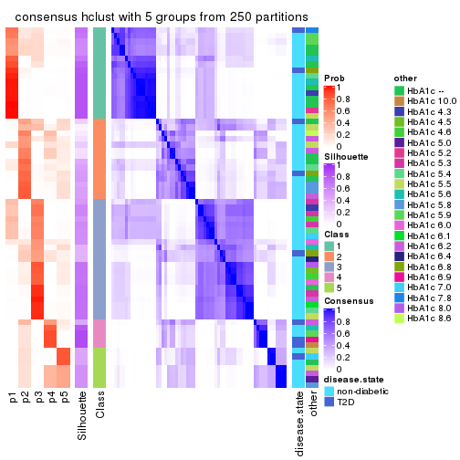
consensus_heatmap(res, k = 6)
Heatmaps for the membership of samples in all partitions to see how consistent they are:
membership_heatmap(res, k = 2)
membership_heatmap(res, k = 3)
membership_heatmap(res, k = 4)
membership_heatmap(res, k = 5)
membership_heatmap(res, k = 6)
As soon as we have had the classes for columns, we can look for signatures which are significantly different between classes which can be candidate marks for certain classes. Following are the heatmaps for signatures.
Signature heatmaps where rows are scaled:
get_signatures(res, k = 2)
get_signatures(res, k = 3)
get_signatures(res, k = 4)
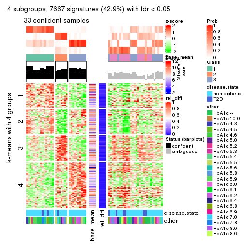
get_signatures(res, k = 5)
get_signatures(res, k = 6)
Signature heatmaps where rows are not scaled:
get_signatures(res, k = 2, scale_rows = FALSE)
get_signatures(res, k = 3, scale_rows = FALSE)
get_signatures(res, k = 4, scale_rows = FALSE)
get_signatures(res, k = 5, scale_rows = FALSE)

get_signatures(res, k = 6, scale_rows = FALSE)
Compare the overlap of signatures from different k:
compare_signatures(res)
get_signature() returns a data frame invisibly. TO get the list of signatures, the function
call should be assigned to a variable explicitly. In following code, if plot argument is set
to FALSE, no heatmap is plotted while only the differential analysis is performed.
# code only for demonstration
tb = get_signature(res, k = ..., plot = FALSE)
An example of the output of tb is:
#> which_row fdr mean_1 mean_2 scaled_mean_1 scaled_mean_2 km
#> 1 38 0.042760348 8.373488 9.131774 -0.5533452 0.5164555 1
#> 2 40 0.018707592 7.106213 8.469186 -0.6173731 0.5762149 1
#> 3 55 0.019134737 10.221463 11.207825 -0.6159697 0.5749050 1
#> 4 59 0.006059896 5.921854 7.869574 -0.6899429 0.6439467 1
#> 5 60 0.018055526 8.928898 10.211722 -0.6204761 0.5791110 1
#> 6 98 0.009384629 15.714769 14.887706 0.6635654 -0.6193277 2
...
The columns in tb are:
which_row: row indices corresponding to the input matrix.fdr: FDR for the differential test. mean_x: The mean value in group x.scaled_mean_x: The mean value in group x after rows are scaled.km: Row groups if k-means clustering is applied to rows.UMAP plot which shows how samples are separated.
dimension_reduction(res, k = 2, method = "UMAP")
dimension_reduction(res, k = 3, method = "UMAP")

dimension_reduction(res, k = 4, method = "UMAP")
dimension_reduction(res, k = 5, method = "UMAP")
dimension_reduction(res, k = 6, method = "UMAP")
Following heatmap shows how subgroups are split when increasing k:
collect_classes(res)
Test correlation between subgroups and known annotations. If the known annotation is numeric, one-way ANOVA test is applied, and if the known annotation is discrete, chi-squared contingency table test is applied.
test_to_known_factors(res)
#> n disease.state(p) other(p) k
#> MAD:hclust 58 0.1894 0.191 2
#> MAD:hclust 58 0.1894 0.191 3
#> MAD:hclust 33 0.4835 0.280 4
#> MAD:hclust 44 0.0194 0.105 5
#> MAD:hclust 45 0.0562 0.479 6
If matrix rows can be associated to genes, consider to use GO_Enrichment(res,
...) to perform function enrichment for the signature genes.
The object with results only for a single top-value method and a single partition method can be extracted as:
res = res_list["MAD", "kmeans"]
# you can also extract it by
# res = res_list["MAD:kmeans"]
A summary of res and all the functions that can be applied to it:
res
#> A 'ConsensusPartition' object with k = 2, 3, 4, 5, 6.
#> On a matrix with 17867 rows and 63 columns.
#> Top rows (1000, 2000, 3000, 4000, 5000) are extracted by 'MAD' method.
#> Subgroups are detected by 'kmeans' method.
#> Performed in total 1250 partitions by row resampling.
#> Best k for subgroups seems to be 2.
#>
#> Following methods can be applied to this 'ConsensusPartition' object:
#> [1] "cola_report" "collect_classes" "collect_plots"
#> [4] "collect_stats" "colnames" "compare_signatures"
#> [7] "consensus_heatmap" "dimension_reduction" "functional_enrichment"
#> [10] "get_anno_col" "get_anno" "get_classes"
#> [13] "get_consensus" "get_matrix" "get_membership"
#> [16] "get_param" "get_signatures" "get_stats"
#> [19] "is_best_k" "is_stable_k" "membership_heatmap"
#> [22] "ncol" "nrow" "plot_ecdf"
#> [25] "rownames" "select_partition_number" "show"
#> [28] "suggest_best_k" "test_to_known_factors"
collect_plots() function collects all the plots made from res for all k (number of partitions)
into one single page to provide an easy and fast comparison between different k.
collect_plots(res)
The plots are:
k and the heatmap of
predicted classes for each k.k.k.k.All the plots in panels can be made by individual functions and they are plotted later in this section.
select_partition_number() produces several plots showing different
statistics for choosing “optimized” k. There are following statistics:
k;k, the area increased is defined as \(A_k - A_{k-1}\).The detailed explanations of these statistics can be found in the cola vignette.
Generally speaking, lower PAC score, higher mean silhouette score or higher
concordance corresponds to better partition. Rand index and Jaccard index
measure how similar the current partition is compared to partition with k-1.
If they are too similar, we won't accept k is better than k-1.
select_partition_number(res)
The numeric values for all these statistics can be obtained by get_stats().
get_stats(res)
#> k 1-PAC mean_silhouette concordance area_increased Rand Jaccard
#> 2 2 0.872 0.890 0.956 0.5010 0.493 0.493
#> 3 3 0.696 0.819 0.892 0.3226 0.721 0.493
#> 4 4 0.628 0.613 0.755 0.1065 0.883 0.670
#> 5 5 0.642 0.436 0.642 0.0636 0.911 0.680
#> 6 6 0.678 0.632 0.768 0.0464 0.839 0.426
suggest_best_k() suggests the best \(k\) based on these statistics. The rules are as follows:
NA.suggest_best_k(res)
#> [1] 2
Following shows the table of the partitions (You need to click the show/hide
code output link to see it). The membership matrix (columns with name p*)
is inferred by
clue::cl_consensus()
function with the SE method. Basically the value in the membership matrix
represents the probability to belong to a certain group. The finall class
label for an item is determined with the group with highest probability it
belongs to.
In get_classes() function, the entropy is calculated from the membership
matrix and the silhouette score is calculated from the consensus matrix.
cbind(get_classes(res, k = 2), get_membership(res, k = 2))
#> class entropy silhouette p1 p2
#> GSM946745 2 0.8909 0.5934 0.308 0.692
#> GSM946739 2 0.0000 0.9376 0.000 1.000
#> GSM946738 2 0.8909 0.5934 0.308 0.692
#> GSM946746 2 0.0000 0.9376 0.000 1.000
#> GSM946747 1 0.0000 0.9609 1.000 0.000
#> GSM946711 2 0.0000 0.9376 0.000 1.000
#> GSM946760 2 0.0000 0.9376 0.000 1.000
#> GSM946710 1 0.0000 0.9609 1.000 0.000
#> GSM946761 2 0.0000 0.9376 0.000 1.000
#> GSM946701 1 0.0000 0.9609 1.000 0.000
#> GSM946703 1 0.0000 0.9609 1.000 0.000
#> GSM946704 2 0.0000 0.9376 0.000 1.000
#> GSM946706 1 0.0376 0.9611 0.996 0.004
#> GSM946708 2 0.0000 0.9376 0.000 1.000
#> GSM946709 2 0.0376 0.9368 0.004 0.996
#> GSM946712 2 0.0000 0.9376 0.000 1.000
#> GSM946720 1 0.0000 0.9609 1.000 0.000
#> GSM946722 2 0.0376 0.9368 0.004 0.996
#> GSM946753 1 0.0000 0.9609 1.000 0.000
#> GSM946762 1 0.0000 0.9609 1.000 0.000
#> GSM946707 1 0.0376 0.9611 0.996 0.004
#> GSM946721 1 0.0000 0.9609 1.000 0.000
#> GSM946719 1 0.0376 0.9611 0.996 0.004
#> GSM946716 1 0.0376 0.9611 0.996 0.004
#> GSM946751 1 0.9970 0.0195 0.532 0.468
#> GSM946740 2 0.0376 0.9368 0.004 0.996
#> GSM946741 1 0.0000 0.9609 1.000 0.000
#> GSM946718 1 0.0376 0.9611 0.996 0.004
#> GSM946737 1 0.0376 0.9611 0.996 0.004
#> GSM946742 1 0.0376 0.9611 0.996 0.004
#> GSM946749 1 0.0376 0.9611 0.996 0.004
#> GSM946702 2 0.0000 0.9376 0.000 1.000
#> GSM946713 1 0.0376 0.9611 0.996 0.004
#> GSM946723 1 0.0000 0.9609 1.000 0.000
#> GSM946736 1 0.0376 0.9611 0.996 0.004
#> GSM946705 1 0.0376 0.9611 0.996 0.004
#> GSM946715 1 0.0000 0.9609 1.000 0.000
#> GSM946726 2 0.0376 0.9368 0.004 0.996
#> GSM946727 2 0.8909 0.5934 0.308 0.692
#> GSM946748 2 0.0376 0.9368 0.004 0.996
#> GSM946756 1 0.0376 0.9611 0.996 0.004
#> GSM946724 2 0.0000 0.9376 0.000 1.000
#> GSM946733 1 0.0000 0.9609 1.000 0.000
#> GSM946734 2 0.2236 0.9137 0.036 0.964
#> GSM946754 1 0.0000 0.9609 1.000 0.000
#> GSM946700 2 0.0376 0.9368 0.004 0.996
#> GSM946714 2 0.0376 0.9368 0.004 0.996
#> GSM946729 2 0.0000 0.9376 0.000 1.000
#> GSM946731 1 0.2236 0.9287 0.964 0.036
#> GSM946743 1 0.0000 0.9609 1.000 0.000
#> GSM946744 2 0.0000 0.9376 0.000 1.000
#> GSM946730 1 0.9970 0.0195 0.532 0.468
#> GSM946755 1 0.4562 0.8653 0.904 0.096
#> GSM946717 1 0.0376 0.9611 0.996 0.004
#> GSM946725 2 0.2236 0.9137 0.036 0.964
#> GSM946728 2 0.0376 0.9368 0.004 0.996
#> GSM946752 1 0.0376 0.9611 0.996 0.004
#> GSM946757 2 0.0376 0.9368 0.004 0.996
#> GSM946758 2 0.0000 0.9376 0.000 1.000
#> GSM946759 2 0.9000 0.5781 0.316 0.684
#> GSM946732 1 0.0376 0.9611 0.996 0.004
#> GSM946750 2 0.8909 0.5934 0.308 0.692
#> GSM946735 2 0.0000 0.9376 0.000 1.000
cbind(get_classes(res, k = 3), get_membership(res, k = 3))
#> class entropy silhouette p1 p2 p3
#> GSM946745 3 0.1411 0.811 0.000 0.036 0.964
#> GSM946739 2 0.2356 0.900 0.000 0.928 0.072
#> GSM946738 3 0.0592 0.813 0.000 0.012 0.988
#> GSM946746 2 0.4750 0.864 0.000 0.784 0.216
#> GSM946747 1 0.0237 0.926 0.996 0.000 0.004
#> GSM946711 2 0.2356 0.900 0.000 0.928 0.072
#> GSM946760 2 0.1289 0.905 0.000 0.968 0.032
#> GSM946710 1 0.0747 0.917 0.984 0.000 0.016
#> GSM946761 2 0.2356 0.900 0.000 0.928 0.072
#> GSM946701 1 0.0237 0.926 0.996 0.000 0.004
#> GSM946703 1 0.0237 0.926 0.996 0.000 0.004
#> GSM946704 2 0.1031 0.903 0.000 0.976 0.024
#> GSM946706 3 0.4842 0.753 0.224 0.000 0.776
#> GSM946708 2 0.1289 0.904 0.000 0.968 0.032
#> GSM946709 2 0.4178 0.870 0.000 0.828 0.172
#> GSM946712 2 0.4887 0.860 0.000 0.772 0.228
#> GSM946720 1 0.0000 0.923 1.000 0.000 0.000
#> GSM946722 2 0.4291 0.868 0.000 0.820 0.180
#> GSM946753 1 0.0237 0.926 0.996 0.000 0.004
#> GSM946762 1 0.0237 0.926 0.996 0.000 0.004
#> GSM946707 3 0.5178 0.728 0.256 0.000 0.744
#> GSM946721 1 0.0000 0.923 1.000 0.000 0.000
#> GSM946719 3 0.2625 0.811 0.084 0.000 0.916
#> GSM946716 3 0.5178 0.728 0.256 0.000 0.744
#> GSM946751 3 0.1337 0.819 0.016 0.012 0.972
#> GSM946740 2 0.0000 0.900 0.000 1.000 0.000
#> GSM946741 1 0.0237 0.926 0.996 0.000 0.004
#> GSM946718 3 0.4974 0.749 0.236 0.000 0.764
#> GSM946737 1 0.5138 0.602 0.748 0.000 0.252
#> GSM946742 3 0.1643 0.819 0.044 0.000 0.956
#> GSM946749 1 0.6079 0.248 0.612 0.000 0.388
#> GSM946702 2 0.4399 0.870 0.000 0.812 0.188
#> GSM946713 3 0.4974 0.749 0.236 0.000 0.764
#> GSM946723 1 0.0983 0.912 0.980 0.016 0.004
#> GSM946736 3 0.4887 0.752 0.228 0.000 0.772
#> GSM946705 3 0.5098 0.734 0.248 0.000 0.752
#> GSM946715 1 0.0237 0.926 0.996 0.000 0.004
#> GSM946726 2 0.0000 0.900 0.000 1.000 0.000
#> GSM946727 3 0.1411 0.811 0.000 0.036 0.964
#> GSM946748 2 0.4452 0.872 0.000 0.808 0.192
#> GSM946756 3 0.2806 0.817 0.032 0.040 0.928
#> GSM946724 2 0.2356 0.900 0.000 0.928 0.072
#> GSM946733 1 0.0237 0.926 0.996 0.000 0.004
#> GSM946734 3 0.5988 0.155 0.000 0.368 0.632
#> GSM946754 1 0.0237 0.926 0.996 0.000 0.004
#> GSM946700 2 0.3686 0.885 0.000 0.860 0.140
#> GSM946714 2 0.0000 0.900 0.000 1.000 0.000
#> GSM946729 2 0.4555 0.868 0.000 0.800 0.200
#> GSM946731 3 0.7681 0.216 0.412 0.048 0.540
#> GSM946743 1 0.0661 0.920 0.988 0.008 0.004
#> GSM946744 2 0.2356 0.900 0.000 0.928 0.072
#> GSM946730 3 0.1337 0.819 0.016 0.012 0.972
#> GSM946755 3 0.2031 0.821 0.032 0.016 0.952
#> GSM946717 3 0.5098 0.734 0.248 0.000 0.752
#> GSM946725 3 0.0592 0.813 0.000 0.012 0.988
#> GSM946728 2 0.0000 0.900 0.000 1.000 0.000
#> GSM946752 3 0.5098 0.734 0.248 0.000 0.752
#> GSM946757 2 0.3816 0.882 0.000 0.852 0.148
#> GSM946758 2 0.1163 0.904 0.000 0.972 0.028
#> GSM946759 3 0.1399 0.814 0.004 0.028 0.968
#> GSM946732 1 0.5216 0.586 0.740 0.000 0.260
#> GSM946750 3 0.0747 0.814 0.000 0.016 0.984
#> GSM946735 2 0.4842 0.861 0.000 0.776 0.224
cbind(get_classes(res, k = 4), get_membership(res, k = 4))
#> class entropy silhouette p1 p2 p3 p4
#> GSM946745 3 0.5698 0.5424 0.000 0.356 0.608 0.036
#> GSM946739 4 0.4193 0.7740 0.000 0.268 0.000 0.732
#> GSM946738 3 0.3435 0.8104 0.000 0.100 0.864 0.036
#> GSM946746 2 0.4152 0.5088 0.000 0.808 0.032 0.160
#> GSM946747 1 0.1706 0.9047 0.948 0.036 0.000 0.016
#> GSM946711 4 0.3610 0.8093 0.000 0.200 0.000 0.800
#> GSM946760 4 0.5088 0.6274 0.000 0.424 0.004 0.572
#> GSM946710 1 0.4607 0.8019 0.816 0.120 0.040 0.024
#> GSM946761 4 0.3610 0.8093 0.000 0.200 0.000 0.800
#> GSM946701 1 0.0000 0.9163 1.000 0.000 0.000 0.000
#> GSM946703 1 0.0188 0.9161 0.996 0.000 0.000 0.004
#> GSM946704 4 0.4888 0.6489 0.000 0.412 0.000 0.588
#> GSM946706 3 0.1833 0.8132 0.032 0.000 0.944 0.024
#> GSM946708 2 0.5147 -0.3853 0.000 0.536 0.004 0.460
#> GSM946709 2 0.0336 0.5534 0.000 0.992 0.008 0.000
#> GSM946712 2 0.4197 0.5034 0.000 0.808 0.036 0.156
#> GSM946720 1 0.0188 0.9161 0.996 0.000 0.000 0.004
#> GSM946722 2 0.2153 0.5472 0.008 0.936 0.036 0.020
#> GSM946753 1 0.0336 0.9160 0.992 0.000 0.000 0.008
#> GSM946762 1 0.1888 0.9020 0.940 0.044 0.000 0.016
#> GSM946707 3 0.2644 0.8089 0.060 0.000 0.908 0.032
#> GSM946721 1 0.0000 0.9163 1.000 0.000 0.000 0.000
#> GSM946719 3 0.2989 0.8168 0.012 0.100 0.884 0.004
#> GSM946716 3 0.3007 0.8112 0.060 0.012 0.900 0.028
#> GSM946751 3 0.3308 0.8135 0.000 0.092 0.872 0.036
#> GSM946740 2 0.4817 -0.2434 0.000 0.612 0.000 0.388
#> GSM946741 1 0.0336 0.9160 0.992 0.000 0.000 0.008
#> GSM946718 3 0.3501 0.8189 0.040 0.044 0.884 0.032
#> GSM946737 1 0.6048 0.3488 0.588 0.008 0.368 0.036
#> GSM946742 3 0.0921 0.8176 0.000 0.000 0.972 0.028
#> GSM946749 3 0.6548 0.3741 0.304 0.000 0.592 0.104
#> GSM946702 2 0.1833 0.5552 0.000 0.944 0.032 0.024
#> GSM946713 3 0.3773 0.8179 0.040 0.044 0.872 0.044
#> GSM946723 1 0.1677 0.9061 0.948 0.040 0.000 0.012
#> GSM946736 3 0.3999 0.7651 0.036 0.000 0.824 0.140
#> GSM946705 3 0.3999 0.7651 0.036 0.000 0.824 0.140
#> GSM946715 1 0.0336 0.9160 0.992 0.000 0.000 0.008
#> GSM946726 2 0.4998 -0.5183 0.000 0.512 0.000 0.488
#> GSM946727 3 0.5781 0.5082 0.000 0.380 0.584 0.036
#> GSM946748 2 0.2565 0.5455 0.000 0.912 0.032 0.056
#> GSM946756 3 0.3117 0.8136 0.000 0.092 0.880 0.028
#> GSM946724 4 0.3610 0.8093 0.000 0.200 0.000 0.800
#> GSM946733 1 0.0188 0.9161 0.996 0.000 0.000 0.004
#> GSM946734 2 0.6207 -0.2324 0.000 0.496 0.452 0.052
#> GSM946754 1 0.0000 0.9163 1.000 0.000 0.000 0.000
#> GSM946700 2 0.2831 0.4846 0.000 0.876 0.004 0.120
#> GSM946714 2 0.4898 -0.3294 0.000 0.584 0.000 0.416
#> GSM946729 2 0.3013 0.5431 0.000 0.888 0.032 0.080
#> GSM946731 2 0.7943 0.0354 0.140 0.512 0.312 0.036
#> GSM946743 1 0.1545 0.9059 0.952 0.040 0.000 0.008
#> GSM946744 4 0.3610 0.8093 0.000 0.200 0.000 0.800
#> GSM946730 3 0.3243 0.8145 0.000 0.088 0.876 0.036
#> GSM946755 3 0.3736 0.7959 0.004 0.128 0.844 0.024
#> GSM946717 3 0.3999 0.7651 0.036 0.000 0.824 0.140
#> GSM946725 3 0.6310 0.5002 0.000 0.352 0.576 0.072
#> GSM946728 2 0.4817 -0.2434 0.000 0.612 0.000 0.388
#> GSM946752 3 0.1929 0.8116 0.036 0.000 0.940 0.024
#> GSM946757 2 0.2466 0.5113 0.000 0.900 0.004 0.096
#> GSM946758 4 0.5155 0.4642 0.000 0.468 0.004 0.528
#> GSM946759 3 0.5460 0.5838 0.000 0.340 0.632 0.028
#> GSM946732 1 0.6743 0.3376 0.568 0.028 0.356 0.048
#> GSM946750 3 0.3037 0.8168 0.000 0.076 0.888 0.036
#> GSM946735 2 0.4335 0.4992 0.000 0.796 0.036 0.168
cbind(get_classes(res, k = 5), get_membership(res, k = 5))
#> class entropy silhouette p1 p2 p3 p4 p5
#> GSM946745 2 0.3920 0.3877 0.000 0.812 0.060 0.008 0.120
#> GSM946739 4 0.4072 0.6010 0.000 0.108 0.000 0.792 0.100
#> GSM946738 2 0.4621 0.1766 0.000 0.576 0.412 0.004 0.008
#> GSM946746 5 0.5752 0.5397 0.000 0.384 0.000 0.092 0.524
#> GSM946747 1 0.2220 0.8649 0.920 0.016 0.004 0.008 0.052
#> GSM946711 4 0.1121 0.7190 0.000 0.000 0.000 0.956 0.044
#> GSM946760 4 0.5556 0.3423 0.000 0.068 0.000 0.476 0.456
#> GSM946710 1 0.6204 0.5845 0.616 0.260 0.036 0.004 0.084
#> GSM946761 4 0.1121 0.7190 0.000 0.000 0.000 0.956 0.044
#> GSM946701 1 0.1026 0.8761 0.968 0.024 0.000 0.004 0.004
#> GSM946703 1 0.0902 0.8777 0.976 0.004 0.008 0.008 0.004
#> GSM946704 4 0.5389 0.3902 0.000 0.056 0.000 0.508 0.436
#> GSM946706 3 0.4101 0.3642 0.000 0.372 0.628 0.000 0.000
#> GSM946708 5 0.6194 0.1428 0.000 0.148 0.000 0.352 0.500
#> GSM946709 5 0.3586 0.5732 0.000 0.264 0.000 0.000 0.736
#> GSM946712 5 0.6114 0.5211 0.000 0.376 0.000 0.132 0.492
#> GSM946720 1 0.1220 0.8766 0.964 0.020 0.008 0.004 0.004
#> GSM946722 5 0.4530 0.5545 0.008 0.376 0.000 0.004 0.612
#> GSM946753 1 0.0579 0.8779 0.984 0.008 0.000 0.008 0.000
#> GSM946762 1 0.2502 0.8553 0.904 0.024 0.000 0.012 0.060
#> GSM946707 3 0.4723 0.2923 0.016 0.448 0.536 0.000 0.000
#> GSM946721 1 0.1059 0.8768 0.968 0.020 0.008 0.000 0.004
#> GSM946719 2 0.4397 0.0667 0.000 0.564 0.432 0.000 0.004
#> GSM946716 3 0.4644 0.2819 0.012 0.460 0.528 0.000 0.000
#> GSM946751 2 0.4443 0.0518 0.000 0.524 0.472 0.000 0.004
#> GSM946740 5 0.3684 0.1016 0.000 0.000 0.000 0.280 0.720
#> GSM946741 1 0.0451 0.8771 0.988 0.000 0.000 0.008 0.004
#> GSM946718 2 0.4851 -0.2854 0.004 0.496 0.488 0.004 0.008
#> GSM946737 1 0.7242 0.1406 0.480 0.216 0.272 0.008 0.024
#> GSM946742 3 0.4182 0.2709 0.000 0.400 0.600 0.000 0.000
#> GSM946749 3 0.5060 0.3304 0.208 0.080 0.704 0.008 0.000
#> GSM946702 5 0.4482 0.5634 0.000 0.348 0.000 0.016 0.636
#> GSM946713 2 0.4849 -0.2714 0.004 0.504 0.480 0.004 0.008
#> GSM946723 1 0.1913 0.8676 0.932 0.008 0.000 0.016 0.044
#> GSM946736 3 0.1012 0.4875 0.000 0.012 0.968 0.020 0.000
#> GSM946705 3 0.0898 0.4880 0.000 0.008 0.972 0.020 0.000
#> GSM946715 1 0.0566 0.8772 0.984 0.000 0.000 0.012 0.004
#> GSM946726 5 0.4470 -0.1945 0.000 0.012 0.000 0.372 0.616
#> GSM946727 2 0.4705 0.3270 0.000 0.724 0.052 0.008 0.216
#> GSM946748 5 0.5001 0.5479 0.000 0.340 0.004 0.036 0.620
#> GSM946756 2 0.5152 0.1094 0.000 0.608 0.344 0.004 0.044
#> GSM946724 4 0.1270 0.7156 0.000 0.000 0.000 0.948 0.052
#> GSM946733 1 0.1087 0.8769 0.968 0.016 0.008 0.008 0.000
#> GSM946734 2 0.5492 0.2883 0.000 0.672 0.064 0.028 0.236
#> GSM946754 1 0.0932 0.8774 0.972 0.020 0.004 0.000 0.004
#> GSM946700 5 0.2482 0.4353 0.000 0.024 0.000 0.084 0.892
#> GSM946714 5 0.3816 0.0428 0.000 0.000 0.000 0.304 0.696
#> GSM946729 5 0.4902 0.5715 0.000 0.304 0.000 0.048 0.648
#> GSM946731 2 0.7430 0.2201 0.140 0.520 0.056 0.016 0.268
#> GSM946743 1 0.2100 0.8624 0.924 0.016 0.000 0.012 0.048
#> GSM946744 4 0.1121 0.7190 0.000 0.000 0.000 0.956 0.044
#> GSM946730 2 0.4443 0.0518 0.000 0.524 0.472 0.000 0.004
#> GSM946755 2 0.4815 0.1836 0.000 0.660 0.304 0.008 0.028
#> GSM946717 3 0.1012 0.4875 0.000 0.012 0.968 0.020 0.000
#> GSM946725 2 0.5844 0.3058 0.000 0.672 0.068 0.060 0.200
#> GSM946728 5 0.3684 0.1016 0.000 0.000 0.000 0.280 0.720
#> GSM946752 3 0.4138 0.3761 0.000 0.384 0.616 0.000 0.000
#> GSM946757 5 0.2172 0.4382 0.000 0.016 0.000 0.076 0.908
#> GSM946758 4 0.5721 0.1139 0.000 0.084 0.000 0.492 0.424
#> GSM946759 2 0.5440 0.3820 0.000 0.660 0.156 0.000 0.184
#> GSM946732 1 0.7397 0.1855 0.480 0.244 0.236 0.012 0.028
#> GSM946750 2 0.4425 0.0698 0.000 0.544 0.452 0.000 0.004
#> GSM946735 5 0.6140 0.5207 0.000 0.372 0.000 0.136 0.492
cbind(get_classes(res, k = 6), get_membership(res, k = 6))
#> class entropy silhouette p1 p2 p3 p4 p5 p6
#> GSM946745 3 0.5837 0.403 0.000 0.352 0.516 0.012 0.008 0.112
#> GSM946739 4 0.5679 0.412 0.000 0.288 0.000 0.536 0.172 0.004
#> GSM946738 3 0.6217 0.356 0.000 0.260 0.504 0.024 0.000 0.212
#> GSM946746 2 0.4880 0.610 0.000 0.688 0.000 0.032 0.216 0.064
#> GSM946747 1 0.2675 0.872 0.888 0.020 0.004 0.052 0.000 0.036
#> GSM946711 4 0.2527 0.877 0.000 0.000 0.000 0.832 0.168 0.000
#> GSM946760 5 0.5158 0.508 0.000 0.076 0.000 0.148 0.700 0.076
#> GSM946710 1 0.7872 0.216 0.384 0.296 0.164 0.108 0.000 0.048
#> GSM946761 4 0.2527 0.877 0.000 0.000 0.000 0.832 0.168 0.000
#> GSM946701 1 0.2213 0.887 0.908 0.012 0.000 0.032 0.000 0.048
#> GSM946703 1 0.1515 0.889 0.944 0.020 0.000 0.008 0.000 0.028
#> GSM946704 5 0.4944 0.466 0.000 0.040 0.000 0.184 0.700 0.076
#> GSM946706 3 0.3411 0.436 0.000 0.024 0.804 0.012 0.000 0.160
#> GSM946708 5 0.5115 0.158 0.000 0.356 0.000 0.080 0.560 0.004
#> GSM946709 2 0.4474 0.550 0.000 0.608 0.000 0.020 0.360 0.012
#> GSM946712 2 0.3662 0.741 0.000 0.780 0.000 0.044 0.172 0.004
#> GSM946720 1 0.3059 0.878 0.860 0.028 0.000 0.040 0.000 0.072
#> GSM946722 2 0.3967 0.737 0.000 0.760 0.004 0.032 0.192 0.012
#> GSM946753 1 0.1672 0.891 0.932 0.004 0.000 0.016 0.000 0.048
#> GSM946762 1 0.2862 0.857 0.880 0.028 0.008 0.056 0.000 0.028
#> GSM946707 3 0.3263 0.502 0.012 0.044 0.856 0.068 0.000 0.020
#> GSM946721 1 0.2755 0.880 0.876 0.016 0.000 0.040 0.000 0.068
#> GSM946719 3 0.4442 0.533 0.000 0.140 0.748 0.024 0.000 0.088
#> GSM946716 3 0.1894 0.510 0.012 0.016 0.928 0.040 0.000 0.004
#> GSM946751 3 0.5885 0.386 0.000 0.208 0.564 0.020 0.000 0.208
#> GSM946740 5 0.0260 0.713 0.000 0.008 0.000 0.000 0.992 0.000
#> GSM946741 1 0.0291 0.889 0.992 0.000 0.000 0.004 0.000 0.004
#> GSM946718 3 0.2374 0.510 0.004 0.028 0.904 0.048 0.000 0.016
#> GSM946737 3 0.6287 0.262 0.240 0.056 0.592 0.080 0.000 0.032
#> GSM946742 3 0.4936 0.416 0.000 0.068 0.668 0.024 0.000 0.240
#> GSM946749 3 0.6633 -0.033 0.124 0.032 0.564 0.056 0.000 0.224
#> GSM946702 2 0.3909 0.733 0.000 0.756 0.004 0.024 0.204 0.012
#> GSM946713 3 0.2888 0.508 0.008 0.044 0.880 0.040 0.000 0.028
#> GSM946723 1 0.2045 0.878 0.920 0.024 0.000 0.028 0.000 0.028
#> GSM946736 6 0.3266 1.000 0.000 0.000 0.272 0.000 0.000 0.728
#> GSM946705 6 0.3266 1.000 0.000 0.000 0.272 0.000 0.000 0.728
#> GSM946715 1 0.0881 0.889 0.972 0.012 0.000 0.008 0.000 0.008
#> GSM946726 5 0.2230 0.656 0.000 0.016 0.000 0.064 0.904 0.016
#> GSM946727 2 0.2053 0.698 0.000 0.888 0.108 0.000 0.000 0.004
#> GSM946748 2 0.5212 0.707 0.028 0.704 0.016 0.044 0.192 0.016
#> GSM946756 3 0.5603 0.485 0.000 0.172 0.636 0.020 0.008 0.164
#> GSM946724 4 0.2527 0.877 0.000 0.000 0.000 0.832 0.168 0.000
#> GSM946733 1 0.2782 0.881 0.876 0.024 0.000 0.032 0.000 0.068
#> GSM946734 2 0.3067 0.685 0.000 0.840 0.124 0.004 0.004 0.028
#> GSM946754 1 0.2731 0.886 0.876 0.012 0.000 0.044 0.000 0.068
#> GSM946700 5 0.2700 0.629 0.000 0.156 0.000 0.004 0.836 0.004
#> GSM946714 5 0.0603 0.705 0.000 0.004 0.000 0.016 0.980 0.000
#> GSM946729 2 0.4748 0.554 0.000 0.624 0.000 0.008 0.316 0.052
#> GSM946731 3 0.8661 0.282 0.152 0.200 0.412 0.052 0.056 0.128
#> GSM946743 1 0.1882 0.875 0.928 0.020 0.000 0.028 0.000 0.024
#> GSM946744 4 0.2527 0.877 0.000 0.000 0.000 0.832 0.168 0.000
#> GSM946730 3 0.5512 0.438 0.000 0.152 0.620 0.020 0.000 0.208
#> GSM946755 3 0.5236 0.495 0.000 0.220 0.660 0.040 0.000 0.080
#> GSM946717 6 0.3266 1.000 0.000 0.000 0.272 0.000 0.000 0.728
#> GSM946725 2 0.2920 0.692 0.000 0.844 0.128 0.008 0.000 0.020
#> GSM946728 5 0.0260 0.713 0.000 0.008 0.000 0.000 0.992 0.000
#> GSM946752 3 0.2200 0.478 0.004 0.004 0.900 0.012 0.000 0.080
#> GSM946757 5 0.2362 0.640 0.000 0.136 0.000 0.004 0.860 0.000
#> GSM946758 5 0.5400 0.325 0.000 0.264 0.000 0.164 0.572 0.000
#> GSM946759 2 0.3574 0.641 0.000 0.804 0.144 0.016 0.000 0.036
#> GSM946732 3 0.6630 0.244 0.248 0.064 0.564 0.072 0.000 0.052
#> GSM946750 3 0.5790 0.445 0.000 0.144 0.584 0.028 0.000 0.244
#> GSM946735 2 0.3802 0.741 0.000 0.776 0.004 0.044 0.172 0.004
Heatmaps for the consensus matrix. It visualizes the probability of two samples to be in a same group.
consensus_heatmap(res, k = 2)
consensus_heatmap(res, k = 3)
consensus_heatmap(res, k = 4)
consensus_heatmap(res, k = 5)
consensus_heatmap(res, k = 6)

Heatmaps for the membership of samples in all partitions to see how consistent they are:
membership_heatmap(res, k = 2)
membership_heatmap(res, k = 3)
membership_heatmap(res, k = 4)
membership_heatmap(res, k = 5)
membership_heatmap(res, k = 6)
As soon as we have had the classes for columns, we can look for signatures which are significantly different between classes which can be candidate marks for certain classes. Following are the heatmaps for signatures.
Signature heatmaps where rows are scaled:
get_signatures(res, k = 2)
get_signatures(res, k = 3)

get_signatures(res, k = 4)
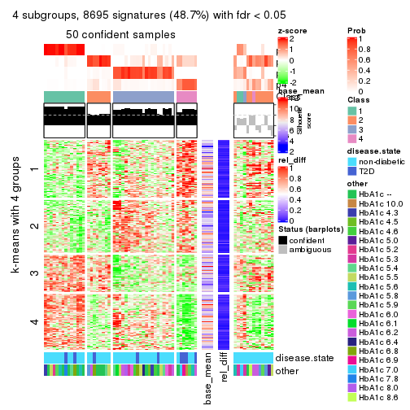
get_signatures(res, k = 5)
get_signatures(res, k = 6)
Signature heatmaps where rows are not scaled:
get_signatures(res, k = 2, scale_rows = FALSE)
get_signatures(res, k = 3, scale_rows = FALSE)
get_signatures(res, k = 4, scale_rows = FALSE)
get_signatures(res, k = 5, scale_rows = FALSE)
get_signatures(res, k = 6, scale_rows = FALSE)
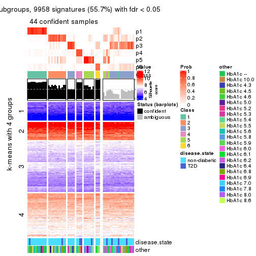
Compare the overlap of signatures from different k:
compare_signatures(res)
get_signature() returns a data frame invisibly. TO get the list of signatures, the function
call should be assigned to a variable explicitly. In following code, if plot argument is set
to FALSE, no heatmap is plotted while only the differential analysis is performed.
# code only for demonstration
tb = get_signature(res, k = ..., plot = FALSE)
An example of the output of tb is:
#> which_row fdr mean_1 mean_2 scaled_mean_1 scaled_mean_2 km
#> 1 38 0.042760348 8.373488 9.131774 -0.5533452 0.5164555 1
#> 2 40 0.018707592 7.106213 8.469186 -0.6173731 0.5762149 1
#> 3 55 0.019134737 10.221463 11.207825 -0.6159697 0.5749050 1
#> 4 59 0.006059896 5.921854 7.869574 -0.6899429 0.6439467 1
#> 5 60 0.018055526 8.928898 10.211722 -0.6204761 0.5791110 1
#> 6 98 0.009384629 15.714769 14.887706 0.6635654 -0.6193277 2
...
The columns in tb are:
which_row: row indices corresponding to the input matrix.fdr: FDR for the differential test. mean_x: The mean value in group x.scaled_mean_x: The mean value in group x after rows are scaled.km: Row groups if k-means clustering is applied to rows.UMAP plot which shows how samples are separated.
dimension_reduction(res, k = 2, method = "UMAP")
dimension_reduction(res, k = 3, method = "UMAP")
dimension_reduction(res, k = 4, method = "UMAP")
dimension_reduction(res, k = 5, method = "UMAP")
dimension_reduction(res, k = 6, method = "UMAP")
Following heatmap shows how subgroups are split when increasing k:
collect_classes(res)
Test correlation between subgroups and known annotations. If the known annotation is numeric, one-way ANOVA test is applied, and if the known annotation is discrete, chi-squared contingency table test is applied.
test_to_known_factors(res)
#> n disease.state(p) other(p) k
#> MAD:kmeans 61 0.1342 0.2818 2
#> MAD:kmeans 60 0.4987 0.3722 3
#> MAD:kmeans 50 0.0354 0.4853 4
#> MAD:kmeans 27 0.0790 0.3809 5
#> MAD:kmeans 44 0.1995 0.0745 6
If matrix rows can be associated to genes, consider to use GO_Enrichment(res,
...) to perform function enrichment for the signature genes.
The object with results only for a single top-value method and a single partition method can be extracted as:
res = res_list["MAD", "skmeans"]
# you can also extract it by
# res = res_list["MAD:skmeans"]
A summary of res and all the functions that can be applied to it:
res
#> A 'ConsensusPartition' object with k = 2, 3, 4, 5, 6.
#> On a matrix with 17867 rows and 63 columns.
#> Top rows (1000, 2000, 3000, 4000, 5000) are extracted by 'MAD' method.
#> Subgroups are detected by 'skmeans' method.
#> Performed in total 1250 partitions by row resampling.
#> Best k for subgroups seems to be 2.
#>
#> Following methods can be applied to this 'ConsensusPartition' object:
#> [1] "cola_report" "collect_classes" "collect_plots"
#> [4] "collect_stats" "colnames" "compare_signatures"
#> [7] "consensus_heatmap" "dimension_reduction" "functional_enrichment"
#> [10] "get_anno_col" "get_anno" "get_classes"
#> [13] "get_consensus" "get_matrix" "get_membership"
#> [16] "get_param" "get_signatures" "get_stats"
#> [19] "is_best_k" "is_stable_k" "membership_heatmap"
#> [22] "ncol" "nrow" "plot_ecdf"
#> [25] "rownames" "select_partition_number" "show"
#> [28] "suggest_best_k" "test_to_known_factors"
collect_plots() function collects all the plots made from res for all k (number of partitions)
into one single page to provide an easy and fast comparison between different k.
collect_plots(res)
The plots are:
k and the heatmap of
predicted classes for each k.k.k.k.All the plots in panels can be made by individual functions and they are plotted later in this section.
select_partition_number() produces several plots showing different
statistics for choosing “optimized” k. There are following statistics:
k;k, the area increased is defined as \(A_k - A_{k-1}\).The detailed explanations of these statistics can be found in the cola vignette.
Generally speaking, lower PAC score, higher mean silhouette score or higher
concordance corresponds to better partition. Rand index and Jaccard index
measure how similar the current partition is compared to partition with k-1.
If they are too similar, we won't accept k is better than k-1.
select_partition_number(res)
The numeric values for all these statistics can be obtained by get_stats().
get_stats(res)
#> k 1-PAC mean_silhouette concordance area_increased Rand Jaccard
#> 2 2 1.000 0.972 0.988 0.5084 0.492 0.492
#> 3 3 0.887 0.926 0.965 0.3179 0.722 0.495
#> 4 4 0.678 0.607 0.784 0.1125 0.925 0.776
#> 5 5 0.721 0.614 0.765 0.0680 0.875 0.579
#> 6 6 0.752 0.576 0.760 0.0397 0.933 0.700
suggest_best_k() suggests the best \(k\) based on these statistics. The rules are as follows:
NA.suggest_best_k(res)
#> [1] 2
Following shows the table of the partitions (You need to click the show/hide
code output link to see it). The membership matrix (columns with name p*)
is inferred by
clue::cl_consensus()
function with the SE method. Basically the value in the membership matrix
represents the probability to belong to a certain group. The finall class
label for an item is determined with the group with highest probability it
belongs to.
In get_classes() function, the entropy is calculated from the membership
matrix and the silhouette score is calculated from the consensus matrix.
cbind(get_classes(res, k = 2), get_membership(res, k = 2))
#> class entropy silhouette p1 p2
#> GSM946745 2 0.0000 0.983 0.000 1.000
#> GSM946739 2 0.0000 0.983 0.000 1.000
#> GSM946738 2 0.0000 0.983 0.000 1.000
#> GSM946746 2 0.0000 0.983 0.000 1.000
#> GSM946747 1 0.0000 0.991 1.000 0.000
#> GSM946711 2 0.0000 0.983 0.000 1.000
#> GSM946760 2 0.0000 0.983 0.000 1.000
#> GSM946710 1 0.0000 0.991 1.000 0.000
#> GSM946761 2 0.0000 0.983 0.000 1.000
#> GSM946701 1 0.0000 0.991 1.000 0.000
#> GSM946703 1 0.0000 0.991 1.000 0.000
#> GSM946704 2 0.0000 0.983 0.000 1.000
#> GSM946706 1 0.0000 0.991 1.000 0.000
#> GSM946708 2 0.0000 0.983 0.000 1.000
#> GSM946709 2 0.0000 0.983 0.000 1.000
#> GSM946712 2 0.0000 0.983 0.000 1.000
#> GSM946720 1 0.0000 0.991 1.000 0.000
#> GSM946722 2 0.0000 0.983 0.000 1.000
#> GSM946753 1 0.0000 0.991 1.000 0.000
#> GSM946762 1 0.0000 0.991 1.000 0.000
#> GSM946707 1 0.0000 0.991 1.000 0.000
#> GSM946721 1 0.0000 0.991 1.000 0.000
#> GSM946719 1 0.0000 0.991 1.000 0.000
#> GSM946716 1 0.0000 0.991 1.000 0.000
#> GSM946751 2 0.8207 0.668 0.256 0.744
#> GSM946740 2 0.0000 0.983 0.000 1.000
#> GSM946741 1 0.0000 0.991 1.000 0.000
#> GSM946718 1 0.0000 0.991 1.000 0.000
#> GSM946737 1 0.0000 0.991 1.000 0.000
#> GSM946742 1 0.0000 0.991 1.000 0.000
#> GSM946749 1 0.0000 0.991 1.000 0.000
#> GSM946702 2 0.0000 0.983 0.000 1.000
#> GSM946713 1 0.0000 0.991 1.000 0.000
#> GSM946723 1 0.0000 0.991 1.000 0.000
#> GSM946736 1 0.0000 0.991 1.000 0.000
#> GSM946705 1 0.0000 0.991 1.000 0.000
#> GSM946715 1 0.0000 0.991 1.000 0.000
#> GSM946726 2 0.0000 0.983 0.000 1.000
#> GSM946727 2 0.0000 0.983 0.000 1.000
#> GSM946748 2 0.0000 0.983 0.000 1.000
#> GSM946756 1 0.0000 0.991 1.000 0.000
#> GSM946724 2 0.0000 0.983 0.000 1.000
#> GSM946733 1 0.0000 0.991 1.000 0.000
#> GSM946734 2 0.0000 0.983 0.000 1.000
#> GSM946754 1 0.0000 0.991 1.000 0.000
#> GSM946700 2 0.0000 0.983 0.000 1.000
#> GSM946714 2 0.0000 0.983 0.000 1.000
#> GSM946729 2 0.0000 0.983 0.000 1.000
#> GSM946731 1 0.2948 0.940 0.948 0.052
#> GSM946743 1 0.0000 0.991 1.000 0.000
#> GSM946744 2 0.0000 0.983 0.000 1.000
#> GSM946730 2 0.8207 0.668 0.256 0.744
#> GSM946755 1 0.7139 0.755 0.804 0.196
#> GSM946717 1 0.0000 0.991 1.000 0.000
#> GSM946725 2 0.0000 0.983 0.000 1.000
#> GSM946728 2 0.0000 0.983 0.000 1.000
#> GSM946752 1 0.0000 0.991 1.000 0.000
#> GSM946757 2 0.0000 0.983 0.000 1.000
#> GSM946758 2 0.0000 0.983 0.000 1.000
#> GSM946759 2 0.0672 0.976 0.008 0.992
#> GSM946732 1 0.0000 0.991 1.000 0.000
#> GSM946750 2 0.0000 0.983 0.000 1.000
#> GSM946735 2 0.0000 0.983 0.000 1.000
cbind(get_classes(res, k = 3), get_membership(res, k = 3))
#> class entropy silhouette p1 p2 p3
#> GSM946745 3 0.5254 0.651 0.000 0.264 0.736
#> GSM946739 2 0.0000 0.988 0.000 1.000 0.000
#> GSM946738 3 0.0000 0.918 0.000 0.000 1.000
#> GSM946746 2 0.0000 0.988 0.000 1.000 0.000
#> GSM946747 1 0.0000 0.976 1.000 0.000 0.000
#> GSM946711 2 0.0000 0.988 0.000 1.000 0.000
#> GSM946760 2 0.0000 0.988 0.000 1.000 0.000
#> GSM946710 1 0.0000 0.976 1.000 0.000 0.000
#> GSM946761 2 0.0000 0.988 0.000 1.000 0.000
#> GSM946701 1 0.0000 0.976 1.000 0.000 0.000
#> GSM946703 1 0.0000 0.976 1.000 0.000 0.000
#> GSM946704 2 0.0000 0.988 0.000 1.000 0.000
#> GSM946706 3 0.0000 0.918 0.000 0.000 1.000
#> GSM946708 2 0.0000 0.988 0.000 1.000 0.000
#> GSM946709 2 0.0000 0.988 0.000 1.000 0.000
#> GSM946712 2 0.0000 0.988 0.000 1.000 0.000
#> GSM946720 1 0.0000 0.976 1.000 0.000 0.000
#> GSM946722 2 0.4062 0.807 0.164 0.836 0.000
#> GSM946753 1 0.0000 0.976 1.000 0.000 0.000
#> GSM946762 1 0.0000 0.976 1.000 0.000 0.000
#> GSM946707 3 0.3941 0.810 0.156 0.000 0.844
#> GSM946721 1 0.0000 0.976 1.000 0.000 0.000
#> GSM946719 3 0.0000 0.918 0.000 0.000 1.000
#> GSM946716 3 0.3619 0.831 0.136 0.000 0.864
#> GSM946751 3 0.0000 0.918 0.000 0.000 1.000
#> GSM946740 2 0.0000 0.988 0.000 1.000 0.000
#> GSM946741 1 0.0000 0.976 1.000 0.000 0.000
#> GSM946718 3 0.3619 0.831 0.136 0.000 0.864
#> GSM946737 1 0.4178 0.787 0.828 0.000 0.172
#> GSM946742 3 0.0000 0.918 0.000 0.000 1.000
#> GSM946749 3 0.6062 0.405 0.384 0.000 0.616
#> GSM946702 2 0.0000 0.988 0.000 1.000 0.000
#> GSM946713 3 0.3619 0.831 0.136 0.000 0.864
#> GSM946723 1 0.0000 0.976 1.000 0.000 0.000
#> GSM946736 3 0.0000 0.918 0.000 0.000 1.000
#> GSM946705 3 0.0000 0.918 0.000 0.000 1.000
#> GSM946715 1 0.0000 0.976 1.000 0.000 0.000
#> GSM946726 2 0.0000 0.988 0.000 1.000 0.000
#> GSM946727 3 0.5529 0.599 0.000 0.296 0.704
#> GSM946748 2 0.0592 0.978 0.012 0.988 0.000
#> GSM946756 3 0.0000 0.918 0.000 0.000 1.000
#> GSM946724 2 0.0000 0.988 0.000 1.000 0.000
#> GSM946733 1 0.0000 0.976 1.000 0.000 0.000
#> GSM946734 2 0.2625 0.899 0.000 0.916 0.084
#> GSM946754 1 0.0000 0.976 1.000 0.000 0.000
#> GSM946700 2 0.0000 0.988 0.000 1.000 0.000
#> GSM946714 2 0.0000 0.988 0.000 1.000 0.000
#> GSM946729 2 0.0000 0.988 0.000 1.000 0.000
#> GSM946731 1 0.0000 0.976 1.000 0.000 0.000
#> GSM946743 1 0.0000 0.976 1.000 0.000 0.000
#> GSM946744 2 0.0000 0.988 0.000 1.000 0.000
#> GSM946730 3 0.0000 0.918 0.000 0.000 1.000
#> GSM946755 3 0.0000 0.918 0.000 0.000 1.000
#> GSM946717 3 0.0000 0.918 0.000 0.000 1.000
#> GSM946725 3 0.2165 0.876 0.000 0.064 0.936
#> GSM946728 2 0.0000 0.988 0.000 1.000 0.000
#> GSM946752 3 0.0000 0.918 0.000 0.000 1.000
#> GSM946757 2 0.0000 0.988 0.000 1.000 0.000
#> GSM946758 2 0.0000 0.988 0.000 1.000 0.000
#> GSM946759 3 0.0000 0.918 0.000 0.000 1.000
#> GSM946732 1 0.4235 0.781 0.824 0.000 0.176
#> GSM946750 3 0.0000 0.918 0.000 0.000 1.000
#> GSM946735 2 0.0000 0.988 0.000 1.000 0.000
cbind(get_classes(res, k = 4), get_membership(res, k = 4))
#> class entropy silhouette p1 p2 p3 p4
#> GSM946745 4 0.7564 0.0495 0.000 0.388 0.192 0.420
#> GSM946739 2 0.4989 0.3686 0.000 0.528 0.000 0.472
#> GSM946738 3 0.3172 0.7325 0.000 0.000 0.840 0.160
#> GSM946746 2 0.3356 0.5815 0.000 0.824 0.000 0.176
#> GSM946747 1 0.0000 0.9363 1.000 0.000 0.000 0.000
#> GSM946711 2 0.4985 0.3751 0.000 0.532 0.000 0.468
#> GSM946760 2 0.2281 0.6058 0.000 0.904 0.000 0.096
#> GSM946710 1 0.0188 0.9334 0.996 0.000 0.000 0.004
#> GSM946761 2 0.4985 0.3751 0.000 0.532 0.000 0.468
#> GSM946701 1 0.0000 0.9363 1.000 0.000 0.000 0.000
#> GSM946703 1 0.0000 0.9363 1.000 0.000 0.000 0.000
#> GSM946704 2 0.2216 0.6077 0.000 0.908 0.000 0.092
#> GSM946706 3 0.0000 0.7883 0.000 0.000 1.000 0.000
#> GSM946708 2 0.4985 0.3751 0.000 0.532 0.000 0.468
#> GSM946709 2 0.2281 0.5599 0.000 0.904 0.000 0.096
#> GSM946712 4 0.4898 -0.2477 0.000 0.416 0.000 0.584
#> GSM946720 1 0.0000 0.9363 1.000 0.000 0.000 0.000
#> GSM946722 2 0.6524 0.3327 0.120 0.616 0.000 0.264
#> GSM946753 1 0.0000 0.9363 1.000 0.000 0.000 0.000
#> GSM946762 1 0.0000 0.9363 1.000 0.000 0.000 0.000
#> GSM946707 3 0.3881 0.7067 0.172 0.000 0.812 0.016
#> GSM946721 1 0.0000 0.9363 1.000 0.000 0.000 0.000
#> GSM946719 3 0.3074 0.7376 0.000 0.000 0.848 0.152
#> GSM946716 3 0.5066 0.6949 0.148 0.000 0.764 0.088
#> GSM946751 3 0.3123 0.7351 0.000 0.000 0.844 0.156
#> GSM946740 2 0.0000 0.6195 0.000 1.000 0.000 0.000
#> GSM946741 1 0.0000 0.9363 1.000 0.000 0.000 0.000
#> GSM946718 3 0.6513 0.6078 0.180 0.000 0.640 0.180
#> GSM946737 1 0.3978 0.6956 0.796 0.000 0.192 0.012
#> GSM946742 3 0.0188 0.7878 0.000 0.000 0.996 0.004
#> GSM946749 3 0.5184 0.5635 0.304 0.000 0.672 0.024
#> GSM946702 2 0.4996 0.2285 0.000 0.516 0.000 0.484
#> GSM946713 3 0.6723 0.5754 0.140 0.000 0.600 0.260
#> GSM946723 1 0.0000 0.9363 1.000 0.000 0.000 0.000
#> GSM946736 3 0.0000 0.7883 0.000 0.000 1.000 0.000
#> GSM946705 3 0.0000 0.7883 0.000 0.000 1.000 0.000
#> GSM946715 1 0.0000 0.9363 1.000 0.000 0.000 0.000
#> GSM946726 2 0.0188 0.6210 0.000 0.996 0.000 0.004
#> GSM946727 4 0.1297 0.4385 0.000 0.016 0.020 0.964
#> GSM946748 2 0.5606 0.1994 0.020 0.500 0.000 0.480
#> GSM946756 3 0.7538 0.3081 0.000 0.248 0.492 0.260
#> GSM946724 2 0.4989 0.3686 0.000 0.528 0.000 0.472
#> GSM946733 1 0.0000 0.9363 1.000 0.000 0.000 0.000
#> GSM946734 4 0.5470 0.3797 0.000 0.148 0.116 0.736
#> GSM946754 1 0.0000 0.9363 1.000 0.000 0.000 0.000
#> GSM946700 2 0.0000 0.6195 0.000 1.000 0.000 0.000
#> GSM946714 2 0.0188 0.6210 0.000 0.996 0.000 0.004
#> GSM946729 2 0.1716 0.6174 0.000 0.936 0.000 0.064
#> GSM946731 1 0.5573 0.4505 0.604 0.368 0.000 0.028
#> GSM946743 1 0.0000 0.9363 1.000 0.000 0.000 0.000
#> GSM946744 2 0.4985 0.3751 0.000 0.532 0.000 0.468
#> GSM946730 3 0.3123 0.7351 0.000 0.000 0.844 0.156
#> GSM946755 3 0.4331 0.6222 0.000 0.000 0.712 0.288
#> GSM946717 3 0.0188 0.7878 0.000 0.000 0.996 0.004
#> GSM946725 4 0.2589 0.4732 0.000 0.000 0.116 0.884
#> GSM946728 2 0.0188 0.6210 0.000 0.996 0.000 0.004
#> GSM946752 3 0.0336 0.7871 0.000 0.000 0.992 0.008
#> GSM946757 2 0.0000 0.6195 0.000 1.000 0.000 0.000
#> GSM946758 2 0.4855 0.4019 0.000 0.600 0.000 0.400
#> GSM946759 4 0.4967 0.0358 0.000 0.000 0.452 0.548
#> GSM946732 1 0.6448 0.5194 0.628 0.000 0.120 0.252
#> GSM946750 3 0.2921 0.7440 0.000 0.000 0.860 0.140
#> GSM946735 4 0.4877 -0.2268 0.000 0.408 0.000 0.592
cbind(get_classes(res, k = 5), get_membership(res, k = 5))
#> class entropy silhouette p1 p2 p3 p4 p5
#> GSM946745 4 0.6020 0.4561 0.000 0.152 0.048 0.668 0.132
#> GSM946739 2 0.3934 0.6573 0.000 0.716 0.000 0.008 0.276
#> GSM946738 3 0.5480 0.5230 0.000 0.072 0.560 0.368 0.000
#> GSM946746 5 0.5569 0.2469 0.000 0.364 0.000 0.080 0.556
#> GSM946747 1 0.0000 0.9391 1.000 0.000 0.000 0.000 0.000
#> GSM946711 2 0.4152 0.6468 0.000 0.692 0.000 0.012 0.296
#> GSM946760 5 0.4847 0.5825 0.000 0.216 0.000 0.080 0.704
#> GSM946710 1 0.0324 0.9329 0.992 0.004 0.000 0.004 0.000
#> GSM946761 2 0.4152 0.6468 0.000 0.692 0.000 0.012 0.296
#> GSM946701 1 0.0000 0.9391 1.000 0.000 0.000 0.000 0.000
#> GSM946703 1 0.0000 0.9391 1.000 0.000 0.000 0.000 0.000
#> GSM946704 5 0.4589 0.5941 0.000 0.212 0.000 0.064 0.724
#> GSM946706 3 0.0794 0.6006 0.000 0.000 0.972 0.028 0.000
#> GSM946708 2 0.4047 0.6418 0.000 0.676 0.000 0.004 0.320
#> GSM946709 5 0.2953 0.6210 0.000 0.144 0.000 0.012 0.844
#> GSM946712 2 0.2824 0.6387 0.000 0.872 0.000 0.032 0.096
#> GSM946720 1 0.0000 0.9391 1.000 0.000 0.000 0.000 0.000
#> GSM946722 5 0.6120 0.2385 0.076 0.332 0.000 0.028 0.564
#> GSM946753 1 0.0000 0.9391 1.000 0.000 0.000 0.000 0.000
#> GSM946762 1 0.0162 0.9359 0.996 0.004 0.000 0.000 0.000
#> GSM946707 3 0.4447 0.5315 0.092 0.004 0.768 0.136 0.000
#> GSM946721 1 0.0000 0.9391 1.000 0.000 0.000 0.000 0.000
#> GSM946719 3 0.5384 0.5402 0.004 0.052 0.564 0.380 0.000
#> GSM946716 3 0.4305 0.3625 0.052 0.000 0.748 0.200 0.000
#> GSM946751 3 0.5351 0.5293 0.000 0.060 0.560 0.380 0.000
#> GSM946740 5 0.0162 0.7651 0.000 0.004 0.000 0.000 0.996
#> GSM946741 1 0.0000 0.9391 1.000 0.000 0.000 0.000 0.000
#> GSM946718 3 0.5263 -0.0683 0.056 0.000 0.576 0.368 0.000
#> GSM946737 1 0.4649 0.5445 0.720 0.000 0.212 0.068 0.000
#> GSM946742 3 0.3132 0.6019 0.000 0.008 0.820 0.172 0.000
#> GSM946749 3 0.4959 0.3077 0.160 0.000 0.712 0.128 0.000
#> GSM946702 2 0.4503 0.4821 0.000 0.664 0.000 0.024 0.312
#> GSM946713 4 0.4949 0.3247 0.020 0.004 0.444 0.532 0.000
#> GSM946723 1 0.0000 0.9391 1.000 0.000 0.000 0.000 0.000
#> GSM946736 3 0.0451 0.6107 0.000 0.004 0.988 0.008 0.000
#> GSM946705 3 0.0451 0.6107 0.000 0.004 0.988 0.008 0.000
#> GSM946715 1 0.0000 0.9391 1.000 0.000 0.000 0.000 0.000
#> GSM946726 5 0.1792 0.7388 0.000 0.084 0.000 0.000 0.916
#> GSM946727 4 0.4804 0.1789 0.000 0.364 0.008 0.612 0.016
#> GSM946748 2 0.4366 0.4868 0.000 0.664 0.000 0.016 0.320
#> GSM946756 4 0.5635 0.4449 0.000 0.000 0.252 0.620 0.128
#> GSM946724 2 0.4130 0.6494 0.000 0.696 0.000 0.012 0.292
#> GSM946733 1 0.0000 0.9391 1.000 0.000 0.000 0.000 0.000
#> GSM946734 2 0.4635 0.3961 0.000 0.688 0.016 0.280 0.016
#> GSM946754 1 0.0000 0.9391 1.000 0.000 0.000 0.000 0.000
#> GSM946700 5 0.0000 0.7666 0.000 0.000 0.000 0.000 1.000
#> GSM946714 5 0.0162 0.7657 0.000 0.004 0.000 0.000 0.996
#> GSM946729 5 0.3495 0.6676 0.000 0.160 0.000 0.028 0.812
#> GSM946731 1 0.5854 0.2185 0.524 0.004 0.000 0.088 0.384
#> GSM946743 1 0.0000 0.9391 1.000 0.000 0.000 0.000 0.000
#> GSM946744 2 0.4152 0.6468 0.000 0.692 0.000 0.012 0.296
#> GSM946730 3 0.5351 0.5293 0.000 0.060 0.560 0.380 0.000
#> GSM946755 4 0.4481 0.3925 0.000 0.008 0.416 0.576 0.000
#> GSM946717 3 0.0566 0.6090 0.000 0.004 0.984 0.012 0.000
#> GSM946725 2 0.3320 0.5177 0.000 0.820 0.012 0.164 0.004
#> GSM946728 5 0.0162 0.7657 0.000 0.004 0.000 0.000 0.996
#> GSM946752 3 0.1671 0.5719 0.000 0.000 0.924 0.076 0.000
#> GSM946757 5 0.0000 0.7666 0.000 0.000 0.000 0.000 1.000
#> GSM946758 2 0.4256 0.5355 0.000 0.564 0.000 0.000 0.436
#> GSM946759 3 0.6674 0.3509 0.000 0.260 0.436 0.304 0.000
#> GSM946732 4 0.6271 0.1701 0.420 0.004 0.128 0.448 0.000
#> GSM946750 3 0.5836 0.5153 0.000 0.100 0.568 0.328 0.004
#> GSM946735 2 0.3460 0.6234 0.000 0.828 0.000 0.044 0.128
cbind(get_classes(res, k = 6), get_membership(res, k = 6))
#> class entropy silhouette p1 p2 p3 p4 p5 p6
#> GSM946745 4 0.6210 0.5472 0.000 0.100 0.164 0.632 0.076 0.028
#> GSM946739 2 0.2668 0.6560 0.000 0.828 0.000 0.004 0.168 0.000
#> GSM946738 6 0.2778 0.6889 0.000 0.032 0.080 0.016 0.000 0.872
#> GSM946746 2 0.5916 0.1042 0.000 0.476 0.000 0.196 0.324 0.004
#> GSM946747 1 0.0508 0.9149 0.984 0.000 0.012 0.004 0.000 0.000
#> GSM946711 2 0.2632 0.6575 0.000 0.832 0.000 0.004 0.164 0.000
#> GSM946760 5 0.5570 0.4221 0.000 0.260 0.000 0.172 0.564 0.004
#> GSM946710 1 0.2582 0.8597 0.896 0.020 0.016 0.052 0.000 0.016
#> GSM946761 2 0.2562 0.6549 0.000 0.828 0.000 0.000 0.172 0.000
#> GSM946701 1 0.0653 0.9136 0.980 0.004 0.000 0.012 0.000 0.004
#> GSM946703 1 0.0363 0.9152 0.988 0.000 0.012 0.000 0.000 0.000
#> GSM946704 5 0.5499 0.4009 0.000 0.284 0.000 0.148 0.564 0.004
#> GSM946706 3 0.3974 0.5345 0.000 0.000 0.680 0.024 0.000 0.296
#> GSM946708 2 0.3460 0.6290 0.000 0.760 0.000 0.020 0.220 0.000
#> GSM946709 5 0.3526 0.6098 0.000 0.080 0.000 0.088 0.820 0.012
#> GSM946712 2 0.4140 0.5630 0.000 0.756 0.000 0.172 0.056 0.016
#> GSM946720 1 0.0551 0.9148 0.984 0.000 0.008 0.004 0.000 0.004
#> GSM946722 5 0.7139 0.2012 0.040 0.176 0.000 0.268 0.472 0.044
#> GSM946753 1 0.0146 0.9150 0.996 0.004 0.000 0.000 0.000 0.000
#> GSM946762 1 0.1692 0.8886 0.932 0.008 0.000 0.048 0.000 0.012
#> GSM946707 3 0.4700 0.5314 0.040 0.000 0.692 0.036 0.000 0.232
#> GSM946721 1 0.0551 0.9148 0.984 0.000 0.008 0.004 0.000 0.004
#> GSM946719 6 0.2983 0.6588 0.000 0.000 0.136 0.032 0.000 0.832
#> GSM946716 3 0.2401 0.5689 0.020 0.000 0.900 0.044 0.000 0.036
#> GSM946751 6 0.1462 0.7018 0.000 0.000 0.056 0.008 0.000 0.936
#> GSM946740 5 0.0000 0.7398 0.000 0.000 0.000 0.000 1.000 0.000
#> GSM946741 1 0.0146 0.9150 0.996 0.004 0.000 0.000 0.000 0.000
#> GSM946718 3 0.2772 0.3710 0.000 0.000 0.816 0.180 0.000 0.004
#> GSM946737 1 0.5298 0.4528 0.624 0.000 0.268 0.028 0.000 0.080
#> GSM946742 6 0.4230 0.2327 0.000 0.000 0.364 0.024 0.000 0.612
#> GSM946749 3 0.2917 0.5611 0.072 0.000 0.868 0.032 0.000 0.028
#> GSM946702 2 0.6582 0.2713 0.000 0.452 0.008 0.216 0.300 0.024
#> GSM946713 3 0.3852 -0.0796 0.000 0.000 0.612 0.384 0.000 0.004
#> GSM946723 1 0.0951 0.9100 0.968 0.004 0.008 0.020 0.000 0.000
#> GSM946736 3 0.4009 0.5467 0.000 0.000 0.684 0.028 0.000 0.288
#> GSM946705 3 0.3990 0.5518 0.000 0.000 0.688 0.028 0.000 0.284
#> GSM946715 1 0.0291 0.9144 0.992 0.004 0.000 0.004 0.000 0.000
#> GSM946726 5 0.2631 0.6384 0.000 0.180 0.000 0.000 0.820 0.000
#> GSM946727 4 0.6439 0.1273 0.000 0.196 0.044 0.500 0.000 0.260
#> GSM946748 2 0.6580 0.3393 0.012 0.512 0.008 0.168 0.276 0.024
#> GSM946756 4 0.6452 0.5027 0.000 0.004 0.184 0.568 0.084 0.160
#> GSM946724 2 0.2454 0.6583 0.000 0.840 0.000 0.000 0.160 0.000
#> GSM946733 1 0.0363 0.9152 0.988 0.000 0.012 0.000 0.000 0.000
#> GSM946734 6 0.5616 -0.0647 0.000 0.436 0.004 0.108 0.004 0.448
#> GSM946754 1 0.0551 0.9148 0.984 0.000 0.008 0.004 0.000 0.004
#> GSM946700 5 0.0603 0.7369 0.000 0.000 0.000 0.016 0.980 0.004
#> GSM946714 5 0.0260 0.7364 0.000 0.008 0.000 0.000 0.992 0.000
#> GSM946729 5 0.4431 0.5255 0.000 0.236 0.000 0.076 0.688 0.000
#> GSM946731 1 0.6583 0.0599 0.436 0.008 0.008 0.232 0.308 0.008
#> GSM946743 1 0.0951 0.9058 0.968 0.008 0.000 0.020 0.000 0.004
#> GSM946744 2 0.2527 0.6572 0.000 0.832 0.000 0.000 0.168 0.000
#> GSM946730 6 0.1462 0.7018 0.000 0.000 0.056 0.008 0.000 0.936
#> GSM946755 4 0.4517 0.2507 0.000 0.004 0.444 0.528 0.000 0.024
#> GSM946717 3 0.3990 0.5518 0.000 0.000 0.688 0.028 0.000 0.284
#> GSM946725 2 0.5429 0.3618 0.000 0.608 0.008 0.212 0.000 0.172
#> GSM946728 5 0.0000 0.7398 0.000 0.000 0.000 0.000 1.000 0.000
#> GSM946752 3 0.3364 0.6001 0.000 0.000 0.780 0.024 0.000 0.196
#> GSM946757 5 0.0146 0.7390 0.000 0.000 0.000 0.004 0.996 0.000
#> GSM946758 2 0.4799 0.4974 0.000 0.580 0.000 0.044 0.368 0.008
#> GSM946759 6 0.5629 0.5147 0.000 0.144 0.096 0.100 0.000 0.660
#> GSM946732 3 0.6225 -0.2043 0.260 0.000 0.424 0.308 0.000 0.008
#> GSM946750 6 0.4365 0.6379 0.000 0.044 0.128 0.064 0.000 0.764
#> GSM946735 2 0.5431 0.4790 0.000 0.664 0.000 0.184 0.064 0.088
Heatmaps for the consensus matrix. It visualizes the probability of two samples to be in a same group.
consensus_heatmap(res, k = 2)
consensus_heatmap(res, k = 3)
consensus_heatmap(res, k = 4)
consensus_heatmap(res, k = 5)
consensus_heatmap(res, k = 6)
Heatmaps for the membership of samples in all partitions to see how consistent they are:
membership_heatmap(res, k = 2)

membership_heatmap(res, k = 3)

membership_heatmap(res, k = 4)
membership_heatmap(res, k = 5)
membership_heatmap(res, k = 6)
As soon as we have had the classes for columns, we can look for signatures which are significantly different between classes which can be candidate marks for certain classes. Following are the heatmaps for signatures.
Signature heatmaps where rows are scaled:
get_signatures(res, k = 2)
get_signatures(res, k = 3)
get_signatures(res, k = 4)
get_signatures(res, k = 5)
get_signatures(res, k = 6)
Signature heatmaps where rows are not scaled:
get_signatures(res, k = 2, scale_rows = FALSE)
get_signatures(res, k = 3, scale_rows = FALSE)
get_signatures(res, k = 4, scale_rows = FALSE)
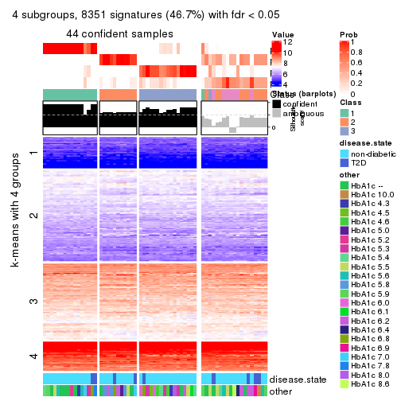
get_signatures(res, k = 5, scale_rows = FALSE)
get_signatures(res, k = 6, scale_rows = FALSE)
Compare the overlap of signatures from different k:
compare_signatures(res)
get_signature() returns a data frame invisibly. TO get the list of signatures, the function
call should be assigned to a variable explicitly. In following code, if plot argument is set
to FALSE, no heatmap is plotted while only the differential analysis is performed.
# code only for demonstration
tb = get_signature(res, k = ..., plot = FALSE)
An example of the output of tb is:
#> which_row fdr mean_1 mean_2 scaled_mean_1 scaled_mean_2 km
#> 1 38 0.042760348 8.373488 9.131774 -0.5533452 0.5164555 1
#> 2 40 0.018707592 7.106213 8.469186 -0.6173731 0.5762149 1
#> 3 55 0.019134737 10.221463 11.207825 -0.6159697 0.5749050 1
#> 4 59 0.006059896 5.921854 7.869574 -0.6899429 0.6439467 1
#> 5 60 0.018055526 8.928898 10.211722 -0.6204761 0.5791110 1
#> 6 98 0.009384629 15.714769 14.887706 0.6635654 -0.6193277 2
...
The columns in tb are:
which_row: row indices corresponding to the input matrix.fdr: FDR for the differential test. mean_x: The mean value in group x.scaled_mean_x: The mean value in group x after rows are scaled.km: Row groups if k-means clustering is applied to rows.UMAP plot which shows how samples are separated.
dimension_reduction(res, k = 2, method = "UMAP")
dimension_reduction(res, k = 3, method = "UMAP")
dimension_reduction(res, k = 4, method = "UMAP")
dimension_reduction(res, k = 5, method = "UMAP")
dimension_reduction(res, k = 6, method = "UMAP")
Following heatmap shows how subgroups are split when increasing k:
collect_classes(res)
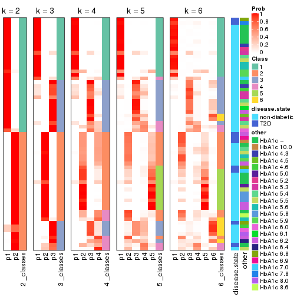
Test correlation between subgroups and known annotations. If the known annotation is numeric, one-way ANOVA test is applied, and if the known annotation is discrete, chi-squared contingency table test is applied.
test_to_known_factors(res)
#> n disease.state(p) other(p) k
#> MAD:skmeans 63 0.165 0.384 2
#> MAD:skmeans 62 0.523 0.326 3
#> MAD:skmeans 44 0.596 0.166 4
#> MAD:skmeans 47 0.489 0.343 5
#> MAD:skmeans 45 0.120 0.428 6
If matrix rows can be associated to genes, consider to use GO_Enrichment(res,
...) to perform function enrichment for the signature genes.
The object with results only for a single top-value method and a single partition method can be extracted as:
res = res_list["MAD", "pam"]
# you can also extract it by
# res = res_list["MAD:pam"]
A summary of res and all the functions that can be applied to it:
res
#> A 'ConsensusPartition' object with k = 2, 3, 4, 5, 6.
#> On a matrix with 17867 rows and 63 columns.
#> Top rows (1000, 2000, 3000, 4000, 5000) are extracted by 'MAD' method.
#> Subgroups are detected by 'pam' method.
#> Performed in total 1250 partitions by row resampling.
#> Best k for subgroups seems to be 2.
#>
#> Following methods can be applied to this 'ConsensusPartition' object:
#> [1] "cola_report" "collect_classes" "collect_plots"
#> [4] "collect_stats" "colnames" "compare_signatures"
#> [7] "consensus_heatmap" "dimension_reduction" "functional_enrichment"
#> [10] "get_anno_col" "get_anno" "get_classes"
#> [13] "get_consensus" "get_matrix" "get_membership"
#> [16] "get_param" "get_signatures" "get_stats"
#> [19] "is_best_k" "is_stable_k" "membership_heatmap"
#> [22] "ncol" "nrow" "plot_ecdf"
#> [25] "rownames" "select_partition_number" "show"
#> [28] "suggest_best_k" "test_to_known_factors"
collect_plots() function collects all the plots made from res for all k (number of partitions)
into one single page to provide an easy and fast comparison between different k.
collect_plots(res)
The plots are:
k and the heatmap of
predicted classes for each k.k.k.k.All the plots in panels can be made by individual functions and they are plotted later in this section.
select_partition_number() produces several plots showing different
statistics for choosing “optimized” k. There are following statistics:
k;k, the area increased is defined as \(A_k - A_{k-1}\).The detailed explanations of these statistics can be found in the cola vignette.
Generally speaking, lower PAC score, higher mean silhouette score or higher
concordance corresponds to better partition. Rand index and Jaccard index
measure how similar the current partition is compared to partition with k-1.
If they are too similar, we won't accept k is better than k-1.
select_partition_number(res)
The numeric values for all these statistics can be obtained by get_stats().
get_stats(res)
#> k 1-PAC mean_silhouette concordance area_increased Rand Jaccard
#> 2 2 0.961 0.893 0.954 0.3884 0.615 0.615
#> 3 3 0.783 0.807 0.930 0.4760 0.797 0.670
#> 4 4 0.601 0.522 0.725 0.1709 0.760 0.466
#> 5 5 0.676 0.591 0.819 0.0737 0.820 0.438
#> 6 6 0.753 0.726 0.844 0.0798 0.868 0.529
suggest_best_k() suggests the best \(k\) based on these statistics. The rules are as follows:
NA.suggest_best_k(res)
#> [1] 2
Following shows the table of the partitions (You need to click the show/hide
code output link to see it). The membership matrix (columns with name p*)
is inferred by
clue::cl_consensus()
function with the SE method. Basically the value in the membership matrix
represents the probability to belong to a certain group. The finall class
label for an item is determined with the group with highest probability it
belongs to.
In get_classes() function, the entropy is calculated from the membership
matrix and the silhouette score is calculated from the consensus matrix.
cbind(get_classes(res, k = 2), get_membership(res, k = 2))
#> class entropy silhouette p1 p2
#> GSM946745 2 0.0000 0.958 0.000 1.000
#> GSM946739 2 0.0000 0.958 0.000 1.000
#> GSM946738 2 0.0000 0.958 0.000 1.000
#> GSM946746 2 0.0000 0.958 0.000 1.000
#> GSM946747 1 0.0000 0.922 1.000 0.000
#> GSM946711 2 0.0000 0.958 0.000 1.000
#> GSM946760 2 0.0000 0.958 0.000 1.000
#> GSM946710 2 0.9833 0.251 0.424 0.576
#> GSM946761 2 0.0000 0.958 0.000 1.000
#> GSM946701 1 0.0000 0.922 1.000 0.000
#> GSM946703 1 0.0000 0.922 1.000 0.000
#> GSM946704 2 0.0000 0.958 0.000 1.000
#> GSM946706 2 0.4431 0.898 0.092 0.908
#> GSM946708 2 0.0000 0.958 0.000 1.000
#> GSM946709 2 0.0000 0.958 0.000 1.000
#> GSM946712 2 0.0000 0.958 0.000 1.000
#> GSM946720 1 0.0000 0.922 1.000 0.000
#> GSM946722 2 0.2423 0.935 0.040 0.960
#> GSM946753 1 0.0000 0.922 1.000 0.000
#> GSM946762 1 0.0000 0.922 1.000 0.000
#> GSM946707 2 0.4431 0.898 0.092 0.908
#> GSM946721 1 0.0000 0.922 1.000 0.000
#> GSM946719 2 0.0376 0.957 0.004 0.996
#> GSM946716 2 0.4431 0.898 0.092 0.908
#> GSM946751 2 0.0376 0.957 0.004 0.996
#> GSM946740 2 0.0000 0.958 0.000 1.000
#> GSM946741 1 0.0000 0.922 1.000 0.000
#> GSM946718 2 0.4431 0.898 0.092 0.908
#> GSM946737 1 0.8909 0.553 0.692 0.308
#> GSM946742 2 0.0376 0.957 0.004 0.996
#> GSM946749 1 0.0000 0.922 1.000 0.000
#> GSM946702 2 0.2043 0.938 0.032 0.968
#> GSM946713 2 0.4431 0.898 0.092 0.908
#> GSM946723 1 0.0000 0.922 1.000 0.000
#> GSM946736 2 0.4022 0.907 0.080 0.920
#> GSM946705 2 0.4431 0.898 0.092 0.908
#> GSM946715 1 0.0000 0.922 1.000 0.000
#> GSM946726 2 0.0376 0.956 0.004 0.996
#> GSM946727 2 0.0000 0.958 0.000 1.000
#> GSM946748 1 0.9993 0.138 0.516 0.484
#> GSM946756 2 0.0376 0.957 0.004 0.996
#> GSM946724 2 0.0000 0.958 0.000 1.000
#> GSM946733 1 0.0000 0.922 1.000 0.000
#> GSM946734 2 0.0000 0.958 0.000 1.000
#> GSM946754 1 0.8861 0.560 0.696 0.304
#> GSM946700 2 0.0000 0.958 0.000 1.000
#> GSM946714 2 0.0000 0.958 0.000 1.000
#> GSM946729 2 0.0000 0.958 0.000 1.000
#> GSM946731 2 0.0672 0.955 0.008 0.992
#> GSM946743 1 0.0000 0.922 1.000 0.000
#> GSM946744 2 0.0000 0.958 0.000 1.000
#> GSM946730 2 0.0000 0.958 0.000 1.000
#> GSM946755 2 0.0376 0.957 0.004 0.996
#> GSM946717 2 0.4431 0.898 0.092 0.908
#> GSM946725 2 0.0376 0.957 0.004 0.996
#> GSM946728 2 0.0000 0.958 0.000 1.000
#> GSM946752 2 0.4431 0.898 0.092 0.908
#> GSM946757 2 0.0000 0.958 0.000 1.000
#> GSM946758 2 0.0000 0.958 0.000 1.000
#> GSM946759 2 0.0376 0.957 0.004 0.996
#> GSM946732 2 0.9833 0.251 0.424 0.576
#> GSM946750 2 0.0000 0.958 0.000 1.000
#> GSM946735 2 0.0000 0.958 0.000 1.000
cbind(get_classes(res, k = 3), get_membership(res, k = 3))
#> class entropy silhouette p1 p2 p3
#> GSM946745 3 0.0237 0.9356 0.000 0.004 0.996
#> GSM946739 3 0.3116 0.8261 0.000 0.108 0.892
#> GSM946738 3 0.0237 0.9356 0.000 0.004 0.996
#> GSM946746 3 0.0237 0.9356 0.000 0.004 0.996
#> GSM946747 1 0.0000 0.8984 1.000 0.000 0.000
#> GSM946711 2 0.0000 0.7763 0.000 1.000 0.000
#> GSM946760 3 0.3816 0.7724 0.000 0.148 0.852
#> GSM946710 3 0.6192 0.2116 0.420 0.000 0.580
#> GSM946761 2 0.0000 0.7763 0.000 1.000 0.000
#> GSM946701 1 0.0000 0.8984 1.000 0.000 0.000
#> GSM946703 1 0.0000 0.8984 1.000 0.000 0.000
#> GSM946704 2 0.1643 0.7593 0.000 0.956 0.044
#> GSM946706 3 0.0000 0.9365 0.000 0.000 1.000
#> GSM946708 2 0.6204 0.3671 0.000 0.576 0.424
#> GSM946709 3 0.0237 0.9356 0.000 0.004 0.996
#> GSM946712 3 0.0237 0.9356 0.000 0.004 0.996
#> GSM946720 1 0.0000 0.8984 1.000 0.000 0.000
#> GSM946722 3 0.0237 0.9356 0.000 0.004 0.996
#> GSM946753 1 0.0000 0.8984 1.000 0.000 0.000
#> GSM946762 1 0.0000 0.8984 1.000 0.000 0.000
#> GSM946707 3 0.0000 0.9365 0.000 0.000 1.000
#> GSM946721 1 0.0000 0.8984 1.000 0.000 0.000
#> GSM946719 3 0.0000 0.9365 0.000 0.000 1.000
#> GSM946716 3 0.0000 0.9365 0.000 0.000 1.000
#> GSM946751 3 0.0000 0.9365 0.000 0.000 1.000
#> GSM946740 2 0.6204 0.3671 0.000 0.576 0.424
#> GSM946741 1 0.0000 0.8984 1.000 0.000 0.000
#> GSM946718 3 0.0000 0.9365 0.000 0.000 1.000
#> GSM946737 1 0.5650 0.5078 0.688 0.000 0.312
#> GSM946742 3 0.0000 0.9365 0.000 0.000 1.000
#> GSM946749 1 0.0237 0.8952 0.996 0.000 0.004
#> GSM946702 3 0.1267 0.9144 0.024 0.004 0.972
#> GSM946713 3 0.0000 0.9365 0.000 0.000 1.000
#> GSM946723 1 0.0000 0.8984 1.000 0.000 0.000
#> GSM946736 3 0.0000 0.9365 0.000 0.000 1.000
#> GSM946705 3 0.0000 0.9365 0.000 0.000 1.000
#> GSM946715 1 0.0000 0.8984 1.000 0.000 0.000
#> GSM946726 2 0.4796 0.6379 0.000 0.780 0.220
#> GSM946727 3 0.0237 0.9356 0.000 0.004 0.996
#> GSM946748 1 0.9485 0.1971 0.484 0.212 0.304
#> GSM946756 3 0.0000 0.9365 0.000 0.000 1.000
#> GSM946724 2 0.0000 0.7763 0.000 1.000 0.000
#> GSM946733 1 0.0000 0.8984 1.000 0.000 0.000
#> GSM946734 3 0.0237 0.9356 0.000 0.004 0.996
#> GSM946754 1 0.5591 0.5173 0.696 0.000 0.304
#> GSM946700 3 0.0237 0.9356 0.000 0.004 0.996
#> GSM946714 2 0.0000 0.7763 0.000 1.000 0.000
#> GSM946729 3 0.0237 0.9356 0.000 0.004 0.996
#> GSM946731 3 0.0237 0.9356 0.000 0.004 0.996
#> GSM946743 1 0.0000 0.8984 1.000 0.000 0.000
#> GSM946744 2 0.0000 0.7763 0.000 1.000 0.000
#> GSM946730 3 0.0000 0.9365 0.000 0.000 1.000
#> GSM946755 3 0.0000 0.9365 0.000 0.000 1.000
#> GSM946717 3 0.0000 0.9365 0.000 0.000 1.000
#> GSM946725 3 0.0000 0.9365 0.000 0.000 1.000
#> GSM946728 2 0.6204 0.3671 0.000 0.576 0.424
#> GSM946752 3 0.0000 0.9365 0.000 0.000 1.000
#> GSM946757 3 0.3816 0.7724 0.000 0.148 0.852
#> GSM946758 2 0.0000 0.7763 0.000 1.000 0.000
#> GSM946759 3 0.0000 0.9365 0.000 0.000 1.000
#> GSM946732 3 0.6192 0.2116 0.420 0.000 0.580
#> GSM946750 3 0.0000 0.9365 0.000 0.000 1.000
#> GSM946735 3 0.6260 -0.0424 0.000 0.448 0.552
cbind(get_classes(res, k = 4), get_membership(res, k = 4))
#> class entropy silhouette p1 p2 p3 p4
#> GSM946745 2 0.4985 0.7852 0.000 0.532 0.468 0.000
#> GSM946739 3 0.6926 -0.6622 0.000 0.432 0.460 0.108
#> GSM946738 2 0.4989 0.7824 0.000 0.528 0.472 0.000
#> GSM946746 2 0.4985 0.7852 0.000 0.532 0.468 0.000
#> GSM946747 1 0.0000 0.8446 1.000 0.000 0.000 0.000
#> GSM946711 4 0.0000 0.7202 0.000 0.000 0.000 1.000
#> GSM946760 2 0.7273 0.5096 0.000 0.452 0.400 0.148
#> GSM946710 1 0.7836 -0.2687 0.400 0.272 0.328 0.000
#> GSM946761 4 0.0000 0.7202 0.000 0.000 0.000 1.000
#> GSM946701 1 0.0000 0.8446 1.000 0.000 0.000 0.000
#> GSM946703 1 0.0000 0.8446 1.000 0.000 0.000 0.000
#> GSM946704 4 0.4961 0.7290 0.000 0.448 0.000 0.552
#> GSM946706 3 0.0000 0.5795 0.000 0.000 1.000 0.000
#> GSM946708 4 0.6214 0.2441 0.000 0.064 0.360 0.576
#> GSM946709 2 0.4888 0.7426 0.000 0.588 0.412 0.000
#> GSM946712 2 0.4985 0.7852 0.000 0.532 0.468 0.000
#> GSM946720 1 0.0000 0.8446 1.000 0.000 0.000 0.000
#> GSM946722 2 0.5155 0.7821 0.004 0.528 0.468 0.000
#> GSM946753 1 0.0000 0.8446 1.000 0.000 0.000 0.000
#> GSM946762 1 0.1389 0.8195 0.952 0.000 0.048 0.000
#> GSM946707 3 0.0000 0.5795 0.000 0.000 1.000 0.000
#> GSM946721 1 0.0921 0.8279 0.972 0.000 0.028 0.000
#> GSM946719 3 0.4585 -0.2102 0.000 0.332 0.668 0.000
#> GSM946716 3 0.0592 0.5696 0.000 0.016 0.984 0.000
#> GSM946751 2 0.4989 0.7824 0.000 0.528 0.472 0.000
#> GSM946740 4 0.4916 0.7421 0.000 0.424 0.000 0.576
#> GSM946741 1 0.0000 0.8446 1.000 0.000 0.000 0.000
#> GSM946718 3 0.3873 0.1918 0.000 0.228 0.772 0.000
#> GSM946737 3 0.4916 0.1427 0.424 0.000 0.576 0.000
#> GSM946742 3 0.0000 0.5795 0.000 0.000 1.000 0.000
#> GSM946749 3 0.4985 -0.2592 0.468 0.000 0.532 0.000
#> GSM946702 2 0.5774 0.7453 0.028 0.508 0.464 0.000
#> GSM946713 3 0.4996 -0.7206 0.000 0.484 0.516 0.000
#> GSM946723 1 0.0000 0.8446 1.000 0.000 0.000 0.000
#> GSM946736 3 0.1389 0.5687 0.000 0.048 0.952 0.000
#> GSM946705 3 0.1389 0.5687 0.000 0.048 0.952 0.000
#> GSM946715 1 0.0000 0.8446 1.000 0.000 0.000 0.000
#> GSM946726 2 0.5778 -0.5784 0.000 0.604 0.040 0.356
#> GSM946727 2 0.4985 0.7852 0.000 0.532 0.468 0.000
#> GSM946748 1 0.8698 0.0312 0.432 0.048 0.288 0.232
#> GSM946756 3 0.3219 0.3410 0.000 0.164 0.836 0.000
#> GSM946724 4 0.0000 0.7202 0.000 0.000 0.000 1.000
#> GSM946733 1 0.0000 0.8446 1.000 0.000 0.000 0.000
#> GSM946734 2 0.4985 0.7852 0.000 0.532 0.468 0.000
#> GSM946754 1 0.4855 0.2075 0.600 0.000 0.400 0.000
#> GSM946700 2 0.4431 0.5785 0.000 0.696 0.304 0.000
#> GSM946714 4 0.4916 0.7421 0.000 0.424 0.000 0.576
#> GSM946729 2 0.4877 0.7384 0.000 0.592 0.408 0.000
#> GSM946731 2 0.4877 0.7384 0.000 0.592 0.408 0.000
#> GSM946743 1 0.1854 0.8154 0.940 0.012 0.048 0.000
#> GSM946744 4 0.0000 0.7202 0.000 0.000 0.000 1.000
#> GSM946730 3 0.4585 -0.2084 0.000 0.332 0.668 0.000
#> GSM946755 2 0.4989 0.7824 0.000 0.528 0.472 0.000
#> GSM946717 3 0.1389 0.5687 0.000 0.048 0.952 0.000
#> GSM946725 2 0.4989 0.7824 0.000 0.528 0.472 0.000
#> GSM946728 4 0.4916 0.7421 0.000 0.424 0.000 0.576
#> GSM946752 3 0.0000 0.5795 0.000 0.000 1.000 0.000
#> GSM946757 2 0.7011 0.3768 0.000 0.552 0.300 0.148
#> GSM946758 4 0.4713 0.7414 0.000 0.360 0.000 0.640
#> GSM946759 2 0.4989 0.7824 0.000 0.528 0.472 0.000
#> GSM946732 3 0.7589 0.0842 0.400 0.196 0.404 0.000
#> GSM946750 3 0.2408 0.4720 0.000 0.104 0.896 0.000
#> GSM946735 4 0.7153 -0.1834 0.000 0.132 0.424 0.444
cbind(get_classes(res, k = 5), get_membership(res, k = 5))
#> class entropy silhouette p1 p2 p3 p4 p5
#> GSM946745 2 0.4182 0.9493 0.000 0.600 0.000 0.000 0.400
#> GSM946739 2 0.4547 0.9386 0.000 0.588 0.000 0.012 0.400
#> GSM946738 2 0.4182 0.9493 0.000 0.600 0.000 0.000 0.400
#> GSM946746 2 0.4182 0.9493 0.000 0.600 0.000 0.000 0.400
#> GSM946747 1 0.0000 0.7342 1.000 0.000 0.000 0.000 0.000
#> GSM946711 4 0.0000 0.9171 0.000 0.000 0.000 1.000 0.000
#> GSM946760 5 0.0162 0.5199 0.000 0.000 0.000 0.004 0.996
#> GSM946710 1 0.6811 -0.2904 0.364 0.328 0.000 0.000 0.308
#> GSM946761 4 0.0000 0.9171 0.000 0.000 0.000 1.000 0.000
#> GSM946701 1 0.0000 0.7342 1.000 0.000 0.000 0.000 0.000
#> GSM946703 1 0.0000 0.7342 1.000 0.000 0.000 0.000 0.000
#> GSM946704 5 0.4757 0.4287 0.000 0.380 0.000 0.024 0.596
#> GSM946706 3 0.4455 0.5799 0.000 0.008 0.588 0.000 0.404
#> GSM946708 5 0.0162 0.5199 0.000 0.000 0.000 0.004 0.996
#> GSM946709 5 0.3039 0.0316 0.000 0.192 0.000 0.000 0.808
#> GSM946712 2 0.4182 0.9493 0.000 0.600 0.000 0.000 0.400
#> GSM946720 1 0.0000 0.7342 1.000 0.000 0.000 0.000 0.000
#> GSM946722 2 0.4182 0.9493 0.000 0.600 0.000 0.000 0.400
#> GSM946753 1 0.0000 0.7342 1.000 0.000 0.000 0.000 0.000
#> GSM946762 1 0.2353 0.6931 0.908 0.028 0.060 0.000 0.004
#> GSM946707 3 0.4455 0.5799 0.000 0.008 0.588 0.000 0.404
#> GSM946721 1 0.0794 0.7173 0.972 0.000 0.028 0.000 0.000
#> GSM946719 2 0.6555 0.5918 0.000 0.400 0.200 0.000 0.400
#> GSM946716 3 0.4893 0.5523 0.000 0.028 0.568 0.000 0.404
#> GSM946751 2 0.4182 0.9493 0.000 0.600 0.000 0.000 0.400
#> GSM946740 5 0.4331 0.4398 0.000 0.400 0.000 0.004 0.596
#> GSM946741 1 0.0000 0.7342 1.000 0.000 0.000 0.000 0.000
#> GSM946718 5 0.6752 -0.5566 0.000 0.280 0.316 0.000 0.404
#> GSM946737 1 0.6801 -0.2116 0.376 0.000 0.316 0.000 0.308
#> GSM946742 3 0.4455 0.5799 0.000 0.008 0.588 0.000 0.404
#> GSM946749 3 0.4350 0.0981 0.408 0.000 0.588 0.000 0.004
#> GSM946702 2 0.4798 0.9190 0.024 0.580 0.000 0.000 0.396
#> GSM946713 2 0.5338 0.8774 0.000 0.544 0.056 0.000 0.400
#> GSM946723 1 0.0000 0.7342 1.000 0.000 0.000 0.000 0.000
#> GSM946736 3 0.0000 0.3664 0.000 0.000 1.000 0.000 0.000
#> GSM946705 3 0.0000 0.3664 0.000 0.000 1.000 0.000 0.000
#> GSM946715 1 0.0000 0.7342 1.000 0.000 0.000 0.000 0.000
#> GSM946726 5 0.4331 0.4398 0.000 0.400 0.000 0.004 0.596
#> GSM946727 2 0.4182 0.9493 0.000 0.600 0.000 0.000 0.400
#> GSM946748 1 0.6658 0.0361 0.472 0.220 0.000 0.004 0.304
#> GSM946756 3 0.6480 0.1359 0.000 0.184 0.416 0.000 0.400
#> GSM946724 4 0.0000 0.9171 0.000 0.000 0.000 1.000 0.000
#> GSM946733 1 0.0000 0.7342 1.000 0.000 0.000 0.000 0.000
#> GSM946734 2 0.4182 0.9493 0.000 0.600 0.000 0.000 0.400
#> GSM946754 1 0.5699 0.2727 0.584 0.000 0.108 0.000 0.308
#> GSM946700 5 0.2329 0.5767 0.000 0.124 0.000 0.000 0.876
#> GSM946714 5 0.4331 0.4398 0.000 0.400 0.000 0.004 0.596
#> GSM946729 5 0.0162 0.5152 0.000 0.004 0.000 0.000 0.996
#> GSM946731 5 0.0609 0.4918 0.000 0.020 0.000 0.000 0.980
#> GSM946743 1 0.2648 0.6224 0.848 0.000 0.000 0.000 0.152
#> GSM946744 4 0.0000 0.9171 0.000 0.000 0.000 1.000 0.000
#> GSM946730 2 0.6555 0.5907 0.000 0.400 0.200 0.000 0.400
#> GSM946755 2 0.4182 0.9493 0.000 0.600 0.000 0.000 0.400
#> GSM946717 3 0.0000 0.3664 0.000 0.000 1.000 0.000 0.000
#> GSM946725 2 0.4182 0.9493 0.000 0.600 0.000 0.000 0.400
#> GSM946728 5 0.4331 0.4398 0.000 0.400 0.000 0.004 0.596
#> GSM946752 3 0.4455 0.5799 0.000 0.008 0.588 0.000 0.404
#> GSM946757 5 0.2389 0.5765 0.000 0.116 0.000 0.004 0.880
#> GSM946758 4 0.4182 0.5982 0.000 0.400 0.000 0.600 0.000
#> GSM946759 2 0.4182 0.9493 0.000 0.600 0.000 0.000 0.400
#> GSM946732 1 0.7990 -0.1546 0.364 0.236 0.088 0.000 0.312
#> GSM946750 3 0.6177 0.3084 0.000 0.136 0.464 0.000 0.400
#> GSM946735 2 0.4182 0.9493 0.000 0.600 0.000 0.000 0.400
cbind(get_classes(res, k = 6), get_membership(res, k = 6))
#> class entropy silhouette p1 p2 p3 p4 p5 p6
#> GSM946745 2 0.0000 0.8294 0.000 1.000 0.000 0.000 0.000 0.000
#> GSM946739 2 0.0260 0.8277 0.000 0.992 0.000 0.008 0.000 0.000
#> GSM946738 2 0.0000 0.8294 0.000 1.000 0.000 0.000 0.000 0.000
#> GSM946746 2 0.0000 0.8294 0.000 1.000 0.000 0.000 0.000 0.000
#> GSM946747 1 0.2491 0.8713 0.836 0.000 0.000 0.000 0.000 0.164
#> GSM946711 4 0.0000 0.8860 0.000 0.000 0.000 1.000 0.000 0.000
#> GSM946760 5 0.4388 0.5342 0.000 0.400 0.000 0.000 0.572 0.028
#> GSM946710 2 0.5430 0.5377 0.124 0.664 0.048 0.000 0.000 0.164
#> GSM946761 4 0.0000 0.8860 0.000 0.000 0.000 1.000 0.000 0.000
#> GSM946701 1 0.2491 0.8713 0.836 0.000 0.000 0.000 0.000 0.164
#> GSM946703 1 0.0000 0.8767 1.000 0.000 0.000 0.000 0.000 0.000
#> GSM946704 5 0.1257 0.5801 0.000 0.000 0.000 0.020 0.952 0.028
#> GSM946706 3 0.0000 0.8066 0.000 0.000 1.000 0.000 0.000 0.000
#> GSM946708 5 0.3756 0.5476 0.000 0.400 0.000 0.000 0.600 0.000
#> GSM946709 2 0.3915 -0.0754 0.000 0.584 0.000 0.000 0.412 0.004
#> GSM946712 2 0.0000 0.8294 0.000 1.000 0.000 0.000 0.000 0.000
#> GSM946720 1 0.0000 0.8767 1.000 0.000 0.000 0.000 0.000 0.000
#> GSM946722 2 0.0000 0.8294 0.000 1.000 0.000 0.000 0.000 0.000
#> GSM946753 1 0.0000 0.8767 1.000 0.000 0.000 0.000 0.000 0.000
#> GSM946762 1 0.4012 0.8077 0.752 0.000 0.084 0.000 0.000 0.164
#> GSM946707 3 0.0146 0.8052 0.000 0.000 0.996 0.000 0.000 0.004
#> GSM946721 1 0.2092 0.7458 0.876 0.000 0.124 0.000 0.000 0.000
#> GSM946719 2 0.3201 0.6790 0.000 0.780 0.208 0.000 0.000 0.012
#> GSM946716 3 0.0000 0.8066 0.000 0.000 1.000 0.000 0.000 0.000
#> GSM946751 2 0.1074 0.8145 0.000 0.960 0.028 0.000 0.000 0.012
#> GSM946740 5 0.0000 0.6043 0.000 0.000 0.000 0.000 1.000 0.000
#> GSM946741 1 0.2491 0.8713 0.836 0.000 0.000 0.000 0.000 0.164
#> GSM946718 3 0.3288 0.4483 0.000 0.276 0.724 0.000 0.000 0.000
#> GSM946737 3 0.4449 0.5261 0.124 0.000 0.712 0.000 0.000 0.164
#> GSM946742 3 0.0405 0.8000 0.000 0.008 0.988 0.000 0.000 0.004
#> GSM946749 3 0.0000 0.8066 0.000 0.000 1.000 0.000 0.000 0.000
#> GSM946702 2 0.0458 0.8231 0.016 0.984 0.000 0.000 0.000 0.000
#> GSM946713 2 0.1663 0.7810 0.000 0.912 0.088 0.000 0.000 0.000
#> GSM946723 1 0.2491 0.8713 0.836 0.000 0.000 0.000 0.000 0.164
#> GSM946736 6 0.2823 1.0000 0.000 0.000 0.204 0.000 0.000 0.796
#> GSM946705 6 0.2823 1.0000 0.000 0.000 0.204 0.000 0.000 0.796
#> GSM946715 1 0.0000 0.8767 1.000 0.000 0.000 0.000 0.000 0.000
#> GSM946726 5 0.0000 0.6043 0.000 0.000 0.000 0.000 1.000 0.000
#> GSM946727 2 0.0000 0.8294 0.000 1.000 0.000 0.000 0.000 0.000
#> GSM946748 2 0.5142 0.4690 0.204 0.624 0.000 0.000 0.000 0.172
#> GSM946756 2 0.4124 0.4990 0.000 0.644 0.332 0.000 0.000 0.024
#> GSM946724 4 0.0000 0.8860 0.000 0.000 0.000 1.000 0.000 0.000
#> GSM946733 1 0.0000 0.8767 1.000 0.000 0.000 0.000 0.000 0.000
#> GSM946734 2 0.0363 0.8269 0.000 0.988 0.000 0.000 0.000 0.012
#> GSM946754 3 0.5159 0.4952 0.208 0.020 0.660 0.000 0.000 0.112
#> GSM946700 5 0.3309 0.6660 0.000 0.280 0.000 0.000 0.720 0.000
#> GSM946714 5 0.0000 0.6043 0.000 0.000 0.000 0.000 1.000 0.000
#> GSM946729 5 0.3756 0.5476 0.000 0.400 0.000 0.000 0.600 0.000
#> GSM946731 5 0.3789 0.5184 0.000 0.416 0.000 0.000 0.584 0.000
#> GSM946743 1 0.4117 0.7955 0.748 0.000 0.000 0.000 0.112 0.140
#> GSM946744 4 0.0000 0.8860 0.000 0.000 0.000 1.000 0.000 0.000
#> GSM946730 2 0.2446 0.7498 0.000 0.864 0.124 0.000 0.000 0.012
#> GSM946755 2 0.0000 0.8294 0.000 1.000 0.000 0.000 0.000 0.000
#> GSM946717 6 0.2823 1.0000 0.000 0.000 0.204 0.000 0.000 0.796
#> GSM946725 2 0.0260 0.8280 0.000 0.992 0.000 0.000 0.000 0.008
#> GSM946728 5 0.0000 0.6043 0.000 0.000 0.000 0.000 1.000 0.000
#> GSM946752 3 0.0000 0.8066 0.000 0.000 1.000 0.000 0.000 0.000
#> GSM946757 5 0.3330 0.6637 0.000 0.284 0.000 0.000 0.716 0.000
#> GSM946758 4 0.3756 0.5071 0.000 0.000 0.000 0.600 0.400 0.000
#> GSM946759 2 0.0260 0.8280 0.000 0.992 0.000 0.000 0.000 0.008
#> GSM946732 2 0.6941 0.3054 0.124 0.484 0.228 0.000 0.000 0.164
#> GSM946750 2 0.3999 0.1527 0.000 0.500 0.496 0.000 0.000 0.004
#> GSM946735 2 0.0000 0.8294 0.000 1.000 0.000 0.000 0.000 0.000
Heatmaps for the consensus matrix. It visualizes the probability of two samples to be in a same group.
consensus_heatmap(res, k = 2)
consensus_heatmap(res, k = 3)
consensus_heatmap(res, k = 4)
consensus_heatmap(res, k = 5)
consensus_heatmap(res, k = 6)
Heatmaps for the membership of samples in all partitions to see how consistent they are:
membership_heatmap(res, k = 2)
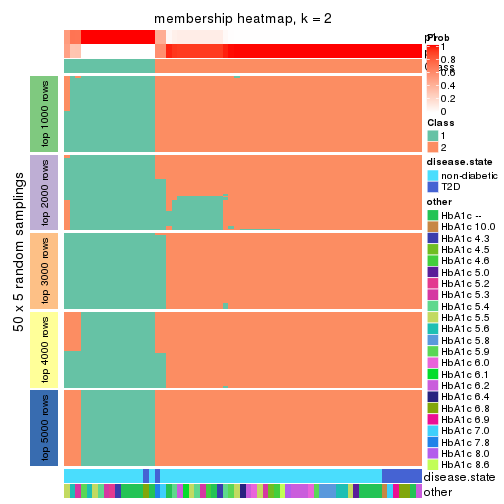
membership_heatmap(res, k = 3)
membership_heatmap(res, k = 4)
membership_heatmap(res, k = 5)
membership_heatmap(res, k = 6)
As soon as we have had the classes for columns, we can look for signatures which are significantly different between classes which can be candidate marks for certain classes. Following are the heatmaps for signatures.
Signature heatmaps where rows are scaled:
get_signatures(res, k = 2)
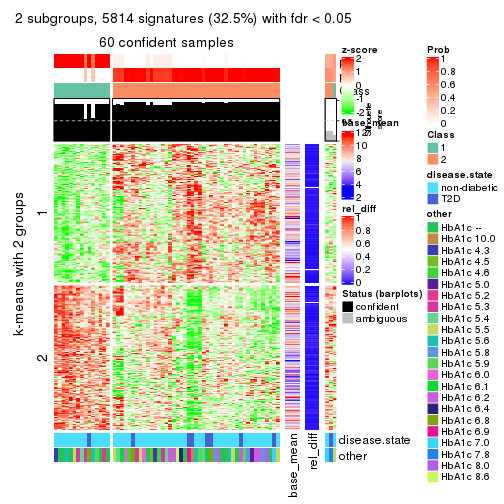
get_signatures(res, k = 3)
get_signatures(res, k = 4)
get_signatures(res, k = 5)
get_signatures(res, k = 6)

Signature heatmaps where rows are not scaled:
get_signatures(res, k = 2, scale_rows = FALSE)
get_signatures(res, k = 3, scale_rows = FALSE)
get_signatures(res, k = 4, scale_rows = FALSE)
get_signatures(res, k = 5, scale_rows = FALSE)
get_signatures(res, k = 6, scale_rows = FALSE)
Compare the overlap of signatures from different k:
compare_signatures(res)
get_signature() returns a data frame invisibly. TO get the list of signatures, the function
call should be assigned to a variable explicitly. In following code, if plot argument is set
to FALSE, no heatmap is plotted while only the differential analysis is performed.
# code only for demonstration
tb = get_signature(res, k = ..., plot = FALSE)
An example of the output of tb is:
#> which_row fdr mean_1 mean_2 scaled_mean_1 scaled_mean_2 km
#> 1 38 0.042760348 8.373488 9.131774 -0.5533452 0.5164555 1
#> 2 40 0.018707592 7.106213 8.469186 -0.6173731 0.5762149 1
#> 3 55 0.019134737 10.221463 11.207825 -0.6159697 0.5749050 1
#> 4 59 0.006059896 5.921854 7.869574 -0.6899429 0.6439467 1
#> 5 60 0.018055526 8.928898 10.211722 -0.6204761 0.5791110 1
#> 6 98 0.009384629 15.714769 14.887706 0.6635654 -0.6193277 2
...
The columns in tb are:
which_row: row indices corresponding to the input matrix.fdr: FDR for the differential test. mean_x: The mean value in group x.scaled_mean_x: The mean value in group x after rows are scaled.km: Row groups if k-means clustering is applied to rows.UMAP plot which shows how samples are separated.
dimension_reduction(res, k = 2, method = "UMAP")
dimension_reduction(res, k = 3, method = "UMAP")
dimension_reduction(res, k = 4, method = "UMAP")
dimension_reduction(res, k = 5, method = "UMAP")
dimension_reduction(res, k = 6, method = "UMAP")
Following heatmap shows how subgroups are split when increasing k:
collect_classes(res)
Test correlation between subgroups and known annotations. If the known annotation is numeric, one-way ANOVA test is applied, and if the known annotation is discrete, chi-squared contingency table test is applied.
test_to_known_factors(res)
#> n disease.state(p) other(p) k
#> MAD:pam 60 0.661 0.7844 2
#> MAD:pam 56 0.477 0.6967 3
#> MAD:pam 46 0.372 0.6738 4
#> MAD:pam 44 0.429 0.2041 5
#> MAD:pam 56 0.236 0.0496 6
If matrix rows can be associated to genes, consider to use GO_Enrichment(res,
...) to perform function enrichment for the signature genes.
The object with results only for a single top-value method and a single partition method can be extracted as:
res = res_list["MAD", "mclust"]
# you can also extract it by
# res = res_list["MAD:mclust"]
A summary of res and all the functions that can be applied to it:
res
#> A 'ConsensusPartition' object with k = 2, 3, 4, 5, 6.
#> On a matrix with 17867 rows and 63 columns.
#> Top rows (1000, 2000, 3000, 4000, 5000) are extracted by 'MAD' method.
#> Subgroups are detected by 'mclust' method.
#> Performed in total 1250 partitions by row resampling.
#> Best k for subgroups seems to be 4.
#>
#> Following methods can be applied to this 'ConsensusPartition' object:
#> [1] "cola_report" "collect_classes" "collect_plots"
#> [4] "collect_stats" "colnames" "compare_signatures"
#> [7] "consensus_heatmap" "dimension_reduction" "functional_enrichment"
#> [10] "get_anno_col" "get_anno" "get_classes"
#> [13] "get_consensus" "get_matrix" "get_membership"
#> [16] "get_param" "get_signatures" "get_stats"
#> [19] "is_best_k" "is_stable_k" "membership_heatmap"
#> [22] "ncol" "nrow" "plot_ecdf"
#> [25] "rownames" "select_partition_number" "show"
#> [28] "suggest_best_k" "test_to_known_factors"
collect_plots() function collects all the plots made from res for all k (number of partitions)
into one single page to provide an easy and fast comparison between different k.
collect_plots(res)
The plots are:
k and the heatmap of
predicted classes for each k.k.k.k.All the plots in panels can be made by individual functions and they are plotted later in this section.
select_partition_number() produces several plots showing different
statistics for choosing “optimized” k. There are following statistics:
k;k, the area increased is defined as \(A_k - A_{k-1}\).The detailed explanations of these statistics can be found in the cola vignette.
Generally speaking, lower PAC score, higher mean silhouette score or higher
concordance corresponds to better partition. Rand index and Jaccard index
measure how similar the current partition is compared to partition with k-1.
If they are too similar, we won't accept k is better than k-1.
select_partition_number(res)
The numeric values for all these statistics can be obtained by get_stats().
get_stats(res)
#> k 1-PAC mean_silhouette concordance area_increased Rand Jaccard
#> 2 2 0.267 0.812 0.787 0.4266 0.529 0.529
#> 3 3 0.723 0.835 0.920 0.4980 0.743 0.544
#> 4 4 0.886 0.868 0.932 0.1094 0.959 0.880
#> 5 5 0.836 0.828 0.905 0.0702 0.914 0.726
#> 6 6 0.780 0.748 0.854 0.0479 0.982 0.927
suggest_best_k() suggests the best \(k\) based on these statistics. The rules are as follows:
NA.suggest_best_k(res)
#> [1] 4
Following shows the table of the partitions (You need to click the show/hide
code output link to see it). The membership matrix (columns with name p*)
is inferred by
clue::cl_consensus()
function with the SE method. Basically the value in the membership matrix
represents the probability to belong to a certain group. The finall class
label for an item is determined with the group with highest probability it
belongs to.
In get_classes() function, the entropy is calculated from the membership
matrix and the silhouette score is calculated from the consensus matrix.
cbind(get_classes(res, k = 2), get_membership(res, k = 2))
#> class entropy silhouette p1 p2
#> GSM946745 1 0.5519 0.8121 0.872 0.128
#> GSM946739 2 0.7815 0.9319 0.232 0.768
#> GSM946738 1 0.8763 0.3294 0.704 0.296
#> GSM946746 2 0.7056 0.9558 0.192 0.808
#> GSM946747 1 0.7139 0.7974 0.804 0.196
#> GSM946711 2 0.7815 0.9319 0.232 0.768
#> GSM946760 2 0.7139 0.9547 0.196 0.804
#> GSM946710 1 0.6801 0.8030 0.820 0.180
#> GSM946761 2 0.7815 0.9319 0.232 0.768
#> GSM946701 1 0.9393 0.7442 0.644 0.356
#> GSM946703 1 0.9393 0.7442 0.644 0.356
#> GSM946704 2 0.6973 0.9565 0.188 0.812
#> GSM946706 1 0.0376 0.7936 0.996 0.004
#> GSM946708 2 0.6623 0.9564 0.172 0.828
#> GSM946709 2 0.6438 0.9545 0.164 0.836
#> GSM946712 2 0.7139 0.9547 0.196 0.804
#> GSM946720 1 0.9393 0.7442 0.644 0.356
#> GSM946722 1 0.8016 0.7535 0.756 0.244
#> GSM946753 1 0.9393 0.7442 0.644 0.356
#> GSM946762 1 0.7139 0.7974 0.804 0.196
#> GSM946707 1 0.4815 0.8168 0.896 0.104
#> GSM946721 1 0.9358 0.7464 0.648 0.352
#> GSM946719 1 0.5629 0.8119 0.868 0.132
#> GSM946716 1 0.0000 0.7956 1.000 0.000
#> GSM946751 1 0.1414 0.8031 0.980 0.020
#> GSM946740 2 0.6438 0.9545 0.164 0.836
#> GSM946741 1 0.9393 0.7442 0.644 0.356
#> GSM946718 1 0.0000 0.7956 1.000 0.000
#> GSM946737 1 0.5629 0.8119 0.868 0.132
#> GSM946742 1 0.4815 0.8171 0.896 0.104
#> GSM946749 1 0.0376 0.7936 0.996 0.004
#> GSM946702 2 0.6438 0.9545 0.164 0.836
#> GSM946713 1 0.0000 0.7956 1.000 0.000
#> GSM946723 1 0.7139 0.7974 0.804 0.196
#> GSM946736 1 0.0376 0.7936 0.996 0.004
#> GSM946705 1 0.5059 0.8158 0.888 0.112
#> GSM946715 1 0.9393 0.7442 0.644 0.356
#> GSM946726 2 0.6438 0.9545 0.164 0.836
#> GSM946727 1 0.5629 0.8119 0.868 0.132
#> GSM946748 1 0.9998 0.0441 0.508 0.492
#> GSM946756 1 0.6343 0.8063 0.840 0.160
#> GSM946724 2 0.7815 0.9319 0.232 0.768
#> GSM946733 1 0.9393 0.7442 0.644 0.356
#> GSM946734 2 0.8207 0.9108 0.256 0.744
#> GSM946754 1 0.9393 0.7442 0.644 0.356
#> GSM946700 2 0.6438 0.9545 0.164 0.836
#> GSM946714 2 0.6438 0.9545 0.164 0.836
#> GSM946729 2 0.6623 0.9564 0.172 0.828
#> GSM946731 1 0.7139 0.7974 0.804 0.196
#> GSM946743 1 0.7139 0.7974 0.804 0.196
#> GSM946744 2 0.7815 0.9319 0.232 0.768
#> GSM946730 1 0.0000 0.7956 1.000 0.000
#> GSM946755 1 0.1414 0.8034 0.980 0.020
#> GSM946717 1 0.0376 0.7936 0.996 0.004
#> GSM946725 2 0.8327 0.9021 0.264 0.736
#> GSM946728 2 0.6438 0.9545 0.164 0.836
#> GSM946752 1 0.0376 0.7936 0.996 0.004
#> GSM946757 2 0.6438 0.9545 0.164 0.836
#> GSM946758 2 0.6438 0.9545 0.164 0.836
#> GSM946759 1 0.5519 0.8121 0.872 0.128
#> GSM946732 1 0.3431 0.8151 0.936 0.064
#> GSM946750 1 0.9460 -0.0798 0.636 0.364
#> GSM946735 2 0.7219 0.9526 0.200 0.800
cbind(get_classes(res, k = 3), get_membership(res, k = 3))
#> class entropy silhouette p1 p2 p3
#> GSM946745 3 0.6079 0.519 0.000 0.388 0.612
#> GSM946739 2 0.0000 0.996 0.000 1.000 0.000
#> GSM946738 3 0.4178 0.743 0.000 0.172 0.828
#> GSM946746 2 0.0000 0.996 0.000 1.000 0.000
#> GSM946747 1 0.3532 0.829 0.884 0.108 0.008
#> GSM946711 2 0.0000 0.996 0.000 1.000 0.000
#> GSM946760 2 0.0424 0.995 0.008 0.992 0.000
#> GSM946710 1 0.8226 0.532 0.584 0.320 0.096
#> GSM946761 2 0.0000 0.996 0.000 1.000 0.000
#> GSM946701 1 0.0424 0.882 0.992 0.000 0.008
#> GSM946703 1 0.0424 0.882 0.992 0.000 0.008
#> GSM946704 2 0.0424 0.995 0.008 0.992 0.000
#> GSM946706 3 0.0000 0.812 0.000 0.000 1.000
#> GSM946708 2 0.0000 0.996 0.000 1.000 0.000
#> GSM946709 2 0.0424 0.990 0.000 0.992 0.008
#> GSM946712 2 0.0000 0.996 0.000 1.000 0.000
#> GSM946720 1 0.0424 0.882 0.992 0.000 0.008
#> GSM946722 2 0.0000 0.996 0.000 1.000 0.000
#> GSM946753 1 0.0424 0.882 0.992 0.000 0.008
#> GSM946762 1 0.6129 0.591 0.668 0.324 0.008
#> GSM946707 3 0.0000 0.812 0.000 0.000 1.000
#> GSM946721 1 0.0424 0.882 0.992 0.000 0.008
#> GSM946719 3 0.2261 0.790 0.000 0.068 0.932
#> GSM946716 3 0.0000 0.812 0.000 0.000 1.000
#> GSM946751 3 0.0000 0.812 0.000 0.000 1.000
#> GSM946740 2 0.0424 0.995 0.008 0.992 0.000
#> GSM946741 1 0.0424 0.882 0.992 0.000 0.008
#> GSM946718 3 0.0000 0.812 0.000 0.000 1.000
#> GSM946737 3 0.5529 0.440 0.296 0.000 0.704
#> GSM946742 3 0.0424 0.809 0.008 0.000 0.992
#> GSM946749 3 0.0000 0.812 0.000 0.000 1.000
#> GSM946702 2 0.0000 0.996 0.000 1.000 0.000
#> GSM946713 3 0.0000 0.812 0.000 0.000 1.000
#> GSM946723 1 0.5420 0.723 0.752 0.240 0.008
#> GSM946736 3 0.0000 0.812 0.000 0.000 1.000
#> GSM946705 3 0.0000 0.812 0.000 0.000 1.000
#> GSM946715 1 0.0424 0.882 0.992 0.000 0.008
#> GSM946726 2 0.0424 0.995 0.008 0.992 0.000
#> GSM946727 3 0.6079 0.519 0.000 0.388 0.612
#> GSM946748 2 0.0000 0.996 0.000 1.000 0.000
#> GSM946756 3 0.6467 0.512 0.008 0.388 0.604
#> GSM946724 2 0.0000 0.996 0.000 1.000 0.000
#> GSM946733 1 0.0424 0.882 0.992 0.000 0.008
#> GSM946734 2 0.0424 0.989 0.000 0.992 0.008
#> GSM946754 1 0.0424 0.882 0.992 0.000 0.008
#> GSM946700 2 0.0424 0.995 0.008 0.992 0.000
#> GSM946714 2 0.0424 0.995 0.008 0.992 0.000
#> GSM946729 2 0.0424 0.995 0.008 0.992 0.000
#> GSM946731 3 0.6467 0.512 0.008 0.388 0.604
#> GSM946743 1 0.4963 0.764 0.792 0.200 0.008
#> GSM946744 2 0.0000 0.996 0.000 1.000 0.000
#> GSM946730 3 0.0000 0.812 0.000 0.000 1.000
#> GSM946755 3 0.2711 0.785 0.000 0.088 0.912
#> GSM946717 3 0.0000 0.812 0.000 0.000 1.000
#> GSM946725 3 0.6111 0.509 0.000 0.396 0.604
#> GSM946728 2 0.0424 0.995 0.008 0.992 0.000
#> GSM946752 3 0.0000 0.812 0.000 0.000 1.000
#> GSM946757 2 0.0424 0.995 0.008 0.992 0.000
#> GSM946758 2 0.0000 0.996 0.000 1.000 0.000
#> GSM946759 3 0.6008 0.543 0.000 0.372 0.628
#> GSM946732 3 0.6095 0.203 0.392 0.000 0.608
#> GSM946750 3 0.4755 0.731 0.008 0.184 0.808
#> GSM946735 2 0.0000 0.996 0.000 1.000 0.000
cbind(get_classes(res, k = 4), get_membership(res, k = 4))
#> class entropy silhouette p1 p2 p3 p4
#> GSM946745 3 0.0336 0.926 0.000 0.008 0.992 0.000
#> GSM946739 2 0.3726 0.829 0.000 0.788 0.000 0.212
#> GSM946738 3 0.0000 0.931 0.000 0.000 1.000 0.000
#> GSM946746 2 0.3610 0.830 0.000 0.800 0.000 0.200
#> GSM946747 1 0.0336 0.961 0.992 0.008 0.000 0.000
#> GSM946711 4 0.0592 1.000 0.000 0.016 0.000 0.984
#> GSM946760 2 0.0188 0.849 0.000 0.996 0.000 0.004
#> GSM946710 1 0.4718 0.548 0.716 0.008 0.272 0.004
#> GSM946761 4 0.0592 1.000 0.000 0.016 0.000 0.984
#> GSM946701 1 0.0000 0.965 1.000 0.000 0.000 0.000
#> GSM946703 1 0.0000 0.965 1.000 0.000 0.000 0.000
#> GSM946704 2 0.0188 0.849 0.000 0.996 0.000 0.004
#> GSM946706 3 0.0000 0.931 0.000 0.000 1.000 0.000
#> GSM946708 2 0.3649 0.829 0.000 0.796 0.000 0.204
#> GSM946709 2 0.0592 0.845 0.000 0.984 0.000 0.016
#> GSM946712 2 0.3764 0.827 0.000 0.784 0.000 0.216
#> GSM946720 1 0.0000 0.965 1.000 0.000 0.000 0.000
#> GSM946722 2 0.3400 0.839 0.000 0.820 0.000 0.180
#> GSM946753 1 0.0000 0.965 1.000 0.000 0.000 0.000
#> GSM946762 1 0.0336 0.961 0.992 0.008 0.000 0.000
#> GSM946707 3 0.0000 0.931 0.000 0.000 1.000 0.000
#> GSM946721 1 0.0000 0.965 1.000 0.000 0.000 0.000
#> GSM946719 3 0.0000 0.931 0.000 0.000 1.000 0.000
#> GSM946716 3 0.0000 0.931 0.000 0.000 1.000 0.000
#> GSM946751 3 0.0000 0.931 0.000 0.000 1.000 0.000
#> GSM946740 2 0.0188 0.849 0.000 0.996 0.000 0.004
#> GSM946741 1 0.0000 0.965 1.000 0.000 0.000 0.000
#> GSM946718 3 0.0000 0.931 0.000 0.000 1.000 0.000
#> GSM946737 3 0.4382 0.569 0.296 0.000 0.704 0.000
#> GSM946742 3 0.0000 0.931 0.000 0.000 1.000 0.000
#> GSM946749 3 0.0000 0.931 0.000 0.000 1.000 0.000
#> GSM946702 2 0.3764 0.827 0.000 0.784 0.000 0.216
#> GSM946713 3 0.0000 0.931 0.000 0.000 1.000 0.000
#> GSM946723 1 0.0336 0.961 0.992 0.008 0.000 0.000
#> GSM946736 3 0.0000 0.931 0.000 0.000 1.000 0.000
#> GSM946705 3 0.0000 0.931 0.000 0.000 1.000 0.000
#> GSM946715 1 0.0000 0.965 1.000 0.000 0.000 0.000
#> GSM946726 2 0.0188 0.849 0.000 0.996 0.000 0.004
#> GSM946727 3 0.1059 0.914 0.000 0.012 0.972 0.016
#> GSM946748 2 0.3764 0.827 0.000 0.784 0.000 0.216
#> GSM946756 3 0.0469 0.924 0.000 0.012 0.988 0.000
#> GSM946724 4 0.0592 1.000 0.000 0.016 0.000 0.984
#> GSM946733 1 0.0000 0.965 1.000 0.000 0.000 0.000
#> GSM946734 2 0.7608 0.239 0.000 0.456 0.328 0.216
#> GSM946754 1 0.0000 0.965 1.000 0.000 0.000 0.000
#> GSM946700 2 0.0000 0.849 0.000 1.000 0.000 0.000
#> GSM946714 2 0.0188 0.849 0.000 0.996 0.000 0.004
#> GSM946729 2 0.1557 0.851 0.000 0.944 0.000 0.056
#> GSM946731 3 0.4964 0.322 0.000 0.380 0.616 0.004
#> GSM946743 1 0.0336 0.961 0.992 0.008 0.000 0.000
#> GSM946744 4 0.0592 1.000 0.000 0.016 0.000 0.984
#> GSM946730 3 0.0000 0.931 0.000 0.000 1.000 0.000
#> GSM946755 3 0.0000 0.931 0.000 0.000 1.000 0.000
#> GSM946717 3 0.0000 0.931 0.000 0.000 1.000 0.000
#> GSM946725 3 0.4086 0.671 0.000 0.008 0.776 0.216
#> GSM946728 2 0.0188 0.849 0.000 0.996 0.000 0.004
#> GSM946752 3 0.0000 0.931 0.000 0.000 1.000 0.000
#> GSM946757 2 0.0000 0.849 0.000 1.000 0.000 0.000
#> GSM946758 2 0.3649 0.829 0.000 0.796 0.000 0.204
#> GSM946759 3 0.0927 0.917 0.000 0.008 0.976 0.016
#> GSM946732 3 0.4866 0.323 0.404 0.000 0.596 0.000
#> GSM946750 3 0.0188 0.929 0.000 0.004 0.996 0.000
#> GSM946735 2 0.3764 0.827 0.000 0.784 0.000 0.216
cbind(get_classes(res, k = 5), get_membership(res, k = 5))
#> class entropy silhouette p1 p2 p3 p4 p5
#> GSM946745 3 0.0000 0.903 0.000 0.000 1.000 0.000 0.000
#> GSM946739 2 0.2674 0.734 0.000 0.856 0.000 0.140 0.004
#> GSM946738 3 0.0000 0.903 0.000 0.000 1.000 0.000 0.000
#> GSM946746 2 0.2605 0.710 0.000 0.852 0.000 0.000 0.148
#> GSM946747 1 0.0000 0.971 1.000 0.000 0.000 0.000 0.000
#> GSM946711 4 0.0703 1.000 0.000 0.024 0.000 0.976 0.000
#> GSM946760 5 0.2179 0.834 0.000 0.112 0.000 0.000 0.888
#> GSM946710 1 0.4887 0.629 0.720 0.132 0.148 0.000 0.000
#> GSM946761 4 0.0703 1.000 0.000 0.024 0.000 0.976 0.000
#> GSM946701 1 0.0000 0.971 1.000 0.000 0.000 0.000 0.000
#> GSM946703 1 0.0000 0.971 1.000 0.000 0.000 0.000 0.000
#> GSM946704 5 0.2179 0.834 0.000 0.112 0.000 0.000 0.888
#> GSM946706 3 0.0000 0.903 0.000 0.000 1.000 0.000 0.000
#> GSM946708 2 0.3305 0.586 0.000 0.776 0.000 0.000 0.224
#> GSM946709 2 0.2891 0.673 0.000 0.824 0.000 0.000 0.176
#> GSM946712 2 0.0000 0.809 0.000 1.000 0.000 0.000 0.000
#> GSM946720 1 0.0000 0.971 1.000 0.000 0.000 0.000 0.000
#> GSM946722 2 0.0162 0.808 0.000 0.996 0.000 0.000 0.004
#> GSM946753 1 0.0000 0.971 1.000 0.000 0.000 0.000 0.000
#> GSM946762 1 0.0671 0.955 0.980 0.000 0.016 0.000 0.004
#> GSM946707 3 0.0000 0.903 0.000 0.000 1.000 0.000 0.000
#> GSM946721 1 0.0000 0.971 1.000 0.000 0.000 0.000 0.000
#> GSM946719 3 0.0000 0.903 0.000 0.000 1.000 0.000 0.000
#> GSM946716 3 0.0000 0.903 0.000 0.000 1.000 0.000 0.000
#> GSM946751 3 0.0000 0.903 0.000 0.000 1.000 0.000 0.000
#> GSM946740 5 0.3336 0.893 0.000 0.228 0.000 0.000 0.772
#> GSM946741 1 0.0000 0.971 1.000 0.000 0.000 0.000 0.000
#> GSM946718 3 0.0000 0.903 0.000 0.000 1.000 0.000 0.000
#> GSM946737 3 0.4192 0.308 0.404 0.000 0.596 0.000 0.000
#> GSM946742 3 0.0000 0.903 0.000 0.000 1.000 0.000 0.000
#> GSM946749 3 0.0000 0.903 0.000 0.000 1.000 0.000 0.000
#> GSM946702 2 0.0000 0.809 0.000 1.000 0.000 0.000 0.000
#> GSM946713 3 0.0000 0.903 0.000 0.000 1.000 0.000 0.000
#> GSM946723 1 0.0510 0.964 0.984 0.000 0.000 0.016 0.000
#> GSM946736 3 0.0000 0.903 0.000 0.000 1.000 0.000 0.000
#> GSM946705 3 0.0000 0.903 0.000 0.000 1.000 0.000 0.000
#> GSM946715 1 0.0000 0.971 1.000 0.000 0.000 0.000 0.000
#> GSM946726 5 0.2605 0.860 0.000 0.148 0.000 0.000 0.852
#> GSM946727 2 0.3508 0.564 0.000 0.748 0.252 0.000 0.000
#> GSM946748 2 0.0000 0.809 0.000 1.000 0.000 0.000 0.000
#> GSM946756 3 0.3430 0.689 0.000 0.004 0.776 0.000 0.220
#> GSM946724 4 0.0703 1.000 0.000 0.024 0.000 0.976 0.000
#> GSM946733 1 0.0000 0.971 1.000 0.000 0.000 0.000 0.000
#> GSM946734 2 0.1671 0.756 0.000 0.924 0.076 0.000 0.000
#> GSM946754 1 0.0000 0.971 1.000 0.000 0.000 0.000 0.000
#> GSM946700 5 0.3424 0.890 0.000 0.240 0.000 0.000 0.760
#> GSM946714 5 0.3366 0.893 0.000 0.232 0.000 0.000 0.768
#> GSM946729 5 0.4273 0.522 0.000 0.448 0.000 0.000 0.552
#> GSM946731 3 0.5513 0.447 0.004 0.188 0.664 0.000 0.144
#> GSM946743 1 0.0671 0.961 0.980 0.000 0.000 0.016 0.004
#> GSM946744 4 0.0703 1.000 0.000 0.024 0.000 0.976 0.000
#> GSM946730 3 0.0000 0.903 0.000 0.000 1.000 0.000 0.000
#> GSM946755 3 0.0000 0.903 0.000 0.000 1.000 0.000 0.000
#> GSM946717 3 0.0000 0.903 0.000 0.000 1.000 0.000 0.000
#> GSM946725 2 0.3508 0.568 0.000 0.748 0.252 0.000 0.000
#> GSM946728 5 0.3336 0.893 0.000 0.228 0.000 0.000 0.772
#> GSM946752 3 0.0000 0.903 0.000 0.000 1.000 0.000 0.000
#> GSM946757 5 0.3424 0.890 0.000 0.240 0.000 0.000 0.760
#> GSM946758 2 0.3319 0.680 0.000 0.820 0.000 0.020 0.160
#> GSM946759 3 0.4126 0.344 0.000 0.380 0.620 0.000 0.000
#> GSM946732 3 0.4297 0.103 0.472 0.000 0.528 0.000 0.000
#> GSM946750 3 0.0000 0.903 0.000 0.000 1.000 0.000 0.000
#> GSM946735 2 0.0000 0.809 0.000 1.000 0.000 0.000 0.000
cbind(get_classes(res, k = 6), get_membership(res, k = 6))
#> class entropy silhouette p1 p2 p3 p4 p5 p6
#> GSM946745 3 0.1225 0.8256 0.000 0.012 0.952 0.000 0.000 NA
#> GSM946739 2 0.2793 0.7109 0.000 0.800 0.000 0.200 0.000 NA
#> GSM946738 3 0.1531 0.8318 0.000 0.004 0.928 0.000 0.000 NA
#> GSM946746 2 0.3650 0.7372 0.000 0.792 0.000 0.092 0.116 NA
#> GSM946747 1 0.0547 0.8829 0.980 0.000 0.000 0.000 0.000 NA
#> GSM946711 4 0.0713 1.0000 0.000 0.028 0.000 0.972 0.000 NA
#> GSM946760 5 0.4026 0.6497 0.000 0.012 0.000 0.000 0.612 NA
#> GSM946710 1 0.6148 0.5360 0.584 0.208 0.136 0.000 0.000 NA
#> GSM946761 4 0.0713 1.0000 0.000 0.028 0.000 0.972 0.000 NA
#> GSM946701 1 0.0146 0.8856 0.996 0.000 0.000 0.000 0.000 NA
#> GSM946703 1 0.0146 0.8856 0.996 0.000 0.000 0.000 0.000 NA
#> GSM946704 5 0.4026 0.6497 0.000 0.012 0.000 0.000 0.612 NA
#> GSM946706 3 0.2003 0.8286 0.000 0.000 0.884 0.000 0.000 NA
#> GSM946708 2 0.3627 0.7402 0.000 0.792 0.000 0.080 0.128 NA
#> GSM946709 2 0.3619 0.5312 0.000 0.680 0.000 0.000 0.316 NA
#> GSM946712 2 0.0458 0.7975 0.000 0.984 0.000 0.016 0.000 NA
#> GSM946720 1 0.0865 0.8804 0.964 0.000 0.000 0.000 0.000 NA
#> GSM946722 2 0.0405 0.7972 0.000 0.988 0.000 0.004 0.000 NA
#> GSM946753 1 0.0146 0.8856 0.996 0.000 0.000 0.000 0.000 NA
#> GSM946762 1 0.5735 0.6110 0.640 0.176 0.108 0.000 0.000 NA
#> GSM946707 3 0.2491 0.8097 0.000 0.000 0.836 0.000 0.000 NA
#> GSM946721 1 0.0865 0.8804 0.964 0.000 0.000 0.000 0.000 NA
#> GSM946719 3 0.0865 0.8309 0.000 0.000 0.964 0.000 0.000 NA
#> GSM946716 3 0.1075 0.8329 0.000 0.000 0.952 0.000 0.000 NA
#> GSM946751 3 0.0937 0.8365 0.000 0.000 0.960 0.000 0.000 NA
#> GSM946740 5 0.0000 0.8122 0.000 0.000 0.000 0.000 1.000 NA
#> GSM946741 1 0.1007 0.8702 0.956 0.000 0.000 0.000 0.000 NA
#> GSM946718 3 0.1387 0.8283 0.000 0.000 0.932 0.000 0.000 NA
#> GSM946737 3 0.4793 0.5107 0.288 0.000 0.628 0.000 0.000 NA
#> GSM946742 3 0.1327 0.8335 0.000 0.000 0.936 0.000 0.000 NA
#> GSM946749 3 0.3046 0.7903 0.012 0.000 0.800 0.000 0.000 NA
#> GSM946702 2 0.0260 0.7975 0.000 0.992 0.000 0.000 0.000 NA
#> GSM946713 3 0.0790 0.8312 0.000 0.000 0.968 0.000 0.000 NA
#> GSM946723 1 0.5489 0.6149 0.628 0.000 0.000 0.024 0.140 NA
#> GSM946736 3 0.2697 0.8056 0.000 0.000 0.812 0.000 0.000 NA
#> GSM946705 3 0.2697 0.8057 0.000 0.000 0.812 0.000 0.000 NA
#> GSM946715 1 0.0146 0.8856 0.996 0.000 0.000 0.000 0.000 NA
#> GSM946726 5 0.2896 0.7710 0.000 0.016 0.000 0.000 0.824 NA
#> GSM946727 2 0.4474 0.4786 0.000 0.608 0.360 0.020 0.000 NA
#> GSM946748 2 0.0405 0.7972 0.000 0.988 0.000 0.004 0.000 NA
#> GSM946756 3 0.4093 0.3206 0.000 0.008 0.516 0.000 0.000 NA
#> GSM946724 4 0.0713 1.0000 0.000 0.028 0.000 0.972 0.000 NA
#> GSM946733 1 0.0547 0.8815 0.980 0.000 0.000 0.000 0.000 NA
#> GSM946734 2 0.2094 0.7861 0.000 0.908 0.016 0.068 0.000 NA
#> GSM946754 1 0.0547 0.8829 0.980 0.000 0.000 0.000 0.000 NA
#> GSM946700 5 0.0632 0.8107 0.000 0.024 0.000 0.000 0.976 NA
#> GSM946714 5 0.0146 0.8126 0.000 0.004 0.000 0.000 0.996 NA
#> GSM946729 5 0.4957 0.0988 0.000 0.412 0.000 0.068 0.520 NA
#> GSM946731 3 0.7966 0.0901 0.080 0.076 0.408 0.000 0.208 NA
#> GSM946743 1 0.3454 0.7500 0.768 0.000 0.000 0.024 0.000 NA
#> GSM946744 4 0.0713 1.0000 0.000 0.028 0.000 0.972 0.000 NA
#> GSM946730 3 0.0865 0.8356 0.000 0.000 0.964 0.000 0.000 NA
#> GSM946755 3 0.0363 0.8339 0.000 0.000 0.988 0.000 0.000 NA
#> GSM946717 3 0.2697 0.8056 0.000 0.000 0.812 0.000 0.000 NA
#> GSM946725 2 0.3387 0.7579 0.000 0.836 0.072 0.072 0.000 NA
#> GSM946728 5 0.0000 0.8122 0.000 0.000 0.000 0.000 1.000 NA
#> GSM946752 3 0.2697 0.8056 0.000 0.000 0.812 0.000 0.000 NA
#> GSM946757 5 0.0632 0.8107 0.000 0.024 0.000 0.000 0.976 NA
#> GSM946758 2 0.2454 0.6930 0.000 0.840 0.000 0.000 0.160 NA
#> GSM946759 2 0.5385 0.1987 0.000 0.476 0.444 0.056 0.000 NA
#> GSM946732 3 0.5077 0.2348 0.404 0.000 0.516 0.000 0.000 NA
#> GSM946750 3 0.1471 0.8328 0.000 0.004 0.932 0.000 0.000 NA
#> GSM946735 2 0.0000 0.7976 0.000 1.000 0.000 0.000 0.000 NA
Heatmaps for the consensus matrix. It visualizes the probability of two samples to be in a same group.
consensus_heatmap(res, k = 2)

consensus_heatmap(res, k = 3)
consensus_heatmap(res, k = 4)
consensus_heatmap(res, k = 5)
consensus_heatmap(res, k = 6)
Heatmaps for the membership of samples in all partitions to see how consistent they are:
membership_heatmap(res, k = 2)
membership_heatmap(res, k = 3)
membership_heatmap(res, k = 4)
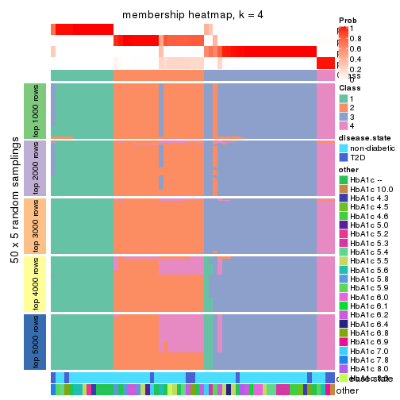
membership_heatmap(res, k = 5)
membership_heatmap(res, k = 6)
As soon as we have had the classes for columns, we can look for signatures which are significantly different between classes which can be candidate marks for certain classes. Following are the heatmaps for signatures.
Signature heatmaps where rows are scaled:
get_signatures(res, k = 2)
get_signatures(res, k = 3)
get_signatures(res, k = 4)

get_signatures(res, k = 5)
get_signatures(res, k = 6)
Signature heatmaps where rows are not scaled:
get_signatures(res, k = 2, scale_rows = FALSE)
get_signatures(res, k = 3, scale_rows = FALSE)
get_signatures(res, k = 4, scale_rows = FALSE)
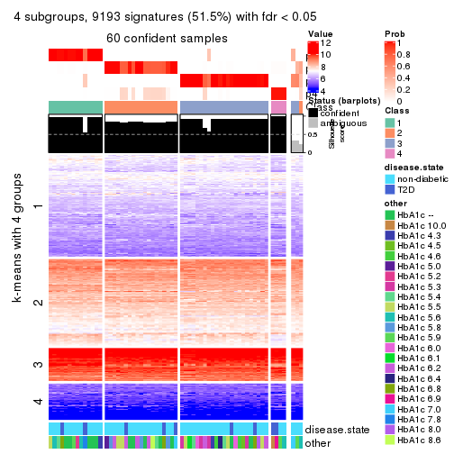
get_signatures(res, k = 5, scale_rows = FALSE)
get_signatures(res, k = 6, scale_rows = FALSE)
Compare the overlap of signatures from different k:
compare_signatures(res)
get_signature() returns a data frame invisibly. TO get the list of signatures, the function
call should be assigned to a variable explicitly. In following code, if plot argument is set
to FALSE, no heatmap is plotted while only the differential analysis is performed.
# code only for demonstration
tb = get_signature(res, k = ..., plot = FALSE)
An example of the output of tb is:
#> which_row fdr mean_1 mean_2 scaled_mean_1 scaled_mean_2 km
#> 1 38 0.042760348 8.373488 9.131774 -0.5533452 0.5164555 1
#> 2 40 0.018707592 7.106213 8.469186 -0.6173731 0.5762149 1
#> 3 55 0.019134737 10.221463 11.207825 -0.6159697 0.5749050 1
#> 4 59 0.006059896 5.921854 7.869574 -0.6899429 0.6439467 1
#> 5 60 0.018055526 8.928898 10.211722 -0.6204761 0.5791110 1
#> 6 98 0.009384629 15.714769 14.887706 0.6635654 -0.6193277 2
...
The columns in tb are:
which_row: row indices corresponding to the input matrix.fdr: FDR for the differential test. mean_x: The mean value in group x.scaled_mean_x: The mean value in group x after rows are scaled.km: Row groups if k-means clustering is applied to rows.UMAP plot which shows how samples are separated.
dimension_reduction(res, k = 2, method = "UMAP")
dimension_reduction(res, k = 3, method = "UMAP")
dimension_reduction(res, k = 4, method = "UMAP")
dimension_reduction(res, k = 5, method = "UMAP")
dimension_reduction(res, k = 6, method = "UMAP")
Following heatmap shows how subgroups are split when increasing k:
collect_classes(res)
Test correlation between subgroups and known annotations. If the known annotation is numeric, one-way ANOVA test is applied, and if the known annotation is discrete, chi-squared contingency table test is applied.
test_to_known_factors(res)
#> n disease.state(p) other(p) k
#> MAD:mclust 60 0.263 0.1594 2
#> MAD:mclust 61 0.502 0.2940 3
#> MAD:mclust 60 0.206 0.0141 4
#> MAD:mclust 59 0.380 0.0171 5
#> MAD:mclust 57 0.404 0.0297 6
If matrix rows can be associated to genes, consider to use GO_Enrichment(res,
...) to perform function enrichment for the signature genes.
The object with results only for a single top-value method and a single partition method can be extracted as:
res = res_list["MAD", "NMF"]
# you can also extract it by
# res = res_list["MAD:NMF"]
A summary of res and all the functions that can be applied to it:
res
#> A 'ConsensusPartition' object with k = 2, 3, 4, 5, 6.
#> On a matrix with 17867 rows and 63 columns.
#> Top rows (1000, 2000, 3000, 4000, 5000) are extracted by 'MAD' method.
#> Subgroups are detected by 'NMF' method.
#> Performed in total 1250 partitions by row resampling.
#> Best k for subgroups seems to be 2.
#>
#> Following methods can be applied to this 'ConsensusPartition' object:
#> [1] "cola_report" "collect_classes" "collect_plots"
#> [4] "collect_stats" "colnames" "compare_signatures"
#> [7] "consensus_heatmap" "dimension_reduction" "functional_enrichment"
#> [10] "get_anno_col" "get_anno" "get_classes"
#> [13] "get_consensus" "get_matrix" "get_membership"
#> [16] "get_param" "get_signatures" "get_stats"
#> [19] "is_best_k" "is_stable_k" "membership_heatmap"
#> [22] "ncol" "nrow" "plot_ecdf"
#> [25] "rownames" "select_partition_number" "show"
#> [28] "suggest_best_k" "test_to_known_factors"
collect_plots() function collects all the plots made from res for all k (number of partitions)
into one single page to provide an easy and fast comparison between different k.
collect_plots(res)

The plots are:
k and the heatmap of
predicted classes for each k.k.k.k.All the plots in panels can be made by individual functions and they are plotted later in this section.
select_partition_number() produces several plots showing different
statistics for choosing “optimized” k. There are following statistics:
k;k, the area increased is defined as \(A_k - A_{k-1}\).The detailed explanations of these statistics can be found in the cola vignette.
Generally speaking, lower PAC score, higher mean silhouette score or higher
concordance corresponds to better partition. Rand index and Jaccard index
measure how similar the current partition is compared to partition with k-1.
If they are too similar, we won't accept k is better than k-1.
select_partition_number(res)
The numeric values for all these statistics can be obtained by get_stats().
get_stats(res)
#> k 1-PAC mean_silhouette concordance area_increased Rand Jaccard
#> 2 2 0.838 0.926 0.969 0.5054 0.492 0.492
#> 3 3 0.553 0.622 0.775 0.3156 0.745 0.528
#> 4 4 0.552 0.669 0.812 0.1220 0.782 0.457
#> 5 5 0.622 0.596 0.781 0.0548 0.884 0.604
#> 6 6 0.671 0.601 0.783 0.0377 0.966 0.846
suggest_best_k() suggests the best \(k\) based on these statistics. The rules are as follows:
NA.suggest_best_k(res)
#> [1] 2
Following shows the table of the partitions (You need to click the show/hide
code output link to see it). The membership matrix (columns with name p*)
is inferred by
clue::cl_consensus()
function with the SE method. Basically the value in the membership matrix
represents the probability to belong to a certain group. The finall class
label for an item is determined with the group with highest probability it
belongs to.
In get_classes() function, the entropy is calculated from the membership
matrix and the silhouette score is calculated from the consensus matrix.
cbind(get_classes(res, k = 2), get_membership(res, k = 2))
#> class entropy silhouette p1 p2
#> GSM946745 2 0.163 0.9516 0.024 0.976
#> GSM946739 2 0.000 0.9693 0.000 1.000
#> GSM946738 2 0.000 0.9693 0.000 1.000
#> GSM946746 2 0.000 0.9693 0.000 1.000
#> GSM946747 1 0.000 0.9624 1.000 0.000
#> GSM946711 2 0.000 0.9693 0.000 1.000
#> GSM946760 2 0.000 0.9693 0.000 1.000
#> GSM946710 1 0.000 0.9624 1.000 0.000
#> GSM946761 2 0.000 0.9693 0.000 1.000
#> GSM946701 1 0.000 0.9624 1.000 0.000
#> GSM946703 1 0.000 0.9624 1.000 0.000
#> GSM946704 2 0.000 0.9693 0.000 1.000
#> GSM946706 1 0.000 0.9624 1.000 0.000
#> GSM946708 2 0.000 0.9693 0.000 1.000
#> GSM946709 2 0.000 0.9693 0.000 1.000
#> GSM946712 2 0.000 0.9693 0.000 1.000
#> GSM946720 1 0.000 0.9624 1.000 0.000
#> GSM946722 2 0.662 0.8076 0.172 0.828
#> GSM946753 1 0.000 0.9624 1.000 0.000
#> GSM946762 1 0.000 0.9624 1.000 0.000
#> GSM946707 1 0.000 0.9624 1.000 0.000
#> GSM946721 1 0.000 0.9624 1.000 0.000
#> GSM946719 1 0.000 0.9624 1.000 0.000
#> GSM946716 1 0.000 0.9624 1.000 0.000
#> GSM946751 1 1.000 -0.0427 0.500 0.500
#> GSM946740 2 0.000 0.9693 0.000 1.000
#> GSM946741 1 0.000 0.9624 1.000 0.000
#> GSM946718 1 0.000 0.9624 1.000 0.000
#> GSM946737 1 0.000 0.9624 1.000 0.000
#> GSM946742 1 0.469 0.8712 0.900 0.100
#> GSM946749 1 0.000 0.9624 1.000 0.000
#> GSM946702 2 0.000 0.9693 0.000 1.000
#> GSM946713 1 0.000 0.9624 1.000 0.000
#> GSM946723 1 0.000 0.9624 1.000 0.000
#> GSM946736 1 0.000 0.9624 1.000 0.000
#> GSM946705 1 0.000 0.9624 1.000 0.000
#> GSM946715 1 0.000 0.9624 1.000 0.000
#> GSM946726 2 0.000 0.9693 0.000 1.000
#> GSM946727 2 0.753 0.7421 0.216 0.784
#> GSM946748 2 0.574 0.8497 0.136 0.864
#> GSM946756 1 0.722 0.7467 0.800 0.200
#> GSM946724 2 0.000 0.9693 0.000 1.000
#> GSM946733 1 0.000 0.9624 1.000 0.000
#> GSM946734 2 0.000 0.9693 0.000 1.000
#> GSM946754 1 0.000 0.9624 1.000 0.000
#> GSM946700 2 0.000 0.9693 0.000 1.000
#> GSM946714 2 0.000 0.9693 0.000 1.000
#> GSM946729 2 0.000 0.9693 0.000 1.000
#> GSM946731 1 0.343 0.9080 0.936 0.064
#> GSM946743 1 0.000 0.9624 1.000 0.000
#> GSM946744 2 0.000 0.9693 0.000 1.000
#> GSM946730 2 0.653 0.8110 0.168 0.832
#> GSM946755 1 0.802 0.6779 0.756 0.244
#> GSM946717 1 0.000 0.9624 1.000 0.000
#> GSM946725 2 0.000 0.9693 0.000 1.000
#> GSM946728 2 0.000 0.9693 0.000 1.000
#> GSM946752 1 0.000 0.9624 1.000 0.000
#> GSM946757 2 0.000 0.9693 0.000 1.000
#> GSM946758 2 0.000 0.9693 0.000 1.000
#> GSM946759 2 0.634 0.8220 0.160 0.840
#> GSM946732 1 0.000 0.9624 1.000 0.000
#> GSM946750 2 0.000 0.9693 0.000 1.000
#> GSM946735 2 0.000 0.9693 0.000 1.000
cbind(get_classes(res, k = 3), get_membership(res, k = 3))
#> class entropy silhouette p1 p2 p3
#> GSM946745 3 0.7190 0.612 0.044 0.320 0.636
#> GSM946739 3 0.6062 0.613 0.000 0.384 0.616
#> GSM946738 3 0.0000 0.657 0.000 0.000 1.000
#> GSM946746 3 0.6180 0.567 0.000 0.416 0.584
#> GSM946747 1 0.0592 0.762 0.988 0.012 0.000
#> GSM946711 3 0.6062 0.613 0.000 0.384 0.616
#> GSM946760 2 0.6309 -0.430 0.000 0.504 0.496
#> GSM946710 1 0.2165 0.777 0.936 0.000 0.064
#> GSM946761 3 0.6079 0.608 0.000 0.388 0.612
#> GSM946701 1 0.0000 0.767 1.000 0.000 0.000
#> GSM946703 1 0.1031 0.755 0.976 0.024 0.000
#> GSM946704 2 0.5650 0.158 0.000 0.688 0.312
#> GSM946706 1 0.6168 0.677 0.588 0.000 0.412
#> GSM946708 2 0.5591 0.184 0.000 0.696 0.304
#> GSM946709 2 0.5431 0.615 0.284 0.716 0.000
#> GSM946712 3 0.6140 0.587 0.000 0.404 0.596
#> GSM946720 1 0.0000 0.767 1.000 0.000 0.000
#> GSM946722 2 0.5397 0.617 0.280 0.720 0.000
#> GSM946753 1 0.0592 0.762 0.988 0.012 0.000
#> GSM946762 1 0.1031 0.755 0.976 0.024 0.000
#> GSM946707 1 0.6062 0.706 0.616 0.000 0.384
#> GSM946721 1 0.0000 0.767 1.000 0.000 0.000
#> GSM946719 1 0.3482 0.781 0.872 0.000 0.128
#> GSM946716 1 0.6062 0.706 0.616 0.000 0.384
#> GSM946751 3 0.0000 0.657 0.000 0.000 1.000
#> GSM946740 2 0.0000 0.677 0.000 1.000 0.000
#> GSM946741 1 0.1031 0.755 0.976 0.024 0.000
#> GSM946718 1 0.6111 0.696 0.604 0.000 0.396
#> GSM946737 1 0.3879 0.779 0.848 0.000 0.152
#> GSM946742 3 0.1031 0.640 0.024 0.000 0.976
#> GSM946749 1 0.6062 0.706 0.616 0.000 0.384
#> GSM946702 2 0.2860 0.669 0.084 0.912 0.004
#> GSM946713 1 0.6079 0.703 0.612 0.000 0.388
#> GSM946723 2 0.6140 0.471 0.404 0.596 0.000
#> GSM946736 1 0.6126 0.692 0.600 0.000 0.400
#> GSM946705 1 0.6095 0.700 0.608 0.000 0.392
#> GSM946715 1 0.2066 0.721 0.940 0.060 0.000
#> GSM946726 2 0.0000 0.677 0.000 1.000 0.000
#> GSM946727 3 0.7508 0.553 0.156 0.148 0.696
#> GSM946748 2 0.5465 0.609 0.288 0.712 0.000
#> GSM946756 1 0.7331 0.525 0.672 0.256 0.072
#> GSM946724 3 0.6062 0.613 0.000 0.384 0.616
#> GSM946733 1 0.0000 0.767 1.000 0.000 0.000
#> GSM946734 3 0.6008 0.618 0.000 0.372 0.628
#> GSM946754 1 0.0000 0.767 1.000 0.000 0.000
#> GSM946700 2 0.0000 0.677 0.000 1.000 0.000
#> GSM946714 2 0.0000 0.677 0.000 1.000 0.000
#> GSM946729 2 0.4750 0.396 0.000 0.784 0.216
#> GSM946731 2 0.6309 0.295 0.496 0.504 0.000
#> GSM946743 2 0.6126 0.476 0.400 0.600 0.000
#> GSM946744 3 0.6062 0.613 0.000 0.384 0.616
#> GSM946730 3 0.0000 0.657 0.000 0.000 1.000
#> GSM946755 3 0.4842 0.258 0.224 0.000 0.776
#> GSM946717 1 0.6062 0.706 0.616 0.000 0.384
#> GSM946725 3 0.0000 0.657 0.000 0.000 1.000
#> GSM946728 2 0.0000 0.677 0.000 1.000 0.000
#> GSM946752 1 0.6062 0.706 0.616 0.000 0.384
#> GSM946757 2 0.0237 0.677 0.004 0.996 0.000
#> GSM946758 2 0.1860 0.632 0.000 0.948 0.052
#> GSM946759 3 0.1636 0.652 0.020 0.016 0.964
#> GSM946732 1 0.4178 0.777 0.828 0.000 0.172
#> GSM946750 3 0.0000 0.657 0.000 0.000 1.000
#> GSM946735 3 0.6062 0.613 0.000 0.384 0.616
cbind(get_classes(res, k = 4), get_membership(res, k = 4))
#> class entropy silhouette p1 p2 p3 p4
#> GSM946745 3 0.6261 0.5153 0.004 0.120 0.672 0.204
#> GSM946739 4 0.1936 0.8123 0.000 0.032 0.028 0.940
#> GSM946738 4 0.4955 0.3854 0.000 0.000 0.444 0.556
#> GSM946746 4 0.5092 0.6354 0.000 0.096 0.140 0.764
#> GSM946747 1 0.0817 0.7829 0.976 0.024 0.000 0.000
#> GSM946711 4 0.0657 0.8215 0.000 0.012 0.004 0.984
#> GSM946760 2 0.6401 0.6165 0.000 0.652 0.176 0.172
#> GSM946710 1 0.2466 0.7509 0.900 0.000 0.096 0.004
#> GSM946761 4 0.1824 0.8133 0.000 0.060 0.004 0.936
#> GSM946701 1 0.0376 0.7847 0.992 0.004 0.004 0.000
#> GSM946703 1 0.1022 0.7814 0.968 0.032 0.000 0.000
#> GSM946704 2 0.6284 0.6300 0.000 0.664 0.164 0.172
#> GSM946706 3 0.3591 0.7854 0.168 0.000 0.824 0.008
#> GSM946708 2 0.5277 0.0417 0.000 0.532 0.008 0.460
#> GSM946709 2 0.5172 0.0224 0.404 0.588 0.000 0.008
#> GSM946712 4 0.1302 0.8180 0.000 0.044 0.000 0.956
#> GSM946720 1 0.0817 0.7807 0.976 0.000 0.024 0.000
#> GSM946722 1 0.5557 0.5258 0.652 0.308 0.000 0.040
#> GSM946753 1 0.1182 0.7852 0.968 0.016 0.016 0.000
#> GSM946762 1 0.4869 0.7070 0.780 0.132 0.088 0.000
#> GSM946707 1 0.4018 0.6157 0.772 0.000 0.224 0.004
#> GSM946721 1 0.0817 0.7807 0.976 0.000 0.024 0.000
#> GSM946719 1 0.4922 0.4872 0.700 0.004 0.284 0.012
#> GSM946716 3 0.4741 0.6547 0.328 0.004 0.668 0.000
#> GSM946751 4 0.3725 0.7780 0.008 0.000 0.180 0.812
#> GSM946740 2 0.0469 0.7645 0.000 0.988 0.000 0.012
#> GSM946741 1 0.1411 0.7853 0.960 0.020 0.020 0.000
#> GSM946718 1 0.5639 0.3478 0.636 0.000 0.324 0.040
#> GSM946737 1 0.2149 0.7520 0.912 0.000 0.088 0.000
#> GSM946742 3 0.3953 0.7465 0.036 0.012 0.848 0.104
#> GSM946749 3 0.4123 0.7447 0.220 0.000 0.772 0.008
#> GSM946702 1 0.7602 0.3365 0.508 0.256 0.004 0.232
#> GSM946713 3 0.5042 0.7486 0.176 0.012 0.768 0.044
#> GSM946723 1 0.5360 0.2796 0.552 0.436 0.012 0.000
#> GSM946736 3 0.3402 0.7829 0.164 0.000 0.832 0.004
#> GSM946705 3 0.3790 0.7780 0.164 0.000 0.820 0.016
#> GSM946715 1 0.2149 0.7623 0.912 0.088 0.000 0.000
#> GSM946726 2 0.3100 0.7567 0.004 0.888 0.080 0.028
#> GSM946727 4 0.5712 0.6479 0.136 0.004 0.132 0.728
#> GSM946748 1 0.7253 0.4139 0.560 0.296 0.012 0.132
#> GSM946756 3 0.6952 0.5809 0.108 0.156 0.676 0.060
#> GSM946724 4 0.0657 0.8223 0.000 0.004 0.012 0.984
#> GSM946733 1 0.0188 0.7842 0.996 0.000 0.004 0.000
#> GSM946734 4 0.2124 0.8240 0.000 0.028 0.040 0.932
#> GSM946754 1 0.0817 0.7807 0.976 0.000 0.024 0.000
#> GSM946700 2 0.2021 0.7675 0.000 0.936 0.040 0.024
#> GSM946714 2 0.1209 0.7598 0.004 0.964 0.000 0.032
#> GSM946729 2 0.6031 0.6308 0.000 0.676 0.108 0.216
#> GSM946731 2 0.5677 0.6397 0.140 0.720 0.140 0.000
#> GSM946743 1 0.4872 0.4707 0.640 0.356 0.004 0.000
#> GSM946744 4 0.1209 0.8186 0.000 0.032 0.004 0.964
#> GSM946730 4 0.4088 0.7007 0.004 0.000 0.232 0.764
#> GSM946755 3 0.4413 0.7289 0.040 0.008 0.812 0.140
#> GSM946717 3 0.3355 0.7845 0.160 0.000 0.836 0.004
#> GSM946725 4 0.2469 0.8114 0.000 0.000 0.108 0.892
#> GSM946728 2 0.1256 0.7600 0.008 0.964 0.000 0.028
#> GSM946752 3 0.4040 0.7423 0.248 0.000 0.752 0.000
#> GSM946757 2 0.0844 0.7666 0.004 0.980 0.004 0.012
#> GSM946758 4 0.4917 0.4936 0.008 0.336 0.000 0.656
#> GSM946759 4 0.4122 0.7420 0.004 0.000 0.236 0.760
#> GSM946732 1 0.3726 0.5868 0.788 0.000 0.212 0.000
#> GSM946750 3 0.4635 0.6304 0.000 0.028 0.756 0.216
#> GSM946735 4 0.3828 0.7905 0.000 0.068 0.084 0.848
cbind(get_classes(res, k = 5), get_membership(res, k = 5))
#> class entropy silhouette p1 p2 p3 p4 p5
#> GSM946745 4 0.5160 0.5806 0.004 0.028 0.160 0.736 0.072
#> GSM946739 2 0.3095 0.7507 0.000 0.868 0.024 0.092 0.016
#> GSM946738 2 0.5315 0.4282 0.000 0.600 0.332 0.068 0.000
#> GSM946746 4 0.5389 0.1065 0.000 0.436 0.000 0.508 0.056
#> GSM946747 1 0.0579 0.8007 0.984 0.000 0.000 0.008 0.008
#> GSM946711 2 0.2005 0.7652 0.000 0.924 0.016 0.056 0.004
#> GSM946760 4 0.4607 0.5580 0.000 0.020 0.004 0.656 0.320
#> GSM946710 1 0.2418 0.7844 0.912 0.044 0.020 0.024 0.000
#> GSM946761 2 0.1828 0.7657 0.000 0.936 0.004 0.032 0.028
#> GSM946701 1 0.0960 0.8024 0.972 0.000 0.004 0.008 0.016
#> GSM946703 1 0.0566 0.8024 0.984 0.000 0.000 0.012 0.004
#> GSM946704 4 0.4570 0.5281 0.000 0.020 0.000 0.632 0.348
#> GSM946706 3 0.2446 0.7697 0.044 0.000 0.900 0.056 0.000
#> GSM946708 5 0.5180 0.4715 0.000 0.292 0.004 0.060 0.644
#> GSM946709 5 0.3534 0.5394 0.256 0.000 0.000 0.000 0.744
#> GSM946712 2 0.0865 0.7682 0.000 0.972 0.004 0.024 0.000
#> GSM946720 1 0.0579 0.8027 0.984 0.000 0.008 0.008 0.000
#> GSM946722 1 0.5015 0.6048 0.724 0.052 0.000 0.028 0.196
#> GSM946753 1 0.1074 0.8024 0.968 0.000 0.004 0.016 0.012
#> GSM946762 1 0.6103 0.3846 0.592 0.000 0.132 0.012 0.264
#> GSM946707 1 0.4792 0.6066 0.716 0.016 0.228 0.040 0.000
#> GSM946721 1 0.1012 0.7999 0.968 0.000 0.020 0.012 0.000
#> GSM946719 1 0.6699 0.3854 0.564 0.024 0.236 0.172 0.004
#> GSM946716 1 0.6002 0.1210 0.492 0.000 0.392 0.116 0.000
#> GSM946751 2 0.4771 0.6122 0.004 0.712 0.224 0.060 0.000
#> GSM946740 5 0.0451 0.7270 0.004 0.000 0.000 0.008 0.988
#> GSM946741 1 0.1686 0.7997 0.944 0.000 0.008 0.020 0.028
#> GSM946718 1 0.5557 0.6460 0.712 0.048 0.136 0.104 0.000
#> GSM946737 1 0.2969 0.7398 0.852 0.000 0.128 0.020 0.000
#> GSM946742 3 0.3333 0.6805 0.008 0.008 0.820 0.164 0.000
#> GSM946749 3 0.4849 0.6150 0.136 0.000 0.724 0.140 0.000
#> GSM946702 2 0.5423 0.0653 0.452 0.500 0.000 0.008 0.040
#> GSM946713 4 0.5869 0.3452 0.128 0.004 0.268 0.600 0.000
#> GSM946723 1 0.4740 0.0777 0.516 0.000 0.000 0.016 0.468
#> GSM946736 3 0.1211 0.7838 0.016 0.000 0.960 0.024 0.000
#> GSM946705 3 0.1211 0.7856 0.024 0.000 0.960 0.016 0.000
#> GSM946715 1 0.1251 0.7922 0.956 0.000 0.000 0.008 0.036
#> GSM946726 5 0.4322 0.6041 0.000 0.012 0.012 0.260 0.716
#> GSM946727 2 0.6611 0.5192 0.124 0.628 0.100 0.148 0.000
#> GSM946748 5 0.8890 0.1698 0.264 0.256 0.016 0.176 0.288
#> GSM946756 4 0.5530 0.6137 0.012 0.008 0.124 0.700 0.156
#> GSM946724 2 0.4974 0.6244 0.000 0.684 0.044 0.260 0.012
#> GSM946733 1 0.0324 0.8022 0.992 0.000 0.000 0.004 0.004
#> GSM946734 2 0.1525 0.7685 0.000 0.948 0.036 0.012 0.004
#> GSM946754 1 0.0981 0.8036 0.972 0.000 0.008 0.012 0.008
#> GSM946700 5 0.1197 0.6994 0.000 0.000 0.000 0.048 0.952
#> GSM946714 5 0.0566 0.7291 0.000 0.012 0.000 0.004 0.984
#> GSM946729 4 0.6458 0.3846 0.000 0.180 0.000 0.424 0.396
#> GSM946731 4 0.5496 0.3007 0.052 0.000 0.004 0.472 0.472
#> GSM946743 1 0.4885 0.3270 0.572 0.000 0.000 0.028 0.400
#> GSM946744 2 0.2162 0.7640 0.000 0.916 0.008 0.064 0.012
#> GSM946730 2 0.5337 0.5621 0.000 0.668 0.228 0.100 0.004
#> GSM946755 4 0.4767 0.2590 0.000 0.020 0.420 0.560 0.000
#> GSM946717 3 0.1211 0.7838 0.016 0.000 0.960 0.024 0.000
#> GSM946725 2 0.1444 0.7672 0.000 0.948 0.012 0.040 0.000
#> GSM946728 5 0.0579 0.7293 0.008 0.008 0.000 0.000 0.984
#> GSM946752 3 0.4151 0.6871 0.060 0.004 0.784 0.152 0.000
#> GSM946757 5 0.0865 0.7197 0.004 0.000 0.000 0.024 0.972
#> GSM946758 2 0.3989 0.5452 0.004 0.728 0.000 0.008 0.260
#> GSM946759 3 0.4835 0.1830 0.004 0.396 0.584 0.012 0.004
#> GSM946732 1 0.3586 0.7341 0.828 0.000 0.076 0.096 0.000
#> GSM946750 4 0.5855 0.3255 0.000 0.084 0.356 0.552 0.008
#> GSM946735 2 0.1579 0.7676 0.000 0.944 0.024 0.032 0.000
cbind(get_classes(res, k = 6), get_membership(res, k = 6))
#> class entropy silhouette p1 p2 p3 p4 p5 p6
#> GSM946745 6 0.0912 0.741 0.012 0.008 0.004 0.000 0.004 0.972
#> GSM946739 2 0.3769 0.501 0.000 0.640 0.000 0.356 0.000 0.004
#> GSM946738 2 0.5179 0.396 0.000 0.612 0.304 0.048 0.000 0.036
#> GSM946746 6 0.3679 0.559 0.000 0.260 0.000 0.004 0.012 0.724
#> GSM946747 1 0.0551 0.766 0.984 0.000 0.000 0.004 0.008 0.004
#> GSM946711 2 0.3602 0.637 0.000 0.760 0.000 0.208 0.000 0.032
#> GSM946760 6 0.1858 0.736 0.000 0.004 0.000 0.000 0.092 0.904
#> GSM946710 1 0.3340 0.635 0.784 0.196 0.000 0.016 0.000 0.004
#> GSM946761 2 0.3542 0.647 0.000 0.796 0.004 0.168 0.012 0.020
#> GSM946701 1 0.1109 0.764 0.964 0.000 0.004 0.012 0.016 0.004
#> GSM946703 1 0.0972 0.764 0.964 0.000 0.000 0.028 0.008 0.000
#> GSM946704 6 0.2716 0.716 0.000 0.004 0.004 0.008 0.132 0.852
#> GSM946706 3 0.3564 0.766 0.016 0.000 0.820 0.088 0.000 0.076
#> GSM946708 5 0.4774 0.425 0.000 0.148 0.000 0.160 0.688 0.004
#> GSM946709 5 0.2355 0.694 0.112 0.008 0.000 0.000 0.876 0.004
#> GSM946712 2 0.0951 0.679 0.004 0.968 0.000 0.008 0.000 0.020
#> GSM946720 1 0.0405 0.767 0.988 0.000 0.000 0.008 0.000 0.004
#> GSM946722 1 0.6165 0.258 0.512 0.272 0.000 0.016 0.196 0.004
#> GSM946753 1 0.1007 0.768 0.968 0.000 0.004 0.016 0.004 0.008
#> GSM946762 1 0.5906 0.090 0.460 0.000 0.184 0.000 0.352 0.004
#> GSM946707 1 0.5923 0.544 0.664 0.028 0.124 0.120 0.000 0.064
#> GSM946721 1 0.0291 0.768 0.992 0.000 0.004 0.000 0.000 0.004
#> GSM946719 1 0.7770 0.201 0.420 0.056 0.120 0.120 0.000 0.284
#> GSM946716 1 0.7196 0.180 0.440 0.004 0.192 0.108 0.000 0.256
#> GSM946751 2 0.5013 0.578 0.000 0.716 0.108 0.116 0.000 0.060
#> GSM946740 5 0.0790 0.789 0.000 0.000 0.000 0.000 0.968 0.032
#> GSM946741 1 0.1858 0.763 0.932 0.000 0.004 0.024 0.016 0.024
#> GSM946718 1 0.3999 0.688 0.804 0.016 0.036 0.112 0.000 0.032
#> GSM946737 1 0.4419 0.656 0.768 0.008 0.076 0.120 0.000 0.028
#> GSM946742 3 0.4991 0.623 0.008 0.000 0.648 0.100 0.000 0.244
#> GSM946749 4 0.6034 0.187 0.176 0.000 0.308 0.500 0.000 0.016
#> GSM946702 2 0.6532 0.147 0.368 0.468 0.000 0.092 0.056 0.016
#> GSM946713 6 0.2266 0.676 0.108 0.000 0.012 0.000 0.000 0.880
#> GSM946723 1 0.4406 0.406 0.624 0.000 0.000 0.024 0.344 0.008
#> GSM946736 3 0.1313 0.782 0.016 0.000 0.952 0.028 0.000 0.004
#> GSM946705 3 0.1194 0.779 0.004 0.008 0.956 0.032 0.000 0.000
#> GSM946715 1 0.1933 0.758 0.920 0.000 0.000 0.032 0.044 0.004
#> GSM946726 4 0.4187 0.323 0.000 0.000 0.004 0.624 0.356 0.016
#> GSM946727 2 0.6115 0.494 0.080 0.620 0.040 0.044 0.000 0.216
#> GSM946748 4 0.5404 0.554 0.156 0.056 0.000 0.672 0.116 0.000
#> GSM946756 6 0.1527 0.743 0.008 0.000 0.012 0.012 0.020 0.948
#> GSM946724 4 0.3121 0.436 0.000 0.180 0.000 0.804 0.004 0.012
#> GSM946733 1 0.0653 0.767 0.980 0.000 0.004 0.012 0.000 0.004
#> GSM946734 2 0.3939 0.664 0.004 0.792 0.036 0.144 0.004 0.020
#> GSM946754 1 0.0291 0.768 0.992 0.000 0.000 0.004 0.000 0.004
#> GSM946700 5 0.1610 0.762 0.000 0.000 0.000 0.000 0.916 0.084
#> GSM946714 5 0.0622 0.786 0.000 0.000 0.000 0.008 0.980 0.012
#> GSM946729 6 0.6763 0.476 0.000 0.232 0.016 0.052 0.184 0.516
#> GSM946731 6 0.4413 0.435 0.016 0.000 0.004 0.008 0.352 0.620
#> GSM946743 5 0.4534 0.256 0.380 0.000 0.000 0.000 0.580 0.040
#> GSM946744 2 0.3784 0.618 0.000 0.736 0.000 0.236 0.004 0.024
#> GSM946730 2 0.6538 0.454 0.000 0.548 0.128 0.120 0.000 0.204
#> GSM946755 6 0.3290 0.582 0.000 0.004 0.252 0.000 0.000 0.744
#> GSM946717 3 0.1194 0.780 0.008 0.000 0.956 0.032 0.000 0.004
#> GSM946725 2 0.1204 0.675 0.004 0.960 0.004 0.016 0.000 0.016
#> GSM946728 5 0.0000 0.783 0.000 0.000 0.000 0.000 1.000 0.000
#> GSM946752 3 0.4184 0.708 0.040 0.000 0.748 0.024 0.000 0.188
#> GSM946757 5 0.1204 0.781 0.000 0.000 0.000 0.000 0.944 0.056
#> GSM946758 2 0.4284 0.506 0.000 0.688 0.000 0.056 0.256 0.000
#> GSM946759 3 0.3279 0.713 0.000 0.108 0.828 0.060 0.000 0.004
#> GSM946732 1 0.2841 0.730 0.864 0.000 0.012 0.032 0.000 0.092
#> GSM946750 6 0.4899 0.550 0.000 0.052 0.116 0.108 0.000 0.724
#> GSM946735 2 0.1481 0.671 0.008 0.952 0.016 0.012 0.008 0.004
Heatmaps for the consensus matrix. It visualizes the probability of two samples to be in a same group.
consensus_heatmap(res, k = 2)
consensus_heatmap(res, k = 3)
consensus_heatmap(res, k = 4)
consensus_heatmap(res, k = 5)
consensus_heatmap(res, k = 6)
Heatmaps for the membership of samples in all partitions to see how consistent they are:
membership_heatmap(res, k = 2)
membership_heatmap(res, k = 3)
membership_heatmap(res, k = 4)
membership_heatmap(res, k = 5)
membership_heatmap(res, k = 6)
As soon as we have had the classes for columns, we can look for signatures which are significantly different between classes which can be candidate marks for certain classes. Following are the heatmaps for signatures.
Signature heatmaps where rows are scaled:
get_signatures(res, k = 2)
get_signatures(res, k = 3)
get_signatures(res, k = 4)
get_signatures(res, k = 5)
get_signatures(res, k = 6)
Signature heatmaps where rows are not scaled:
get_signatures(res, k = 2, scale_rows = FALSE)
get_signatures(res, k = 3, scale_rows = FALSE)
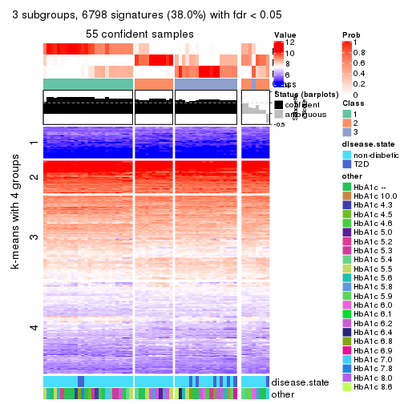
get_signatures(res, k = 4, scale_rows = FALSE)
get_signatures(res, k = 5, scale_rows = FALSE)
get_signatures(res, k = 6, scale_rows = FALSE)
Compare the overlap of signatures from different k:
compare_signatures(res)
get_signature() returns a data frame invisibly. TO get the list of signatures, the function
call should be assigned to a variable explicitly. In following code, if plot argument is set
to FALSE, no heatmap is plotted while only the differential analysis is performed.
# code only for demonstration
tb = get_signature(res, k = ..., plot = FALSE)
An example of the output of tb is:
#> which_row fdr mean_1 mean_2 scaled_mean_1 scaled_mean_2 km
#> 1 38 0.042760348 8.373488 9.131774 -0.5533452 0.5164555 1
#> 2 40 0.018707592 7.106213 8.469186 -0.6173731 0.5762149 1
#> 3 55 0.019134737 10.221463 11.207825 -0.6159697 0.5749050 1
#> 4 59 0.006059896 5.921854 7.869574 -0.6899429 0.6439467 1
#> 5 60 0.018055526 8.928898 10.211722 -0.6204761 0.5791110 1
#> 6 98 0.009384629 15.714769 14.887706 0.6635654 -0.6193277 2
...
The columns in tb are:
which_row: row indices corresponding to the input matrix.fdr: FDR for the differential test. mean_x: The mean value in group x.scaled_mean_x: The mean value in group x after rows are scaled.km: Row groups if k-means clustering is applied to rows.UMAP plot which shows how samples are separated.
dimension_reduction(res, k = 2, method = "UMAP")
dimension_reduction(res, k = 3, method = "UMAP")
dimension_reduction(res, k = 4, method = "UMAP")
dimension_reduction(res, k = 5, method = "UMAP")
dimension_reduction(res, k = 6, method = "UMAP")
Following heatmap shows how subgroups are split when increasing k:
collect_classes(res)
Test correlation between subgroups and known annotations. If the known annotation is numeric, one-way ANOVA test is applied, and if the known annotation is discrete, chi-squared contingency table test is applied.
test_to_known_factors(res)
#> n disease.state(p) other(p) k
#> MAD:NMF 62 0.1493 0.330 2
#> MAD:NMF 55 0.0186 0.370 3
#> MAD:NMF 53 0.4192 0.142 4
#> MAD:NMF 47 0.1308 0.427 5
#> MAD:NMF 47 0.2534 0.494 6
If matrix rows can be associated to genes, consider to use GO_Enrichment(res,
...) to perform function enrichment for the signature genes.
The object with results only for a single top-value method and a single partition method can be extracted as:
res = res_list["ATC", "hclust"]
# you can also extract it by
# res = res_list["ATC:hclust"]
A summary of res and all the functions that can be applied to it:
res
#> A 'ConsensusPartition' object with k = 2, 3, 4, 5, 6.
#> On a matrix with 17867 rows and 63 columns.
#> Top rows (1000, 2000, 3000, 4000, 5000) are extracted by 'ATC' method.
#> Subgroups are detected by 'hclust' method.
#> Performed in total 1250 partitions by row resampling.
#> Best k for subgroups seems to be 2.
#>
#> Following methods can be applied to this 'ConsensusPartition' object:
#> [1] "cola_report" "collect_classes" "collect_plots"
#> [4] "collect_stats" "colnames" "compare_signatures"
#> [7] "consensus_heatmap" "dimension_reduction" "functional_enrichment"
#> [10] "get_anno_col" "get_anno" "get_classes"
#> [13] "get_consensus" "get_matrix" "get_membership"
#> [16] "get_param" "get_signatures" "get_stats"
#> [19] "is_best_k" "is_stable_k" "membership_heatmap"
#> [22] "ncol" "nrow" "plot_ecdf"
#> [25] "rownames" "select_partition_number" "show"
#> [28] "suggest_best_k" "test_to_known_factors"
collect_plots() function collects all the plots made from res for all k (number of partitions)
into one single page to provide an easy and fast comparison between different k.
collect_plots(res)
The plots are:
k and the heatmap of
predicted classes for each k.k.k.k.All the plots in panels can be made by individual functions and they are plotted later in this section.
select_partition_number() produces several plots showing different
statistics for choosing “optimized” k. There are following statistics:
k;k, the area increased is defined as \(A_k - A_{k-1}\).The detailed explanations of these statistics can be found in the cola vignette.
Generally speaking, lower PAC score, higher mean silhouette score or higher
concordance corresponds to better partition. Rand index and Jaccard index
measure how similar the current partition is compared to partition with k-1.
If they are too similar, we won't accept k is better than k-1.
select_partition_number(res)
The numeric values for all these statistics can be obtained by get_stats().
get_stats(res)
#> k 1-PAC mean_silhouette concordance area_increased Rand Jaccard
#> 2 2 0.579 0.712 0.874 0.4227 0.529 0.529
#> 3 3 0.470 0.609 0.793 0.4179 0.778 0.601
#> 4 4 0.549 0.700 0.779 0.2033 0.750 0.442
#> 5 5 0.613 0.559 0.760 0.0542 0.853 0.551
#> 6 6 0.667 0.589 0.752 0.0289 0.853 0.519
suggest_best_k() suggests the best \(k\) based on these statistics. The rules are as follows:
NA.suggest_best_k(res)
#> [1] 2
Following shows the table of the partitions (You need to click the show/hide
code output link to see it). The membership matrix (columns with name p*)
is inferred by
clue::cl_consensus()
function with the SE method. Basically the value in the membership matrix
represents the probability to belong to a certain group. The finall class
label for an item is determined with the group with highest probability it
belongs to.
In get_classes() function, the entropy is calculated from the membership
matrix and the silhouette score is calculated from the consensus matrix.
cbind(get_classes(res, k = 2), get_membership(res, k = 2))
#> class entropy silhouette p1 p2
#> GSM946745 2 0.9850 0.45037 0.428 0.572
#> GSM946739 2 0.9491 0.55205 0.368 0.632
#> GSM946738 1 0.4298 0.83457 0.912 0.088
#> GSM946746 2 0.9635 0.53119 0.388 0.612
#> GSM946747 1 0.0376 0.88376 0.996 0.004
#> GSM946711 2 0.0000 0.73996 0.000 1.000
#> GSM946760 2 0.0376 0.73864 0.004 0.996
#> GSM946710 1 0.3114 0.87112 0.944 0.056
#> GSM946761 2 0.0000 0.73996 0.000 1.000
#> GSM946701 1 0.0000 0.88364 1.000 0.000
#> GSM946703 1 0.0000 0.88364 1.000 0.000
#> GSM946704 2 0.0000 0.73996 0.000 1.000
#> GSM946706 1 0.0000 0.88364 1.000 0.000
#> GSM946708 2 0.9661 0.52480 0.392 0.608
#> GSM946709 1 0.9896 -0.00641 0.560 0.440
#> GSM946712 2 0.9661 0.52495 0.392 0.608
#> GSM946720 1 0.0000 0.88364 1.000 0.000
#> GSM946722 1 0.8661 0.51830 0.712 0.288
#> GSM946753 1 0.0000 0.88364 1.000 0.000
#> GSM946762 1 0.3114 0.87112 0.944 0.056
#> GSM946707 1 0.2948 0.87312 0.948 0.052
#> GSM946721 1 0.0000 0.88364 1.000 0.000
#> GSM946719 1 0.1843 0.87625 0.972 0.028
#> GSM946716 1 0.2948 0.87312 0.948 0.052
#> GSM946751 1 0.4298 0.83457 0.912 0.088
#> GSM946740 2 0.0000 0.73996 0.000 1.000
#> GSM946741 1 0.0000 0.88364 1.000 0.000
#> GSM946718 1 0.3431 0.86624 0.936 0.064
#> GSM946737 1 0.2948 0.87312 0.948 0.052
#> GSM946742 1 0.4298 0.83457 0.912 0.088
#> GSM946749 1 0.0000 0.88364 1.000 0.000
#> GSM946702 1 0.9661 0.19236 0.608 0.392
#> GSM946713 1 0.2948 0.87312 0.948 0.052
#> GSM946723 1 0.0000 0.88364 1.000 0.000
#> GSM946736 1 0.0000 0.88364 1.000 0.000
#> GSM946705 1 0.0000 0.88364 1.000 0.000
#> GSM946715 1 0.0000 0.88364 1.000 0.000
#> GSM946726 2 0.0376 0.73864 0.004 0.996
#> GSM946727 1 0.9954 -0.09560 0.540 0.460
#> GSM946748 1 0.7883 0.62497 0.764 0.236
#> GSM946756 1 0.0672 0.88257 0.992 0.008
#> GSM946724 2 0.0000 0.73996 0.000 1.000
#> GSM946733 1 0.0000 0.88364 1.000 0.000
#> GSM946734 1 0.9954 -0.09560 0.540 0.460
#> GSM946754 1 0.2948 0.87312 0.948 0.052
#> GSM946700 2 0.2603 0.72942 0.044 0.956
#> GSM946714 2 0.0000 0.73996 0.000 1.000
#> GSM946729 2 0.9635 0.53119 0.388 0.612
#> GSM946731 1 0.3879 0.86032 0.924 0.076
#> GSM946743 1 0.3114 0.87112 0.944 0.056
#> GSM946744 2 0.0000 0.73996 0.000 1.000
#> GSM946730 1 0.4298 0.83457 0.912 0.088
#> GSM946755 1 0.5294 0.81897 0.880 0.120
#> GSM946717 1 0.0000 0.88364 1.000 0.000
#> GSM946725 2 0.9710 0.51128 0.400 0.600
#> GSM946728 2 0.0000 0.73996 0.000 1.000
#> GSM946752 1 0.0000 0.88364 1.000 0.000
#> GSM946757 2 0.9933 0.38282 0.452 0.548
#> GSM946758 2 0.0000 0.73996 0.000 1.000
#> GSM946759 2 0.9983 0.30432 0.476 0.524
#> GSM946732 1 0.0376 0.88376 0.996 0.004
#> GSM946750 2 0.9922 0.40047 0.448 0.552
#> GSM946735 2 0.9661 0.52480 0.392 0.608
cbind(get_classes(res, k = 3), get_membership(res, k = 3))
#> class entropy silhouette p1 p2 p3
#> GSM946745 2 0.6521 0.2255 0.004 0.500 0.496
#> GSM946739 2 0.6745 0.3708 0.012 0.560 0.428
#> GSM946738 3 0.0747 0.6593 0.000 0.016 0.984
#> GSM946746 2 0.6489 0.3407 0.004 0.540 0.456
#> GSM946747 1 0.4465 0.7713 0.820 0.004 0.176
#> GSM946711 2 0.0000 0.7087 0.000 1.000 0.000
#> GSM946760 2 0.1753 0.7023 0.000 0.952 0.048
#> GSM946710 3 0.6913 0.6975 0.248 0.056 0.696
#> GSM946761 2 0.0000 0.7087 0.000 1.000 0.000
#> GSM946701 1 0.1411 0.9127 0.964 0.000 0.036
#> GSM946703 1 0.0000 0.9277 1.000 0.000 0.000
#> GSM946704 2 0.0000 0.7087 0.000 1.000 0.000
#> GSM946706 3 0.2625 0.6922 0.084 0.000 0.916
#> GSM946708 2 0.6793 0.3274 0.012 0.536 0.452
#> GSM946709 3 0.8188 0.1945 0.080 0.372 0.548
#> GSM946712 2 0.6793 0.3306 0.012 0.536 0.452
#> GSM946720 1 0.0000 0.9277 1.000 0.000 0.000
#> GSM946722 3 0.7147 0.5369 0.076 0.228 0.696
#> GSM946753 1 0.0000 0.9277 1.000 0.000 0.000
#> GSM946762 3 0.6875 0.6989 0.244 0.056 0.700
#> GSM946707 3 0.6999 0.6854 0.268 0.052 0.680
#> GSM946721 1 0.0000 0.9277 1.000 0.000 0.000
#> GSM946719 3 0.1964 0.6852 0.056 0.000 0.944
#> GSM946716 3 0.6999 0.6854 0.268 0.052 0.680
#> GSM946751 3 0.0747 0.6593 0.000 0.016 0.984
#> GSM946740 2 0.0000 0.7087 0.000 1.000 0.000
#> GSM946741 1 0.1163 0.9173 0.972 0.000 0.028
#> GSM946718 3 0.7727 0.6212 0.336 0.064 0.600
#> GSM946737 3 0.6999 0.6854 0.268 0.052 0.680
#> GSM946742 3 0.0747 0.6593 0.000 0.016 0.984
#> GSM946749 1 0.0000 0.9277 1.000 0.000 0.000
#> GSM946702 3 0.8825 0.2963 0.132 0.336 0.532
#> GSM946713 3 0.7301 0.6519 0.308 0.052 0.640
#> GSM946723 1 0.4235 0.7759 0.824 0.000 0.176
#> GSM946736 3 0.2625 0.6922 0.084 0.000 0.916
#> GSM946705 3 0.2625 0.6922 0.084 0.000 0.916
#> GSM946715 1 0.0000 0.9277 1.000 0.000 0.000
#> GSM946726 2 0.1860 0.7014 0.000 0.948 0.052
#> GSM946727 3 0.7958 0.1433 0.064 0.392 0.544
#> GSM946748 3 0.9301 0.5195 0.268 0.212 0.520
#> GSM946756 3 0.2448 0.6908 0.076 0.000 0.924
#> GSM946724 2 0.0000 0.7087 0.000 1.000 0.000
#> GSM946733 1 0.0000 0.9277 1.000 0.000 0.000
#> GSM946734 3 0.7958 0.1433 0.064 0.392 0.544
#> GSM946754 3 0.7097 0.6792 0.280 0.052 0.668
#> GSM946700 2 0.3267 0.6765 0.000 0.884 0.116
#> GSM946714 2 0.0000 0.7087 0.000 1.000 0.000
#> GSM946729 2 0.6489 0.3407 0.004 0.540 0.456
#> GSM946731 3 0.6630 0.7083 0.220 0.056 0.724
#> GSM946743 3 0.6875 0.6989 0.244 0.056 0.700
#> GSM946744 2 0.0000 0.7087 0.000 1.000 0.000
#> GSM946730 3 0.0747 0.6593 0.000 0.016 0.984
#> GSM946755 3 0.7447 0.6509 0.280 0.068 0.652
#> GSM946717 3 0.2625 0.6922 0.084 0.000 0.916
#> GSM946725 2 0.6931 0.3127 0.016 0.528 0.456
#> GSM946728 2 0.0000 0.7087 0.000 1.000 0.000
#> GSM946752 3 0.2625 0.6922 0.084 0.000 0.916
#> GSM946757 3 0.7674 -0.2206 0.044 0.476 0.480
#> GSM946758 2 0.0000 0.7087 0.000 1.000 0.000
#> GSM946759 3 0.6483 -0.0937 0.004 0.452 0.544
#> GSM946732 1 0.4465 0.7713 0.820 0.004 0.176
#> GSM946750 2 0.6309 0.2629 0.000 0.504 0.496
#> GSM946735 2 0.6793 0.3274 0.012 0.536 0.452
cbind(get_classes(res, k = 4), get_membership(res, k = 4))
#> class entropy silhouette p1 p2 p3 p4
#> GSM946745 2 0.5432 0.4332 0.000 0.652 0.032 0.316
#> GSM946739 2 0.3907 0.4999 0.000 0.768 0.000 0.232
#> GSM946738 3 0.2814 0.8507 0.000 0.132 0.868 0.000
#> GSM946746 2 0.4897 0.3897 0.000 0.660 0.008 0.332
#> GSM946747 1 0.5982 0.6679 0.684 0.204 0.112 0.000
#> GSM946711 4 0.0000 0.9087 0.000 0.000 0.000 1.000
#> GSM946760 4 0.2530 0.8894 0.000 0.100 0.004 0.896
#> GSM946710 2 0.6722 0.4496 0.092 0.500 0.408 0.000
#> GSM946761 4 0.0000 0.9087 0.000 0.000 0.000 1.000
#> GSM946701 1 0.1389 0.8843 0.952 0.000 0.048 0.000
#> GSM946703 1 0.0000 0.9020 1.000 0.000 0.000 0.000
#> GSM946704 4 0.0817 0.9129 0.000 0.024 0.000 0.976
#> GSM946706 3 0.1022 0.8707 0.000 0.032 0.968 0.000
#> GSM946708 2 0.3486 0.5398 0.000 0.812 0.000 0.188
#> GSM946709 2 0.2111 0.6357 0.000 0.932 0.024 0.044
#> GSM946712 2 0.3486 0.5374 0.000 0.812 0.000 0.188
#> GSM946720 1 0.0000 0.9020 1.000 0.000 0.000 0.000
#> GSM946722 2 0.5292 0.5909 0.000 0.724 0.216 0.060
#> GSM946753 1 0.0000 0.9020 1.000 0.000 0.000 0.000
#> GSM946762 2 0.6666 0.4538 0.088 0.508 0.404 0.000
#> GSM946707 2 0.6894 0.4650 0.112 0.512 0.376 0.000
#> GSM946721 1 0.0000 0.9020 1.000 0.000 0.000 0.000
#> GSM946719 3 0.1867 0.8695 0.000 0.072 0.928 0.000
#> GSM946716 2 0.6894 0.4650 0.112 0.512 0.376 0.000
#> GSM946751 3 0.2814 0.8507 0.000 0.132 0.868 0.000
#> GSM946740 4 0.1389 0.9130 0.000 0.048 0.000 0.952
#> GSM946741 1 0.1118 0.8893 0.964 0.000 0.036 0.000
#> GSM946718 2 0.6756 0.5227 0.148 0.600 0.252 0.000
#> GSM946737 2 0.6894 0.4650 0.112 0.512 0.376 0.000
#> GSM946742 3 0.2814 0.8507 0.000 0.132 0.868 0.000
#> GSM946749 1 0.0000 0.9020 1.000 0.000 0.000 0.000
#> GSM946702 2 0.1452 0.6332 0.000 0.956 0.036 0.008
#> GSM946713 2 0.7156 0.4825 0.152 0.520 0.328 0.000
#> GSM946723 1 0.5857 0.6837 0.696 0.196 0.108 0.000
#> GSM946736 3 0.0000 0.8679 0.000 0.000 1.000 0.000
#> GSM946705 3 0.0000 0.8679 0.000 0.000 1.000 0.000
#> GSM946715 1 0.0000 0.9020 1.000 0.000 0.000 0.000
#> GSM946726 4 0.3668 0.8237 0.000 0.188 0.004 0.808
#> GSM946727 2 0.2521 0.6318 0.000 0.912 0.024 0.064
#> GSM946748 2 0.4851 0.5911 0.100 0.792 0.104 0.004
#> GSM946756 3 0.1211 0.8735 0.000 0.040 0.960 0.000
#> GSM946724 4 0.0000 0.9087 0.000 0.000 0.000 1.000
#> GSM946733 1 0.0000 0.9020 1.000 0.000 0.000 0.000
#> GSM946734 2 0.2521 0.6318 0.000 0.912 0.024 0.064
#> GSM946754 2 0.7043 0.4626 0.128 0.504 0.368 0.000
#> GSM946700 4 0.3610 0.8056 0.000 0.200 0.000 0.800
#> GSM946714 4 0.2589 0.8896 0.000 0.116 0.000 0.884
#> GSM946729 2 0.4897 0.3897 0.000 0.660 0.008 0.332
#> GSM946731 2 0.6510 0.4647 0.080 0.540 0.380 0.000
#> GSM946743 2 0.6666 0.4538 0.088 0.508 0.404 0.000
#> GSM946744 4 0.0000 0.9087 0.000 0.000 0.000 1.000
#> GSM946730 3 0.2814 0.8507 0.000 0.132 0.868 0.000
#> GSM946755 2 0.6286 0.5567 0.140 0.660 0.200 0.000
#> GSM946717 3 0.0000 0.8679 0.000 0.000 1.000 0.000
#> GSM946725 2 0.3400 0.5439 0.000 0.820 0.000 0.180
#> GSM946728 4 0.2589 0.8896 0.000 0.116 0.000 0.884
#> GSM946752 3 0.0592 0.8711 0.000 0.016 0.984 0.000
#> GSM946757 2 0.2999 0.5793 0.000 0.864 0.004 0.132
#> GSM946758 4 0.2589 0.8896 0.000 0.116 0.000 0.884
#> GSM946759 2 0.5742 0.4898 0.000 0.664 0.060 0.276
#> GSM946732 1 0.5982 0.6679 0.684 0.204 0.112 0.000
#> GSM946750 3 0.7480 -0.0668 0.000 0.180 0.444 0.376
#> GSM946735 2 0.3486 0.5398 0.000 0.812 0.000 0.188
cbind(get_classes(res, k = 5), get_membership(res, k = 5))
#> class entropy silhouette p1 p2 p3 p4 p5
#> GSM946745 2 0.4528 0.6898 0.000 0.784 0.044 0.044 0.128
#> GSM946739 2 0.1952 0.7445 0.000 0.912 0.000 0.004 0.084
#> GSM946738 3 0.4818 0.0318 0.000 0.100 0.720 0.180 0.000
#> GSM946746 2 0.3801 0.6914 0.000 0.812 0.008 0.040 0.140
#> GSM946747 1 0.6282 0.5619 0.592 0.052 0.284 0.072 0.000
#> GSM946711 5 0.0162 0.8253 0.000 0.000 0.000 0.004 0.996
#> GSM946760 5 0.4284 0.7720 0.000 0.204 0.004 0.040 0.752
#> GSM946710 3 0.5934 0.2973 0.040 0.372 0.548 0.040 0.000
#> GSM946761 5 0.0162 0.8253 0.000 0.000 0.000 0.004 0.996
#> GSM946701 1 0.1568 0.8402 0.944 0.000 0.020 0.036 0.000
#> GSM946703 1 0.0000 0.8598 1.000 0.000 0.000 0.000 0.000
#> GSM946704 5 0.2595 0.8385 0.000 0.080 0.000 0.032 0.888
#> GSM946706 3 0.3607 -0.0782 0.000 0.004 0.752 0.244 0.000
#> GSM946708 2 0.1041 0.7645 0.000 0.964 0.004 0.000 0.032
#> GSM946709 2 0.3146 0.7024 0.000 0.844 0.128 0.028 0.000
#> GSM946712 2 0.1041 0.7625 0.000 0.964 0.000 0.004 0.032
#> GSM946720 1 0.0000 0.8598 1.000 0.000 0.000 0.000 0.000
#> GSM946722 2 0.4374 0.5008 0.000 0.700 0.272 0.028 0.000
#> GSM946753 1 0.0290 0.8598 0.992 0.000 0.008 0.000 0.000
#> GSM946762 3 0.5658 0.3042 0.036 0.372 0.564 0.028 0.000
#> GSM946707 3 0.5582 0.3072 0.060 0.368 0.564 0.008 0.000
#> GSM946721 1 0.0000 0.8598 1.000 0.000 0.000 0.000 0.000
#> GSM946719 3 0.4150 -0.0196 0.000 0.036 0.748 0.216 0.000
#> GSM946716 3 0.5582 0.3072 0.060 0.368 0.564 0.008 0.000
#> GSM946751 3 0.4818 0.0318 0.000 0.100 0.720 0.180 0.000
#> GSM946740 5 0.3276 0.8348 0.000 0.132 0.000 0.032 0.836
#> GSM946741 1 0.1300 0.8462 0.956 0.000 0.016 0.028 0.000
#> GSM946718 3 0.6763 0.0672 0.056 0.424 0.440 0.080 0.000
#> GSM946737 3 0.5582 0.3072 0.060 0.368 0.564 0.008 0.000
#> GSM946742 3 0.4818 0.0318 0.000 0.100 0.720 0.180 0.000
#> GSM946749 1 0.0000 0.8598 1.000 0.000 0.000 0.000 0.000
#> GSM946702 2 0.4162 0.6398 0.000 0.768 0.176 0.056 0.000
#> GSM946713 3 0.6459 0.2478 0.060 0.368 0.516 0.056 0.000
#> GSM946723 1 0.6138 0.5741 0.604 0.044 0.280 0.072 0.000
#> GSM946736 4 0.3143 1.0000 0.000 0.000 0.204 0.796 0.000
#> GSM946705 4 0.3143 1.0000 0.000 0.000 0.204 0.796 0.000
#> GSM946715 1 0.0290 0.8598 0.992 0.000 0.008 0.000 0.000
#> GSM946726 5 0.5367 0.6227 0.000 0.336 0.004 0.060 0.600
#> GSM946727 2 0.2833 0.7169 0.000 0.864 0.120 0.012 0.004
#> GSM946748 2 0.6374 0.3149 0.016 0.552 0.296 0.136 0.000
#> GSM946756 3 0.3807 -0.0674 0.000 0.012 0.748 0.240 0.000
#> GSM946724 5 0.0162 0.8253 0.000 0.000 0.000 0.004 0.996
#> GSM946733 1 0.0000 0.8598 1.000 0.000 0.000 0.000 0.000
#> GSM946734 2 0.2833 0.7169 0.000 0.864 0.120 0.012 0.004
#> GSM946754 3 0.5678 0.3013 0.076 0.368 0.552 0.004 0.000
#> GSM946700 5 0.4836 0.6396 0.000 0.336 0.000 0.036 0.628
#> GSM946714 5 0.3567 0.8354 0.000 0.112 0.004 0.052 0.832
#> GSM946729 2 0.3801 0.6914 0.000 0.812 0.008 0.040 0.140
#> GSM946731 3 0.5229 0.2697 0.028 0.392 0.568 0.012 0.000
#> GSM946743 3 0.5582 0.3061 0.036 0.372 0.568 0.024 0.000
#> GSM946744 5 0.0162 0.8253 0.000 0.000 0.000 0.004 0.996
#> GSM946730 3 0.4818 0.0318 0.000 0.100 0.720 0.180 0.000
#> GSM946755 2 0.6741 0.0582 0.048 0.500 0.356 0.096 0.000
#> GSM946717 4 0.3143 1.0000 0.000 0.000 0.204 0.796 0.000
#> GSM946725 2 0.1041 0.7643 0.000 0.964 0.000 0.004 0.032
#> GSM946728 5 0.3567 0.8354 0.000 0.112 0.004 0.052 0.832
#> GSM946752 3 0.3838 -0.1511 0.000 0.004 0.716 0.280 0.000
#> GSM946757 2 0.1780 0.7569 0.000 0.940 0.024 0.028 0.008
#> GSM946758 5 0.3567 0.8354 0.000 0.112 0.004 0.052 0.832
#> GSM946759 2 0.5188 0.6874 0.000 0.744 0.064 0.064 0.128
#> GSM946732 1 0.6282 0.5619 0.592 0.052 0.284 0.072 0.000
#> GSM946750 3 0.7786 -0.1656 0.000 0.284 0.428 0.084 0.204
#> GSM946735 2 0.1041 0.7645 0.000 0.964 0.004 0.000 0.032
cbind(get_classes(res, k = 6), get_membership(res, k = 6))
#> class entropy silhouette p1 p2 p3 p4 p5 p6
#> GSM946745 2 0.3912 0.4150 0.000 0.800 0.048 0.028 0.120 0.004
#> GSM946739 2 0.1493 0.4677 0.000 0.936 0.004 0.056 0.000 0.004
#> GSM946738 3 0.1714 0.8626 0.000 0.092 0.908 0.000 0.000 0.000
#> GSM946746 2 0.3190 0.4091 0.000 0.840 0.012 0.028 0.116 0.004
#> GSM946747 1 0.5372 0.5397 0.576 0.032 0.048 0.000 0.340 0.004
#> GSM946711 4 0.0000 0.7756 0.000 0.000 0.000 1.000 0.000 0.000
#> GSM946760 5 0.6400 0.2284 0.000 0.216 0.016 0.284 0.476 0.008
#> GSM946710 2 0.6859 0.4558 0.028 0.348 0.280 0.000 0.336 0.008
#> GSM946761 4 0.0000 0.7756 0.000 0.000 0.000 1.000 0.000 0.000
#> GSM946701 1 0.1410 0.8320 0.944 0.000 0.008 0.000 0.044 0.004
#> GSM946703 1 0.0000 0.8488 1.000 0.000 0.000 0.000 0.000 0.000
#> GSM946704 4 0.5296 -0.0753 0.000 0.100 0.000 0.452 0.448 0.000
#> GSM946706 3 0.0547 0.8344 0.000 0.000 0.980 0.000 0.000 0.020
#> GSM946708 2 0.0291 0.5021 0.000 0.992 0.004 0.000 0.004 0.000
#> GSM946709 2 0.3062 0.5591 0.000 0.816 0.024 0.000 0.160 0.000
#> GSM946712 2 0.0291 0.5013 0.000 0.992 0.004 0.000 0.000 0.004
#> GSM946720 1 0.0000 0.8488 1.000 0.000 0.000 0.000 0.000 0.000
#> GSM946722 2 0.4640 0.5420 0.000 0.680 0.212 0.000 0.108 0.000
#> GSM946753 1 0.0260 0.8490 0.992 0.000 0.000 0.000 0.008 0.000
#> GSM946762 2 0.6812 0.4595 0.024 0.348 0.292 0.000 0.328 0.008
#> GSM946707 2 0.7108 0.4564 0.048 0.344 0.292 0.000 0.308 0.008
#> GSM946721 1 0.0000 0.8488 1.000 0.000 0.000 0.000 0.000 0.000
#> GSM946719 3 0.1401 0.8495 0.000 0.028 0.948 0.000 0.020 0.004
#> GSM946716 2 0.7108 0.4564 0.048 0.344 0.292 0.000 0.308 0.008
#> GSM946751 3 0.1714 0.8626 0.000 0.092 0.908 0.000 0.000 0.000
#> GSM946740 5 0.5651 -0.1100 0.000 0.152 0.000 0.400 0.448 0.000
#> GSM946741 1 0.1082 0.8376 0.956 0.000 0.004 0.000 0.040 0.000
#> GSM946718 2 0.6665 0.4610 0.040 0.388 0.180 0.000 0.388 0.004
#> GSM946737 2 0.7108 0.4564 0.048 0.344 0.292 0.000 0.308 0.008
#> GSM946742 3 0.1714 0.8626 0.000 0.092 0.908 0.000 0.000 0.000
#> GSM946749 1 0.0000 0.8488 1.000 0.000 0.000 0.000 0.000 0.000
#> GSM946702 2 0.3645 0.5463 0.000 0.740 0.024 0.000 0.236 0.000
#> GSM946713 5 0.7051 -0.5690 0.048 0.344 0.244 0.000 0.356 0.008
#> GSM946723 1 0.5224 0.5515 0.588 0.024 0.048 0.000 0.336 0.004
#> GSM946736 6 0.0547 1.0000 0.000 0.000 0.020 0.000 0.000 0.980
#> GSM946705 6 0.0547 1.0000 0.000 0.000 0.020 0.000 0.000 0.980
#> GSM946715 1 0.0260 0.8490 0.992 0.000 0.000 0.000 0.008 0.000
#> GSM946726 5 0.6240 0.3448 0.000 0.344 0.016 0.124 0.496 0.020
#> GSM946727 2 0.2790 0.5609 0.000 0.844 0.024 0.000 0.132 0.000
#> GSM946748 2 0.4578 0.4673 0.000 0.520 0.036 0.000 0.444 0.000
#> GSM946756 3 0.0508 0.8406 0.000 0.004 0.984 0.000 0.000 0.012
#> GSM946724 4 0.0000 0.7756 0.000 0.000 0.000 1.000 0.000 0.000
#> GSM946733 1 0.0000 0.8488 1.000 0.000 0.000 0.000 0.000 0.000
#> GSM946734 2 0.2790 0.5609 0.000 0.844 0.024 0.000 0.132 0.000
#> GSM946754 2 0.7169 0.4544 0.064 0.344 0.284 0.000 0.304 0.004
#> GSM946700 5 0.6156 0.3311 0.000 0.364 0.004 0.208 0.420 0.004
#> GSM946714 4 0.4302 0.7122 0.000 0.116 0.000 0.728 0.156 0.000
#> GSM946729 2 0.3190 0.4091 0.000 0.840 0.012 0.028 0.116 0.004
#> GSM946731 2 0.6672 0.4684 0.016 0.372 0.312 0.000 0.292 0.008
#> GSM946743 2 0.6814 0.4593 0.024 0.348 0.296 0.000 0.324 0.008
#> GSM946744 4 0.0000 0.7756 0.000 0.000 0.000 1.000 0.000 0.000
#> GSM946730 3 0.1714 0.8626 0.000 0.092 0.908 0.000 0.000 0.000
#> GSM946755 2 0.6370 0.5019 0.032 0.472 0.188 0.000 0.308 0.000
#> GSM946717 6 0.0547 1.0000 0.000 0.000 0.020 0.000 0.000 0.980
#> GSM946725 2 0.0405 0.5040 0.000 0.988 0.004 0.000 0.008 0.000
#> GSM946728 4 0.4302 0.7122 0.000 0.116 0.000 0.728 0.156 0.000
#> GSM946752 3 0.1549 0.8096 0.000 0.000 0.936 0.000 0.044 0.020
#> GSM946757 2 0.1615 0.5248 0.000 0.928 0.004 0.000 0.064 0.004
#> GSM946758 4 0.4302 0.7122 0.000 0.116 0.000 0.728 0.156 0.000
#> GSM946759 2 0.4291 0.4467 0.000 0.764 0.076 0.028 0.132 0.000
#> GSM946732 1 0.5372 0.5397 0.576 0.032 0.048 0.000 0.340 0.004
#> GSM946750 3 0.7211 0.1144 0.000 0.268 0.464 0.084 0.164 0.020
#> GSM946735 2 0.0291 0.5021 0.000 0.992 0.004 0.000 0.004 0.000
Heatmaps for the consensus matrix. It visualizes the probability of two samples to be in a same group.
consensus_heatmap(res, k = 2)

consensus_heatmap(res, k = 3)
consensus_heatmap(res, k = 4)
consensus_heatmap(res, k = 5)
consensus_heatmap(res, k = 6)
Heatmaps for the membership of samples in all partitions to see how consistent they are:
membership_heatmap(res, k = 2)
membership_heatmap(res, k = 3)
membership_heatmap(res, k = 4)
membership_heatmap(res, k = 5)
membership_heatmap(res, k = 6)
As soon as we have had the classes for columns, we can look for signatures which are significantly different between classes which can be candidate marks for certain classes. Following are the heatmaps for signatures.
Signature heatmaps where rows are scaled:
get_signatures(res, k = 2)
get_signatures(res, k = 3)
get_signatures(res, k = 4)
get_signatures(res, k = 5)
get_signatures(res, k = 6)
Signature heatmaps where rows are not scaled:
get_signatures(res, k = 2, scale_rows = FALSE)
get_signatures(res, k = 3, scale_rows = FALSE)
get_signatures(res, k = 4, scale_rows = FALSE)
get_signatures(res, k = 5, scale_rows = FALSE)
get_signatures(res, k = 6, scale_rows = FALSE)
Compare the overlap of signatures from different k:
compare_signatures(res)
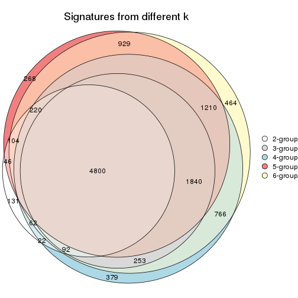
get_signature() returns a data frame invisibly. TO get the list of signatures, the function
call should be assigned to a variable explicitly. In following code, if plot argument is set
to FALSE, no heatmap is plotted while only the differential analysis is performed.
# code only for demonstration
tb = get_signature(res, k = ..., plot = FALSE)
An example of the output of tb is:
#> which_row fdr mean_1 mean_2 scaled_mean_1 scaled_mean_2 km
#> 1 38 0.042760348 8.373488 9.131774 -0.5533452 0.5164555 1
#> 2 40 0.018707592 7.106213 8.469186 -0.6173731 0.5762149 1
#> 3 55 0.019134737 10.221463 11.207825 -0.6159697 0.5749050 1
#> 4 59 0.006059896 5.921854 7.869574 -0.6899429 0.6439467 1
#> 5 60 0.018055526 8.928898 10.211722 -0.6204761 0.5791110 1
#> 6 98 0.009384629 15.714769 14.887706 0.6635654 -0.6193277 2
...
The columns in tb are:
which_row: row indices corresponding to the input matrix.fdr: FDR for the differential test. mean_x: The mean value in group x.scaled_mean_x: The mean value in group x after rows are scaled.km: Row groups if k-means clustering is applied to rows.UMAP plot which shows how samples are separated.
dimension_reduction(res, k = 2, method = "UMAP")
dimension_reduction(res, k = 3, method = "UMAP")
dimension_reduction(res, k = 4, method = "UMAP")
dimension_reduction(res, k = 5, method = "UMAP")
dimension_reduction(res, k = 6, method = "UMAP")
Following heatmap shows how subgroups are split when increasing k:
collect_classes(res)
Test correlation between subgroups and known annotations. If the known annotation is numeric, one-way ANOVA test is applied, and if the known annotation is discrete, chi-squared contingency table test is applied.
test_to_known_factors(res)
#> n disease.state(p) other(p) k
#> ATC:hclust 55 0.163 0.120 2
#> ATC:hclust 48 0.319 0.434 3
#> ATC:hclust 48 0.229 0.670 4
#> ATC:hclust 42 0.589 0.469 5
#> ATC:hclust 41 0.352 0.445 6
If matrix rows can be associated to genes, consider to use GO_Enrichment(res,
...) to perform function enrichment for the signature genes.
The object with results only for a single top-value method and a single partition method can be extracted as:
res = res_list["ATC", "kmeans"]
# you can also extract it by
# res = res_list["ATC:kmeans"]
A summary of res and all the functions that can be applied to it:
res
#> A 'ConsensusPartition' object with k = 2, 3, 4, 5, 6.
#> On a matrix with 17867 rows and 63 columns.
#> Top rows (1000, 2000, 3000, 4000, 5000) are extracted by 'ATC' method.
#> Subgroups are detected by 'kmeans' method.
#> Performed in total 1250 partitions by row resampling.
#> Best k for subgroups seems to be 2.
#>
#> Following methods can be applied to this 'ConsensusPartition' object:
#> [1] "cola_report" "collect_classes" "collect_plots"
#> [4] "collect_stats" "colnames" "compare_signatures"
#> [7] "consensus_heatmap" "dimension_reduction" "functional_enrichment"
#> [10] "get_anno_col" "get_anno" "get_classes"
#> [13] "get_consensus" "get_matrix" "get_membership"
#> [16] "get_param" "get_signatures" "get_stats"
#> [19] "is_best_k" "is_stable_k" "membership_heatmap"
#> [22] "ncol" "nrow" "plot_ecdf"
#> [25] "rownames" "select_partition_number" "show"
#> [28] "suggest_best_k" "test_to_known_factors"
collect_plots() function collects all the plots made from res for all k (number of partitions)
into one single page to provide an easy and fast comparison between different k.
collect_plots(res)
The plots are:
k and the heatmap of
predicted classes for each k.k.k.k.All the plots in panels can be made by individual functions and they are plotted later in this section.
select_partition_number() produces several plots showing different
statistics for choosing “optimized” k. There are following statistics:
k;k, the area increased is defined as \(A_k - A_{k-1}\).The detailed explanations of these statistics can be found in the cola vignette.
Generally speaking, lower PAC score, higher mean silhouette score or higher
concordance corresponds to better partition. Rand index and Jaccard index
measure how similar the current partition is compared to partition with k-1.
If they are too similar, we won't accept k is better than k-1.
select_partition_number(res)
The numeric values for all these statistics can be obtained by get_stats().
get_stats(res)
#> k 1-PAC mean_silhouette concordance area_increased Rand Jaccard
#> 2 2 1.000 0.961 0.985 0.5074 0.492 0.492
#> 3 3 0.590 0.732 0.864 0.3030 0.718 0.486
#> 4 4 0.645 0.680 0.821 0.1081 0.840 0.562
#> 5 5 0.607 0.493 0.701 0.0606 0.915 0.703
#> 6 6 0.657 0.524 0.728 0.0446 0.866 0.534
suggest_best_k() suggests the best \(k\) based on these statistics. The rules are as follows:
NA.suggest_best_k(res)
#> [1] 2
Following shows the table of the partitions (You need to click the show/hide
code output link to see it). The membership matrix (columns with name p*)
is inferred by
clue::cl_consensus()
function with the SE method. Basically the value in the membership matrix
represents the probability to belong to a certain group. The finall class
label for an item is determined with the group with highest probability it
belongs to.
In get_classes() function, the entropy is calculated from the membership
matrix and the silhouette score is calculated from the consensus matrix.
cbind(get_classes(res, k = 2), get_membership(res, k = 2))
#> class entropy silhouette p1 p2
#> GSM946745 2 0.0000 0.989 0.000 1.000
#> GSM946739 2 0.0000 0.989 0.000 1.000
#> GSM946738 2 0.0000 0.989 0.000 1.000
#> GSM946746 2 0.0000 0.989 0.000 1.000
#> GSM946747 1 0.0000 0.978 1.000 0.000
#> GSM946711 2 0.0000 0.989 0.000 1.000
#> GSM946760 2 0.0000 0.989 0.000 1.000
#> GSM946710 1 0.0000 0.978 1.000 0.000
#> GSM946761 2 0.0000 0.989 0.000 1.000
#> GSM946701 1 0.0000 0.978 1.000 0.000
#> GSM946703 1 0.0000 0.978 1.000 0.000
#> GSM946704 2 0.0000 0.989 0.000 1.000
#> GSM946706 1 0.0000 0.978 1.000 0.000
#> GSM946708 2 0.0000 0.989 0.000 1.000
#> GSM946709 2 0.0000 0.989 0.000 1.000
#> GSM946712 2 0.0000 0.989 0.000 1.000
#> GSM946720 1 0.0000 0.978 1.000 0.000
#> GSM946722 2 0.9087 0.498 0.324 0.676
#> GSM946753 1 0.0000 0.978 1.000 0.000
#> GSM946762 1 0.0000 0.978 1.000 0.000
#> GSM946707 1 0.0000 0.978 1.000 0.000
#> GSM946721 1 0.0000 0.978 1.000 0.000
#> GSM946719 1 0.9044 0.535 0.680 0.320
#> GSM946716 1 0.0000 0.978 1.000 0.000
#> GSM946751 2 0.0000 0.989 0.000 1.000
#> GSM946740 2 0.0000 0.989 0.000 1.000
#> GSM946741 1 0.0000 0.978 1.000 0.000
#> GSM946718 1 0.0000 0.978 1.000 0.000
#> GSM946737 1 0.0000 0.978 1.000 0.000
#> GSM946742 2 0.0376 0.985 0.004 0.996
#> GSM946749 1 0.0000 0.978 1.000 0.000
#> GSM946702 2 0.0000 0.989 0.000 1.000
#> GSM946713 1 0.0000 0.978 1.000 0.000
#> GSM946723 1 0.0000 0.978 1.000 0.000
#> GSM946736 1 0.0000 0.978 1.000 0.000
#> GSM946705 1 0.0000 0.978 1.000 0.000
#> GSM946715 1 0.0000 0.978 1.000 0.000
#> GSM946726 2 0.0000 0.989 0.000 1.000
#> GSM946727 2 0.0000 0.989 0.000 1.000
#> GSM946748 1 0.0672 0.971 0.992 0.008
#> GSM946756 1 0.9044 0.535 0.680 0.320
#> GSM946724 2 0.0000 0.989 0.000 1.000
#> GSM946733 1 0.0000 0.978 1.000 0.000
#> GSM946734 2 0.0000 0.989 0.000 1.000
#> GSM946754 1 0.0000 0.978 1.000 0.000
#> GSM946700 2 0.0000 0.989 0.000 1.000
#> GSM946714 2 0.0000 0.989 0.000 1.000
#> GSM946729 2 0.0000 0.989 0.000 1.000
#> GSM946731 1 0.0000 0.978 1.000 0.000
#> GSM946743 1 0.0000 0.978 1.000 0.000
#> GSM946744 2 0.0000 0.989 0.000 1.000
#> GSM946730 2 0.0000 0.989 0.000 1.000
#> GSM946755 1 0.0000 0.978 1.000 0.000
#> GSM946717 1 0.0000 0.978 1.000 0.000
#> GSM946725 2 0.0000 0.989 0.000 1.000
#> GSM946728 2 0.0000 0.989 0.000 1.000
#> GSM946752 1 0.0000 0.978 1.000 0.000
#> GSM946757 2 0.0000 0.989 0.000 1.000
#> GSM946758 2 0.0000 0.989 0.000 1.000
#> GSM946759 2 0.0000 0.989 0.000 1.000
#> GSM946732 1 0.0000 0.978 1.000 0.000
#> GSM946750 2 0.0000 0.989 0.000 1.000
#> GSM946735 2 0.0000 0.989 0.000 1.000
cbind(get_classes(res, k = 3), get_membership(res, k = 3))
#> class entropy silhouette p1 p2 p3
#> GSM946745 3 0.4605 0.569 0.000 0.204 0.796
#> GSM946739 2 0.4605 0.789 0.000 0.796 0.204
#> GSM946738 3 0.0424 0.739 0.000 0.008 0.992
#> GSM946746 2 0.4235 0.811 0.000 0.824 0.176
#> GSM946747 1 0.0237 0.914 0.996 0.000 0.004
#> GSM946711 2 0.1529 0.821 0.000 0.960 0.040
#> GSM946760 2 0.1529 0.821 0.000 0.960 0.040
#> GSM946710 1 0.3482 0.817 0.872 0.000 0.128
#> GSM946761 2 0.1529 0.821 0.000 0.960 0.040
#> GSM946701 1 0.0000 0.916 1.000 0.000 0.000
#> GSM946703 1 0.0000 0.916 1.000 0.000 0.000
#> GSM946704 2 0.1529 0.821 0.000 0.960 0.040
#> GSM946706 3 0.5216 0.630 0.260 0.000 0.740
#> GSM946708 2 0.1529 0.835 0.000 0.960 0.040
#> GSM946709 2 0.6225 0.465 0.000 0.568 0.432
#> GSM946712 2 0.4974 0.771 0.000 0.764 0.236
#> GSM946720 1 0.0000 0.916 1.000 0.000 0.000
#> GSM946722 3 0.5968 0.193 0.000 0.364 0.636
#> GSM946753 1 0.0000 0.916 1.000 0.000 0.000
#> GSM946762 1 0.3619 0.808 0.864 0.000 0.136
#> GSM946707 3 0.6286 0.227 0.464 0.000 0.536
#> GSM946721 1 0.0000 0.916 1.000 0.000 0.000
#> GSM946719 3 0.2200 0.759 0.056 0.004 0.940
#> GSM946716 3 0.5882 0.510 0.348 0.000 0.652
#> GSM946751 3 0.0592 0.739 0.000 0.012 0.988
#> GSM946740 2 0.1163 0.834 0.000 0.972 0.028
#> GSM946741 1 0.0000 0.916 1.000 0.000 0.000
#> GSM946718 1 0.4504 0.730 0.804 0.000 0.196
#> GSM946737 1 0.0000 0.916 1.000 0.000 0.000
#> GSM946742 3 0.1337 0.747 0.016 0.012 0.972
#> GSM946749 1 0.0000 0.916 1.000 0.000 0.000
#> GSM946702 2 0.6225 0.465 0.000 0.568 0.432
#> GSM946713 1 0.5178 0.625 0.744 0.000 0.256
#> GSM946723 1 0.0237 0.914 0.996 0.000 0.004
#> GSM946736 3 0.5216 0.630 0.260 0.000 0.740
#> GSM946705 3 0.5216 0.630 0.260 0.000 0.740
#> GSM946715 1 0.0000 0.916 1.000 0.000 0.000
#> GSM946726 2 0.0892 0.834 0.000 0.980 0.020
#> GSM946727 3 0.4702 0.565 0.000 0.212 0.788
#> GSM946748 1 0.7542 0.164 0.528 0.040 0.432
#> GSM946756 3 0.2200 0.759 0.056 0.004 0.940
#> GSM946724 2 0.1529 0.821 0.000 0.960 0.040
#> GSM946733 1 0.0000 0.916 1.000 0.000 0.000
#> GSM946734 2 0.6225 0.465 0.000 0.568 0.432
#> GSM946754 1 0.0000 0.916 1.000 0.000 0.000
#> GSM946700 2 0.4974 0.771 0.000 0.764 0.236
#> GSM946714 2 0.1031 0.833 0.000 0.976 0.024
#> GSM946729 2 0.5216 0.768 0.000 0.740 0.260
#> GSM946731 3 0.2400 0.759 0.064 0.004 0.932
#> GSM946743 1 0.3116 0.839 0.892 0.000 0.108
#> GSM946744 2 0.1529 0.821 0.000 0.960 0.040
#> GSM946730 3 0.0592 0.739 0.000 0.012 0.988
#> GSM946755 3 0.3267 0.747 0.116 0.000 0.884
#> GSM946717 3 0.5397 0.602 0.280 0.000 0.720
#> GSM946725 3 0.5988 0.186 0.000 0.368 0.632
#> GSM946728 2 0.1163 0.834 0.000 0.972 0.028
#> GSM946752 3 0.5397 0.602 0.280 0.000 0.720
#> GSM946757 2 0.5016 0.769 0.000 0.760 0.240
#> GSM946758 2 0.1031 0.833 0.000 0.976 0.024
#> GSM946759 3 0.2878 0.696 0.000 0.096 0.904
#> GSM946732 1 0.0237 0.914 0.996 0.000 0.004
#> GSM946750 3 0.4842 0.504 0.000 0.224 0.776
#> GSM946735 2 0.4974 0.771 0.000 0.764 0.236
cbind(get_classes(res, k = 4), get_membership(res, k = 4))
#> class entropy silhouette p1 p2 p3 p4
#> GSM946745 2 0.1938 0.716 0.000 0.936 0.052 0.012
#> GSM946739 2 0.4382 0.580 0.000 0.704 0.000 0.296
#> GSM946738 3 0.4897 0.605 0.000 0.332 0.660 0.008
#> GSM946746 2 0.4713 0.466 0.000 0.640 0.000 0.360
#> GSM946747 1 0.1732 0.881 0.948 0.040 0.004 0.008
#> GSM946711 4 0.0336 0.805 0.000 0.008 0.000 0.992
#> GSM946760 4 0.0707 0.806 0.000 0.020 0.000 0.980
#> GSM946710 1 0.5990 0.659 0.692 0.164 0.144 0.000
#> GSM946761 4 0.0336 0.805 0.000 0.008 0.000 0.992
#> GSM946701 1 0.0336 0.885 0.992 0.000 0.008 0.000
#> GSM946703 1 0.1356 0.878 0.960 0.032 0.000 0.008
#> GSM946704 4 0.0707 0.806 0.000 0.020 0.000 0.980
#> GSM946706 3 0.1118 0.729 0.000 0.036 0.964 0.000
#> GSM946708 2 0.4522 0.516 0.000 0.680 0.000 0.320
#> GSM946709 2 0.2546 0.744 0.000 0.912 0.028 0.060
#> GSM946712 2 0.3764 0.665 0.000 0.784 0.000 0.216
#> GSM946720 1 0.1256 0.880 0.964 0.028 0.000 0.008
#> GSM946722 2 0.3245 0.673 0.000 0.872 0.100 0.028
#> GSM946753 1 0.0672 0.885 0.984 0.008 0.008 0.000
#> GSM946762 1 0.5985 0.659 0.692 0.140 0.168 0.000
#> GSM946707 3 0.7583 0.117 0.384 0.196 0.420 0.000
#> GSM946721 1 0.0672 0.885 0.984 0.008 0.008 0.000
#> GSM946719 3 0.4936 0.640 0.000 0.340 0.652 0.008
#> GSM946716 3 0.7507 0.319 0.316 0.204 0.480 0.000
#> GSM946751 3 0.5172 0.548 0.000 0.404 0.588 0.008
#> GSM946740 4 0.4643 0.525 0.000 0.344 0.000 0.656
#> GSM946741 1 0.0336 0.885 0.992 0.000 0.008 0.000
#> GSM946718 1 0.6251 0.640 0.664 0.196 0.140 0.000
#> GSM946737 1 0.1059 0.883 0.972 0.016 0.012 0.000
#> GSM946742 3 0.2345 0.730 0.000 0.100 0.900 0.000
#> GSM946749 1 0.0672 0.885 0.984 0.008 0.008 0.000
#> GSM946702 2 0.2261 0.738 0.008 0.932 0.024 0.036
#> GSM946713 1 0.6585 0.566 0.632 0.180 0.188 0.000
#> GSM946723 1 0.1639 0.881 0.952 0.036 0.004 0.008
#> GSM946736 3 0.0000 0.721 0.000 0.000 1.000 0.000
#> GSM946705 3 0.0000 0.721 0.000 0.000 1.000 0.000
#> GSM946715 1 0.0672 0.883 0.984 0.008 0.000 0.008
#> GSM946726 4 0.4955 0.226 0.000 0.444 0.000 0.556
#> GSM946727 2 0.1661 0.719 0.000 0.944 0.052 0.004
#> GSM946748 2 0.3915 0.621 0.052 0.852 0.088 0.008
#> GSM946756 3 0.4897 0.646 0.000 0.332 0.660 0.008
#> GSM946724 4 0.0336 0.805 0.000 0.008 0.000 0.992
#> GSM946733 1 0.1356 0.878 0.960 0.032 0.000 0.008
#> GSM946734 2 0.2565 0.745 0.000 0.912 0.032 0.056
#> GSM946754 1 0.0937 0.884 0.976 0.012 0.012 0.000
#> GSM946700 2 0.4500 0.550 0.000 0.684 0.000 0.316
#> GSM946714 4 0.3444 0.738 0.000 0.184 0.000 0.816
#> GSM946729 2 0.4522 0.553 0.000 0.680 0.000 0.320
#> GSM946731 3 0.4957 0.646 0.012 0.320 0.668 0.000
#> GSM946743 1 0.5770 0.681 0.712 0.140 0.148 0.000
#> GSM946744 4 0.0336 0.805 0.000 0.008 0.000 0.992
#> GSM946730 3 0.5172 0.548 0.000 0.404 0.588 0.008
#> GSM946755 2 0.5383 -0.319 0.012 0.536 0.452 0.000
#> GSM946717 3 0.0000 0.721 0.000 0.000 1.000 0.000
#> GSM946725 2 0.2411 0.739 0.000 0.920 0.040 0.040
#> GSM946728 4 0.4643 0.525 0.000 0.344 0.000 0.656
#> GSM946752 3 0.1118 0.729 0.000 0.036 0.964 0.000
#> GSM946757 2 0.3172 0.705 0.000 0.840 0.000 0.160
#> GSM946758 4 0.3444 0.738 0.000 0.184 0.000 0.816
#> GSM946759 2 0.2271 0.691 0.000 0.916 0.076 0.008
#> GSM946732 1 0.1732 0.881 0.948 0.040 0.004 0.008
#> GSM946750 3 0.6269 0.527 0.000 0.272 0.632 0.096
#> GSM946735 2 0.4040 0.632 0.000 0.752 0.000 0.248
cbind(get_classes(res, k = 5), get_membership(res, k = 5))
#> class entropy silhouette p1 p2 p3 p4 p5
#> GSM946745 2 0.4182 0.3730 0.000 0.644 0.004 0.000 0.352
#> GSM946739 2 0.2471 0.6467 0.000 0.864 0.000 0.136 0.000
#> GSM946738 3 0.6669 0.0490 0.000 0.232 0.400 0.000 0.368
#> GSM946746 2 0.3734 0.6169 0.000 0.796 0.000 0.168 0.036
#> GSM946747 1 0.3241 0.6818 0.832 0.024 0.000 0.000 0.144
#> GSM946711 4 0.1205 0.7741 0.000 0.004 0.000 0.956 0.040
#> GSM946760 4 0.2677 0.7494 0.000 0.112 0.000 0.872 0.016
#> GSM946710 1 0.4784 0.5388 0.752 0.032 0.048 0.000 0.168
#> GSM946761 4 0.1205 0.7741 0.000 0.004 0.000 0.956 0.040
#> GSM946701 1 0.2891 0.6900 0.824 0.000 0.000 0.000 0.176
#> GSM946703 1 0.4074 0.6566 0.636 0.000 0.000 0.000 0.364
#> GSM946704 4 0.1671 0.7649 0.000 0.076 0.000 0.924 0.000
#> GSM946706 3 0.3883 0.3907 0.016 0.004 0.764 0.000 0.216
#> GSM946708 2 0.2773 0.6111 0.000 0.836 0.000 0.164 0.000
#> GSM946709 2 0.3044 0.6469 0.004 0.840 0.000 0.008 0.148
#> GSM946712 2 0.2079 0.6893 0.000 0.916 0.000 0.064 0.020
#> GSM946720 1 0.4074 0.6566 0.636 0.000 0.000 0.000 0.364
#> GSM946722 2 0.4745 0.4986 0.048 0.724 0.012 0.000 0.216
#> GSM946753 1 0.3661 0.6757 0.724 0.000 0.000 0.000 0.276
#> GSM946762 1 0.4573 0.5664 0.776 0.032 0.052 0.000 0.140
#> GSM946707 1 0.6415 0.0143 0.540 0.012 0.152 0.000 0.296
#> GSM946721 1 0.3661 0.6757 0.724 0.000 0.000 0.000 0.276
#> GSM946719 5 0.7424 0.4626 0.088 0.128 0.312 0.000 0.472
#> GSM946716 1 0.6559 -0.1335 0.500 0.012 0.156 0.000 0.332
#> GSM946751 3 0.6738 0.0151 0.000 0.256 0.376 0.000 0.368
#> GSM946740 4 0.5457 0.2524 0.000 0.460 0.000 0.480 0.060
#> GSM946741 1 0.2813 0.6909 0.832 0.000 0.000 0.000 0.168
#> GSM946718 1 0.5828 0.4474 0.644 0.056 0.048 0.000 0.252
#> GSM946737 1 0.2964 0.6226 0.856 0.024 0.000 0.000 0.120
#> GSM946742 3 0.5522 0.2721 0.000 0.092 0.600 0.000 0.308
#> GSM946749 1 0.3586 0.6788 0.736 0.000 0.000 0.000 0.264
#> GSM946702 2 0.3319 0.6317 0.020 0.820 0.000 0.000 0.160
#> GSM946713 1 0.5740 0.3686 0.644 0.040 0.056 0.000 0.260
#> GSM946723 1 0.3409 0.6821 0.816 0.024 0.000 0.000 0.160
#> GSM946736 3 0.0162 0.4442 0.000 0.000 0.996 0.004 0.000
#> GSM946705 3 0.0162 0.4442 0.000 0.000 0.996 0.004 0.000
#> GSM946715 1 0.4030 0.6598 0.648 0.000 0.000 0.000 0.352
#> GSM946726 2 0.5316 0.0987 0.000 0.588 0.000 0.348 0.064
#> GSM946727 2 0.4269 0.4168 0.000 0.684 0.016 0.000 0.300
#> GSM946748 2 0.6296 0.2103 0.200 0.528 0.000 0.000 0.272
#> GSM946756 5 0.7017 0.3549 0.040 0.144 0.344 0.000 0.472
#> GSM946724 4 0.1205 0.7741 0.000 0.004 0.000 0.956 0.040
#> GSM946733 1 0.4074 0.6566 0.636 0.000 0.000 0.000 0.364
#> GSM946734 2 0.2719 0.6345 0.000 0.852 0.000 0.004 0.144
#> GSM946754 1 0.0000 0.6836 1.000 0.000 0.000 0.000 0.000
#> GSM946700 2 0.3825 0.5952 0.000 0.804 0.000 0.136 0.060
#> GSM946714 4 0.5052 0.5262 0.000 0.340 0.000 0.612 0.048
#> GSM946729 2 0.3389 0.6548 0.000 0.836 0.000 0.116 0.048
#> GSM946731 5 0.7592 0.4401 0.200 0.068 0.284 0.000 0.448
#> GSM946743 1 0.4504 0.5696 0.780 0.032 0.048 0.000 0.140
#> GSM946744 4 0.1205 0.7741 0.000 0.004 0.000 0.956 0.040
#> GSM946730 3 0.6738 0.0151 0.000 0.256 0.376 0.000 0.368
#> GSM946755 5 0.7814 0.3597 0.208 0.308 0.080 0.000 0.404
#> GSM946717 3 0.0162 0.4442 0.000 0.000 0.996 0.004 0.000
#> GSM946725 2 0.3992 0.5038 0.000 0.720 0.000 0.012 0.268
#> GSM946728 2 0.5297 -0.3491 0.000 0.476 0.000 0.476 0.048
#> GSM946752 3 0.3852 0.3855 0.020 0.000 0.760 0.000 0.220
#> GSM946757 2 0.1557 0.6843 0.000 0.940 0.000 0.052 0.008
#> GSM946758 4 0.5022 0.5238 0.000 0.332 0.000 0.620 0.048
#> GSM946759 2 0.4668 0.3252 0.000 0.624 0.024 0.000 0.352
#> GSM946732 1 0.3241 0.6818 0.832 0.024 0.000 0.000 0.144
#> GSM946750 3 0.7565 0.1536 0.000 0.324 0.380 0.044 0.252
#> GSM946735 2 0.2171 0.6892 0.000 0.912 0.000 0.064 0.024
cbind(get_classes(res, k = 6), get_membership(res, k = 6))
#> class entropy silhouette p1 p2 p3 p4 p5 p6
#> GSM946745 2 0.6359 0.2629 0.000 0.420 0.404 0.000 0.128 0.048
#> GSM946739 2 0.1857 0.6025 0.000 0.924 0.000 0.044 0.028 0.004
#> GSM946738 3 0.1349 0.7080 0.000 0.056 0.940 0.000 0.004 0.000
#> GSM946746 2 0.3522 0.5753 0.000 0.844 0.068 0.040 0.016 0.032
#> GSM946747 1 0.4622 0.3428 0.608 0.008 0.000 0.000 0.348 0.036
#> GSM946711 4 0.0000 0.8417 0.000 0.000 0.000 1.000 0.000 0.000
#> GSM946760 4 0.5504 0.6270 0.000 0.244 0.008 0.636 0.036 0.076
#> GSM946710 5 0.3381 0.5694 0.212 0.000 0.008 0.000 0.772 0.008
#> GSM946761 4 0.0000 0.8417 0.000 0.000 0.000 1.000 0.000 0.000
#> GSM946701 1 0.4758 0.3217 0.552 0.000 0.008 0.000 0.404 0.036
#> GSM946703 1 0.0291 0.6893 0.992 0.000 0.000 0.000 0.004 0.004
#> GSM946704 4 0.4542 0.6700 0.000 0.224 0.000 0.700 0.012 0.064
#> GSM946706 3 0.4693 0.3937 0.000 0.000 0.684 0.000 0.140 0.176
#> GSM946708 2 0.1616 0.6105 0.000 0.940 0.000 0.020 0.028 0.012
#> GSM946709 2 0.5646 0.5800 0.000 0.652 0.108 0.000 0.164 0.076
#> GSM946712 2 0.3919 0.6258 0.000 0.808 0.032 0.008 0.104 0.048
#> GSM946720 1 0.0000 0.6908 1.000 0.000 0.000 0.000 0.000 0.000
#> GSM946722 2 0.6599 0.4678 0.000 0.512 0.168 0.000 0.244 0.076
#> GSM946753 1 0.2728 0.6733 0.864 0.000 0.004 0.000 0.100 0.032
#> GSM946762 5 0.3438 0.5647 0.220 0.000 0.008 0.000 0.764 0.008
#> GSM946707 5 0.3967 0.5468 0.092 0.000 0.148 0.000 0.760 0.000
#> GSM946721 1 0.2728 0.6733 0.864 0.000 0.004 0.000 0.100 0.032
#> GSM946719 3 0.3056 0.6675 0.000 0.008 0.804 0.000 0.184 0.004
#> GSM946716 5 0.4046 0.5352 0.084 0.000 0.168 0.000 0.748 0.000
#> GSM946751 3 0.1349 0.7080 0.000 0.056 0.940 0.000 0.004 0.000
#> GSM946740 2 0.5277 0.2983 0.000 0.660 0.000 0.208 0.036 0.096
#> GSM946741 1 0.4751 0.3312 0.556 0.000 0.008 0.000 0.400 0.036
#> GSM946718 5 0.4800 0.4743 0.200 0.024 0.012 0.000 0.712 0.052
#> GSM946737 5 0.3426 0.4809 0.276 0.000 0.000 0.000 0.720 0.004
#> GSM946742 3 0.1401 0.6897 0.000 0.004 0.948 0.000 0.020 0.028
#> GSM946749 1 0.3280 0.6392 0.808 0.000 0.004 0.000 0.160 0.028
#> GSM946702 2 0.6132 0.5578 0.000 0.600 0.108 0.000 0.184 0.108
#> GSM946713 5 0.3424 0.5835 0.168 0.000 0.032 0.000 0.796 0.004
#> GSM946723 1 0.4540 0.3773 0.632 0.008 0.000 0.000 0.324 0.036
#> GSM946736 6 0.3860 1.0000 0.000 0.000 0.236 0.000 0.036 0.728
#> GSM946705 6 0.3860 1.0000 0.000 0.000 0.236 0.000 0.036 0.728
#> GSM946715 1 0.0260 0.6904 0.992 0.000 0.000 0.000 0.008 0.000
#> GSM946726 2 0.5373 0.3750 0.000 0.688 0.004 0.144 0.060 0.104
#> GSM946727 2 0.6640 0.3556 0.000 0.436 0.340 0.000 0.168 0.056
#> GSM946748 5 0.7469 -0.2592 0.048 0.356 0.084 0.000 0.396 0.116
#> GSM946756 3 0.2257 0.7029 0.000 0.008 0.876 0.000 0.116 0.000
#> GSM946724 4 0.0260 0.8375 0.000 0.000 0.000 0.992 0.008 0.000
#> GSM946733 1 0.0291 0.6893 0.992 0.000 0.000 0.000 0.004 0.004
#> GSM946734 2 0.5894 0.5668 0.000 0.628 0.148 0.000 0.144 0.080
#> GSM946754 5 0.4702 0.0157 0.408 0.000 0.008 0.000 0.552 0.032
#> GSM946700 2 0.3483 0.5239 0.000 0.832 0.000 0.044 0.036 0.088
#> GSM946714 2 0.5929 -0.1439 0.000 0.468 0.000 0.400 0.032 0.100
#> GSM946729 2 0.3610 0.5764 0.000 0.836 0.080 0.040 0.016 0.028
#> GSM946731 3 0.3911 0.4811 0.000 0.000 0.624 0.000 0.368 0.008
#> GSM946743 5 0.3329 0.5626 0.220 0.000 0.004 0.000 0.768 0.008
#> GSM946744 4 0.0000 0.8417 0.000 0.000 0.000 1.000 0.000 0.000
#> GSM946730 3 0.1349 0.7080 0.000 0.056 0.940 0.000 0.004 0.000
#> GSM946755 5 0.6593 -0.0884 0.000 0.136 0.324 0.000 0.468 0.072
#> GSM946717 6 0.3860 1.0000 0.000 0.000 0.236 0.000 0.036 0.728
#> GSM946725 2 0.6243 0.4707 0.000 0.552 0.264 0.004 0.128 0.052
#> GSM946728 2 0.5227 0.3082 0.000 0.664 0.000 0.204 0.032 0.100
#> GSM946752 3 0.5011 0.3361 0.000 0.000 0.644 0.000 0.180 0.176
#> GSM946757 2 0.2050 0.6205 0.000 0.920 0.008 0.004 0.036 0.032
#> GSM946758 2 0.6026 -0.1183 0.000 0.464 0.000 0.400 0.044 0.092
#> GSM946759 2 0.6249 0.2571 0.000 0.424 0.416 0.000 0.112 0.048
#> GSM946732 1 0.4634 0.3364 0.604 0.008 0.000 0.000 0.352 0.036
#> GSM946750 3 0.4395 0.5216 0.000 0.192 0.740 0.008 0.036 0.024
#> GSM946735 2 0.3873 0.6263 0.000 0.812 0.032 0.008 0.100 0.048
Heatmaps for the consensus matrix. It visualizes the probability of two samples to be in a same group.
consensus_heatmap(res, k = 2)
consensus_heatmap(res, k = 3)
consensus_heatmap(res, k = 4)
consensus_heatmap(res, k = 5)
consensus_heatmap(res, k = 6)
Heatmaps for the membership of samples in all partitions to see how consistent they are:
membership_heatmap(res, k = 2)
membership_heatmap(res, k = 3)
membership_heatmap(res, k = 4)
membership_heatmap(res, k = 5)
membership_heatmap(res, k = 6)
As soon as we have had the classes for columns, we can look for signatures which are significantly different between classes which can be candidate marks for certain classes. Following are the heatmaps for signatures.
Signature heatmaps where rows are scaled:
get_signatures(res, k = 2)
get_signatures(res, k = 3)
get_signatures(res, k = 4)
get_signatures(res, k = 5)
get_signatures(res, k = 6)
Signature heatmaps where rows are not scaled:
get_signatures(res, k = 2, scale_rows = FALSE)
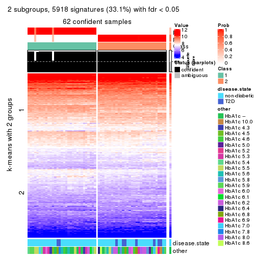
get_signatures(res, k = 3, scale_rows = FALSE)
get_signatures(res, k = 4, scale_rows = FALSE)
get_signatures(res, k = 5, scale_rows = FALSE)
get_signatures(res, k = 6, scale_rows = FALSE)
Compare the overlap of signatures from different k:
compare_signatures(res)
get_signature() returns a data frame invisibly. TO get the list of signatures, the function
call should be assigned to a variable explicitly. In following code, if plot argument is set
to FALSE, no heatmap is plotted while only the differential analysis is performed.
# code only for demonstration
tb = get_signature(res, k = ..., plot = FALSE)
An example of the output of tb is:
#> which_row fdr mean_1 mean_2 scaled_mean_1 scaled_mean_2 km
#> 1 38 0.042760348 8.373488 9.131774 -0.5533452 0.5164555 1
#> 2 40 0.018707592 7.106213 8.469186 -0.6173731 0.5762149 1
#> 3 55 0.019134737 10.221463 11.207825 -0.6159697 0.5749050 1
#> 4 59 0.006059896 5.921854 7.869574 -0.6899429 0.6439467 1
#> 5 60 0.018055526 8.928898 10.211722 -0.6204761 0.5791110 1
#> 6 98 0.009384629 15.714769 14.887706 0.6635654 -0.6193277 2
...
The columns in tb are:
which_row: row indices corresponding to the input matrix.fdr: FDR for the differential test. mean_x: The mean value in group x.scaled_mean_x: The mean value in group x after rows are scaled.km: Row groups if k-means clustering is applied to rows.UMAP plot which shows how samples are separated.
dimension_reduction(res, k = 2, method = "UMAP")
dimension_reduction(res, k = 3, method = "UMAP")

dimension_reduction(res, k = 4, method = "UMAP")
dimension_reduction(res, k = 5, method = "UMAP")
dimension_reduction(res, k = 6, method = "UMAP")
Following heatmap shows how subgroups are split when increasing k:
collect_classes(res)
Test correlation between subgroups and known annotations. If the known annotation is numeric, one-way ANOVA test is applied, and if the known annotation is discrete, chi-squared contingency table test is applied.
test_to_known_factors(res)
#> n disease.state(p) other(p) k
#> ATC:kmeans 62 0.149 0.515 2
#> ATC:kmeans 56 0.326 0.173 3
#> ATC:kmeans 58 0.422 0.413 4
#> ATC:kmeans 37 0.300 0.573 5
#> ATC:kmeans 40 0.255 0.385 6
If matrix rows can be associated to genes, consider to use GO_Enrichment(res,
...) to perform function enrichment for the signature genes.
The object with results only for a single top-value method and a single partition method can be extracted as:
res = res_list["ATC", "skmeans"]
# you can also extract it by
# res = res_list["ATC:skmeans"]
A summary of res and all the functions that can be applied to it:
res
#> A 'ConsensusPartition' object with k = 2, 3, 4, 5, 6.
#> On a matrix with 17867 rows and 63 columns.
#> Top rows (1000, 2000, 3000, 4000, 5000) are extracted by 'ATC' method.
#> Subgroups are detected by 'skmeans' method.
#> Performed in total 1250 partitions by row resampling.
#> Best k for subgroups seems to be 4.
#>
#> Following methods can be applied to this 'ConsensusPartition' object:
#> [1] "cola_report" "collect_classes" "collect_plots"
#> [4] "collect_stats" "colnames" "compare_signatures"
#> [7] "consensus_heatmap" "dimension_reduction" "functional_enrichment"
#> [10] "get_anno_col" "get_anno" "get_classes"
#> [13] "get_consensus" "get_matrix" "get_membership"
#> [16] "get_param" "get_signatures" "get_stats"
#> [19] "is_best_k" "is_stable_k" "membership_heatmap"
#> [22] "ncol" "nrow" "plot_ecdf"
#> [25] "rownames" "select_partition_number" "show"
#> [28] "suggest_best_k" "test_to_known_factors"
collect_plots() function collects all the plots made from res for all k (number of partitions)
into one single page to provide an easy and fast comparison between different k.
collect_plots(res)
The plots are:
k and the heatmap of
predicted classes for each k.k.k.k.All the plots in panels can be made by individual functions and they are plotted later in this section.
select_partition_number() produces several plots showing different
statistics for choosing “optimized” k. There are following statistics:
k;k, the area increased is defined as \(A_k - A_{k-1}\).The detailed explanations of these statistics can be found in the cola vignette.
Generally speaking, lower PAC score, higher mean silhouette score or higher
concordance corresponds to better partition. Rand index and Jaccard index
measure how similar the current partition is compared to partition with k-1.
If they are too similar, we won't accept k is better than k-1.
select_partition_number(res)
The numeric values for all these statistics can be obtained by get_stats().
get_stats(res)
#> k 1-PAC mean_silhouette concordance area_increased Rand Jaccard
#> 2 2 1.000 0.983 0.993 0.5084 0.492 0.492
#> 3 3 0.979 0.959 0.983 0.2796 0.816 0.641
#> 4 4 0.909 0.889 0.938 0.1120 0.930 0.801
#> 5 5 0.743 0.690 0.824 0.0563 0.969 0.892
#> 6 6 0.729 0.626 0.761 0.0378 0.969 0.883
suggest_best_k() suggests the best \(k\) based on these statistics. The rules are as follows:
NA.suggest_best_k(res)
#> [1] 4
#> attr(,"optional")
#> [1] 2 3
There is also optional best \(k\) = 2 3 that is worth to check.
Following shows the table of the partitions (You need to click the show/hide
code output link to see it). The membership matrix (columns with name p*)
is inferred by
clue::cl_consensus()
function with the SE method. Basically the value in the membership matrix
represents the probability to belong to a certain group. The finall class
label for an item is determined with the group with highest probability it
belongs to.
In get_classes() function, the entropy is calculated from the membership
matrix and the silhouette score is calculated from the consensus matrix.
cbind(get_classes(res, k = 2), get_membership(res, k = 2))
#> class entropy silhouette p1 p2
#> GSM946745 2 0.000 0.988 0.000 1.000
#> GSM946739 2 0.000 0.988 0.000 1.000
#> GSM946738 2 0.000 0.988 0.000 1.000
#> GSM946746 2 0.000 0.988 0.000 1.000
#> GSM946747 1 0.000 0.997 1.000 0.000
#> GSM946711 2 0.000 0.988 0.000 1.000
#> GSM946760 2 0.000 0.988 0.000 1.000
#> GSM946710 1 0.000 0.997 1.000 0.000
#> GSM946761 2 0.000 0.988 0.000 1.000
#> GSM946701 1 0.000 0.997 1.000 0.000
#> GSM946703 1 0.000 0.997 1.000 0.000
#> GSM946704 2 0.000 0.988 0.000 1.000
#> GSM946706 1 0.000 0.997 1.000 0.000
#> GSM946708 2 0.000 0.988 0.000 1.000
#> GSM946709 2 0.000 0.988 0.000 1.000
#> GSM946712 2 0.000 0.988 0.000 1.000
#> GSM946720 1 0.000 0.997 1.000 0.000
#> GSM946722 2 0.861 0.603 0.284 0.716
#> GSM946753 1 0.000 0.997 1.000 0.000
#> GSM946762 1 0.000 0.997 1.000 0.000
#> GSM946707 1 0.000 0.997 1.000 0.000
#> GSM946721 1 0.000 0.997 1.000 0.000
#> GSM946719 1 0.000 0.997 1.000 0.000
#> GSM946716 1 0.000 0.997 1.000 0.000
#> GSM946751 2 0.000 0.988 0.000 1.000
#> GSM946740 2 0.000 0.988 0.000 1.000
#> GSM946741 1 0.000 0.997 1.000 0.000
#> GSM946718 1 0.000 0.997 1.000 0.000
#> GSM946737 1 0.000 0.997 1.000 0.000
#> GSM946742 2 0.443 0.894 0.092 0.908
#> GSM946749 1 0.000 0.997 1.000 0.000
#> GSM946702 2 0.000 0.988 0.000 1.000
#> GSM946713 1 0.000 0.997 1.000 0.000
#> GSM946723 1 0.000 0.997 1.000 0.000
#> GSM946736 1 0.000 0.997 1.000 0.000
#> GSM946705 1 0.000 0.997 1.000 0.000
#> GSM946715 1 0.000 0.997 1.000 0.000
#> GSM946726 2 0.000 0.988 0.000 1.000
#> GSM946727 2 0.000 0.988 0.000 1.000
#> GSM946748 1 0.443 0.897 0.908 0.092
#> GSM946756 1 0.000 0.997 1.000 0.000
#> GSM946724 2 0.000 0.988 0.000 1.000
#> GSM946733 1 0.000 0.997 1.000 0.000
#> GSM946734 2 0.000 0.988 0.000 1.000
#> GSM946754 1 0.000 0.997 1.000 0.000
#> GSM946700 2 0.000 0.988 0.000 1.000
#> GSM946714 2 0.000 0.988 0.000 1.000
#> GSM946729 2 0.000 0.988 0.000 1.000
#> GSM946731 1 0.000 0.997 1.000 0.000
#> GSM946743 1 0.000 0.997 1.000 0.000
#> GSM946744 2 0.000 0.988 0.000 1.000
#> GSM946730 2 0.000 0.988 0.000 1.000
#> GSM946755 1 0.000 0.997 1.000 0.000
#> GSM946717 1 0.000 0.997 1.000 0.000
#> GSM946725 2 0.000 0.988 0.000 1.000
#> GSM946728 2 0.000 0.988 0.000 1.000
#> GSM946752 1 0.000 0.997 1.000 0.000
#> GSM946757 2 0.000 0.988 0.000 1.000
#> GSM946758 2 0.000 0.988 0.000 1.000
#> GSM946759 2 0.000 0.988 0.000 1.000
#> GSM946732 1 0.000 0.997 1.000 0.000
#> GSM946750 2 0.000 0.988 0.000 1.000
#> GSM946735 2 0.000 0.988 0.000 1.000
cbind(get_classes(res, k = 3), get_membership(res, k = 3))
#> class entropy silhouette p1 p2 p3
#> GSM946745 2 0.000 0.980 0.000 1.000 0.000
#> GSM946739 2 0.000 0.980 0.000 1.000 0.000
#> GSM946738 3 0.000 0.961 0.000 0.000 1.000
#> GSM946746 2 0.000 0.980 0.000 1.000 0.000
#> GSM946747 1 0.000 0.991 1.000 0.000 0.000
#> GSM946711 2 0.000 0.980 0.000 1.000 0.000
#> GSM946760 2 0.000 0.980 0.000 1.000 0.000
#> GSM946710 1 0.000 0.991 1.000 0.000 0.000
#> GSM946761 2 0.000 0.980 0.000 1.000 0.000
#> GSM946701 1 0.000 0.991 1.000 0.000 0.000
#> GSM946703 1 0.000 0.991 1.000 0.000 0.000
#> GSM946704 2 0.000 0.980 0.000 1.000 0.000
#> GSM946706 3 0.000 0.961 0.000 0.000 1.000
#> GSM946708 2 0.000 0.980 0.000 1.000 0.000
#> GSM946709 2 0.000 0.980 0.000 1.000 0.000
#> GSM946712 2 0.000 0.980 0.000 1.000 0.000
#> GSM946720 1 0.000 0.991 1.000 0.000 0.000
#> GSM946722 2 0.588 0.465 0.348 0.652 0.000
#> GSM946753 1 0.000 0.991 1.000 0.000 0.000
#> GSM946762 1 0.000 0.991 1.000 0.000 0.000
#> GSM946707 1 0.000 0.991 1.000 0.000 0.000
#> GSM946721 1 0.000 0.991 1.000 0.000 0.000
#> GSM946719 3 0.175 0.925 0.048 0.000 0.952
#> GSM946716 1 0.000 0.991 1.000 0.000 0.000
#> GSM946751 3 0.000 0.961 0.000 0.000 1.000
#> GSM946740 2 0.000 0.980 0.000 1.000 0.000
#> GSM946741 1 0.000 0.991 1.000 0.000 0.000
#> GSM946718 1 0.000 0.991 1.000 0.000 0.000
#> GSM946737 1 0.000 0.991 1.000 0.000 0.000
#> GSM946742 3 0.000 0.961 0.000 0.000 1.000
#> GSM946749 1 0.000 0.991 1.000 0.000 0.000
#> GSM946702 2 0.000 0.980 0.000 1.000 0.000
#> GSM946713 1 0.000 0.991 1.000 0.000 0.000
#> GSM946723 1 0.000 0.991 1.000 0.000 0.000
#> GSM946736 3 0.000 0.961 0.000 0.000 1.000
#> GSM946705 3 0.000 0.961 0.000 0.000 1.000
#> GSM946715 1 0.000 0.991 1.000 0.000 0.000
#> GSM946726 2 0.000 0.980 0.000 1.000 0.000
#> GSM946727 2 0.000 0.980 0.000 1.000 0.000
#> GSM946748 1 0.000 0.991 1.000 0.000 0.000
#> GSM946756 3 0.000 0.961 0.000 0.000 1.000
#> GSM946724 2 0.000 0.980 0.000 1.000 0.000
#> GSM946733 1 0.000 0.991 1.000 0.000 0.000
#> GSM946734 2 0.000 0.980 0.000 1.000 0.000
#> GSM946754 1 0.000 0.991 1.000 0.000 0.000
#> GSM946700 2 0.000 0.980 0.000 1.000 0.000
#> GSM946714 2 0.000 0.980 0.000 1.000 0.000
#> GSM946729 2 0.000 0.980 0.000 1.000 0.000
#> GSM946731 3 0.455 0.751 0.200 0.000 0.800
#> GSM946743 1 0.000 0.991 1.000 0.000 0.000
#> GSM946744 2 0.000 0.980 0.000 1.000 0.000
#> GSM946730 3 0.000 0.961 0.000 0.000 1.000
#> GSM946755 1 0.450 0.754 0.804 0.000 0.196
#> GSM946717 3 0.000 0.961 0.000 0.000 1.000
#> GSM946725 2 0.000 0.980 0.000 1.000 0.000
#> GSM946728 2 0.000 0.980 0.000 1.000 0.000
#> GSM946752 3 0.000 0.961 0.000 0.000 1.000
#> GSM946757 2 0.000 0.980 0.000 1.000 0.000
#> GSM946758 2 0.000 0.980 0.000 1.000 0.000
#> GSM946759 2 0.304 0.868 0.000 0.896 0.104
#> GSM946732 1 0.000 0.991 1.000 0.000 0.000
#> GSM946750 3 0.455 0.747 0.000 0.200 0.800
#> GSM946735 2 0.000 0.980 0.000 1.000 0.000
cbind(get_classes(res, k = 4), get_membership(res, k = 4))
#> class entropy silhouette p1 p2 p3 p4
#> GSM946745 2 0.3873 0.681 0.000 0.772 0.000 0.228
#> GSM946739 2 0.1389 0.894 0.000 0.952 0.000 0.048
#> GSM946738 3 0.2329 0.909 0.000 0.012 0.916 0.072
#> GSM946746 2 0.0000 0.898 0.000 1.000 0.000 0.000
#> GSM946747 1 0.0469 0.977 0.988 0.000 0.000 0.012
#> GSM946711 2 0.0000 0.898 0.000 1.000 0.000 0.000
#> GSM946760 2 0.0000 0.898 0.000 1.000 0.000 0.000
#> GSM946710 1 0.0000 0.982 1.000 0.000 0.000 0.000
#> GSM946761 2 0.0000 0.898 0.000 1.000 0.000 0.000
#> GSM946701 1 0.0000 0.982 1.000 0.000 0.000 0.000
#> GSM946703 1 0.0469 0.977 0.988 0.000 0.000 0.012
#> GSM946704 2 0.0000 0.898 0.000 1.000 0.000 0.000
#> GSM946706 3 0.0000 0.914 0.000 0.000 1.000 0.000
#> GSM946708 2 0.2149 0.877 0.000 0.912 0.000 0.088
#> GSM946709 4 0.1940 0.928 0.000 0.076 0.000 0.924
#> GSM946712 2 0.4746 0.496 0.000 0.632 0.000 0.368
#> GSM946720 1 0.0000 0.982 1.000 0.000 0.000 0.000
#> GSM946722 4 0.2053 0.894 0.072 0.004 0.000 0.924
#> GSM946753 1 0.0000 0.982 1.000 0.000 0.000 0.000
#> GSM946762 1 0.0000 0.982 1.000 0.000 0.000 0.000
#> GSM946707 1 0.0000 0.982 1.000 0.000 0.000 0.000
#> GSM946721 1 0.0000 0.982 1.000 0.000 0.000 0.000
#> GSM946719 3 0.3587 0.854 0.088 0.000 0.860 0.052
#> GSM946716 1 0.0188 0.979 0.996 0.000 0.004 0.000
#> GSM946751 3 0.2329 0.909 0.000 0.012 0.916 0.072
#> GSM946740 2 0.1474 0.892 0.000 0.948 0.000 0.052
#> GSM946741 1 0.0000 0.982 1.000 0.000 0.000 0.000
#> GSM946718 1 0.0469 0.977 0.988 0.000 0.000 0.012
#> GSM946737 1 0.0000 0.982 1.000 0.000 0.000 0.000
#> GSM946742 3 0.1792 0.912 0.000 0.000 0.932 0.068
#> GSM946749 1 0.0000 0.982 1.000 0.000 0.000 0.000
#> GSM946702 4 0.1867 0.929 0.000 0.072 0.000 0.928
#> GSM946713 1 0.0000 0.982 1.000 0.000 0.000 0.000
#> GSM946723 1 0.0469 0.977 0.988 0.000 0.000 0.012
#> GSM946736 3 0.0000 0.914 0.000 0.000 1.000 0.000
#> GSM946705 3 0.0000 0.914 0.000 0.000 1.000 0.000
#> GSM946715 1 0.0000 0.982 1.000 0.000 0.000 0.000
#> GSM946726 2 0.0817 0.896 0.000 0.976 0.000 0.024
#> GSM946727 4 0.2011 0.909 0.000 0.080 0.000 0.920
#> GSM946748 4 0.2081 0.881 0.084 0.000 0.000 0.916
#> GSM946756 3 0.1389 0.914 0.000 0.000 0.952 0.048
#> GSM946724 2 0.0000 0.898 0.000 1.000 0.000 0.000
#> GSM946733 1 0.0469 0.977 0.988 0.000 0.000 0.012
#> GSM946734 4 0.2149 0.920 0.000 0.088 0.000 0.912
#> GSM946754 1 0.0000 0.982 1.000 0.000 0.000 0.000
#> GSM946700 2 0.1557 0.891 0.000 0.944 0.000 0.056
#> GSM946714 2 0.1867 0.888 0.000 0.928 0.000 0.072
#> GSM946729 2 0.0000 0.898 0.000 1.000 0.000 0.000
#> GSM946731 3 0.3123 0.771 0.156 0.000 0.844 0.000
#> GSM946743 1 0.0000 0.982 1.000 0.000 0.000 0.000
#> GSM946744 2 0.0000 0.898 0.000 1.000 0.000 0.000
#> GSM946730 3 0.2329 0.909 0.000 0.012 0.916 0.072
#> GSM946755 1 0.5977 0.602 0.688 0.000 0.192 0.120
#> GSM946717 3 0.0000 0.914 0.000 0.000 1.000 0.000
#> GSM946725 2 0.4985 0.170 0.000 0.532 0.000 0.468
#> GSM946728 2 0.2149 0.882 0.000 0.912 0.000 0.088
#> GSM946752 3 0.0817 0.906 0.024 0.000 0.976 0.000
#> GSM946757 2 0.2408 0.874 0.000 0.896 0.000 0.104
#> GSM946758 2 0.2760 0.858 0.000 0.872 0.000 0.128
#> GSM946759 2 0.1936 0.867 0.000 0.940 0.028 0.032
#> GSM946732 1 0.0469 0.977 0.988 0.000 0.000 0.012
#> GSM946750 3 0.5010 0.586 0.000 0.276 0.700 0.024
#> GSM946735 2 0.4040 0.712 0.000 0.752 0.000 0.248
cbind(get_classes(res, k = 5), get_membership(res, k = 5))
#> class entropy silhouette p1 p2 p3 p4 p5
#> GSM946745 5 0.5290 0.5279 0.000 0.076 0.000 0.300 0.624
#> GSM946739 5 0.1205 0.8344 0.000 0.040 0.000 0.004 0.956
#> GSM946738 4 0.4201 1.0000 0.000 0.000 0.408 0.592 0.000
#> GSM946746 5 0.0162 0.8367 0.000 0.000 0.000 0.004 0.996
#> GSM946747 1 0.2280 0.8970 0.880 0.000 0.000 0.120 0.000
#> GSM946711 5 0.0000 0.8373 0.000 0.000 0.000 0.000 1.000
#> GSM946760 5 0.0162 0.8371 0.000 0.004 0.000 0.000 0.996
#> GSM946710 1 0.1478 0.8953 0.936 0.000 0.000 0.064 0.000
#> GSM946761 5 0.0000 0.8373 0.000 0.000 0.000 0.000 1.000
#> GSM946701 1 0.1544 0.8941 0.932 0.000 0.000 0.068 0.000
#> GSM946703 1 0.2280 0.8970 0.880 0.000 0.000 0.120 0.000
#> GSM946704 5 0.0000 0.8373 0.000 0.000 0.000 0.000 1.000
#> GSM946706 3 0.0794 0.4171 0.000 0.000 0.972 0.028 0.000
#> GSM946708 5 0.3888 0.7700 0.000 0.148 0.000 0.056 0.796
#> GSM946709 2 0.0898 0.8728 0.000 0.972 0.000 0.020 0.008
#> GSM946712 5 0.5040 0.6226 0.000 0.272 0.000 0.068 0.660
#> GSM946720 1 0.1732 0.9066 0.920 0.000 0.000 0.080 0.000
#> GSM946722 2 0.0992 0.8748 0.008 0.968 0.000 0.024 0.000
#> GSM946753 1 0.1410 0.8964 0.940 0.000 0.000 0.060 0.000
#> GSM946762 1 0.1544 0.8941 0.932 0.000 0.000 0.068 0.000
#> GSM946707 1 0.3180 0.8467 0.856 0.000 0.068 0.076 0.000
#> GSM946721 1 0.1478 0.8953 0.936 0.000 0.000 0.064 0.000
#> GSM946719 3 0.5125 -0.5515 0.040 0.000 0.544 0.416 0.000
#> GSM946716 1 0.3849 0.7979 0.808 0.000 0.112 0.080 0.000
#> GSM946751 4 0.4201 1.0000 0.000 0.000 0.408 0.592 0.000
#> GSM946740 5 0.2864 0.8089 0.000 0.112 0.000 0.024 0.864
#> GSM946741 1 0.1544 0.8941 0.932 0.000 0.000 0.068 0.000
#> GSM946718 1 0.2773 0.8761 0.836 0.000 0.000 0.164 0.000
#> GSM946737 1 0.1608 0.9083 0.928 0.000 0.000 0.072 0.000
#> GSM946742 3 0.4302 -0.7096 0.000 0.000 0.520 0.480 0.000
#> GSM946749 1 0.1792 0.9072 0.916 0.000 0.000 0.084 0.000
#> GSM946702 2 0.1124 0.8821 0.000 0.960 0.000 0.036 0.004
#> GSM946713 1 0.2516 0.8910 0.860 0.000 0.000 0.140 0.000
#> GSM946723 1 0.2280 0.8970 0.880 0.000 0.000 0.120 0.000
#> GSM946736 3 0.0566 0.4299 0.000 0.004 0.984 0.012 0.000
#> GSM946705 3 0.0566 0.4299 0.000 0.004 0.984 0.012 0.000
#> GSM946715 1 0.0000 0.9062 1.000 0.000 0.000 0.000 0.000
#> GSM946726 5 0.1282 0.8271 0.000 0.044 0.000 0.004 0.952
#> GSM946727 2 0.5139 0.6830 0.000 0.648 0.000 0.280 0.072
#> GSM946748 2 0.2110 0.8549 0.016 0.912 0.000 0.072 0.000
#> GSM946756 3 0.4192 -0.5072 0.000 0.000 0.596 0.404 0.000
#> GSM946724 5 0.0000 0.8373 0.000 0.000 0.000 0.000 1.000
#> GSM946733 1 0.2280 0.8970 0.880 0.000 0.000 0.120 0.000
#> GSM946734 2 0.2795 0.8464 0.000 0.880 0.000 0.064 0.056
#> GSM946754 1 0.1608 0.9090 0.928 0.000 0.000 0.072 0.000
#> GSM946700 5 0.2915 0.8080 0.000 0.116 0.000 0.024 0.860
#> GSM946714 5 0.3535 0.7910 0.000 0.164 0.000 0.028 0.808
#> GSM946729 5 0.0162 0.8371 0.000 0.004 0.000 0.000 0.996
#> GSM946731 3 0.4936 0.2788 0.172 0.000 0.712 0.116 0.000
#> GSM946743 1 0.1544 0.8941 0.932 0.000 0.000 0.068 0.000
#> GSM946744 5 0.0000 0.8373 0.000 0.000 0.000 0.000 1.000
#> GSM946730 4 0.4201 1.0000 0.000 0.000 0.408 0.592 0.000
#> GSM946755 3 0.7188 0.1229 0.252 0.020 0.404 0.324 0.000
#> GSM946717 3 0.0566 0.4299 0.000 0.004 0.984 0.012 0.000
#> GSM946725 5 0.6742 0.0957 0.000 0.288 0.000 0.300 0.412
#> GSM946728 5 0.3574 0.7894 0.000 0.168 0.000 0.028 0.804
#> GSM946752 3 0.1282 0.4169 0.004 0.000 0.952 0.044 0.000
#> GSM946757 5 0.4054 0.7569 0.000 0.224 0.000 0.028 0.748
#> GSM946758 5 0.3789 0.7642 0.000 0.212 0.000 0.020 0.768
#> GSM946759 5 0.5937 0.5158 0.000 0.024 0.080 0.292 0.604
#> GSM946732 1 0.2561 0.8882 0.856 0.000 0.000 0.144 0.000
#> GSM946750 3 0.6820 -0.2416 0.000 0.000 0.344 0.312 0.344
#> GSM946735 5 0.5190 0.6502 0.000 0.236 0.000 0.096 0.668
cbind(get_classes(res, k = 6), get_membership(res, k = 6))
#> class entropy silhouette p1 p2 p3 p4 p5 p6
#> GSM946745 5 0.6062 -0.1884 0.000 0.028 0.000 0.412 0.436 0.124
#> GSM946739 5 0.1719 0.7564 0.000 0.016 0.000 0.060 0.924 0.000
#> GSM946738 6 0.3314 0.7031 0.000 0.000 0.256 0.000 0.004 0.740
#> GSM946746 5 0.0363 0.7590 0.000 0.000 0.000 0.012 0.988 0.000
#> GSM946747 1 0.1458 0.8312 0.948 0.016 0.000 0.020 0.000 0.016
#> GSM946711 5 0.0146 0.7592 0.000 0.000 0.000 0.004 0.996 0.000
#> GSM946760 5 0.0777 0.7563 0.000 0.000 0.000 0.024 0.972 0.004
#> GSM946710 1 0.3356 0.8262 0.808 0.000 0.000 0.052 0.000 0.140
#> GSM946761 5 0.0146 0.7592 0.000 0.000 0.000 0.004 0.996 0.000
#> GSM946701 1 0.3806 0.8114 0.768 0.000 0.000 0.068 0.000 0.164
#> GSM946703 1 0.1364 0.8329 0.952 0.012 0.000 0.020 0.000 0.016
#> GSM946704 5 0.0405 0.7614 0.000 0.004 0.000 0.008 0.988 0.000
#> GSM946706 3 0.0547 0.5896 0.000 0.000 0.980 0.000 0.000 0.020
#> GSM946708 5 0.4459 0.6466 0.000 0.084 0.000 0.204 0.708 0.004
#> GSM946709 2 0.0858 0.7853 0.000 0.968 0.000 0.028 0.000 0.004
#> GSM946712 5 0.5188 0.4565 0.000 0.124 0.000 0.288 0.588 0.000
#> GSM946720 1 0.0146 0.8441 0.996 0.000 0.000 0.004 0.000 0.000
#> GSM946722 2 0.0260 0.7973 0.000 0.992 0.000 0.008 0.000 0.000
#> GSM946753 1 0.3336 0.8272 0.812 0.000 0.000 0.056 0.000 0.132
#> GSM946762 1 0.3946 0.8095 0.764 0.000 0.004 0.068 0.000 0.164
#> GSM946707 1 0.5687 0.7160 0.644 0.000 0.108 0.072 0.000 0.176
#> GSM946721 1 0.3736 0.8145 0.776 0.000 0.000 0.068 0.000 0.156
#> GSM946719 3 0.5144 -0.2797 0.016 0.000 0.488 0.048 0.000 0.448
#> GSM946716 1 0.5991 0.6779 0.608 0.000 0.132 0.072 0.000 0.188
#> GSM946751 6 0.3373 0.7078 0.000 0.000 0.248 0.000 0.008 0.744
#> GSM946740 5 0.4859 0.6865 0.000 0.168 0.000 0.128 0.692 0.012
#> GSM946741 1 0.3806 0.8114 0.768 0.000 0.000 0.068 0.000 0.164
#> GSM946718 1 0.3203 0.7665 0.848 0.020 0.000 0.080 0.000 0.052
#> GSM946737 1 0.0405 0.8456 0.988 0.000 0.000 0.004 0.000 0.008
#> GSM946742 6 0.4121 0.5004 0.000 0.000 0.380 0.016 0.000 0.604
#> GSM946749 1 0.0692 0.8445 0.976 0.000 0.000 0.004 0.000 0.020
#> GSM946702 2 0.2214 0.7996 0.000 0.888 0.000 0.096 0.000 0.016
#> GSM946713 1 0.2209 0.8116 0.904 0.004 0.000 0.052 0.000 0.040
#> GSM946723 1 0.1458 0.8312 0.948 0.016 0.000 0.020 0.000 0.016
#> GSM946736 3 0.3014 0.6005 0.000 0.000 0.832 0.132 0.000 0.036
#> GSM946705 3 0.3014 0.6005 0.000 0.000 0.832 0.132 0.000 0.036
#> GSM946715 1 0.2179 0.8429 0.900 0.000 0.000 0.036 0.000 0.064
#> GSM946726 5 0.2890 0.7319 0.000 0.032 0.000 0.096 0.860 0.012
#> GSM946727 4 0.6234 -0.1245 0.000 0.348 0.000 0.464 0.028 0.160
#> GSM946748 2 0.3059 0.7590 0.040 0.856 0.000 0.084 0.000 0.020
#> GSM946756 3 0.4695 -0.3126 0.000 0.000 0.508 0.044 0.000 0.448
#> GSM946724 5 0.0260 0.7581 0.000 0.000 0.000 0.008 0.992 0.000
#> GSM946733 1 0.1364 0.8329 0.952 0.012 0.000 0.020 0.000 0.016
#> GSM946734 2 0.4936 0.5417 0.000 0.672 0.000 0.240 0.044 0.044
#> GSM946754 1 0.0622 0.8463 0.980 0.000 0.000 0.012 0.000 0.008
#> GSM946700 5 0.4756 0.6913 0.000 0.160 0.000 0.124 0.704 0.012
#> GSM946714 5 0.4951 0.6813 0.000 0.180 0.000 0.128 0.680 0.012
#> GSM946729 5 0.0458 0.7579 0.000 0.000 0.000 0.016 0.984 0.000
#> GSM946731 3 0.5295 0.4032 0.036 0.000 0.664 0.108 0.000 0.192
#> GSM946743 1 0.3806 0.8114 0.768 0.000 0.000 0.068 0.000 0.164
#> GSM946744 5 0.0146 0.7592 0.000 0.000 0.000 0.004 0.996 0.000
#> GSM946730 6 0.3373 0.7078 0.000 0.000 0.248 0.000 0.008 0.744
#> GSM946755 4 0.7367 0.0338 0.252 0.024 0.228 0.428 0.000 0.068
#> GSM946717 3 0.3014 0.6005 0.000 0.000 0.832 0.132 0.000 0.036
#> GSM946725 4 0.6487 0.2207 0.000 0.072 0.000 0.508 0.284 0.136
#> GSM946728 5 0.5009 0.6769 0.000 0.188 0.000 0.128 0.672 0.012
#> GSM946752 3 0.1984 0.5787 0.000 0.000 0.912 0.032 0.000 0.056
#> GSM946757 5 0.5511 0.6110 0.000 0.256 0.000 0.140 0.592 0.012
#> GSM946758 5 0.4499 0.7003 0.000 0.160 0.000 0.108 0.724 0.008
#> GSM946759 5 0.6706 -0.0711 0.000 0.004 0.044 0.300 0.452 0.200
#> GSM946732 1 0.2519 0.8028 0.892 0.016 0.000 0.044 0.000 0.048
#> GSM946750 6 0.6498 0.2417 0.000 0.000 0.212 0.028 0.380 0.380
#> GSM946735 5 0.5284 0.5001 0.000 0.112 0.000 0.280 0.600 0.008
Heatmaps for the consensus matrix. It visualizes the probability of two samples to be in a same group.
consensus_heatmap(res, k = 2)
consensus_heatmap(res, k = 3)
consensus_heatmap(res, k = 4)
consensus_heatmap(res, k = 5)
consensus_heatmap(res, k = 6)
Heatmaps for the membership of samples in all partitions to see how consistent they are:
membership_heatmap(res, k = 2)
membership_heatmap(res, k = 3)
membership_heatmap(res, k = 4)
membership_heatmap(res, k = 5)
membership_heatmap(res, k = 6)
As soon as we have had the classes for columns, we can look for signatures which are significantly different between classes which can be candidate marks for certain classes. Following are the heatmaps for signatures.
Signature heatmaps where rows are scaled:
get_signatures(res, k = 2)
get_signatures(res, k = 3)
get_signatures(res, k = 4)
get_signatures(res, k = 5)
get_signatures(res, k = 6)
Signature heatmaps where rows are not scaled:
get_signatures(res, k = 2, scale_rows = FALSE)
get_signatures(res, k = 3, scale_rows = FALSE)
get_signatures(res, k = 4, scale_rows = FALSE)
get_signatures(res, k = 5, scale_rows = FALSE)
get_signatures(res, k = 6, scale_rows = FALSE)
Compare the overlap of signatures from different k:
compare_signatures(res)

get_signature() returns a data frame invisibly. TO get the list of signatures, the function
call should be assigned to a variable explicitly. In following code, if plot argument is set
to FALSE, no heatmap is plotted while only the differential analysis is performed.
# code only for demonstration
tb = get_signature(res, k = ..., plot = FALSE)
An example of the output of tb is:
#> which_row fdr mean_1 mean_2 scaled_mean_1 scaled_mean_2 km
#> 1 38 0.042760348 8.373488 9.131774 -0.5533452 0.5164555 1
#> 2 40 0.018707592 7.106213 8.469186 -0.6173731 0.5762149 1
#> 3 55 0.019134737 10.221463 11.207825 -0.6159697 0.5749050 1
#> 4 59 0.006059896 5.921854 7.869574 -0.6899429 0.6439467 1
#> 5 60 0.018055526 8.928898 10.211722 -0.6204761 0.5791110 1
#> 6 98 0.009384629 15.714769 14.887706 0.6635654 -0.6193277 2
...
The columns in tb are:
which_row: row indices corresponding to the input matrix.fdr: FDR for the differential test. mean_x: The mean value in group x.scaled_mean_x: The mean value in group x after rows are scaled.km: Row groups if k-means clustering is applied to rows.UMAP plot which shows how samples are separated.
dimension_reduction(res, k = 2, method = "UMAP")
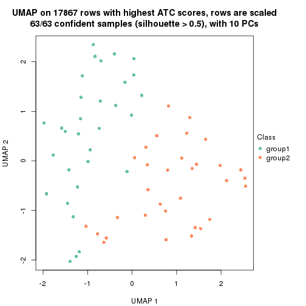
dimension_reduction(res, k = 3, method = "UMAP")
dimension_reduction(res, k = 4, method = "UMAP")
dimension_reduction(res, k = 5, method = "UMAP")
dimension_reduction(res, k = 6, method = "UMAP")
Following heatmap shows how subgroups are split when increasing k:
collect_classes(res)
Test correlation between subgroups and known annotations. If the known annotation is numeric, one-way ANOVA test is applied, and if the known annotation is discrete, chi-squared contingency table test is applied.
test_to_known_factors(res)
#> n disease.state(p) other(p) k
#> ATC:skmeans 63 0.165 0.521 2
#> ATC:skmeans 62 0.266 0.437 3
#> ATC:skmeans 61 0.121 0.670 4
#> ATC:skmeans 51 0.215 0.170 5
#> ATC:skmeans 53 0.303 0.515 6
If matrix rows can be associated to genes, consider to use GO_Enrichment(res,
...) to perform function enrichment for the signature genes.
The object with results only for a single top-value method and a single partition method can be extracted as:
res = res_list["ATC", "pam"]
# you can also extract it by
# res = res_list["ATC:pam"]
A summary of res and all the functions that can be applied to it:
res
#> A 'ConsensusPartition' object with k = 2, 3, 4, 5, 6.
#> On a matrix with 17867 rows and 63 columns.
#> Top rows (1000, 2000, 3000, 4000, 5000) are extracted by 'ATC' method.
#> Subgroups are detected by 'pam' method.
#> Performed in total 1250 partitions by row resampling.
#> Best k for subgroups seems to be 3.
#>
#> Following methods can be applied to this 'ConsensusPartition' object:
#> [1] "cola_report" "collect_classes" "collect_plots"
#> [4] "collect_stats" "colnames" "compare_signatures"
#> [7] "consensus_heatmap" "dimension_reduction" "functional_enrichment"
#> [10] "get_anno_col" "get_anno" "get_classes"
#> [13] "get_consensus" "get_matrix" "get_membership"
#> [16] "get_param" "get_signatures" "get_stats"
#> [19] "is_best_k" "is_stable_k" "membership_heatmap"
#> [22] "ncol" "nrow" "plot_ecdf"
#> [25] "rownames" "select_partition_number" "show"
#> [28] "suggest_best_k" "test_to_known_factors"
collect_plots() function collects all the plots made from res for all k (number of partitions)
into one single page to provide an easy and fast comparison between different k.
collect_plots(res)
The plots are:
k and the heatmap of
predicted classes for each k.k.k.k.All the plots in panels can be made by individual functions and they are plotted later in this section.
select_partition_number() produces several plots showing different
statistics for choosing “optimized” k. There are following statistics:
k;k, the area increased is defined as \(A_k - A_{k-1}\).The detailed explanations of these statistics can be found in the cola vignette.
Generally speaking, lower PAC score, higher mean silhouette score or higher
concordance corresponds to better partition. Rand index and Jaccard index
measure how similar the current partition is compared to partition with k-1.
If they are too similar, we won't accept k is better than k-1.
select_partition_number(res)
The numeric values for all these statistics can be obtained by get_stats().
get_stats(res)
#> k 1-PAC mean_silhouette concordance area_increased Rand Jaccard
#> 2 2 0.638 0.827 0.918 0.4201 0.615 0.615
#> 3 3 0.786 0.842 0.934 0.4443 0.785 0.650
#> 4 4 0.752 0.729 0.885 0.1034 0.951 0.877
#> 5 5 0.711 0.702 0.850 0.1070 0.859 0.630
#> 6 6 0.755 0.664 0.830 0.0685 0.892 0.632
suggest_best_k() suggests the best \(k\) based on these statistics. The rules are as follows:
NA.suggest_best_k(res)
#> [1] 3
Following shows the table of the partitions (You need to click the show/hide
code output link to see it). The membership matrix (columns with name p*)
is inferred by
clue::cl_consensus()
function with the SE method. Basically the value in the membership matrix
represents the probability to belong to a certain group. The finall class
label for an item is determined with the group with highest probability it
belongs to.
In get_classes() function, the entropy is calculated from the membership
matrix and the silhouette score is calculated from the consensus matrix.
cbind(get_classes(res, k = 2), get_membership(res, k = 2))
#> class entropy silhouette p1 p2
#> GSM946745 2 0.000 0.8822 0.000 1.000
#> GSM946739 2 0.000 0.8822 0.000 1.000
#> GSM946738 2 0.000 0.8822 0.000 1.000
#> GSM946746 2 0.000 0.8822 0.000 1.000
#> GSM946747 1 0.000 0.9632 1.000 0.000
#> GSM946711 2 0.000 0.8822 0.000 1.000
#> GSM946760 2 0.000 0.8822 0.000 1.000
#> GSM946710 2 0.932 0.5968 0.348 0.652
#> GSM946761 2 0.000 0.8822 0.000 1.000
#> GSM946701 1 0.000 0.9632 1.000 0.000
#> GSM946703 1 0.000 0.9632 1.000 0.000
#> GSM946704 2 0.000 0.8822 0.000 1.000
#> GSM946706 2 0.932 0.5968 0.348 0.652
#> GSM946708 2 0.000 0.8822 0.000 1.000
#> GSM946709 2 0.000 0.8822 0.000 1.000
#> GSM946712 2 0.000 0.8822 0.000 1.000
#> GSM946720 1 0.000 0.9632 1.000 0.000
#> GSM946722 2 0.224 0.8620 0.036 0.964
#> GSM946753 1 0.000 0.9632 1.000 0.000
#> GSM946762 1 0.000 0.9632 1.000 0.000
#> GSM946707 2 0.932 0.5968 0.348 0.652
#> GSM946721 1 0.000 0.9632 1.000 0.000
#> GSM946719 2 0.760 0.7274 0.220 0.780
#> GSM946716 2 0.932 0.5968 0.348 0.652
#> GSM946751 2 0.000 0.8822 0.000 1.000
#> GSM946740 2 0.000 0.8822 0.000 1.000
#> GSM946741 1 0.000 0.9632 1.000 0.000
#> GSM946718 2 0.932 0.5968 0.348 0.652
#> GSM946737 1 0.260 0.9157 0.956 0.044
#> GSM946742 2 0.000 0.8822 0.000 1.000
#> GSM946749 1 0.000 0.9632 1.000 0.000
#> GSM946702 2 0.000 0.8822 0.000 1.000
#> GSM946713 2 0.932 0.5968 0.348 0.652
#> GSM946723 1 0.000 0.9632 1.000 0.000
#> GSM946736 2 0.932 0.5968 0.348 0.652
#> GSM946705 2 0.932 0.5968 0.348 0.652
#> GSM946715 1 0.000 0.9632 1.000 0.000
#> GSM946726 2 0.000 0.8822 0.000 1.000
#> GSM946727 2 0.000 0.8822 0.000 1.000
#> GSM946748 2 0.932 0.5968 0.348 0.652
#> GSM946756 2 0.000 0.8822 0.000 1.000
#> GSM946724 2 0.000 0.8822 0.000 1.000
#> GSM946733 1 0.000 0.9632 1.000 0.000
#> GSM946734 2 0.000 0.8822 0.000 1.000
#> GSM946754 1 0.000 0.9632 1.000 0.000
#> GSM946700 2 0.000 0.8822 0.000 1.000
#> GSM946714 2 0.000 0.8822 0.000 1.000
#> GSM946729 2 0.000 0.8822 0.000 1.000
#> GSM946731 2 0.871 0.6589 0.292 0.708
#> GSM946743 1 0.000 0.9632 1.000 0.000
#> GSM946744 2 0.000 0.8822 0.000 1.000
#> GSM946730 2 0.000 0.8822 0.000 1.000
#> GSM946755 2 0.932 0.5968 0.348 0.652
#> GSM946717 2 0.932 0.5968 0.348 0.652
#> GSM946725 2 0.000 0.8822 0.000 1.000
#> GSM946728 2 0.000 0.8822 0.000 1.000
#> GSM946752 2 0.932 0.5968 0.348 0.652
#> GSM946757 2 0.000 0.8822 0.000 1.000
#> GSM946758 2 0.000 0.8822 0.000 1.000
#> GSM946759 2 0.000 0.8822 0.000 1.000
#> GSM946732 1 0.975 0.0865 0.592 0.408
#> GSM946750 2 0.000 0.8822 0.000 1.000
#> GSM946735 2 0.000 0.8822 0.000 1.000
cbind(get_classes(res, k = 3), get_membership(res, k = 3))
#> class entropy silhouette p1 p2 p3
#> GSM946745 3 0.0000 0.898 0.000 0.000 1.000
#> GSM946739 3 0.0237 0.895 0.000 0.004 0.996
#> GSM946738 3 0.0000 0.898 0.000 0.000 1.000
#> GSM946746 2 0.5397 0.574 0.000 0.720 0.280
#> GSM946747 1 0.0000 0.958 1.000 0.000 0.000
#> GSM946711 2 0.0000 0.922 0.000 1.000 0.000
#> GSM946760 2 0.0000 0.922 0.000 1.000 0.000
#> GSM946710 3 0.5882 0.555 0.348 0.000 0.652
#> GSM946761 2 0.0000 0.922 0.000 1.000 0.000
#> GSM946701 1 0.0000 0.958 1.000 0.000 0.000
#> GSM946703 1 0.0000 0.958 1.000 0.000 0.000
#> GSM946704 2 0.0000 0.922 0.000 1.000 0.000
#> GSM946706 3 0.4062 0.778 0.164 0.000 0.836
#> GSM946708 3 0.6079 0.370 0.000 0.388 0.612
#> GSM946709 3 0.0000 0.898 0.000 0.000 1.000
#> GSM946712 3 0.0000 0.898 0.000 0.000 1.000
#> GSM946720 1 0.0000 0.958 1.000 0.000 0.000
#> GSM946722 3 0.0000 0.898 0.000 0.000 1.000
#> GSM946753 1 0.0000 0.958 1.000 0.000 0.000
#> GSM946762 1 0.0000 0.958 1.000 0.000 0.000
#> GSM946707 3 0.5882 0.555 0.348 0.000 0.652
#> GSM946721 1 0.0000 0.958 1.000 0.000 0.000
#> GSM946719 3 0.0000 0.898 0.000 0.000 1.000
#> GSM946716 3 0.5882 0.555 0.348 0.000 0.652
#> GSM946751 3 0.0000 0.898 0.000 0.000 1.000
#> GSM946740 2 0.0424 0.918 0.000 0.992 0.008
#> GSM946741 1 0.0000 0.958 1.000 0.000 0.000
#> GSM946718 3 0.5882 0.555 0.348 0.000 0.652
#> GSM946737 1 0.1643 0.907 0.956 0.000 0.044
#> GSM946742 3 0.0000 0.898 0.000 0.000 1.000
#> GSM946749 1 0.0000 0.958 1.000 0.000 0.000
#> GSM946702 3 0.0000 0.898 0.000 0.000 1.000
#> GSM946713 3 0.5733 0.590 0.324 0.000 0.676
#> GSM946723 1 0.0000 0.958 1.000 0.000 0.000
#> GSM946736 3 0.0000 0.898 0.000 0.000 1.000
#> GSM946705 3 0.1289 0.879 0.032 0.000 0.968
#> GSM946715 1 0.0000 0.958 1.000 0.000 0.000
#> GSM946726 2 0.6045 0.409 0.000 0.620 0.380
#> GSM946727 3 0.0000 0.898 0.000 0.000 1.000
#> GSM946748 3 0.0000 0.898 0.000 0.000 1.000
#> GSM946756 3 0.0000 0.898 0.000 0.000 1.000
#> GSM946724 2 0.0000 0.922 0.000 1.000 0.000
#> GSM946733 1 0.0000 0.958 1.000 0.000 0.000
#> GSM946734 3 0.0000 0.898 0.000 0.000 1.000
#> GSM946754 1 0.0000 0.958 1.000 0.000 0.000
#> GSM946700 3 0.0000 0.898 0.000 0.000 1.000
#> GSM946714 2 0.0000 0.922 0.000 1.000 0.000
#> GSM946729 3 0.0000 0.898 0.000 0.000 1.000
#> GSM946731 3 0.0000 0.898 0.000 0.000 1.000
#> GSM946743 1 0.0000 0.958 1.000 0.000 0.000
#> GSM946744 2 0.0000 0.922 0.000 1.000 0.000
#> GSM946730 3 0.0000 0.898 0.000 0.000 1.000
#> GSM946755 3 0.0000 0.898 0.000 0.000 1.000
#> GSM946717 3 0.5882 0.555 0.348 0.000 0.652
#> GSM946725 3 0.0000 0.898 0.000 0.000 1.000
#> GSM946728 2 0.0424 0.918 0.000 0.992 0.008
#> GSM946752 3 0.5882 0.555 0.348 0.000 0.652
#> GSM946757 3 0.0000 0.898 0.000 0.000 1.000
#> GSM946758 2 0.0000 0.922 0.000 1.000 0.000
#> GSM946759 3 0.0000 0.898 0.000 0.000 1.000
#> GSM946732 1 0.6154 0.145 0.592 0.000 0.408
#> GSM946750 3 0.0000 0.898 0.000 0.000 1.000
#> GSM946735 3 0.0000 0.898 0.000 0.000 1.000
cbind(get_classes(res, k = 4), get_membership(res, k = 4))
#> class entropy silhouette p1 p2 p3 p4
#> GSM946745 2 0.0000 0.855 0.000 1.000 0.000 0.000
#> GSM946739 2 0.0188 0.853 0.000 0.996 0.000 0.004
#> GSM946738 2 0.0592 0.844 0.000 0.984 0.016 0.000
#> GSM946746 4 0.4277 0.442 0.000 0.280 0.000 0.720
#> GSM946747 1 0.0000 0.752 1.000 0.000 0.000 0.000
#> GSM946711 4 0.0000 0.901 0.000 0.000 0.000 1.000
#> GSM946760 4 0.0000 0.901 0.000 0.000 0.000 1.000
#> GSM946710 2 0.6879 0.424 0.216 0.596 0.188 0.000
#> GSM946761 4 0.0000 0.901 0.000 0.000 0.000 1.000
#> GSM946701 1 0.0000 0.752 1.000 0.000 0.000 0.000
#> GSM946703 1 0.3649 0.714 0.796 0.000 0.204 0.000
#> GSM946704 4 0.0000 0.901 0.000 0.000 0.000 1.000
#> GSM946706 2 0.6407 0.499 0.148 0.648 0.204 0.000
#> GSM946708 2 0.4817 0.357 0.000 0.612 0.000 0.388
#> GSM946709 2 0.0000 0.855 0.000 1.000 0.000 0.000
#> GSM946712 2 0.0000 0.855 0.000 1.000 0.000 0.000
#> GSM946720 1 0.3649 0.714 0.796 0.000 0.204 0.000
#> GSM946722 2 0.0000 0.855 0.000 1.000 0.000 0.000
#> GSM946753 1 0.3649 0.714 0.796 0.000 0.204 0.000
#> GSM946762 1 0.3486 0.609 0.812 0.000 0.188 0.000
#> GSM946707 2 0.6879 0.424 0.216 0.596 0.188 0.000
#> GSM946721 1 0.3649 0.714 0.796 0.000 0.204 0.000
#> GSM946719 2 0.0188 0.853 0.000 0.996 0.004 0.000
#> GSM946716 2 0.6879 0.424 0.216 0.596 0.188 0.000
#> GSM946751 2 0.0000 0.855 0.000 1.000 0.000 0.000
#> GSM946740 4 0.0336 0.895 0.000 0.008 0.000 0.992
#> GSM946741 1 0.0000 0.752 1.000 0.000 0.000 0.000
#> GSM946718 2 0.6846 0.430 0.216 0.600 0.184 0.000
#> GSM946737 1 0.4720 0.543 0.768 0.044 0.188 0.000
#> GSM946742 2 0.0707 0.843 0.000 0.980 0.020 0.000
#> GSM946749 1 0.0188 0.750 0.996 0.000 0.004 0.000
#> GSM946702 2 0.0000 0.855 0.000 1.000 0.000 0.000
#> GSM946713 2 0.6819 0.436 0.208 0.604 0.188 0.000
#> GSM946723 1 0.0000 0.752 1.000 0.000 0.000 0.000
#> GSM946736 3 0.3649 0.812 0.000 0.204 0.796 0.000
#> GSM946705 3 0.3649 0.812 0.000 0.204 0.796 0.000
#> GSM946715 1 0.3649 0.714 0.796 0.000 0.204 0.000
#> GSM946726 4 0.4790 0.295 0.000 0.380 0.000 0.620
#> GSM946727 2 0.0000 0.855 0.000 1.000 0.000 0.000
#> GSM946748 2 0.0000 0.855 0.000 1.000 0.000 0.000
#> GSM946756 2 0.0188 0.853 0.000 0.996 0.004 0.000
#> GSM946724 4 0.0000 0.901 0.000 0.000 0.000 1.000
#> GSM946733 1 0.3649 0.714 0.796 0.000 0.204 0.000
#> GSM946734 2 0.0000 0.855 0.000 1.000 0.000 0.000
#> GSM946754 1 0.3486 0.609 0.812 0.000 0.188 0.000
#> GSM946700 2 0.0000 0.855 0.000 1.000 0.000 0.000
#> GSM946714 4 0.0000 0.901 0.000 0.000 0.000 1.000
#> GSM946729 2 0.0000 0.855 0.000 1.000 0.000 0.000
#> GSM946731 2 0.3486 0.679 0.000 0.812 0.188 0.000
#> GSM946743 1 0.3486 0.609 0.812 0.000 0.188 0.000
#> GSM946744 4 0.0000 0.901 0.000 0.000 0.000 1.000
#> GSM946730 2 0.0000 0.855 0.000 1.000 0.000 0.000
#> GSM946755 2 0.0000 0.855 0.000 1.000 0.000 0.000
#> GSM946717 3 0.3649 0.560 0.204 0.000 0.796 0.000
#> GSM946725 2 0.0000 0.855 0.000 1.000 0.000 0.000
#> GSM946728 4 0.0336 0.895 0.000 0.008 0.000 0.992
#> GSM946752 2 0.7006 0.400 0.216 0.580 0.204 0.000
#> GSM946757 2 0.0000 0.855 0.000 1.000 0.000 0.000
#> GSM946758 4 0.0000 0.901 0.000 0.000 0.000 1.000
#> GSM946759 2 0.0000 0.855 0.000 1.000 0.000 0.000
#> GSM946732 1 0.7034 -0.126 0.468 0.412 0.120 0.000
#> GSM946750 2 0.0592 0.844 0.000 0.984 0.016 0.000
#> GSM946735 2 0.0000 0.855 0.000 1.000 0.000 0.000
cbind(get_classes(res, k = 5), get_membership(res, k = 5))
#> class entropy silhouette p1 p2 p3 p4 p5
#> GSM946745 2 0.0000 0.857 0.000 1.000 0 0.000 0.000
#> GSM946739 2 0.0162 0.854 0.000 0.996 0 0.000 0.004
#> GSM946738 2 0.4021 0.717 0.036 0.764 0 0.200 0.000
#> GSM946746 5 0.3684 0.525 0.000 0.280 0 0.000 0.720
#> GSM946747 1 0.3534 0.340 0.744 0.000 0 0.256 0.000
#> GSM946711 5 0.0000 0.904 0.000 0.000 0 0.000 1.000
#> GSM946760 5 0.0000 0.904 0.000 0.000 0 0.000 1.000
#> GSM946710 1 0.3452 0.577 0.756 0.244 0 0.000 0.000
#> GSM946761 5 0.0000 0.904 0.000 0.000 0 0.000 1.000
#> GSM946701 1 0.4306 -0.310 0.508 0.000 0 0.492 0.000
#> GSM946703 4 0.3143 1.000 0.204 0.000 0 0.796 0.000
#> GSM946704 5 0.0000 0.904 0.000 0.000 0 0.000 1.000
#> GSM946706 1 0.4832 0.459 0.712 0.088 0 0.200 0.000
#> GSM946708 2 0.4150 0.264 0.000 0.612 0 0.000 0.388
#> GSM946709 2 0.0000 0.857 0.000 1.000 0 0.000 0.000
#> GSM946712 2 0.0000 0.857 0.000 1.000 0 0.000 0.000
#> GSM946720 4 0.3143 1.000 0.204 0.000 0 0.796 0.000
#> GSM946722 2 0.0000 0.857 0.000 1.000 0 0.000 0.000
#> GSM946753 4 0.3143 1.000 0.204 0.000 0 0.796 0.000
#> GSM946762 1 0.0963 0.591 0.964 0.000 0 0.036 0.000
#> GSM946707 1 0.3424 0.579 0.760 0.240 0 0.000 0.000
#> GSM946721 4 0.3143 1.000 0.204 0.000 0 0.796 0.000
#> GSM946719 2 0.5956 0.552 0.212 0.592 0 0.196 0.000
#> GSM946716 1 0.3424 0.579 0.760 0.240 0 0.000 0.000
#> GSM946751 2 0.3910 0.723 0.032 0.772 0 0.196 0.000
#> GSM946740 5 0.0324 0.901 0.000 0.004 0 0.004 0.992
#> GSM946741 1 0.4306 -0.310 0.508 0.000 0 0.492 0.000
#> GSM946718 1 0.4182 0.424 0.600 0.400 0 0.000 0.000
#> GSM946737 1 0.0963 0.606 0.964 0.036 0 0.000 0.000
#> GSM946742 2 0.6057 0.532 0.224 0.576 0 0.200 0.000
#> GSM946749 1 0.1544 0.574 0.932 0.000 0 0.068 0.000
#> GSM946702 2 0.0000 0.857 0.000 1.000 0 0.000 0.000
#> GSM946713 2 0.3966 0.345 0.336 0.664 0 0.000 0.000
#> GSM946723 1 0.4306 -0.310 0.508 0.000 0 0.492 0.000
#> GSM946736 3 0.0000 1.000 0.000 0.000 1 0.000 0.000
#> GSM946705 3 0.0000 1.000 0.000 0.000 1 0.000 0.000
#> GSM946715 4 0.3143 1.000 0.204 0.000 0 0.796 0.000
#> GSM946726 5 0.4264 0.333 0.000 0.376 0 0.004 0.620
#> GSM946727 2 0.0000 0.857 0.000 1.000 0 0.000 0.000
#> GSM946748 2 0.0000 0.857 0.000 1.000 0 0.000 0.000
#> GSM946756 2 0.6006 0.541 0.220 0.584 0 0.196 0.000
#> GSM946724 5 0.0000 0.904 0.000 0.000 0 0.000 1.000
#> GSM946733 4 0.3143 1.000 0.204 0.000 0 0.796 0.000
#> GSM946734 2 0.0000 0.857 0.000 1.000 0 0.000 0.000
#> GSM946754 1 0.0963 0.591 0.964 0.000 0 0.036 0.000
#> GSM946700 2 0.0162 0.855 0.000 0.996 0 0.004 0.000
#> GSM946714 5 0.0162 0.903 0.000 0.000 0 0.004 0.996
#> GSM946729 2 0.0000 0.857 0.000 1.000 0 0.000 0.000
#> GSM946731 2 0.3274 0.660 0.220 0.780 0 0.000 0.000
#> GSM946743 1 0.2074 0.547 0.896 0.000 0 0.104 0.000
#> GSM946744 5 0.0000 0.904 0.000 0.000 0 0.000 1.000
#> GSM946730 2 0.3910 0.723 0.032 0.772 0 0.196 0.000
#> GSM946755 2 0.0000 0.857 0.000 1.000 0 0.000 0.000
#> GSM946717 3 0.0000 1.000 0.000 0.000 1 0.000 0.000
#> GSM946725 2 0.0000 0.857 0.000 1.000 0 0.000 0.000
#> GSM946728 5 0.0324 0.901 0.000 0.004 0 0.004 0.992
#> GSM946752 1 0.3266 0.517 0.796 0.004 0 0.200 0.000
#> GSM946757 2 0.0000 0.857 0.000 1.000 0 0.000 0.000
#> GSM946758 5 0.0162 0.903 0.000 0.000 0 0.004 0.996
#> GSM946759 2 0.0000 0.857 0.000 1.000 0 0.000 0.000
#> GSM946732 1 0.5213 0.431 0.556 0.396 0 0.048 0.000
#> GSM946750 2 0.4021 0.717 0.036 0.764 0 0.200 0.000
#> GSM946735 2 0.0000 0.857 0.000 1.000 0 0.000 0.000
cbind(get_classes(res, k = 6), get_membership(res, k = 6))
#> class entropy silhouette p1 p2 p3 p4 p5 p6
#> GSM946745 2 0.0000 0.696 0.000 1.000 0.000 0.000 0.000 0.000
#> GSM946739 2 0.2730 0.642 0.000 0.808 0.000 0.000 0.000 0.192
#> GSM946738 3 0.3997 0.635 0.000 0.488 0.508 0.004 0.000 0.000
#> GSM946746 2 0.5655 0.287 0.000 0.528 0.000 0.000 0.272 0.200
#> GSM946747 4 0.2003 0.838 0.116 0.000 0.000 0.884 0.000 0.000
#> GSM946711 5 0.0000 0.719 0.000 0.000 0.000 0.000 1.000 0.000
#> GSM946760 5 0.2793 0.664 0.000 0.000 0.000 0.000 0.800 0.200
#> GSM946710 4 0.0260 0.929 0.000 0.008 0.000 0.992 0.000 0.000
#> GSM946761 5 0.0000 0.719 0.000 0.000 0.000 0.000 1.000 0.000
#> GSM946701 1 0.3446 0.625 0.692 0.000 0.000 0.308 0.000 0.000
#> GSM946703 1 0.0000 0.832 1.000 0.000 0.000 0.000 0.000 0.000
#> GSM946704 5 0.2762 0.727 0.000 0.000 0.000 0.000 0.804 0.196
#> GSM946706 3 0.5123 0.170 0.000 0.084 0.508 0.408 0.000 0.000
#> GSM946708 2 0.3782 0.440 0.000 0.588 0.000 0.000 0.000 0.412
#> GSM946709 2 0.0000 0.696 0.000 1.000 0.000 0.000 0.000 0.000
#> GSM946712 2 0.2793 0.638 0.000 0.800 0.000 0.000 0.000 0.200
#> GSM946720 1 0.0000 0.832 1.000 0.000 0.000 0.000 0.000 0.000
#> GSM946722 2 0.0000 0.696 0.000 1.000 0.000 0.000 0.000 0.000
#> GSM946753 1 0.0000 0.832 1.000 0.000 0.000 0.000 0.000 0.000
#> GSM946762 4 0.0260 0.928 0.008 0.000 0.000 0.992 0.000 0.000
#> GSM946707 4 0.0146 0.929 0.000 0.004 0.000 0.996 0.000 0.000
#> GSM946721 1 0.0000 0.832 1.000 0.000 0.000 0.000 0.000 0.000
#> GSM946719 3 0.5034 0.700 0.000 0.456 0.472 0.072 0.000 0.000
#> GSM946716 4 0.0146 0.929 0.000 0.004 0.000 0.996 0.000 0.000
#> GSM946751 2 0.3860 -0.647 0.000 0.528 0.472 0.000 0.000 0.000
#> GSM946740 5 0.3868 0.632 0.000 0.000 0.000 0.000 0.508 0.492
#> GSM946741 1 0.3446 0.625 0.692 0.000 0.000 0.308 0.000 0.000
#> GSM946718 4 0.1267 0.886 0.000 0.060 0.000 0.940 0.000 0.000
#> GSM946737 4 0.0146 0.929 0.000 0.004 0.000 0.996 0.000 0.000
#> GSM946742 3 0.5123 0.709 0.000 0.408 0.508 0.084 0.000 0.000
#> GSM946749 4 0.0865 0.916 0.036 0.000 0.000 0.964 0.000 0.000
#> GSM946702 2 0.0000 0.696 0.000 1.000 0.000 0.000 0.000 0.000
#> GSM946713 2 0.3547 0.325 0.000 0.668 0.000 0.332 0.000 0.000
#> GSM946723 1 0.3446 0.625 0.692 0.000 0.000 0.308 0.000 0.000
#> GSM946736 6 0.3868 1.000 0.000 0.000 0.492 0.000 0.000 0.508
#> GSM946705 6 0.3868 1.000 0.000 0.000 0.492 0.000 0.000 0.508
#> GSM946715 1 0.0000 0.832 1.000 0.000 0.000 0.000 0.000 0.000
#> GSM946726 5 0.6088 0.168 0.000 0.340 0.000 0.000 0.380 0.280
#> GSM946727 2 0.0000 0.696 0.000 1.000 0.000 0.000 0.000 0.000
#> GSM946748 2 0.0000 0.696 0.000 1.000 0.000 0.000 0.000 0.000
#> GSM946756 3 0.5113 0.704 0.000 0.448 0.472 0.080 0.000 0.000
#> GSM946724 5 0.0000 0.719 0.000 0.000 0.000 0.000 1.000 0.000
#> GSM946733 1 0.0000 0.832 1.000 0.000 0.000 0.000 0.000 0.000
#> GSM946734 2 0.0000 0.696 0.000 1.000 0.000 0.000 0.000 0.000
#> GSM946754 4 0.0146 0.928 0.004 0.000 0.000 0.996 0.000 0.000
#> GSM946700 2 0.3868 0.351 0.000 0.508 0.000 0.000 0.000 0.492
#> GSM946714 5 0.3371 0.704 0.000 0.000 0.000 0.000 0.708 0.292
#> GSM946729 2 0.2793 0.638 0.000 0.800 0.000 0.000 0.000 0.200
#> GSM946731 2 0.1957 0.569 0.000 0.888 0.000 0.112 0.000 0.000
#> GSM946743 4 0.1007 0.912 0.044 0.000 0.000 0.956 0.000 0.000
#> GSM946744 5 0.0000 0.719 0.000 0.000 0.000 0.000 1.000 0.000
#> GSM946730 2 0.3860 -0.647 0.000 0.528 0.472 0.000 0.000 0.000
#> GSM946755 2 0.0000 0.696 0.000 1.000 0.000 0.000 0.000 0.000
#> GSM946717 6 0.3868 1.000 0.000 0.000 0.492 0.000 0.000 0.508
#> GSM946725 2 0.0000 0.696 0.000 1.000 0.000 0.000 0.000 0.000
#> GSM946728 5 0.3868 0.632 0.000 0.000 0.000 0.000 0.508 0.492
#> GSM946752 4 0.3198 0.620 0.000 0.000 0.260 0.740 0.000 0.000
#> GSM946757 2 0.2697 0.644 0.000 0.812 0.000 0.000 0.000 0.188
#> GSM946758 5 0.3428 0.704 0.000 0.000 0.000 0.000 0.696 0.304
#> GSM946759 2 0.0000 0.696 0.000 1.000 0.000 0.000 0.000 0.000
#> GSM946732 4 0.2258 0.865 0.044 0.060 0.000 0.896 0.000 0.000
#> GSM946750 3 0.5841 0.464 0.000 0.288 0.508 0.004 0.000 0.200
#> GSM946735 2 0.2793 0.638 0.000 0.800 0.000 0.000 0.000 0.200
Heatmaps for the consensus matrix. It visualizes the probability of two samples to be in a same group.
consensus_heatmap(res, k = 2)
consensus_heatmap(res, k = 3)
consensus_heatmap(res, k = 4)
consensus_heatmap(res, k = 5)
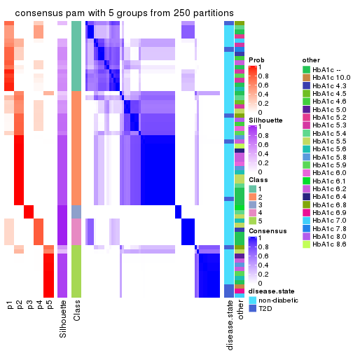
consensus_heatmap(res, k = 6)
Heatmaps for the membership of samples in all partitions to see how consistent they are:
membership_heatmap(res, k = 2)
membership_heatmap(res, k = 3)
membership_heatmap(res, k = 4)
membership_heatmap(res, k = 5)
membership_heatmap(res, k = 6)
As soon as we have had the classes for columns, we can look for signatures which are significantly different between classes which can be candidate marks for certain classes. Following are the heatmaps for signatures.
Signature heatmaps where rows are scaled:
get_signatures(res, k = 2)
get_signatures(res, k = 3)
get_signatures(res, k = 4)
get_signatures(res, k = 5)
get_signatures(res, k = 6)
Signature heatmaps where rows are not scaled:
get_signatures(res, k = 2, scale_rows = FALSE)

get_signatures(res, k = 3, scale_rows = FALSE)
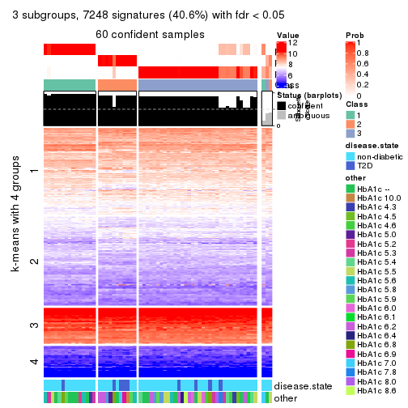
get_signatures(res, k = 4, scale_rows = FALSE)
get_signatures(res, k = 5, scale_rows = FALSE)

get_signatures(res, k = 6, scale_rows = FALSE)
Compare the overlap of signatures from different k:
compare_signatures(res)
get_signature() returns a data frame invisibly. TO get the list of signatures, the function
call should be assigned to a variable explicitly. In following code, if plot argument is set
to FALSE, no heatmap is plotted while only the differential analysis is performed.
# code only for demonstration
tb = get_signature(res, k = ..., plot = FALSE)
An example of the output of tb is:
#> which_row fdr mean_1 mean_2 scaled_mean_1 scaled_mean_2 km
#> 1 38 0.042760348 8.373488 9.131774 -0.5533452 0.5164555 1
#> 2 40 0.018707592 7.106213 8.469186 -0.6173731 0.5762149 1
#> 3 55 0.019134737 10.221463 11.207825 -0.6159697 0.5749050 1
#> 4 59 0.006059896 5.921854 7.869574 -0.6899429 0.6439467 1
#> 5 60 0.018055526 8.928898 10.211722 -0.6204761 0.5791110 1
#> 6 98 0.009384629 15.714769 14.887706 0.6635654 -0.6193277 2
...
The columns in tb are:
which_row: row indices corresponding to the input matrix.fdr: FDR for the differential test. mean_x: The mean value in group x.scaled_mean_x: The mean value in group x after rows are scaled.km: Row groups if k-means clustering is applied to rows.UMAP plot which shows how samples are separated.
dimension_reduction(res, k = 2, method = "UMAP")
dimension_reduction(res, k = 3, method = "UMAP")
dimension_reduction(res, k = 4, method = "UMAP")
dimension_reduction(res, k = 5, method = "UMAP")
dimension_reduction(res, k = 6, method = "UMAP")
Following heatmap shows how subgroups are split when increasing k:
collect_classes(res)
Test correlation between subgroups and known annotations. If the known annotation is numeric, one-way ANOVA test is applied, and if the known annotation is discrete, chi-squared contingency table test is applied.
test_to_known_factors(res)
#> n disease.state(p) other(p) k
#> ATC:pam 62 0.5685 0.787 2
#> ATC:pam 60 0.0807 0.518 3
#> ATC:pam 52 0.3302 0.362 4
#> ATC:pam 53 0.2210 0.555 5
#> ATC:pam 54 0.5011 0.353 6
If matrix rows can be associated to genes, consider to use GO_Enrichment(res,
...) to perform function enrichment for the signature genes.
The object with results only for a single top-value method and a single partition method can be extracted as:
res = res_list["ATC", "mclust"]
# you can also extract it by
# res = res_list["ATC:mclust"]
A summary of res and all the functions that can be applied to it:
res
#> A 'ConsensusPartition' object with k = 2, 3, 4, 5, 6.
#> On a matrix with 17867 rows and 63 columns.
#> Top rows (1000, 2000, 3000, 4000, 5000) are extracted by 'ATC' method.
#> Subgroups are detected by 'mclust' method.
#> Performed in total 1250 partitions by row resampling.
#> Best k for subgroups seems to be 3.
#>
#> Following methods can be applied to this 'ConsensusPartition' object:
#> [1] "cola_report" "collect_classes" "collect_plots"
#> [4] "collect_stats" "colnames" "compare_signatures"
#> [7] "consensus_heatmap" "dimension_reduction" "functional_enrichment"
#> [10] "get_anno_col" "get_anno" "get_classes"
#> [13] "get_consensus" "get_matrix" "get_membership"
#> [16] "get_param" "get_signatures" "get_stats"
#> [19] "is_best_k" "is_stable_k" "membership_heatmap"
#> [22] "ncol" "nrow" "plot_ecdf"
#> [25] "rownames" "select_partition_number" "show"
#> [28] "suggest_best_k" "test_to_known_factors"
collect_plots() function collects all the plots made from res for all k (number of partitions)
into one single page to provide an easy and fast comparison between different k.
collect_plots(res)
The plots are:
k and the heatmap of
predicted classes for each k.k.k.k.All the plots in panels can be made by individual functions and they are plotted later in this section.
select_partition_number() produces several plots showing different
statistics for choosing “optimized” k. There are following statistics:
k;k, the area increased is defined as \(A_k - A_{k-1}\).The detailed explanations of these statistics can be found in the cola vignette.
Generally speaking, lower PAC score, higher mean silhouette score or higher
concordance corresponds to better partition. Rand index and Jaccard index
measure how similar the current partition is compared to partition with k-1.
If they are too similar, we won't accept k is better than k-1.
select_partition_number(res)
The numeric values for all these statistics can be obtained by get_stats().
get_stats(res)
#> k 1-PAC mean_silhouette concordance area_increased Rand Jaccard
#> 2 2 0.340 0.607 0.793 0.3243 0.825 0.825
#> 3 3 0.691 0.867 0.919 0.7787 0.557 0.466
#> 4 4 0.465 0.657 0.806 0.1493 0.817 0.592
#> 5 5 0.494 0.451 0.708 0.0650 0.925 0.783
#> 6 6 0.672 0.657 0.803 0.0878 0.874 0.631
suggest_best_k() suggests the best \(k\) based on these statistics. The rules are as follows:
NA.suggest_best_k(res)
#> [1] 3
Following shows the table of the partitions (You need to click the show/hide
code output link to see it). The membership matrix (columns with name p*)
is inferred by
clue::cl_consensus()
function with the SE method. Basically the value in the membership matrix
represents the probability to belong to a certain group. The finall class
label for an item is determined with the group with highest probability it
belongs to.
In get_classes() function, the entropy is calculated from the membership
matrix and the silhouette score is calculated from the consensus matrix.
cbind(get_classes(res, k = 2), get_membership(res, k = 2))
#> class entropy silhouette p1 p2
#> GSM946745 2 0.3879 0.6613 0.076 0.924
#> GSM946739 2 0.0376 0.6572 0.004 0.996
#> GSM946738 2 0.9996 -0.2100 0.488 0.512
#> GSM946746 2 0.0376 0.6571 0.004 0.996
#> GSM946747 2 0.9460 0.6036 0.364 0.636
#> GSM946711 2 0.0376 0.6572 0.004 0.996
#> GSM946760 2 0.1184 0.6541 0.016 0.984
#> GSM946710 2 0.9460 0.6036 0.364 0.636
#> GSM946761 2 0.0376 0.6571 0.004 0.996
#> GSM946701 2 0.9661 0.5821 0.392 0.608
#> GSM946703 2 0.9460 0.6036 0.364 0.636
#> GSM946704 2 0.0938 0.6555 0.012 0.988
#> GSM946706 1 0.6973 0.7786 0.812 0.188
#> GSM946708 2 0.0376 0.6572 0.004 0.996
#> GSM946709 2 0.1414 0.6587 0.020 0.980
#> GSM946712 2 0.0376 0.6572 0.004 0.996
#> GSM946720 2 0.9460 0.6036 0.364 0.636
#> GSM946722 2 0.9358 0.6092 0.352 0.648
#> GSM946753 2 0.9580 0.5953 0.380 0.620
#> GSM946762 2 0.9552 0.5988 0.376 0.624
#> GSM946707 2 0.9460 0.6036 0.364 0.636
#> GSM946721 2 0.9552 0.5988 0.376 0.624
#> GSM946719 2 0.9552 0.5988 0.376 0.624
#> GSM946716 2 0.9460 0.6032 0.364 0.636
#> GSM946751 2 0.8661 0.3954 0.288 0.712
#> GSM946740 2 0.5519 0.5547 0.128 0.872
#> GSM946741 2 0.9661 0.5821 0.392 0.608
#> GSM946718 2 0.9522 0.5949 0.372 0.628
#> GSM946737 2 0.9460 0.6036 0.364 0.636
#> GSM946742 1 0.6623 0.7879 0.828 0.172
#> GSM946749 2 0.9460 0.6036 0.364 0.636
#> GSM946702 2 0.3584 0.6618 0.068 0.932
#> GSM946713 2 0.9460 0.6036 0.364 0.636
#> GSM946723 2 0.9460 0.6036 0.364 0.636
#> GSM946736 1 0.2043 0.8393 0.968 0.032
#> GSM946705 1 0.2043 0.8393 0.968 0.032
#> GSM946715 2 0.9552 0.5988 0.376 0.624
#> GSM946726 2 0.4939 0.5782 0.108 0.892
#> GSM946727 2 0.4939 0.6586 0.108 0.892
#> GSM946748 2 0.9491 0.5996 0.368 0.632
#> GSM946756 2 0.9522 0.6010 0.372 0.628
#> GSM946724 2 0.0376 0.6572 0.004 0.996
#> GSM946733 2 0.9460 0.6036 0.364 0.636
#> GSM946734 2 0.0376 0.6572 0.004 0.996
#> GSM946754 2 0.9460 0.6032 0.364 0.636
#> GSM946700 2 0.1414 0.6526 0.020 0.980
#> GSM946714 2 0.5519 0.5547 0.128 0.872
#> GSM946729 2 0.1184 0.6541 0.016 0.984
#> GSM946731 2 0.9552 0.5988 0.376 0.624
#> GSM946743 2 0.9635 0.5869 0.388 0.612
#> GSM946744 2 0.0938 0.6555 0.012 0.988
#> GSM946730 2 0.7056 0.5695 0.192 0.808
#> GSM946755 2 0.9460 0.6036 0.364 0.636
#> GSM946717 1 0.2043 0.8393 0.968 0.032
#> GSM946725 2 0.5408 0.5628 0.124 0.876
#> GSM946728 2 0.1633 0.6499 0.024 0.976
#> GSM946752 1 0.7139 0.7567 0.804 0.196
#> GSM946757 2 0.0938 0.6555 0.012 0.988
#> GSM946758 2 0.5178 0.5588 0.116 0.884
#> GSM946759 2 0.3879 0.6613 0.076 0.924
#> GSM946732 2 0.9460 0.6036 0.364 0.636
#> GSM946750 2 0.9393 -0.0369 0.356 0.644
#> GSM946735 2 0.5178 0.5588 0.116 0.884
cbind(get_classes(res, k = 3), get_membership(res, k = 3))
#> class entropy silhouette p1 p2 p3
#> GSM946745 2 0.1643 0.928 0.044 0.956 0.000
#> GSM946739 2 0.0475 0.942 0.004 0.992 0.004
#> GSM946738 3 0.5921 0.841 0.032 0.212 0.756
#> GSM946746 2 0.0592 0.944 0.012 0.988 0.000
#> GSM946747 1 0.0747 0.866 0.984 0.016 0.000
#> GSM946711 2 0.0829 0.944 0.012 0.984 0.004
#> GSM946760 2 0.1163 0.940 0.028 0.972 0.000
#> GSM946710 1 0.1643 0.890 0.956 0.044 0.000
#> GSM946761 2 0.0829 0.944 0.012 0.984 0.004
#> GSM946701 1 0.1753 0.890 0.952 0.048 0.000
#> GSM946703 1 0.0892 0.868 0.980 0.020 0.000
#> GSM946704 2 0.0829 0.944 0.012 0.984 0.004
#> GSM946706 3 0.6106 0.850 0.044 0.200 0.756
#> GSM946708 2 0.0475 0.942 0.004 0.992 0.004
#> GSM946709 2 0.0892 0.940 0.020 0.980 0.000
#> GSM946712 2 0.0237 0.943 0.004 0.996 0.000
#> GSM946720 1 0.0892 0.868 0.980 0.020 0.000
#> GSM946722 2 0.1163 0.935 0.028 0.972 0.000
#> GSM946753 1 0.1643 0.890 0.956 0.044 0.000
#> GSM946762 1 0.1964 0.889 0.944 0.056 0.000
#> GSM946707 1 0.4164 0.832 0.848 0.144 0.008
#> GSM946721 1 0.1643 0.890 0.956 0.044 0.000
#> GSM946719 2 0.6255 0.664 0.048 0.748 0.204
#> GSM946716 1 0.4733 0.776 0.800 0.196 0.004
#> GSM946751 2 0.6264 0.608 0.032 0.724 0.244
#> GSM946740 2 0.0983 0.942 0.016 0.980 0.004
#> GSM946741 1 0.2066 0.887 0.940 0.060 0.000
#> GSM946718 1 0.4702 0.780 0.788 0.212 0.000
#> GSM946737 1 0.1643 0.891 0.956 0.044 0.000
#> GSM946742 3 0.5940 0.849 0.036 0.204 0.760
#> GSM946749 1 0.1753 0.891 0.952 0.048 0.000
#> GSM946702 2 0.0424 0.943 0.008 0.992 0.000
#> GSM946713 1 0.3879 0.829 0.848 0.152 0.000
#> GSM946723 1 0.0892 0.869 0.980 0.020 0.000
#> GSM946736 3 0.0237 0.782 0.000 0.004 0.996
#> GSM946705 3 0.0237 0.782 0.000 0.004 0.996
#> GSM946715 1 0.1643 0.889 0.956 0.044 0.000
#> GSM946726 2 0.1525 0.936 0.032 0.964 0.004
#> GSM946727 2 0.1289 0.935 0.032 0.968 0.000
#> GSM946748 1 0.5115 0.762 0.768 0.228 0.004
#> GSM946756 2 0.6255 0.664 0.048 0.748 0.204
#> GSM946724 2 0.0829 0.944 0.012 0.984 0.004
#> GSM946733 1 0.0892 0.868 0.980 0.020 0.000
#> GSM946734 2 0.0424 0.943 0.008 0.992 0.000
#> GSM946754 1 0.1753 0.891 0.952 0.048 0.000
#> GSM946700 2 0.0424 0.945 0.008 0.992 0.000
#> GSM946714 2 0.0475 0.942 0.004 0.992 0.004
#> GSM946729 2 0.0747 0.944 0.016 0.984 0.000
#> GSM946731 1 0.8729 0.450 0.592 0.204 0.204
#> GSM946743 1 0.4555 0.778 0.800 0.200 0.000
#> GSM946744 2 0.0829 0.944 0.012 0.984 0.004
#> GSM946730 2 0.5826 0.683 0.032 0.764 0.204
#> GSM946755 1 0.5726 0.745 0.760 0.216 0.024
#> GSM946717 3 0.0237 0.782 0.000 0.004 0.996
#> GSM946725 2 0.0661 0.940 0.004 0.988 0.008
#> GSM946728 2 0.0475 0.942 0.004 0.992 0.004
#> GSM946752 3 0.6049 0.849 0.040 0.204 0.756
#> GSM946757 2 0.0424 0.943 0.008 0.992 0.000
#> GSM946758 2 0.0237 0.943 0.004 0.996 0.000
#> GSM946759 2 0.1525 0.932 0.032 0.964 0.004
#> GSM946732 1 0.0747 0.866 0.984 0.016 0.000
#> GSM946750 3 0.6034 0.841 0.036 0.212 0.752
#> GSM946735 2 0.0661 0.940 0.004 0.988 0.008
cbind(get_classes(res, k = 4), get_membership(res, k = 4))
#> class entropy silhouette p1 p2 p3 p4
#> GSM946745 2 0.3439 0.6375 0.048 0.868 0.084 0.000
#> GSM946739 2 0.1637 0.7206 0.000 0.940 0.000 0.060
#> GSM946738 2 0.6027 -0.3572 0.032 0.492 0.472 0.004
#> GSM946746 2 0.1042 0.7123 0.008 0.972 0.020 0.000
#> GSM946747 1 0.3208 0.7987 0.848 0.004 0.000 0.148
#> GSM946711 4 0.5548 0.9805 0.000 0.388 0.024 0.588
#> GSM946760 2 0.8418 0.0028 0.148 0.548 0.100 0.204
#> GSM946710 1 0.2814 0.7983 0.868 0.132 0.000 0.000
#> GSM946761 4 0.5721 0.9872 0.004 0.388 0.024 0.584
#> GSM946701 1 0.2896 0.8168 0.904 0.032 0.056 0.008
#> GSM946703 1 0.3257 0.7973 0.844 0.004 0.000 0.152
#> GSM946704 2 0.3494 0.4686 0.004 0.824 0.000 0.172
#> GSM946706 3 0.5670 0.6209 0.152 0.128 0.720 0.000
#> GSM946708 2 0.2831 0.6836 0.004 0.876 0.000 0.120
#> GSM946709 2 0.1042 0.7276 0.008 0.972 0.000 0.020
#> GSM946712 2 0.2530 0.6994 0.004 0.896 0.000 0.100
#> GSM946720 1 0.3529 0.8024 0.836 0.012 0.000 0.152
#> GSM946722 2 0.0779 0.7269 0.004 0.980 0.000 0.016
#> GSM946753 1 0.1022 0.8415 0.968 0.032 0.000 0.000
#> GSM946762 1 0.2142 0.8283 0.928 0.056 0.016 0.000
#> GSM946707 1 0.4513 0.7176 0.804 0.120 0.076 0.000
#> GSM946721 1 0.1022 0.8415 0.968 0.032 0.000 0.000
#> GSM946719 3 0.7282 0.5697 0.164 0.336 0.500 0.000
#> GSM946716 1 0.5222 0.6463 0.756 0.132 0.112 0.000
#> GSM946751 3 0.6079 0.3268 0.044 0.464 0.492 0.000
#> GSM946740 2 0.2965 0.6619 0.072 0.892 0.036 0.000
#> GSM946741 1 0.3876 0.7806 0.856 0.068 0.068 0.008
#> GSM946718 1 0.6192 0.5041 0.652 0.244 0.000 0.104
#> GSM946737 1 0.1118 0.8424 0.964 0.036 0.000 0.000
#> GSM946742 3 0.5674 0.6219 0.148 0.132 0.720 0.000
#> GSM946749 1 0.2843 0.8304 0.892 0.088 0.020 0.000
#> GSM946702 2 0.3032 0.6776 0.008 0.868 0.000 0.124
#> GSM946713 1 0.4008 0.7862 0.820 0.148 0.032 0.000
#> GSM946723 1 0.3257 0.7973 0.844 0.004 0.000 0.152
#> GSM946736 3 0.2868 0.4438 0.000 0.000 0.864 0.136
#> GSM946705 3 0.2868 0.4438 0.000 0.000 0.864 0.136
#> GSM946715 1 0.1936 0.8396 0.940 0.028 0.000 0.032
#> GSM946726 2 0.4906 0.4969 0.140 0.776 0.084 0.000
#> GSM946727 2 0.1406 0.7232 0.000 0.960 0.024 0.016
#> GSM946748 2 0.3032 0.6776 0.008 0.868 0.000 0.124
#> GSM946756 3 0.7169 0.5736 0.152 0.332 0.516 0.000
#> GSM946724 4 0.5487 0.9802 0.000 0.400 0.020 0.580
#> GSM946733 1 0.3257 0.7973 0.844 0.004 0.000 0.152
#> GSM946734 2 0.2976 0.6798 0.008 0.872 0.000 0.120
#> GSM946754 1 0.1488 0.8385 0.956 0.032 0.012 0.000
#> GSM946700 2 0.2048 0.6939 0.064 0.928 0.008 0.000
#> GSM946714 2 0.3881 0.5139 0.016 0.812 0.000 0.172
#> GSM946729 2 0.2882 0.6670 0.084 0.892 0.024 0.000
#> GSM946731 3 0.7363 0.5392 0.168 0.356 0.476 0.000
#> GSM946743 1 0.4444 0.7322 0.816 0.112 0.068 0.004
#> GSM946744 4 0.5721 0.9872 0.004 0.388 0.024 0.584
#> GSM946730 2 0.5977 -0.2713 0.040 0.528 0.432 0.000
#> GSM946755 2 0.2877 0.6851 0.028 0.904 0.060 0.008
#> GSM946717 3 0.2868 0.4438 0.000 0.000 0.864 0.136
#> GSM946725 2 0.3143 0.6976 0.000 0.876 0.024 0.100
#> GSM946728 2 0.0895 0.7273 0.004 0.976 0.000 0.020
#> GSM946752 3 0.5670 0.6209 0.152 0.128 0.720 0.000
#> GSM946757 2 0.0937 0.7270 0.012 0.976 0.000 0.012
#> GSM946758 2 0.4539 0.4348 0.008 0.720 0.000 0.272
#> GSM946759 2 0.2224 0.6935 0.040 0.928 0.032 0.000
#> GSM946732 1 0.3300 0.7995 0.848 0.008 0.000 0.144
#> GSM946750 3 0.6975 0.5991 0.148 0.292 0.560 0.000
#> GSM946735 2 0.2976 0.6798 0.008 0.872 0.000 0.120
cbind(get_classes(res, k = 5), get_membership(res, k = 5))
#> class entropy silhouette p1 p2 p3 p4 p5
#> GSM946745 2 0.3883 0.5946 0.004 0.764 0.000 0.016 0.216
#> GSM946739 2 0.0880 0.7408 0.000 0.968 0.000 0.032 0.000
#> GSM946738 2 0.7170 -0.1947 0.000 0.396 0.380 0.028 0.196
#> GSM946746 2 0.2237 0.7381 0.004 0.916 0.000 0.040 0.040
#> GSM946747 1 0.0955 0.3593 0.968 0.004 0.000 0.000 0.028
#> GSM946711 4 0.3612 0.9175 0.000 0.268 0.000 0.732 0.000
#> GSM946760 2 0.6067 0.2018 0.000 0.560 0.000 0.276 0.164
#> GSM946710 1 0.5388 0.3117 0.580 0.056 0.000 0.004 0.360
#> GSM946761 4 0.3607 0.9310 0.000 0.244 0.000 0.752 0.004
#> GSM946701 1 0.4242 0.3548 0.572 0.000 0.000 0.000 0.428
#> GSM946703 1 0.4264 0.2205 0.620 0.004 0.000 0.000 0.376
#> GSM946704 2 0.2536 0.6576 0.000 0.868 0.000 0.128 0.004
#> GSM946706 3 0.7415 0.6197 0.008 0.040 0.476 0.188 0.288
#> GSM946708 2 0.0794 0.7421 0.000 0.972 0.000 0.028 0.000
#> GSM946709 2 0.0898 0.7481 0.000 0.972 0.000 0.020 0.008
#> GSM946712 2 0.0510 0.7468 0.000 0.984 0.000 0.016 0.000
#> GSM946720 1 0.4288 0.2174 0.612 0.004 0.000 0.000 0.384
#> GSM946722 2 0.0451 0.7502 0.004 0.988 0.000 0.000 0.008
#> GSM946753 1 0.4305 0.3092 0.512 0.000 0.000 0.000 0.488
#> GSM946762 1 0.4538 0.3471 0.564 0.004 0.000 0.004 0.428
#> GSM946707 1 0.5156 0.1924 0.504 0.024 0.000 0.008 0.464
#> GSM946721 5 0.3949 -0.3418 0.332 0.000 0.000 0.000 0.668
#> GSM946719 5 0.7655 0.1694 0.076 0.268 0.204 0.000 0.452
#> GSM946716 5 0.5267 -0.1812 0.428 0.032 0.000 0.008 0.532
#> GSM946751 2 0.7265 -0.1349 0.000 0.396 0.328 0.024 0.252
#> GSM946740 2 0.2592 0.7296 0.000 0.892 0.000 0.056 0.052
#> GSM946741 1 0.4242 0.3548 0.572 0.000 0.000 0.000 0.428
#> GSM946718 1 0.6773 0.0400 0.544 0.268 0.000 0.036 0.152
#> GSM946737 1 0.4604 0.3633 0.584 0.004 0.000 0.008 0.404
#> GSM946742 3 0.7337 0.6188 0.000 0.052 0.472 0.188 0.288
#> GSM946749 1 0.6380 0.1682 0.524 0.176 0.000 0.004 0.296
#> GSM946702 2 0.1116 0.7428 0.004 0.964 0.000 0.028 0.004
#> GSM946713 1 0.6362 0.1086 0.552 0.176 0.000 0.008 0.264
#> GSM946723 1 0.1638 0.3374 0.932 0.004 0.000 0.000 0.064
#> GSM946736 3 0.0000 0.6175 0.000 0.000 1.000 0.000 0.000
#> GSM946705 3 0.0000 0.6175 0.000 0.000 1.000 0.000 0.000
#> GSM946715 1 0.4430 0.2564 0.540 0.004 0.000 0.000 0.456
#> GSM946726 2 0.3629 0.6989 0.004 0.832 0.000 0.072 0.092
#> GSM946727 2 0.2193 0.7065 0.000 0.900 0.000 0.008 0.092
#> GSM946748 2 0.3693 0.6050 0.156 0.808 0.000 0.032 0.004
#> GSM946756 5 0.8211 0.0700 0.060 0.308 0.220 0.024 0.388
#> GSM946724 4 0.4015 0.8182 0.000 0.348 0.000 0.652 0.000
#> GSM946733 1 0.4288 0.2174 0.612 0.004 0.000 0.000 0.384
#> GSM946734 2 0.1041 0.7415 0.000 0.964 0.000 0.032 0.004
#> GSM946754 1 0.4331 0.3683 0.596 0.000 0.000 0.004 0.400
#> GSM946700 2 0.2149 0.7378 0.000 0.916 0.000 0.048 0.036
#> GSM946714 2 0.2674 0.6610 0.000 0.856 0.000 0.140 0.004
#> GSM946729 2 0.4335 0.6112 0.000 0.760 0.000 0.072 0.168
#> GSM946731 5 0.5985 0.0644 0.368 0.084 0.000 0.012 0.536
#> GSM946743 1 0.4781 0.3129 0.552 0.020 0.000 0.000 0.428
#> GSM946744 4 0.3607 0.9310 0.000 0.244 0.000 0.752 0.004
#> GSM946730 2 0.7244 -0.0665 0.000 0.416 0.300 0.024 0.260
#> GSM946755 1 0.7405 -0.2811 0.364 0.296 0.000 0.028 0.312
#> GSM946717 3 0.0000 0.6175 0.000 0.000 1.000 0.000 0.000
#> GSM946725 2 0.3043 0.7100 0.000 0.864 0.000 0.056 0.080
#> GSM946728 2 0.1124 0.7449 0.000 0.960 0.000 0.036 0.004
#> GSM946752 3 0.7278 0.6171 0.012 0.024 0.476 0.188 0.300
#> GSM946757 2 0.1282 0.7428 0.000 0.952 0.000 0.044 0.004
#> GSM946758 2 0.2280 0.6664 0.000 0.880 0.000 0.120 0.000
#> GSM946759 2 0.3940 0.5676 0.000 0.756 0.000 0.024 0.220
#> GSM946732 1 0.0162 0.3568 0.996 0.004 0.000 0.000 0.000
#> GSM946750 3 0.8198 0.4810 0.000 0.144 0.380 0.188 0.288
#> GSM946735 2 0.0880 0.7408 0.000 0.968 0.000 0.032 0.000
cbind(get_classes(res, k = 6), get_membership(res, k = 6))
#> class entropy silhouette p1 p2 p3 p4 p5 p6
#> GSM946745 2 0.5787 0.5137 0.036 0.552 0.344 0.056 0.004 0.008
#> GSM946739 2 0.0922 0.7318 0.000 0.968 0.024 0.004 0.000 0.004
#> GSM946738 3 0.3207 0.6806 0.000 0.124 0.828 0.044 0.004 0.000
#> GSM946746 2 0.4500 0.6687 0.000 0.768 0.028 0.120 0.016 0.068
#> GSM946747 1 0.3390 0.5849 0.704 0.000 0.000 0.000 0.296 0.000
#> GSM946711 4 0.1387 0.7486 0.000 0.068 0.000 0.932 0.000 0.000
#> GSM946760 2 0.6633 0.0418 0.004 0.440 0.120 0.368 0.000 0.068
#> GSM946710 1 0.0862 0.7986 0.972 0.016 0.004 0.000 0.008 0.000
#> GSM946761 4 0.0865 0.7656 0.000 0.036 0.000 0.964 0.000 0.000
#> GSM946701 1 0.1686 0.7927 0.924 0.000 0.064 0.000 0.012 0.000
#> GSM946703 5 0.2969 0.6642 0.224 0.000 0.000 0.000 0.776 0.000
#> GSM946704 2 0.4934 0.5466 0.000 0.672 0.012 0.240 0.008 0.068
#> GSM946706 3 0.4315 0.4267 0.012 0.004 0.680 0.000 0.020 0.284
#> GSM946708 2 0.0865 0.7258 0.000 0.964 0.000 0.000 0.000 0.036
#> GSM946709 2 0.3173 0.7275 0.008 0.856 0.092 0.028 0.008 0.008
#> GSM946712 2 0.2359 0.7328 0.000 0.904 0.056 0.020 0.012 0.008
#> GSM946720 5 0.1141 0.8372 0.052 0.000 0.000 0.000 0.948 0.000
#> GSM946722 2 0.3456 0.6978 0.068 0.828 0.092 0.000 0.004 0.008
#> GSM946753 1 0.3259 0.6604 0.772 0.000 0.012 0.000 0.216 0.000
#> GSM946762 1 0.0713 0.7975 0.972 0.000 0.028 0.000 0.000 0.000
#> GSM946707 1 0.1007 0.7918 0.956 0.000 0.044 0.000 0.000 0.000
#> GSM946721 1 0.3992 0.3870 0.624 0.000 0.012 0.000 0.364 0.000
#> GSM946719 3 0.2632 0.6618 0.164 0.004 0.832 0.000 0.000 0.000
#> GSM946716 1 0.1141 0.7879 0.948 0.000 0.052 0.000 0.000 0.000
#> GSM946751 3 0.3221 0.6960 0.008 0.092 0.844 0.052 0.004 0.000
#> GSM946740 2 0.4358 0.6582 0.000 0.788 0.076 0.056 0.012 0.068
#> GSM946741 1 0.1686 0.7927 0.924 0.000 0.064 0.000 0.012 0.000
#> GSM946718 1 0.3085 0.6914 0.828 0.148 0.004 0.012 0.008 0.000
#> GSM946737 1 0.0146 0.7972 0.996 0.000 0.004 0.000 0.000 0.000
#> GSM946742 3 0.2933 0.6297 0.012 0.000 0.848 0.000 0.020 0.120
#> GSM946749 1 0.3867 0.6642 0.748 0.052 0.000 0.000 0.200 0.000
#> GSM946702 2 0.2561 0.7212 0.000 0.880 0.092 0.004 0.016 0.008
#> GSM946713 1 0.1421 0.7859 0.944 0.028 0.028 0.000 0.000 0.000
#> GSM946723 1 0.3428 0.5723 0.696 0.000 0.000 0.000 0.304 0.000
#> GSM946736 6 0.1501 1.0000 0.000 0.000 0.076 0.000 0.000 0.924
#> GSM946705 6 0.1501 1.0000 0.000 0.000 0.076 0.000 0.000 0.924
#> GSM946715 1 0.4184 0.0920 0.504 0.000 0.012 0.000 0.484 0.000
#> GSM946726 2 0.5053 0.6425 0.000 0.732 0.076 0.112 0.012 0.068
#> GSM946727 2 0.5056 0.5697 0.020 0.656 0.268 0.044 0.004 0.008
#> GSM946748 2 0.5346 0.6047 0.112 0.712 0.084 0.004 0.080 0.008
#> GSM946756 3 0.2972 0.7078 0.052 0.032 0.868 0.048 0.000 0.000
#> GSM946724 4 0.3717 0.2231 0.000 0.384 0.000 0.616 0.000 0.000
#> GSM946733 5 0.1007 0.8345 0.044 0.000 0.000 0.000 0.956 0.000
#> GSM946734 2 0.2256 0.7201 0.000 0.892 0.092 0.004 0.004 0.008
#> GSM946754 1 0.0405 0.7989 0.988 0.000 0.004 0.000 0.008 0.000
#> GSM946700 2 0.3604 0.6921 0.000 0.836 0.020 0.060 0.016 0.068
#> GSM946714 2 0.2942 0.6952 0.000 0.860 0.000 0.064 0.008 0.068
#> GSM946729 2 0.5932 0.6161 0.012 0.664 0.136 0.112 0.008 0.068
#> GSM946731 3 0.3330 0.5408 0.284 0.000 0.716 0.000 0.000 0.000
#> GSM946743 1 0.1643 0.7919 0.924 0.000 0.068 0.000 0.008 0.000
#> GSM946744 4 0.0865 0.7656 0.000 0.036 0.000 0.964 0.000 0.000
#> GSM946730 3 0.3599 0.6778 0.012 0.128 0.812 0.044 0.004 0.000
#> GSM946755 2 0.7069 0.0956 0.352 0.372 0.220 0.044 0.004 0.008
#> GSM946717 6 0.1501 1.0000 0.000 0.000 0.076 0.000 0.000 0.924
#> GSM946725 2 0.4502 0.6428 0.004 0.728 0.192 0.064 0.004 0.008
#> GSM946728 2 0.2771 0.6985 0.000 0.868 0.000 0.060 0.004 0.068
#> GSM946752 3 0.3997 0.4103 0.004 0.000 0.688 0.000 0.020 0.288
#> GSM946757 2 0.3957 0.7340 0.000 0.816 0.076 0.056 0.016 0.036
#> GSM946758 2 0.1531 0.7176 0.000 0.928 0.000 0.004 0.000 0.068
#> GSM946759 2 0.5641 0.3722 0.028 0.508 0.400 0.056 0.000 0.008
#> GSM946732 1 0.3371 0.5909 0.708 0.000 0.000 0.000 0.292 0.000
#> GSM946750 3 0.2438 0.6655 0.004 0.008 0.892 0.000 0.020 0.076
#> GSM946735 2 0.2438 0.7266 0.000 0.892 0.076 0.020 0.004 0.008
Heatmaps for the consensus matrix. It visualizes the probability of two samples to be in a same group.
consensus_heatmap(res, k = 2)
consensus_heatmap(res, k = 3)
consensus_heatmap(res, k = 4)

consensus_heatmap(res, k = 5)
consensus_heatmap(res, k = 6)
Heatmaps for the membership of samples in all partitions to see how consistent they are:
membership_heatmap(res, k = 2)
membership_heatmap(res, k = 3)
membership_heatmap(res, k = 4)
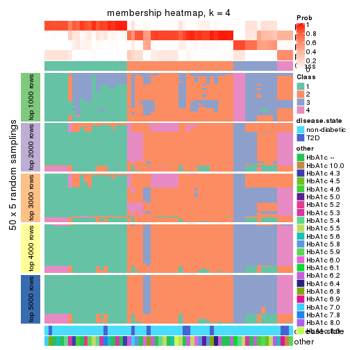
membership_heatmap(res, k = 5)
membership_heatmap(res, k = 6)
As soon as we have had the classes for columns, we can look for signatures which are significantly different between classes which can be candidate marks for certain classes. Following are the heatmaps for signatures.
Signature heatmaps where rows are scaled:
get_signatures(res, k = 2)
get_signatures(res, k = 3)
get_signatures(res, k = 4)
get_signatures(res, k = 5)
get_signatures(res, k = 6)
Signature heatmaps where rows are not scaled:
get_signatures(res, k = 2, scale_rows = FALSE)

get_signatures(res, k = 3, scale_rows = FALSE)
get_signatures(res, k = 4, scale_rows = FALSE)
get_signatures(res, k = 5, scale_rows = FALSE)
get_signatures(res, k = 6, scale_rows = FALSE)

Compare the overlap of signatures from different k:
compare_signatures(res)
get_signature() returns a data frame invisibly. TO get the list of signatures, the function
call should be assigned to a variable explicitly. In following code, if plot argument is set
to FALSE, no heatmap is plotted while only the differential analysis is performed.
# code only for demonstration
tb = get_signature(res, k = ..., plot = FALSE)
An example of the output of tb is:
#> which_row fdr mean_1 mean_2 scaled_mean_1 scaled_mean_2 km
#> 1 38 0.042760348 8.373488 9.131774 -0.5533452 0.5164555 1
#> 2 40 0.018707592 7.106213 8.469186 -0.6173731 0.5762149 1
#> 3 55 0.019134737 10.221463 11.207825 -0.6159697 0.5749050 1
#> 4 59 0.006059896 5.921854 7.869574 -0.6899429 0.6439467 1
#> 5 60 0.018055526 8.928898 10.211722 -0.6204761 0.5791110 1
#> 6 98 0.009384629 15.714769 14.887706 0.6635654 -0.6193277 2
...
The columns in tb are:
which_row: row indices corresponding to the input matrix.fdr: FDR for the differential test. mean_x: The mean value in group x.scaled_mean_x: The mean value in group x after rows are scaled.km: Row groups if k-means clustering is applied to rows.UMAP plot which shows how samples are separated.
dimension_reduction(res, k = 2, method = "UMAP")
dimension_reduction(res, k = 3, method = "UMAP")
dimension_reduction(res, k = 4, method = "UMAP")
dimension_reduction(res, k = 5, method = "UMAP")
dimension_reduction(res, k = 6, method = "UMAP")
Following heatmap shows how subgroups are split when increasing k:
collect_classes(res)
Test correlation between subgroups and known annotations. If the known annotation is numeric, one-way ANOVA test is applied, and if the known annotation is discrete, chi-squared contingency table test is applied.
test_to_known_factors(res)
#> n disease.state(p) other(p) k
#> ATC:mclust 60 0.704 0.8411 2
#> ATC:mclust 62 0.538 0.5737 3
#> ATC:mclust 53 0.109 0.1135 4
#> ATC:mclust 33 0.085 0.0564 5
#> ATC:mclust 55 0.175 0.0397 6
If matrix rows can be associated to genes, consider to use GO_Enrichment(res,
...) to perform function enrichment for the signature genes.
The object with results only for a single top-value method and a single partition method can be extracted as:
res = res_list["ATC", "NMF"]
# you can also extract it by
# res = res_list["ATC:NMF"]
A summary of res and all the functions that can be applied to it:
res
#> A 'ConsensusPartition' object with k = 2, 3, 4, 5, 6.
#> On a matrix with 17867 rows and 63 columns.
#> Top rows (1000, 2000, 3000, 4000, 5000) are extracted by 'ATC' method.
#> Subgroups are detected by 'NMF' method.
#> Performed in total 1250 partitions by row resampling.
#> Best k for subgroups seems to be 2.
#>
#> Following methods can be applied to this 'ConsensusPartition' object:
#> [1] "cola_report" "collect_classes" "collect_plots"
#> [4] "collect_stats" "colnames" "compare_signatures"
#> [7] "consensus_heatmap" "dimension_reduction" "functional_enrichment"
#> [10] "get_anno_col" "get_anno" "get_classes"
#> [13] "get_consensus" "get_matrix" "get_membership"
#> [16] "get_param" "get_signatures" "get_stats"
#> [19] "is_best_k" "is_stable_k" "membership_heatmap"
#> [22] "ncol" "nrow" "plot_ecdf"
#> [25] "rownames" "select_partition_number" "show"
#> [28] "suggest_best_k" "test_to_known_factors"
collect_plots() function collects all the plots made from res for all k (number of partitions)
into one single page to provide an easy and fast comparison between different k.
collect_plots(res)
The plots are:
k and the heatmap of
predicted classes for each k.k.k.k.All the plots in panels can be made by individual functions and they are plotted later in this section.
select_partition_number() produces several plots showing different
statistics for choosing “optimized” k. There are following statistics:
k;k, the area increased is defined as \(A_k - A_{k-1}\).The detailed explanations of these statistics can be found in the cola vignette.
Generally speaking, lower PAC score, higher mean silhouette score or higher
concordance corresponds to better partition. Rand index and Jaccard index
measure how similar the current partition is compared to partition with k-1.
If they are too similar, we won't accept k is better than k-1.
select_partition_number(res)
The numeric values for all these statistics can be obtained by get_stats().
get_stats(res)
#> k 1-PAC mean_silhouette concordance area_increased Rand Jaccard
#> 2 2 0.812 0.904 0.957 0.4950 0.495 0.495
#> 3 3 0.788 0.882 0.938 0.3366 0.735 0.515
#> 4 4 0.566 0.544 0.787 0.1089 0.897 0.703
#> 5 5 0.604 0.634 0.810 0.0585 0.799 0.406
#> 6 6 0.624 0.543 0.754 0.0470 0.858 0.475
suggest_best_k() suggests the best \(k\) based on these statistics. The rules are as follows:
NA.suggest_best_k(res)
#> [1] 2
Following shows the table of the partitions (You need to click the show/hide
code output link to see it). The membership matrix (columns with name p*)
is inferred by
clue::cl_consensus()
function with the SE method. Basically the value in the membership matrix
represents the probability to belong to a certain group. The finall class
label for an item is determined with the group with highest probability it
belongs to.
In get_classes() function, the entropy is calculated from the membership
matrix and the silhouette score is calculated from the consensus matrix.
cbind(get_classes(res, k = 2), get_membership(res, k = 2))
#> class entropy silhouette p1 p2
#> GSM946745 2 0.939 0.521 0.356 0.644
#> GSM946739 2 0.000 0.927 0.000 1.000
#> GSM946738 2 0.541 0.849 0.124 0.876
#> GSM946746 2 0.000 0.927 0.000 1.000
#> GSM946747 1 0.000 0.972 1.000 0.000
#> GSM946711 2 0.000 0.927 0.000 1.000
#> GSM946760 2 0.000 0.927 0.000 1.000
#> GSM946710 1 0.000 0.972 1.000 0.000
#> GSM946761 2 0.000 0.927 0.000 1.000
#> GSM946701 1 0.000 0.972 1.000 0.000
#> GSM946703 1 0.000 0.972 1.000 0.000
#> GSM946704 2 0.000 0.927 0.000 1.000
#> GSM946706 1 0.000 0.972 1.000 0.000
#> GSM946708 2 0.000 0.927 0.000 1.000
#> GSM946709 2 0.971 0.415 0.400 0.600
#> GSM946712 2 0.000 0.927 0.000 1.000
#> GSM946720 1 0.000 0.972 1.000 0.000
#> GSM946722 1 0.242 0.936 0.960 0.040
#> GSM946753 1 0.000 0.972 1.000 0.000
#> GSM946762 1 0.000 0.972 1.000 0.000
#> GSM946707 1 0.000 0.972 1.000 0.000
#> GSM946721 1 0.000 0.972 1.000 0.000
#> GSM946719 1 0.402 0.895 0.920 0.080
#> GSM946716 1 0.000 0.972 1.000 0.000
#> GSM946751 2 0.689 0.794 0.184 0.816
#> GSM946740 2 0.000 0.927 0.000 1.000
#> GSM946741 1 0.000 0.972 1.000 0.000
#> GSM946718 1 0.000 0.972 1.000 0.000
#> GSM946737 1 0.000 0.972 1.000 0.000
#> GSM946742 2 0.850 0.671 0.276 0.724
#> GSM946749 1 0.000 0.972 1.000 0.000
#> GSM946702 1 0.795 0.654 0.760 0.240
#> GSM946713 1 0.000 0.972 1.000 0.000
#> GSM946723 1 0.000 0.972 1.000 0.000
#> GSM946736 1 0.000 0.972 1.000 0.000
#> GSM946705 1 0.000 0.972 1.000 0.000
#> GSM946715 1 0.000 0.972 1.000 0.000
#> GSM946726 2 0.000 0.927 0.000 1.000
#> GSM946727 1 0.963 0.290 0.612 0.388
#> GSM946748 1 0.000 0.972 1.000 0.000
#> GSM946756 1 0.358 0.908 0.932 0.068
#> GSM946724 2 0.000 0.927 0.000 1.000
#> GSM946733 1 0.000 0.972 1.000 0.000
#> GSM946734 2 0.563 0.843 0.132 0.868
#> GSM946754 1 0.000 0.972 1.000 0.000
#> GSM946700 2 0.000 0.927 0.000 1.000
#> GSM946714 2 0.000 0.927 0.000 1.000
#> GSM946729 2 0.000 0.927 0.000 1.000
#> GSM946731 1 0.000 0.972 1.000 0.000
#> GSM946743 1 0.000 0.972 1.000 0.000
#> GSM946744 2 0.000 0.927 0.000 1.000
#> GSM946730 2 0.689 0.794 0.184 0.816
#> GSM946755 1 0.000 0.972 1.000 0.000
#> GSM946717 1 0.000 0.972 1.000 0.000
#> GSM946725 2 0.000 0.927 0.000 1.000
#> GSM946728 2 0.000 0.927 0.000 1.000
#> GSM946752 1 0.000 0.972 1.000 0.000
#> GSM946757 2 0.224 0.908 0.036 0.964
#> GSM946758 2 0.000 0.927 0.000 1.000
#> GSM946759 2 0.781 0.736 0.232 0.768
#> GSM946732 1 0.000 0.972 1.000 0.000
#> GSM946750 2 0.000 0.927 0.000 1.000
#> GSM946735 2 0.000 0.927 0.000 1.000
cbind(get_classes(res, k = 3), get_membership(res, k = 3))
#> class entropy silhouette p1 p2 p3
#> GSM946745 2 0.4654 0.747 0.208 0.792 0.000
#> GSM946739 2 0.0000 0.937 0.000 1.000 0.000
#> GSM946738 3 0.0000 0.907 0.000 0.000 1.000
#> GSM946746 2 0.1031 0.936 0.000 0.976 0.024
#> GSM946747 1 0.0000 0.938 1.000 0.000 0.000
#> GSM946711 2 0.1753 0.924 0.000 0.952 0.048
#> GSM946760 2 0.2165 0.913 0.000 0.936 0.064
#> GSM946710 1 0.0000 0.938 1.000 0.000 0.000
#> GSM946761 2 0.1289 0.933 0.000 0.968 0.032
#> GSM946701 1 0.3816 0.802 0.852 0.000 0.148
#> GSM946703 1 0.0000 0.938 1.000 0.000 0.000
#> GSM946704 2 0.1031 0.936 0.000 0.976 0.024
#> GSM946706 3 0.1289 0.921 0.032 0.000 0.968
#> GSM946708 2 0.0000 0.937 0.000 1.000 0.000
#> GSM946709 1 0.5529 0.590 0.704 0.296 0.000
#> GSM946712 2 0.0000 0.937 0.000 1.000 0.000
#> GSM946720 1 0.0000 0.938 1.000 0.000 0.000
#> GSM946722 1 0.2878 0.864 0.904 0.096 0.000
#> GSM946753 1 0.0000 0.938 1.000 0.000 0.000
#> GSM946762 1 0.2261 0.890 0.932 0.000 0.068
#> GSM946707 3 0.4555 0.806 0.200 0.000 0.800
#> GSM946721 1 0.5058 0.646 0.756 0.000 0.244
#> GSM946719 3 0.4750 0.776 0.216 0.000 0.784
#> GSM946716 3 0.4178 0.837 0.172 0.000 0.828
#> GSM946751 3 0.0592 0.916 0.012 0.000 0.988
#> GSM946740 2 0.0000 0.937 0.000 1.000 0.000
#> GSM946741 1 0.0424 0.933 0.992 0.000 0.008
#> GSM946718 1 0.0000 0.938 1.000 0.000 0.000
#> GSM946737 1 0.0000 0.938 1.000 0.000 0.000
#> GSM946742 3 0.0892 0.919 0.020 0.000 0.980
#> GSM946749 3 0.5926 0.546 0.356 0.000 0.644
#> GSM946702 1 0.3551 0.828 0.868 0.132 0.000
#> GSM946713 1 0.0000 0.938 1.000 0.000 0.000
#> GSM946723 1 0.0000 0.938 1.000 0.000 0.000
#> GSM946736 3 0.1031 0.920 0.024 0.000 0.976
#> GSM946705 3 0.1031 0.920 0.024 0.000 0.976
#> GSM946715 1 0.0000 0.938 1.000 0.000 0.000
#> GSM946726 2 0.0592 0.937 0.000 0.988 0.012
#> GSM946727 2 0.5560 0.590 0.300 0.700 0.000
#> GSM946748 1 0.1964 0.899 0.944 0.056 0.000
#> GSM946756 3 0.1860 0.914 0.052 0.000 0.948
#> GSM946724 2 0.1289 0.933 0.000 0.968 0.032
#> GSM946733 1 0.0000 0.938 1.000 0.000 0.000
#> GSM946734 2 0.3267 0.848 0.116 0.884 0.000
#> GSM946754 1 0.0000 0.938 1.000 0.000 0.000
#> GSM946700 2 0.0000 0.937 0.000 1.000 0.000
#> GSM946714 2 0.0000 0.937 0.000 1.000 0.000
#> GSM946729 2 0.1031 0.936 0.000 0.976 0.024
#> GSM946731 3 0.3686 0.864 0.140 0.000 0.860
#> GSM946743 1 0.0000 0.938 1.000 0.000 0.000
#> GSM946744 2 0.1031 0.936 0.000 0.976 0.024
#> GSM946730 3 0.0747 0.918 0.016 0.000 0.984
#> GSM946755 1 0.3482 0.830 0.872 0.000 0.128
#> GSM946717 3 0.1411 0.920 0.036 0.000 0.964
#> GSM946725 2 0.1031 0.936 0.000 0.976 0.024
#> GSM946728 2 0.0000 0.937 0.000 1.000 0.000
#> GSM946752 3 0.1289 0.921 0.032 0.000 0.968
#> GSM946757 2 0.2878 0.867 0.096 0.904 0.000
#> GSM946758 2 0.0000 0.937 0.000 1.000 0.000
#> GSM946759 2 0.7348 0.427 0.044 0.608 0.348
#> GSM946732 1 0.0000 0.938 1.000 0.000 0.000
#> GSM946750 3 0.0000 0.907 0.000 0.000 1.000
#> GSM946735 2 0.0000 0.937 0.000 1.000 0.000
cbind(get_classes(res, k = 4), get_membership(res, k = 4))
#> class entropy silhouette p1 p2 p3 p4
#> GSM946745 4 0.5528 0.464 0.236 0.064 0.000 0.700
#> GSM946739 4 0.0707 0.752 0.000 0.020 0.000 0.980
#> GSM946738 3 0.5740 0.371 0.004 0.032 0.620 0.344
#> GSM946746 4 0.2149 0.742 0.000 0.088 0.000 0.912
#> GSM946747 1 0.0188 0.824 0.996 0.004 0.000 0.000
#> GSM946711 4 0.1938 0.751 0.000 0.052 0.012 0.936
#> GSM946760 2 0.5297 0.308 0.000 0.676 0.032 0.292
#> GSM946710 1 0.0000 0.824 1.000 0.000 0.000 0.000
#> GSM946761 4 0.2976 0.725 0.000 0.120 0.008 0.872
#> GSM946701 1 0.6391 0.419 0.604 0.092 0.304 0.000
#> GSM946703 1 0.0000 0.824 1.000 0.000 0.000 0.000
#> GSM946704 4 0.3569 0.636 0.000 0.196 0.000 0.804
#> GSM946706 3 0.1661 0.651 0.004 0.052 0.944 0.000
#> GSM946708 4 0.0817 0.748 0.000 0.024 0.000 0.976
#> GSM946709 1 0.7302 0.121 0.500 0.332 0.000 0.168
#> GSM946712 4 0.0188 0.749 0.000 0.004 0.000 0.996
#> GSM946720 1 0.0188 0.823 0.996 0.004 0.000 0.000
#> GSM946722 1 0.5537 0.533 0.688 0.256 0.000 0.056
#> GSM946753 1 0.0895 0.817 0.976 0.020 0.004 0.000
#> GSM946762 1 0.6367 0.262 0.540 0.068 0.392 0.000
#> GSM946707 3 0.6386 0.319 0.376 0.072 0.552 0.000
#> GSM946721 1 0.3893 0.655 0.796 0.008 0.196 0.000
#> GSM946719 3 0.7460 0.366 0.184 0.348 0.468 0.000
#> GSM946716 3 0.6466 0.418 0.320 0.092 0.588 0.000
#> GSM946751 3 0.5203 0.374 0.000 0.016 0.636 0.348
#> GSM946740 2 0.3873 0.547 0.000 0.772 0.000 0.228
#> GSM946741 1 0.6928 0.388 0.576 0.156 0.268 0.000
#> GSM946718 1 0.2895 0.777 0.908 0.016 0.044 0.032
#> GSM946737 1 0.0000 0.824 1.000 0.000 0.000 0.000
#> GSM946742 3 0.2266 0.646 0.000 0.084 0.912 0.004
#> GSM946749 3 0.5478 0.139 0.444 0.016 0.540 0.000
#> GSM946702 1 0.4535 0.604 0.744 0.016 0.000 0.240
#> GSM946713 1 0.0000 0.824 1.000 0.000 0.000 0.000
#> GSM946723 1 0.0188 0.824 0.996 0.004 0.000 0.000
#> GSM946736 3 0.0895 0.651 0.004 0.020 0.976 0.000
#> GSM946705 3 0.0779 0.651 0.004 0.016 0.980 0.000
#> GSM946715 1 0.0336 0.823 0.992 0.008 0.000 0.000
#> GSM946726 2 0.3052 0.539 0.000 0.860 0.004 0.136
#> GSM946727 4 0.4973 0.397 0.292 0.004 0.012 0.692
#> GSM946748 1 0.2742 0.776 0.900 0.024 0.000 0.076
#> GSM946756 3 0.4387 0.628 0.052 0.144 0.804 0.000
#> GSM946724 4 0.2048 0.750 0.000 0.064 0.008 0.928
#> GSM946733 1 0.0000 0.824 1.000 0.000 0.000 0.000
#> GSM946734 4 0.2814 0.636 0.132 0.000 0.000 0.868
#> GSM946754 1 0.0188 0.824 0.996 0.004 0.000 0.000
#> GSM946700 2 0.4040 0.538 0.000 0.752 0.000 0.248
#> GSM946714 2 0.4925 0.362 0.000 0.572 0.000 0.428
#> GSM946729 4 0.4843 0.176 0.000 0.396 0.000 0.604
#> GSM946731 2 0.5996 -0.299 0.040 0.512 0.448 0.000
#> GSM946743 2 0.5212 -0.025 0.420 0.572 0.008 0.000
#> GSM946744 4 0.3105 0.709 0.000 0.140 0.004 0.856
#> GSM946730 3 0.5580 0.267 0.004 0.016 0.572 0.408
#> GSM946755 1 0.7590 0.109 0.508 0.028 0.356 0.108
#> GSM946717 3 0.0657 0.652 0.004 0.012 0.984 0.000
#> GSM946725 4 0.4426 0.540 0.000 0.024 0.204 0.772
#> GSM946728 2 0.4998 0.227 0.000 0.512 0.000 0.488
#> GSM946752 3 0.3610 0.598 0.000 0.200 0.800 0.000
#> GSM946757 2 0.5989 0.380 0.044 0.556 0.000 0.400
#> GSM946758 4 0.4382 0.285 0.000 0.296 0.000 0.704
#> GSM946759 3 0.5161 0.268 0.008 0.000 0.592 0.400
#> GSM946732 1 0.0376 0.823 0.992 0.004 0.000 0.004
#> GSM946750 3 0.5498 0.385 0.000 0.404 0.576 0.020
#> GSM946735 4 0.1297 0.737 0.000 0.016 0.020 0.964
cbind(get_classes(res, k = 5), get_membership(res, k = 5))
#> class entropy silhouette p1 p2 p3 p4 p5
#> GSM946745 2 0.4798 0.58783 0.192 0.732 0.004 0.068 0.004
#> GSM946739 2 0.3016 0.78319 0.000 0.848 0.000 0.020 0.132
#> GSM946738 3 0.5175 0.23808 0.000 0.408 0.548 0.044 0.000
#> GSM946746 2 0.2536 0.79149 0.000 0.900 0.004 0.052 0.044
#> GSM946747 1 0.0324 0.84843 0.992 0.000 0.000 0.004 0.004
#> GSM946711 2 0.2873 0.79052 0.000 0.860 0.000 0.020 0.120
#> GSM946760 4 0.5041 0.49034 0.000 0.148 0.004 0.716 0.132
#> GSM946710 1 0.0510 0.84464 0.984 0.000 0.000 0.016 0.000
#> GSM946761 2 0.3366 0.78286 0.000 0.828 0.000 0.032 0.140
#> GSM946701 1 0.5322 -0.27560 0.480 0.000 0.040 0.476 0.004
#> GSM946703 1 0.0324 0.84843 0.992 0.000 0.000 0.004 0.004
#> GSM946704 2 0.3970 0.71058 0.000 0.744 0.000 0.020 0.236
#> GSM946706 3 0.3766 0.52199 0.004 0.000 0.728 0.268 0.000
#> GSM946708 5 0.3783 0.58142 0.000 0.252 0.000 0.008 0.740
#> GSM946709 5 0.3129 0.66571 0.156 0.008 0.000 0.004 0.832
#> GSM946712 2 0.2396 0.78331 0.000 0.904 0.004 0.024 0.068
#> GSM946720 1 0.0000 0.84891 1.000 0.000 0.000 0.000 0.000
#> GSM946722 5 0.3768 0.59472 0.228 0.008 0.000 0.004 0.760
#> GSM946753 1 0.0162 0.84815 0.996 0.000 0.004 0.000 0.000
#> GSM946762 4 0.8035 0.33234 0.180 0.000 0.292 0.404 0.124
#> GSM946707 1 0.3451 0.74360 0.836 0.012 0.024 0.128 0.000
#> GSM946721 1 0.1205 0.83029 0.956 0.000 0.040 0.004 0.000
#> GSM946719 4 0.5059 0.59561 0.224 0.052 0.020 0.704 0.000
#> GSM946716 1 0.3433 0.73619 0.832 0.008 0.024 0.136 0.000
#> GSM946751 2 0.4295 0.57109 0.000 0.740 0.216 0.044 0.000
#> GSM946740 5 0.1502 0.72449 0.000 0.004 0.000 0.056 0.940
#> GSM946741 4 0.5078 0.33514 0.424 0.000 0.028 0.544 0.004
#> GSM946718 1 0.2685 0.77801 0.880 0.092 0.000 0.028 0.000
#> GSM946737 1 0.0000 0.84891 1.000 0.000 0.000 0.000 0.000
#> GSM946742 4 0.5148 0.00645 0.000 0.040 0.432 0.528 0.000
#> GSM946749 1 0.3966 0.50072 0.664 0.000 0.336 0.000 0.000
#> GSM946702 1 0.6749 0.02023 0.480 0.120 0.004 0.024 0.372
#> GSM946713 1 0.2679 0.79610 0.892 0.056 0.004 0.048 0.000
#> GSM946723 1 0.0451 0.84714 0.988 0.000 0.000 0.004 0.008
#> GSM946736 3 0.0290 0.79901 0.000 0.000 0.992 0.008 0.000
#> GSM946705 3 0.0609 0.79723 0.000 0.000 0.980 0.020 0.000
#> GSM946715 1 0.0000 0.84891 1.000 0.000 0.000 0.000 0.000
#> GSM946726 5 0.4657 0.45731 0.000 0.036 0.000 0.296 0.668
#> GSM946727 2 0.5296 0.41705 0.332 0.620 0.004 0.024 0.020
#> GSM946748 5 0.5497 0.10256 0.464 0.028 0.000 0.020 0.488
#> GSM946756 4 0.6898 0.52448 0.176 0.176 0.068 0.580 0.000
#> GSM946724 2 0.2932 0.79370 0.000 0.864 0.000 0.032 0.104
#> GSM946733 1 0.0324 0.84843 0.992 0.000 0.000 0.004 0.004
#> GSM946734 2 0.4481 0.71568 0.120 0.788 0.000 0.032 0.060
#> GSM946754 1 0.0000 0.84891 1.000 0.000 0.000 0.000 0.000
#> GSM946700 5 0.2304 0.72900 0.000 0.044 0.000 0.048 0.908
#> GSM946714 5 0.0671 0.74892 0.000 0.016 0.000 0.004 0.980
#> GSM946729 2 0.5862 0.47136 0.000 0.544 0.000 0.112 0.344
#> GSM946731 4 0.3724 0.61047 0.068 0.000 0.036 0.844 0.052
#> GSM946743 4 0.6146 0.49204 0.240 0.000 0.000 0.560 0.200
#> GSM946744 2 0.3445 0.78281 0.000 0.824 0.000 0.036 0.140
#> GSM946730 2 0.2074 0.75464 0.000 0.920 0.036 0.044 0.000
#> GSM946755 1 0.5400 0.49199 0.636 0.060 0.292 0.012 0.000
#> GSM946717 3 0.0290 0.79901 0.000 0.000 0.992 0.008 0.000
#> GSM946725 2 0.1949 0.76468 0.000 0.932 0.016 0.040 0.012
#> GSM946728 5 0.0703 0.74895 0.000 0.024 0.000 0.000 0.976
#> GSM946752 4 0.3006 0.53334 0.004 0.004 0.156 0.836 0.000
#> GSM946757 5 0.0771 0.74848 0.000 0.020 0.000 0.004 0.976
#> GSM946758 5 0.2377 0.71693 0.000 0.128 0.000 0.000 0.872
#> GSM946759 3 0.1299 0.78278 0.000 0.020 0.960 0.008 0.012
#> GSM946732 1 0.0324 0.84873 0.992 0.004 0.000 0.000 0.004
#> GSM946750 4 0.2237 0.57449 0.000 0.084 0.008 0.904 0.004
#> GSM946735 5 0.7120 0.23704 0.000 0.280 0.288 0.016 0.416
cbind(get_classes(res, k = 6), get_membership(res, k = 6))
#> class entropy silhouette p1 p2 p3 p4 p5 p6
#> GSM946745 2 0.5605 0.63584 0.052 0.652 0.104 0.188 0.004 0.000
#> GSM946739 4 0.2476 0.61169 0.004 0.092 0.000 0.880 0.024 0.000
#> GSM946738 6 0.6569 -0.28257 0.000 0.268 0.024 0.340 0.000 0.368
#> GSM946746 2 0.4555 0.71076 0.000 0.628 0.036 0.328 0.008 0.000
#> GSM946747 1 0.0405 0.79516 0.988 0.008 0.004 0.000 0.000 0.000
#> GSM946711 4 0.1701 0.58350 0.000 0.072 0.000 0.920 0.008 0.000
#> GSM946760 4 0.5832 0.27516 0.000 0.100 0.300 0.560 0.040 0.000
#> GSM946710 1 0.3172 0.71133 0.816 0.036 0.148 0.000 0.000 0.000
#> GSM946761 4 0.0891 0.62542 0.000 0.024 0.000 0.968 0.008 0.000
#> GSM946701 1 0.4268 0.26350 0.556 0.012 0.428 0.000 0.004 0.000
#> GSM946703 1 0.0363 0.79314 0.988 0.012 0.000 0.000 0.000 0.000
#> GSM946704 4 0.2999 0.56512 0.000 0.040 0.000 0.836 0.124 0.000
#> GSM946706 6 0.4199 0.08715 0.000 0.016 0.416 0.000 0.000 0.568
#> GSM946708 5 0.3544 0.68059 0.000 0.120 0.000 0.080 0.800 0.000
#> GSM946709 5 0.1757 0.73854 0.052 0.008 0.000 0.012 0.928 0.000
#> GSM946712 2 0.4514 0.65680 0.000 0.588 0.000 0.372 0.040 0.000
#> GSM946720 1 0.0405 0.79512 0.988 0.008 0.004 0.000 0.000 0.000
#> GSM946722 5 0.4971 0.35474 0.348 0.032 0.008 0.016 0.596 0.000
#> GSM946753 1 0.1951 0.77292 0.908 0.016 0.076 0.000 0.000 0.000
#> GSM946762 1 0.7338 0.00772 0.400 0.004 0.248 0.004 0.084 0.260
#> GSM946707 1 0.4165 0.50667 0.664 0.024 0.308 0.004 0.000 0.000
#> GSM946721 1 0.2425 0.75497 0.880 0.012 0.100 0.000 0.000 0.008
#> GSM946719 3 0.5193 0.62057 0.148 0.032 0.680 0.140 0.000 0.000
#> GSM946716 3 0.5060 0.50896 0.268 0.092 0.632 0.004 0.000 0.004
#> GSM946751 2 0.6625 0.62620 0.000 0.464 0.092 0.332 0.000 0.112
#> GSM946740 5 0.1155 0.73181 0.000 0.004 0.036 0.004 0.956 0.000
#> GSM946741 1 0.4047 0.38474 0.604 0.012 0.384 0.000 0.000 0.000
#> GSM946718 1 0.2340 0.72857 0.852 0.148 0.000 0.000 0.000 0.000
#> GSM946737 1 0.0622 0.79432 0.980 0.012 0.008 0.000 0.000 0.000
#> GSM946742 3 0.4659 0.50920 0.000 0.068 0.704 0.020 0.000 0.208
#> GSM946749 1 0.3121 0.73008 0.836 0.044 0.004 0.000 0.000 0.116
#> GSM946702 5 0.6291 0.22986 0.224 0.320 0.000 0.016 0.440 0.000
#> GSM946713 1 0.4939 0.16063 0.496 0.440 0.064 0.000 0.000 0.000
#> GSM946723 1 0.1196 0.78831 0.952 0.000 0.008 0.000 0.040 0.000
#> GSM946736 6 0.0000 0.63467 0.000 0.000 0.000 0.000 0.000 1.000
#> GSM946705 6 0.0622 0.63312 0.000 0.012 0.008 0.000 0.000 0.980
#> GSM946715 1 0.0717 0.79456 0.976 0.008 0.016 0.000 0.000 0.000
#> GSM946726 4 0.7409 0.00115 0.004 0.168 0.136 0.348 0.344 0.000
#> GSM946727 2 0.5475 0.65101 0.116 0.660 0.000 0.188 0.024 0.012
#> GSM946748 1 0.4928 0.51058 0.676 0.084 0.000 0.012 0.224 0.004
#> GSM946756 3 0.6027 0.53546 0.076 0.160 0.636 0.116 0.000 0.012
#> GSM946724 4 0.1765 0.60938 0.000 0.096 0.000 0.904 0.000 0.000
#> GSM946733 1 0.0363 0.79362 0.988 0.012 0.000 0.000 0.000 0.000
#> GSM946734 4 0.5493 -0.41968 0.044 0.400 0.000 0.512 0.044 0.000
#> GSM946754 1 0.0891 0.79485 0.968 0.008 0.024 0.000 0.000 0.000
#> GSM946700 5 0.3858 0.56137 0.000 0.004 0.024 0.248 0.724 0.000
#> GSM946714 5 0.0922 0.74461 0.000 0.004 0.004 0.024 0.968 0.000
#> GSM946729 5 0.6647 0.26649 0.000 0.076 0.256 0.168 0.500 0.000
#> GSM946731 3 0.1674 0.65144 0.004 0.004 0.924 0.000 0.068 0.000
#> GSM946743 3 0.4982 0.55081 0.172 0.000 0.648 0.000 0.180 0.000
#> GSM946744 4 0.0260 0.62997 0.000 0.000 0.000 0.992 0.008 0.000
#> GSM946730 2 0.5655 0.63343 0.004 0.484 0.088 0.412 0.004 0.008
#> GSM946755 6 0.5780 0.26107 0.120 0.312 0.000 0.016 0.004 0.548
#> GSM946717 6 0.0146 0.63413 0.000 0.004 0.000 0.000 0.000 0.996
#> GSM946725 2 0.4345 0.71901 0.000 0.640 0.004 0.332 0.008 0.016
#> GSM946728 5 0.1049 0.74438 0.000 0.008 0.000 0.032 0.960 0.000
#> GSM946752 3 0.1421 0.65497 0.000 0.028 0.944 0.000 0.000 0.028
#> GSM946757 5 0.1053 0.74394 0.000 0.020 0.004 0.012 0.964 0.000
#> GSM946758 5 0.3784 0.66379 0.000 0.080 0.000 0.144 0.776 0.000
#> GSM946759 6 0.1140 0.63304 0.000 0.008 0.008 0.012 0.008 0.964
#> GSM946732 1 0.1434 0.78738 0.940 0.048 0.012 0.000 0.000 0.000
#> GSM946750 3 0.5253 0.41049 0.000 0.192 0.608 0.200 0.000 0.000
#> GSM946735 6 0.7532 -0.10514 0.000 0.280 0.000 0.140 0.288 0.292
Heatmaps for the consensus matrix. It visualizes the probability of two samples to be in a same group.
consensus_heatmap(res, k = 2)
consensus_heatmap(res, k = 3)
consensus_heatmap(res, k = 4)
consensus_heatmap(res, k = 5)
consensus_heatmap(res, k = 6)
Heatmaps for the membership of samples in all partitions to see how consistent they are:
membership_heatmap(res, k = 2)
membership_heatmap(res, k = 3)
membership_heatmap(res, k = 4)
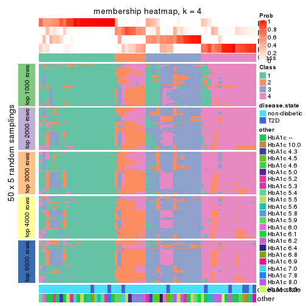
membership_heatmap(res, k = 5)
membership_heatmap(res, k = 6)
As soon as we have had the classes for columns, we can look for signatures which are significantly different between classes which can be candidate marks for certain classes. Following are the heatmaps for signatures.
Signature heatmaps where rows are scaled:
get_signatures(res, k = 2)
get_signatures(res, k = 3)
get_signatures(res, k = 4)
get_signatures(res, k = 5)
get_signatures(res, k = 6)
Signature heatmaps where rows are not scaled:
get_signatures(res, k = 2, scale_rows = FALSE)
get_signatures(res, k = 3, scale_rows = FALSE)
get_signatures(res, k = 4, scale_rows = FALSE)
get_signatures(res, k = 5, scale_rows = FALSE)

get_signatures(res, k = 6, scale_rows = FALSE)
Compare the overlap of signatures from different k:
compare_signatures(res)
get_signature() returns a data frame invisibly. TO get the list of signatures, the function
call should be assigned to a variable explicitly. In following code, if plot argument is set
to FALSE, no heatmap is plotted while only the differential analysis is performed.
# code only for demonstration
tb = get_signature(res, k = ..., plot = FALSE)
An example of the output of tb is:
#> which_row fdr mean_1 mean_2 scaled_mean_1 scaled_mean_2 km
#> 1 38 0.042760348 8.373488 9.131774 -0.5533452 0.5164555 1
#> 2 40 0.018707592 7.106213 8.469186 -0.6173731 0.5762149 1
#> 3 55 0.019134737 10.221463 11.207825 -0.6159697 0.5749050 1
#> 4 59 0.006059896 5.921854 7.869574 -0.6899429 0.6439467 1
#> 5 60 0.018055526 8.928898 10.211722 -0.6204761 0.5791110 1
#> 6 98 0.009384629 15.714769 14.887706 0.6635654 -0.6193277 2
...
The columns in tb are:
which_row: row indices corresponding to the input matrix.fdr: FDR for the differential test. mean_x: The mean value in group x.scaled_mean_x: The mean value in group x after rows are scaled.km: Row groups if k-means clustering is applied to rows.UMAP plot which shows how samples are separated.
dimension_reduction(res, k = 2, method = "UMAP")
dimension_reduction(res, k = 3, method = "UMAP")
dimension_reduction(res, k = 4, method = "UMAP")
dimension_reduction(res, k = 5, method = "UMAP")
dimension_reduction(res, k = 6, method = "UMAP")
Following heatmap shows how subgroups are split when increasing k:
collect_classes(res)
Test correlation between subgroups and known annotations. If the known annotation is numeric, one-way ANOVA test is applied, and if the known annotation is discrete, chi-squared contingency table test is applied.
test_to_known_factors(res)
#> n disease.state(p) other(p) k
#> ATC:NMF 61 0.0861 0.2641 2
#> ATC:NMF 62 0.1360 0.2112 3
#> ATC:NMF 39 0.1748 0.1931 4
#> ATC:NMF 49 0.0506 0.0963 5
#> ATC:NMF 48 0.0637 0.1015 6
If matrix rows can be associated to genes, consider to use GO_Enrichment(res,
...) to perform function enrichment for the signature genes.
sessionInfo()
#> R version 3.6.0 (2019-04-26)
#> Platform: x86_64-pc-linux-gnu (64-bit)
#> Running under: CentOS Linux 7 (Core)
#>
#> Matrix products: default
#> BLAS: /usr/lib64/libblas.so.3.4.2
#> LAPACK: /usr/lib64/liblapack.so.3.4.2
#>
#> locale:
#> [1] LC_CTYPE=en_GB.UTF-8 LC_NUMERIC=C LC_TIME=en_GB.UTF-8
#> [4] LC_COLLATE=en_GB.UTF-8 LC_MONETARY=en_GB.UTF-8 LC_MESSAGES=en_GB.UTF-8
#> [7] LC_PAPER=en_GB.UTF-8 LC_NAME=C LC_ADDRESS=C
#> [10] LC_TELEPHONE=C LC_MEASUREMENT=en_GB.UTF-8 LC_IDENTIFICATION=C
#>
#> attached base packages:
#> [1] grid parallel stats graphics grDevices utils datasets methods base
#>
#> other attached packages:
#> [1] genefilter_1.66.0 ComplexHeatmap_2.1.1 markdown_1.1 knitr_1.26
#> [5] preprocessCore_1.46.0 cola_1.3.2 GEOquery_2.52.0 Biobase_2.44.0
#> [9] BiocGenerics_0.30.0 GetoptLong_0.1.7
#>
#> loaded via a namespace (and not attached):
#> [1] bitops_1.0-6 matrixStats_0.55.0 bit64_0.9-7 doParallel_1.0.15
#> [5] RColorBrewer_1.1-2 httr_1.4.1 tools_3.6.0 backports_1.1.5
#> [9] R6_2.4.1 DBI_1.0.0 lazyeval_0.2.2 colorspace_1.4-1
#> [13] withr_2.1.2 tidyselect_0.2.5 gridExtra_2.3 bit_1.1-14
#> [17] compiler_3.6.0 xml2_1.2.2 microbenchmark_1.4-7 pkgmaker_0.28
#> [21] slam_0.1-46 scales_1.1.0 readr_1.3.1 NMF_0.23.6
#> [25] stringr_1.4.0 digest_0.6.23 pkgconfig_2.0.3 bibtex_0.4.2
#> [29] highr_0.8 limma_3.40.6 rlang_0.4.2 GlobalOptions_0.1.1
#> [33] RSQLite_2.1.2 impute_1.58.0 shape_1.4.4 mclust_5.4.5
#> [37] dendextend_1.12.0 dplyr_0.8.3 RCurl_1.95-4.12 magrittr_1.5
#> [41] Matrix_1.2-17 Rcpp_1.0.3 munsell_0.5.0 S4Vectors_0.22.1
#> [45] viridis_0.5.1 lifecycle_0.1.0 stringi_1.4.3 plyr_1.8.4
#> [49] blob_1.2.0 crayon_1.3.4 lattice_0.20-38 splines_3.6.0
#> [53] annotate_1.62.0 circlize_0.4.9 hms_0.5.2 zeallot_0.1.0
#> [57] pillar_1.4.2 rjson_0.2.20 rngtools_1.4 reshape2_1.4.3
#> [61] codetools_0.2-16 stats4_3.6.0 XML_3.98-1.20 glue_1.3.1
#> [65] evaluate_0.14 png_0.1-7 vctrs_0.2.0 foreach_1.4.7
#> [69] polyclip_1.10-0 gtable_0.3.0 purrr_0.3.3 tidyr_1.0.0
#> [73] clue_0.3-57 assertthat_0.2.1 ggplot2_3.2.1 xfun_0.11
#> [77] gridBase_0.4-7 eulerr_6.0.0 xtable_1.8-4 skmeans_0.2-11
#> [81] survival_2.44-1.1 viridisLite_0.3.0 tibble_2.1.3 iterators_1.0.12
#> [85] AnnotationDbi_1.46.1 registry_0.5-1 memoise_1.1.0 IRanges_2.18.3
#> [89] cluster_2.1.0 brew_1.0-6